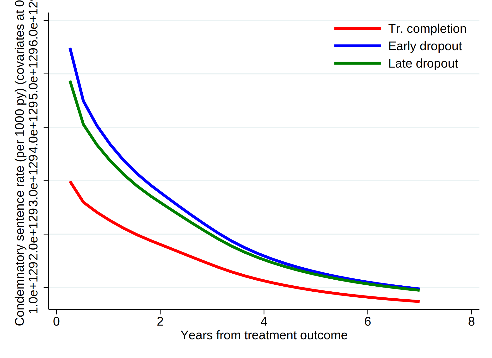
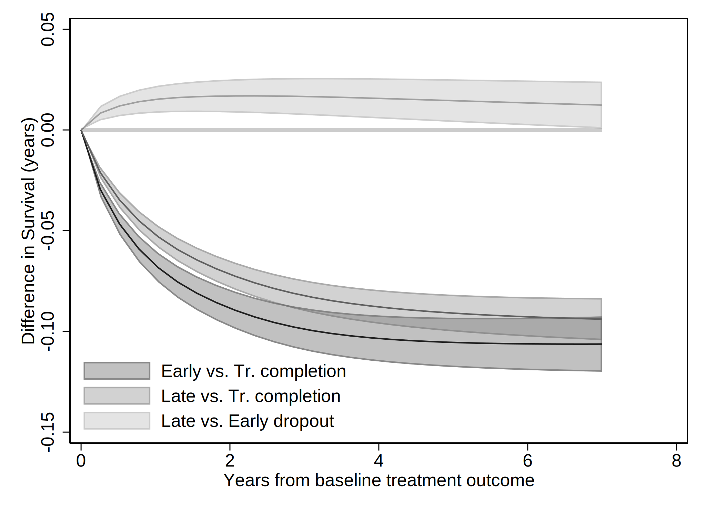
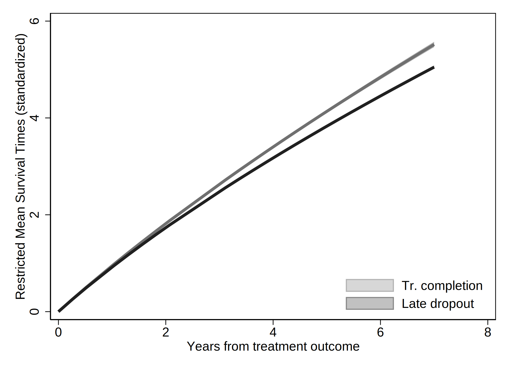
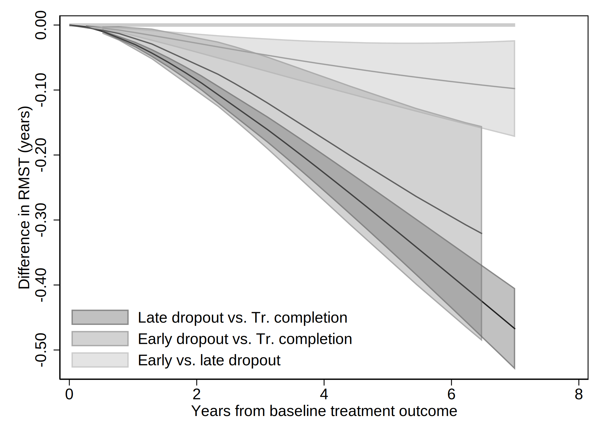

. clear all
. cap noi which tabout
C:\Users\CISS Fondecyt\ado\plus\t\tabout.ado
*! 2.0.8 Ian Watson 15mar2019
*! tabout version 3 (beta) available at: http://tabout.net.au
. if _rc==111 {
. cap noi ssc install tabout
. }
. cap noi which pathutil
C:\Users\CISS Fondecyt\ado\plus\p\pathutil.ado
*! version 2.2.0 19nov2020 daniel klein
. if _rc==111 {
. cap noi net install pathutil, from("http://fmwww.bc.edu/repec/bocode/p/")
. }
. cap noi which pathutil
C:\Users\CISS Fondecyt\ado\plus\p\pathutil.ado
*! version 2.2.0 19nov2020 daniel klein
. if _rc==111 {
. ssc install dirtools
. }
. cap noi which project
C:\Users\CISS Fondecyt\ado\plus\p\project.ado
*! version 1.3.1 22dec2013 picard@netbox.com
. if _rc==111 {
. ssc install project
. }
. cap noi which stipw
C:\Users\CISS Fondecyt\ado\plus\s\stipw.ado
*! Version 1.0.0 17Jan2022
. if _rc==111 {
. ssc install stipw
. }
. cap noi which stpm2
C:\Users\CISS Fondecyt\ado\plus\s\stpm2.ado
*! version 1.7.5 May2021
. if _rc==111 {
. ssc install stpm2
. }
. cap noi which rcsgen
C:\Users\CISS Fondecyt\ado\plus\r\rcsgen.ado
*! version 1.5.9 13FEB2022
. if _rc==111 {
. ssc install rcsgen
. }
. cap noi which matselrc
C:\Users\CISS Fondecyt\ado\plus\m\matselrc.ado
*! NJC 1.1.0 20 Apr 2000 (STB-56: dm79)
. if _rc==111 {
. cap noi net install dm79, from(http://www.stata.com/stb/stb56)
. }
. cap noi which stpm2_standsurv
C:\Users\CISS Fondecyt\ado\plus\s\stpm2_standsurv.ado
*! version 1.1.2 12Jun2018
. if _rc==111 {
. cap noi net install stpm2_standsurv.pkg, from(http://fmwww.bc.edu/RePEc/bocode/s)
. }
. cap noi which fs
C:\Users\CISS Fondecyt\ado\plus\f\fs.ado
*! NJC 1.0.5 23 November 2006
. if _rc==111 {
. ssc install fs
. }
.
Date created: 22:55:34 8 Mar 2023.
Get the folder
C:\Users\CISS Fondecyt\Mi unidad\Alvacast\SISTRAT 2022 (github)
Fecha: 8 Mar 2023, considerando un SO Windows para el usuario: CISS Fondecyt
Path data= ;
Tiempo: 8 Mar 2023, considerando un SO Windows
The file is located and named as: C:\Users\CISS Fondecyt\Mi unidad\Alvacast\SISTRAT 2022 (github)fiscalia_mariel_oct_2022_match_SENDA.dta
=============================================================================
=============================================================================
We open the files
. use "fiscalia_mariel_feb_2023_match_SENDA.dta", clear
.
. *b) select 5% of the data
. /*
> set seed 2125
> sample 5
> */
.
. fs mariel_ags_*.do
mariel_ags_b.do
. di "`r(dofile)'"
.
. *tostring tr_modality, gen(tr_modality_str)
. cap noi encode tr_modality_str, gen(newtr_modality)
variable tr_modality_str not found
. cap confirm variable newtr_modality
. if !_rc {
. cap noi drop tr_modality
. cap noi rename newtr_modality tr_modality
. }
.
. cap noi encode condicion_ocupacional_cor, gen(newcondicion_ocupacional_cor)
. cap confirm variable newcondicion_ocupacional_cor
. if !_rc {
. cap noi drop condicion_ocupacional_cor
. cap noi rename newcondicion_ocupacional_cor condicion_ocupacional_cor
. }
.
. cap noi encode tipo_centro, gen(newtipo_centro)
. cap confirm variable newtipo_centro
. if !_rc {
. cap noi drop tipo_centro
. cap noi rename newtipo_centro tipo_centro
. }
.
. cap noi encode sus_ini_mod_mvv, gen(newsus_ini_mod_mvv)
. cap confirm variable newsus_ini_mod_mvv
. if !_rc {
. cap noi drop sus_ini_mod_mvv
. cap noi rename newsus_ini_mod_mvv sus_ini_mod_mvv
. }
.
. cap noi decode freq_cons_sus_prin, gen(str_freq_cons_sus_prin)
. cap confirm variable str_freq_cons_sus_prin
. if !_rc {
. cap noi drop freq_cons_sus_prin
. label def freq_cons_sus_prin2 1 "Less than 1 day a week" 2 "1 day a week or more" 3 "2 to 3 days a week" 4 "4 to 6 days a wee
> k" 5 "Daily"
. encode str_freq_cons_sus_prin, gen(freq_cons_sus_prin) label (freq_cons_sus_prin2)
. }
.
.
. cap noi encode escolaridad_rec, gen(esc_rec)
not possible with numeric variable
. cap noi encode sex, generate(sex_enc)
. cap noi encode sus_principal_mod, gen(sus_prin_mod)
not possible with numeric variable
. cap noi encode freq_cons_sus_prin, gen(fr_sus_prin)
not possible with numeric variable
. cap noi encode compromiso_biopsicosocial, gen(comp_biosoc)
. cap noi encode tenencia_de_la_vivienda_mod, gen(ten_viv)
not possible with numeric variable
. *encode dg_cie_10_rec, generate(dg_cie_10_mental_h) *already numeric
. cap noi encode dg_trs_cons_sus_or, gen(sud_severity_icd10)
. cap noi encode macrozona, gen(macrozone)
not possible with numeric variable
.
. *2023-02-28, not done in R
. cap noi recode numero_de_hijos_mod (0=0 "No children") (1/10=1 "Children"), gen(newnumero_de_hijos_mod)
(34475 differences between numero_de_hijos_mod and newnumero_de_hijos_mod)
. cap confirm variable newnumero_de_hijos_mod
. if !_rc {
. drop numero_de_hijos_mod
. cap noi rename newnumero_de_hijos_mod numero_de_hijos_mod
. }
. *not necessary: 2023-02-28
. *gen motivodeegreso_mod_imp_rec3 = 1
. *replace motivodeegreso_mod_imp_rec3 = 2 if strpos(motivodeegreso_mod_imp_rec,"Early")>0
. *replace motivodeegreso_mod_imp_rec3 = 3 if strpos(motivodeegreso_mod_imp_rec,"Late")>0
.
. *encode policonsumo, generate(policon) *already numeric
.
We show a table of missing values
. misstable sum motivodeegreso_mod_imp_rec tr_modality edad_al_ing_1 sex_enc edad_ini_cons escolaridad_rec sus_principal_mod fr
> eq_cons_sus_prin condicion_ocupacional_cor policonsumo numero_de_hijos_mod tenencia_de_la_vivienda_mod macrozona n_off_vio n_
> off_acq n_off_sud n_off_oth clas_r porc_pobr sus_ini_mod_mvv dg_fis_anemia dg_fis_card dg_fis_in_study dg_fis_enf_som dg_fis_
> ets dg_fis_hep_alc dg_fis_hep_b dg_fis_hep_cro dg_fis_inf dg_fis_otr_cond_fis_ries_vit dg_fis_otr_cond_fis dg_fis_pat_buc dg_
> fis_pat_ges_intrau dg_fis_trau_sec
Obs<.
+------------------------------
| | Unique
Variable | Obs=. Obs>. Obs<. | values Min Max
-------------+--------------------------------+------------------------------
motivodeeg~c | 9 70,854 | 3 1 3
tr_modality | 68 70,795 | 2 1 2
edad_ini_c~s | 5,924 64,939 | 68 5 74
escolarida~c | 317 70,546 | 3 1 3
sus_princi~d | 1 70,862 | 5 1 5
freq_cons_~n | 355 70,508 | 5 1 5
condicion_~r | 1 70,862 | 6 1 6
numero_de_~d | 604 70,259 | 2 0 1
tenencia_d~d | 4,058 66,805 | 5 1 5
macrozona | 16 70,847 | 3 1 3
clas_r | 2 70,861 | 3 1 3
porc_pobr | 2 70,861 | >500 .0003295 .6305783
sus_ini_mo~v | 5,787 65,076 | 5 1 5
-----------------------------------------------------------------------------
And missing patterns
. misstable pat motivodeegreso_mod_imp_rec tr_modality edad_al_ing_1 sex_enc edad_ini_cons escolaridad_rec sus_principal_mod fr
> eq_cons_sus_prin condicion_ocupacional_cor policonsumo numero_de_hijos_mod tenencia_de_la_vivienda_mod macrozona n_off_vio n_
> off_acq n_off_sud n_off_oth clas_r porc_pobr sus_ini_mod_mvv dg_fis_anemia dg_fis_card dg_fis_in_study dg_fis_enf_som dg_fis_
> ets dg_fis_hep_alc dg_fis_hep_b dg_fis_hep_cro dg_fis_inf dg_fis_otr_cond_fis_ries_vit dg_fis_otr_cond_fis dg_fis_pat_buc dg_
> fis_pat_ges_intrau dg_fis_trau_sec
Missing-value patterns
(1 means complete)
| Pattern
Percent | 1 2 3 4 5 6 7 8 9 10 11 12 13
------------+----------------------------------------------
85% | 1 1 1 1 1 1 1 1 1 1 1 1 1
|
7 | 1 1 1 1 1 1 1 1 1 1 1 0 0
5 | 1 1 1 1 1 1 1 1 1 1 0 1 1
<1 | 1 1 1 1 1 1 1 1 1 0 1 1 1
<1 | 1 1 1 1 1 1 1 1 1 1 0 0 0
<1 | 1 1 1 1 1 1 1 1 1 1 1 1 0
<1 | 1 1 1 1 1 1 1 1 0 1 1 1 1
<1 | 1 1 1 1 1 1 1 0 1 1 1 1 1
<1 | 1 1 1 1 1 1 1 1 1 1 1 0 1
<1 | 1 1 1 1 1 1 1 1 0 1 0 1 1
<1 | 1 1 1 1 1 1 0 1 1 1 1 1 1
<1 | 1 1 1 1 1 1 1 0 1 1 1 0 0
<1 | 1 1 1 1 1 1 1 1 1 0 1 0 0
<1 | 1 1 1 1 1 1 1 0 1 1 0 1 1
<1 | 1 1 1 1 1 1 1 1 0 1 0 0 0
<1 | 1 1 1 1 1 1 1 1 0 1 1 0 0
<1 | 1 1 1 1 1 1 1 1 1 1 0 1 0
<1 | 1 1 1 1 1 1 1 1 1 0 0 1 1
<1 | 1 1 1 1 1 1 1 1 1 1 0 0 1
<1 | 1 1 1 1 1 1 1 0 1 1 0 0 0
<1 | 1 1 1 1 1 1 0 1 1 1 0 1 1
<1 | 1 1 1 1 1 0 1 1 1 1 0 1 1
<1 | 1 1 1 1 0 1 1 1 1 1 1 1 1
<1 | 1 1 1 1 1 0 1 1 1 1 1 1 0
<1 | 1 1 1 1 1 0 1 1 1 1 1 1 1
<1 | 1 1 1 1 1 1 1 0 1 1 0 1 0
<1 | 1 1 1 1 1 1 1 0 1 1 1 1 0
<1 | 1 1 1 1 1 1 0 1 1 1 1 0 0
<1 | 1 1 1 1 1 1 1 0 0 1 1 1 1
<1 | 0 0 1 1 1 1 1 0 0 1 0 0 0
<1 | 1 1 0 0 1 1 0 1 1 1 1 1 1
<1 | 1 1 0 0 1 1 1 1 1 1 1 1 1
<1 | 1 1 1 1 0 0 1 1 1 1 1 1 1
<1 | 1 1 1 1 0 1 1 0 1 1 1 1 1
<1 | 1 1 1 1 0 1 1 1 1 1 1 0 0
<1 | 1 1 1 1 1 0 1 1 1 0 1 1 0
<1 | 1 1 1 1 1 0 1 1 1 1 0 1 0
<1 | 1 1 1 1 1 1 1 0 0 1 0 0 0
<1 | 1 1 1 1 1 1 1 0 0 1 0 1 1
<1 | 1 1 1 1 1 1 1 0 0 1 1 0 0
<1 | 1 1 1 1 1 1 1 0 1 0 1 0 0
<1 | 1 1 1 1 1 1 1 0 1 0 1 1 1
<1 | 1 1 1 1 1 1 1 0 1 1 1 0 1
<1 | 1 1 1 1 1 1 1 1 0 0 0 1 1
<1 | 1 1 1 1 1 1 1 1 0 0 1 1 1
<1 | 1 1 1 1 1 1 1 1 0 1 0 1 0
<1 | 1 1 1 1 1 1 1 1 0 1 1 0 1
<1 | 1 1 1 1 1 1 1 1 1 0 0 1 0
<1 | 1 1 1 1 1 1 1 1 1 0 1 0 1
<1 | 1 1 1 1 1 1 1 1 1 0 1 1 0
------------+----------------------------------------------
100% |
Variables are (1) condicion_ocupacional_cor (2) sus_principal_mod (3) clas_r (4) porc_pobr
(5) motivodeegreso_mod_imp_rec (6) macrozona (7) tr_modality (8) escolaridad_rec (9) freq_cons_sus_prin
(10) numero_de_hijos_mod (11) tenencia_de_la_vivienda_mod (12) sus_ini_mod_mvv (13) edad_ini_cons
=============================================================================
=============================================================================
. *if missing offender_d (status) , means that there was a record and the time is the time of offense
.
. *set the indicator
. gen event=0
. replace event=1 if !missing(offender_d)
(22,287 real changes made)
. *replace event=1 if !missing(sex)
.
. *correct time to event if _st=0
. gen diff= age_offending_imp-edad_al_egres_imp
. gen diffc= cond(diff<0.001, 0.001, diff)
. drop diff
. rename diffc diff
. lab var diff "Time to offense leading to condemnatory sentence"
.
. *age time
. stset age_offending_imp, fail(event ==1) enter(edad_al_egres_imp)
failure event: event == 1
obs. time interval: (0, age_offending_imp]
enter on or after: time edad_al_egres_imp
exit on or before: failure
------------------------------------------------------------------------------
70,863 total observations
0 exclusions
------------------------------------------------------------------------------
70,863 observations remaining, representing
22,287 failures in single-record/single-failure data
229,620.92 total analysis time at risk and under observation
at risk from t = 0
earliest observed entry t = 10.95068
last observed exit t = 90.65027
.
. stdescribe, weight
failure _d: event == 1
analysis time _t: age_offending_imp
enter on or after: time edad_al_egres_imp
|-------------- per subject --------------|
Category total mean min median max
------------------------------------------------------------------------------
no. of subjects 70863
no. of records 70863 1 1 1 1
(first) entry time 36.52231 10.95068 34.6274 88.91507
(final) exit time 39.76266 14.84463 38.01506 90.65027
subjects with gap 0
time on gap if gap 0
time at risk 229620.92 3.24035 .0000449 2.665753 10.75828
failures 22287 .3145083 0 0 1
------------------------------------------------------------------------------
We calculate the incidence rate.
. stsum, by (motivodeegreso_mod_imp_rec)
failure _d: event == 1
analysis time _t: age_offending_imp
enter on or after: time edad_al_egres_imp
| Incidence Number of |------ Survival time -----|
motivo~c | Time at risk rate subjects 25% 50% 75%
---------+---------------------------------------------------------------------
Treatmen | 63,974.7795 .0597892 19276 19.60301 22.39014 28.2026
Treatmen | 46,815.0893 .1309407 15797 18.18207 19.15674 21.12526
Treatmen | 118,806.623 .1037484 35781 16.49829 17.60986 20.97467
---------+---------------------------------------------------------------------
Total | 229,596.491 .0970442 70854 16.67765 18.3436 21.03217
=============================================================================
=============================================================================
We generated a graph with every type of treatment and the Nelson-Aalen estimate.
. sts graph, na by (motivodeegreso_mod_imp_rec) ci ///
> title("Comission of an offense (end with imprisonment)") ///
> subtitle("Nelson-Aalen Cum Hazards w/ Confidence Intervals 95%") ///
> risktable(, size(*.5) order(1 "Tr Completion" 2 "Early Disch" 3 "Late Disch")) ///
> ytitle("Cum. Hazards") ylabel(#8) ///
> xtitle("Years of age") xlabel(#8) ///
> note("Source: nDP, SENDA's SUD Treatments & POs Office Data period 2010-2019 ") ///
> legend(rows(3)) ///
> legend(cols(4)) ///
> graphregion(color(white) lwidth(large)) bgcolor(white) ///
> plotregion(fcolor(white)) graphregion(fcolor(white) ) /// //text(.5 1 "IR = <0.001") ///
> legend(order(1 "95CI Tr Completion" 2 "Tr Completion" 3 "95CI Early Tr Disch" 4 "Early Tr Disch " 5 "95CI Late Tr Disch" 6 "L
> ate Tr Disch" )size(*.5)region(lstyle(none)) region(c(none)) nobox)
failure _d: event == 1
analysis time _t: age_offending_imp
enter on or after: time edad_al_egres_imp
(note: named style large not found in class linewidth, default attributes used)
(note: linewidth not found in scheme, default attributes used)
(note: named style large not found in class linewidth, default attributes used)
(note: linewidth not found in scheme, default attributes used)
. graph save "`c(pwd)'\_figs\tto_2023.gph", replace
(file C:\Users\CISS Fondecyt\Mi unidad\Alvacast\SISTRAT 2022 (github)\_figs\tto_2023.gph saved)
=============================================================================
=============================================================================
Staggered entry
We tested the schoefeld residuals.
. global sim 1e5 //5e1 1e5
. global boots 1e3 //5e1 2e3
. global times 0 90 365 1096 1826
. range timevar0 90 1826 90
(70,773 missing values generated)
.
. /*
> vars_cov<-c("tr_modality", "edad_al_ing_1", "sex", "edad_ini_cons", "dias_treat_imp_sin_na_1", "escolaridad_rec", "sus_princi
> pal_mod", "freq_cons_sus_prin", "condicion_ocupacional_corr", "via_adm_sus_prin_act", "policonsumo", "origen_ingreso_mod", "n
> umero_de_hijos_mod", "tenencia_de_la_vivienda_mod", "dg_cie_10_rec", "dg_trs_cons_sus_or", "macrozona", "n_off_vio", "n_off_a
> cq", "n_off_sud", "n_off_oth", "clas_centers_r", "clas_r", "porc_pobr")
> *sex_enc sud_severity_icd10
> */
.
. global covs "i.motivodeegreso_mod_imp_rec i.tr_modality i.sex_enc edad_ini_cons i.escolaridad_rec i.sus_principal_mod i.freq_
> cons_sus_prin i.condicion_ocupacional_cor i.policonsumo i.numero_de_hijos_mod i.tenencia_de_la_vivienda_mod i.macrozona i.n_o
> ff_vio i.n_off_acq i.n_off_sud i.n_off_oth i.clas_r porc_pobr i.sus_ini_mod_mvv dg_fis_anemia dg_fis_card dg_fis_enf_som dg_f
> is_ets dg_fis_hep_alc dg_fis_hep_b dg_fis_hep_cro dg_fis_inf dg_fis_otr_cond_fis_ries_vit dg_fis_otr_cond_fis dg_fis_pat_buc
> dg_fis_pat_ges_intrau dg_fis_trau_sec"
.
.
. qui noi stcox $covs , efron robust nolog schoenfeld(sch*) scaledsch(sca*)
failure _d: event == 1
analysis time _t: age_offending_imp
enter on or after: time edad_al_egres_imp
Cox regression -- Efron method for ties
No. of subjects = 60,247 Number of obs = 60,247
No. of failures = 17,721
Time at risk = 182350.2115
Wald chi2(52) = 4463.48
Log pseudolikelihood = -146926.62 Prob > chi2 = 0.0000
-------------------------------------------------------------------------------------------------------------
| Robust
_t | Haz. Ratio Std. Err. z P>|z| [95% Conf. Interval]
--------------------------------------------+----------------------------------------------------------------
motivodeegreso_mod_imp_rec |
Treatment non-completion (Early) | 1.50807 .0386661 16.02 0.000 1.434158 1.58579
Treatment non-completion (Late) | 1.475686 .0335683 17.11 0.000 1.411339 1.542968
|
tr_modality |
Residential | 1.270169 .0308927 9.83 0.000 1.211041 1.332184
|
sex_enc |
Women | .7435707 .0171802 -12.82 0.000 .7106492 .7780173
edad_ini_cons | .9917733 .0021123 -3.88 0.000 .9876419 .9959219
|
escolaridad_rec |
2-Completed high school or less | .9549158 .0184908 -2.38 0.017 .9193536 .9918537
1-More than high school | .8770881 .0247873 -4.64 0.000 .8298267 .9270411
|
sus_principal_mod |
Cocaine hydrochloride | 1.026821 .0301079 0.90 0.367 .9694739 1.08756
Cocaine paste | 1.38976 .0346966 13.18 0.000 1.323393 1.459455
Marijuana | 1.031943 .0389532 0.83 0.405 .9583522 1.111185
Other | 1.161781 .090579 1.92 0.054 .9971487 1.353595
|
freq_cons_sus_prin |
1 day a week or more | .9116933 .0470918 -1.79 0.073 .8239133 1.008825
2 to 3 days a week | 1.013192 .0426706 0.31 0.756 .9329175 1.100373
4 to 6 days a week | 1.0418 .0460568 0.93 0.354 .9553305 1.136096
Daily | 1.068992 .0446682 1.60 0.110 .9849332 1.160225
|
condicion_ocupacional_cor |
Inactive | 1.007046 .0339071 0.21 0.835 .9427342 1.075744
Looking for a job for the first time | 1.006445 .1560657 0.04 0.967 .7426726 1.363901
No activity | 1.025363 .0411975 0.62 0.533 .9477151 1.109373
Not seeking for work | 1.126642 .0984747 1.36 0.172 .9492627 1.337167
Unemployed | 1.141505 .0224691 6.72 0.000 1.098305 1.186404
|
1.policonsumo | 1.065361 .024657 2.74 0.006 1.018114 1.114801
|
numero_de_hijos_mod |
Children | 1.242191 .0258909 10.41 0.000 1.192469 1.293987
|
tenencia_de_la_vivienda_mod |
Others | 1.001279 .0853643 0.01 0.988 .8471994 1.183381
Owner/Transferred dwellings/Pays Dividends | .8419915 .0609686 -2.38 0.018 .7305875 .9703831
Renting | .8893547 .0655439 -1.59 0.112 .769738 1.02756
Stays temporarily with a relative | .8463312 .0610111 -2.31 0.021 .7348152 .974771
|
macrozona |
North | 1.377048 .0316357 13.93 0.000 1.316418 1.44047
South | 1.437098 .0448446 11.62 0.000 1.351838 1.527735
|
n_off_vio |
1 | 1.317687 .0281247 12.93 0.000 1.2637 1.373979
|
n_off_acq |
1 | 1.784678 .0361719 28.58 0.000 1.715172 1.857
|
n_off_sud |
1 | 1.227921 .0255671 9.86 0.000 1.178819 1.279068
|
n_off_oth |
1 | 1.345889 .0285035 14.03 0.000 1.291166 1.40293
|
clas_r |
Mixta | .946995 .0285117 -1.81 0.070 .89273 1.004559
Rural | .9836558 .0327529 -0.49 0.621 .9215113 1.049991
|
porc_pobr | 3.468674 .3946729 10.93 0.000 2.775313 4.335258
|
sus_ini_mod_mvv |
Cocaine hydrochloride | 1.068405 .048609 1.45 0.146 .9772574 1.168054
Cocaine paste | 1.106005 .0421347 2.64 0.008 1.026431 1.191749
Marijuana | 1.061219 .0208551 3.02 0.002 1.021121 1.102891
Other | 1.163528 .0660877 2.67 0.008 1.040948 1.300543
|
dg_fis_anemia | 1.140725 .3182961 0.47 0.637 .6601923 1.971022
dg_fis_card | .9889774 .1021962 -0.11 0.915 .8076576 1.211004
dg_fis_enf_som | .8659711 .1062674 -1.17 0.241 .6808453 1.101434
dg_fis_ets | .9916674 .1114081 -0.07 0.941 .79568 1.235929
dg_fis_hep_alc | .9283202 .196264 -0.35 0.725 .613392 1.404939
dg_fis_hep_b | 1.119332 .2599174 0.49 0.627 .7100741 1.764471
dg_fis_hep_cro | .8578119 .2389227 -0.55 0.582 .4969475 1.480722
dg_fis_inf | .9892449 .192137 -0.06 0.956 .6760494 1.447535
dg_fis_otr_cond_fis_ries_vit | .9103475 .0801379 -1.07 0.286 .7660832 1.081779
dg_fis_otr_cond_fis | .9469185 .0562732 -0.92 0.359 .8428061 1.063892
dg_fis_pat_buc | 1.103865 .0809312 1.35 0.178 .9561124 1.27445
dg_fis_pat_ges_intrau | .5818046 .1850219 -1.70 0.089 .3119487 1.085103
dg_fis_trau_sec | 1.078577 .0727525 1.12 0.262 .9450082 1.231024
-------------------------------------------------------------------------------------------------------------
.
. qui noi estat phtest, log detail
Test of proportional-hazards assumption
Time: Log(t)
----------------------------------------------------------------
| rho chi2 df Prob>chi2
------------+---------------------------------------------------
1b.motivod~c| . . 1 .
2.motivode~c| -0.01429 4.17 1 0.0411
3.motivode~c| -0.00205 0.08 1 0.7715
1b.tr_moda~y| . . 1 .
2.tr_modal~y| 0.00427 0.43 1 0.5130
1b.sex_enc | . . 1 .
2.sex_enc | 0.00700 1.04 1 0.3069
edad_ini_c~s| -0.00359 0.28 1 0.5991
1b.escolar~c| . . 1 .
2.escolari~c| -0.00319 0.22 1 0.6357
3.escolari~c| 0.00576 0.69 1 0.4069
1b.sus_pri~d| . . 1 .
2.sus_prin~d| 0.01128 2.55 1 0.1104
3.sus_prin~d| -0.01044 2.29 1 0.1299
4.sus_prin~d| -0.00270 0.15 1 0.6972
5.sus_prin~d| 0.00437 0.41 1 0.5206
1b.freq_co~n| . . 1 .
2.freq_con~n| -0.01169 2.72 1 0.0992
3.freq_con~n| -0.02082 8.77 1 0.0031
4.freq_con~n| -0.02781 15.87 1 0.0001
5.freq_con~n| -0.02239 10.31 1 0.0013
1b.condici~r| . . 1 .
2.condicio~r| 0.00284 0.17 1 0.6836
3.condicio~r| -0.00008 0.00 1 0.9905
4.condicio~r| 0.02574 15.04 1 0.0001
5.condicio~r| -0.00391 0.36 1 0.5508
6.condicio~r| 0.00027 0.00 1 0.9684
0b.policon~o| . . 1 .
1.policons~o| 0.01896 7.46 1 0.0063
0b.numero_~d| . . 1 .
1.numero_d~d| -0.00583 0.74 1 0.3897
1b.tenenci~d| . . 1 .
2.tenencia~d| -0.00436 0.43 1 0.5105
3.tenencia~d| 0.01084 2.63 1 0.1046
4.tenencia~d| 0.01133 2.88 1 0.0899
5.tenencia~d| 0.00868 1.69 1 0.1937
1b.macrozona| . . 1 .
2.macrozona | -0.00951 1.95 1 0.1630
3.macrozona | 0.00600 0.78 1 0.3782
1b.n_off_vio| . . 1 .
2.n_off_vio | 0.03623 30.02 1 0.0000
1b.n_off_acq| . . 1 .
2.n_off_acq | 0.02395 13.96 1 0.0002
1b.n_off_sud| . . 1 .
2.n_off_sud | 0.01535 5.45 1 0.0196
1b.n_off_oth| . . 1 .
2.n_off_oth | 0.01217 3.42 1 0.0645
1b.clas_r | . . 1 .
2.clas_r | 0.01597 5.48 1 0.0192
3.clas_r | 0.01700 6.31 1 0.0120
porc_pobr | -0.03432 24.89 1 0.0000
1b.sus_ini~v| . . 1 .
2.sus_ini_~v| 0.00350 0.26 1 0.6088
3.sus_ini_~v| 0.00339 0.27 1 0.6020
4.sus_ini_~v| -0.00976 2.08 1 0.1490
5.sus_ini_~v| -0.01361 4.42 1 0.0356
dg_fis_ane~a| 0.01176 3.06 1 0.0802
dg_fis_card | -0.00024 0.00 1 0.9719
dg_fis_enf~m| -0.00405 0.35 1 0.5540
dg_fis_ets | -0.01429 4.58 1 0.0324
dg_fis_hep~c| -0.01013 2.03 1 0.1539
dg_fis_hep_b| 0.00570 0.62 1 0.4303
dg_fis_hep~o| 0.00529 0.50 1 0.4783
dg_fis_inf | -0.00078 0.01 1 0.9149
dg_fis_otr~t| 0.00023 0.00 1 0.9730
dg_fis_otr~s| -0.00239 0.11 1 0.7347
dg_fis_pat~c| -0.01682 5.71 1 0.0168
dg_fis_pat~u| 0.00335 0.24 1 0.6223
dg_fis_tra~c| -0.00365 0.30 1 0.5809
------------+---------------------------------------------------
global test | 227.18 52 0.0000
----------------------------------------------------------------
note: robust variance-covariance matrix used.
. mat mat_scho_test = r(phtest)
. scalar chi2_scho_test = r(chi2)
. scalar chi2_scho_test_df = r(df)
. scalar chi2_scho_test_p = r(p)
.
.
. esttab matrix(mat_scho_test) using "mat_scho_test_02_2023.csv", replace
(output written to mat_scho_test_02_2023.csv)
. esttab matrix(mat_scho_test) using "mat_scho_test_02_2023.html", replace
(output written to mat_scho_test_02_2023.html)
.
Chi^2(52)= 227.18, p= 0
| mat_scho_test | ||||
| rho | chi2 | df | p | |
| 1b.motivodeegreso_mod_imp_rec | . | . | 1 | . |
| 2.motivodeegreso_mod_imp_rec | -.0142925 | 4.172704 | 1 | .0410802 |
| 3.motivodeegreso_mod_imp_rec | -.002051 | .0843451 | 1 | .7714931 |
| 1b.tr_modality | . | . | 1 | . |
| 2.tr_modality | .0042698 | .427913 | 1 | .5130148 |
| 1b.sex_enc | . | . | 1 | . |
| 2.sex_enc | .0069968 | 1.043878 | 1 | .3069213 |
| edad_ini_cons | -.0035893 | .2763223 | 1 | .5991219 |
| 1b.escolaridad_rec | . | . | 1 | . |
| 2.escolaridad_rec | -.0031892 | .224476 | 1 | .6356504 |
| 3.escolaridad_rec | .0057594 | .6878428 | 1 | .4068991 |
| 1b.sus_principal_mod | . | . | 1 | . |
| 2.sus_principal_mod | .0112781 | 2.548213 | 1 | .1104191 |
| 3.sus_principal_mod | -.0104448 | 2.293924 | 1 | .1298812 |
| 4.sus_principal_mod | -.0026992 | .1514005 | 1 | .6972005 |
| 5.sus_principal_mod | .0043685 | .412635 | 1 | .5206351 |
| 1b.freq_cons_sus_prin | . | . | 1 | . |
| 2.freq_cons_sus_prin | -.0116927 | 2.718579 | 1 | .0991863 |
| 3.freq_cons_sus_prin | -.020822 | 8.765635 | 1 | .0030696 |
| 4.freq_cons_sus_prin | -.0278121 | 15.87439 | 1 | .0000677 |
| 5.freq_cons_sus_prin | -.0223919 | 10.30974 | 1 | .0013233 |
| 1b.condicion_ocupacional_cor | . | . | 1 | . |
| 2.condicion_ocupacional_cor | .002841 | .1660622 | 1 | .6836354 |
| 3.condicion_ocupacional_cor | -.0000812 | .0001421 | 1 | .9904902 |
| 4.condicion_ocupacional_cor | .0257425 | 15.03927 | 1 | .0001053 |
| 5.condicion_ocupacional_cor | -.0039142 | .3558367 | 1 | .5508276 |
| 6.condicion_ocupacional_cor | .0002735 | .0015676 | 1 | .968418 |
| 0b.policonsumo | . | . | 1 | . |
| 1.policonsumo | .0189635 | 7.463568 | 1 | .006296 |
| 0b.numero_de_hijos_mod | . | . | 1 | . |
| 1.numero_de_hijos_mod | -.0058275 | .7398113 | 1 | .3897213 |
| 1b.tenencia_de_la_vivienda_mod | . | . | 1 | . |
| 2.tenencia_de_la_vivienda_mod | -.0043557 | .433032 | 1 | .5105049 |
| 3.tenencia_de_la_vivienda_mod | .0108391 | 2.633243 | 1 | .1046478 |
| 4.tenencia_de_la_vivienda_mod | .0113349 | 2.876969 | 1 | .089855 |
| 5.tenencia_de_la_vivienda_mod | .0086797 | 1.689542 | 1 | .1936613 |
| 1b.macrozona | . | . | 1 | . |
| 2.macrozona | -.0095098 | 1.946374 | 1 | .1629781 |
| 3.macrozona | .0059994 | .776558 | 1 | .3781959 |
| 1b.n_off_vio | . | . | 1 | . |
| 2.n_off_vio | .0362271 | 30.01977 | 1 | 4.28e-08 |
| 1b.n_off_acq | . | . | 1 | . |
| 2.n_off_acq | .0239477 | 13.96059 | 1 | .0001867 |
| 1b.n_off_sud | . | . | 1 | . |
| 2.n_off_sud | .0153536 | 5.446073 | 1 | .0196124 |
| 1b.n_off_oth | . | . | 1 | . |
| 2.n_off_oth | .0121695 | 3.41877 | 1 | .064459 |
| 1b.clas_r | . | . | 1 | . |
| 2.clas_r | .015971 | 5.48294 | 1 | .0192029 |
| 3.clas_r | .0169959 | 6.314008 | 1 | .0119788 |
| porc_pobr | -.0343159 | 24.88885 | 1 | 6.07e-07 |
| 1b.sus_ini_mod_mvv | . | . | 1 | . |
| 2.sus_ini_mod_mvv | .0035035 | .2619605 | 1 | .6087765 |
| 3.sus_ini_mod_mvv | .0033913 | .2719436 | 1 | .602031 |
| 4.sus_ini_mod_mvv | -.0097567 | 2.082856 | 1 | .1489613 |
| 5.sus_ini_mod_mvv | -.0136068 | 4.416657 | 1 | .0355897 |
| dg_fis_anemia | .0117574 | 3.060541 | 1 | .080215 |
| dg_fis_card | -.0002446 | .0012373 | 1 | .9719403 |
| dg_fis_enf_som | -.0040538 | .3502781 | 1 | .5539557 |
| dg_fis_ets | -.0142905 | 4.57647 | 1 | .0324139 |
| dg_fis_hep_alc | -.0101318 | 2.033131 | 1 | .1539033 |
| dg_fis_hep_b | .0057 | .6219759 | 1 | .430314 |
| dg_fis_hep_cro | .0052931 | .5027064 | 1 | .4783133 |
| dg_fis_inf | -.0007808 | .0114286 | 1 | .9148648 |
| dg_fis_otr_cond_fis_ries_vit | .0002251 | .0011456 | 1 | .972999 |
| dg_fis_otr_cond_fis | -.0023889 | .1148096 | 1 | .7347336 |
| dg_fis_pat_buc | -.0168177 | 5.712597 | 1 | .0168436 |
| dg_fis_pat_ges_intrau | .0033524 | .2426834 | 1 | .6222747 |
| dg_fis_trau_sec | -.0036453 | .3047472 | 1 | .5809215 |
Reset-time
. *reset time, only compatible with stteffects (same entry times)
. stset diff, failure(event ==1)
failure event: event == 1
obs. time interval: (0, diff]
exit on or before: failure
------------------------------------------------------------------------------
70,863 total observations
0 exclusions
------------------------------------------------------------------------------
70,863 observations remaining, representing
22,287 failures in single-record/single-failure data
229,620.93 total analysis time at risk and under observation
at risk from t = 0
earliest observed entry t = 0
last observed exit t = 10.75828
. *Micki Hill & Paul C Lambert & Michael J Crowther, 2021. "Introducing stipw: inverse probability weighted parametric survival
> models," London Stata Conference 2021 15, Stata Users Group.
. *https://view.officeapps.live.com/op/view.aspx?src=http%3A%2F%2Ffmwww.bc.edu%2Frepec%2Fusug2021%2Fusug21_hill.pptx&wdOrigin=B
> ROWSELINK
.
. *Treatment variable should be a binary variable with values 0 and 1.
. gen motivodeegreso_mod_imp_rec2 = 0
. replace motivodeegreso_mod_imp_rec2 = 1 if motivodeegreso_mod_imp_rec==2
(15,797 real changes made)
. replace motivodeegreso_mod_imp_rec2 = 1 if motivodeegreso_mod_imp_rec==3
(35,781 real changes made)
.
. recode motivodeegreso_mod_imp_rec2 (0=1 "Tr Completion") (1=0 "Tr Non-completion (Late & Early)"), gen(caus_disch_mod_imp_rec
> )
(70863 differences between motivodeegreso_mod_imp_rec2 and caus_disch_mod_imp_rec)
.
. cap noi gen motegr_dum3= motivodeegreso_mod_imp_rec2
.
. replace motegr_dum3 = 0 if motivodeegreso_mod_imp_rec==2
(15,797 real changes made)
.
. cap noi gen motegr_dum2= motivodeegreso_mod_imp_rec2
.
. replace motegr_dum2 = 0 if motivodeegreso_mod_imp_rec==3
(35,781 real changes made)
.
. lab var motegr_dum3 "Baseline treatment outcome(dich, 1= Late Dropout)"
.
. lab var motegr_dum2 "Baseline treatment outcome(dich, 1= Early Dropout)"
.
. lab var caus_disch_mod_imp_rec "Baseline treatment outcome(dich)"
.
. /*
> vars_cov<-c("tr_modality", "edad_al_ing_1", "sex", "edad_ini_cons", "dias_treat_imp_sin_na_1", "escolaridad_rec", "sus_princi
> pal_mod", "freq_cons_sus_prin", "condicion_ocupacional_corr", "via_adm_sus_prin_act", "policonsumo", "origen_ingreso_mod", "n
> umero_de_hijos_mod", "tenencia_de_la_vivienda_mod", "dg_cie_10_rec", "dg_trs_cons_sus_or", "macrozona", "n_off_vio", "n_off_a
> cq", "n_off_sud", "n_off_oth", "clas_centers_r", "clas_r", "porc_pobr")
> *sex_enc sud_severity_icd10
>
> *dias_treat_imp_sin_na_1
> *i.clas_centers_r
> *i.origen_ingreso_mod
> *i.via_adm_sus_prin_act
> *i.sud_severity_icd10
> */
.
. global covs_3 "i.motivodeegreso_mod_imp_rec i.tr_modality edad_al_ing_1 i.sex_enc edad_ini_cons i.escolaridad_rec i.sus_princ
> ipal_mod i.freq_cons_sus_prin i.condicion_ocupacional_cor i.policonsumo i.numero_de_hijos_mod i.tenencia_de_la_vivienda_mod i
> .macrozona i.n_off_vio i.n_off_acq i.n_off_sud i.n_off_oth i.clas_r porc_pobr i.sus_ini_mod_mvv dg_fis_anemia dg_fis_card dg_
> fis_enf_som dg_fis_ets dg_fis_hep_alc dg_fis_hep_b dg_fis_hep_cro dg_fis_inf dg_fis_otr_cond_fis_ries_vit dg_fis_otr_cond_fis
> dg_fis_pat_buc dg_fis_pat_ges_intrau dg_fis_trau_sec"
.
. qui noi stcox $covs_3 , efron robust nolog schoenfeld(sch_b*) scaledsch(sca_b*)
failure _d: event == 1
analysis time _t: diff
Cox regression -- Efron method for ties
No. of subjects = 60,247 Number of obs = 60,247
No. of failures = 17,721
Time at risk = 182350.221
Wald chi2(53) = 8086.72
Log pseudolikelihood = -182141.36 Prob > chi2 = 0.0000
-------------------------------------------------------------------------------------------------------------
| Robust
_t | Haz. Ratio Std. Err. z P>|z| [95% Conf. Interval]
--------------------------------------------+----------------------------------------------------------------
motivodeegreso_mod_imp_rec |
Treatment non-completion (Early) | 1.597356 .0384219 19.47 0.000 1.523797 1.674464
Treatment non-completion (Late) | 1.5303 .0329192 19.78 0.000 1.467121 1.5962
|
tr_modality |
Residential | 1.292222 .0286563 11.56 0.000 1.23726 1.349626
edad_al_ing_1 | .9712874 .0009769 -28.97 0.000 .9693746 .973204
|
sex_enc |
Women | .7729237 .0166402 -11.96 0.000 .7409881 .8062357
edad_ini_cons | .9885278 .0019447 -5.87 0.000 .9847235 .9923468
|
escolaridad_rec |
2-Completed high school or less | .9631935 .0171689 -2.10 0.035 .9301241 .9974386
1-More than high school | .8726942 .0230136 -5.16 0.000 .8287342 .9189861
|
sus_principal_mod |
Cocaine hydrochloride | 1.054477 .0294653 1.90 0.058 .9982789 1.113839
Cocaine paste | 1.428649 .0337064 15.12 0.000 1.36409 1.496263
Marijuana | 1.113413 .0396381 3.02 0.003 1.038372 1.193876
Other | 1.194447 .0863609 2.46 0.014 1.036629 1.376292
|
freq_cons_sus_prin |
1 day a week or more | .9156394 .0446127 -1.81 0.070 .8322453 1.00739
2 to 3 days a week | 1.018393 .0402285 0.46 0.645 .942521 1.100372
4 to 6 days a week | 1.036448 .0428483 0.87 0.387 .9557794 1.123925
Daily | 1.053223 .0411904 1.33 0.185 .975508 1.13713
|
condicion_ocupacional_cor |
Inactive | 1.011335 .031607 0.36 0.718 .9512459 1.075221
Looking for a job for the first time | 1.072132 .1506032 0.50 0.620 .8141032 1.411943
No activity | 1.028042 .0379608 0.75 0.454 .9562684 1.105202
Not seeking for work | 1.131579 .0892096 1.57 0.117 .96957 1.320658
Unemployed | 1.140321 .0208517 7.18 0.000 1.100177 1.181931
|
1.policonsumo | 1.123297 .0247116 5.29 0.000 1.075892 1.17279
|
numero_de_hijos_mod |
Children | 1.171063 .0223121 8.29 0.000 1.128139 1.215621
|
tenencia_de_la_vivienda_mod |
Others | 1.032174 .0809723 0.40 0.686 .8850701 1.203728
Owner/Transferred dwellings/Pays Dividends | .8657753 .057913 -2.15 0.031 .7593939 .9870594
Renting | .9251944 .0630117 -1.14 0.254 .8095816 1.057317
Stays temporarily with a relative | .8823438 .0587563 -1.88 0.060 .7743822 1.005357
|
macrozona |
North | 1.381292 .0291334 15.32 0.000 1.325356 1.439589
South | 1.373056 .0400797 10.86 0.000 1.296706 1.453901
|
n_off_vio |
1 | 1.288177 .0253151 12.89 0.000 1.239504 1.338762
|
n_off_acq |
1 | 1.711214 .0317748 28.93 0.000 1.650056 1.774638
|
n_off_sud |
1 | 1.19883 .022949 9.47 0.000 1.154684 1.244664
|
n_off_oth |
1 | 1.296957 .0252816 13.34 0.000 1.24834 1.347467
|
clas_r |
Mixta | .8908386 .0250823 -4.11 0.000 .84301 .9413807
Rural | .9105207 .0285189 -2.99 0.003 .8563058 .968168
|
porc_pobr | 7.356366 .7765191 18.91 0.000 5.981535 9.047196
|
sus_ini_mod_mvv |
Cocaine hydrochloride | 1.101152 .0465844 2.28 0.023 1.013531 1.196347
Cocaine paste | 1.131449 .0393113 3.55 0.000 1.056965 1.211182
Marijuana | 1.072492 .0195529 3.84 0.000 1.034845 1.111508
Other | 1.144264 .0592837 2.60 0.009 1.033774 1.266562
|
dg_fis_anemia | 1.127068 .300288 0.45 0.653 .6685936 1.899933
dg_fis_card | .9348486 .0910186 -0.69 0.489 .7724434 1.131399
dg_fis_enf_som | .8460076 .0981956 -1.44 0.150 .6738696 1.062118
dg_fis_ets | 1.005483 .1056235 0.05 0.958 .8183859 1.235354
dg_fis_hep_alc | .8760598 .1804299 -0.64 0.521 .5850912 1.311729
dg_fis_hep_b | 1.092867 .2359956 0.41 0.681 .7157431 1.668696
dg_fis_hep_cro | .8762293 .2335721 -0.50 0.620 .5196575 1.477469
dg_fis_inf | 1.00794 .1842251 0.04 0.965 .7044615 1.442155
dg_fis_otr_cond_fis_ries_vit | .9022688 .0736444 -1.26 0.208 .7688821 1.058796
dg_fis_otr_cond_fis | .9246997 .0509601 -1.42 0.155 .8300249 1.030173
dg_fis_pat_buc | 1.050518 .0721384 0.72 0.473 .9182312 1.201863
dg_fis_pat_ges_intrau | .6332943 .1885951 -1.53 0.125 .3532789 1.135255
dg_fis_trau_sec | 1.056853 .0655145 0.89 0.372 .9359412 1.193386
-------------------------------------------------------------------------------------------------------------
. qui noi estat phtest, log detail
Test of proportional-hazards assumption
Time: Log(t)
----------------------------------------------------------------
| rho chi2 df Prob>chi2
------------+---------------------------------------------------
1b.motivod~c| . . 1 .
2.motivode~c| -0.03982 28.67 1 0.0000
3.motivode~c| -0.03079 17.01 1 0.0000
1b.tr_moda~y| . . 1 .
2.tr_modal~y| -0.00318 0.20 1 0.6566
edad_al_in~1| -0.01892 6.29 1 0.0122
1b.sex_enc | . . 1 .
2.sex_enc | 0.00090 0.01 1 0.9031
edad_ini_c~s| -0.00458 0.38 1 0.5364
1b.escolar~c| . . 1 .
2.escolari~c| 0.00320 0.19 1 0.6606
3.escolari~c| -0.00116 0.02 1 0.8757
1b.sus_pri~d| . . 1 .
2.sus_prin~d| 0.00969 1.72 1 0.1903
3.sus_prin~d| 0.00138 0.04 1 0.8501
4.sus_prin~d| 0.00646 0.77 1 0.3803
5.sus_prin~d| -0.00185 0.06 1 0.8011
1b.freq_co~n| . . 1 .
2.freq_con~n| 0.00269 0.13 1 0.7210
3.freq_con~n| -0.00752 1.01 1 0.3157
4.freq_con~n| -0.00898 1.45 1 0.2291
5.freq_con~n| -0.01088 2.13 1 0.1442
1b.condici~r| . . 1 .
2.condicio~r| -0.00592 0.63 1 0.4280
3.condicio~r| -0.00515 0.47 1 0.4935
4.condicio~r| -0.00741 1.05 1 0.3045
5.condicio~r| 0.00208 0.08 1 0.7744
6.condicio~r| -0.02066 7.74 1 0.0054
0b.policon~o| . . 1 .
1.policons~o| 0.00232 0.10 1 0.7503
0b.numero_~d| . . 1 .
1.numero_d~d| 0.00328 0.20 1 0.6542
1b.tenenci~d| . . 1 .
2.tenencia~d| 0.00214 0.09 1 0.7665
3.tenencia~d| 0.00886 1.50 1 0.2204
4.tenencia~d| 0.00907 1.57 1 0.2097
5.tenencia~d| 0.00867 1.44 1 0.2305
1b.macrozona| . . 1 .
2.macrozona | -0.00724 0.95 1 0.3295
3.macrozona | -0.00409 0.32 1 0.5742
1b.n_off_vio| . . 1 .
2.n_off_vio | -0.00612 0.73 1 0.3944
1b.n_off_acq| . . 1 .
2.n_off_acq | -0.07058 100.63 1 0.0000
1b.n_off_sud| . . 1 .
2.n_off_sud | -0.00912 1.63 1 0.2021
1b.n_off_oth| . . 1 .
2.n_off_oth | -0.00467 0.43 1 0.5141
1b.clas_r | . . 1 .
2.clas_r | 0.00637 0.76 1 0.3832
3.clas_r | 0.02489 11.98 1 0.0005
porc_pobr | -0.04617 38.24 1 0.0000
1b.sus_ini~v| . . 1 .
2.sus_ini_~v| 0.00018 0.00 1 0.9809
3.sus_ini_~v| 0.00011 0.00 1 0.9882
4.sus_ini_~v| -0.00090 0.02 1 0.9011
5.sus_ini_~v| -0.00815 1.32 1 0.2514
dg_fis_ane~a| -0.00418 0.35 1 0.5524
dg_fis_card | 0.00234 0.10 1 0.7513
dg_fis_enf~m| -0.00217 0.09 1 0.7651
dg_fis_ets | -0.01704 5.69 1 0.0171
dg_fis_hep~c| -0.02067 8.03 1 0.0046
dg_fis_hep_b| 0.00356 0.21 1 0.6471
dg_fis_hep~o| 0.00756 0.94 1 0.3327
dg_fis_inf | -0.00341 0.19 1 0.6606
dg_fis_otr~t| -0.00771 1.16 1 0.2820
dg_fis_otr~s| 0.00500 0.43 1 0.5103
dg_fis_pat~c| -0.00431 0.33 1 0.5660
dg_fis_pat~u| 0.01220 2.81 1 0.0935
dg_fis_tra~c| -0.00554 0.59 1 0.4411
------------+---------------------------------------------------
global test | 259.87 53 0.0000
----------------------------------------------------------------
note: robust variance-covariance matrix used.
. mat mat_scho_test2 = r(phtest)
. scalar chi2_scho_test2 = r(chi2)
. scalar chi2_scho_test2_df = r(df)
. scalar chi2_scho_test2_p = r(p)
.
. esttab matrix(mat_scho_test2) using "mat_scho_test_02_2023_2.csv", replace
(output written to mat_scho_test_02_2023_2.csv)
. esttab matrix(mat_scho_test2) using "mat_scho_test_02_2023_2.html", replace
(output written to mat_scho_test_02_2023_2.html)
.
Chi^2(53)= 259.87, p= 0
| mat_scho_test2 | ||||
| rho | chi2 | df | p | |
| 1b.motivodeegreso_mod_imp_rec | . | . | 1 | . |
| 2.motivodeegreso_mod_imp_rec | -.0398228 | 28.66964 | 1 | 8.58e-08 |
| 3.motivodeegreso_mod_imp_rec | -.0307882 | 17.00919 | 1 | .0000372 |
| 1b.tr_modality | . | . | 1 | . |
| 2.tr_modality | -.0031786 | .197633 | 1 | .6566383 |
| edad_al_ing_1 | -.0189158 | 6.287903 | 1 | .0121565 |
| 1b.sex_enc | . | . | 1 | . |
| 2.sex_enc | .0008962 | .0148277 | 1 | .9030819 |
| edad_ini_cons | -.0045759 | .3821657 | 1 | .5364465 |
| 1b.escolaridad_rec | . | . | 1 | . |
| 2.escolaridad_rec | .0031997 | .1928167 | 1 | .6605826 |
| 3.escolaridad_rec | -.0011567 | .0244671 | 1 | .8757023 |
| 1b.sus_principal_mod | . | . | 1 | . |
| 2.sus_principal_mod | .0096926 | 1.715636 | 1 | .1902557 |
| 3.sus_principal_mod | .0013753 | .0357161 | 1 | .850103 |
| 4.sus_principal_mod | .006459 | .7696577 | 1 | .380323 |
| 5.sus_principal_mod | -.0018503 | .0634761 | 1 | .8010838 |
| 1b.freq_cons_sus_prin | . | . | 1 | . |
| 2.freq_cons_sus_prin | .0026852 | .1275365 | 1 | .7210001 |
| 3.freq_cons_sus_prin | -.007523 | 1.00667 | 1 | .3157018 |
| 4.freq_cons_sus_prin | -.0089784 | 1.446733 | 1 | .2290529 |
| 5.freq_cons_sus_prin | -.0108817 | 2.132259 | 1 | .1442281 |
| 1b.condicion_ocupacional_cor | . | . | 1 | . |
| 2.condicion_ocupacional_cor | -.0059225 | .6281685 | 1 | .4280279 |
| 3.condicion_ocupacional_cor | -.0051469 | .4688927 | 1 | .493497 |
| 4.condicion_ocupacional_cor | -.0074104 | 1.054242 | 1 | .3045321 |
| 5.condicion_ocupacional_cor | .0020834 | .0821735 | 1 | .7743732 |
| 6.condicion_ocupacional_cor | -.0206646 | 7.735853 | 1 | .0054135 |
| 0b.policonsumo | . | . | 1 | . |
| 1.policonsumo | .0023172 | .1012915 | 1 | .7502852 |
| 0b.numero_de_hijos_mod | . | . | 1 | . |
| 1.numero_de_hijos_mod | .0032822 | .2006422 | 1 | .654203 |
| 1b.tenencia_de_la_vivienda_mod | . | . | 1 | . |
| 2.tenencia_de_la_vivienda_mod | .0021365 | .088183 | 1 | .7664999 |
| 3.tenencia_de_la_vivienda_mod | .0088612 | 1.501742 | 1 | .2204035 |
| 4.tenencia_de_la_vivienda_mod | .0090744 | 1.573797 | 1 | .2096564 |
| 5.tenencia_de_la_vivienda_mod | .0086702 | 1.437903 | 1 | .230479 |
| 1b.macrozona | . | . | 1 | . |
| 2.macrozona | -.0072361 | .9508896 | 1 | .329493 |
| 3.macrozona | -.0040883 | .3156609 | 1 | .574227 |
| 1b.n_off_vio | . | . | 1 | . |
| 2.n_off_vio | -.0061194 | .7253537 | 1 | .3943934 |
| 1b.n_off_acq | . | . | 1 | . |
| 2.n_off_acq | -.0705752 | 100.6329 | 1 | 1.11e-23 |
| 1b.n_off_sud | . | . | 1 | . |
| 2.n_off_sud | -.0091224 | 1.627119 | 1 | .2021021 |
| 1b.n_off_oth | . | . | 1 | . |
| 2.n_off_oth | -.0046727 | .4256732 | 1 | .5141197 |
| 1b.clas_r | . | . | 1 | . |
| 2.clas_r | .006369 | .7602853 | 1 | .3832393 |
| 3.clas_r | .0248892 | 11.97615 | 1 | .0005389 |
| porc_pobr | -.0461682 | 38.23607 | 1 | 6.27e-10 |
| 1b.sus_ini_mod_mvv | . | . | 1 | . |
| 2.sus_ini_mod_mvv | .0001758 | .0005704 | 1 | .9809461 |
| 3.sus_ini_mod_mvv | .0001055 | .0002186 | 1 | .9882029 |
| 4.sus_ini_mod_mvv | -.0009048 | .0154409 | 1 | .9011083 |
| 5.sus_ini_mod_mvv | -.0081457 | 1.315479 | 1 | .251405 |
| dg_fis_anemia | -.0041829 | .3531233 | 1 | .5523504 |
| dg_fis_card | .0023395 | .1004516 | 1 | .7512884 |
| dg_fis_enf_som | -.002165 | .0893127 | 1 | .7650527 |
| dg_fis_ets | -.0170409 | 5.6884 | 1 | .0170774 |
| dg_fis_hep_alc | -.0206667 | 8.030333 | 1 | .0046 |
| dg_fis_hep_b | .0035582 | .2095574 | 1 | .6471145 |
| dg_fis_hep_cro | .0075562 | .9384932 | 1 | .3326657 |
| dg_fis_inf | -.0034085 | .1927465 | 1 | .6606405 |
| dg_fis_otr_cond_fis_ries_vit | -.0077146 | 1.157226 | 1 | .2820415 |
| dg_fis_otr_cond_fis | .0050044 | .4335182 | 1 | .5102676 |
| dg_fis_pat_buc | -.0043122 | .3294504 | 1 | .5659829 |
| dg_fis_pat_ges_intrau | .0121978 | 2.813491 | 1 | .0934747 |
| dg_fis_trau_sec | -.0055354 | .5935334 | 1 | .441056 |
=============================================================================
=============================================================================
In view of nonproportional hazards, we explored different shapes of time-dependent effects and baseline hazards.
. *______________________________________________
. *______________________________________________
. * ADJUSTED ROYSTON PARMAR - NO STAGGERED ENTRY, BINARY TREATMENT (1-DROPOUT VS. 0-COMPLETION)
.
.
. *Factor variables not allowed for tvc() option. Create your own dummy varibles.
. gen motivodeegreso_mod_imp_rec_earl = 1
. replace motivodeegreso_mod_imp_rec_earl = 0 if motivodeegreso_mod_imp_rec==1
(19,276 real changes made)
. replace motivodeegreso_mod_imp_rec_earl = 0 if motivodeegreso_mod_imp_rec==3
(35,781 real changes made)
.
. gen motivodeegreso_mod_imp_rec_late = 1
. replace motivodeegreso_mod_imp_rec_late = 0 if motivodeegreso_mod_imp_rec==1
(19,276 real changes made)
. replace motivodeegreso_mod_imp_rec_late = 0 if motivodeegreso_mod_imp_rec==2
(15,797 real changes made)
.
. *recode motivodeegreso_mod_imp_rec_earl (1=1 "Early dropout") (0=0 "Tr. comp & Late dropout"), gen(newmotivodeegreso_mod_imp_
> rec_e)
. *recode motivodeegreso_mod_imp_rec_late (1=1 "Late dropout") (0=0 "Tr. comp & Early dropout"), gen(newmotivodeegreso_mod_imp_
> rec_l)
.
. lab var motivodeegreso_mod_imp_rec_earl "Baseline treatment outcome- Early dropout(dich)"
. lab var motivodeegreso_mod_imp_rec_late "Baseline treatment outcome- Late dropout(dich)"
.
. cap noi rename motivodeegreso_mod_imp_rec_late mot_egr_late
. cap noi rename motivodeegreso_mod_imp_rec_earl mot_egr_early
.
. global covs_3b "mot_egr_early mot_egr_late i.tr_modality edad_al_ing_1 i.sex_enc edad_ini_cons i.escolaridad_rec i.sus_princi
> pal_mod i.freq_cons_sus_prin i.condicion_ocupacional_cor i.policonsumo i.numero_de_hijos_mod i.tenencia_de_la_vivienda_mod i.
> macrozona i.n_off_vio i.n_off_acq i.n_off_sud i.n_off_oth i.clas_r porc_pobr i.sus_ini_mod_mvv dg_fis_anemia dg_fis_card dg_f
> is_enf_som dg_fis_ets dg_fis_hep_alc dg_fis_hep_b dg_fis_hep_cro dg_fis_inf dg_fis_otr_cond_fis_ries_vit dg_fis_otr_cond_fis
> dg_fis_pat_buc dg_fis_pat_ges_intrau dg_fis_trau_sec"
.
. forvalues i=1/10 {
2. forvalues j=1/7 {
3. qui noi stpm2 $covs_3b , scale(hazard) df(`i') eform tvc(mot_egr_early mot_egr_late) dftvc(`j')
4. estimates store m_nostag_rp`i'_tvc_`j'
5. }
6. }
Iteration 0: log likelihood = -55486.911
Iteration 1: log likelihood = -55210.155
Iteration 2: log likelihood = -55208.045
Iteration 3: log likelihood = -55208.045
Log likelihood = -55208.045 Number of obs = 60,253
-------------------------------------------------------------------------------------------------------------
| exp(b) Std. Err. z P>|z| [95% Conf. Interval]
--------------------------------------------+----------------------------------------------------------------
xb |
mot_egr_early | 1.659656 .0425157 19.78 0.000 1.578384 1.745113
mot_egr_late | 1.57757 .0367645 19.56 0.000 1.507134 1.651298
|
tr_modality |
Residential | 1.283443 .0274255 11.68 0.000 1.2308 1.338338
edad_al_ing_1 | .9710467 .000979 -29.14 0.000 .9691298 .9729674
|
sex_enc |
Women | .7692167 .0163673 -12.33 0.000 .7377971 .8019742
edad_ini_cons | .9880217 .001931 -6.17 0.000 .9842443 .9918137
|
escolaridad_rec |
2-Completed high school or less | .9626053 .016755 -2.19 0.029 .9303199 .9960112
1-More than high school | .8729975 .0228315 -5.19 0.000 .8293761 .9189132
|
sus_principal_mod |
Cocaine hydrochloride | 1.054786 .0293586 1.92 0.055 .9987851 1.113926
Cocaine paste | 1.42756 .0332568 15.28 0.000 1.363844 1.494253
Marijuana | 1.103979 .038897 2.81 0.005 1.030315 1.18291
Other | 1.179905 .0852795 2.29 0.022 1.024059 1.359468
|
freq_cons_sus_prin |
1 day a week or more | .9159408 .0447923 -1.80 0.073 .8322255 1.008077
2 to 3 days a week | 1.015766 .0401306 0.40 0.692 .9400801 1.097546
4 to 6 days a week | 1.033557 .0426236 0.80 0.424 .9533033 1.120567
Daily | 1.052405 .0410585 1.31 0.190 .9749313 1.136035
|
condicion_ocupacional_cor |
Inactive | 1.009932 .0313643 0.32 0.750 .9502923 1.073314
Looking for a job for the first time | 1.048144 .1476497 0.33 0.739 .7952693 1.381427
No activity | 1.040119 .0373977 1.09 0.274 .9693442 1.116062
Not seeking for work | 1.136594 .0869629 1.67 0.094 .9783146 1.320482
Unemployed | 1.141361 .0206781 7.30 0.000 1.101544 1.182618
|
1.policonsumo | 1.105163 .0239625 4.61 0.000 1.059181 1.153141
|
numero_de_hijos_mod |
Children | 1.173569 .0219231 8.57 0.000 1.131378 1.217334
|
tenencia_de_la_vivienda_mod |
Others | 1.025487 .0772859 0.33 0.738 .8846662 1.188724
Owner/Transferred dwellings/Pays Dividends | .8662504 .0559555 -2.22 0.026 .763238 .983166
Renting | .9212759 .0605846 -1.25 0.212 .8098662 1.048012
Stays temporarily with a relative | .8805578 .0566185 -1.98 0.048 .7762953 .9988236
|
macrozona |
North | 1.374686 .0284942 15.35 0.000 1.319958 1.431684
South | 1.398167 .0399333 11.73 0.000 1.32205 1.478667
|
n_off_vio |
1 | 1.300804 .0246807 13.86 0.000 1.253319 1.350088
|
n_off_acq |
1 | 1.734048 .0308252 30.97 0.000 1.674672 1.795529
|
n_off_sud |
1 | 1.209303 .0223032 10.30 0.000 1.16637 1.253816
|
n_off_oth |
1 | 1.311491 .0246861 14.41 0.000 1.263989 1.360779
|
clas_r |
Mixta | .914101 .0251054 -3.27 0.001 .8661962 .9646552
Rural | .9376705 .0285629 -2.11 0.035 .8833266 .9953578
|
porc_pobr | 5.324804 .5479489 16.25 0.000 4.352219 6.514731
|
sus_ini_mod_mvv |
Cocaine hydrochloride | 1.100475 .045667 2.31 0.021 1.014512 1.193721
Cocaine paste | 1.132249 .0375335 3.75 0.000 1.061024 1.208256
Marijuana | 1.075185 .0192122 4.06 0.000 1.038182 1.113508
Other | 1.142989 .0568529 2.69 0.007 1.036818 1.260031
|
dg_fis_anemia | 1.131238 .2833877 0.49 0.623 .6923384 1.848372
dg_fis_card | .9339201 .089638 -0.71 0.476 .7737686 1.127219
dg_fis_enf_som | .8426394 .0946357 -1.52 0.127 .6761522 1.05012
dg_fis_ets | .9969424 .0999005 -0.03 0.976 .8191696 1.213295
dg_fis_hep_alc | .8736422 .1752869 -0.67 0.501 .5895888 1.294548
dg_fis_hep_b | 1.07696 .2411478 0.33 0.741 .6943882 1.670308
dg_fis_hep_cro | .870907 .2418388 -0.50 0.619 .5053648 1.500855
dg_fis_inf | .9913824 .1877256 -0.05 0.964 .684006 1.436887
dg_fis_otr_cond_fis_ries_vit | .8938928 .069884 -1.43 0.151 .7669004 1.041914
dg_fis_otr_cond_fis | .9237347 .0516679 -1.42 0.156 .827821 1.030761
dg_fis_pat_buc | 1.062775 .0730081 0.89 0.375 .9288971 1.215949
dg_fis_pat_ges_intrau | .627431 .1814847 -1.61 0.107 .3559225 1.106054
dg_fis_trau_sec | 1.051914 .0624972 0.85 0.394 .9362845 1.181823
_rcs1 | 2.589201 .0393505 62.60 0.000 2.513212 2.667486
_rcs_mot_egr_early1 | .9170854 .0168892 -4.70 0.000 .8845734 .9507924
_rcs_mot_egr_late1 | .9396244 .0159682 -3.66 0.000 .9088427 .9714486
_cons | .5058503 .3277073 -1.05 0.293 .1420967 1.800777
-------------------------------------------------------------------------------------------------------------
Note: Estimates are transformed only in the first equation.
Iteration 0: log likelihood = -55105.083
Iteration 1: log likelihood = -55029.177
Iteration 2: log likelihood = -55028.92
Iteration 3: log likelihood = -55028.92
Log likelihood = -55028.92 Number of obs = 60,253
-------------------------------------------------------------------------------------------------------------
| exp(b) Std. Err. z P>|z| [95% Conf. Interval]
--------------------------------------------+----------------------------------------------------------------
xb |
mot_egr_early | 1.667896 .0427213 19.97 0.000 1.586231 1.753766
mot_egr_late | 1.578752 .0367931 19.59 0.000 1.508261 1.652537
|
tr_modality |
Residential | 1.284768 .0274488 11.73 0.000 1.23208 1.339709
edad_al_ing_1 | .971231 .0009788 -28.97 0.000 .9693146 .9731513
|
sex_enc |
Women | .7718376 .0164145 -12.18 0.000 .7403271 .8046892
edad_ini_cons | .9883211 .0019297 -6.02 0.000 .9845463 .9921104
|
escolaridad_rec |
2-Completed high school or less | .9629436 .0167591 -2.17 0.030 .9306503 .9963575
1-More than high school | .8719988 .0228034 -5.24 0.000 .8284311 .9178578
|
sus_principal_mod |
Cocaine hydrochloride | 1.051477 .0292668 1.80 0.071 .9956517 1.110432
Cocaine paste | 1.424657 .03319 15.19 0.000 1.361069 1.491217
Marijuana | 1.107097 .0390131 2.89 0.004 1.033213 1.186264
Other | 1.178782 .0851906 2.28 0.023 1.023097 1.358156
|
freq_cons_sus_prin |
1 day a week or more | .9164586 .0448175 -1.78 0.074 .8326963 1.008647
2 to 3 days a week | 1.017338 .040192 0.44 0.663 .9415353 1.099243
4 to 6 days a week | 1.035422 .042699 0.84 0.399 .9550267 1.122586
Daily | 1.05293 .0410761 1.32 0.186 .9754227 1.136595
|
condicion_ocupacional_cor |
Inactive | 1.010829 .0313816 0.35 0.729 .9511561 1.074245
Looking for a job for the first time | 1.049334 .1478145 0.34 0.732 .7961765 1.382988
No activity | 1.034528 .0371856 0.94 0.345 .9641537 1.110039
Not seeking for work | 1.133152 .0866992 1.63 0.102 .9753519 1.316482
Unemployed | 1.139951 .0206498 7.23 0.000 1.100188 1.181151
|
1.policonsumo | 1.113666 .0241623 4.96 0.000 1.067301 1.162045
|
numero_de_hijos_mod |
Children | 1.17246 .0218995 8.52 0.000 1.130314 1.216178
|
tenencia_de_la_vivienda_mod |
Others | 1.032746 .0778318 0.43 0.669 .8909305 1.197136
Owner/Transferred dwellings/Pays Dividends | .8706331 .0562376 -2.14 0.032 .7671014 .9881379
Renting | .9285126 .0610597 -1.13 0.259 .8162292 1.056242
Stays temporarily with a relative | .8858686 .0569577 -1.88 0.059 .7809812 1.004843
|
macrozona |
North | 1.375565 .0285045 15.39 0.000 1.320817 1.432583
South | 1.383908 .0395168 11.38 0.000 1.308584 1.463567
|
n_off_vio |
1 | 1.291058 .0244894 13.47 0.000 1.243941 1.33996
|
n_off_acq |
1 | 1.715822 .0304973 30.38 0.000 1.657078 1.776649
|
n_off_sud |
1 | 1.203096 .022181 10.03 0.000 1.160398 1.247365
|
n_off_oth |
1 | 1.300881 .0244786 13.98 0.000 1.253778 1.349754
|
clas_r |
Mixta | .9007156 .0247527 -3.81 0.000 .8534847 .9505603
Rural | .9216982 .0281045 -2.67 0.007 .868228 .9784614
|
porc_pobr | 6.35769 .655216 17.95 0.000 5.19488 7.78078
|
sus_ini_mod_mvv |
Cocaine hydrochloride | 1.101466 .045709 2.33 0.020 1.015425 1.194798
Cocaine paste | 1.131671 .0375076 3.73 0.000 1.060494 1.207625
Marijuana | 1.073423 .0191809 3.97 0.000 1.03648 1.111683
Other | 1.141537 .0567724 2.66 0.008 1.035517 1.258413
|
dg_fis_anemia | 1.13616 .2846165 0.51 0.610 .695356 1.856401
dg_fis_card | .9341039 .0896533 -0.71 0.478 .7739246 1.127436
dg_fis_enf_som | .8452597 .0949267 -1.50 0.134 .67826 1.053378
dg_fis_ets | 1.001417 .1003481 0.01 0.989 .8228477 1.218739
dg_fis_hep_alc | .8727236 .1751031 -0.68 0.497 .5889681 1.293188
dg_fis_hep_b | 1.082468 .2423802 0.35 0.723 .6979411 1.678848
dg_fis_hep_cro | .8742347 .2427635 -0.48 0.628 .507295 1.506591
dg_fis_inf | .9968984 .1887634 -0.02 0.987 .6878208 1.444862
dg_fis_otr_cond_fis_ries_vit | .8986772 .0702599 -1.37 0.172 .7710022 1.047495
dg_fis_otr_cond_fis | .9246825 .0517228 -1.40 0.162 .828667 1.031823
dg_fis_pat_buc | 1.057221 .0726279 0.81 0.418 .9240398 1.209597
dg_fis_pat_ges_intrau | .6261963 .1811255 -1.62 0.106 .3552245 1.10387
dg_fis_trau_sec | 1.05238 .0625174 0.86 0.390 .9367121 1.18233
_rcs1 | 2.579555 .0390799 62.55 0.000 2.504086 2.657299
_rcs_mot_egr_early1 | .9492965 .017993 -2.75 0.006 .9146778 .9852254
_rcs_mot_egr_early2 | 1.104244 .0103083 10.62 0.000 1.084224 1.124634
_rcs_mot_egr_late1 | .9859179 .0172329 -0.81 0.417 .952714 1.020279
_rcs_mot_egr_late2 | 1.110771 .0079527 14.67 0.000 1.095292 1.126468
_cons | .4757373 .3082043 -1.15 0.252 .133635 1.693613
-------------------------------------------------------------------------------------------------------------
Note: Estimates are transformed only in the first equation.
Iteration 0: log likelihood = -55030.37
Iteration 1: log likelihood = -55003.723
Iteration 2: log likelihood = -55003.674
Iteration 3: log likelihood = -55003.674
Log likelihood = -55003.674 Number of obs = 60,253
-------------------------------------------------------------------------------------------------------------
| exp(b) Std. Err. z P>|z| [95% Conf. Interval]
--------------------------------------------+----------------------------------------------------------------
xb |
mot_egr_early | 1.669557 .0427699 20.01 0.000 1.587799 1.755524
mot_egr_late | 1.578718 .0367967 19.59 0.000 1.50822 1.652511
|
tr_modality |
Residential | 1.285952 .0274736 11.77 0.000 1.233217 1.340943
edad_al_ing_1 | .9712556 .0009788 -28.94 0.000 .9693392 .9731758
|
sex_enc |
Women | .7723752 .016424 -12.15 0.000 .7408464 .8052459
edad_ini_cons | .9883778 .0019295 -5.99 0.000 .9846033 .9921669
|
escolaridad_rec |
2-Completed high school or less | .9629747 .0167597 -2.17 0.030 .9306803 .9963897
1-More than high school | .8719793 .0228026 -5.24 0.000 .828413 .9178367
|
sus_principal_mod |
Cocaine hydrochloride | 1.051874 .0292797 1.82 0.069 .9960239 1.110855
Cocaine paste | 1.425251 .0332068 15.21 0.000 1.361631 1.491844
Marijuana | 1.109201 .0390915 2.94 0.003 1.03517 1.188527
Other | 1.179724 .0852652 2.29 0.022 1.023904 1.359257
|
freq_cons_sus_prin |
1 day a week or more | .9164824 .0448187 -1.78 0.075 .8327178 1.008673
2 to 3 days a week | 1.017936 .0402156 0.45 0.653 .942089 1.099889
4 to 6 days a week | 1.036426 .0427404 0.87 0.386 .9559527 1.123674
Daily | 1.053604 .041102 1.34 0.181 .9760483 1.137322
|
condicion_ocupacional_cor |
Inactive | 1.0112 .0313907 0.36 0.720 .9515094 1.074634
Looking for a job for the first time | 1.054386 .1485278 0.38 0.707 .8000064 1.38965
No activity | 1.032394 .0371078 0.89 0.375 .9621672 1.107747
Not seeking for work | 1.131563 .08658 1.62 0.106 .9739799 1.314641
Unemployed | 1.140119 .0206519 7.24 0.000 1.100352 1.181323
|
1.policonsumo | 1.116512 .0242317 5.08 0.000 1.070015 1.16503
|
numero_de_hijos_mod |
Children | 1.172087 .021892 8.50 0.000 1.129955 1.215789
|
tenencia_de_la_vivienda_mod |
Others | 1.034788 .077986 0.45 0.650 .8926908 1.199503
Owner/Transferred dwellings/Pays Dividends | .8712615 .056278 -2.13 0.033 .7676553 .9888508
Renting | .9301244 .0611652 -1.10 0.271 .817647 1.058074
Stays temporarily with a relative | .8870034 .05703 -1.86 0.062 .7819827 1.006128
|
macrozona |
North | 1.377375 .0285405 15.45 0.000 1.322557 1.434464
South | 1.381269 .0394468 11.31 0.000 1.306079 1.460788
|
n_off_vio |
1 | 1.289713 .0244573 13.42 0.000 1.242658 1.338551
|
n_off_acq |
1 | 1.713796 .030451 30.32 0.000 1.65514 1.77453
|
n_off_sud |
1 | 1.201611 .0221501 9.96 0.000 1.158972 1.245818
|
n_off_oth |
1 | 1.299089 .0244381 13.91 0.000 1.252063 1.347881
|
clas_r |
Mixta | .8974013 .0246682 -3.94 0.000 .8503319 .9470762
Rural | .9175506 .0279908 -2.82 0.005 .8642976 .9740848
|
porc_pobr | 6.706929 .6922196 18.44 0.000 5.478624 8.210619
|
sus_ini_mod_mvv |
Cocaine hydrochloride | 1.101896 .0457275 2.34 0.019 1.01582 1.195266
Cocaine paste | 1.131345 .0374942 3.72 0.000 1.060194 1.207271
Marijuana | 1.073142 .0191756 3.95 0.000 1.036209 1.111392
Other | 1.142326 .0568134 2.68 0.007 1.036229 1.259286
|
dg_fis_anemia | 1.135818 .2845319 0.51 0.611 .6951457 1.855846
dg_fis_card | .9341968 .0896615 -0.71 0.478 .7740028 1.127546
dg_fis_enf_som | .8453694 .0949381 -1.50 0.135 .6783495 1.053512
dg_fis_ets | 1.001845 .1003906 0.02 0.985 .8231993 1.219258
dg_fis_hep_alc | .8720634 .1749714 -0.68 0.495 .5885216 1.292212
dg_fis_hep_b | 1.086166 .2432089 0.37 0.712 .7003242 1.684585
dg_fis_hep_cro | .8753019 .2430604 -0.48 0.631 .5079136 1.508433
dg_fis_inf | .9978799 .1889476 -0.01 0.991 .6885003 1.44628
dg_fis_otr_cond_fis_ries_vit | .9001233 .070374 -1.35 0.178 .772241 1.049183
dg_fis_otr_cond_fis | .9244124 .0517085 -1.41 0.160 .8284235 1.031523
dg_fis_pat_buc | 1.056101 .0725513 0.79 0.427 .9230609 1.208317
dg_fis_pat_ges_intrau | .6240187 .1804954 -1.63 0.103 .3539894 1.100031
dg_fis_trau_sec | 1.053232 .0625668 0.87 0.383 .937473 1.183285
_rcs1 | 2.57695 .0390027 62.54 0.000 2.501628 2.654539
_rcs_mot_egr_early1 | .949056 .0179533 -2.76 0.006 .9145126 .9849043
_rcs_mot_egr_early2 | 1.090944 .0102844 9.23 0.000 1.070972 1.111289
_rcs_mot_egr_early3 | 1.030424 .0063252 4.88 0.000 1.018101 1.042896
_rcs_mot_egr_late1 | .9847453 .0171681 -0.88 0.378 .9516648 1.018976
_rcs_mot_egr_late2 | 1.092218 .0080795 11.92 0.000 1.076497 1.108169
_rcs_mot_egr_late3 | 1.032462 .004677 7.05 0.000 1.023335 1.041669
_cons | .4688127 .3037205 -1.17 0.242 .1316886 1.668978
-------------------------------------------------------------------------------------------------------------
Note: Estimates are transformed only in the first equation.
Iteration 0: log likelihood = -55027.723
Iteration 1: log likelihood = -54999.075
Iteration 2: log likelihood = -54999.011
Iteration 3: log likelihood = -54999.011
Log likelihood = -54999.011 Number of obs = 60,253
-------------------------------------------------------------------------------------------------------------
| exp(b) Std. Err. z P>|z| [95% Conf. Interval]
--------------------------------------------+----------------------------------------------------------------
xb |
mot_egr_early | 1.670315 .0427913 20.02 0.000 1.588517 1.756326
mot_egr_late | 1.578925 .0368025 19.60 0.000 1.508417 1.65273
|
tr_modality |
Residential | 1.286228 .0274794 11.78 0.000 1.233481 1.34123
edad_al_ing_1 | .9712569 .0009788 -28.94 0.000 .9693404 .9731772
|
sex_enc |
Women | .7725654 .0164278 -12.13 0.000 .7410292 .8054438
edad_ini_cons | .9883915 .0019295 -5.98 0.000 .984617 .9921805
|
escolaridad_rec |
2-Completed high school or less | .9629388 .0167592 -2.17 0.030 .9306453 .9963529
1-More than high school | .8720332 .0228041 -5.24 0.000 .8284641 .9178936
|
sus_principal_mod |
Cocaine hydrochloride | 1.05228 .0292924 1.83 0.067 .996406 1.111287
Cocaine paste | 1.425726 .0332203 15.22 0.000 1.36208 1.492346
Marijuana | 1.109941 .0391196 2.96 0.003 1.035856 1.189324
Other | 1.180334 .0853122 2.29 0.022 1.024429 1.359966
|
freq_cons_sus_prin |
1 day a week or more | .9164032 .0448148 -1.79 0.074 .8326458 1.008586
2 to 3 days a week | 1.018085 .0402214 0.45 0.650 .942227 1.10005
4 to 6 days a week | 1.036632 .0427489 0.87 0.383 .9561419 1.123897
Daily | 1.053727 .0411068 1.34 0.180 .976162 1.137455
|
condicion_ocupacional_cor |
Inactive | 1.011278 .0313926 0.36 0.718 .9515837 1.074717
Looking for a job for the first time | 1.05639 .1488121 0.39 0.697 .8015249 1.392297
No activity | 1.031774 .0370858 0.87 0.384 .9615886 1.107083
Not seeking for work | 1.131259 .0865582 1.61 0.107 .9737159 1.314291
Unemployed | 1.140217 .0206535 7.24 0.000 1.100447 1.181424
|
1.policonsumo | 1.117302 .0242512 5.11 0.000 1.070768 1.165859
|
numero_de_hijos_mod |
Children | 1.172006 .0218904 8.50 0.000 1.129877 1.215705
|
tenencia_de_la_vivienda_mod |
Others | 1.034915 .0779958 0.46 0.649 .8928005 1.199651
Owner/Transferred dwellings/Pays Dividends | .8711452 .0562706 -2.14 0.033 .7675527 .988719
Renting | .9302037 .0611702 -1.10 0.271 .8177171 1.058164
Stays temporarily with a relative | .8870546 .0570332 -1.86 0.062 .782028 1.006186
|
macrozona |
North | 1.377925 .0285522 15.47 0.000 1.323084 1.435038
South | 1.380834 .0394373 11.30 0.000 1.305662 1.460334
|
n_off_vio |
1 | 1.289541 .0244522 13.41 0.000 1.242496 1.338369
|
n_off_acq |
1 | 1.713377 .0304412 30.31 0.000 1.65474 1.774091
|
n_off_sud |
1 | 1.201216 .0221423 9.95 0.000 1.158593 1.245408
|
n_off_oth |
1 | 1.298828 .0244312 13.90 0.000 1.251816 1.347606
|
clas_r |
Mixta | .8969336 .0246565 -3.96 0.000 .8498866 .9465849
Rural | .9168596 .0279725 -2.85 0.004 .8636414 .9733571
|
porc_pobr | 6.777359 .6996842 18.54 0.000 5.535843 8.297309
|
sus_ini_mod_mvv |
Cocaine hydrochloride | 1.102063 .0457348 2.34 0.019 1.015973 1.195448
Cocaine paste | 1.131228 .0374895 3.72 0.000 1.060086 1.207145
Marijuana | 1.073115 .0191752 3.95 0.000 1.036182 1.111363
Other | 1.142613 .0568288 2.68 0.007 1.036487 1.259605
|
dg_fis_anemia | 1.135186 .2843742 0.51 0.613 .6947577 1.854815
dg_fis_card | .9342278 .0896643 -0.71 0.478 .7740287 1.127583
dg_fis_enf_som | .8454284 .0949445 -1.50 0.135 .6783972 1.053585
dg_fis_ets | 1.002247 .1004309 0.02 0.982 .8235298 1.219747
dg_fis_hep_alc | .8714935 .1748571 -0.69 0.493 .588137 1.291367
dg_fis_hep_b | 1.087204 .243442 0.37 0.709 .7009933 1.686197
dg_fis_hep_cro | .8759413 .2432382 -0.48 0.633 .5082844 1.509535
dg_fis_inf | .997981 .1889664 -0.01 0.991 .6885705 1.446426
dg_fis_otr_cond_fis_ries_vit | .9003926 .0703953 -1.34 0.180 .7724716 1.049497
dg_fis_otr_cond_fis | .924347 .051705 -1.41 0.160 .8283646 1.031451
dg_fis_pat_buc | 1.05551 .0725108 0.79 0.432 .9225438 1.207641
dg_fis_pat_ges_intrau | .6233559 .1803039 -1.63 0.102 .3536132 1.098863
dg_fis_trau_sec | 1.053554 .0625862 0.88 0.380 .9377592 1.183647
_rcs1 | 2.576602 .0389958 62.54 0.000 2.501294 2.654177
_rcs_mot_egr_early1 | .9493979 .0179636 -2.74 0.006 .9148348 .9852668
_rcs_mot_egr_early2 | 1.090764 .010525 9.00 0.000 1.070329 1.111589
_rcs_mot_egr_early3 | 1.030708 .006689 4.66 0.000 1.017681 1.043902
_rcs_mot_egr_early4 | 1.011913 .0043348 2.76 0.006 1.003453 1.020445
_rcs_mot_egr_late1 | .9850958 .017178 -0.86 0.389 .9519965 1.019346
_rcs_mot_egr_late2 | 1.093048 .0083608 11.63 0.000 1.076783 1.109559
_rcs_mot_egr_late3 | 1.031231 .0050929 6.23 0.000 1.021297 1.041261
_rcs_mot_egr_late4 | 1.012472 .003162 3.97 0.000 1.006293 1.018688
_cons | .4676425 .3029625 -1.17 0.241 .1313598 1.664813
-------------------------------------------------------------------------------------------------------------
Note: Estimates are transformed only in the first equation.
Iteration 0: log likelihood = -55019.676
Iteration 1: log likelihood = -54994.893
Iteration 2: log likelihood = -54994.844
Iteration 3: log likelihood = -54994.844
Log likelihood = -54994.844 Number of obs = 60,253
-------------------------------------------------------------------------------------------------------------
| exp(b) Std. Err. z P>|z| [95% Conf. Interval]
--------------------------------------------+----------------------------------------------------------------
xb |
mot_egr_early | 1.670842 .0428071 20.04 0.000 1.589013 1.756884
mot_egr_late | 1.579014 .0368067 19.60 0.000 1.508497 1.652827
|
tr_modality |
Residential | 1.286487 .027485 11.79 0.000 1.23373 1.3415
edad_al_ing_1 | .971256 .0009788 -28.94 0.000 .9693395 .9731763
|
sex_enc |
Women | .772737 .0164316 -12.12 0.000 .7411937 .8056228
edad_ini_cons | .9884038 .0019295 -5.98 0.000 .9846293 .9921927
|
escolaridad_rec |
2-Completed high school or less | .9629157 .0167588 -2.17 0.030 .9306229 .9963291
1-More than high school | .8720817 .0228054 -5.23 0.000 .8285102 .9179447
|
sus_principal_mod |
Cocaine hydrochloride | 1.052501 .0292993 1.84 0.066 .9966143 1.111523
Cocaine paste | 1.42595 .0332271 15.23 0.000 1.362291 1.492584
Marijuana | 1.110312 .0391339 2.97 0.003 1.0362 1.189725
Other | 1.180751 .0853454 2.30 0.022 1.024785 1.360453
|
freq_cons_sus_prin |
1 day a week or more | .9162917 .0448094 -1.79 0.074 .8325445 1.008463
2 to 3 days a week | 1.01817 .0402248 0.46 0.649 .9423054 1.100141
4 to 6 days a week | 1.036703 .0427519 0.87 0.382 .9562074 1.123974
Daily | 1.053737 .0411073 1.34 0.180 .9761715 1.137466
|
condicion_ocupacional_cor |
Inactive | 1.011303 .0313932 0.36 0.717 .9516077 1.074743
Looking for a job for the first time | 1.057191 .1489251 0.39 0.693 .8021323 1.393353
No activity | 1.031235 .037067 0.86 0.392 .9610846 1.106505
Not seeking for work | 1.131273 .08656 1.61 0.107 .9737272 1.31431
Unemployed | 1.140265 .0206543 7.25 0.000 1.100493 1.181473
|
1.policonsumo | 1.117737 .0242617 5.13 0.000 1.071182 1.166315
|
numero_de_hijos_mod |
Children | 1.171987 .02189 8.50 0.000 1.12986 1.215686
|
tenencia_de_la_vivienda_mod |
Others | 1.034489 .0779642 0.45 0.653 .8924319 1.199158
Owner/Transferred dwellings/Pays Dividends | .8706496 .056239 -2.14 0.032 .7671153 .9881575
Renting | .9298531 .0611473 -1.11 0.269 .8174086 1.057766
Stays temporarily with a relative | .8866809 .0570094 -1.87 0.061 .7816982 1.005763
|
macrozona |
North | 1.378291 .0285601 15.48 0.000 1.323436 1.43542
South | 1.38049 .0394298 11.29 0.000 1.305333 1.459975
|
n_off_vio |
1 | 1.289383 .024448 13.40 0.000 1.242345 1.338201
|
n_off_acq |
1 | 1.713127 .0304349 30.30 0.000 1.654503 1.77383
|
n_off_sud |
1 | 1.201072 .0221389 9.94 0.000 1.158455 1.245256
|
n_off_oth |
1 | 1.298669 .0244266 13.89 0.000 1.251665 1.347437
|
clas_r |
Mixta | .896674 .0246499 -3.97 0.000 .8496396 .9463122
Rural | .9165452 .0279648 -2.86 0.004 .8633419 .9730272
|
porc_pobr | 6.81833 .7039809 18.59 0.000 5.569202 8.347629
|
sus_ini_mod_mvv |
Cocaine hydrochloride | 1.102232 .0457419 2.35 0.019 1.016128 1.195631
Cocaine paste | 1.131169 .0374873 3.72 0.000 1.06003 1.207081
Marijuana | 1.073082 .0191749 3.95 0.000 1.03615 1.11133
Other | 1.142927 .0568461 2.69 0.007 1.036769 1.259955
|
dg_fis_anemia | 1.135009 .2843304 0.51 0.613 .6946489 1.854528
dg_fis_card | .9343324 .0896744 -0.71 0.479 .7741153 1.127709
dg_fis_enf_som | .8455436 .0949573 -1.49 0.135 .6784898 1.053728
dg_fis_ets | 1.002637 .1004698 0.03 0.979 .8238508 1.220222
dg_fis_hep_alc | .8710987 .1747778 -0.69 0.492 .5878706 1.290782
dg_fis_hep_b | 1.087811 .2435779 0.38 0.707 .701384 1.687138
dg_fis_hep_cro | .8762541 .2433252 -0.48 0.634 .5084656 1.510075
dg_fis_inf | .9982947 .1890255 -0.01 0.993 .6887874 1.44688
dg_fis_otr_cond_fis_ries_vit | .900509 .0704046 -1.34 0.180 .7725712 1.049633
dg_fis_otr_cond_fis | .9242995 .0517024 -1.41 0.159 .8283219 1.031398
dg_fis_pat_buc | 1.054986 .072475 0.78 0.436 .9220855 1.207041
dg_fis_pat_ges_intrau | .6228554 .1801594 -1.64 0.102 .353329 1.097982
dg_fis_trau_sec | 1.053742 .0625978 0.88 0.378 .9379254 1.183859
_rcs1 | 2.57658 .0390011 62.53 0.000 2.501262 2.654166
_rcs_mot_egr_early1 | .9494526 .0179659 -2.74 0.006 .9148851 .9853261
_rcs_mot_egr_early2 | 1.088268 .0104739 8.79 0.000 1.067932 1.108992
_rcs_mot_egr_early3 | 1.034207 .0069024 5.04 0.000 1.020766 1.047824
_rcs_mot_egr_early4 | 1.011171 .0044994 2.50 0.013 1.002391 1.020028
_rcs_mot_egr_early5 | 1.009953 .0032459 3.08 0.002 1.003611 1.016335
_rcs_mot_egr_late1 | .9850291 .0171791 -0.86 0.387 .9519277 1.019282
_rcs_mot_egr_late2 | 1.091846 .0084475 11.36 0.000 1.075414 1.108529
_rcs_mot_egr_late3 | 1.032267 .0053679 6.11 0.000 1.021799 1.042841
_rcs_mot_egr_late4 | 1.01497 .0033477 4.51 0.000 1.00843 1.021553
_rcs_mot_egr_late5 | 1.007043 .002303 3.07 0.002 1.002539 1.011567
_cons | .467063 .3025875 -1.18 0.240 .1311968 1.662753
-------------------------------------------------------------------------------------------------------------
Note: Estimates are transformed only in the first equation.
Iteration 0: log likelihood = -55017.629
Iteration 1: log likelihood = -54992.454
Iteration 2: log likelihood = -54992.408
Iteration 3: log likelihood = -54992.408
Log likelihood = -54992.408 Number of obs = 60,253
-------------------------------------------------------------------------------------------------------------
| exp(b) Std. Err. z P>|z| [95% Conf. Interval]
--------------------------------------------+----------------------------------------------------------------
xb |
mot_egr_early | 1.670965 .042812 20.04 0.000 1.589127 1.757018
mot_egr_late | 1.579021 .0368081 19.60 0.000 1.508501 1.652836
|
tr_modality |
Residential | 1.286579 .0274869 11.79 0.000 1.233818 1.341596
edad_al_ing_1 | .971257 .0009788 -28.94 0.000 .9693405 .9731773
|
sex_enc |
Women | .7728564 .0164341 -12.12 0.000 .7413082 .8057473
edad_ini_cons | .9884049 .0019294 -5.97 0.000 .9846305 .9921938
|
escolaridad_rec |
2-Completed high school or less | .9629418 .0167594 -2.17 0.030 .930648 .9963563
1-More than high school | .8721778 .0228079 -5.23 0.000 .8286013 .9180459
|
sus_principal_mod |
Cocaine hydrochloride | 1.052681 .0293048 1.84 0.065 .9967834 1.111713
Cocaine paste | 1.426129 .0332322 15.23 0.000 1.36246 1.492774
Marijuana | 1.110573 .0391438 2.98 0.003 1.036443 1.190006
Other | 1.181185 .0853788 2.30 0.021 1.025159 1.360958
|
freq_cons_sus_prin |
1 day a week or more | .9162266 .0448062 -1.79 0.074 .8324854 1.008392
2 to 3 days a week | 1.018305 .0402301 0.46 0.646 .9424304 1.100287
4 to 6 days a week | 1.03678 .042755 0.88 0.381 .9562787 1.124058
Daily | 1.053806 .04111 1.34 0.179 .9762355 1.137541
|
condicion_ocupacional_cor |
Inactive | 1.011247 .0313912 0.36 0.719 .9515552 1.074683
Looking for a job for the first time | 1.057723 .1489999 0.40 0.690 .8025354 1.394053
No activity | 1.030987 .0370582 0.85 0.396 .9608533 1.106239
Not seeking for work | 1.131474 .0865753 1.61 0.106 .9739005 1.314543
Unemployed | 1.14024 .0206538 7.25 0.000 1.100469 1.181448
|
1.policonsumo | 1.117987 .0242674 5.14 0.000 1.071421 1.166576
|
numero_de_hijos_mod |
Children | 1.171942 .0218892 8.49 0.000 1.129816 1.215639
|
tenencia_de_la_vivienda_mod |
Others | 1.034491 .0779644 0.45 0.653 .8924333 1.199161
Owner/Transferred dwellings/Pays Dividends | .8704658 .0562273 -2.15 0.032 .7669532 .9879492
Renting | .9297645 .0611414 -1.11 0.268 .8173307 1.057665
Stays temporarily with a relative | .8866233 .0570056 -1.87 0.061 .7816475 1.005697
|
macrozona |
North | 1.378484 .028564 15.49 0.000 1.323621 1.43562
South | 1.380336 .0394265 11.28 0.000 1.305185 1.459814
|
n_off_vio |
1 | 1.289317 .024446 13.40 0.000 1.242283 1.338131
|
n_off_acq |
1 | 1.712976 .0304317 30.30 0.000 1.654357 1.773671
|
n_off_sud |
1 | 1.201008 .0221373 9.94 0.000 1.158394 1.24519
|
n_off_oth |
1 | 1.298532 .0244231 13.89 0.000 1.251535 1.347294
|
clas_r |
Mixta | .8965274 .0246461 -3.97 0.000 .8495003 .9461579
Rural | .9163217 .027959 -2.86 0.004 .8631295 .972792
|
porc_pobr | 6.841044 .7063373 18.62 0.000 5.587736 8.375464
|
sus_ini_mod_mvv |
Cocaine hydrochloride | 1.102238 .045742 2.35 0.019 1.016134 1.195638
Cocaine paste | 1.131308 .0374919 3.72 0.000 1.060161 1.207229
Marijuana | 1.073007 .0191737 3.94 0.000 1.036078 1.111253
Other | 1.14294 .0568478 2.69 0.007 1.036778 1.259971
|
dg_fis_anemia | 1.134882 .2842987 0.51 0.613 .6945708 1.85432
dg_fis_card | .9344178 .0896826 -0.71 0.480 .774186 1.127812
dg_fis_enf_som | .8456872 .0949735 -1.49 0.136 .6786049 1.053908
dg_fis_ets | 1.002796 .1004859 0.03 0.978 .8239813 1.220416
dg_fis_hep_alc | .8713162 .1748217 -0.69 0.492 .588017 1.291105
dg_fis_hep_b | 1.08812 .2436472 0.38 0.706 .7015833 1.687618
dg_fis_hep_cro | .8767615 .2434663 -0.47 0.636 .5087599 1.51095
dg_fis_inf | .9983125 .1890289 -0.01 0.993 .6887995 1.446905
dg_fis_otr_cond_fis_ries_vit | .9005219 .0704057 -1.34 0.180 .772582 1.049649
dg_fis_otr_cond_fis | .9244056 .0517086 -1.41 0.160 .8284166 1.031517
dg_fis_pat_buc | 1.055117 .072484 0.78 0.435 .9222004 1.207192
dg_fis_pat_ges_intrau | .6227733 .1801359 -1.64 0.102 .3532821 1.097838
dg_fis_trau_sec | 1.053716 .0625966 0.88 0.378 .9379018 1.183831
_rcs1 | 2.576553 .0390034 62.52 0.000 2.50123 2.654143
_rcs_mot_egr_early1 | .94948 .0179682 -2.74 0.006 .9149081 .9853583
_rcs_mot_egr_early2 | 1.087657 .0105108 8.69 0.000 1.06725 1.108454
_rcs_mot_egr_early3 | 1.034914 .007081 5.02 0.000 1.021129 1.048886
_rcs_mot_egr_early4 | 1.011951 .0046585 2.58 0.010 1.002861 1.021122
_rcs_mot_egr_early5 | 1.011064 .0033499 3.32 0.001 1.00452 1.017651
_rcs_mot_egr_early6 | 1.004581 .002641 1.74 0.082 .999418 1.009771
_rcs_mot_egr_late1 | .9851136 .0171831 -0.86 0.390 .9520045 1.019374
_rcs_mot_egr_late2 | 1.091955 .0085678 11.21 0.000 1.07529 1.108877
_rcs_mot_egr_late3 | 1.031213 .0055803 5.68 0.000 1.020334 1.042209
_rcs_mot_egr_late4 | 1.0176 .0034674 5.12 0.000 1.010827 1.024419
_rcs_mot_egr_late5 | 1.008012 .0024099 3.34 0.001 1.0033 1.012747
_rcs_mot_egr_late6 | 1.006458 .0018549 3.49 0.000 1.002829 1.0101
_cons | .4660043 .3019027 -1.18 0.239 .1308988 1.658991
-------------------------------------------------------------------------------------------------------------
Note: Estimates are transformed only in the first equation.
Iteration 0: log likelihood = -55016.378
Iteration 1: log likelihood = -54991.206
Iteration 2: log likelihood = -54991.146
Iteration 3: log likelihood = -54991.146
Log likelihood = -54991.146 Number of obs = 60,253
-------------------------------------------------------------------------------------------------------------
| exp(b) Std. Err. z P>|z| [95% Conf. Interval]
--------------------------------------------+----------------------------------------------------------------
xb |
mot_egr_early | 1.671071 .0428152 20.04 0.000 1.589227 1.75713
mot_egr_late | 1.579034 .0368087 19.60 0.000 1.508514 1.652852
|
tr_modality |
Residential | 1.286664 .0274888 11.80 0.000 1.2339 1.341685
edad_al_ing_1 | .9712568 .0009788 -28.94 0.000 .9693402 .9731771
|
sex_enc |
Women | .7729303 .0164357 -12.11 0.000 .7413791 .8058243
edad_ini_cons | .9884056 .0019294 -5.97 0.000 .9846312 .9921944
|
escolaridad_rec |
2-Completed high school or less | .9629453 .0167595 -2.17 0.030 .9306511 .99636
1-More than high school | .8722115 .022809 -5.23 0.000 .8286331 .9180817
|
sus_principal_mod |
Cocaine hydrochloride | 1.052813 .0293086 1.85 0.064 .9969086 1.111853
Cocaine paste | 1.426248 .0332355 15.24 0.000 1.362573 1.492899
Marijuana | 1.110721 .0391494 2.98 0.003 1.03658 1.190165
Other | 1.181401 .0853955 2.31 0.021 1.025345 1.36121
|
freq_cons_sus_prin |
1 day a week or more | .9162317 .0448064 -1.79 0.074 .8324901 1.008397
2 to 3 days a week | 1.018404 .0402341 0.46 0.644 .9425226 1.100395
4 to 6 days a week | 1.036842 .0427576 0.88 0.380 .9563356 1.124125
Daily | 1.053842 .0411115 1.34 0.179 .9762682 1.137579
|
condicion_ocupacional_cor |
Inactive | 1.011194 .0313895 0.36 0.720 .9515063 1.074627
Looking for a job for the first time | 1.057896 .1490244 0.40 0.689 .8026669 1.394282
No activity | 1.030807 .037052 0.84 0.399 .9606852 1.106046
Not seeking for work | 1.131337 .0865647 1.61 0.107 .9737824 1.314383
Unemployed | 1.140207 .0206532 7.24 0.000 1.100437 1.181413
|
1.policonsumo | 1.118046 .024269 5.14 0.000 1.071477 1.166638
|
numero_de_hijos_mod |
Children | 1.171936 .0218891 8.49 0.000 1.12981 1.215633
|
tenencia_de_la_vivienda_mod |
Others | 1.034523 .077967 0.45 0.652 .8924611 1.199199
Owner/Transferred dwellings/Pays Dividends | .8703787 .0562217 -2.15 0.032 .7668763 .9878504
Renting | .9297427 .06114 -1.11 0.268 .8173115 1.05764
Stays temporarily with a relative | .8866065 .0570045 -1.87 0.061 .7816327 1.005678
|
macrozona |
North | 1.378607 .0285666 15.49 0.000 1.323739 1.435749
South | 1.380281 .0394257 11.28 0.000 1.305131 1.459758
|
n_off_vio |
1 | 1.289263 .0244446 13.40 0.000 1.242232 1.338075
|
n_off_acq |
1 | 1.712927 .0304303 30.30 0.000 1.654311 1.77362
|
n_off_sud |
1 | 1.200953 .0221362 9.93 0.000 1.158342 1.245133
|
n_off_oth |
1 | 1.298475 .0244216 13.89 0.000 1.251481 1.347234
|
clas_r |
Mixta | .8964551 .0246442 -3.98 0.000 .8494315 .9460818
Rural | .9161797 .0279552 -2.87 0.004 .8629947 .9726425
|
porc_pobr | 6.85167 .7074474 18.64 0.000 5.596394 8.388504
|
sus_ini_mod_mvv |
Cocaine hydrochloride | 1.10231 .0457451 2.35 0.019 1.016201 1.195716
Cocaine paste | 1.131398 .0374949 3.73 0.000 1.060245 1.207326
Marijuana | 1.072961 .019173 3.94 0.000 1.036033 1.111205
Other | 1.1429 .0568463 2.69 0.007 1.036741 1.259928
|
dg_fis_anemia | 1.13457 .2842207 0.50 0.614 .6943797 1.853811
dg_fis_card | .934431 .0896839 -0.71 0.480 .774197 1.127828
dg_fis_enf_som | .8458365 .0949904 -1.49 0.136 .6787245 1.054094
dg_fis_ets | 1.00271 .1004773 0.03 0.978 .8239105 1.220311
dg_fis_hep_alc | .8713527 .1748291 -0.69 0.492 .5880416 1.291159
dg_fis_hep_b | 1.08823 .2436719 0.38 0.706 .7016543 1.687789
dg_fis_hep_cro | .8768089 .2434795 -0.47 0.636 .5087874 1.511032
dg_fis_inf | .9983932 .1890443 -0.01 0.993 .6888551 1.447023
dg_fis_otr_cond_fis_ries_vit | .9005066 .0704045 -1.34 0.180 .7725689 1.049631
dg_fis_otr_cond_fis | .9244277 .0517099 -1.40 0.160 .8284362 1.031542
dg_fis_pat_buc | 1.055194 .0724892 0.78 0.434 .9222679 1.20728
dg_fis_pat_ges_intrau | .6227344 .1801248 -1.64 0.102 .3532599 1.09777
dg_fis_trau_sec | 1.053759 .0625992 0.88 0.378 .9379402 1.183879
_rcs1 | 2.576504 .0390027 62.52 0.000 2.501183 2.654093
_rcs_mot_egr_early1 | .9494553 .0179681 -2.74 0.006 .9148836 .9853334
_rcs_mot_egr_early2 | 1.087435 .0105999 8.60 0.000 1.066857 1.10841
_rcs_mot_egr_early3 | 1.03453 .0072408 4.85 0.000 1.020435 1.04882
_rcs_mot_egr_early4 | 1.014163 .0047914 2.98 0.003 1.004815 1.023597
_rcs_mot_egr_early5 | 1.009634 .0034039 2.84 0.004 1.002985 1.016328
_rcs_mot_egr_early6 | 1.008382 .0027523 3.06 0.002 1.003002 1.013791
_rcs_mot_egr_early7 | 1.001665 .002292 0.73 0.467 .9971826 1.006167
_rcs_mot_egr_late1 | .9850414 .0171815 -0.86 0.388 .9519354 1.019299
_rcs_mot_egr_late2 | 1.090969 .0086102 11.03 0.000 1.074223 1.107976
_rcs_mot_egr_late3 | 1.032224 .0057114 5.73 0.000 1.02109 1.043479
_rcs_mot_egr_late4 | 1.017876 .00358 5.04 0.000 1.010884 1.024917
_rcs_mot_egr_late5 | 1.009421 .0024402 3.88 0.000 1.004649 1.014215
_rcs_mot_egr_late6 | 1.006719 .0019466 3.46 0.001 1.002911 1.010542
_rcs_mot_egr_late7 | 1.005351 .0016106 3.33 0.001 1.002199 1.008513
_cons | .4657807 .3017585 -1.18 0.238 .1308356 1.6582
-------------------------------------------------------------------------------------------------------------
Note: Estimates are transformed only in the first equation.
Iteration 0: log likelihood = -55064.24
Iteration 1: log likelihood = -54999.46
Iteration 2: log likelihood = -54999.264
Iteration 3: log likelihood = -54999.264
Log likelihood = -54999.264 Number of obs = 60,253
-------------------------------------------------------------------------------------------------------------
| exp(b) Std. Err. z P>|z| [95% Conf. Interval]
--------------------------------------------+----------------------------------------------------------------
xb |
mot_egr_early | 1.678741 .0428915 20.28 0.000 1.596745 1.764947
mot_egr_late | 1.588921 .0369211 19.93 0.000 1.51818 1.662958
|
tr_modality |
Residential | 1.287492 .0275054 11.83 0.000 1.234696 1.342546
edad_al_ing_1 | .9712636 .0009786 -28.94 0.000 .9693474 .9731836
|
sex_enc |
Women | .7720137 .0164168 -12.17 0.000 .7404987 .80487
edad_ini_cons | .988407 .0019295 -5.97 0.000 .9846325 .9921959
|
escolaridad_rec |
2-Completed high school or less | .9630764 .0167615 -2.16 0.031 .9307784 .9964951
1-More than high school | .8721947 .0228083 -5.23 0.000 .8286176 .9180635
|
sus_principal_mod |
Cocaine hydrochloride | 1.051531 .0292718 1.81 0.071 .9956962 1.110497
Cocaine paste | 1.425124 .0332066 15.20 0.000 1.361504 1.491717
Marijuana | 1.108171 .0390572 2.91 0.004 1.034205 1.187428
Other | 1.183292 .0855026 2.33 0.020 1.027036 1.363322
|
freq_cons_sus_prin |
1 day a week or more | .9163176 .0448104 -1.79 0.074 .8325685 1.008491
2 to 3 days a week | 1.017598 .0402022 0.44 0.659 .9417761 1.099523
4 to 6 days a week | 1.035234 .0426908 0.84 0.401 .9548538 1.122381
Daily | 1.052897 .0410743 1.32 0.186 .9753939 1.136559
|
condicion_ocupacional_cor |
Inactive | 1.011121 .0313877 0.36 0.722 .9514364 1.07455
Looking for a job for the first time | 1.055088 .1486221 0.38 0.703 .8005461 1.390563
No activity | 1.032987 .0371301 0.90 0.367 .9627171 1.108385
Not seeking for work | 1.132112 .0866202 1.62 0.105 .974456 1.315275
Unemployed | 1.13953 .0206426 7.21 0.000 1.099781 1.180715
|
1.policonsumo | 1.116435 .0242326 5.07 0.000 1.069936 1.164955
|
numero_de_hijos_mod |
Children | 1.172031 .0218912 8.50 0.000 1.129901 1.215732
|
tenencia_de_la_vivienda_mod |
Others | 1.032606 .0778188 0.43 0.670 .8908134 1.196968
Owner/Transferred dwellings/Pays Dividends | .8696528 .0561725 -2.16 0.031 .7662406 .9870215
Renting | .9277192 .0610056 -1.14 0.254 .8155351 1.055335
Stays temporarily with a relative | .8849072 .0568939 -1.90 0.057 .7801371 1.003748
|
macrozona |
North | 1.376228 .0285136 15.41 0.000 1.321461 1.433263
South | 1.380322 .0394181 11.29 0.000 1.305186 1.459783
|
n_off_vio |
1 | 1.289692 .0244604 13.41 0.000 1.242631 1.338536
|
n_off_acq |
1 | 1.713267 .0304451 30.30 0.000 1.654622 1.773989
|
n_off_sud |
1 | 1.201735 .0221547 9.97 0.000 1.159088 1.245952
|
n_off_oth |
1 | 1.299281 .0244451 13.92 0.000 1.252242 1.348087
|
clas_r |
Mixta | .8976199 .0246714 -3.93 0.000 .8505443 .947301
Rural | .9182838 .0280055 -2.80 0.005 .8650022 .9748473
|
porc_pobr | 6.618576 .6824564 18.33 0.000 5.407484 8.100911
|
sus_ini_mod_mvv |
Cocaine hydrochloride | 1.100986 .0456872 2.32 0.020 1.014985 1.194273
Cocaine paste | 1.131098 .0374886 3.72 0.000 1.059957 1.207013
Marijuana | 1.073111 .0191764 3.95 0.000 1.036177 1.111362
Other | 1.1414 .0567601 2.66 0.008 1.035401 1.258249
|
dg_fis_anemia | 1.133333 .2839074 0.50 0.617 .6936273 1.851779
dg_fis_card | .9339933 .0896426 -0.71 0.477 .7738331 1.127302
dg_fis_enf_som | .8455338 .0949569 -1.49 0.135 .6784809 1.053718
dg_fis_ets | 1.003509 .100559 0.03 0.972 .8245648 1.221288
dg_fis_hep_alc | .874708 .1755008 -0.67 0.505 .5903079 1.296127
dg_fis_hep_b | 1.083054 .2425117 0.36 0.722 .6983189 1.679758
dg_fis_hep_cro | .8750102 .2429798 -0.48 0.631 .5077439 1.507931
dg_fis_inf | 1.002215 .189768 0.01 0.991 .6914917 1.452562
dg_fis_otr_cond_fis_ries_vit | .8997261 .0703416 -1.35 0.177 .7719024 1.048717
dg_fis_otr_cond_fis | .9250526 .0517439 -1.39 0.164 .8289979 1.032237
dg_fis_pat_buc | 1.056252 .0725633 0.80 0.426 .9231892 1.208493
dg_fis_pat_ges_intrau | .6320401 .1828114 -1.59 0.113 .3585444 1.114157
dg_fis_trau_sec | 1.053614 .0625896 0.88 0.379 .9378128 1.183714
_rcs1 | 2.731118 .0427242 64.23 0.000 2.648651 2.816153
_rcs2 | 1.109463 .0059062 19.51 0.000 1.097948 1.1211
_rcs_mot_egr_early1 | .8981451 .0166677 -5.79 0.000 .866064 .9314146
_rcs_mot_egr_late1 | .9300716 .0158987 -4.24 0.000 .8994269 .9617604
_cons | .4599965 .2979986 -1.20 0.231 .1292178 1.637521
-------------------------------------------------------------------------------------------------------------
Note: Estimates are transformed only in the first equation.
Iteration 0: log likelihood = -55066.013
Iteration 1: log likelihood = -54999.378
Iteration 2: log likelihood = -54999.097
Iteration 3: log likelihood = -54999.097
Log likelihood = -54999.097 Number of obs = 60,253
-------------------------------------------------------------------------------------------------------------
| exp(b) Std. Err. z P>|z| [95% Conf. Interval]
--------------------------------------------+----------------------------------------------------------------
xb |
mot_egr_early | 1.680038 .043047 20.25 0.000 1.597751 1.766563
mot_egr_late | 1.589518 .037062 19.88 0.000 1.518513 1.663843
|
tr_modality |
Residential | 1.287498 .0275071 11.83 0.000 1.234698 1.342556
edad_al_ing_1 | .9712627 .0009786 -28.94 0.000 .9693465 .9731827
|
sex_enc |
Women | .7720311 .0164173 -12.17 0.000 .7405151 .8048883
edad_ini_cons | .9884086 .0019295 -5.97 0.000 .9846341 .9921975
|
escolaridad_rec |
2-Completed high school or less | .963091 .0167618 -2.16 0.031 .9307925 .9965103
1-More than high school | .8722072 .0228086 -5.23 0.000 .8286294 .9180767
|
sus_principal_mod |
Cocaine hydrochloride | 1.051591 .0292738 1.81 0.071 .9957523 1.110561
Cocaine paste | 1.425145 .0332074 15.20 0.000 1.361524 1.491739
Marijuana | 1.108191 .0390581 2.91 0.004 1.034222 1.187449
Other | 1.183599 .0855265 2.33 0.020 1.0273 1.363679
|
freq_cons_sus_prin |
1 day a week or more | .9162855 .0448089 -1.79 0.074 .8325392 1.008456
2 to 3 days a week | 1.017574 .0402013 0.44 0.659 .941754 1.099498
4 to 6 days a week | 1.035226 .0426905 0.84 0.401 .9548462 1.122372
Daily | 1.052882 .0410738 1.32 0.187 .9753799 1.136543
|
condicion_ocupacional_cor |
Inactive | 1.011077 .0313865 0.35 0.723 .9513946 1.074503
Looking for a job for the first time | 1.055289 .1486517 0.38 0.702 .8006968 1.390832
No activity | 1.032971 .0371294 0.90 0.367 .9627028 1.108368
Not seeking for work | 1.132156 .0866238 1.62 0.105 .9744931 1.315326
Unemployed | 1.139536 .0206426 7.21 0.000 1.099787 1.180721
|
1.policonsumo | 1.116535 .0242358 5.08 0.000 1.07003 1.165061
|
numero_de_hijos_mod |
Children | 1.172033 .0218912 8.50 0.000 1.129903 1.215734
|
tenencia_de_la_vivienda_mod |
Others | 1.03252 .0778124 0.42 0.671 .8907389 1.196868
Owner/Transferred dwellings/Pays Dividends | .869562 .056167 -2.16 0.030 .7661601 .9869193
Renting | .9276447 .061001 -1.14 0.253 .8154689 1.055251
Stays temporarily with a relative | .8848224 .0568888 -1.90 0.057 .7800617 1.003652
|
macrozona |
North | 1.37631 .0285154 15.42 0.000 1.32154 1.433349
South | 1.380301 .0394179 11.29 0.000 1.305166 1.459762
|
n_off_vio |
1 | 1.289717 .0244608 13.41 0.000 1.242655 1.338561
|
n_off_acq |
1 | 1.713327 .030446 30.30 0.000 1.654681 1.774051
|
n_off_sud |
1 | 1.201704 .0221541 9.97 0.000 1.159057 1.245919
|
n_off_oth |
1 | 1.299266 .0244446 13.92 0.000 1.252228 1.348071
|
clas_r |
Mixta | .8975349 .0246696 -3.93 0.000 .8504627 .9472125
Rural | .9182102 .0280039 -2.80 0.005 .8649318 .9747704
|
porc_pobr | 6.621943 .6828441 18.33 0.000 5.41017 8.10513
|
sus_ini_mod_mvv |
Cocaine hydrochloride | 1.100879 .045683 2.32 0.021 1.014886 1.194158
Cocaine paste | 1.131143 .0374904 3.72 0.000 1.059999 1.207062
Marijuana | 1.073133 .0191769 3.95 0.000 1.036198 1.111385
Other | 1.1414 .0567599 2.66 0.008 1.035403 1.25825
|
dg_fis_anemia | 1.133308 .2839015 0.50 0.617 .6936115 1.851739
dg_fis_card | .934065 .0896497 -0.71 0.477 .7738923 1.127389
dg_fis_enf_som | .8454508 .0949477 -1.49 0.135 .678414 1.053615
dg_fis_ets | 1.003379 .1005467 0.03 0.973 .8244569 1.221131
dg_fis_hep_alc | .8747596 .1755112 -0.67 0.505 .5903427 1.296204
dg_fis_hep_b | 1.083227 .2425507 0.36 0.721 .6984302 1.680027
dg_fis_hep_cro | .8748469 .2429347 -0.48 0.630 .5076488 1.507651
dg_fis_inf | 1.00232 .1897888 0.01 0.990 .6915633 1.452717
dg_fis_otr_cond_fis_ries_vit | .8997721 .0703452 -1.35 0.177 .7719419 1.04877
dg_fis_otr_cond_fis | .925034 .0517429 -1.39 0.164 .8289812 1.032216
dg_fis_pat_buc | 1.056279 .0725654 0.80 0.425 .9232128 1.208524
dg_fis_pat_ges_intrau | .6321026 .1828307 -1.59 0.113 .3585784 1.114271
dg_fis_trau_sec | 1.053675 .0625933 0.88 0.379 .937867 1.183783
_rcs1 | 2.738366 .0496873 55.52 0.000 2.642692 2.837504
_rcs2 | 1.11387 .0163289 7.36 0.000 1.082321 1.146339
_rcs_mot_egr_early1 | .8939347 .0191657 -5.23 0.000 .8571489 .9322992
_rcs_mot_egr_early2 | .9917794 .0171944 -0.48 0.634 .9586451 1.026059
_rcs_mot_egr_late1 | .9284412 .0187053 -3.69 0.000 .8924939 .9658364
_rcs_mot_egr_late2 | .9976015 .0162345 -0.15 0.883 .9662846 1.029933
_cons | .4596535 .2977812 -1.20 0.230 .1291188 1.636333
-------------------------------------------------------------------------------------------------------------
Note: Estimates are transformed only in the first equation.
Iteration 0: log likelihood = -54992.28
Iteration 1: log likelihood = -54974.404
Iteration 2: log likelihood = -54974.331
Iteration 3: log likelihood = -54974.331
Log likelihood = -54974.331 Number of obs = 60,253
-------------------------------------------------------------------------------------------------------------
| exp(b) Std. Err. z P>|z| [95% Conf. Interval]
--------------------------------------------+----------------------------------------------------------------
xb |
mot_egr_early | 1.681243 .0430802 20.28 0.000 1.598893 1.767835
mot_egr_late | 1.589081 .0370527 19.86 0.000 1.518093 1.663388
|
tr_modality |
Residential | 1.288643 .0275311 11.87 0.000 1.235798 1.343749
edad_al_ing_1 | .9712872 .0009786 -28.91 0.000 .969371 .9732071
|
sex_enc |
Women | .7725554 .0164266 -12.14 0.000 .7410216 .8054312
edad_ini_cons | .9884635 .0019293 -5.94 0.000 .9846893 .9922521
|
escolaridad_rec |
2-Completed high school or less | .9631241 .0167624 -2.16 0.031 .9308244 .9965445
1-More than high school | .8721836 .0228077 -5.23 0.000 .8286075 .9180513
|
sus_principal_mod |
Cocaine hydrochloride | 1.051945 .0292854 1.82 0.069 .9960848 1.110938
Cocaine paste | 1.425681 .0332225 15.22 0.000 1.362031 1.492306
Marijuana | 1.110223 .0391337 2.97 0.003 1.036112 1.189635
Other | 1.184446 .0855941 2.34 0.019 1.028024 1.364669
|
freq_cons_sus_prin |
1 day a week or more | .9163195 .0448107 -1.79 0.074 .8325699 1.008494
2 to 3 days a week | 1.018162 .0402245 0.46 0.649 .9422984 1.100133
4 to 6 days a week | 1.036218 .0427315 0.86 0.388 .9557615 1.123448
Daily | 1.053549 .0410994 1.34 0.181 .9759984 1.137262
|
condicion_ocupacional_cor |
Inactive | 1.011438 .0313953 0.37 0.714 .9517385 1.074882
Looking for a job for the first time | 1.060149 .149338 0.41 0.678 .804382 1.397242
No activity | 1.030895 .0370536 0.85 0.397 .9607703 1.106138
Not seeking for work | 1.130614 .0865082 1.60 0.109 .9731624 1.313541
Unemployed | 1.139695 .0206445 7.22 0.000 1.099942 1.180884
|
1.policonsumo | 1.119292 .024303 5.19 0.000 1.072658 1.167953
|
numero_de_hijos_mod |
Children | 1.171667 .0218838 8.48 0.000 1.129551 1.215353
|
tenencia_de_la_vivienda_mod |
Others | 1.034547 .0779655 0.45 0.652 .8924868 1.199219
Owner/Transferred dwellings/Pays Dividends | .8701903 .0562074 -2.15 0.031 .7667139 .987632
Renting | .9292404 .0611055 -1.12 0.264 .8168725 1.057065
Stays temporarily with a relative | .8859443 .0569603 -1.88 0.060 .7810518 1.004923
|
macrozona |
North | 1.378064 .0285503 15.48 0.000 1.323228 1.435174
South | 1.377718 .0393492 11.22 0.000 1.302714 1.457041
|
n_off_vio |
1 | 1.288395 .0244293 13.36 0.000 1.241393 1.337176
|
n_off_acq |
1 | 1.711368 .0304011 30.25 0.000 1.652809 1.772003
|
n_off_sud |
1 | 1.200272 .0221243 9.90 0.000 1.157683 1.244427
|
n_off_oth |
1 | 1.297506 .0244049 13.85 0.000 1.250544 1.346231
|
clas_r |
Mixta | .8942863 .0245868 -4.06 0.000 .8473725 .9437975
Rural | .9141491 .0278924 -2.94 0.003 .8610834 .970485
|
porc_pobr | 6.978384 .720628 18.81 0.000 5.699738 8.543873
|
sus_ini_mod_mvv |
Cocaine hydrochloride | 1.101308 .0457015 2.33 0.020 1.01528 1.194624
Cocaine paste | 1.13084 .0374778 3.71 0.000 1.059719 1.206733
Marijuana | 1.072856 .0191716 3.94 0.000 1.035931 1.111098
Other | 1.142179 .0568004 2.67 0.008 1.036106 1.259112
|
dg_fis_anemia | 1.13305 .2838377 0.50 0.618 .6934521 1.85132
dg_fis_card | .9341629 .0896583 -0.71 0.478 .7739746 1.127505
dg_fis_enf_som | .8455622 .0949593 -1.49 0.135 .6785048 1.053751
dg_fis_ets | 1.003758 .1005843 0.04 0.970 .8247688 1.221592
dg_fis_hep_alc | .87415 .1753897 -0.67 0.503 .5899302 1.295303
dg_fis_hep_b | 1.086865 .2433658 0.37 0.710 .7007743 1.68567
dg_fis_hep_cro | .8758611 .2432169 -0.48 0.633 .5082367 1.509401
dg_fis_inf | 1.003217 .189957 0.02 0.986 .6921842 1.454012
dg_fis_otr_cond_fis_ries_vit | .9011906 .0704572 -1.33 0.183 .7731571 1.050426
dg_fis_otr_cond_fis | .9247639 .0517286 -1.40 0.162 .8287377 1.031917
dg_fis_pat_buc | 1.05524 .0724943 0.78 0.434 .9223041 1.207336
dg_fis_pat_ges_intrau | .6299059 .1821952 -1.60 0.110 .3573324 1.110398
dg_fis_trau_sec | 1.054502 .0626412 0.89 0.372 .9386048 1.184709
_rcs1 | 2.733467 .0494704 55.56 0.000 2.638207 2.832168
_rcs2 | 1.112519 .0162483 7.30 0.000 1.081125 1.144826
_rcs_mot_egr_early1 | .894406 .0191198 -5.22 0.000 .8577061 .9326761
_rcs_mot_egr_early2 | .9808824 .017014 -1.11 0.266 .9480961 1.014802
_rcs_mot_egr_early3 | 1.024554 .0063396 3.92 0.000 1.012203 1.037055
_rcs_mot_egr_late1 | .9280567 .0186319 -3.72 0.000 .892248 .9653025
_rcs_mot_egr_late2 | .9819182 .0160523 -1.12 0.264 .950955 1.01389
_rcs_mot_egr_late3 | 1.026635 .0047175 5.72 0.000 1.01743 1.035923
_cons | .4532252 .2936188 -1.22 0.222 .1273119 1.613463
-------------------------------------------------------------------------------------------------------------
Note: Estimates are transformed only in the first equation.
Iteration 0: log likelihood = -54988.533
Iteration 1: log likelihood = -54968.88
Iteration 2: log likelihood = -54968.787
Iteration 3: log likelihood = -54968.787
Log likelihood = -54968.787 Number of obs = 60,253
-------------------------------------------------------------------------------------------------------------
| exp(b) Std. Err. z P>|z| [95% Conf. Interval]
--------------------------------------------+----------------------------------------------------------------
xb |
mot_egr_early | 1.682506 .0431179 20.30 0.000 1.600083 1.769173
mot_egr_late | 1.589696 .037071 19.88 0.000 1.518673 1.66404
|
tr_modality |
Residential | 1.288982 .0275381 11.88 0.000 1.236123 1.344102
edad_al_ing_1 | .9712891 .0009786 -28.91 0.000 .9693729 .9732091
|
sex_enc |
Women | .7727683 .0164309 -12.12 0.000 .7412262 .8056526
edad_ini_cons | .9884799 .0019293 -5.94 0.000 .9847057 .9922685
|
escolaridad_rec |
2-Completed high school or less | .963086 .0167619 -2.16 0.031 .9307873 .9965056
1-More than high school | .8722463 .0228095 -5.23 0.000 .8286669 .9181175
|
sus_principal_mod |
Cocaine hydrochloride | 1.052399 .0292996 1.83 0.067 .9965116 1.111421
Cocaine paste | 1.426217 .0332378 15.23 0.000 1.362538 1.492873
Marijuana | 1.11106 .0391656 2.99 0.003 1.036889 1.190538
Other | 1.185198 .0856515 2.35 0.019 1.028672 1.365543
|
freq_cons_sus_prin |
1 day a week or more | .916231 .0448063 -1.79 0.074 .8324896 1.008396
2 to 3 days a week | 1.01833 .0402311 0.46 0.646 .9424536 1.100314
4 to 6 days a week | 1.036443 .0427408 0.87 0.385 .9559684 1.123692
Daily | 1.053684 .0411046 1.34 0.180 .9761236 1.137408
|
condicion_ocupacional_cor |
Inactive | 1.011528 .0313976 0.37 0.712 .9518243 1.074976
Looking for a job for the first time | 1.062497 .1496707 0.43 0.667 .8061607 1.400341
No activity | 1.030191 .0370287 0.83 0.408 .9601138 1.105384
Not seeking for work | 1.130262 .0864827 1.60 0.110 .9728564 1.313135
Unemployed | 1.139799 .0206462 7.22 0.000 1.100043 1.180992
|
1.policonsumo | 1.120212 .0243257 5.23 0.000 1.073534 1.168918
|
numero_de_hijos_mod |
Children | 1.171573 .0218819 8.48 0.000 1.12946 1.215255
|
tenencia_de_la_vivienda_mod |
Others | 1.034693 .0779767 0.45 0.651 .8926128 1.199388
Owner/Transferred dwellings/Pays Dividends | .8700555 .0561988 -2.16 0.031 .766595 .9874792
Renting | .9293225 .0611106 -1.11 0.265 .8169452 1.057158
Stays temporarily with a relative | .8859941 .0569633 -1.88 0.060 .781096 1.00498
|
macrozona |
North | 1.378683 .0285633 15.50 0.000 1.323822 1.435818
South | 1.377188 .0393374 11.20 0.000 1.302206 1.456486
|
n_off_vio |
1 | 1.288188 .0244232 13.36 0.000 1.241198 1.336957
|
n_off_acq |
1 | 1.710869 .0303896 30.23 0.000 1.652331 1.77148
|
n_off_sud |
1 | 1.199811 .0221151 9.88 0.000 1.15724 1.243949
|
n_off_oth |
1 | 1.297195 .0243968 13.84 0.000 1.250249 1.345904
|
clas_r |
Mixta | .8937281 .0245727 -4.09 0.000 .8468412 .943211
Rural | .9133375 .0278709 -2.97 0.003 .860313 .9696301
|
porc_pobr | 7.063332 .7296223 18.93 0.000 5.768765 8.648411
|
sus_ini_mod_mvv |
Cocaine hydrochloride | 1.101483 .0457091 2.33 0.020 1.015442 1.194816
Cocaine paste | 1.130699 .0374722 3.71 0.000 1.059589 1.206581
Marijuana | 1.072822 .0191712 3.93 0.000 1.035898 1.111063
Other | 1.142488 .0568169 2.68 0.007 1.036384 1.259454
|
dg_fis_anemia | 1.132295 .2836493 0.50 0.620 .6929893 1.850089
dg_fis_card | .9341926 .089661 -0.71 0.478 .7739993 1.127541
dg_fis_enf_som | .8456272 .0949663 -1.49 0.135 .6785574 1.053832
dg_fis_ets | 1.00423 .1006316 0.04 0.966 .8251566 1.222166
dg_fis_hep_alc | .8735415 .1752676 -0.67 0.500 .5895196 1.294401
dg_fis_hep_b | 1.088025 .2436263 0.38 0.706 .7015222 1.687472
dg_fis_hep_cro | .8765732 .2434149 -0.47 0.635 .5086496 1.510629
dg_fis_inf | 1.003396 .1899905 0.02 0.986 .6923084 1.454271
dg_fis_otr_cond_fis_ries_vit | .9015091 .0704823 -1.33 0.185 .7734299 1.050798
dg_fis_otr_cond_fis | .9246911 .0517247 -1.40 0.162 .8286722 1.031836
dg_fis_pat_buc | 1.054565 .0724481 0.77 0.439 .9217139 1.206564
dg_fis_pat_ges_intrau | .629254 .1820068 -1.60 0.109 .3569625 1.10925
dg_fis_trau_sec | 1.054877 .0626637 0.90 0.368 .9389383 1.185131
_rcs1 | 2.736448 .0496425 55.49 0.000 2.64086 2.835496
_rcs2 | 1.114605 .0163342 7.40 0.000 1.083046 1.147083
_rcs_mot_egr_early1 | .8936299 .0191399 -5.25 0.000 .856893 .9319419
_rcs_mot_egr_early2 | .9793682 .0171014 -1.19 0.233 .9464171 1.013467
_rcs_mot_egr_early3 | 1.020608 .0067606 3.08 0.002 1.007443 1.033945
_rcs_mot_egr_early4 | 1.011984 .004332 2.78 0.005 1.003529 1.020511
_rcs_mot_egr_late1 | .9272451 .0186559 -3.75 0.000 .8913917 .9645406
_rcs_mot_egr_late2 | .9813724 .0161406 -1.14 0.253 .9502419 1.013523
_rcs_mot_egr_late3 | 1.021093 .0052237 4.08 0.000 1.010906 1.031382
_rcs_mot_egr_late4 | 1.012542 .0031602 3.99 0.000 1.006367 1.018755
_cons | .4517147 .2926404 -1.23 0.220 .1268875 1.608087
-------------------------------------------------------------------------------------------------------------
Note: Estimates are transformed only in the first equation.
Iteration 0: log likelihood = -54980.519
Iteration 1: log likelihood = -54964.605
Iteration 2: log likelihood = -54964.526
Iteration 3: log likelihood = -54964.526
Log likelihood = -54964.526 Number of obs = 60,253
-------------------------------------------------------------------------------------------------------------
| exp(b) Std. Err. z P>|z| [95% Conf. Interval]
--------------------------------------------+----------------------------------------------------------------
xb |
mot_egr_early | 1.683046 .0431336 20.31 0.000 1.600594 1.769746
mot_egr_late | 1.589794 .037075 19.88 0.000 1.518764 1.664146
|
tr_modality |
Residential | 1.289248 .0275439 11.89 0.000 1.236378 1.344379
edad_al_ing_1 | .9712882 .0009787 -28.91 0.000 .969372 .9732083
|
sex_enc |
Women | .7729432 .0164346 -12.11 0.000 .7413939 .8058351
edad_ini_cons | .9884923 .0019293 -5.93 0.000 .9847182 .9922808
|
escolaridad_rec |
2-Completed high school or less | .963064 .0167616 -2.16 0.031 .9307659 .9964828
1-More than high school | .8722979 .0228108 -5.22 0.000 .8287159 .9181718
|
sus_principal_mod |
Cocaine hydrochloride | 1.052624 .0293067 1.84 0.065 .9967227 1.11166
Cocaine paste | 1.426443 .0332447 15.24 0.000 1.362751 1.493113
Marijuana | 1.111437 .0391801 3.00 0.003 1.037238 1.190943
Other | 1.185631 .0856859 2.36 0.018 1.029042 1.366049
|
freq_cons_sus_prin |
1 day a week or more | .9161182 .0448008 -1.79 0.073 .832387 1.008272
2 to 3 days a week | 1.018417 .0402345 0.46 0.644 .9425344 1.100409
4 to 6 days a week | 1.036515 .0427438 0.87 0.384 .9560352 1.12377
Daily | 1.053696 .0411051 1.34 0.180 .9761343 1.13742
|
condicion_ocupacional_cor |
Inactive | 1.011552 .0313981 0.37 0.711 .951847 1.075001
Looking for a job for the first time | 1.063322 .149787 0.44 0.663 .8067861 1.401429
No activity | 1.029645 .0370097 0.81 0.416 .9596034 1.104799
Not seeking for work | 1.130277 .0864847 1.60 0.109 .9728683 1.313154
Unemployed | 1.139845 .020647 7.23 0.000 1.100088 1.18104
|
1.policonsumo | 1.120654 .0243363 5.25 0.000 1.073956 1.169382
|
numero_de_hijos_mod |
Children | 1.171552 .0218815 8.48 0.000 1.129441 1.215234
|
tenencia_de_la_vivienda_mod |
Others | 1.034258 .0779444 0.45 0.655 .8922367 1.198885
Owner/Transferred dwellings/Pays Dividends | .8695486 .0561665 -2.16 0.030 .7661476 .9869048
Renting | .9289618 .0610871 -1.12 0.262 .8166279 1.056748
Stays temporarily with a relative | .8856115 .056939 -1.89 0.059 .7807583 1.004546
|
macrozona |
North | 1.379054 .0285712 15.51 0.000 1.324178 1.436206
South | 1.376836 .0393297 11.20 0.000 1.301869 1.45612
|
n_off_vio |
1 | 1.288028 .024419 13.35 0.000 1.241046 1.336788
|
n_off_acq |
1 | 1.710617 .0303832 30.23 0.000 1.652092 1.771216
|
n_off_sud |
1 | 1.199665 .0221117 9.88 0.000 1.1571 1.243795
|
n_off_oth |
1 | 1.297032 .0243921 13.83 0.000 1.250094 1.345731
|
clas_r |
Mixta | .893463 .024566 -4.10 0.000 .8465889 .9429324
Rural | .9130157 .027863 -2.98 0.003 .8600064 .9692923
|
porc_pobr | 7.106844 .7341858 18.98 0.000 5.804193 8.701854
|
sus_ini_mod_mvv |
Cocaine hydrochloride | 1.101652 .0457163 2.33 0.020 1.015597 1.194999
Cocaine paste | 1.130642 .0374701 3.70 0.000 1.059536 1.206519
Marijuana | 1.072789 .0191708 3.93 0.000 1.035865 1.111029
Other | 1.142808 .0568345 2.68 0.007 1.036671 1.259811
|
dg_fis_anemia | 1.13211 .2836035 0.50 0.620 .6928753 1.849788
dg_fis_card | .9343014 .0896715 -0.71 0.479 .7740895 1.127672
dg_fis_enf_som | .8457475 .0949797 -1.49 0.136 .6786542 1.053981
dg_fis_ets | 1.004627 .1006711 0.05 0.963 .8254825 1.222648
dg_fis_hep_alc | .8731467 .1751883 -0.68 0.499 .5892533 1.293816
dg_fis_hep_b | 1.088633 .2437624 0.38 0.704 .7019135 1.688415
dg_fis_hep_cro | .8768947 .2435044 -0.47 0.636 .508836 1.511183
dg_fis_inf | 1.003721 .1900518 0.02 0.984 .6925332 1.454741
dg_fis_otr_cond_fis_ries_vit | .9016259 .0704916 -1.32 0.185 .7735299 1.050935
dg_fis_otr_cond_fis | .9246467 .0517223 -1.40 0.161 .8286324 1.031786
dg_fis_pat_buc | 1.054047 .0724127 0.77 0.444 .9212613 1.205972
dg_fis_pat_ges_intrau | .6287528 .1818621 -1.60 0.109 .3566779 1.108367
dg_fis_trau_sec | 1.055071 .0626757 0.90 0.367 .9391106 1.18535
_rcs1 | 2.736719 .0496593 55.48 0.000 2.641099 2.835801
_rcs2 | 1.114811 .0163408 7.41 0.000 1.08324 1.147303
_rcs_mot_egr_early1 | .8935909 .0191415 -5.25 0.000 .8568508 .9319063
_rcs_mot_egr_early2 | .9772117 .0170239 -1.32 0.186 .9444086 1.011154
_rcs_mot_egr_early3 | 1.021374 .0070311 3.07 0.002 1.007686 1.035248
_rcs_mot_egr_early4 | 1.010186 .0044933 2.28 0.023 1.001418 1.019031
_rcs_mot_egr_early5 | 1.01009 .0032445 3.13 0.002 1.003751 1.016469
_rcs_mot_egr_late1 | .9270815 .0186566 -3.76 0.000 .891227 .9643784
_rcs_mot_egr_late2 | .9803904 .0161347 -1.20 0.229 .9492716 1.012529
_rcs_mot_egr_late3 | 1.019424 .0055744 3.52 0.000 1.008557 1.030409
_rcs_mot_egr_late4 | 1.013976 .0033448 4.21 0.000 1.007442 1.020553
_rcs_mot_egr_late5 | 1.007191 .0023021 3.13 0.002 1.002689 1.011713
_cons | .4511229 .2922574 -1.23 0.219 .1267211 1.605983
-------------------------------------------------------------------------------------------------------------
Note: Estimates are transformed only in the first equation.
Iteration 0: log likelihood = -54978.564
Iteration 1: log likelihood = -54962.244
Iteration 2: log likelihood = -54962.167
Iteration 3: log likelihood = -54962.167
Log likelihood = -54962.167 Number of obs = 60,253
-------------------------------------------------------------------------------------------------------------
| exp(b) Std. Err. z P>|z| [95% Conf. Interval]
--------------------------------------------+----------------------------------------------------------------
xb |
mot_egr_early | 1.683106 .043136 20.31 0.000 1.60065 1.769811
mot_egr_late | 1.589746 .0370744 19.88 0.000 1.518717 1.664096
|
tr_modality |
Residential | 1.289334 .0275457 11.89 0.000 1.23646 1.344469
edad_al_ing_1 | .9712892 .0009787 -28.91 0.000 .969373 .9732093
|
sex_enc |
Women | .7730603 .0164371 -12.11 0.000 .7415062 .8059571
edad_ini_cons | .9884933 .0019292 -5.93 0.000 .9847193 .9922817
|
escolaridad_rec |
2-Completed high school or less | .9630899 .0167621 -2.16 0.031 .9307908 .9965098
1-More than high school | .8723924 .0228134 -5.22 0.000 .8288056 .9182714
|
sus_principal_mod |
Cocaine hydrochloride | 1.052801 .029312 1.85 0.065 .9968895 1.111847
Cocaine paste | 1.426621 .0332498 15.24 0.000 1.362919 1.493301
Marijuana | 1.111693 .0391899 3.00 0.003 1.037476 1.19122
Other | 1.18606 .0857189 2.36 0.018 1.029411 1.366548
|
freq_cons_sus_prin |
1 day a week or more | .9160546 .0447977 -1.79 0.073 .8323294 1.008202
2 to 3 days a week | 1.01855 .0402398 0.47 0.642 .9426576 1.100552
4 to 6 days a week | 1.036592 .0427469 0.87 0.383 .9561056 1.123853
Daily | 1.053764 .0411078 1.34 0.179 .9761973 1.137494
|
condicion_ocupacional_cor |
Inactive | 1.011496 .0313962 0.37 0.713 .9517951 1.074942
Looking for a job for the first time | 1.063847 .149861 0.44 0.660 .8071844 1.40212
No activity | 1.029405 .0370011 0.81 0.420 .9593799 1.104542
Not seeking for work | 1.13048 .0865001 1.60 0.109 .9730433 1.31339
Unemployed | 1.139821 .0206465 7.22 0.000 1.100065 1.181015
|
1.policonsumo | 1.120897 .0243419 5.26 0.000 1.074189 1.169637
|
numero_de_hijos_mod |
Children | 1.171509 .0218808 8.48 0.000 1.129399 1.215189
|
tenencia_de_la_vivienda_mod |
Others | 1.034263 .0779449 0.45 0.655 .892241 1.198892
Owner/Transferred dwellings/Pays Dividends | .8693718 .0561552 -2.17 0.030 .7659916 .9867045
Renting | .9288773 .0610815 -1.12 0.262 .8165536 1.056652
Stays temporarily with a relative | .8855582 .0569355 -1.89 0.059 .7807114 1.004486
|
macrozona |
North | 1.379244 .0285751 15.52 0.000 1.324359 1.436402
South | 1.376689 .0393265 11.19 0.000 1.301728 1.455966
|
n_off_vio |
1 | 1.287965 .0244171 13.35 0.000 1.240986 1.336722
|
n_off_acq |
1 | 1.710471 .0303801 30.22 0.000 1.651952 1.771064
|
n_off_sud |
1 | 1.199604 .0221102 9.87 0.000 1.157042 1.243731
|
n_off_oth |
1 | 1.2969 .0243887 13.82 0.000 1.249969 1.345593
|
clas_r |
Mixta | .8933224 .0245623 -4.10 0.000 .8464553 .9427845
Rural | .9127991 .0278573 -2.99 0.003 .8598007 .9690644
|
porc_pobr | 7.129736 .7365609 19.01 0.000 5.822872 8.729907
|
sus_ini_mod_mvv |
Cocaine hydrochloride | 1.101658 .0457163 2.33 0.020 1.015603 1.195005
Cocaine paste | 1.13078 .0374747 3.71 0.000 1.059665 1.206667
Marijuana | 1.072715 .0191697 3.93 0.000 1.035794 1.110953
Other | 1.142815 .0568359 2.68 0.007 1.036676 1.259821
|
dg_fis_anemia | 1.131985 .2835724 0.49 0.621 .6927988 1.849585
dg_fis_card | .9343837 .0896794 -0.71 0.479 .7741578 1.127771
dg_fis_enf_som | .8458856 .0949953 -1.49 0.136 .6787648 1.054154
dg_fis_ets | 1.004781 .1006868 0.05 0.962 .8256091 1.222836
dg_fis_hep_alc | .8733653 .1752324 -0.67 0.500 .5894004 1.29414
dg_fis_hep_b | 1.088941 .2438316 0.38 0.704 .7021125 1.688894
dg_fis_hep_cro | .8773951 .2436435 -0.47 0.638 .5091261 1.512046
dg_fis_inf | 1.003726 .1900527 0.02 0.984 .6925363 1.454748
dg_fis_otr_cond_fis_ries_vit | .9016355 .0704925 -1.32 0.185 .7735379 1.050946
dg_fis_otr_cond_fis | .924749 .0517282 -1.40 0.162 .8287236 1.031901
dg_fis_pat_buc | 1.054174 .0724214 0.77 0.443 .9213723 1.206118
dg_fis_pat_ges_intrau | .6286658 .1818372 -1.60 0.109 .3566283 1.108215
dg_fis_trau_sec | 1.05504 .0626742 0.90 0.367 .9390823 1.185316
_rcs1 | 2.736393 .0496452 55.48 0.000 2.6408 2.835447
_rcs2 | 1.114649 .0163363 7.41 0.000 1.083086 1.147131
_rcs_mot_egr_early1 | .8937167 .0191425 -5.25 0.000 .8569747 .9320341
_rcs_mot_egr_early2 | .9770254 .0170147 -1.33 0.182 .9442398 1.010949
_rcs_mot_egr_early3 | 1.020294 .0072511 2.83 0.005 1.006181 1.034606
_rcs_mot_egr_early4 | 1.00983 .0046557 2.12 0.034 1.000746 1.018996
_rcs_mot_egr_early5 | 1.011106 .0033473 3.34 0.001 1.004566 1.017688
_rcs_mot_egr_early6 | 1.004575 .002639 1.74 0.082 .9994164 1.009761
_rcs_mot_egr_late1 | .9272672 .0186588 -3.75 0.000 .8914084 .9645686
_rcs_mot_egr_late2 | .9808422 .0161654 -1.17 0.241 .9496648 1.013043
_rcs_mot_egr_late3 | 1.016613 .0058397 2.87 0.004 1.005232 1.028123
_rcs_mot_egr_late4 | 1.01546 .0034709 4.49 0.000 1.00868 1.022285
_rcs_mot_egr_late5 | 1.008057 .0024084 3.36 0.001 1.003348 1.012788
_rcs_mot_egr_late6 | 1.006471 .0018535 3.50 0.000 1.002845 1.01011
_cons | .4501478 .2916267 -1.23 0.218 .1264466 1.602519
-------------------------------------------------------------------------------------------------------------
Note: Estimates are transformed only in the first equation.
Iteration 0: log likelihood = -54977.35
Iteration 1: log likelihood = -54960.98
Iteration 2: log likelihood = -54960.889
Iteration 3: log likelihood = -54960.889
Log likelihood = -54960.889 Number of obs = 60,253
-------------------------------------------------------------------------------------------------------------
| exp(b) Std. Err. z P>|z| [95% Conf. Interval]
--------------------------------------------+----------------------------------------------------------------
xb |
mot_egr_early | 1.68321 .043139 20.32 0.000 1.600747 1.76992
mot_egr_late | 1.589759 .0370749 19.88 0.000 1.518729 1.664111
|
tr_modality |
Residential | 1.28942 .0275476 11.90 0.000 1.236543 1.344559
edad_al_ing_1 | .971289 .0009787 -28.91 0.000 .9693727 .9732091
|
sex_enc |
Women | .7731342 .0164387 -12.10 0.000 .7415771 .8060342
edad_ini_cons | .988494 .0019292 -5.93 0.000 .98472 .9922824
|
escolaridad_rec |
2-Completed high school or less | .9630934 .0167623 -2.16 0.031 .930794 .9965136
1-More than high school | .8724262 .0228144 -5.22 0.000 .8288374 .9183073
|
sus_principal_mod |
Cocaine hydrochloride | 1.052933 .0293158 1.85 0.064 .9970143 1.111987
Cocaine paste | 1.42674 .033253 15.25 0.000 1.363032 1.493426
Marijuana | 1.111841 .0391955 3.01 0.003 1.037613 1.191379
Other | 1.186277 .0857356 2.36 0.018 1.029598 1.3668
|
freq_cons_sus_prin |
1 day a week or more | .9160597 .0447979 -1.79 0.073 .832334 1.008207
2 to 3 days a week | 1.01865 .0402438 0.47 0.640 .94275 1.10066
4 to 6 days a week | 1.036653 .0427495 0.87 0.383 .9561626 1.12392
Daily | 1.0538 .0411093 1.34 0.179 .9762301 1.137533
|
condicion_ocupacional_cor |
Inactive | 1.011444 .0313944 0.37 0.714 .9517464 1.074886
Looking for a job for the first time | 1.064024 .1498861 0.44 0.660 .8073191 1.402355
No activity | 1.029226 .0369949 0.80 0.423 .9592126 1.10435
Not seeking for work | 1.130344 .0864896 1.60 0.109 .9729265 1.313232
Unemployed | 1.139788 .020646 7.22 0.000 1.100033 1.18098
|
1.policonsumo | 1.120956 .0243434 5.26 0.000 1.074245 1.169699
|
numero_de_hijos_mod |
Children | 1.171503 .0218807 8.47 0.000 1.129393 1.215183
|
tenencia_de_la_vivienda_mod |
Others | 1.034293 .0779472 0.45 0.655 .8922662 1.198926
Owner/Transferred dwellings/Pays Dividends | .8692825 .0561495 -2.17 0.030 .7659128 .9866032
Renting | .9288528 .0610799 -1.12 0.262 .816532 1.056624
Stays temporarily with a relative | .885539 .0569342 -1.89 0.059 .7806945 1.004464
|
macrozona |
North | 1.379366 .0285777 15.52 0.000 1.324477 1.43653
South | 1.376633 .0393257 11.19 0.000 1.301674 1.455909
|
n_off_vio |
1 | 1.287911 .0244157 13.35 0.000 1.240935 1.336665
|
n_off_acq |
1 | 1.710422 .0303787 30.22 0.000 1.651906 1.771012
|
n_off_sud |
1 | 1.199549 .0221091 9.87 0.000 1.156989 1.243674
|
n_off_oth |
1 | 1.296843 .0243872 13.82 0.000 1.249915 1.345533
|
clas_r |
Mixta | .8932501 .0245605 -4.11 0.000 .8463866 .9427084
Rural | .9126571 .0278536 -2.99 0.003 .8596658 .9689149
|
porc_pobr | 7.140794 .7377159 19.03 0.000 5.831883 8.743478
|
sus_ini_mod_mvv |
Cocaine hydrochloride | 1.10173 .0457194 2.33 0.020 1.015669 1.195084
Cocaine paste | 1.130869 .0374777 3.71 0.000 1.059749 1.206762
Marijuana | 1.072668 .0191689 3.93 0.000 1.035748 1.110905
Other | 1.142777 .0568345 2.68 0.007 1.03664 1.25978
|
dg_fis_anemia | 1.131674 .2834945 0.49 0.621 .6926081 1.849077
dg_fis_card | .9343968 .0896807 -0.71 0.480 .7741686 1.127787
dg_fis_enf_som | .8460338 .0950121 -1.49 0.137 .6788835 1.054339
dg_fis_ets | 1.004695 .1006782 0.05 0.963 .8255382 1.222732
dg_fis_hep_alc | .8734017 .1752398 -0.67 0.500 .5894249 1.294195
dg_fis_hep_b | 1.089049 .2438557 0.38 0.703 .7021819 1.689061
dg_fis_hep_cro | .8774432 .2436569 -0.47 0.638 .509154 1.512129
dg_fis_inf | 1.003807 .1900682 0.02 0.984 .6925921 1.454866
dg_fis_otr_cond_fis_ries_vit | .9016198 .0704913 -1.32 0.185 .7735243 1.050928
dg_fis_otr_cond_fis | .9247717 .0517296 -1.40 0.162 .8287438 1.031927
dg_fis_pat_buc | 1.054251 .0724266 0.77 0.442 .9214394 1.206205
dg_fis_pat_ges_intrau | .6286292 .1818267 -1.60 0.109 .3566074 1.10815
dg_fis_trau_sec | 1.055085 .062677 0.90 0.367 .939122 1.185367
_rcs1 | 2.736385 .0496457 55.48 0.000 2.640791 2.83544
_rcs2 | 1.114681 .0163369 7.41 0.000 1.083117 1.147165
_rcs_mot_egr_early1 | .8936803 .0191421 -5.25 0.000 .8569391 .9319967
_rcs_mot_egr_early2 | .9770642 .0170312 -1.33 0.183 .9442473 1.011022
_rcs_mot_egr_early3 | 1.01807 .0074589 2.44 0.015 1.003555 1.032794
_rcs_mot_egr_early4 | 1.011165 .0047929 2.34 0.019 1.001815 1.020603
_rcs_mot_egr_early5 | 1.00941 .0034008 2.78 0.005 1.002766 1.016097
_rcs_mot_egr_early6 | 1.008426 .0027501 3.08 0.002 1.00305 1.013831
_rcs_mot_egr_early7 | 1.001646 .0022899 0.72 0.472 .9971682 1.006145
_rcs_mot_egr_late1 | .9271838 .018657 -3.76 0.000 .8913285 .9644815
_rcs_mot_egr_late2 | .9801959 .0161447 -1.21 0.225 .9490582 1.012355
_rcs_mot_egr_late3 | 1.015768 .0060373 2.63 0.008 1.004003 1.02767
_rcs_mot_egr_late4 | 1.014859 .0035916 4.17 0.000 1.007844 1.021923
_rcs_mot_egr_late5 | 1.009192 .0024383 3.79 0.000 1.004424 1.013982
_rcs_mot_egr_late6 | 1.006776 .0019452 3.49 0.000 1.00297 1.010595
_rcs_mot_egr_late7 | 1.005346 .0016092 3.33 0.001 1.002197 1.008505
_cons | .4499324 .2914878 -1.23 0.218 .1263858 1.601756
-------------------------------------------------------------------------------------------------------------
Note: Estimates are transformed only in the first equation.
Iteration 0: log likelihood = -54987.546
Iteration 1: log likelihood = -54967.881
Iteration 2: log likelihood = -54967.83
Iteration 3: log likelihood = -54967.83
Log likelihood = -54967.83 Number of obs = 60,253
-------------------------------------------------------------------------------------------------------------
| exp(b) Std. Err. z P>|z| [95% Conf. Interval]
--------------------------------------------+----------------------------------------------------------------
xb |
mot_egr_early | 1.682164 .0429785 20.36 0.000 1.600002 1.768546
mot_egr_late | 1.590059 .0369419 19.96 0.000 1.519278 1.664137
|
tr_modality |
Residential | 1.28953 .0275476 11.90 0.000 1.236653 1.344669
edad_al_ing_1 | .97129 .0009786 -28.91 0.000 .9693739 .9732098
|
sex_enc |
Women | .7726227 .0164272 -12.13 0.000 .7410877 .8054996
edad_ini_cons | .9884848 .0019293 -5.93 0.000 .9847107 .9922734
|
escolaridad_rec |
2-Completed high school or less | .9631863 .0167635 -2.16 0.031 .9308845 .996609
1-More than high school | .8722195 .0228085 -5.23 0.000 .8286418 .9180888
|
sus_principal_mod |
Cocaine hydrochloride | 1.052216 .0292945 1.83 0.068 .9963383 1.111228
Cocaine paste | 1.426051 .0332342 15.23 0.000 1.362379 1.4927
Marijuana | 1.110761 .0391551 2.98 0.003 1.036609 1.190217
Other | 1.186283 .0857243 2.36 0.018 1.029623 1.366781
|
freq_cons_sus_prin |
1 day a week or more | .9162058 .0448051 -1.79 0.074 .8324667 1.008368
2 to 3 days a week | 1.018256 .0402283 0.46 0.647 .9423858 1.100235
4 to 6 days a week | 1.036235 .042732 0.86 0.388 .9557767 1.123466
Daily | 1.053554 .0410995 1.34 0.181 .9760032 1.137267
|
condicion_ocupacional_cor |
Inactive | 1.011508 .0313958 0.37 0.712 .9518079 1.074953
Looking for a job for the first time | 1.062482 .1496657 0.43 0.667 .8061535 1.400314
No activity | 1.030087 .0370252 0.82 0.410 .9600164 1.105273
Not seeking for work | 1.13078 .0865198 1.61 0.108 .9733073 1.313731
Unemployed | 1.139616 .0206433 7.21 0.000 1.099866 1.180803
|
1.policonsumo | 1.120364 .0243296 5.23 0.000 1.07368 1.169079
|
numero_de_hijos_mod |
Children | 1.171471 .0218798 8.47 0.000 1.129363 1.215149
|
tenencia_de_la_vivienda_mod |
Others | 1.0347 .0779763 0.45 0.651 .8926204 1.199395
Owner/Transferred dwellings/Pays Dividends | .8697619 .0561791 -2.16 0.031 .7663376 .9871442
Renting | .9289131 .061083 -1.12 0.262 .8165865 1.056691
Stays temporarily with a relative | .8855554 .0569343 -1.89 0.059 .7807106 1.00448
|
macrozona |
North | 1.37844 .0285568 15.49 0.000 1.323591 1.435562
South | 1.376707 .0393204 11.19 0.000 1.301757 1.455971
|
n_off_vio |
1 | 1.288044 .0244209 13.35 0.000 1.241058 1.336808
|
n_off_acq |
1 | 1.710812 .0303882 30.23 0.000 1.652277 1.771421
|
n_off_sud |
1 | 1.199726 .0221138 9.88 0.000 1.157157 1.24386
|
n_off_oth |
1 | 1.297134 .0243963 13.83 0.000 1.250189 1.345842
|
clas_r |
Mixta | .893405 .0245633 -4.10 0.000 .8465359 .942869
Rural | .9132053 .0278652 -2.98 0.003 .8601916 .9694861
|
porc_pobr | 7.067686 .7299885 18.93 0.000 5.772456 8.653542
|
sus_ini_mod_mvv |
Cocaine hydrochloride | 1.101308 .0457002 2.33 0.020 1.015283 1.194622
Cocaine paste | 1.130794 .0374759 3.71 0.000 1.059678 1.206684
Marijuana | 1.072787 .0191707 3.93 0.000 1.035863 1.111027
Other | 1.142383 .0568107 2.68 0.007 1.03629 1.259337
|
dg_fis_anemia | 1.130961 .2833126 0.49 0.623 .6921757 1.847901
dg_fis_card | .9340832 .0896502 -0.71 0.477 .7739092 1.127408
dg_fis_enf_som | .8457982 .0949853 -1.49 0.136 .678695 1.054044
dg_fis_ets | 1.00438 .1006465 0.04 0.965 .8252799 1.222348
dg_fis_hep_alc | .8745073 .1754609 -0.67 0.504 .590172 1.295831
dg_fis_hep_b | 1.088085 .2436391 0.38 0.706 .7015617 1.687563
dg_fis_hep_cro | .8759887 .2432526 -0.48 0.634 .5083104 1.509621
dg_fis_inf | 1.005098 .1903117 0.03 0.979 .6934836 1.456734
dg_fis_otr_cond_fis_ries_vit | .9014839 .0704799 -1.33 0.185 .773409 1.050768
dg_fis_otr_cond_fis | .924844 .0517333 -1.40 0.162 .8288092 1.032006
dg_fis_pat_buc | 1.055259 .072496 0.78 0.434 .9223199 1.207358
dg_fis_pat_ges_intrau | .6315889 .1826785 -1.59 0.112 .3582911 1.113353
dg_fis_trau_sec | 1.054852 .0626617 0.90 0.369 .9389176 1.185102
_rcs1 | 2.726158 .0426325 64.13 0.000 2.643867 2.81101
_rcs2 | 1.091634 .0059572 16.07 0.000 1.08002 1.103372
_rcs3 | 1.032649 .0034866 9.52 0.000 1.025838 1.039505
_rcs_mot_egr_early1 | .8973034 .0166661 -5.83 0.000 .8652258 .9305702
_rcs_mot_egr_late1 | .9299941 .0159103 -4.24 0.000 .8993275 .9617064
_cons | .4492557 .2910407 -1.24 0.217 .1262005 1.599287
-------------------------------------------------------------------------------------------------------------
Note: Estimates are transformed only in the first equation.
Iteration 0: log likelihood = -54987.724
Iteration 1: log likelihood = -54967.869
Iteration 2: log likelihood = -54967.811
Iteration 3: log likelihood = -54967.811
Log likelihood = -54967.811 Number of obs = 60,253
-------------------------------------------------------------------------------------------------------------
| exp(b) Std. Err. z P>|z| [95% Conf. Interval]
--------------------------------------------+----------------------------------------------------------------
xb |
mot_egr_early | 1.682503 .0431159 20.30 0.000 1.600085 1.769167
mot_egr_late | 1.590136 .0370786 19.89 0.000 1.519099 1.664495
|
tr_modality |
Residential | 1.289518 .0275488 11.90 0.000 1.236638 1.344659
edad_al_ing_1 | .9712896 .0009786 -28.91 0.000 .9693735 .9732095
|
sex_enc |
Women | .7726293 .0164274 -12.13 0.000 .7410938 .8055066
edad_ini_cons | .9884851 .0019293 -5.93 0.000 .984711 .9922737
|
escolaridad_rec |
2-Completed high school or less | .9631906 .0167636 -2.15 0.031 .9308886 .9966134
1-More than high school | .872222 .0228086 -5.23 0.000 .8286441 .9180915
|
sus_principal_mod |
Cocaine hydrochloride | 1.052233 .0292951 1.83 0.067 .9963539 1.111246
Cocaine paste | 1.426053 .0332344 15.23 0.000 1.36238 1.492702
Marijuana | 1.110762 .0391552 2.98 0.003 1.03661 1.190218
Other | 1.186362 .0857318 2.36 0.018 1.029687 1.366875
|
freq_cons_sus_prin |
1 day a week or more | .9161959 .0448046 -1.79 0.073 .8324576 1.008357
2 to 3 days a week | 1.018247 .0402279 0.46 0.647 .9423774 1.100226
4 to 6 days a week | 1.036233 .042732 0.86 0.388 .9557753 1.123464
Daily | 1.053549 .0410993 1.34 0.181 .975998 1.137261
|
condicion_ocupacional_cor |
Inactive | 1.011492 .0313954 0.37 0.713 .9517924 1.074936
Looking for a job for the first time | 1.062517 .1496718 0.43 0.667 .8061787 1.400364
No activity | 1.030088 .0370252 0.82 0.410 .9600172 1.105273
Not seeking for work | 1.130799 .0865214 1.61 0.108 .9733228 1.313753
Unemployed | 1.13962 .0206434 7.22 0.000 1.099869 1.180807
|
1.policonsumo | 1.120388 .0243308 5.23 0.000 1.073701 1.169105
|
numero_de_hijos_mod |
Children | 1.171474 .0218799 8.47 0.000 1.129365 1.215152
|
tenencia_de_la_vivienda_mod |
Others | 1.034674 .0779745 0.45 0.651 .8925979 1.199365
Owner/Transferred dwellings/Pays Dividends | .8697388 .0561779 -2.16 0.031 .7663167 .9871187
Renting | .9288956 .0610822 -1.12 0.262 .8165706 1.056672
Stays temporarily with a relative | .8855344 .0569333 -1.89 0.059 .7806915 1.004457
|
macrozona |
North | 1.378464 .0285575 15.49 0.000 1.323613 1.435587
South | 1.37671 .0393208 11.19 0.000 1.30176 1.455975
|
n_off_vio |
1 | 1.288053 .0244211 13.35 0.000 1.241067 1.336818
|
n_off_acq |
1 | 1.710833 .0303887 30.23 0.000 1.652297 1.771443
|
n_off_sud |
1 | 1.199719 .0221137 9.88 0.000 1.15715 1.243853
|
n_off_oth |
1 | 1.29713 .0243961 13.83 0.000 1.250185 1.345838
|
clas_r |
Mixta | .893385 .0245631 -4.10 0.000 .8465164 .9428486
Rural | .9131896 .0278649 -2.98 0.003 .8601764 .96947
|
porc_pobr | 7.068057 .7300611 18.93 0.000 5.772703 8.654078
|
sus_ini_mod_mvv |
Cocaine hydrochloride | 1.101275 .0456991 2.32 0.020 1.015252 1.194586
Cocaine paste | 1.130812 .0374767 3.71 0.000 1.059694 1.206703
Marijuana | 1.072795 .0191709 3.93 0.000 1.035871 1.111035
Other | 1.142382 .0568106 2.68 0.007 1.03629 1.259336
|
dg_fis_anemia | 1.130974 .2833161 0.49 0.623 .6921832 1.847923
dg_fis_card | .9341086 .0896528 -0.71 0.478 .77393 1.127439
dg_fis_enf_som | .8457701 .0949823 -1.49 0.136 .6786723 1.05401
dg_fis_ets | 1.004328 .1006419 0.04 0.966 .8252358 1.222286
dg_fis_hep_alc | .8745135 .1754623 -0.67 0.504 .5901761 1.29584
dg_fis_hep_b | 1.08814 .2436515 0.38 0.706 .7015968 1.687649
dg_fis_hep_cro | .87593 .2432365 -0.48 0.633 .5082762 1.509521
dg_fis_inf | 1.00511 .1903148 0.03 0.979 .6934913 1.456754
dg_fis_otr_cond_fis_ries_vit | .9014968 .0704809 -1.33 0.185 .7734201 1.050783
dg_fis_otr_cond_fis | .9248363 .0517329 -1.40 0.162 .8288023 1.031998
dg_fis_pat_buc | 1.055268 .0724967 0.78 0.434 .9223281 1.207369
dg_fis_pat_ges_intrau | .6315808 .1826774 -1.59 0.112 .3582851 1.113343
dg_fis_trau_sec | 1.054867 .0626627 0.90 0.369 .9389303 1.185119
_rcs1 | 2.727606 .04909 55.75 0.000 2.633068 2.825537
_rcs2 | 1.092509 .0155906 6.20 0.000 1.062376 1.123498
_rcs3 | 1.032659 .0035383 9.38 0.000 1.025747 1.039617
_rcs_mot_egr_early1 | .8962187 .0190794 -5.15 0.000 .8595932 .9344047
_rcs_mot_egr_early2 | .9978085 .0165526 -0.13 0.895 .9658877 1.030784
_rcs_mot_egr_late1 | .9298496 .018582 -3.64 0.000 .8941336 .9669922
_rcs_mot_egr_late2 | .9998647 .0155578 -0.01 0.993 .9698322 1.030827
_cons | .4492218 .2910233 -1.24 0.217 .1261884 1.599198
-------------------------------------------------------------------------------------------------------------
Note: Estimates are transformed only in the first equation.
Iteration 0: log likelihood = -54987.39
Iteration 1: log likelihood = -54967.737
Iteration 2: log likelihood = -54967.676
Iteration 3: log likelihood = -54967.676
Log likelihood = -54967.676 Number of obs = 60,253
-------------------------------------------------------------------------------------------------------------
| exp(b) Std. Err. z P>|z| [95% Conf. Interval]
--------------------------------------------+----------------------------------------------------------------
xb |
mot_egr_early | 1.682613 .0431268 20.30 0.000 1.600174 1.769299
mot_egr_late | 1.590167 .0370902 19.89 0.000 1.519108 1.66455
|
tr_modality |
Residential | 1.289521 .0275495 11.90 0.000 1.23664 1.344664
edad_al_ing_1 | .9712884 .0009786 -28.91 0.000 .9693723 .9732083
|
sex_enc |
Women | .7726353 .0164275 -12.13 0.000 .7410996 .8055129
edad_ini_cons | .9884862 .0019293 -5.93 0.000 .9847121 .9922748
|
escolaridad_rec |
2-Completed high school or less | .9632056 .0167639 -2.15 0.031 .9309031 .9966291
1-More than high school | .8722244 .0228087 -5.23 0.000 .8286464 .918094
|
sus_principal_mod |
Cocaine hydrochloride | 1.052261 .0292961 1.83 0.067 .9963805 1.111276
Cocaine paste | 1.426079 .0332353 15.23 0.000 1.362404 1.492729
Marijuana | 1.110756 .0391551 2.98 0.003 1.036605 1.190212
Other | 1.186561 .0857473 2.37 0.018 1.029859 1.367107
|
freq_cons_sus_prin |
1 day a week or more | .9161661 .0448032 -1.79 0.073 .8324304 1.008325
2 to 3 days a week | 1.018246 .0402279 0.46 0.647 .9423762 1.100224
4 to 6 days a week | 1.036228 .0427319 0.86 0.388 .9557707 1.123459
Daily | 1.053536 .0410989 1.34 0.181 .9759862 1.137248
|
condicion_ocupacional_cor |
Inactive | 1.011467 .0313946 0.37 0.713 .9517691 1.07491
Looking for a job for the first time | 1.062627 .1496874 0.43 0.666 .8062616 1.400509
No activity | 1.030059 .0370242 0.82 0.410 .9599899 1.105242
Not seeking for work | 1.130968 .086535 1.61 0.108 .9734669 1.313951
Unemployed | 1.139612 .0206433 7.21 0.000 1.099861 1.180799
|
1.policonsumo | 1.120456 .0243329 5.24 0.000 1.073765 1.169177
|
numero_de_hijos_mod |
Children | 1.171479 .0218801 8.47 0.000 1.12937 1.215158
|
tenencia_de_la_vivienda_mod |
Others | 1.034635 .0779717 0.45 0.651 .8925644 1.19932
Owner/Transferred dwellings/Pays Dividends | .8696836 .0561745 -2.16 0.031 .7662678 .9870566
Renting | .9288348 .0610785 -1.12 0.262 .8165166 1.056603
Stays temporarily with a relative | .8854731 .0569296 -1.89 0.059 .780637 1.004388
|
macrozona |
North | 1.378467 .0285574 15.49 0.000 1.323616 1.43559
South | 1.376708 .0393209 11.19 0.000 1.301758 1.455973
|
n_off_vio |
1 | 1.288053 .0244212 13.35 0.000 1.241067 1.336818
|
n_off_acq |
1 | 1.71083 .0303887 30.23 0.000 1.652295 1.77144
|
n_off_sud |
1 | 1.199692 .0221133 9.88 0.000 1.157124 1.243825
|
n_off_oth |
1 | 1.297121 .0243959 13.83 0.000 1.250176 1.345828
|
clas_r |
Mixta | .8933538 .0245623 -4.10 0.000 .8464867 .9428158
Rural | .9131807 .0278647 -2.98 0.003 .860168 .9694606
|
porc_pobr | 7.067365 .7299781 18.93 0.000 5.772157 8.653204
|
sus_ini_mod_mvv |
Cocaine hydrochloride | 1.101206 .0456967 2.32 0.020 1.015187 1.194513
Cocaine paste | 1.130844 .0374779 3.71 0.000 1.059723 1.206737
Marijuana | 1.072796 .0191711 3.93 0.000 1.035872 1.111037
Other | 1.142374 .0568101 2.68 0.007 1.036282 1.259326
|
dg_fis_anemia | 1.130908 .2833006 0.49 0.623 .6921424 1.847819
dg_fis_card | .9341266 .0896546 -0.71 0.478 .7739449 1.127461
dg_fis_enf_som | .8457444 .0949796 -1.49 0.136 .6786513 1.053978
dg_fis_ets | 1.004318 .1006413 0.04 0.966 .8252276 1.222275
dg_fis_hep_alc | .8745053 .1754607 -0.67 0.504 .5901704 1.295828
dg_fis_hep_b | 1.0881 .2436429 0.38 0.706 .7015707 1.687588
dg_fis_hep_cro | .8758667 .243219 -0.48 0.633 .5082393 1.509412
dg_fis_inf | 1.005294 .1903501 0.03 0.978 .693617 1.457022
dg_fis_otr_cond_fis_ries_vit | .9015161 .0704825 -1.33 0.185 .7734366 1.050805
dg_fis_otr_cond_fis | .924843 .0517332 -1.40 0.162 .8288083 1.032005
dg_fis_pat_buc | 1.055301 .0724992 0.78 0.433 .9223566 1.207408
dg_fis_pat_ges_intrau | .6317769 .1827349 -1.59 0.112 .3583955 1.113692
dg_fis_trau_sec | 1.054861 .0626624 0.90 0.369 .9389253 1.185113
_rcs1 | 2.724417 .0488815 55.86 0.000 2.630276 2.821927
_rcs2 | 1.087666 .0169126 5.40 0.000 1.055018 1.121324
_rcs3 | 1.036544 .0092374 4.03 0.000 1.018596 1.054808
_rcs_mot_egr_early1 | .8972807 .0190628 -5.10 0.000 .8606855 .9354318
_rcs_mot_egr_early2 | 1.003373 .0182224 0.19 0.853 .9682864 1.039732
_rcs_mot_egr_early3 | .9943617 .0107432 -0.52 0.601 .9735267 1.015642
_rcs_mot_egr_late1 | .9310439 .0185609 -3.58 0.000 .8953667 .9681426
_rcs_mot_egr_late2 | 1.004491 .0172779 0.26 0.794 .9711914 1.038932
_rcs_mot_egr_late3 | .9962921 .0099446 -0.37 0.710 .9769904 1.015975
_cons | .4490676 .2909242 -1.24 0.217 .1261446 1.598655
-------------------------------------------------------------------------------------------------------------
Note: Estimates are transformed only in the first equation.
Iteration 0: log likelihood = -54986.888
Iteration 1: log likelihood = -54964.687
Iteration 2: log likelihood = -54964.612
Iteration 3: log likelihood = -54964.612
Log likelihood = -54964.612 Number of obs = 60,253
-------------------------------------------------------------------------------------------------------------
| exp(b) Std. Err. z P>|z| [95% Conf. Interval]
--------------------------------------------+----------------------------------------------------------------
xb |
mot_egr_early | 1.682645 .0431227 20.30 0.000 1.600214 1.769322
mot_egr_late | 1.589811 .0370764 19.88 0.000 1.518779 1.664166
|
tr_modality |
Residential | 1.289629 .0275518 11.91 0.000 1.236743 1.344776
edad_al_ing_1 | .9712896 .0009786 -28.91 0.000 .9693734 .9732095
|
sex_enc |
Women | .7727843 .0164306 -12.12 0.000 .7412426 .8056681
edad_ini_cons | .9884945 .0019293 -5.93 0.000 .9847204 .992283
|
escolaridad_rec |
2-Completed high school or less | .9631588 .0167632 -2.16 0.031 .9308575 .996581
1-More than high school | .8722664 .0228099 -5.23 0.000 .8286862 .9181384
|
sus_principal_mod |
Cocaine hydrochloride | 1.052588 .0293062 1.84 0.066 .9966882 1.111623
Cocaine paste | 1.426464 .0332459 15.24 0.000 1.362769 1.493136
Marijuana | 1.111364 .0391781 3.00 0.003 1.037169 1.190866
Other | 1.186768 .0857646 2.37 0.018 1.030034 1.367351
|
freq_cons_sus_prin |
1 day a week or more | .9161297 .0448014 -1.79 0.073 .8323975 1.008285
2 to 3 days a week | 1.018369 .0402327 0.46 0.645 .94249 1.100357
4 to 6 days a week | 1.036425 .0427401 0.87 0.386 .9559518 1.123672
Daily | 1.053663 .0411038 1.34 0.180 .9761036 1.137384
|
condicion_ocupacional_cor |
Inactive | 1.011538 .0313967 0.37 0.712 .9518357 1.074984
Looking for a job for the first time | 1.064207 .149912 0.44 0.659 .8074578 1.402596
No activity | 1.029646 .0370095 0.81 0.416 .9596051 1.1048
Not seeking for work | 1.130588 .0865073 1.60 0.109 .9731376 1.313512
Unemployed | 1.139722 .0206451 7.22 0.000 1.099969 1.180913
|
1.policonsumo | 1.121002 .0243462 5.26 0.000 1.074285 1.16975
|
numero_de_hijos_mod |
Children | 1.171434 .0218792 8.47 0.000 1.129327 1.21511
|
tenencia_de_la_vivienda_mod |
Others | 1.034826 .0779862 0.45 0.650 .8927289 1.199542
Owner/Transferred dwellings/Pays Dividends | .8697269 .0561774 -2.16 0.031 .7663058 .9871058
Renting | .9290365 .0610915 -1.12 0.263 .8166944 1.056832
Stays temporarily with a relative | .8856634 .0569418 -1.89 0.059 .7808049 1.004604
|
macrozona |
North | 1.378913 .0285671 15.51 0.000 1.324044 1.436056
South | 1.376482 .039317 11.19 0.000 1.30154 1.45574
|
n_off_vio |
1 | 1.287963 .024418 13.35 0.000 1.240983 1.336722
|
n_off_acq |
1 | 1.710549 .030382 30.22 0.000 1.652026 1.771145
|
n_off_sud |
1 | 1.199408 .0221077 9.86 0.000 1.156851 1.243531
|
n_off_oth |
1 | 1.296946 .0243912 13.83 0.000 1.250011 1.345644
|
clas_r |
Mixta | .8930704 .0245554 -4.11 0.000 .8462165 .9425186
Rural | .9126806 .0278518 -2.99 0.003 .8596925 .9689346
|
porc_pobr | 7.121753 .7357737 19.00 0.000 5.816293 8.720223
|
sus_ini_mod_mvv |
Cocaine hydrochloride | 1.101371 .045704 2.33 0.020 1.015339 1.194693
Cocaine paste | 1.130722 .0374731 3.71 0.000 1.059611 1.206606
Marijuana | 1.072785 .0191709 3.93 0.000 1.035861 1.111025
Other | 1.142596 .056822 2.68 0.007 1.036482 1.259573
|
dg_fis_anemia | 1.130629 .2832313 0.49 0.624 .6919702 1.847364
dg_fis_card | .9341446 .0896562 -0.71 0.478 .7739599 1.127482
dg_fis_enf_som | .8457592 .0949811 -1.49 0.136 .6786635 1.053996
dg_fis_ets | 1.004552 .1006646 0.05 0.964 .8254202 1.22256
dg_fis_hep_alc | .873924 .1753441 -0.67 0.502 .589778 1.294967
dg_fis_hep_b | 1.088821 .2438047 0.38 0.704 .7020351 1.688707
dg_fis_hep_cro | .8764294 .2433754 -0.47 0.635 .5085657 1.510382
dg_fis_inf | 1.005047 .1903033 0.03 0.979 .6934471 1.456664
dg_fis_otr_cond_fis_ries_vit | .901743 .0705005 -1.32 0.186 .7736307 1.05107
dg_fis_otr_cond_fis | .9247603 .0517287 -1.40 0.162 .828734 1.031913
dg_fis_pat_buc | 1.054792 .0724643 0.78 0.437 .9219114 1.206825
dg_fis_pat_ges_intrau | .6308896 .1824789 -1.59 0.111 .3578915 1.11213
dg_fis_trau_sec | 1.055111 .0626774 0.90 0.366 .9391476 1.185394
_rcs1 | 2.724739 .0490132 55.72 0.000 2.630349 2.822517
_rcs2 | 1.091833 .0171179 5.60 0.000 1.058793 1.125904
_rcs3 | 1.031411 .0090253 3.53 0.000 1.013872 1.049252
_rcs_mot_egr_early1 | .8974952 .0191073 -5.08 0.000 .8608163 .9357371
_rcs_mot_egr_early2 | 1.000641 .0185266 0.03 0.972 .9649808 1.03762
_rcs_mot_egr_early3 | .996995 .0106426 -0.28 0.778 .9763526 1.018074
_rcs_mot_egr_early4 | 1.005959 .0046711 1.28 0.201 .996845 1.015156
_rcs_mot_egr_late1 | .9312483 .0186082 -3.56 0.000 .8954818 .9684433
_rcs_mot_egr_late2 | 1.002768 .0176205 0.16 0.875 .9688201 1.037905
_rcs_mot_egr_late3 | .997321 .009828 -0.27 0.785 .9782433 1.016771
_rcs_mot_egr_late4 | 1.006594 .003611 1.83 0.067 .9995418 1.013697
_cons | .4487848 .2907413 -1.24 0.216 .126065 1.59765
-------------------------------------------------------------------------------------------------------------
Note: Estimates are transformed only in the first equation.
Iteration 0: log likelihood = -54976.942
Iteration 1: log likelihood = -54959.053
Iteration 2: log likelihood = -54958.993
Iteration 3: log likelihood = -54958.993
Log likelihood = -54958.993 Number of obs = 60,253
-------------------------------------------------------------------------------------------------------------
| exp(b) Std. Err. z P>|z| [95% Conf. Interval]
--------------------------------------------+----------------------------------------------------------------
xb |
mot_egr_early | 1.683754 .043158 20.33 0.000 1.601255 1.770503
mot_egr_late | 1.590314 .0370945 19.89 0.000 1.519246 1.664705
|
tr_modality |
Residential | 1.290039 .0275605 11.92 0.000 1.237137 1.345203
edad_al_ing_1 | .9712888 .0009786 -28.91 0.000 .9693726 .9732088
|
sex_enc |
Women | .7729912 .016435 -12.11 0.000 .7414412 .8058837
edad_ini_cons | .9885115 .0019292 -5.92 0.000 .9847375 .9923
|
escolaridad_rec |
2-Completed high school or less | .9631473 .0167631 -2.16 0.031 .9308462 .9965691
1-More than high school | .8723252 .0228114 -5.22 0.000 .8287421 .9182004
|
sus_principal_mod |
Cocaine hydrochloride | 1.052879 .0293154 1.85 0.064 .9969614 1.111933
Cocaine paste | 1.426765 .0332553 15.25 0.000 1.363052 1.493456
Marijuana | 1.111855 .0391971 3.01 0.003 1.037624 1.191396
Other | 1.187561 .0858256 2.38 0.017 1.030717 1.368273
|
freq_cons_sus_prin |
1 day a week or more | .9159799 .0447941 -1.79 0.073 .8322612 1.00812
2 to 3 days a week | 1.018475 .040237 0.46 0.643 .9425883 1.100472
4 to 6 days a week | 1.036505 .0427434 0.87 0.385 .9560252 1.123759
Daily | 1.053669 .0411041 1.34 0.180 .9761097 1.137392
|
condicion_ocupacional_cor |
Inactive | 1.011574 .0313973 0.37 0.711 .9518707 1.075022
Looking for a job for the first time | 1.065434 .1500848 0.45 0.653 .8083882 1.404213
No activity | 1.028919 .0369841 0.79 0.428 .9589255 1.104021
Not seeking for work | 1.130666 .086514 1.60 0.108 .9732036 1.313605
Unemployed | 1.139759 .0206458 7.22 0.000 1.100004 1.180951
|
1.policonsumo | 1.121656 .0243622 5.29 0.000 1.074909 1.170436
|
numero_de_hijos_mod |
Children | 1.171386 .0218782 8.47 0.000 1.12928 1.215061
|
tenencia_de_la_vivienda_mod |
Others | 1.034317 .0779484 0.45 0.654 .8922888 1.198953
Owner/Transferred dwellings/Pays Dividends | .8690729 .0561356 -2.17 0.030 .7657287 .9863645
Renting | .9285573 .0610602 -1.13 0.260 .8162727 1.056287
Stays temporarily with a relative | .8851452 .0569087 -1.90 0.058 .7803477 1.004017
|
macrozona |
North | 1.379367 .0285766 15.52 0.000 1.324479 1.436528
South | 1.375947 .0393044 11.17 0.000 1.301029 1.45518
|
n_off_vio |
1 | 1.287733 .0244121 13.34 0.000 1.240765 1.33648
|
n_off_acq |
1 | 1.710184 .030373 30.21 0.000 1.651678 1.770762
|
n_off_sud |
1 | 1.199164 .0221023 9.85 0.000 1.156618 1.243276
|
n_off_oth |
1 | 1.296715 .0243848 13.82 0.000 1.249792 1.3454
|
clas_r |
Mixta | .8926513 .0245447 -4.13 0.000 .8458179 .9420778
Rural | .9122007 .0278394 -3.01 0.003 .8592363 .9684298
|
porc_pobr | 7.1825 .7421386 19.08 0.000 5.865762 8.794817
|
sus_ini_mod_mvv |
Cocaine hydrochloride | 1.10154 .0457111 2.33 0.020 1.015495 1.194876
Cocaine paste | 1.130667 .037471 3.71 0.000 1.059559 1.206546
Marijuana | 1.072739 .0191704 3.93 0.000 1.035816 1.110978
Other | 1.142974 .0568427 2.69 0.007 1.036822 1.259994
|
dg_fis_anemia | 1.130118 .2831037 0.49 0.625 .691657 1.846531
dg_fis_card | .9342596 .0896672 -0.71 0.479 .7740553 1.127621
dg_fis_enf_som | .8458966 .0949963 -1.49 0.136 .678774 1.054167
dg_fis_ets | 1.005102 .1007196 0.05 0.959 .8258722 1.223229
dg_fis_hep_alc | .8735273 .1752644 -0.67 0.500 .5895105 1.294379
dg_fis_hep_b | 1.089733 .2440091 0.38 0.701 .7026226 1.690122
dg_fis_hep_cro | .876815 .2434827 -0.47 0.636 .5087891 1.511047
dg_fis_inf | 1.00566 .1904189 0.03 0.976 .6938707 1.457551
dg_fis_otr_cond_fis_ries_vit | .9018916 .0705123 -1.32 0.187 .773758 1.051244
dg_fis_otr_cond_fis | .9247203 .0517265 -1.40 0.162 .828698 1.031869
dg_fis_pat_buc | 1.054182 .0724226 0.77 0.442 .9213782 1.206128
dg_fis_pat_ges_intrau | .6305752 .1823879 -1.59 0.111 .3577132 1.111575
dg_fis_trau_sec | 1.055366 .062693 0.91 0.364 .9393729 1.185681
_rcs1 | 2.723918 .0488764 55.85 0.000 2.629787 2.821418
_rcs2 | 1.087952 .0169219 5.42 0.000 1.055286 1.121629
_rcs3 | 1.036125 .009212 3.99 0.000 1.018226 1.054338
_rcs_mot_egr_early1 | .8977005 .0190754 -5.08 0.000 .8610812 .9358771
_rcs_mot_egr_early2 | 1.002744 .0184625 0.15 0.882 .9672035 1.039591
_rcs_mot_egr_early3 | .9956649 .0103922 -0.42 0.677 .9755035 1.016243
_rcs_mot_egr_early4 | .9990827 .0054262 -0.17 0.866 .988504 1.009775
_rcs_mot_egr_early5 | 1.009134 .0032454 2.83 0.005 1.002793 1.015515
_rcs_mot_egr_late1 | .931383 .0185722 -3.56 0.000 .8956843 .9685044
_rcs_mot_egr_late2 | 1.006008 .0176138 0.34 0.732 .9720709 1.041129
_rcs_mot_egr_late3 | .9937326 .0095135 -0.66 0.511 .9752604 1.012555
_rcs_mot_egr_late4 | 1.002839 .004548 0.63 0.532 .9939648 1.011793
_rcs_mot_egr_late5 | 1.006256 .0023063 2.72 0.007 1.001746 1.010787
_cons | .4475411 .2899357 -1.24 0.215 .1257156 1.593223
-------------------------------------------------------------------------------------------------------------
Note: Estimates are transformed only in the first equation.
Iteration 0: log likelihood = -54974.72
Iteration 1: log likelihood = -54956.368
Iteration 2: log likelihood = -54956.308
Iteration 3: log likelihood = -54956.308
Log likelihood = -54956.308 Number of obs = 60,253
-------------------------------------------------------------------------------------------------------------
| exp(b) Std. Err. z P>|z| [95% Conf. Interval]
--------------------------------------------+----------------------------------------------------------------
xb |
mot_egr_early | 1.683961 .0431655 20.33 0.000 1.601448 1.770725
mot_egr_late | 1.590404 .0370984 19.89 0.000 1.519329 1.664803
|
tr_modality |
Residential | 1.290155 .027563 11.92 0.000 1.237248 1.345324
edad_al_ing_1 | .97129 .0009786 -28.91 0.000 .9693738 .9732099
|
sex_enc |
Women | .7731202 .0164377 -12.10 0.000 .741565 .8060182
edad_ini_cons | .9885135 .0019292 -5.92 0.000 .9847395 .9923018
|
escolaridad_rec |
2-Completed high school or less | .963174 .0167636 -2.16 0.031 .9308719 .9965969
1-More than high school | .8724264 .0228141 -5.22 0.000 .8288381 .9183069
|
sus_principal_mod |
Cocaine hydrochloride | 1.053073 .0293213 1.86 0.063 .9971439 1.112138
Cocaine paste | 1.426961 .0332609 15.25 0.000 1.363238 1.493664
Marijuana | 1.112137 .0392078 3.01 0.003 1.037886 1.1917
Other | 1.188055 .0858633 2.38 0.017 1.031142 1.368846
|
freq_cons_sus_prin |
1 day a week or more | .91591 .0447907 -1.80 0.072 .8321979 1.008043
2 to 3 days a week | 1.018619 .0402427 0.47 0.641 .9427209 1.100627
4 to 6 days a week | 1.036585 .0427467 0.87 0.384 .9560997 1.123846
Daily | 1.05374 .0411069 1.34 0.180 .9761749 1.137468
|
condicion_ocupacional_cor |
Inactive | 1.011514 .0313952 0.37 0.712 .9518145 1.074957
Looking for a job for the first time | 1.066037 .1501698 0.45 0.650 .8088462 1.405008
No activity | 1.028648 .0369745 0.79 0.432 .9586727 1.10373
Not seeking for work | 1.130887 .0865309 1.61 0.108 .9733942 1.313862
Unemployed | 1.139732 .0206453 7.22 0.000 1.099978 1.180923
|
1.policonsumo | 1.121942 .0243688 5.30 0.000 1.075183 1.170736
|
numero_de_hijos_mod |
Children | 1.171333 .0218773 8.47 0.000 1.12923 1.215006
|
tenencia_de_la_vivienda_mod |
Others | 1.034328 .0779492 0.45 0.654 .8922974 1.198965
Owner/Transferred dwellings/Pays Dividends | .8688742 .0561229 -2.18 0.030 .7655534 .9861393
Renting | .9284601 .0610537 -1.13 0.259 .8161874 1.056177
Stays temporarily with a relative | .8850806 .0569044 -1.90 0.058 .7802909 1.003943
|
macrozona |
North | 1.379583 .028581 15.53 0.000 1.324687 1.436753
South | 1.375763 .0393002 11.17 0.000 1.300853 1.454988
|
n_off_vio |
1 | 1.287657 .0244098 13.34 0.000 1.240692 1.336399
|
n_off_acq |
1 | 1.710012 .0303693 30.21 0.000 1.651514 1.770583
|
n_off_sud |
1 | 1.199086 .0221005 9.85 0.000 1.156543 1.243194
|
n_off_oth |
1 | 1.296562 .0243809 13.81 0.000 1.249646 1.345239
|
clas_r |
Mixta | .8924758 .0245401 -4.14 0.000 .8456512 .9418932
Rural | .9119443 .0278326 -3.02 0.003 .8589928 .9681598
|
porc_pobr | 7.209623 .7449571 19.12 0.000 5.887887 8.828068
|
sus_ini_mod_mvv |
Cocaine hydrochloride | 1.10155 .0457113 2.33 0.020 1.015504 1.194886
Cocaine paste | 1.130807 .0374756 3.71 0.000 1.059691 1.206696
Marijuana | 1.072661 .0191692 3.92 0.000 1.03574 1.110897
Other | 1.142992 .0568448 2.69 0.007 1.036836 1.260017
|
dg_fis_anemia | 1.129952 .2830623 0.49 0.626 .6915554 1.846261
dg_fis_card | .93435 .0896759 -0.71 0.479 .7741302 1.12773
dg_fis_enf_som | .8460657 .0950154 -1.49 0.137 .6789095 1.054378
dg_fis_ets | 1.005278 .1007374 0.05 0.958 .8260161 1.223443
dg_fis_hep_alc | .8737548 .1753103 -0.67 0.501 .5896637 1.294717
dg_fis_hep_b | 1.090072 .244085 0.39 0.700 .7028409 1.690647
dg_fis_hep_cro | .8773332 .2436268 -0.47 0.637 .5090896 1.511941
dg_fis_inf | 1.005722 .1904307 0.03 0.976 .6939136 1.457641
dg_fis_otr_cond_fis_ries_vit | .9019142 .0705142 -1.32 0.187 .7737772 1.051271
dg_fis_otr_cond_fis | .9248345 .0517332 -1.40 0.162 .8287999 1.031997
dg_fis_pat_buc | 1.054314 .0724317 0.77 0.441 .9214936 1.206279
dg_fis_pat_ges_intrau | .6305167 .1823711 -1.59 0.111 .3576798 1.111473
dg_fis_trau_sec | 1.055353 .0626926 0.91 0.364 .939361 1.185667
_rcs1 | 2.724112 .0488784 55.85 0.000 2.629977 2.821616
_rcs2 | 1.087731 .0169131 5.41 0.000 1.055082 1.12139
_rcs3 | 1.03663 .0092368 4.04 0.000 1.018683 1.054893
_rcs_mot_egr_early1 | .89766 .0190746 -5.08 0.000 .8610423 .935835
_rcs_mot_egr_early2 | 1.003024 .0185066 0.16 0.870 .9674001 1.03996
_rcs_mot_egr_early3 | .9959208 .0101637 -0.40 0.689 .9761983 1.016042
_rcs_mot_egr_early4 | .9963001 .0059962 -0.62 0.538 .9846169 1.008122
_rcs_mot_egr_early5 | 1.007765 .0034362 2.27 0.023 1.001053 1.014523
_rcs_mot_egr_early6 | 1.00458 .0026384 1.74 0.082 .9994223 1.009765
_rcs_mot_egr_late1 | .9313626 .0185726 -3.57 0.000 .8956631 .9684851
_rcs_mot_egr_late2 | 1.006944 .0176936 0.39 0.694 .9728554 1.042227
_rcs_mot_egr_late3 | .992323 .0092374 -0.83 0.408 .9743821 1.010594
_rcs_mot_egr_late4 | 1.00185 .005173 0.36 0.720 .9917619 1.01204
_rcs_mot_egr_late5 | 1.004727 .0025371 1.87 0.062 .9997667 1.009712
_rcs_mot_egr_late6 | 1.006478 .0018531 3.51 0.000 1.002852 1.010117
_cons | .4463842 .2891874 -1.25 0.213 .12539 1.589113
-------------------------------------------------------------------------------------------------------------
Note: Estimates are transformed only in the first equation.
Iteration 0: log likelihood = -54973.493
Iteration 1: log likelihood = -54955.098
Iteration 2: log likelihood = -54955.024
Iteration 3: log likelihood = -54955.024
Log likelihood = -54955.024 Number of obs = 60,253
-------------------------------------------------------------------------------------------------------------
| exp(b) Std. Err. z P>|z| [95% Conf. Interval]
--------------------------------------------+----------------------------------------------------------------
xb |
mot_egr_early | 1.684063 .0431684 20.33 0.000 1.601545 1.770833
mot_egr_late | 1.590416 .0370989 19.89 0.000 1.51934 1.664816
|
tr_modality |
Residential | 1.290242 .0275649 11.93 0.000 1.237331 1.345415
edad_al_ing_1 | .9712898 .0009786 -28.91 0.000 .9693735 .9732097
|
sex_enc |
Women | .7731965 .0164393 -12.10 0.000 .7416382 .8060977
edad_ini_cons | .9885141 .0019292 -5.92 0.000 .9847403 .9923025
|
escolaridad_rec |
2-Completed high school or less | .9631775 .0167638 -2.16 0.031 .9308752 .9966008
1-More than high school | .8724608 .0228151 -5.22 0.000 .8288706 .9183435
|
sus_principal_mod |
Cocaine hydrochloride | 1.053208 .0293252 1.86 0.063 .9972714 1.112281
Cocaine paste | 1.427083 .0332643 15.26 0.000 1.363353 1.493792
Marijuana | 1.112288 .0392136 3.02 0.003 1.038026 1.191863
Other | 1.18828 .0858807 2.39 0.017 1.031336 1.369109
|
freq_cons_sus_prin |
1 day a week or more | .915914 .0447908 -1.80 0.072 .8322015 1.008047
2 to 3 days a week | 1.018718 .0402466 0.47 0.639 .942813 1.100735
4 to 6 days a week | 1.036647 .0427493 0.87 0.383 .9561563 1.123913
Daily | 1.053774 .0411083 1.34 0.179 .9762065 1.137505
|
condicion_ocupacional_cor |
Inactive | 1.01146 .0313934 0.37 0.714 .951764 1.0749
Looking for a job for the first time | 1.066223 .1501961 0.46 0.649 .8089873 1.405254
No activity | 1.028463 .0369681 0.78 0.435 .9585002 1.103532
Not seeking for work | 1.130752 .0865205 1.61 0.108 .9732782 1.313705
Unemployed | 1.139698 .0206447 7.22 0.000 1.099945 1.180888
|
1.policonsumo | 1.122004 .0243704 5.30 0.000 1.075241 1.1708
|
numero_de_hijos_mod |
Children | 1.171327 .0218772 8.47 0.000 1.129224 1.215
|
tenencia_de_la_vivienda_mod |
Others | 1.034361 .0779519 0.45 0.654 .8923265 1.199005
Owner/Transferred dwellings/Pays Dividends | .8687835 .0561171 -2.18 0.029 .7654735 .9860365
Renting | .9284356 .0610522 -1.13 0.259 .8161658 1.056149
Stays temporarily with a relative | .8850623 .0569033 -1.90 0.058 .7802748 1.003922
|
macrozona |
North | 1.379707 .0285836 15.54 0.000 1.324806 1.436883
South | 1.375704 .0392994 11.17 0.000 1.300795 1.454927
|
n_off_vio |
1 | 1.2876 .0244084 13.33 0.000 1.240639 1.33634
|
n_off_acq |
1 | 1.709961 .0303679 30.21 0.000 1.651465 1.770529
|
n_off_sud |
1 | 1.19903 .0220993 9.85 0.000 1.156489 1.243136
|
n_off_oth |
1 | 1.296503 .0243793 13.81 0.000 1.24959 1.345177
|
clas_r |
Mixta | .892402 .0245382 -4.14 0.000 .845581 .9418155
Rural | .9117984 .0278288 -3.03 0.002 .8588542 .9680062
|
porc_pobr | 7.221198 .7461667 19.13 0.000 5.897318 8.842273
|
sus_ini_mod_mvv |
Cocaine hydrochloride | 1.101623 .0457144 2.33 0.020 1.015571 1.194966
Cocaine paste | 1.1309 .0374788 3.71 0.000 1.059778 1.206796
Marijuana | 1.072613 .0191684 3.92 0.000 1.035694 1.110848
Other | 1.142949 .0568431 2.69 0.007 1.036796 1.25997
|
dg_fis_anemia | 1.12963 .2829817 0.49 0.627 .6913579 1.845734
dg_fis_card | .9343618 .0896771 -0.71 0.479 .7741399 1.127744
dg_fis_enf_som | .8462169 .0950325 -1.49 0.137 .6790307 1.054567
dg_fis_ets | 1.005188 .1007284 0.05 0.959 .8259419 1.223333
dg_fis_hep_alc | .8737953 .1753185 -0.67 0.501 .5896909 1.294777
dg_fis_hep_b | 1.090181 .2441094 0.39 0.700 .7029113 1.690817
dg_fis_hep_cro | .877381 .2436401 -0.47 0.638 .5091173 1.512024
dg_fis_inf | 1.005811 .1904476 0.03 0.976 .6939744 1.45777
dg_fis_otr_cond_fis_ries_vit | .9019003 .0705131 -1.32 0.187 .7737652 1.051254
dg_fis_otr_cond_fis | .9248547 .0517344 -1.40 0.163 .8288179 1.03202
dg_fis_pat_buc | 1.054398 .0724374 0.77 0.441 .9215666 1.206375
dg_fis_pat_ges_intrau | .6304767 .1823596 -1.59 0.111 .357657 1.111402
dg_fis_trau_sec | 1.055396 .0626953 0.91 0.364 .939399 1.185716
_rcs1 | 2.724069 .0488766 55.85 0.000 2.629938 2.82157
_rcs2 | 1.08772 .0169104 5.41 0.000 1.055076 1.121374
_rcs3 | 1.036661 .0092338 4.04 0.000 1.01872 1.054918
_rcs_mot_egr_early1 | .8976385 .0190741 -5.08 0.000 .8610217 .9358124
_rcs_mot_egr_early2 | 1.0035 .0185812 0.19 0.850 .9677347 1.040588
_rcs_mot_egr_early3 | .9952823 .0099836 -0.47 0.637 .9759059 1.015043
_rcs_mot_egr_early4 | .9963896 .0063608 -0.57 0.571 .9840004 1.008935
_rcs_mot_egr_early5 | 1.004142 .0036529 1.14 0.256 .9970081 1.011328
_rcs_mot_egr_early6 | 1.007477 .0027547 2.72 0.006 1.002092 1.01289
_rcs_mot_egr_early7 | 1.001736 .0022901 0.76 0.448 .997258 1.006235
_rcs_mot_egr_late1 | .9312871 .0185704 -3.57 0.000 .8955919 .9684049
_rcs_mot_egr_late2 | 1.006712 .0177317 0.38 0.704 .9725516 1.042072
_rcs_mot_egr_late3 | .9930283 .0090077 -0.77 0.441 .9755296 1.010841
_rcs_mot_egr_late4 | 1.000022 .0055524 0.00 0.997 .9891985 1.010964
_rcs_mot_egr_late5 | 1.003924 .00279 1.41 0.159 .998471 1.009408
_rcs_mot_egr_late6 | 1.00583 .0019548 2.99 0.003 1.002006 1.009669
_rcs_mot_egr_late7 | 1.00544 .0016094 3.39 0.001 1.00229 1.008599
_cons | .4461673 .2890474 -1.25 0.213 .1253287 1.588345
-------------------------------------------------------------------------------------------------------------
Note: Estimates are transformed only in the first equation.
Iteration 0: log likelihood = -54984.45
Iteration 1: log likelihood = -54962.35
Iteration 2: log likelihood = -54962.287
Iteration 3: log likelihood = -54962.287
Log likelihood = -54962.287 Number of obs = 60,253
-------------------------------------------------------------------------------------------------------------
| exp(b) Std. Err. z P>|z| [95% Conf. Interval]
--------------------------------------------+----------------------------------------------------------------
xb |
mot_egr_early | 1.682619 .04299 20.37 0.000 1.600435 1.769023
mot_egr_late | 1.5899 .0369379 19.96 0.000 1.519127 1.663971
|
tr_modality |
Residential | 1.289935 .027556 11.92 0.000 1.237042 1.345091
edad_al_ing_1 | .9712889 .0009786 -28.91 0.000 .9693728 .9732089
|
sex_enc |
Women | .7728284 .0164312 -12.12 0.000 .7412856 .8057133
edad_ini_cons | .9885026 .0019293 -5.93 0.000 .9847285 .9922911
|
escolaridad_rec |
2-Completed high school or less | .9631683 .0167633 -2.16 0.031 .9308669 .9965906
1-More than high school | .8722604 .0228096 -5.23 0.000 .8286807 .9181319
|
sus_principal_mod |
Cocaine hydrochloride | 1.052731 .0293107 1.85 0.065 .996822 1.111775
Cocaine paste | 1.426645 .0332516 15.25 0.000 1.362939 1.493328
Marijuana | 1.111622 .0391881 3.00 0.003 1.037408 1.191145
Other | 1.187344 .0858046 2.38 0.017 1.030538 1.368011
|
freq_cons_sus_prin |
1 day a week or more | .9160516 .0447975 -1.79 0.073 .8323266 1.008199
2 to 3 days a week | 1.018419 .0402346 0.46 0.644 .942536 1.100411
4 to 6 days a week | 1.03646 .0427414 0.87 0.385 .955984 1.12371
Daily | 1.05363 .0411025 1.34 0.181 .9760736 1.13735
|
condicion_ocupacional_cor |
Inactive | 1.011557 .0313965 0.37 0.711 .9518557 1.075004
Looking for a job for the first time | 1.06488 .1500052 0.45 0.655 .8079702 1.403479
No activity | 1.029291 .0369972 0.80 0.422 .9592728 1.104419
Not seeking for work | 1.130898 .0865294 1.61 0.108 .9734071 1.313869
Unemployed | 1.139709 .020645 7.22 0.000 1.099955 1.180899
|
1.policonsumo | 1.121384 .0243549 5.27 0.000 1.074651 1.170149
|
numero_de_hijos_mod |
Children | 1.171373 .0218779 8.47 0.000 1.129268 1.215047
|
tenencia_de_la_vivienda_mod |
Others | 1.034798 .0779836 0.45 0.650 .8927049 1.199508
Owner/Transferred dwellings/Pays Dividends | .8694357 .0561581 -2.17 0.030 .7660501 .9867741
Renting | .9287977 .0610751 -1.12 0.261 .8164856 1.056559
Stays temporarily with a relative | .8854006 .0569242 -1.89 0.058 .7805744 1.004304
|
macrozona |
North | 1.379074 .02857 15.51 0.000 1.324199 1.436223
South | 1.376053 .0393047 11.18 0.000 1.301134 1.455286
|
n_off_vio |
1 | 1.287832 .0244147 13.34 0.000 1.240858 1.336584
|
n_off_acq |
1 | 1.71029 .0303762 30.22 0.000 1.651778 1.770875
|
n_off_sud |
1 | 1.19922 .0221038 9.86 0.000 1.15667 1.243334
|
n_off_oth |
1 | 1.296821 .024388 13.82 0.000 1.249892 1.345513
|
clas_r |
Mixta | .8928205 .0245484 -4.12 0.000 .84598 .9422545
Rural | .9123942 .0278434 -3.00 0.003 .859422 .9686314
|
porc_pobr | 7.153736 .7390891 19.04 0.000 5.842395 8.759411
|
sus_ini_mod_mvv |
Cocaine hydrochloride | 1.101453 .0457064 2.33 0.020 1.015417 1.19478
Cocaine paste | 1.130761 .0374739 3.71 0.000 1.059648 1.206646
Marijuana | 1.072745 .0191703 3.93 0.000 1.035822 1.110983
Other | 1.142831 .0568346 2.68 0.007 1.036694 1.259834
|
dg_fis_anemia | 1.129661 .2829876 0.49 0.626 .6913796 1.845779
dg_fis_card | .9341298 .0896545 -0.71 0.478 .7739482 1.127464
dg_fis_enf_som | .8458985 .0949963 -1.49 0.136 .678776 1.054169
dg_fis_ets | 1.004858 .1006945 0.05 0.961 .8256726 1.22293
dg_fis_hep_alc | .8738811 .1753351 -0.67 0.502 .5897496 1.294902
dg_fis_hep_b | 1.089329 .2439178 0.38 0.702 .702363 1.689493
dg_fis_hep_cro | .8764913 .2433924 -0.47 0.635 .5086018 1.510488
dg_fis_inf | 1.005423 .1903727 0.03 0.977 .6937086 1.457204
dg_fis_otr_cond_fis_ries_vit | .901796 .0705045 -1.32 0.186 .7736765 1.051132
dg_fis_otr_cond_fis | .9247941 .0517306 -1.40 0.162 .8287643 1.031951
dg_fis_pat_buc | 1.054752 .0724614 0.78 0.438 .921877 1.206779
dg_fis_pat_ges_intrau | .6313052 .182596 -1.59 0.112 .3581307 1.112851
dg_fis_trau_sec | 1.055256 .0626859 0.91 0.365 .9392762 1.185556
_rcs1 | 2.726719 .0426422 64.14 0.000 2.644409 2.81159
_rcs2 | 1.092147 .0061481 15.66 0.000 1.080163 1.104263
_rcs3 | 1.03173 .0037725 8.54 0.000 1.024362 1.03915
_rcs4 | 1.012523 .002356 5.35 0.000 1.007916 1.017151
_rcs_mot_egr_early1 | .8973563 .0166645 -5.83 0.000 .8652818 .9306198
_rcs_mot_egr_late1 | .9299697 .0159081 -4.24 0.000 .8993074 .9616775
_cons | .4479054 .2901653 -1.24 0.215 .1258215 1.594475
-------------------------------------------------------------------------------------------------------------
Note: Estimates are transformed only in the first equation.
Iteration 0: log likelihood = -54984.58
Iteration 1: log likelihood = -54962.334
Iteration 2: log likelihood = -54962.267
Iteration 3: log likelihood = -54962.267
Log likelihood = -54962.267 Number of obs = 60,253
-------------------------------------------------------------------------------------------------------------
| exp(b) Std. Err. z P>|z| [95% Conf. Interval]
--------------------------------------------+----------------------------------------------------------------
xb |
mot_egr_early | 1.682646 .043117 20.31 0.000 1.600226 1.769312
mot_egr_late | 1.589661 .0370653 19.88 0.000 1.51865 1.663994
|
tr_modality |
Residential | 1.289897 .0275566 11.92 0.000 1.237003 1.345054
edad_al_ing_1 | .9712885 .0009786 -28.91 0.000 .9693724 .9732085
|
sex_enc |
Women | .7728375 .0164315 -12.12 0.000 .7412942 .805723
edad_ini_cons | .9885025 .0019293 -5.93 0.000 .9847285 .992291
|
escolaridad_rec |
2-Completed high school or less | .9631717 .0167634 -2.16 0.031 .9308701 .9965941
1-More than high school | .8722592 .0228096 -5.23 0.000 .8286795 .9181307
|
sus_principal_mod |
Cocaine hydrochloride | 1.052742 .0293112 1.85 0.065 .9968322 1.111787
Cocaine paste | 1.426637 .0332514 15.24 0.000 1.362932 1.49332
Marijuana | 1.111618 .039188 3.00 0.003 1.037404 1.19114
Other | 1.187373 .0858086 2.38 0.017 1.030559 1.368049
|
freq_cons_sus_prin |
1 day a week or more | .9160437 .0447972 -1.79 0.073 .8323194 1.00819
2 to 3 days a week | 1.018409 .0402343 0.46 0.644 .9425274 1.100401
4 to 6 days a week | 1.036464 .0427416 0.87 0.385 .955988 1.123715
Daily | 1.053626 .0411024 1.34 0.181 .9760697 1.137345
|
condicion_ocupacional_cor |
Inactive | 1.01154 .0313961 0.37 0.712 .9518387 1.074985
Looking for a job for the first time | 1.064859 .1500034 0.45 0.656 .8079526 1.403454
No activity | 1.029298 .0369974 0.80 0.422 .9592798 1.104427
Not seeking for work | 1.130921 .0865314 1.61 0.108 .9734271 1.313897
Unemployed | 1.139714 .0206451 7.22 0.000 1.099961 1.180905
|
1.policonsumo | 1.121393 .0243556 5.28 0.000 1.074659 1.17016
|
numero_de_hijos_mod |
Children | 1.171378 .021878 8.47 0.000 1.129273 1.215053
|
tenencia_de_la_vivienda_mod |
Others | 1.034785 .0779829 0.45 0.650 .8926939 1.199494
Owner/Transferred dwellings/Pays Dividends | .8694295 .056158 -2.17 0.030 .7660441 .9867678
Renting | .9288005 .0610756 -1.12 0.261 .8164875 1.056563
Stays temporarily with a relative | .885398 .0569244 -1.89 0.058 .7805716 1.004302
|
macrozona |
North | 1.379094 .0285706 15.52 0.000 1.324218 1.436244
South | 1.376069 .0393053 11.18 0.000 1.301148 1.455303
|
n_off_vio |
1 | 1.28784 .0244148 13.34 0.000 1.240866 1.336592
|
n_off_acq |
1 | 1.710309 .0303767 30.22 0.000 1.651797 1.770895
|
n_off_sud |
1 | 1.199217 .0221037 9.86 0.000 1.156667 1.243331
|
n_off_oth |
1 | 1.296817 .0243879 13.82 0.000 1.249887 1.345508
|
clas_r |
Mixta | .8928089 .0245484 -4.12 0.000 .8459684 .9422428
Rural | .9123852 .0278434 -3.00 0.003 .8594131 .9686224
|
porc_pobr | 7.153417 .7390863 19.04 0.000 5.842086 8.759093
|
sus_ini_mod_mvv |
Cocaine hydrochloride | 1.101426 .0457056 2.33 0.020 1.015391 1.194751
Cocaine paste | 1.130784 .0374748 3.71 0.000 1.059669 1.206671
Marijuana | 1.072753 .0191705 3.93 0.000 1.03583 1.110992
Other | 1.142831 .0568346 2.68 0.007 1.036694 1.259834
|
dg_fis_anemia | 1.129715 .2830014 0.49 0.626 .6914121 1.845868
dg_fis_card | .9341579 .0896573 -0.71 0.478 .7739712 1.127498
dg_fis_enf_som | .8458706 .0949932 -1.49 0.136 .6787534 1.054134
dg_fis_ets | 1.00479 .1006882 0.05 0.962 .8256154 1.222848
dg_fis_hep_alc | .873865 .175332 -0.67 0.502 .5897386 1.294879
dg_fis_hep_b | 1.089389 .2439314 0.38 0.702 .7024013 1.689586
dg_fis_hep_cro | .8764284 .2433752 -0.47 0.635 .5085651 1.510381
dg_fis_inf | 1.005386 .1903666 0.03 0.977 .6936825 1.457153
dg_fis_otr_cond_fis_ries_vit | .9018067 .0705054 -1.32 0.186 .7736856 1.051145
dg_fis_otr_cond_fis | .9247836 .05173 -1.40 0.162 .8287548 1.031939
dg_fis_pat_buc | 1.054763 .0724621 0.78 0.438 .9218864 1.206792
dg_fis_pat_ges_intrau | .6312311 .1825758 -1.59 0.112 .3580872 1.112725
dg_fis_trau_sec | 1.055259 .0626862 0.91 0.365 .9392788 1.18556
_rcs1 | 2.725751 .0489745 55.81 0.000 2.631434 2.82345
_rcs2 | 1.091592 .015576 6.14 0.000 1.061487 1.122551
_rcs3 | 1.031658 .0039271 8.19 0.000 1.02399 1.039384
_rcs4 | 1.012521 .002356 5.35 0.000 1.007914 1.017149
_rcs_mot_egr_early1 | .8971139 .0190743 -5.11 0.000 .8604972 .9352886
_rcs_mot_egr_early2 | .9992205 .0165684 -0.05 0.962 .9672689 1.032227
_rcs_mot_egr_late1 | .9307814 .0185741 -3.59 0.000 .8950796 .9679072
_rcs_mot_egr_late2 | 1.00141 .0155678 0.09 0.928 .9713583 1.032392
_cons | .4480336 .2902529 -1.24 0.215 .125855 1.594963
-------------------------------------------------------------------------------------------------------------
Note: Estimates are transformed only in the first equation.
Iteration 0: log likelihood = -54984.777
Iteration 1: log likelihood = -54962.004
Iteration 2: log likelihood = -54961.926
Iteration 3: log likelihood = -54961.926
Log likelihood = -54961.926 Number of obs = 60,253
-------------------------------------------------------------------------------------------------------------
| exp(b) Std. Err. z P>|z| [95% Conf. Interval]
--------------------------------------------+----------------------------------------------------------------
xb |
mot_egr_early | 1.683526 .0431551 20.32 0.000 1.601033 1.770269
mot_egr_late | 1.590454 .0371008 19.89 0.000 1.519375 1.664858
|
tr_modality |
Residential | 1.289991 .0275592 11.92 0.000 1.237091 1.345153
edad_al_ing_1 | .9712872 .0009786 -28.92 0.000 .9693711 .9732072
|
sex_enc |
Women | .7728426 .0164315 -12.12 0.000 .7412992 .8057283
edad_ini_cons | .9885051 .0019292 -5.92 0.000 .9847311 .9922936
|
escolaridad_rec |
2-Completed high school or less | .9631926 .0167638 -2.15 0.031 .9308903 .9966159
1-More than high school | .8722679 .0228098 -5.23 0.000 .8286878 .9181399
|
sus_principal_mod |
Cocaine hydrochloride | 1.052796 .029313 1.85 0.065 .9968833 1.111845
Cocaine paste | 1.426694 .0332534 15.25 0.000 1.362985 1.493381
Marijuana | 1.111632 .0391888 3.00 0.003 1.037417 1.191156
Other | 1.187787 .0858392 2.38 0.017 1.030917 1.368527
|
freq_cons_sus_prin |
1 day a week or more | .9159981 .044795 -1.79 0.073 .8322778 1.00814
2 to 3 days a week | 1.018406 .0402342 0.46 0.644 .9425243 1.100397
4 to 6 days a week | 1.036433 .0427404 0.87 0.386 .955959 1.123681
Daily | 1.053595 .0411012 1.34 0.181 .976041 1.137312
|
condicion_ocupacional_cor |
Inactive | 1.011516 .0313952 0.37 0.712 .9518166 1.07496
Looking for a job for the first time | 1.065116 .1500397 0.45 0.654 .808148 1.403793
No activity | 1.02921 .0369944 0.80 0.423 .9591979 1.104333
Not seeking for work | 1.131143 .0865491 1.61 0.107 .9736172 1.314156
Unemployed | 1.139691 .0206448 7.22 0.000 1.099938 1.180881
|
1.policonsumo | 1.121525 .0243593 5.28 0.000 1.074783 1.170299
|
numero_de_hijos_mod |
Children | 1.171367 .0218778 8.47 0.000 1.129262 1.215041
|
tenencia_de_la_vivienda_mod |
Others | 1.034692 .0779758 0.45 0.651 .8926129 1.199385
Owner/Transferred dwellings/Pays Dividends | .8692836 .0561488 -2.17 0.030 .7659151 .9866028
Renting | .9286392 .0610653 -1.13 0.260 .8163452 1.05638
Stays temporarily with a relative | .8852402 .0569145 -1.90 0.058 .780432 1.004124
|
macrozona |
North | 1.379103 .0285706 15.52 0.000 1.324227 1.436253
South | 1.37599 .0393033 11.17 0.000 1.301074 1.455221
|
n_off_vio |
1 | 1.287825 .0244145 13.34 0.000 1.240851 1.336577
|
n_off_acq |
1 | 1.710281 .0303761 30.22 0.000 1.651769 1.770865
|
n_off_sud |
1 | 1.199162 .0221028 9.85 0.000 1.156614 1.243274
|
n_off_oth |
1 | 1.296801 .0243875 13.82 0.000 1.249873 1.345492
|
clas_r |
Mixta | .8927474 .0245467 -4.13 0.000 .8459102 .9421781
Rural | .9123606 .0278426 -3.01 0.003 .8593901 .9685962
|
porc_pobr | 7.155273 .7392674 19.05 0.000 5.843619 8.76134
|
sus_ini_mod_mvv |
Cocaine hydrochloride | 1.101352 .0457029 2.33 0.020 1.015322 1.194672
Cocaine paste | 1.130819 .0374762 3.71 0.000 1.059702 1.206709
Marijuana | 1.072751 .0191705 3.93 0.000 1.035828 1.11099
Other | 1.142833 .0568346 2.68 0.007 1.036696 1.259837
|
dg_fis_anemia | 1.129386 .2829197 0.49 0.627 .6912103 1.845334
dg_fis_card | .9341633 .0896579 -0.71 0.478 .7739757 1.127505
dg_fis_enf_som | .845876 .0949941 -1.49 0.136 .6787574 1.054141
dg_fis_ets | 1.004864 .1006961 0.05 0.961 .8256759 1.22294
dg_fis_hep_alc | .8739264 .1753443 -0.67 0.502 .5897801 1.29497
dg_fis_hep_b | 1.089426 .2439402 0.38 0.702 .7024253 1.689646
dg_fis_hep_cro | .8763685 .2433586 -0.48 0.635 .5085301 1.510278
dg_fis_inf | 1.005768 .1904393 0.03 0.976 .6939452 1.457707
dg_fis_otr_cond_fis_ries_vit | .9018179 .0705063 -1.32 0.186 .7736952 1.051157
dg_fis_otr_cond_fis | .9248083 .0517314 -1.40 0.162 .828777 1.031967
dg_fis_pat_buc | 1.054807 .0724654 0.78 0.437 .9219246 1.206843
dg_fis_pat_ges_intrau | .6316761 .1827049 -1.59 0.112 .3583392 1.113511
dg_fis_trau_sec | 1.055284 .0626877 0.91 0.365 .9393007 1.185588
_rcs1 | 2.724957 .0488458 55.92 0.000 2.630883 2.822395
_rcs2 | 1.085565 .0170714 5.22 0.000 1.052616 1.119545
_rcs3 | 1.038265 .0090216 4.32 0.000 1.020733 1.056098
_rcs4 | 1.013797 .0028464 4.88 0.000 1.008234 1.019391
_rcs_mot_egr_early1 | .8972764 .0190487 -5.11 0.000 .8607077 .9353988
_rcs_mot_egr_early2 | 1.005478 .0182916 0.30 0.764 .9702586 1.041976
_rcs_mot_egr_early3 | .9915643 .0105154 -0.80 0.424 .9711672 1.01239
_rcs_mot_egr_late1 | .9309975 .018546 -3.59 0.000 .8953485 .9680658
_rcs_mot_egr_late2 | 1.007028 .0173242 0.41 0.684 .9736394 1.041562
_rcs_mot_egr_late3 | .9929463 .0096757 -0.73 0.468 .9741622 1.012092
_cons | .4473927 .2898383 -1.24 0.214 .1256746 1.592686
-------------------------------------------------------------------------------------------------------------
Note: Estimates are transformed only in the first equation.
Iteration 0: log likelihood = -54984.523
Iteration 1: log likelihood = -54962.282
Iteration 2: log likelihood = -54962.199
Iteration 3: log likelihood = -54962.199
Log likelihood = -54962.199 Number of obs = 60,253
-------------------------------------------------------------------------------------------------------------
| exp(b) Std. Err. z P>|z| [95% Conf. Interval]
--------------------------------------------+----------------------------------------------------------------
xb |
mot_egr_early | 1.682951 .0431363 20.31 0.000 1.600494 1.769657
mot_egr_late | 1.589956 .0370852 19.88 0.000 1.518906 1.664328
|
tr_modality |
Residential | 1.289927 .0275581 11.92 0.000 1.237029 1.345087
edad_al_ing_1 | .9712879 .0009786 -28.91 0.000 .9693717 .9732078
|
sex_enc |
Women | .7728364 .0164315 -12.12 0.000 .7412931 .8057219
edad_ini_cons | .9885033 .0019293 -5.92 0.000 .9847293 .9922918
|
escolaridad_rec |
2-Completed high school or less | .9631838 .0167637 -2.16 0.031 .9308817 .9966068
1-More than high school | .8722623 .0228097 -5.23 0.000 .8286824 .918134
|
sus_principal_mod |
Cocaine hydrochloride | 1.052764 .029312 1.85 0.065 .9968529 1.111811
Cocaine paste | 1.426662 .0332524 15.25 0.000 1.362955 1.493347
Marijuana | 1.111613 .039188 3.00 0.003 1.037399 1.191136
Other | 1.187554 .0858228 2.38 0.017 1.030714 1.36826
|
freq_cons_sus_prin |
1 day a week or more | .9160238 .0447963 -1.79 0.073 .8323012 1.008168
2 to 3 days a week | 1.018409 .0402344 0.46 0.644 .9425273 1.100401
4 to 6 days a week | 1.036453 .0427413 0.87 0.385 .9559773 1.123703
Daily | 1.053614 .041102 1.34 0.181 .9760582 1.137332
|
condicion_ocupacional_cor |
Inactive | 1.011525 .0313957 0.37 0.712 .9518253 1.07497
Looking for a job for the first time | 1.064971 .1500195 0.45 0.655 .8080376 1.403603
No activity | 1.029271 .0369966 0.80 0.422 .9592544 1.104398
Not seeking for work | 1.131045 .0865426 1.61 0.108 .9735306 1.314044
Unemployed | 1.139703 .020645 7.22 0.000 1.099949 1.180893
|
1.policonsumo | 1.121447 .0243574 5.28 0.000 1.074709 1.170217
|
numero_de_hijos_mod |
Children | 1.171376 .021878 8.47 0.000 1.129271 1.21505
|
tenencia_de_la_vivienda_mod |
Others | 1.034757 .0779807 0.45 0.650 .8926691 1.199461
Owner/Transferred dwellings/Pays Dividends | .8693763 .0561548 -2.17 0.030 .7659967 .9867081
Renting | .9287353 .0610717 -1.12 0.261 .8164296 1.05649
Stays temporarily with a relative | .8853373 .0569208 -1.89 0.058 .7805174 1.004234
|
macrozona |
North | 1.379087 .0285705 15.51 0.000 1.324211 1.436236
South | 1.37605 .0393052 11.18 0.000 1.30113 1.455284
|
n_off_vio |
1 | 1.287838 .0244148 13.34 0.000 1.240864 1.33659
|
n_off_acq |
1 | 1.710304 .0303766 30.22 0.000 1.651791 1.77089
|
n_off_sud |
1 | 1.199196 .0221035 9.86 0.000 1.156647 1.24331
|
n_off_oth |
1 | 1.296813 .0243878 13.82 0.000 1.249884 1.345504
|
clas_r |
Mixta | .8927849 .0245478 -4.12 0.000 .8459455 .9422177
Rural | .9123767 .0278432 -3.00 0.003 .859405 .9686134
|
porc_pobr | 7.153238 .7390664 19.04 0.000 5.841942 8.75887
|
sus_ini_mod_mvv |
Cocaine hydrochloride | 1.101381 .0457043 2.33 0.020 1.015348 1.194703
Cocaine paste | 1.13081 .0374761 3.71 0.000 1.059693 1.2067
Marijuana | 1.072754 .0191705 3.93 0.000 1.035831 1.110993
Other | 1.142829 .0568345 2.68 0.007 1.036692 1.259832
|
dg_fis_anemia | 1.129597 .2829731 0.49 0.627 .6913385 1.84568
dg_fis_card | .9341586 .0896574 -0.71 0.478 .7739717 1.127499
dg_fis_enf_som | .8458645 .0949928 -1.49 0.136 .6787481 1.054127
dg_fis_ets | 1.004801 .1006896 0.05 0.962 .8256239 1.222863
dg_fis_hep_alc | .873885 .1753362 -0.67 0.502 .5897519 1.294909
dg_fis_hep_b | 1.089359 .2439253 0.38 0.702 .7023814 1.689542
dg_fis_hep_cro | .8764049 .2433688 -0.48 0.635 .5085512 1.510341
dg_fis_inf | 1.005562 .1904005 0.03 0.977 .693803 1.45741
dg_fis_otr_cond_fis_ries_vit | .9018066 .0705054 -1.32 0.186 .7736854 1.051144
dg_fis_otr_cond_fis | .9247995 .051731 -1.40 0.162 .828769 1.031957
dg_fis_pat_buc | 1.054798 .0724649 0.78 0.437 .9219163 1.206833
dg_fis_pat_ges_intrau | .6314492 .1826399 -1.59 0.112 .3582098 1.113113
dg_fis_trau_sec | 1.055269 .0626868 0.91 0.365 .9392875 1.185571
_rcs1 | 2.725175 .0489795 55.78 0.000 2.630848 2.822884
_rcs2 | 1.088856 .0176725 5.24 0.000 1.054764 1.124051
_rcs3 | 1.034508 .0103597 3.39 0.001 1.014401 1.055013
_rcs4 | 1.013166 .0060989 2.17 0.030 1.001282 1.02519
_rcs_mot_egr_early1 | .8972379 .0190884 -5.10 0.000 .8605946 .9354414
_rcs_mot_egr_early2 | 1.002111 .0189003 0.11 0.911 .9657433 1.039848
_rcs_mot_egr_early3 | .9965671 .0118802 -0.29 0.773 .9735521 1.020126
_rcs_mot_egr_early4 | .9988674 .0073718 -0.15 0.878 .9845229 1.013421
_rcs_mot_egr_late1 | .9309882 .018589 -3.58 0.000 .8952582 .9681443
_rcs_mot_egr_late2 | 1.004166 .017999 0.23 0.817 .9695008 1.04007
_rcs_mot_egr_late3 | .9970343 .0111226 -0.27 0.790 .975471 1.019074
_rcs_mot_egr_late4 | .9994138 .0067713 -0.09 0.931 .9862301 1.012774
_cons | .4477734 .2900851 -1.24 0.215 .1257815 1.594043
-------------------------------------------------------------------------------------------------------------
Note: Estimates are transformed only in the first equation.
Iteration 0: log likelihood = -54976.987
Iteration 1: log likelihood = -54958.776
Iteration 2: log likelihood = -54958.715
Iteration 3: log likelihood = -54958.715
Log likelihood = -54958.715 Number of obs = 60,253
-------------------------------------------------------------------------------------------------------------
| exp(b) Std. Err. z P>|z| [95% Conf. Interval]
--------------------------------------------+----------------------------------------------------------------
xb |
mot_egr_early | 1.683543 .0431548 20.32 0.000 1.601051 1.770286
mot_egr_late | 1.590112 .0370921 19.88 0.000 1.51905 1.664499
|
tr_modality |
Residential | 1.2901 .0275619 11.92 0.000 1.237195 1.345268
edad_al_ing_1 | .971288 .0009786 -28.91 0.000 .9693718 .973208
|
sex_enc |
Women | .7729882 .0164348 -12.11 0.000 .7414385 .8058805
edad_ini_cons | .9885133 .0019292 -5.92 0.000 .9847393 .9923017
|
escolaridad_rec |
2-Completed high school or less | .9631527 .0167632 -2.16 0.031 .9308515 .9965748
1-More than high school | .8723137 .0228111 -5.22 0.000 .8287311 .9181882
|
sus_principal_mod |
Cocaine hydrochloride | 1.052915 .0293167 1.85 0.064 .9969952 1.111971
Cocaine paste | 1.426811 .0332569 15.25 0.000 1.363095 1.493505
Marijuana | 1.111898 .0391988 3.01 0.003 1.037664 1.191442
Other | 1.187724 .0858376 2.38 0.017 1.030857 1.368461
|
freq_cons_sus_prin |
1 day a week or more | .9159541 .0447929 -1.80 0.073 .8322378 1.008092
2 to 3 days a week | 1.018478 .0402371 0.46 0.643 .9425908 1.100475
4 to 6 days a week | 1.036507 .0427435 0.87 0.385 .9560277 1.123762
Daily | 1.053647 .0411033 1.34 0.180 .9760889 1.137368
|
condicion_ocupacional_cor |
Inactive | 1.011569 .031397 0.37 0.711 .9518664 1.075016
Looking for a job for the first time | 1.065562 .1501029 0.45 0.652 .8084855 1.404382
No activity | 1.028857 .0369821 0.79 0.429 .9588681 1.103955
Not seeking for work | 1.130844 .086528 1.61 0.108 .9733562 1.313813
Unemployed | 1.139756 .0206458 7.22 0.000 1.100001 1.180948
|
1.policonsumo | 1.121739 .0243644 5.29 0.000 1.074988 1.170523
|
numero_de_hijos_mod |
Children | 1.171378 .0218781 8.47 0.000 1.129273 1.215052
|
tenencia_de_la_vivienda_mod |
Others | 1.034314 .077948 0.45 0.654 .892286 1.198949
Owner/Transferred dwellings/Pays Dividends | .8689951 .0561306 -2.17 0.030 .7656602 .9862763
Renting | .9284768 .0610549 -1.13 0.259 .816202 1.056196
Stays temporarily with a relative | .8850605 .0569033 -1.90 0.058 .780273 1.003921
|
macrozona |
North | 1.37939 .0285771 15.53 0.000 1.324502 1.436553
South | 1.375841 .0393015 11.17 0.000 1.300928 1.455068
|
n_off_vio |
1 | 1.287715 .0244116 13.34 0.000 1.240747 1.336461
|
n_off_acq |
1 | 1.710138 .0303721 30.21 0.000 1.651634 1.770715
|
n_off_sud |
1 | 1.19912 .0221015 9.85 0.000 1.156575 1.24323
|
n_off_oth |
1 | 1.296694 .0243842 13.82 0.000 1.249771 1.345378
|
clas_r |
Mixta | .8926028 .0245434 -4.13 0.000 .8457719 .9420267
Rural | .9121533 .027838 -3.01 0.003 .8591916 .9683796
|
porc_pobr | 7.187064 .7426216 19.09 0.000 5.869471 8.800433
|
sus_ini_mod_mvv |
Cocaine hydrochloride | 1.101533 .0457108 2.33 0.020 1.015488 1.194868
Cocaine paste | 1.130695 .037472 3.71 0.000 1.059586 1.206576
Marijuana | 1.072732 .0191703 3.93 0.000 1.03581 1.110971
Other | 1.143045 .0568464 2.69 0.007 1.036886 1.260073
|
dg_fis_anemia | 1.129815 .2830283 0.49 0.626 .6914715 1.846038
dg_fis_card | .9342489 .0896662 -0.71 0.479 .7740465 1.127608
dg_fis_enf_som | .8459087 .0949977 -1.49 0.136 .6787837 1.054182
dg_fis_ets | 1.005145 .1007239 0.05 0.959 .8259075 1.223281
dg_fis_hep_alc | .8735247 .1752639 -0.67 0.500 .5895087 1.294375
dg_fis_hep_b | 1.0898 .2440242 0.38 0.701 .7026658 1.690227
dg_fis_hep_cro | .8767564 .2434666 -0.47 0.636 .508755 1.510947
dg_fis_inf | 1.005708 .190428 0.03 0.976 .6939042 1.457621
dg_fis_otr_cond_fis_ries_vit | .9019006 .0705129 -1.32 0.187 .7737658 1.051254
dg_fis_otr_cond_fis | .924729 .051727 -1.40 0.162 .8287058 1.031879
dg_fis_pat_buc | 1.054211 .0724247 0.77 0.442 .9214033 1.206161
dg_fis_pat_ges_intrau | .6307642 .1824424 -1.59 0.111 .3578205 1.111908
dg_fis_trau_sec | 1.055406 .0626954 0.91 0.364 .9394094 1.185727
_rcs1 | 2.724187 .0489071 55.82 0.000 2.629998 2.82175
_rcs2 | 1.087149 .0174119 5.22 0.000 1.053553 1.121817
_rcs3 | 1.037419 .0101634 3.75 0.000 1.017689 1.057532
_rcs4 | 1.009057 .0056059 1.62 0.105 .9981293 1.020104
_rcs_mot_egr_early1 | .8976065 .0190803 -5.08 0.000 .8609781 .9357932
_rcs_mot_egr_early2 | 1.002256 .0188014 0.12 0.904 .966075 1.039792
_rcs_mot_egr_early3 | .99654 .0118188 -0.29 0.770 .9736427 1.019976
_rcs_mot_egr_early4 | .9980154 .0068453 -0.29 0.772 .9846886 1.011523
_rcs_mot_egr_early5 | 1.00722 .0038691 1.87 0.061 .9996647 1.014831
_rcs_mot_egr_late1 | .9312973 .0185783 -3.57 0.000 .8955871 .9684314
_rcs_mot_egr_late2 | 1.005492 .0179882 0.31 0.759 .9708472 1.041374
_rcs_mot_egr_late3 | .9946255 .0110686 -0.48 0.628 .9731664 1.016558
_rcs_mot_egr_late4 | 1.001756 .0061962 0.28 0.777 .9896854 1.013975
_rcs_mot_egr_late5 | 1.004355 .0031002 1.41 0.159 .998297 1.01045
_cons | .4474817 .2898967 -1.24 0.215 .1256992 1.593008
-------------------------------------------------------------------------------------------------------------
Note: Estimates are transformed only in the first equation.
Iteration 0: log likelihood = -54974.831
Iteration 1: log likelihood = -54955.865
Iteration 2: log likelihood = -54955.802
Iteration 3: log likelihood = -54955.802
Log likelihood = -54955.802 Number of obs = 60,253
-------------------------------------------------------------------------------------------------------------
| exp(b) Std. Err. z P>|z| [95% Conf. Interval]
--------------------------------------------+----------------------------------------------------------------
xb |
mot_egr_early | 1.683496 .0431527 20.32 0.000 1.601008 1.770234
mot_egr_late | 1.589959 .0370872 19.88 0.000 1.518906 1.664336
|
tr_modality |
Residential | 1.290254 .0275651 11.93 0.000 1.237343 1.345428
edad_al_ing_1 | .9712881 .0009786 -28.91 0.000 .9693719 .9732081
|
sex_enc |
Women | .7731153 .0164375 -12.10 0.000 .7415605 .8060129
edad_ini_cons | .9885161 .0019292 -5.92 0.000 .9847422 .9923045
|
escolaridad_rec |
2-Completed high school or less | .9631859 .0167638 -2.16 0.031 .9308835 .9966092
1-More than high school | .8724041 .0228135 -5.22 0.000 .828817 .9182835
|
sus_principal_mod |
Cocaine hydrochloride | 1.05314 .0293236 1.86 0.063 .9972065 1.11221
Cocaine paste | 1.427039 .0332636 15.26 0.000 1.36331 1.493746
Marijuana | 1.112216 .039211 3.02 0.003 1.037959 1.191786
Other | 1.188336 .0858843 2.39 0.017 1.031385 1.369172
|
freq_cons_sus_prin |
1 day a week or more | .9158568 .0447881 -1.80 0.072 .8321494 1.007984
2 to 3 days a week | 1.018624 .0402429 0.47 0.640 .9427256 1.100632
4 to 6 days a week | 1.036599 .0427473 0.87 0.383 .9561123 1.123861
Daily | 1.053699 .0411054 1.34 0.180 .9761369 1.137424
|
condicion_ocupacional_cor |
Inactive | 1.011505 .0313946 0.37 0.712 .9518066 1.074947
Looking for a job for the first time | 1.06626 .1502011 0.46 0.649 .8090147 1.405301
No activity | 1.028531 .0369705 0.78 0.434 .9585632 1.103605
Not seeking for work | 1.131229 .0865574 1.61 0.107 .9736881 1.31426
Unemployed | 1.13973 .0206454 7.22 0.000 1.099976 1.180921
|
1.policonsumo | 1.12209 .0243726 5.30 0.000 1.075323 1.170891
|
numero_de_hijos_mod |
Children | 1.171317 .021877 8.47 0.000 1.129215 1.21499
|
tenencia_de_la_vivienda_mod |
Others | 1.034295 .0779466 0.45 0.655 .8922699 1.198927
Owner/Transferred dwellings/Pays Dividends | .86871 .0561124 -2.18 0.029 .7654086 .9859531
Renting | .9282955 .0610429 -1.13 0.258 .8160426 1.05599
Stays temporarily with a relative | .8849051 .0568932 -1.90 0.057 .7801361 1.003744
|
macrozona |
North | 1.37962 .0285817 15.53 0.000 1.324723 1.436792
South | 1.375591 .0392954 11.16 0.000 1.30069 1.454806
|
n_off_vio |
1 | 1.287629 .0244091 13.34 0.000 1.240666 1.33637
|
n_off_acq |
1 | 1.709934 .0303677 30.21 0.000 1.651438 1.770501
|
n_off_sud |
1 | 1.199008 .022099 9.85 0.000 1.156468 1.243113
|
n_off_oth |
1 | 1.29654 .0243803 13.81 0.000 1.249625 1.345215
|
clas_r |
Mixta | .8924079 .0245382 -4.14 0.000 .8455869 .9418215
Rural | .9118763 .0278306 -3.02 0.003 .8589287 .9680877
|
porc_pobr | 7.216641 .74569 19.13 0.000 5.893606 8.83668
|
sus_ini_mod_mvv |
Cocaine hydrochloride | 1.101549 .0457113 2.33 0.020 1.015503 1.194886
Cocaine paste | 1.130868 .0374778 3.71 0.000 1.059747 1.206761
Marijuana | 1.072653 .0191691 3.92 0.000 1.035733 1.11089
Other | 1.143155 .0568533 2.69 0.007 1.036983 1.260197
|
dg_fis_anemia | 1.12939 .2829218 0.49 0.627 .6912108 1.845343
dg_fis_card | .9343478 .0896756 -0.71 0.479 .7741285 1.127727
dg_fis_enf_som | .8460908 .0950182 -1.49 0.137 .6789297 1.054409
dg_fis_ets | 1.005348 .1007444 0.05 0.958 .8260734 1.223528
dg_fis_hep_alc | .8736945 .1752982 -0.67 0.501 .589623 1.294627
dg_fis_hep_b | 1.09023 .2441206 0.39 0.700 .7029429 1.690894
dg_fis_hep_cro | .8772401 .2436011 -0.47 0.637 .5090355 1.511781
dg_fis_inf | 1.005826 .1904501 0.03 0.976 .6939851 1.457791
dg_fis_otr_cond_fis_ries_vit | .9019222 .0705147 -1.32 0.187 .7737841 1.05128
dg_fis_otr_cond_fis | .9248561 .0517344 -1.40 0.163 .8288193 1.032021
dg_fis_pat_buc | 1.054383 .0724365 0.77 0.441 .9215534 1.206358
dg_fis_pat_ges_intrau | .6308356 .1824631 -1.59 0.111 .3578611 1.112034
dg_fis_trau_sec | 1.055427 .062697 0.91 0.364 .9394267 1.18575
_rcs1 | 2.724926 .0489739 55.78 0.000 2.63061 2.822623
_rcs2 | 1.088821 .0176399 5.25 0.000 1.05479 1.123949
_rcs3 | 1.034714 .0103117 3.42 0.001 1.014699 1.055123
_rcs4 | 1.012486 .0060304 2.08 0.037 1.000736 1.024375
_rcs_mot_egr_early1 | .8973845 .0190903 -5.09 0.000 .8607375 .9355917
_rcs_mot_egr_early2 | 1.000632 .0190003 0.03 0.973 .9640763 1.038573
_rcs_mot_egr_early3 | 1.000268 .0119007 0.02 0.982 .977213 1.023867
_rcs_mot_egr_early4 | .9941771 .0065855 -0.88 0.378 .9813532 1.007168
_rcs_mot_egr_early5 | 1.00372 .0049238 0.76 0.449 .9941153 1.013417
_rcs_mot_egr_early6 | 1.003473 .0026811 1.30 0.194 .9982315 1.008741
_rcs_mot_egr_late1 | .9310998 .0185929 -3.58 0.000 .8953623 .9682636
_rcs_mot_egr_late2 | 1.004543 .0182315 0.25 0.803 .9694382 1.040919
_rcs_mot_egr_late3 | .9966488 .0111053 -0.30 0.763 .9751188 1.018654
_rcs_mot_egr_late4 | .9997194 .0058542 -0.05 0.962 .9883109 1.01126
_rcs_mot_egr_late5 | 1.000691 .0043393 0.16 0.874 .9922218 1.009232
_rcs_mot_egr_late6 | 1.005372 .0019167 2.81 0.005 1.001622 1.009135
_cons | .4463387 .289157 -1.25 0.213 .1253777 1.588945
-------------------------------------------------------------------------------------------------------------
Note: Estimates are transformed only in the first equation.
Iteration 0: log likelihood = -54973.502
Iteration 1: log likelihood = -54954.531
Iteration 2: log likelihood = -54954.452
Iteration 3: log likelihood = -54954.452
Log likelihood = -54954.452 Number of obs = 60,253
-------------------------------------------------------------------------------------------------------------
| exp(b) Std. Err. z P>|z| [95% Conf. Interval]
--------------------------------------------+----------------------------------------------------------------
xb |
mot_egr_early | 1.683637 .0431569 20.32 0.000 1.60114 1.770384
mot_egr_late | 1.590008 .037089 19.88 0.000 1.518952 1.664388
|
tr_modality |
Residential | 1.290355 .0275673 11.93 0.000 1.237439 1.345533
edad_al_ing_1 | .9712879 .0009786 -28.91 0.000 .9693717 .9732079
|
sex_enc |
Women | .7731965 .0164392 -12.10 0.000 .7416384 .8060974
edad_ini_cons | .9885172 .0019292 -5.92 0.000 .9847434 .9923055
|
escolaridad_rec |
2-Completed high school or less | .9631898 .016764 -2.15 0.031 .930887 .9966134
1-More than high school | .8724428 .0228146 -5.22 0.000 .8288535 .9183244
|
sus_principal_mod |
Cocaine hydrochloride | 1.053284 .0293278 1.86 0.062 .9973431 1.112363
Cocaine paste | 1.427171 .0332672 15.26 0.000 1.363435 1.493885
Marijuana | 1.112378 .0392172 3.02 0.003 1.038109 1.19196
Other | 1.188592 .0859039 2.39 0.017 1.031605 1.369469
|
freq_cons_sus_prin |
1 day a week or more | .9158584 .0447881 -1.80 0.072 .832151 1.007986
2 to 3 days a week | 1.018728 .040247 0.47 0.639 .9428219 1.100745
4 to 6 days a week | 1.036662 .04275 0.87 0.383 .9561703 1.12393
Daily | 1.053734 .0411068 1.34 0.180 .9761696 1.137462
|
condicion_ocupacional_cor |
Inactive | 1.011447 .0313927 0.37 0.714 .9517521 1.074885
Looking for a job for the first time | 1.066464 .15023 0.46 0.648 .8091697 1.405571
No activity | 1.028332 .0369637 0.78 0.437 .9583779 1.103393
Not seeking for work | 1.131097 .0865472 1.61 0.107 .9735747 1.314106
Unemployed | 1.139693 .0206447 7.22 0.000 1.09994 1.180883
|
1.policonsumo | 1.122169 .0243747 5.31 0.000 1.075399 1.170974
|
numero_de_hijos_mod |
Children | 1.171308 .0218768 8.47 0.000 1.129206 1.214981
|
tenencia_de_la_vivienda_mod |
Others | 1.034346 .0779506 0.45 0.654 .8923139 1.198987
Owner/Transferred dwellings/Pays Dividends | .8686178 .0561065 -2.18 0.029 .7653273 .9858486
Renting | .9282749 .0610416 -1.13 0.258 .8160245 1.055966
Stays temporarily with a relative | .8848916 .0568923 -1.90 0.057 .7801242 1.003729
|
macrozona |
North | 1.379762 .0285847 15.54 0.000 1.324859 1.43694
South | 1.375516 .0392942 11.16 0.000 1.300617 1.454728
|
n_off_vio |
1 | 1.287569 .0244075 13.33 0.000 1.240609 1.336307
|
n_off_acq |
1 | 1.709874 .0303661 30.21 0.000 1.651382 1.770439
|
n_off_sud |
1 | 1.198945 .0220977 9.84 0.000 1.156407 1.243047
|
n_off_oth |
1 | 1.296472 .0243784 13.81 0.000 1.249561 1.345144
|
clas_r |
Mixta | .8923196 .0245359 -4.14 0.000 .8455029 .9417286
Rural | .9117149 .0278264 -3.03 0.002 .8587755 .9679179
|
porc_pobr | 7.229965 .7470868 19.14 0.000 5.904456 8.853043
|
sus_ini_mod_mvv |
Cocaine hydrochloride | 1.101624 .0457144 2.33 0.020 1.015572 1.194967
Cocaine paste | 1.130966 .0374811 3.71 0.000 1.059839 1.206866
Marijuana | 1.072604 .0191683 3.92 0.000 1.035685 1.110839
Other | 1.143109 .0568516 2.69 0.007 1.036941 1.260148
|
dg_fis_anemia | 1.129059 .282839 0.48 0.628 .6910081 1.844803
dg_fis_card | .9343643 .0896772 -0.71 0.479 .7741421 1.127747
dg_fis_enf_som | .8462639 .0950378 -1.49 0.137 .6790684 1.054625
dg_fis_ets | 1.005263 .100736 0.05 0.958 .8260037 1.223425
dg_fis_hep_alc | .8737388 .1753071 -0.67 0.501 .5896529 1.294693
dg_fis_hep_b | 1.090367 .2441513 0.39 0.699 .7030311 1.691106
dg_fis_hep_cro | .8772946 .2436163 -0.47 0.637 .509067 1.511875
dg_fis_inf | 1.005938 .1904715 0.03 0.975 .6940624 1.457954
dg_fis_otr_cond_fis_ries_vit | .9019119 .070514 -1.32 0.187 .7737752 1.051268
dg_fis_otr_cond_fis | .924879 .0517358 -1.40 0.163 .8288396 1.032047
dg_fis_pat_buc | 1.054469 .0724423 0.77 0.440 .9216283 1.206456
dg_fis_pat_ges_intrau | .6307932 .1824509 -1.59 0.111 .3578369 1.111959
dg_fis_trau_sec | 1.055471 .0626997 0.91 0.363 .9394663 1.1858
_rcs1 | 2.724876 .0489678 55.78 0.000 2.630571 2.822561
_rcs2 | 1.088632 .0176378 5.24 0.000 1.054605 1.123756
_rcs3 | 1.034951 .0103478 3.44 0.001 1.014867 1.055432
_rcs4 | 1.012531 .0060689 2.08 0.038 1.000706 1.024496
_rcs_mot_egr_early1 | .8973726 .0190889 -5.09 0.000 .8607281 .9355771
_rcs_mot_egr_early2 | 1.001193 .019101 0.06 0.950 .9644472 1.039339
_rcs_mot_egr_early3 | .9994604 .0117714 -0.05 0.963 .9766531 1.0228
_rcs_mot_egr_early4 | .9951722 .0064822 -0.74 0.457 .9825481 1.007958
_rcs_mot_egr_early5 | 1.000288 .0052873 0.05 0.957 .9899787 1.010705
_rcs_mot_egr_early6 | 1.005147 .0031758 1.62 0.104 .9989417 1.011391
_rcs_mot_egr_early7 | 1.001371 .0022913 0.60 0.549 .9968899 1.005872
_rcs_mot_egr_late1 | .931017 .0185889 -3.58 0.000 .8952872 .9681728
_rcs_mot_egr_late2 | 1.004411 .0182898 0.24 0.809 .9691956 1.040905
_rcs_mot_egr_late3 | .9971987 .0109399 -0.26 0.798 .9759858 1.018873
_rcs_mot_egr_late4 | .9988031 .0056941 -0.21 0.834 .987705 1.010026
_rcs_mot_egr_late5 | 1.00007 .0047334 0.01 0.988 .9908361 1.009391
_rcs_mot_egr_late6 | 1.003495 .0025174 1.39 0.164 .9985735 1.008442
_rcs_mot_egr_late7 | 1.005067 .0016128 3.15 0.002 1.001911 1.008233
_cons | .4460443 .288967 -1.25 0.213 .1252946 1.587902
-------------------------------------------------------------------------------------------------------------
Note: Estimates are transformed only in the first equation.
Iteration 0: log likelihood = -54976.74
Iteration 1: log likelihood = -54958.334
Iteration 2: log likelihood = -54958.278
Iteration 3: log likelihood = -54958.278
Log likelihood = -54958.278 Number of obs = 60,253
-------------------------------------------------------------------------------------------------------------
| exp(b) Std. Err. z P>|z| [95% Conf. Interval]
--------------------------------------------+----------------------------------------------------------------
xb |
mot_egr_early | 1.682977 .0429991 20.37 0.000 1.600776 1.7694
mot_egr_late | 1.589753 .0369345 19.95 0.000 1.518986 1.663817
|
tr_modality |
Residential | 1.290248 .0275627 11.93 0.000 1.237341 1.345417
edad_al_ing_1 | .9712879 .0009786 -28.91 0.000 .9693717 .9732078
|
sex_enc |
Women | .7730087 .0164349 -12.11 0.000 .7414587 .8059012
edad_ini_cons | .9885149 .0019292 -5.92 0.000 .984741 .9923033
|
escolaridad_rec |
2-Completed high school or less | .9631587 .0167632 -2.16 0.031 .9308575 .9965807
1-More than high school | .8723087 .0228109 -5.22 0.000 .8287267 .9181827
|
sus_principal_mod |
Cocaine hydrochloride | 1.053048 .0293207 1.86 0.063 .9971208 1.112113
Cocaine paste | 1.426983 .0332618 15.25 0.000 1.363258 1.493687
Marijuana | 1.112106 .0392066 3.01 0.003 1.037857 1.191666
Other | 1.188106 .0858629 2.38 0.017 1.031193 1.368896
|
freq_cons_sus_prin |
1 day a week or more | .9159008 .0447901 -1.80 0.072 .8321896 1.008033
2 to 3 days a week | 1.018523 .0402388 0.46 0.642 .9426327 1.100523
4 to 6 days a week | 1.03654 .0427448 0.87 0.384 .9560581 1.123797
Daily | 1.053617 .0411022 1.34 0.181 .976061 1.137336
|
condicion_ocupacional_cor |
Inactive | 1.011551 .0313958 0.37 0.711 .9518507 1.074996
Looking for a job for the first time | 1.065819 .1501376 0.45 0.651 .8086825 1.404716
No activity | 1.028681 .036976 0.79 0.431 .958703 1.103766
Not seeking for work | 1.131247 .0865568 1.61 0.107 .9737071 1.314277
Unemployed | 1.139725 .0206453 7.22 0.000 1.09997 1.180916
|
1.policonsumo | 1.121925 .0243678 5.30 0.000 1.075168 1.170717
|
numero_de_hijos_mod |
Children | 1.171323 .0218769 8.47 0.000 1.129221 1.214996
|
tenencia_de_la_vivienda_mod |
Others | 1.034446 .0779574 0.45 0.653 .8924013 1.199101
Owner/Transferred dwellings/Pays Dividends | .8688555 .0561211 -2.18 0.030 .7655381 .9861167
Renting | .9283486 .0610457 -1.13 0.258 .8160906 1.056048
Stays temporarily with a relative | .8849434 .056895 -1.90 0.057 .780171 1.003786
|
macrozona |
North | 1.379427 .0285774 15.53 0.000 1.324538 1.43659
South | 1.37552 .039292 11.16 0.000 1.300625 1.454727
|
n_off_vio |
1 | 1.287672 .0244102 13.34 0.000 1.240706 1.336415
|
n_off_acq |
1 | 1.709963 .0303685 30.21 0.000 1.651465 1.770532
|
n_off_sud |
1 | 1.199018 .0220992 9.85 0.000 1.156477 1.243123
|
n_off_oth |
1 | 1.296614 .0243824 13.81 0.000 1.249695 1.345294
|
clas_r |
Mixta | .8925033 .0245402 -4.14 0.000 .8456784 .9419208
Rural | .9120112 .0278335 -3.02 0.003 .859058 .9682285
|
porc_pobr | 7.203781 .7443195 19.11 0.000 5.88317 8.820833
|
sus_ini_mod_mvv |
Cocaine hydrochloride | 1.10155 .0457103 2.33 0.020 1.015506 1.194884
Cocaine paste | 1.130847 .0374764 3.71 0.000 1.05973 1.206738
Marijuana | 1.072682 .0191694 3.93 0.000 1.035761 1.110919
Other | 1.143164 .056853 2.69 0.007 1.036993 1.260206
|
dg_fis_anemia | 1.1289 .2827974 0.48 0.628 .6909131 1.844537
dg_fis_card | .9342009 .0896613 -0.71 0.478 .7740071 1.127549
dg_fis_enf_som | .846023 .0950101 -1.49 0.137 .6788761 1.054323
dg_fis_ets | 1.005327 .1007414 0.05 0.958 .8260577 1.223501
dg_fis_hep_alc | .8736343 .1752855 -0.67 0.501 .5895832 1.294536
dg_fis_hep_b | 1.09004 .2440774 0.39 0.700 .7028214 1.690597
dg_fis_hep_cro | .8768772 .2434997 -0.47 0.636 .5088255 1.511154
dg_fis_inf | 1.005512 .1903893 0.03 0.977 .6937709 1.457332
dg_fis_otr_cond_fis_ries_vit | .9018511 .0705089 -1.32 0.186 .7737236 1.051196
dg_fis_otr_cond_fis | .9248145 .0517318 -1.40 0.162 .8287824 1.031974
dg_fis_pat_buc | 1.054412 .0724381 0.77 0.441 .9215798 1.206391
dg_fis_pat_ges_intrau | .6310762 .1825295 -1.59 0.111 .358001 1.112447
dg_fis_trau_sec | 1.055511 .0627015 0.91 0.363 .9395024 1.185844
_rcs1 | 2.726863 .0426413 64.15 0.000 2.644555 2.811732
_rcs2 | 1.090326 .0061761 15.27 0.000 1.078288 1.102498
_rcs3 | 1.033757 .0039532 8.68 0.000 1.026038 1.041534
_rcs4 | 1.013937 .0024823 5.65 0.000 1.009083 1.018814
_rcs5 | 1.007943 .0017309 4.61 0.000 1.004556 1.011341
_rcs_mot_egr_early1 | .8972576 .0166618 -5.84 0.000 .8651882 .9305156
_rcs_mot_egr_late1 | .9298178 .015905 -4.25 0.000 .8991613 .9615195
_cons | .4471984 .2897067 -1.24 0.214 .1256232 1.591955
-------------------------------------------------------------------------------------------------------------
Note: Estimates are transformed only in the first equation.
Iteration 0: log likelihood = -54976.813
Iteration 1: log likelihood = -54958.313
Iteration 2: log likelihood = -54958.256
Iteration 3: log likelihood = -54958.256
Log likelihood = -54958.256 Number of obs = 60,253
-------------------------------------------------------------------------------------------------------------
| exp(b) Std. Err. z P>|z| [95% Conf. Interval]
--------------------------------------------+----------------------------------------------------------------
xb |
mot_egr_early | 1.682943 .0431249 20.31 0.000 1.600507 1.769625
mot_egr_late | 1.589444 .0370605 19.87 0.000 1.518441 1.663766
|
tr_modality |
Residential | 1.290204 .0275631 11.93 0.000 1.237297 1.345374
edad_al_ing_1 | .9712875 .0009786 -28.91 0.000 .9693713 .9732074
|
sex_enc |
Women | .7730186 .0164352 -12.11 0.000 .741468 .8059116
edad_ini_cons | .9885148 .0019292 -5.92 0.000 .9847409 .9923031
|
escolaridad_rec |
2-Completed high school or less | .9631619 .0167633 -2.16 0.031 .9308606 .9965841
1-More than high school | .8723068 .0228108 -5.22 0.000 .8287248 .9181807
|
sus_principal_mod |
Cocaine hydrochloride | 1.053059 .0293211 1.86 0.063 .9971303 1.112124
Cocaine paste | 1.426974 .0332616 15.25 0.000 1.363249 1.493678
Marijuana | 1.112101 .0392065 3.01 0.003 1.037852 1.191661
Other | 1.188126 .0858662 2.39 0.017 1.031207 1.368923
|
freq_cons_sus_prin |
1 day a week or more | .9158932 .0447898 -1.80 0.072 .8321826 1.008024
2 to 3 days a week | 1.018514 .0402384 0.46 0.642 .942624 1.100513
4 to 6 days a week | 1.036546 .0427451 0.87 0.384 .9560633 1.123803
Daily | 1.053613 .041102 1.34 0.181 .9760573 1.137331
|
condicion_ocupacional_cor |
Inactive | 1.011533 .0313954 0.37 0.712 .9518333 1.074977
Looking for a job for the first time | 1.065786 .1501341 0.45 0.651 .8086562 1.404676
No activity | 1.028689 .0369763 0.79 0.431 .9587111 1.103775
Not seeking for work | 1.131273 .0865588 1.61 0.107 .9737286 1.314306
Unemployed | 1.139731 .0206454 7.22 0.000 1.099977 1.180922
|
1.policonsumo | 1.121933 .0243684 5.30 0.000 1.075174 1.170725
|
numero_de_hijos_mod |
Children | 1.171329 .0218771 8.47 0.000 1.129226 1.215002
|
tenencia_de_la_vivienda_mod |
Others | 1.034436 .0779568 0.45 0.653 .8923924 1.19909
Owner/Transferred dwellings/Pays Dividends | .8688525 .0561212 -2.18 0.030 .7655349 .986114
Renting | .9283555 .0610465 -1.13 0.258 .816096 1.056057
Stays temporarily with a relative | .8849444 .0568954 -1.90 0.057 .7801714 1.003788
|
macrozona |
North | 1.379447 .028578 15.53 0.000 1.324557 1.436611
South | 1.375538 .0392927 11.16 0.000 1.300642 1.454747
|
n_off_vio |
1 | 1.287679 .0244104 13.34 0.000 1.240714 1.336423
|
n_off_acq |
1 | 1.709981 .030369 30.21 0.000 1.651483 1.770552
|
n_off_sud |
1 | 1.199015 .0220992 9.85 0.000 1.156475 1.243121
|
n_off_oth |
1 | 1.296609 .0243822 13.81 0.000 1.249691 1.345289
|
clas_r |
Mixta | .892493 .0245402 -4.14 0.000 .8456681 .9419106
Rural | .9120032 .0278336 -3.02 0.003 .85905 .9682206
|
porc_pobr | 7.203338 .7443043 19.11 0.000 5.88276 8.820364
|
sus_ini_mod_mvv |
Cocaine hydrochloride | 1.101524 .0457095 2.33 0.020 1.015481 1.194857
Cocaine paste | 1.130871 .0374774 3.71 0.000 1.059752 1.206764
Marijuana | 1.072691 .0191696 3.93 0.000 1.03577 1.110928
Other | 1.143164 .056853 2.69 0.007 1.036993 1.260206
|
dg_fis_anemia | 1.128963 .2828135 0.48 0.628 .6909512 1.844641
dg_fis_card | .93423 .0896642 -0.71 0.478 .7740311 1.127585
dg_fis_enf_som | .8459949 .0950071 -1.49 0.136 .6788533 1.054289
dg_fis_ets | 1.005254 .1007347 0.05 0.958 .825997 1.223413
dg_fis_hep_alc | .8736135 .1752814 -0.67 0.501 .589569 1.294506
dg_fis_hep_b | 1.090103 .2440915 0.39 0.700 .7028614 1.690694
dg_fis_hep_cro | .8768127 .243482 -0.47 0.636 .5087879 1.511043
dg_fis_inf | 1.005465 .1903811 0.03 0.977 .6937375 1.457266
dg_fis_otr_cond_fis_ries_vit | .9018615 .0705098 -1.32 0.186 .7737325 1.051209
dg_fis_otr_cond_fis | .9248032 .0517312 -1.40 0.162 .8287723 1.031961
dg_fis_pat_buc | 1.054423 .0724389 0.77 0.440 .9215894 1.206403
dg_fis_pat_ges_intrau | .6309873 .1825051 -1.59 0.111 .3579491 1.112295
dg_fis_trau_sec | 1.055512 .0627017 0.91 0.363 .9395031 1.185845
_rcs1 | 2.725382 .0489492 55.82 0.000 2.631113 2.82303
_rcs2 | 1.089473 .0155174 6.02 0.000 1.05948 1.120315
_rcs3 | 1.033642 .0041971 8.15 0.000 1.025448 1.041901
_rcs4 | 1.013925 .0024848 5.64 0.000 1.009066 1.018807
_rcs5 | 1.007944 .0017311 4.61 0.000 1.004557 1.011343
_rcs_mot_egr_early1 | .8971822 .0190704 -5.10 0.000 .8605729 .9353489
_rcs_mot_egr_early2 | .9994957 .0165478 -0.03 0.976 .9675832 1.032461
_rcs_mot_egr_late1 | .9308415 .0185691 -3.59 0.000 .895149 .9679571
_rcs_mot_egr_late2 | 1.001755 .0155527 0.11 0.910 .9717312 1.032706
_cons | .447361 .2898166 -1.24 0.214 .1256664 1.592565
-------------------------------------------------------------------------------------------------------------
Note: Estimates are transformed only in the first equation.
Iteration 0: log likelihood = -54976.732
Iteration 1: log likelihood = -54958.201
Iteration 2: log likelihood = -54958.141
Iteration 3: log likelihood = -54958.141
Log likelihood = -54958.141 Number of obs = 60,253
-------------------------------------------------------------------------------------------------------------
| exp(b) Std. Err. z P>|z| [95% Conf. Interval]
--------------------------------------------+----------------------------------------------------------------
xb |
mot_egr_early | 1.683438 .0431491 20.32 0.000 1.600957 1.770169
mot_egr_late | 1.589867 .0370842 19.88 0.000 1.51882 1.664238
|
tr_modality |
Residential | 1.290239 .0275645 11.93 0.000 1.237329 1.345411
edad_al_ing_1 | .9712865 .0009786 -28.92 0.000 .9693703 .9732065
|
sex_enc |
Women | .7730207 .0164353 -12.11 0.000 .7414701 .8059138
edad_ini_cons | .9885161 .0019292 -5.92 0.000 .9847422 .9923045
|
escolaridad_rec |
2-Completed high school or less | .9631763 .0167635 -2.16 0.031 .9308744 .9965991
1-More than high school | .8723128 .022811 -5.22 0.000 .8287305 .9181871
|
sus_principal_mod |
Cocaine hydrochloride | 1.053088 .0293221 1.86 0.063 .9971579 1.112156
Cocaine paste | 1.427005 .0332627 15.25 0.000 1.363278 1.493711
Marijuana | 1.112098 .0392066 3.01 0.003 1.03785 1.191659
Other | 1.188361 .085884 2.39 0.017 1.03141 1.369196
|
freq_cons_sus_prin |
1 day a week or more | .9158652 .0447885 -1.80 0.072 .832157 1.007994
2 to 3 days a week | 1.018512 .0402384 0.46 0.642 .9426224 1.100512
4 to 6 days a week | 1.036532 .0427446 0.87 0.384 .9560508 1.123789
Daily | 1.053598 .0411015 1.34 0.181 .9760437 1.137316
|
condicion_ocupacional_cor |
Inactive | 1.011513 .0313948 0.37 0.712 .9518143 1.074955
Looking for a job for the first time | 1.065937 .1501555 0.45 0.650 .8087705 1.404876
No activity | 1.028656 .0369752 0.79 0.432 .9586797 1.10374
Not seeking for work | 1.131419 .0865707 1.61 0.107 .9738532 1.314478
Unemployed | 1.13972 .0206453 7.22 0.000 1.099965 1.18091
|
1.policonsumo | 1.122007 .0243707 5.30 0.000 1.075244 1.170804
|
numero_de_hijos_mod |
Children | 1.171329 .0218772 8.47 0.000 1.129226 1.215002
|
tenencia_de_la_vivienda_mod |
Others | 1.034389 .0779533 0.45 0.654 .8923512 1.199035
Owner/Transferred dwellings/Pays Dividends | .868784 .0561169 -2.18 0.029 .7654742 .9860366
Renting | .9282772 .0610416 -1.13 0.258 .8160267 1.055968
Stays temporarily with a relative | .8848681 .0568907 -1.90 0.057 .7801037 1.003702
|
macrozona |
North | 1.379451 .0285779 15.53 0.000 1.324561 1.436615
South | 1.375518 .0392923 11.16 0.000 1.300622 1.454726
|
n_off_vio |
1 | 1.287679 .0244104 13.34 0.000 1.240713 1.336422
|
n_off_acq |
1 | 1.709978 .0303689 30.21 0.000 1.651481 1.770549
|
n_off_sud |
1 | 1.198988 .0220988 9.85 0.000 1.156448 1.243092
|
n_off_oth |
1 | 1.296601 .024382 13.81 0.000 1.249683 1.34528
|
clas_r |
Mixta | .8924565 .0245393 -4.14 0.000 .8456334 .9418722
Rural | .9119897 .0278331 -3.02 0.003 .8590373 .9682061
|
porc_pobr | 7.203405 .7443069 19.11 0.000 5.882821 8.820436
|
sus_ini_mod_mvv |
Cocaine hydrochloride | 1.101459 .0457073 2.33 0.020 1.01542 1.194787
Cocaine paste | 1.130895 .0374783 3.71 0.000 1.059773 1.206789
Marijuana | 1.072691 .0191697 3.93 0.000 1.035769 1.110929
Other | 1.143154 .0568523 2.69 0.007 1.036984 1.260194
|
dg_fis_anemia | 1.128843 .2827843 0.48 0.629 .6908772 1.844448
dg_fis_card | .9342411 .0896653 -0.71 0.478 .7740402 1.127598
dg_fis_enf_som | .8459784 .0950054 -1.49 0.136 .6788397 1.054269
dg_fis_ets | 1.005267 .1007364 0.05 0.958 .8260075 1.22343
dg_fis_hep_alc | .8736389 .1752866 -0.67 0.501 .589586 1.294544
dg_fis_hep_b | 1.090066 .2440837 0.39 0.700 .7028376 1.690639
dg_fis_hep_cro | .8767588 .2434671 -0.47 0.636 .5087565 1.510951
dg_fis_inf | 1.00569 .1904241 0.03 0.976 .6938915 1.457593
dg_fis_otr_cond_fis_ries_vit | .9018784 .0705111 -1.32 0.187 .7737469 1.051228
dg_fis_otr_cond_fis | .9248143 .0517318 -1.40 0.162 .8287822 1.031974
dg_fis_pat_buc | 1.054455 .0724413 0.77 0.440 .9216165 1.20644
dg_fis_pat_ges_intrau | .6312463 .1825807 -1.59 0.112 .3580953 1.112754
dg_fis_trau_sec | 1.055519 .0627022 0.91 0.363 .9395092 1.185853
_rcs1 | 2.725166 .0489157 55.85 0.000 2.63096 2.822745
_rcs2 | 1.086289 .0172649 5.21 0.000 1.052972 1.12066
_rcs3 | 1.037038 .0086338 4.37 0.000 1.020253 1.054098
_rcs4 | 1.015154 .0037623 4.06 0.000 1.007807 1.022555
_rcs5 | 1.008014 .0017386 4.63 0.000 1.004612 1.011428
_rcs_mot_egr_early1 | .8971906 .0190644 -5.11 0.000 .8605925 .9353451
_rcs_mot_egr_early2 | 1.003021 .0183329 0.17 0.869 .9677252 1.039604
_rcs_mot_egr_early3 | .9948471 .0105753 -0.49 0.627 .9743343 1.015792
_rcs_mot_egr_late1 | .930872 .0185626 -3.59 0.000 .8951918 .9679744
_rcs_mot_egr_late2 | 1.004444 .0173866 0.26 0.798 .9709384 1.039106
_rcs_mot_egr_late3 | .9964289 .0097803 -0.36 0.715 .9774431 1.015783
_cons | .4470217 .2895976 -1.24 0.214 .1255706 1.591363
-------------------------------------------------------------------------------------------------------------
Note: Estimates are transformed only in the first equation.
Iteration 0: log likelihood = -54976.828
Iteration 1: log likelihood = -54958.068
Iteration 2: log likelihood = -54958.002
Iteration 3: log likelihood = -54958.002
Log likelihood = -54958.002 Number of obs = 60,253
-------------------------------------------------------------------------------------------------------------
| exp(b) Std. Err. z P>|z| [95% Conf. Interval]
--------------------------------------------+----------------------------------------------------------------
xb |
mot_egr_early | 1.683371 .0431481 20.32 0.000 1.600891 1.7701
mot_egr_late | 1.589859 .0370841 19.88 0.000 1.518812 1.664229
|
tr_modality |
Residential | 1.29028 .0275654 11.93 0.000 1.237368 1.345454
edad_al_ing_1 | .9712859 .0009786 -28.92 0.000 .9693697 .9732058
|
sex_enc |
Women | .77302 .0164352 -12.11 0.000 .7414695 .805913
edad_ini_cons | .9885162 .0019292 -5.92 0.000 .9847423 .9923045
|
escolaridad_rec |
2-Completed high school or less | .9631836 .0167637 -2.16 0.031 .9308814 .9966066
1-More than high school | .872307 .0228108 -5.22 0.000 .8287251 .9181809
|
sus_principal_mod |
Cocaine hydrochloride | 1.053104 .0293227 1.86 0.063 .9971722 1.112172
Cocaine paste | 1.427017 .0332633 15.25 0.000 1.363289 1.493724
Marijuana | 1.11211 .0392071 3.01 0.003 1.03786 1.191671
Other | 1.188452 .0858912 2.39 0.017 1.031488 1.369302
|
freq_cons_sus_prin |
1 day a week or more | .915846 .0447876 -1.80 0.072 .8321396 1.007973
2 to 3 days a week | 1.018512 .0402384 0.46 0.642 .9426222 1.100512
4 to 6 days a week | 1.036528 .0427445 0.87 0.384 .9560465 1.123784
Daily | 1.053575 .0411006 1.34 0.181 .9760219 1.137291
|
condicion_ocupacional_cor |
Inactive | 1.011499 .0313943 0.37 0.713 .9518018 1.074941
Looking for a job for the first time | 1.065898 .15015 0.45 0.651 .8087409 1.404824
No activity | 1.028603 .0369735 0.78 0.433 .9586303 1.103684
Not seeking for work | 1.131566 .0865828 1.62 0.106 .9739785 1.31465
Unemployed | 1.139706 .0206451 7.22 0.000 1.099952 1.180897
|
1.policonsumo | 1.122028 .0243713 5.30 0.000 1.075264 1.170826
|
numero_de_hijos_mod |
Children | 1.171317 .021877 8.47 0.000 1.129215 1.21499
|
tenencia_de_la_vivienda_mod |
Others | 1.034383 .0779528 0.45 0.654 .8923465 1.199028
Owner/Transferred dwellings/Pays Dividends | .8687067 .0561121 -2.18 0.029 .7654059 .9859492
Renting | .9282006 .0610367 -1.13 0.257 .8159592 1.055882
Stays temporarily with a relative | .8847916 .0568859 -1.90 0.057 .780036 1.003615
|
macrozona |
North | 1.379443 .0285779 15.53 0.000 1.324554 1.436608
South | 1.375443 .0392903 11.16 0.000 1.300552 1.454647
|
n_off_vio |
1 | 1.287666 .0244101 13.34 0.000 1.240701 1.336408
|
n_off_acq |
1 | 1.709948 .0303684 30.21 0.000 1.651452 1.770517
|
n_off_sud |
1 | 1.198974 .0220984 9.85 0.000 1.156435 1.243078
|
n_off_oth |
1 | 1.296595 .0243819 13.81 0.000 1.249677 1.345274
|
clas_r |
Mixta | .8924505 .0245391 -4.14 0.000 .8456278 .9418658
Rural | .9119908 .0278331 -3.02 0.003 .8590384 .9682073
|
porc_pobr | 7.204338 .7443949 19.11 0.000 5.883596 8.821557
|
sus_ini_mod_mvv |
Cocaine hydrochloride | 1.101478 .0457082 2.33 0.020 1.015438 1.194808
Cocaine paste | 1.130945 .0374803 3.71 0.000 1.05982 1.206844
Marijuana | 1.072684 .0191696 3.93 0.000 1.035763 1.110921
Other | 1.143219 .0568559 2.69 0.007 1.037042 1.260266
|
dg_fis_anemia | 1.128575 .2827176 0.48 0.629 .6907127 1.844012
dg_fis_card | .934245 .0896657 -0.71 0.479 .7740435 1.127603
dg_fis_enf_som | .8460321 .0950115 -1.49 0.137 .6788828 1.054336
dg_fis_ets | 1.005285 .1007382 0.05 0.958 .8260215 1.223452
dg_fis_hep_alc | .8736546 .1752898 -0.67 0.501 .5895965 1.294567
dg_fis_hep_b | 1.090145 .2441017 0.39 0.700 .7028879 1.690762
dg_fis_hep_cro | .8767126 .2434544 -0.47 0.636 .5087295 1.510871
dg_fis_inf | 1.005757 .1904368 0.03 0.976 .6939379 1.45769
dg_fis_otr_cond_fis_ries_vit | .9018609 .0705097 -1.32 0.186 .7737319 1.051208
dg_fis_otr_cond_fis | .9248395 .0517333 -1.40 0.162 .8288047 1.032002
dg_fis_pat_buc | 1.054553 .0724482 0.77 0.439 .9217019 1.206553
dg_fis_pat_ges_intrau | .6313849 .1826208 -1.59 0.112 .3581739 1.112998
dg_fis_trau_sec | 1.055535 .0627032 0.91 0.363 .9395241 1.185872
_rcs1 | 2.725942 .0490006 55.79 0.000 2.631574 2.823693
_rcs2 | 1.087658 .0177749 5.14 0.000 1.053372 1.12306
_rcs3 | 1.03434 .0102566 3.40 0.001 1.014431 1.054639
_rcs4 | 1.017343 .005502 3.18 0.001 1.006616 1.028184
_rcs5 | 1.009172 .0025966 3.55 0.000 1.004095 1.014274
_rcs_mot_egr_early1 | .8969097 .019081 -5.11 0.000 .8602807 .9350983
_rcs_mot_egr_early2 | 1.001663 .0188348 0.09 0.930 .9654198 1.039267
_rcs_mot_egr_early3 | .9979891 .0116572 -0.17 0.863 .975401 1.0211
_rcs_mot_egr_early4 | .9958723 .0069177 -0.60 0.552 .9824058 1.009523
_rcs_mot_egr_late1 | .9305866 .0185817 -3.60 0.000 .8948706 .9677282
_rcs_mot_egr_late2 | 1.003521 .0179182 0.20 0.844 .9690092 1.039262
_rcs_mot_egr_late3 | .9989323 .0108638 -0.10 0.922 .977865 1.020453
_rcs_mot_egr_late4 | .9961147 .0062766 -0.62 0.537 .9838885 1.008493
_cons | .4469449 .2895477 -1.24 0.214 .1255492 1.591088
-------------------------------------------------------------------------------------------------------------
Note: Estimates are transformed only in the first equation.
Iteration 0: log likelihood = -54976.687
Iteration 1: log likelihood = -54957.674
Iteration 2: log likelihood = -54957.608
Iteration 3: log likelihood = -54957.608
Log likelihood = -54957.608 Number of obs = 60,253
-------------------------------------------------------------------------------------------------------------
| exp(b) Std. Err. z P>|z| [95% Conf. Interval]
--------------------------------------------+----------------------------------------------------------------
xb |
mot_egr_early | 1.683303 .0431465 20.32 0.000 1.600826 1.770029
mot_egr_late | 1.589872 .0370846 19.88 0.000 1.518824 1.664244
|
tr_modality |
Residential | 1.290259 .0275651 11.93 0.000 1.237347 1.345432
edad_al_ing_1 | .9712861 .0009786 -28.92 0.000 .9693699 .973206
|
sex_enc |
Women | .7730164 .0164353 -12.11 0.000 .7414658 .8059095
edad_ini_cons | .9885171 .0019292 -5.92 0.000 .9847432 .9923055
|
escolaridad_rec |
2-Completed high school or less | .9631651 .0167634 -2.16 0.031 .9308636 .9965876
1-More than high school | .8723078 .0228109 -5.22 0.000 .8287257 .9181818
|
sus_principal_mod |
Cocaine hydrochloride | 1.053044 .0293209 1.86 0.063 .9971162 1.112109
Cocaine paste | 1.426955 .0332615 15.25 0.000 1.363231 1.493659
Marijuana | 1.112055 .039205 3.01 0.003 1.037809 1.191612
Other | 1.188157 .0858698 2.39 0.017 1.031232 1.368962
|
freq_cons_sus_prin |
1 day a week or more | .9158766 .0447891 -1.80 0.072 .8321674 1.008006
2 to 3 days a week | 1.0185 .040238 0.46 0.643 .9426112 1.100499
4 to 6 days a week | 1.036524 .0427443 0.87 0.384 .9560427 1.12378
Daily | 1.053599 .0411016 1.34 0.181 .9760446 1.137317
|
condicion_ocupacional_cor |
Inactive | 1.011535 .0313956 0.37 0.712 .9518353 1.07498
Looking for a job for the first time | 1.065893 .1501496 0.45 0.651 .8087369 1.404819
No activity | 1.028625 .0369742 0.79 0.432 .9586506 1.103707
Not seeking for work | 1.131289 .0865624 1.61 0.107 .9737392 1.314331
Unemployed | 1.139745 .0206458 7.22 0.000 1.09999 1.180937
|
1.policonsumo | 1.121955 .0243697 5.30 0.000 1.075194 1.17075
|
numero_de_hijos_mod |
Children | 1.171353 .0218776 8.47 0.000 1.129249 1.215027
|
tenencia_de_la_vivienda_mod |
Others | 1.034285 .0779456 0.45 0.655 .8922617 1.198915
Owner/Transferred dwellings/Pays Dividends | .8687516 .056115 -2.18 0.029 .7654454 .9860003
Renting | .9282511 .0610401 -1.13 0.258 .8160035 1.055939
Stays temporarily with a relative | .8848365 .0568889 -1.90 0.057 .7800754 1.003667
|
macrozona |
North | 1.379483 .0285789 15.53 0.000 1.324591 1.436649
South | 1.375548 .0392937 11.16 0.000 1.30065 1.454759
|
n_off_vio |
1 | 1.287662 .0244101 13.34 0.000 1.240697 1.336405
|
n_off_acq |
1 | 1.710014 .0303694 30.21 0.000 1.651515 1.770585
|
n_off_sud |
1 | 1.199017 .0220993 9.85 0.000 1.156476 1.243122
|
n_off_oth |
1 | 1.296617 .0243823 13.81 0.000 1.249698 1.345297
|
clas_r |
Mixta | .8924798 .02454 -4.14 0.000 .8456553 .9418969
Rural | .9120244 .0278343 -3.02 0.003 .8590697 .9682433
|
porc_pobr | 7.202301 .7442091 19.11 0.000 5.881894 8.819123
|
sus_ini_mod_mvv |
Cocaine hydrochloride | 1.101537 .0457109 2.33 0.020 1.015492 1.194872
Cocaine paste | 1.130799 .0374756 3.71 0.000 1.059683 1.206688
Marijuana | 1.072704 .0191699 3.93 0.000 1.035782 1.110942
Other | 1.143232 .0568564 2.69 0.007 1.037055 1.260281
|
dg_fis_anemia | 1.129032 .2828325 0.48 0.628 .6909919 1.84476
dg_fis_card | .9342454 .0896657 -0.71 0.479 .7740438 1.127604
dg_fis_enf_som | .8459894 .0950067 -1.49 0.136 .6788485 1.054282
dg_fis_ets | 1.005249 .1007344 0.05 0.958 .8259927 1.223408
dg_fis_hep_alc | .8735108 .175261 -0.67 0.500 .5894994 1.294354
dg_fis_hep_b | 1.08999 .244067 0.38 0.700 .7027883 1.690522
dg_fis_hep_cro | .8766638 .243441 -0.47 0.635 .5087011 1.510788
dg_fis_inf | 1.005829 .1904505 0.03 0.976 .6939875 1.457795
dg_fis_otr_cond_fis_ries_vit | .90194 .070516 -1.32 0.187 .7737997 1.0513
dg_fis_otr_cond_fis | .9247611 .0517289 -1.40 0.162 .8287345 1.031914
dg_fis_pat_buc | 1.054342 .0724338 0.77 0.441 .9215176 1.206312
dg_fis_pat_ges_intrau | .6311083 .1825414 -1.59 0.112 .3580164 1.112513
dg_fis_trau_sec | 1.055526 .0627026 0.91 0.363 .9395159 1.185861
_rcs1 | 2.724845 .0489523 55.80 0.000 2.63057 2.822499
_rcs2 | 1.086736 .0178464 5.07 0.000 1.052314 1.122283
_rcs3 | 1.036399 .0110223 3.36 0.001 1.015019 1.058229
_rcs4 | 1.015249 .0065172 2.36 0.018 1.002556 1.028104
_rcs5 | 1.007079 .0044537 1.60 0.111 .998388 1.015847
_rcs_mot_egr_early1 | .8974004 .019085 -5.09 0.000 .8607634 .9355968
_rcs_mot_egr_early2 | 1.001751 .0190477 0.09 0.927 .9651051 1.039788
_rcs_mot_egr_early3 | .9981174 .012522 -0.15 0.881 .9738741 1.022964
_rcs_mot_egr_early4 | .9960988 .0077741 -0.50 0.616 .9809779 1.011453
_rcs_mot_egr_early5 | 1.002894 .0054732 0.53 0.596 .9922242 1.013679
_rcs_mot_egr_late1 | .9310321 .0185833 -3.58 0.000 .8953128 .9681765
_rcs_mot_egr_late2 | 1.005004 .0182273 0.28 0.783 .9699069 1.041372
_rcs_mot_egr_late3 | .9962167 .0117845 -0.32 0.749 .9733853 1.019584
_rcs_mot_egr_late4 | .9998298 .0072109 -0.02 0.981 .985796 1.014063
_rcs_mot_egr_late5 | 1.000018 .0049727 0.00 0.997 .9903192 1.009812
_cons | .4472267 .2897307 -1.24 0.214 .125628 1.592095
-------------------------------------------------------------------------------------------------------------
Note: Estimates are transformed only in the first equation.
Iteration 0: log likelihood = -54975.076
Iteration 1: log likelihood = -54955.553
Iteration 2: log likelihood = -54955.49
Iteration 3: log likelihood = -54955.49
Log likelihood = -54955.49 Number of obs = 60,253
-------------------------------------------------------------------------------------------------------------
| exp(b) Std. Err. z P>|z| [95% Conf. Interval]
--------------------------------------------+----------------------------------------------------------------
xb |
mot_egr_early | 1.683426 .0431515 20.32 0.000 1.60094 1.770162
mot_egr_late | 1.589884 .0370864 19.88 0.000 1.518832 1.664259
|
tr_modality |
Residential | 1.290305 .0275662 11.93 0.000 1.237392 1.345481
edad_al_ing_1 | .9712876 .0009786 -28.91 0.000 .9693714 .9732076
|
sex_enc |
Women | .7731199 .0164375 -12.10 0.000 .741565 .8060175
edad_ini_cons | .9885172 .0019292 -5.92 0.000 .9847433 .9923055
|
escolaridad_rec |
2-Completed high school or less | .9631896 .0167639 -2.15 0.031 .9308871 .9966131
1-More than high school | .8724039 .0228135 -5.22 0.000 .8288168 .9182831
|
sus_principal_mod |
Cocaine hydrochloride | 1.053175 .0293247 1.86 0.063 .9972394 1.112247
Cocaine paste | 1.427083 .033265 15.26 0.000 1.363352 1.493794
Marijuana | 1.112263 .0392128 3.02 0.003 1.038002 1.191836
Other | 1.188466 .0858938 2.39 0.017 1.031497 1.369322
|
freq_cons_sus_prin |
1 day a week or more | .915833 .0447869 -1.80 0.072 .8321278 1.007958
2 to 3 days a week | 1.018625 .0402429 0.47 0.640 .9427266 1.100634
4 to 6 days a week | 1.036596 .0427472 0.87 0.383 .9561099 1.123859
Daily | 1.053683 .0411048 1.34 0.180 .9761224 1.137407
|
condicion_ocupacional_cor |
Inactive | 1.011497 .0313943 0.37 0.713 .9517997 1.074939
Looking for a job for the first time | 1.066352 .1502142 0.46 0.648 .8090852 1.405424
No activity | 1.028457 .0369681 0.78 0.435 .9584939 1.103526
Not seeking for work | 1.131358 .0865675 1.61 0.107 .9737988 1.314411
Unemployed | 1.139725 .0206453 7.22 0.000 1.099971 1.180916
|
1.policonsumo | 1.122144 .024374 5.31 0.000 1.075374 1.170947
|
numero_de_hijos_mod |
Children | 1.171313 .0218769 8.47 0.000 1.12921 1.214985
|
tenencia_de_la_vivienda_mod |
Others | 1.034269 .0779445 0.45 0.655 .8922471 1.198896
Owner/Transferred dwellings/Pays Dividends | .8686328 .0561075 -2.18 0.029 .7653405 .9858658
Renting | .9282168 .0610379 -1.13 0.257 .8159733 1.0559
Stays temporarily with a relative | .8848288 .0568885 -1.90 0.057 .7800686 1.003658
|
macrozona |
North | 1.379637 .028582 15.53 0.000 1.324739 1.43681
South | 1.37549 .0392928 11.16 0.000 1.300594 1.454699
|
n_off_vio |
1 | 1.287615 .0244087 13.34 0.000 1.240653 1.336355
|
n_off_acq |
1 | 1.709906 .030367 30.21 0.000 1.651411 1.770472
|
n_off_sud |
1 | 1.198982 .0220984 9.85 0.000 1.156443 1.243086
|
n_off_oth |
1 | 1.296516 .0243797 13.81 0.000 1.249602 1.34519
|
clas_r |
Mixta | .8923725 .0245372 -4.14 0.000 .8455533 .9417841
Rural | .9118471 .0278297 -3.02 0.002 .8589012 .9680569
|
porc_pobr | 7.220794 .7461231 19.13 0.000 5.896992 8.841775
|
sus_ini_mod_mvv |
Cocaine hydrochloride | 1.101541 .0457109 2.33 0.020 1.015496 1.194877
Cocaine paste | 1.130894 .0374787 3.71 0.000 1.059772 1.206789
Marijuana | 1.072643 .019169 3.92 0.000 1.035723 1.110879
Other | 1.143203 .0568559 2.69 0.007 1.037027 1.260251
|
dg_fis_anemia | 1.129146 .282861 0.48 0.628 .6910615 1.844946
dg_fis_card | .9343396 .0896748 -0.71 0.479 .7741217 1.127717
dg_fis_enf_som | .8460936 .0950185 -1.49 0.137 .678932 1.054413
dg_fis_ets | 1.005388 .1007485 0.05 0.957 .8261066 1.223578
dg_fis_hep_alc | .8737103 .1753013 -0.67 0.501 .5896337 1.294651
dg_fis_hep_b | 1.090274 .2441304 0.39 0.700 .7029709 1.690961
dg_fis_hep_cro | .8772088 .2435925 -0.47 0.637 .5090172 1.511727
dg_fis_inf | 1.005832 .1904513 0.03 0.975 .6939898 1.4578
dg_fis_otr_cond_fis_ries_vit | .9019375 .0705159 -1.32 0.187 .7737972 1.051298
dg_fis_otr_cond_fis | .9248617 .0517347 -1.40 0.163 .8288243 1.032027
dg_fis_pat_buc | 1.05442 .0724391 0.77 0.441 .9215861 1.206401
dg_fis_pat_ges_intrau | .630957 .182498 -1.59 0.111 .3579301 1.112247
dg_fis_trau_sec | 1.055469 .0626995 0.91 0.363 .9394643 1.185797
_rcs1 | 2.724683 .0489548 55.79 0.000 2.630403 2.822342
_rcs2 | 1.087053 .0178319 5.09 0.000 1.052659 1.122571
_rcs3 | 1.036043 .0108489 3.38 0.001 1.014997 1.057526
_rcs4 | 1.015708 .0062491 2.53 0.011 1.003534 1.02803
_rcs5 | 1.005343 .0039228 1.37 0.172 .9976834 1.013061
_rcs_mot_egr_early1 | .8974621 .0190876 -5.09 0.000 .8608202 .9356637
_rcs_mot_egr_early2 | 1.001501 .0191242 0.08 0.937 .9647113 1.039694
_rcs_mot_egr_early3 | .9991587 .0125412 -0.07 0.947 .9748783 1.024044
_rcs_mot_egr_early4 | .9945903 .0074065 -0.73 0.466 .9801791 1.009213
_rcs_mot_egr_early5 | 1.003009 .0051388 0.59 0.558 .9929871 1.013131
_rcs_mot_egr_early6 | 1.002274 .0033432 0.68 0.496 .9957427 1.008848
_rcs_mot_egr_late1 | .9311855 .0185906 -3.57 0.000 .8954523 .9683446
_rcs_mot_egr_late2 | 1.005426 .0183657 0.30 0.767 .9700668 1.042074
_rcs_mot_egr_late3 | .9955418 .0117952 -0.38 0.706 .97269 1.018931
_rcs_mot_egr_late4 | 1.000135 .0067842 0.02 0.984 .9869261 1.013521
_rcs_mot_egr_late5 | .9999786 .0045882 -0.00 0.996 .9910262 1.009012
_rcs_mot_egr_late6 | 1.00417 .0027592 1.51 0.130 .9987765 1.009593
_cons | .4462816 .2891197 -1.25 0.213 .1253618 1.588739
-------------------------------------------------------------------------------------------------------------
Note: Estimates are transformed only in the first equation.
Iteration 0: log likelihood = -54973.881
Iteration 1: log likelihood = -54954.278
Iteration 2: log likelihood = -54954.198
Iteration 3: log likelihood = -54954.198
Log likelihood = -54954.198 Number of obs = 60,253
-------------------------------------------------------------------------------------------------------------
| exp(b) Std. Err. z P>|z| [95% Conf. Interval]
--------------------------------------------+----------------------------------------------------------------
xb |
mot_egr_early | 1.683502 .0431536 20.32 0.000 1.601012 1.770242
mot_egr_late | 1.589883 .0370862 19.88 0.000 1.518832 1.664258
|
tr_modality |
Residential | 1.290404 .0275684 11.93 0.000 1.237487 1.345584
edad_al_ing_1 | .9712873 .0009786 -28.91 0.000 .9693711 .9732073
|
sex_enc |
Women | .7731929 .0164391 -12.10 0.000 .741635 .8060936
edad_ini_cons | .9885184 .0019291 -5.92 0.000 .9847446 .9923067
|
escolaridad_rec |
2-Completed high school or less | .9631923 .016764 -2.15 0.031 .9308895 .996616
1-More than high school | .8724389 .0228145 -5.22 0.000 .8288498 .9183203
|
sus_principal_mod |
Cocaine hydrochloride | 1.053314 .0293288 1.87 0.062 .9973714 1.112395
Cocaine paste | 1.42721 .0332685 15.26 0.000 1.363472 1.493928
Marijuana | 1.112418 .0392188 3.02 0.003 1.038147 1.192004
Other | 1.1887 .0859117 2.39 0.017 1.031698 1.369593
|
freq_cons_sus_prin |
1 day a week or more | .9158318 .0447868 -1.80 0.072 .8321268 1.007957
2 to 3 days a week | 1.018727 .040247 0.47 0.639 .9428215 1.100745
4 to 6 days a week | 1.036658 .0427498 0.87 0.383 .9561669 1.123926
Daily | 1.053717 .0411062 1.34 0.180 .9761532 1.137444
|
condicion_ocupacional_cor |
Inactive | 1.011443 .0313925 0.37 0.714 .9517492 1.074881
Looking for a job for the first time | 1.066521 .1502381 0.46 0.648 .8092131 1.405646
No activity | 1.028273 .0369617 0.78 0.438 .9583219 1.103329
Not seeking for work | 1.131265 .0865604 1.61 0.107 .9737185 1.314302
Unemployed | 1.139692 .0206448 7.22 0.000 1.099939 1.180882
|
1.policonsumo | 1.122213 .0243758 5.31 0.000 1.07544 1.17102
|
numero_de_hijos_mod |
Children | 1.171304 .0218768 8.47 0.000 1.129202 1.214976
|
tenencia_de_la_vivienda_mod |
Others | 1.034291 .0779463 0.45 0.655 .8922664 1.198923
Owner/Transferred dwellings/Pays Dividends | .8685229 .0561004 -2.18 0.029 .7652436 .9857411
Renting | .9281702 .0610348 -1.13 0.257 .8159323 1.055847
Stays temporarily with a relative | .8847891 .0568859 -1.90 0.057 .7800337 1.003613
|
macrozona |
North | 1.379772 .0285848 15.54 0.000 1.324869 1.43695
South | 1.375408 .0392914 11.16 0.000 1.300515 1.454614
|
n_off_vio |
1 | 1.287563 .0244073 13.33 0.000 1.240603 1.3363
|
n_off_acq |
1 | 1.709856 .0303656 30.20 0.000 1.651364 1.770419
|
n_off_sud |
1 | 1.198927 .0220972 9.84 0.000 1.15639 1.243028
|
n_off_oth |
1 | 1.296454 .024378 13.81 0.000 1.249543 1.345125
|
clas_r |
Mixta | .8922938 .0245352 -4.14 0.000 .8454785 .9417013
Rural | .9117015 .0278259 -3.03 0.002 .8587629 .9679035
|
porc_pobr | 7.232722 .7473713 19.15 0.000 5.906707 8.856418
|
sus_ini_mod_mvv |
Cocaine hydrochloride | 1.101608 .0457137 2.33 0.020 1.015557 1.194949
Cocaine paste | 1.130985 .0374818 3.71 0.000 1.059857 1.206886
Marijuana | 1.072595 .0191682 3.92 0.000 1.035676 1.110829
Other | 1.143181 .0568553 2.69 0.007 1.037006 1.260228
|
dg_fis_anemia | 1.128821 .2827797 0.48 0.629 .6908624 1.844415
dg_fis_card | .9343534 .0896762 -0.71 0.479 .7741331 1.127734
dg_fis_enf_som | .8462551 .0950368 -1.49 0.137 .6790614 1.054614
dg_fis_ets | 1.005314 .1007411 0.05 0.958 .8260452 1.223487
dg_fis_hep_alc | .8737463 .1753086 -0.67 0.501 .589658 1.294704
dg_fis_hep_b | 1.090369 .2441517 0.39 0.699 .7030324 1.691109
dg_fis_hep_cro | .8772608 .243607 -0.47 0.637 .5090473 1.511817
dg_fis_inf | 1.00588 .1904605 0.03 0.975 .6940226 1.45787
dg_fis_otr_cond_fis_ries_vit | .9019209 .0705147 -1.32 0.187 .773783 1.051278
dg_fis_otr_cond_fis | .9248912 .0517365 -1.40 0.163 .8288505 1.03206
dg_fis_pat_buc | 1.054505 .0724449 0.77 0.440 .92166 1.206498
dg_fis_pat_ges_intrau | .6309289 .18249 -1.59 0.111 .357914 1.112198
dg_fis_trau_sec | 1.055531 .0627033 0.91 0.363 .9395198 1.185868
_rcs1 | 2.724482 .0489357 55.80 0.000 2.630239 2.822103
_rcs2 | 1.086567 .017783 5.07 0.000 1.052266 1.121986
_rcs3 | 1.036817 .0108988 3.44 0.001 1.015674 1.0584
_rcs4 | 1.014903 .0063927 2.35 0.019 1.002451 1.02751
_rcs5 | 1.006019 .0043166 1.40 0.162 .9975939 1.014515
_rcs_mot_egr_early1 | .8975028 .0190844 -5.09 0.000 .8608669 .9356979
_rcs_mot_egr_early2 | 1.002383 .0192108 0.12 0.901 .9654294 1.040752
_rcs_mot_egr_early3 | .9976308 .0125427 -0.19 0.850 .9733479 1.02252
_rcs_mot_egr_early4 | .9963483 .0072799 -0.50 0.617 .9821817 1.010719
_rcs_mot_egr_early5 | 1.000137 .0050711 0.03 0.978 .9902469 1.010126
_rcs_mot_egr_early6 | 1.003459 .0043519 0.80 0.426 .9949659 1.012025
_rcs_mot_egr_early7 | 1.000493 .0024418 0.20 0.840 .9957182 1.00529
_rcs_mot_egr_late1 | .9311632 .0185843 -3.57 0.000 .8954418 .9683096
_rcs_mot_egr_late2 | 1.005621 .0184133 0.31 0.760 .9701716 1.042366
_rcs_mot_egr_late3 | .995375 .011773 -0.39 0.695 .9725657 1.018719
_rcs_mot_egr_late4 | .9999855 .0065942 -0.00 0.998 .9871444 1.012994
_rcs_mot_egr_late5 | .9999136 .0044937 -0.02 0.985 .9911447 1.00876
_rcs_mot_egr_late6 | 1.001805 .0039006 0.46 0.643 .9941894 1.00948
_rcs_mot_egr_late7 | 1.004185 .0018251 2.30 0.022 1.000614 1.007768
_cons | .4460623 .2889783 -1.25 0.213 .1252999 1.587963
-------------------------------------------------------------------------------------------------------------
Note: Estimates are transformed only in the first equation.
Iteration 0: log likelihood = -54974.556
Iteration 1: log likelihood = -54956.258
Iteration 2: log likelihood = -54956.201
Iteration 3: log likelihood = -54956.201
Log likelihood = -54956.201 Number of obs = 60,253
-------------------------------------------------------------------------------------------------------------
| exp(b) Std. Err. z P>|z| [95% Conf. Interval]
--------------------------------------------+----------------------------------------------------------------
xb |
mot_egr_early | 1.683021 .0430005 20.38 0.000 1.600817 1.769446
mot_egr_late | 1.589699 .0369337 19.95 0.000 1.518934 1.663762
|
tr_modality |
Residential | 1.290422 .0275662 11.94 0.000 1.237509 1.345598
edad_al_ing_1 | .9712871 .0009786 -28.91 0.000 .9693709 .973207
|
sex_enc |
Women | .7731298 .0164375 -12.10 0.000 .7415749 .8060272
edad_ini_cons | .9885178 .0019291 -5.92 0.000 .984744 .9923061
|
escolaridad_rec |
2-Completed high school or less | .9631609 .0167632 -2.16 0.031 .9308596 .996583
1-More than high school | .8723794 .0228127 -5.22 0.000 .8287939 .9182571
|
sus_principal_mod |
Cocaine hydrochloride | 1.053247 .0293269 1.86 0.062 .9973082 1.112324
Cocaine paste | 1.427185 .0332677 15.26 0.000 1.363448 1.493901
Marijuana | 1.112374 .039217 3.02 0.003 1.038105 1.191956
Other | 1.188516 .0858947 2.39 0.017 1.031545 1.369373
|
freq_cons_sus_prin |
1 day a week or more | .9158228 .0447863 -1.80 0.072 .8321187 1.007947
2 to 3 days a week | 1.0186 .0402418 0.47 0.641 .9427035 1.100606
4 to 6 days a week | 1.036591 .0427469 0.87 0.383 .9561054 1.123853
Daily | 1.053634 .0411029 1.34 0.180 .9760761 1.137354
|
condicion_ocupacional_cor |
Inactive | 1.011486 .0313935 0.37 0.713 .9517897 1.074926
Looking for a job for the first time | 1.066232 .1501959 0.46 0.649 .8089961 1.405262
No activity | 1.028314 .0369633 0.78 0.437 .95836 1.103373
Not seeking for work | 1.131418 .0865701 1.61 0.107 .973854 1.314476
Unemployed | 1.139713 .0206451 7.22 0.000 1.099959 1.180903
|
1.policonsumo | 1.122148 .024373 5.31 0.000 1.07538 1.17095
|
numero_de_hijos_mod |
Children | 1.171288 .0218763 8.47 0.000 1.129187 1.214959
|
tenencia_de_la_vivienda_mod |
Others | 1.034364 .0779512 0.45 0.654 .8923303 1.199006
Owner/Transferred dwellings/Pays Dividends | .8685728 .056103 -2.18 0.029 .7652887 .9857962
Renting | .9281556 .0610331 -1.13 0.257 .8159208 1.055829
Stays temporarily with a relative | .8847803 .0568845 -1.90 0.057 .7800273 1.003601
|
macrozona |
North | 1.379624 .0285816 15.53 0.000 1.324727 1.436795
South | 1.375261 .039286 11.15 0.000 1.300377 1.454456
|
n_off_vio |
1 | 1.287619 .0244082 13.34 0.000 1.240657 1.336358
|
n_off_acq |
1 | 1.709844 .0303652 30.20 0.000 1.651353 1.770407
|
n_off_sud |
1 | 1.198947 .0220973 9.84 0.000 1.15641 1.243049
|
n_off_oth |
1 | 1.296493 .024379 13.81 0.000 1.249581 1.345166
|
clas_r |
Mixta | .8923606 .0245365 -4.14 0.000 .8455428 .9417708
Rural | .9118461 .0278294 -3.02 0.002 .8589007 .9680552
|
porc_pobr | 7.229688 .7470128 19.15 0.000 5.904302 8.852595
|
sus_ini_mod_mvv |
Cocaine hydrochloride | 1.101618 .045713 2.33 0.020 1.015568 1.194958
Cocaine paste | 1.130964 .0374802 3.71 0.000 1.059839 1.206862
Marijuana | 1.072633 .0191687 3.92 0.000 1.035714 1.110869
Other | 1.143335 .0568627 2.69 0.007 1.037145 1.260396
|
dg_fis_anemia | 1.128439 .2826822 0.48 0.630 .6906306 1.843785
dg_fis_card | .9342911 .0896699 -0.71 0.479 .774082 1.127658
dg_fis_enf_som | .8462245 .0950328 -1.49 0.137 .6790376 1.054575
dg_fis_ets | 1.005462 .1007549 0.05 0.957 .8261687 1.223665
dg_fis_hep_alc | .8735958 .1752778 -0.67 0.501 .5895571 1.29448
dg_fis_hep_b | 1.090325 .2441411 0.39 0.699 .7030048 1.691038
dg_fis_hep_cro | .8770723 .243554 -0.47 0.637 .5089386 1.51149
dg_fis_inf | 1.005676 .1904201 0.03 0.976 .6938843 1.457569
dg_fis_otr_cond_fis_ries_vit | .9019314 .0705153 -1.32 0.187 .7737923 1.05129
dg_fis_otr_cond_fis | .9248857 .051736 -1.40 0.163 .8288459 1.032054
dg_fis_pat_buc | 1.054539 .0724468 0.77 0.440 .9216901 1.206535
dg_fis_pat_ges_intrau | .6309847 .182503 -1.59 0.111 .3579491 1.112286
dg_fis_trau_sec | 1.055652 .0627102 0.91 0.362 .9396272 1.186003
_rcs1 | 2.727072 .042644 64.16 0.000 2.644759 2.811946
_rcs2 | 1.089873 .0062305 15.05 0.000 1.077729 1.102153
_rcs3 | 1.033594 .0040902 8.35 0.000 1.025608 1.041642
_rcs4 | 1.015687 .0025745 6.14 0.000 1.010654 1.020746
_rcs5 | 1.009348 .0018036 5.21 0.000 1.005819 1.012889
_rcs6 | 1.005592 .001397 4.01 0.000 1.002858 1.008334
_rcs_mot_egr_early1 | .8973857 .0166628 -5.83 0.000 .8653143 .9306456
_rcs_mot_egr_late1 | .9296588 .0159019 -4.26 0.000 .8990083 .9613544
_cons | .4465536 .2892894 -1.24 0.213 .1254418 1.589662
-------------------------------------------------------------------------------------------------------------
Note: Estimates are transformed only in the first equation.
Iteration 0: log likelihood = -54974.625
Iteration 1: log likelihood = -54956.235
Iteration 2: log likelihood = -54956.177
Iteration 3: log likelihood = -54956.177
Log likelihood = -54956.177 Number of obs = 60,253
-------------------------------------------------------------------------------------------------------------
| exp(b) Std. Err. z P>|z| [95% Conf. Interval]
--------------------------------------------+----------------------------------------------------------------
xb |
mot_egr_early | 1.68304 .0431282 20.32 0.000 1.600598 1.769728
mot_egr_late | 1.589424 .0370608 19.87 0.000 1.518421 1.663747
|
tr_modality |
Residential | 1.29038 .0275667 11.93 0.000 1.237466 1.345557
edad_al_ing_1 | .9712866 .0009786 -28.92 0.000 .9693705 .9732066
|
sex_enc |
Women | .7731399 .0164378 -12.10 0.000 .7415845 .806038
edad_ini_cons | .9885177 .0019291 -5.92 0.000 .9847439 .992306
|
escolaridad_rec |
2-Completed high school or less | .9631645 .0167633 -2.16 0.031 .9308631 .9965868
1-More than high school | .8723781 .0228127 -5.22 0.000 .8287926 .9182557
|
sus_principal_mod |
Cocaine hydrochloride | 1.053259 .0293273 1.86 0.062 .9973193 1.112337
Cocaine paste | 1.427176 .0332676 15.26 0.000 1.36344 1.493892
Marijuana | 1.112369 .0392168 3.02 0.003 1.038101 1.191951
Other | 1.188546 .0858987 2.39 0.017 1.031568 1.369412
|
freq_cons_sus_prin |
1 day a week or more | .9158142 .0447859 -1.80 0.072 .8321109 1.007937
2 to 3 days a week | 1.01859 .0402414 0.47 0.641 .9426943 1.100595
4 to 6 days a week | 1.036597 .0427472 0.87 0.383 .9561101 1.123858
Daily | 1.053629 .0411028 1.34 0.181 .9760719 1.137349
|
condicion_ocupacional_cor |
Inactive | 1.011467 .0313931 0.37 0.713 .9517713 1.074906
Looking for a job for the first time | 1.066208 .1501935 0.46 0.649 .8089758 1.405232
No activity | 1.028321 .0369635 0.78 0.437 .9583675 1.103382
Not seeking for work | 1.131444 .0865722 1.61 0.107 .9738762 1.314506
Unemployed | 1.139719 .0206452 7.22 0.000 1.099965 1.18091
|
1.policonsumo | 1.122158 .0243738 5.31 0.000 1.075389 1.170962
|
numero_de_hijos_mod |
Children | 1.171294 .0218764 8.47 0.000 1.129192 1.214965
|
tenencia_de_la_vivienda_mod |
Others | 1.034351 .0779504 0.45 0.654 .8923188 1.198991
Owner/Transferred dwellings/Pays Dividends | .8685665 .0561029 -2.18 0.029 .7652827 .9857898
Renting | .9281593 .0610337 -1.13 0.257 .8159235 1.055834
Stays temporarily with a relative | .8847781 .0568847 -1.90 0.057 .7800248 1.003599
|
macrozona |
North | 1.379646 .0285822 15.53 0.000 1.324748 1.436819
South | 1.375278 .0392867 11.15 0.000 1.300393 1.454475
|
n_off_vio |
1 | 1.287627 .0244084 13.34 0.000 1.240665 1.336367
|
n_off_acq |
1 | 1.709865 .0303658 30.20 0.000 1.651373 1.770428
|
n_off_sud |
1 | 1.198944 .0220973 9.84 0.000 1.156407 1.243046
|
n_off_oth |
1 | 1.296488 .0243788 13.81 0.000 1.249576 1.345161
|
clas_r |
Mixta | .8923482 .0245365 -4.14 0.000 .8455304 .9417583
Rural | .9118363 .0278294 -3.02 0.002 .858891 .9680454
|
porc_pobr | 7.22935 .7470089 19.14 0.000 5.903976 8.852255
|
sus_ini_mod_mvv |
Cocaine hydrochloride | 1.101588 .0457121 2.33 0.020 1.015541 1.194927
Cocaine paste | 1.130989 .0374812 3.71 0.000 1.059862 1.206889
Marijuana | 1.072643 .0191689 3.92 0.000 1.035723 1.110879
Other | 1.143335 .0568627 2.69 0.007 1.037146 1.260396
|
dg_fis_anemia | 1.128499 .2826975 0.48 0.629 .6906668 1.843884
dg_fis_card | .9343219 .089673 -0.71 0.479 .7741072 1.127696
dg_fis_enf_som | .8461944 .0950295 -1.49 0.137 .6790134 1.054537
dg_fis_ets | 1.005387 .100748 0.05 0.957 .8261062 1.223575
dg_fis_hep_alc | .8735774 .1752743 -0.67 0.501 .5895445 1.294453
dg_fis_hep_b | 1.090391 .244156 0.39 0.699 .7030471 1.691141
dg_fis_hep_cro | .8770042 .2435353 -0.47 0.636 .5088989 1.511374
dg_fis_inf | 1.005635 .190413 0.03 0.976 .6938548 1.457511
dg_fis_otr_cond_fis_ries_vit | .901943 .0705162 -1.32 0.187 .7738022 1.051304
dg_fis_otr_cond_fis | .9248742 .0517353 -1.40 0.163 .8288356 1.032041
dg_fis_pat_buc | 1.05455 .0724476 0.77 0.439 .9217003 1.206549
dg_fis_pat_ges_intrau | .6309014 .1824802 -1.59 0.111 .3579005 1.112143
dg_fis_trau_sec | 1.055655 .0627105 0.91 0.362 .9396297 1.186006
_rcs1 | 2.725914 .0489723 55.82 0.000 2.6316 2.823608
_rcs2 | 1.089214 .0155198 6.00 0.000 1.059217 1.120061
_rcs3 | 1.033485 .0044013 7.73 0.000 1.024894 1.042147
_rcs4 | 1.015668 .0025857 6.11 0.000 1.010613 1.020749
_rcs5 | 1.009347 .0018037 5.21 0.000 1.005818 1.012888
_rcs6 | 1.005594 .001397 4.02 0.000 1.00286 1.008336
_rcs_mot_egr_early1 | .8971549 .0190729 -5.10 0.000 .8605408 .9353269
_rcs_mot_egr_early2 | .999209 .0165465 -0.05 0.962 .9672991 1.032172
_rcs_mot_egr_late1 | .9305857 .0185683 -3.61 0.000 .894895 .9676998
_rcs_mot_egr_late2 | 1.001605 .0155531 0.10 0.918 .9715804 1.032557
_cons | .4466982 .2893876 -1.24 0.214 .1254799 1.590208
-------------------------------------------------------------------------------------------------------------
Note: Estimates are transformed only in the first equation.
Iteration 0: log likelihood = -54974.526
Iteration 1: log likelihood = -54956.138
Iteration 2: log likelihood = -54956.078
Iteration 3: log likelihood = -54956.078
Log likelihood = -54956.078 Number of obs = 60,253
-------------------------------------------------------------------------------------------------------------
| exp(b) Std. Err. z P>|z| [95% Conf. Interval]
--------------------------------------------+----------------------------------------------------------------
xb |
mot_egr_early | 1.683434 .0431489 20.32 0.000 1.600953 1.770165
mot_egr_late | 1.589748 .0370813 19.87 0.000 1.518707 1.664113
|
tr_modality |
Residential | 1.290404 .0275679 11.93 0.000 1.237488 1.345584
edad_al_ing_1 | .9712857 .0009786 -28.92 0.000 .9693695 .9732057
|
sex_enc |
Women | .773142 .0164378 -12.10 0.000 .7415866 .8060402
edad_ini_cons | .9885189 .0019291 -5.92 0.000 .9847451 .9923072
|
escolaridad_rec |
2-Completed high school or less | .9631779 .0167636 -2.16 0.031 .9308759 .9966008
1-More than high school | .8723827 .0228128 -5.22 0.000 .828797 .9182606
|
sus_principal_mod |
Cocaine hydrochloride | 1.053285 .0293282 1.86 0.062 .997343 1.112364
Cocaine paste | 1.427202 .0332685 15.26 0.000 1.363464 1.49392
Marijuana | 1.112365 .0392169 3.02 0.003 1.038097 1.191947
Other | 1.188751 .0859143 2.39 0.017 1.031744 1.36965
|
freq_cons_sus_prin |
1 day a week or more | .9157886 .0447847 -1.80 0.072 .8320875 1.007909
2 to 3 days a week | 1.018588 .0402414 0.47 0.641 .9426928 1.100594
4 to 6 days a week | 1.036586 .0427468 0.87 0.384 .9561 1.123847
Daily | 1.053616 .0411023 1.34 0.181 .9760601 1.137335
|
condicion_ocupacional_cor |
Inactive | 1.011448 .0313925 0.37 0.714 .9517536 1.074886
Looking for a job for the first time | 1.066335 .1502116 0.46 0.648 .8090722 1.4054
No activity | 1.028293 .0369625 0.78 0.438 .9583408 1.103351
Not seeking for work | 1.131581 .0865833 1.62 0.106 .9739923 1.314666
Unemployed | 1.139709 .0206451 7.22 0.000 1.099955 1.1809
|
1.policonsumo | 1.122223 .0243758 5.31 0.000 1.07545 1.17103
|
numero_de_hijos_mod |
Children | 1.171295 .0218765 8.47 0.000 1.129194 1.214967
|
tenencia_de_la_vivienda_mod |
Others | 1.034308 .0779472 0.45 0.654 .8922817 1.198941
Owner/Transferred dwellings/Pays Dividends | .8685072 .0560992 -2.18 0.029 .7652301 .9857229
Renting | .9280916 .0610294 -1.13 0.256 .8158635 1.055757
Stays temporarily with a relative | .8847115 .0568806 -1.91 0.057 .7799658 1.003524
|
macrozona |
North | 1.379648 .0285822 15.53 0.000 1.32475 1.436821
South | 1.375264 .0392864 11.15 0.000 1.30038 1.454461
|
n_off_vio |
1 | 1.287627 .0244085 13.34 0.000 1.240666 1.336367
|
n_off_acq |
1 | 1.709863 .0303657 30.20 0.000 1.651371 1.770426
|
n_off_sud |
1 | 1.19892 .0220969 9.84 0.000 1.156383 1.243021
|
n_off_oth |
1 | 1.296481 .0243787 13.81 0.000 1.249569 1.345153
|
clas_r |
Mixta | .8923166 .0245357 -4.14 0.000 .8455003 .9417251
Rural | .9118257 .0278291 -3.02 0.002 .858881 .968034
|
porc_pobr | 7.229165 .7469859 19.14 0.000 5.903831 8.852019
|
sus_ini_mod_mvv |
Cocaine hydrochloride | 1.101528 .04571 2.33 0.020 1.015484 1.194861
Cocaine paste | 1.131011 .0374821 3.71 0.000 1.059882 1.206913
Marijuana | 1.072643 .019169 3.92 0.000 1.035723 1.110879
Other | 1.143325 .0568621 2.69 0.007 1.037137 1.260385
|
dg_fis_anemia | 1.128405 .2826748 0.48 0.630 .6906086 1.843733
dg_fis_card | .9343329 .0896741 -0.71 0.479 .7741163 1.127709
dg_fis_enf_som | .8461755 .0950276 -1.49 0.137 .6789978 1.054514
dg_fis_ets | 1.005394 .1007491 0.05 0.957 .8261118 1.223585
dg_fis_hep_alc | .8735946 .1752778 -0.67 0.501 .589556 1.294478
dg_fis_hep_b | 1.090352 .2441476 0.39 0.699 .7030215 1.691082
dg_fis_hep_cro | .8769532 .2435212 -0.47 0.636 .5088692 1.511286
dg_fis_inf | 1.005832 .1904509 0.03 0.975 .6939903 1.457799
dg_fis_otr_cond_fis_ries_vit | .9019586 .0705175 -1.32 0.187 .7738156 1.051322
dg_fis_otr_cond_fis | .9248828 .0517358 -1.40 0.163 .8288433 1.032051
dg_fis_pat_buc | 1.054579 .0724498 0.77 0.439 .9217248 1.206582
dg_fis_pat_ges_intrau | .6311258 .1825458 -1.59 0.112 .358027 1.112541
dg_fis_trau_sec | 1.055658 .0627108 0.91 0.362 .9396324 1.18601
_rcs1 | 2.725267 .0489214 55.85 0.000 2.63105 2.822858
_rcs2 | 1.086004 .0173328 5.17 0.000 1.052558 1.120513
_rcs3 | 1.036356 .008303 4.46 0.000 1.020209 1.052758
_rcs4 | 1.017075 .0043845 3.93 0.000 1.008518 1.025705
_rcs5 | 1.009635 .0019456 4.98 0.000 1.005829 1.013455
_rcs6 | 1.005594 .0013971 4.02 0.000 1.00286 1.008336
_rcs_mot_egr_early1 | .8973246 .0190677 -5.10 0.000 .8607202 .9354857
_rcs_mot_egr_early2 | 1.002736 .0183485 0.15 0.881 .9674111 1.039351
_rcs_mot_egr_early3 | .9952356 .0105853 -0.45 0.653 .9747037 1.0162
_rcs_mot_egr_late1 | .930787 .0185616 -3.60 0.000 .8951087 .9678873
_rcs_mot_egr_late2 | 1.004305 .0174052 0.25 0.804 .9707645 1.039005
_rcs_mot_egr_late3 | .996794 .0097932 -0.33 0.744 .9777834 1.016174
_cons | .4464244 .289211 -1.24 0.213 .1254026 1.589239
-------------------------------------------------------------------------------------------------------------
Note: Estimates are transformed only in the first equation.
Iteration 0: log likelihood = -54974.594
Iteration 1: log likelihood = -54956.132
Iteration 2: log likelihood = -54956.071
Iteration 3: log likelihood = -54956.071
Log likelihood = -54956.071 Number of obs = 60,253
-------------------------------------------------------------------------------------------------------------
| exp(b) Std. Err. z P>|z| [95% Conf. Interval]
--------------------------------------------+----------------------------------------------------------------
xb |
mot_egr_early | 1.683434 .0431502 20.32 0.000 1.600951 1.770168
mot_egr_late | 1.589791 .037083 19.88 0.000 1.518746 1.66416
|
tr_modality |
Residential | 1.290427 .0275685 11.93 0.000 1.237509 1.345607
edad_al_ing_1 | .9712858 .0009786 -28.92 0.000 .9693696 .9732057
|
sex_enc |
Women | .7731384 .0164377 -12.10 0.000 .7415831 .8060364
edad_ini_cons | .9885189 .0019291 -5.92 0.000 .984745 .9923071
|
escolaridad_rec |
2-Completed high school or less | .9631785 .0167636 -2.16 0.031 .9308764 .9966014
1-More than high school | .8723799 .0228127 -5.22 0.000 .8287943 .9182576
|
sus_principal_mod |
Cocaine hydrochloride | 1.053286 .0293283 1.86 0.062 .9973445 1.112366
Cocaine paste | 1.427204 .0332687 15.26 0.000 1.363466 1.493922
Marijuana | 1.112367 .039217 3.02 0.003 1.038099 1.191949
Other | 1.188777 .0859166 2.39 0.017 1.031767 1.369681
|
freq_cons_sus_prin |
1 day a week or more | .9157882 .0447847 -1.80 0.072 .8320871 1.007909
2 to 3 days a week | 1.018586 .0402413 0.47 0.641 .9426908 1.100592
4 to 6 days a week | 1.036579 .0427466 0.87 0.384 .9560936 1.12384
Daily | 1.053608 .041102 1.34 0.181 .9760519 1.137326
|
condicion_ocupacional_cor |
Inactive | 1.011448 .0313925 0.37 0.714 .9517539 1.074886
Looking for a job for the first time | 1.066323 .15021 0.46 0.648 .8090629 1.405385
No activity | 1.02828 .0369622 0.78 0.438 .9583284 1.103337
Not seeking for work | 1.131603 .0865859 1.62 0.106 .9740099 1.314694
Unemployed | 1.139703 .020645 7.22 0.000 1.09995 1.180894
|
1.policonsumo | 1.122224 .0243759 5.31 0.000 1.075451 1.171032
|
numero_de_hijos_mod |
Children | 1.171288 .0218764 8.47 0.000 1.129187 1.21496
|
tenencia_de_la_vivienda_mod |
Others | 1.034316 .0779478 0.45 0.654 .8922889 1.198951
Owner/Transferred dwellings/Pays Dividends | .8684904 .0560982 -2.18 0.029 .7652152 .985704
Renting | .9280715 .0610282 -1.14 0.256 .8158458 1.055735
Stays temporarily with a relative | .8846929 .0568795 -1.91 0.057 .7799491 1.003503
|
macrozona |
North | 1.379641 .0285821 15.53 0.000 1.324743 1.436814
South | 1.375234 .0392858 11.15 0.000 1.300351 1.454429
|
n_off_vio |
1 | 1.287621 .0244084 13.34 0.000 1.240659 1.33636
|
n_off_acq |
1 | 1.709851 .0303656 30.20 0.000 1.65136 1.770414
|
n_off_sud |
1 | 1.198915 .0220969 9.84 0.000 1.156378 1.243015
|
n_off_oth |
1 | 1.296481 .0243787 13.81 0.000 1.24957 1.345154
|
clas_r |
Mixta | .8923186 .0245358 -4.14 0.000 .8455023 .9417272
Rural | .9118284 .0278291 -3.02 0.002 .8588836 .9680369
|
porc_pobr | 7.22938 .7470066 19.14 0.000 5.904009 8.852279
|
sus_ini_mod_mvv |
Cocaine hydrochloride | 1.101544 .0457108 2.33 0.020 1.015499 1.19488
Cocaine paste | 1.131021 .0374827 3.72 0.000 1.059891 1.206924
Marijuana | 1.072641 .019169 3.92 0.000 1.035721 1.110877
Other | 1.143338 .0568629 2.69 0.007 1.037149 1.2604
|
dg_fis_anemia | 1.128283 .2826446 0.48 0.630 .6905332 1.843535
dg_fis_card | .9343234 .0896732 -0.71 0.479 .7741085 1.127698
dg_fis_enf_som | .8462017 .0950306 -1.49 0.137 .6790188 1.054547
dg_fis_ets | 1.005409 .1007506 0.05 0.957 .8261237 1.223603
dg_fis_hep_alc | .8736185 .1752826 -0.67 0.501 .589572 1.294514
dg_fis_hep_b | 1.090394 .2441574 0.39 0.699 .7030486 1.691149
dg_fis_hep_cro | .8769418 .2435182 -0.47 0.636 .5088624 1.511267
dg_fis_inf | 1.005851 .1904545 0.03 0.975 .6940031 1.457826
dg_fis_otr_cond_fis_ries_vit | .9019475 .0705166 -1.32 0.187 .7738061 1.051309
dg_fis_otr_cond_fis | .9248908 .0517363 -1.40 0.163 .8288504 1.03206
dg_fis_pat_buc | 1.054609 .072452 0.77 0.439 .921751 1.206616
dg_fis_pat_ges_intrau | .6311824 .1825624 -1.59 0.112 .3580589 1.112642
dg_fis_trau_sec | 1.055664 .0627111 0.91 0.362 .939638 1.186017
_rcs1 | 2.725403 .0489543 55.82 0.000 2.631124 2.82306
_rcs2 | 1.08603 .0177525 5.05 0.000 1.051788 1.121388
_rcs3 | 1.03606 .0102854 3.57 0.000 1.016095 1.056416
_rcs4 | 1.017414 .0050944 3.45 0.001 1.007478 1.027448
_rcs5 | 1.010115 .0037855 2.69 0.007 1.002722 1.017561
_rcs6 | 1.005711 .0014693 3.90 0.000 1.002835 1.008595
_rcs_mot_egr_early1 | .8972675 .019079 -5.10 0.000 .8606418 .9354518
_rcs_mot_egr_early2 | 1.002582 .018811 0.14 0.891 .9663832 1.040138
_rcs_mot_egr_early3 | .9960922 .0117933 -0.33 0.741 .9732439 1.019477
_rcs_mot_egr_early4 | .9983374 .0072324 -0.23 0.818 .9842623 1.012614
_rcs_mot_egr_late1 | .9307428 .0185726 -3.60 0.000 .8950439 .9678656
_rcs_mot_egr_late2 | 1.004605 .017898 0.26 0.796 .9701309 1.040304
_rcs_mot_egr_late3 | .9969909 .0110379 -0.27 0.785 .9755901 1.018861
_rcs_mot_egr_late4 | .9985373 .0066355 -0.22 0.826 .9856163 1.011628
_cons | .4463783 .2891811 -1.25 0.213 .1253897 1.589075
-------------------------------------------------------------------------------------------------------------
Note: Estimates are transformed only in the first equation.
Iteration 0: log likelihood = -54974.741
Iteration 1: log likelihood = -54955.565
Iteration 2: log likelihood = -54955.498
Iteration 3: log likelihood = -54955.498
Log likelihood = -54955.498 Number of obs = 60,253
-------------------------------------------------------------------------------------------------------------
| exp(b) Std. Err. z P>|z| [95% Conf. Interval]
--------------------------------------------+----------------------------------------------------------------
xb |
mot_egr_early | 1.68339 .0431492 20.32 0.000 1.600908 1.770121
mot_egr_late | 1.589894 .0370856 19.88 0.000 1.518844 1.664267
|
tr_modality |
Residential | 1.290457 .0275691 11.94 0.000 1.237538 1.345638
edad_al_ing_1 | .9712846 .0009786 -28.92 0.000 .9693685 .9732046
|
sex_enc |
Women | .7731341 .0164377 -12.10 0.000 .7415789 .806032
edad_ini_cons | .9885203 .0019291 -5.92 0.000 .9847465 .9923086
|
escolaridad_rec |
2-Completed high school or less | .963171 .0167635 -2.16 0.031 .9308692 .9965937
1-More than high school | .8723718 .0228125 -5.22 0.000 .8287866 .9182491
|
sus_principal_mod |
Cocaine hydrochloride | 1.053262 .0293277 1.86 0.062 .9973209 1.11234
Cocaine paste | 1.427175 .0332681 15.26 0.000 1.363438 1.493892
Marijuana | 1.112332 .0392158 3.02 0.003 1.038066 1.191911
Other | 1.188638 .0859066 2.39 0.017 1.031646 1.369521
|
freq_cons_sus_prin |
1 day a week or more | .9157847 .0447846 -1.80 0.072 .8320838 1.007905
2 to 3 days a week | 1.018574 .0402409 0.47 0.641 .9426797 1.100579
4 to 6 days a week | 1.03657 .0427462 0.87 0.384 .9560856 1.12383
Daily | 1.053598 .0411016 1.34 0.181 .9760425 1.137315
|
condicion_ocupacional_cor |
Inactive | 1.011454 .0313927 0.37 0.714 .9517591 1.074892
Looking for a job for the first time | 1.066291 .1502057 0.46 0.649 .8090388 1.405343
No activity | 1.028227 .0369604 0.77 0.439 .9582788 1.103281
Not seeking for work | 1.131602 .0865864 1.62 0.106 .9740079 1.314694
Unemployed | 1.139729 .0206455 7.22 0.000 1.099975 1.180921
|
1.policonsumo | 1.122191 .0243752 5.31 0.000 1.075419 1.170997
|
numero_de_hijos_mod |
Children | 1.171318 .0218769 8.47 0.000 1.129215 1.21499
|
tenencia_de_la_vivienda_mod |
Others | 1.034212 .07794 0.45 0.655 .8921983 1.19883
Owner/Transferred dwellings/Pays Dividends | .8684216 .0560938 -2.18 0.029 .7651545 .9856258
Renting | .9280044 .0610238 -1.14 0.256 .8157868 1.055658
Stays temporarily with a relative | .8846237 .0568751 -1.91 0.057 .7798881 1.003425
|
macrozona |
North | 1.379682 .0285831 15.54 0.000 1.324782 1.436857
South | 1.375222 .0392856 11.15 0.000 1.30034 1.454417
|
n_off_vio |
1 | 1.287605 .0244081 13.34 0.000 1.240644 1.336344
|
n_off_acq |
1 | 1.709885 .0303659 30.21 0.000 1.651393 1.770449
|
n_off_sud |
1 | 1.198936 .0220972 9.84 0.000 1.156399 1.243037
|
n_off_oth |
1 | 1.296483 .0243787 13.81 0.000 1.249571 1.345155
|
clas_r |
Mixta | .8923275 .024536 -4.14 0.000 .8455107 .9417367
Rural | .9118573 .0278301 -3.02 0.003 .8589107 .9680678
|
porc_pobr | 7.228647 .7469424 19.14 0.000 5.903392 8.851409
|
sus_ini_mod_mvv |
Cocaine hydrochloride | 1.101596 .0457131 2.33 0.020 1.015546 1.194936
Cocaine paste | 1.130949 .0374806 3.71 0.000 1.059824 1.206848
Marijuana | 1.072649 .0191691 3.92 0.000 1.035728 1.110885
Other | 1.143443 .0568681 2.70 0.007 1.037243 1.260515
|
dg_fis_anemia | 1.128354 .2826629 0.48 0.630 .6905764 1.843652
dg_fis_card | .9343243 .0896732 -0.71 0.479 .7741092 1.127699
dg_fis_enf_som | .8462095 .0950315 -1.49 0.137 .679025 1.054557
dg_fis_ets | 1.005372 .1007467 0.05 0.957 .8260937 1.223557
dg_fis_hep_alc | .8735047 .1752598 -0.67 0.500 .5894952 1.294345
dg_fis_hep_b | 1.090245 .2441241 0.39 0.700 .7029526 1.690918
dg_fis_hep_cro | .8767716 .2434712 -0.47 0.636 .5087635 1.510974
dg_fis_inf | 1.005978 .1904786 0.03 0.975 .6940912 1.458011
dg_fis_otr_cond_fis_ries_vit | .9020318 .0705232 -1.32 0.187 .7738783 1.051407
dg_fis_otr_cond_fis | .9248393 .0517334 -1.40 0.162 .8288043 1.032002
dg_fis_pat_buc | 1.054555 .0724484 0.77 0.439 .9217035 1.206555
dg_fis_pat_ges_intrau | .6311373 .1825494 -1.59 0.112 .3580332 1.112562
dg_fis_trau_sec | 1.055693 .0627128 0.91 0.362 .939664 1.18605
_rcs1 | 2.725373 .048955 55.82 0.000 2.631093 2.823032
_rcs2 | 1.085684 .0178903 4.99 0.000 1.05118 1.121321
_rcs3 | 1.036733 .0109954 3.40 0.001 1.015405 1.05851
_rcs4 | 1.01661 .0060294 2.78 0.005 1.004861 1.028496
_rcs5 | 1.010267 .0040579 2.54 0.011 1.002345 1.018252
_rcs6 | 1.006078 .002356 2.59 0.010 1.001471 1.010706
_rcs_mot_egr_early1 | .8973677 .0190818 -5.09 0.000 .8607367 .9355577
_rcs_mot_egr_early2 | 1.00212 .0190199 0.11 0.911 .9655263 1.0401
_rcs_mot_egr_early3 | .9974569 .0123636 -0.21 0.837 .9735167 1.021986
_rcs_mot_egr_early4 | .9966337 .0074658 -0.45 0.653 .9821079 1.011374
_rcs_mot_egr_early5 | 1.000926 .0049712 0.19 0.852 .9912295 1.010717
_rcs_mot_egr_late1 | .9307705 .0185755 -3.59 0.000 .8950661 .9678992
_rcs_mot_egr_late2 | 1.005651 .018183 0.31 0.755 .9706371 1.041928
_rcs_mot_egr_late3 | .9955323 .0115906 -0.38 0.701 .9730724 1.018511
_rcs_mot_egr_late4 | 1.000405 .0068699 0.06 0.953 .9870302 1.01396
_rcs_mot_egr_late5 | .9979074 .0044316 -0.47 0.637 .9892592 1.006631
_cons | .4465873 .2893166 -1.24 0.213 .1254483 1.58982
-------------------------------------------------------------------------------------------------------------
Note: Estimates are transformed only in the first equation.
Iteration 0: log likelihood = -54974.543
Iteration 1: log likelihood = -54954.872
Iteration 2: log likelihood = -54954.807
Iteration 3: log likelihood = -54954.807
Log likelihood = -54954.807 Number of obs = 60,253
-------------------------------------------------------------------------------------------------------------
| exp(b) Std. Err. z P>|z| [95% Conf. Interval]
--------------------------------------------+----------------------------------------------------------------
xb |
mot_egr_early | 1.683334 .0431486 20.32 0.000 1.600854 1.770064
mot_egr_late | 1.589792 .0370837 19.87 0.000 1.518746 1.664162
|
tr_modality |
Residential | 1.290395 .0275681 11.93 0.000 1.237478 1.345575
edad_al_ing_1 | .9712866 .0009786 -28.91 0.000 .9693704 .9732066
|
sex_enc |
Women | .7731432 .0164379 -12.10 0.000 .7415876 .8060416
edad_ini_cons | .9885189 .0019291 -5.92 0.000 .9847451 .9923072
|
escolaridad_rec |
2-Completed high school or less | .9631938 .016764 -2.15 0.031 .9308911 .9966174
1-More than high school | .8724057 .0228135 -5.22 0.000 .8288187 .918285
|
sus_principal_mod |
Cocaine hydrochloride | 1.053258 .0293274 1.86 0.062 .9973172 1.112336
Cocaine paste | 1.427183 .0332681 15.26 0.000 1.363445 1.493899
Marijuana | 1.11236 .0392167 3.02 0.003 1.038093 1.191942
Other | 1.188708 .0859118 2.39 0.017 1.031706 1.369601
|
freq_cons_sus_prin |
1 day a week or more | .9157939 .044785 -1.80 0.072 .8320923 1.007915
2 to 3 days a week | 1.01864 .0402435 0.47 0.640 .942741 1.10065
4 to 6 days a week | 1.036605 .0427476 0.87 0.383 .9561178 1.123868
Daily | 1.053656 .0411038 1.34 0.180 .9760968 1.137378
|
condicion_ocupacional_cor |
Inactive | 1.011467 .0313932 0.37 0.713 .9517716 1.074907
Looking for a job for the first time | 1.066493 .150234 0.46 0.648 .8091915 1.405608
No activity | 1.028309 .0369632 0.78 0.437 .9583557 1.103369
Not seeking for work | 1.131614 .0865874 1.62 0.106 .9740185 1.314709
Unemployed | 1.139716 .0206452 7.22 0.000 1.099962 1.180907
|
1.policonsumo | 1.122242 .0243763 5.31 0.000 1.075468 1.171051
|
numero_de_hijos_mod |
Children | 1.171307 .0218768 8.47 0.000 1.129205 1.21498
|
tenencia_de_la_vivienda_mod |
Others | 1.034259 .0779436 0.45 0.655 .8922387 1.198884
Owner/Transferred dwellings/Pays Dividends | .8684958 .0560987 -2.18 0.029 .7652197 .9857103
Renting | .9280862 .0610293 -1.13 0.256 .8158586 1.055752
Stays temporarily with a relative | .88471 .0568808 -1.91 0.057 .779964 1.003523
|
macrozona |
North | 1.379688 .0285831 15.54 0.000 1.324788 1.436863
South | 1.375299 .0392879 11.16 0.000 1.300412 1.454498
|
n_off_vio |
1 | 1.287585 .0244078 13.33 0.000 1.240625 1.336324
|
n_off_acq |
1 | 1.70984 .0303655 30.20 0.000 1.651349 1.770404
|
n_off_sud |
1 | 1.198934 .0220973 9.84 0.000 1.156397 1.243036
|
n_off_oth |
1 | 1.296463 .0243784 13.81 0.000 1.249552 1.345135
|
clas_r |
Mixta | .8923123 .0245356 -4.14 0.000 .8454963 .9417206
Rural | .9117865 .027828 -3.03 0.002 .8588438 .9679928
|
porc_pobr | 7.229519 .7470275 19.14 0.000 5.904112 8.852465
|
sus_ini_mod_mvv |
Cocaine hydrochloride | 1.101547 .0457111 2.33 0.020 1.015502 1.194884
Cocaine paste | 1.130967 .0374812 3.71 0.000 1.05984 1.206867
Marijuana | 1.072619 .0191686 3.92 0.000 1.035699 1.110854
Other | 1.143298 .0568609 2.69 0.007 1.037112 1.260356
|
dg_fis_anemia | 1.128643 .2827354 0.48 0.629 .6907533 1.844125
dg_fis_card | .9343248 .0896733 -0.71 0.479 .7741095 1.127699
dg_fis_enf_som | .8461413 .0950238 -1.49 0.137 .6789703 1.054472
dg_fis_ets | 1.005436 .1007533 0.05 0.957 .8261456 1.223635
dg_fis_hep_alc | .8737348 .1753062 -0.67 0.501 .5896503 1.294687
dg_fis_hep_b | 1.090334 .2441439 0.39 0.699 .7030096 1.691055
dg_fis_hep_cro | .87714 .2435735 -0.47 0.637 .5089772 1.511609
dg_fis_inf | 1.005791 .1904433 0.03 0.976 .6939612 1.45774
dg_fis_otr_cond_fis_ries_vit | .9019686 .0705184 -1.32 0.187 .773824 1.051334
dg_fis_otr_cond_fis | .9248766 .0517356 -1.40 0.163 .8288376 1.032044
dg_fis_pat_buc | 1.05451 .0724454 0.77 0.440 .921664 1.206504
dg_fis_pat_ges_intrau | .6311308 .182548 -1.59 0.112 .358029 1.112552
dg_fis_trau_sec | 1.055546 .0627042 0.91 0.363 .9395332 1.185885
_rcs1 | 2.724642 .0489302 55.81 0.000 2.630409 2.822251
_rcs2 | 1.08517 .0179131 4.95 0.000 1.050623 1.120853
_rcs3 | 1.037827 .0114482 3.37 0.001 1.015629 1.060509
_rcs4 | 1.01575 .0068216 2.33 0.020 1.002468 1.029209
_rcs5 | 1.010267 .004661 2.21 0.027 1.001173 1.019444
_rcs6 | 1.004207 .0035667 1.18 0.237 .9972409 1.011222
_rcs_mot_egr_early1 | .8974906 .0190821 -5.09 0.000 .8608589 .9356811
_rcs_mot_egr_early2 | 1.002624 .019159 0.14 0.891 .9657675 1.040887
_rcs_mot_egr_early3 | .9974231 .0129373 -0.20 0.842 .9723859 1.023105
_rcs_mot_egr_early4 | .9963793 .0081062 -0.45 0.656 .9806175 1.012395
_rcs_mot_egr_early5 | 1.000858 .0056779 0.15 0.880 .9897913 1.012049
_rcs_mot_egr_early6 | 1.000387 .0044103 0.09 0.930 .9917808 1.009069
_rcs_mot_egr_late1 | .9311738 .0185816 -3.57 0.000 .8954575 .9683146
_rcs_mot_egr_late2 | 1.006549 .0183809 0.36 0.721 .9711601 1.043227
_rcs_mot_egr_late3 | .9938241 .0122026 -0.50 0.614 .9701929 1.018031
_rcs_mot_egr_late4 | 1.001929 .0075401 0.26 0.798 .9872593 1.016817
_rcs_mot_egr_late5 | .9978358 .0051803 -0.42 0.676 .9877341 1.008041
_rcs_mot_egr_late6 | 1.002271 .0040046 0.57 0.570 .9944524 1.01015
_cons | .4462225 .2890809 -1.25 0.213 .1253455 1.588525
-------------------------------------------------------------------------------------------------------------
Note: Estimates are transformed only in the first equation.
Iteration 0: log likelihood = -54973.685
Iteration 1: log likelihood = -54953.9
Iteration 2: log likelihood = -54953.821
Iteration 3: log likelihood = -54953.821
Log likelihood = -54953.821 Number of obs = 60,253
-------------------------------------------------------------------------------------------------------------
| exp(b) Std. Err. z P>|z| [95% Conf. Interval]
--------------------------------------------+----------------------------------------------------------------
xb |
mot_egr_early | 1.683448 .0431523 20.32 0.000 1.60096 1.770185
mot_egr_late | 1.589816 .0370845 19.88 0.000 1.518768 1.664187
|
tr_modality |
Residential | 1.290451 .0275693 11.94 0.000 1.237532 1.345634
edad_al_ing_1 | .9712868 .0009786 -28.91 0.000 .9693705 .9732068
|
sex_enc |
Women | .7732003 .0164392 -12.10 0.000 .7416422 .8061012
edad_ini_cons | .9885193 .0019291 -5.92 0.000 .9847455 .9923076
|
escolaridad_rec |
2-Completed high school or less | .9631955 .0167641 -2.15 0.031 .9308926 .9966193
1-More than high school | .8724395 .0228145 -5.22 0.000 .8288505 .9183209
|
sus_principal_mod |
Cocaine hydrochloride | 1.05335 .02933 1.87 0.062 .9974049 1.112433
Cocaine paste | 1.427257 .03327 15.26 0.000 1.363516 1.493978
Marijuana | 1.112461 .0392204 3.02 0.003 1.038187 1.19205
Other | 1.188823 .0859209 2.39 0.017 1.031805 1.369736
|
freq_cons_sus_prin |
1 day a week or more | .9158148 .044786 -1.80 0.072 .8321112 1.007938
2 to 3 days a week | 1.018733 .0402472 0.47 0.639 .9428265 1.10075
4 to 6 days a week | 1.036662 .04275 0.87 0.383 .9561705 1.12393
Daily | 1.053703 .0411057 1.34 0.180 .9761399 1.137428
|
condicion_ocupacional_cor |
Inactive | 1.011431 .031392 0.37 0.714 .9517374 1.074868
Looking for a job for the first time | 1.066584 .150247 0.46 0.647 .809261 1.405729
No activity | 1.028203 .0369594 0.77 0.439 .9582572 1.103255
Not seeking for work | 1.131377 .0865692 1.61 0.107 .9738144 1.314433
Unemployed | 1.139685 .0206447 7.22 0.000 1.099932 1.180875
|
1.policonsumo | 1.12226 .0243769 5.31 0.000 1.075485 1.171069
|
numero_de_hijos_mod |
Children | 1.171303 .0218767 8.47 0.000 1.1292 1.214975
|
tenencia_de_la_vivienda_mod |
Others | 1.03428 .0779454 0.45 0.655 .8922565 1.198909
Owner/Transferred dwellings/Pays Dividends | .8684572 .0560962 -2.18 0.029 .7651856 .9856666
Renting | .9281052 .0610306 -1.13 0.257 .815875 1.055774
Stays temporarily with a relative | .8847279 .056882 -1.90 0.057 .7799796 1.003544
|
macrozona |
North | 1.379791 .0285852 15.54 0.000 1.324888 1.436971
South | 1.375313 .0392889 11.16 0.000 1.300424 1.454514
|
n_off_vio |
1 | 1.287549 .0244069 13.33 0.000 1.24059 1.336285
|
n_off_acq |
1 | 1.709826 .0303649 30.20 0.000 1.651336 1.770388
|
n_off_sud |
1 | 1.198903 .0220967 9.84 0.000 1.156367 1.243003
|
n_off_oth |
1 | 1.296433 .0243775 13.81 0.000 1.249523 1.345103
|
clas_r |
Mixta | .8922661 .0245344 -4.15 0.000 .8454523 .941672
Rural | .9116756 .0278252 -3.03 0.002 .8587383 .9678761
|
porc_pobr | 7.236654 .747776 19.15 0.000 5.909921 8.861229
|
sus_ini_mod_mvv |
Cocaine hydrochloride | 1.10161 .0457138 2.33 0.020 1.01556 1.194952
Cocaine paste | 1.131018 .0374829 3.71 0.000 1.059888 1.206921
Marijuana | 1.072584 .019168 3.92 0.000 1.035665 1.110818
Other | 1.143228 .0568578 2.69 0.007 1.037048 1.260279
|
dg_fis_anemia | 1.12856 .2827145 0.48 0.629 .6907023 1.843989
dg_fis_card | .9343462 .0896754 -0.71 0.479 .7741272 1.127725
dg_fis_enf_som | .8462708 .0950385 -1.49 0.137 .679074 1.054634
dg_fis_ets | 1.005338 .1007436 0.05 0.958 .8260652 1.223516
dg_fis_hep_alc | .8737544 .1753102 -0.67 0.501 .5896635 1.294716
dg_fis_hep_b | 1.090415 .2441621 0.39 0.699 .7030621 1.691181
dg_fis_hep_cro | .8772218 .2435962 -0.47 0.637 .5090246 1.51175
dg_fis_inf | 1.005854 .1904555 0.03 0.975 .6940044 1.457832
dg_fis_otr_cond_fis_ries_vit | .9019336 .0705157 -1.32 0.187 .7737939 1.051293
dg_fis_otr_cond_fis | .9248975 .0517369 -1.40 0.163 .8288561 1.032067
dg_fis_pat_buc | 1.054534 .0724469 0.77 0.440 .9216854 1.206531
dg_fis_pat_ges_intrau | .631032 .1825197 -1.59 0.111 .3579727 1.112379
dg_fis_trau_sec | 1.05557 .0627057 0.91 0.363 .9395542 1.185912
_rcs1 | 2.724381 .0489211 55.81 0.000 2.630166 2.821972
_rcs2 | 1.085162 .0178687 4.96 0.000 1.050699 1.120755
_rcs3 | 1.037962 .0112692 3.43 0.001 1.016108 1.060286
_rcs4 | 1.015812 .0065589 2.43 0.015 1.003038 1.028749
_rcs5 | 1.009621 .0044499 2.17 0.030 1.000937 1.018381
_rcs6 | 1.003437 .0031427 1.10 0.273 .9972959 1.009615
_rcs_mot_egr_early1 | .8975306 .0190815 -5.09 0.000 .8609 .9357199
_rcs_mot_egr_early2 | 1.003113 .019256 0.16 0.871 .9660729 1.041573
_rcs_mot_egr_early3 | .9964199 .0129182 -0.28 0.782 .9714197 1.022064
_rcs_mot_egr_early4 | .9974482 .0078639 -0.32 0.746 .9821538 1.012981
_rcs_mot_egr_early5 | .9992826 .0053724 -0.13 0.894 .9888081 1.009868
_rcs_mot_egr_early6 | 1.002602 .0042825 0.61 0.543 .9942435 1.011031
_rcs_mot_egr_early7 | .9998092 .003053 -0.06 0.950 .9938432 1.005811
_rcs_mot_egr_late1 | .9312059 .0185811 -3.57 0.000 .8954905 .9683458
_rcs_mot_egr_late2 | 1.006372 .0184597 0.35 0.729 .9708344 1.043211
_rcs_mot_egr_late3 | .994158 .012176 -0.48 0.632 .9705777 1.018311
_rcs_mot_egr_late4 | 1.001092 .0072408 0.15 0.880 .9870004 1.015385
_rcs_mot_egr_late5 | .99906 .0048312 -0.19 0.846 .9896358 1.008574
_rcs_mot_egr_late6 | 1.000953 .0038264 0.25 0.803 .9934813 1.008481
_rcs_mot_egr_late7 | 1.003495 .0025909 1.35 0.177 .9984299 1.008586
_cons | .4460464 .2889677 -1.25 0.213 .1252956 1.587904
-------------------------------------------------------------------------------------------------------------
Note: Estimates are transformed only in the first equation.
Iteration 0: log likelihood = -54972.848
Iteration 1: log likelihood = -54955.024
Iteration 2: log likelihood = -54954.967
Iteration 3: log likelihood = -54954.967
Log likelihood = -54954.967 Number of obs = 60,253
-------------------------------------------------------------------------------------------------------------
| exp(b) Std. Err. z P>|z| [95% Conf. Interval]
--------------------------------------------+----------------------------------------------------------------
xb |
mot_egr_early | 1.682938 .0429982 20.37 0.000 1.600738 1.769359
mot_egr_late | 1.589581 .0369307 19.95 0.000 1.518821 1.663637
|
tr_modality |
Residential | 1.290524 .0275684 11.94 0.000 1.237606 1.345704
edad_al_ing_1 | .9712869 .0009786 -28.91 0.000 .9693707 .9732068
|
sex_enc |
Women | .7732158 .0164393 -12.10 0.000 .7416576 .8061169
edad_ini_cons | .9885188 .0019291 -5.92 0.000 .9847451 .9923071
|
escolaridad_rec |
2-Completed high school or less | .9631593 .0167632 -2.16 0.031 .930858 .9965815
1-More than high school | .8724189 .0228137 -5.22 0.000 .8288314 .9182986
|
sus_principal_mod |
Cocaine hydrochloride | 1.053384 .029331 1.87 0.062 .997437 1.11247
Cocaine paste | 1.427341 .0332721 15.26 0.000 1.363596 1.494066
Marijuana | 1.112533 .0392232 3.02 0.002 1.038253 1.192127
Other | 1.188809 .0859171 2.39 0.017 1.031798 1.369714
|
freq_cons_sus_prin |
1 day a week or more | .9158007 .0447852 -1.80 0.072 .8320987 1.007922
2 to 3 days a week | 1.018651 .0402438 0.47 0.640 .9427507 1.100661
4 to 6 days a week | 1.036624 .0427483 0.87 0.383 .9561354 1.123888
Daily | 1.053634 .041103 1.34 0.180 .9760768 1.137355
|
condicion_ocupacional_cor |
Inactive | 1.011422 .0313914 0.37 0.714 .9517297 1.074858
Looking for a job for the first time | 1.06651 .1502351 0.46 0.648 .809207 1.405628
No activity | 1.028095 .0369557 0.77 0.441 .9581559 1.10314
Not seeking for work | 1.131502 .0865766 1.61 0.106 .973926 1.314574
Unemployed | 1.139698 .0206448 7.22 0.000 1.099945 1.180888
|
1.policonsumo | 1.122282 .0243761 5.31 0.000 1.075508 1.17109
|
numero_de_hijos_mod |
Children | 1.171278 .0218761 8.46 0.000 1.129177 1.214949
|
tenencia_de_la_vivienda_mod |
Others | 1.034457 .0779583 0.45 0.653 .8924102 1.199113
Owner/Transferred dwellings/Pays Dividends | .8684915 .0560978 -2.18 0.029 .765217 .985704
Renting | .9281273 .0610312 -1.13 0.257 .8158959 1.055797
Stays temporarily with a relative | .884784 .0568847 -1.90 0.057 .7800306 1.003605
|
macrozona |
North | 1.379759 .0285845 15.54 0.000 1.324856 1.436936
South | 1.375101 .0392823 11.15 0.000 1.300225 1.454289
|
n_off_vio |
1 | 1.287565 .0244067 13.33 0.000 1.240606 1.336301
|
n_off_acq |
1 | 1.709754 .030363 30.20 0.000 1.651267 1.770312
|
n_off_sud |
1 | 1.198884 .0220958 9.84 0.000 1.156349 1.242982
|
n_off_oth |
1 | 1.296405 .0243767 13.81 0.000 1.249497 1.345074
|
clas_r |
Mixta | .8922691 .0245341 -4.15 0.000 .8454558 .9416745
Rural | .9117228 .0278263 -3.03 0.002 .8587835 .9679257
|
porc_pobr | 7.246392 .7487456 19.17 0.000 5.917932 8.873064
|
sus_ini_mod_mvv |
Cocaine hydrochloride | 1.101689 .0457159 2.33 0.020 1.015634 1.195035
Cocaine paste | 1.131063 .0374835 3.72 0.000 1.059932 1.206968
Marijuana | 1.072598 .0191682 3.92 0.000 1.035679 1.110833
Other | 1.143357 .0568644 2.69 0.007 1.037164 1.260422
|
dg_fis_anemia | 1.128027 .2825792 0.48 0.631 .6903781 1.843112
dg_fis_card | .934308 .0896715 -0.71 0.479 .7740961 1.127678
dg_fis_enf_som | .8463892 .0950514 -1.49 0.138 .6791697 1.05478
dg_fis_ets | 1.005472 .1007559 0.05 0.957 .8261767 1.223677
dg_fis_hep_alc | .873643 .1752874 -0.67 0.501 .5895889 1.29455
dg_fis_hep_b | 1.090522 .2441853 0.39 0.699 .7031321 1.691345
dg_fis_hep_cro | .8770884 .2435586 -0.47 0.637 .5089479 1.511518
dg_fis_inf | 1.005744 .1904327 0.03 0.976 .6939312 1.457667
dg_fis_otr_cond_fis_ries_vit | .9019954 .0705203 -1.32 0.187 .7738472 1.051365
dg_fis_otr_cond_fis | .9248987 .0517368 -1.40 0.163 .8288574 1.032069
dg_fis_pat_buc | 1.05462 .0724524 0.77 0.439 .9217612 1.206628
dg_fis_pat_ges_intrau | .6309374 .1824893 -1.59 0.111 .3579223 1.112202
dg_fis_trau_sec | 1.055696 .0627131 0.91 0.362 .939666 1.186053
_rcs1 | 2.726822 .0426385 64.15 0.000 2.64452 2.811686
_rcs2 | 1.089105 .0062634 14.84 0.000 1.076898 1.101451
_rcs3 | 1.034297 .0041827 8.34 0.000 1.026132 1.042528
_rcs4 | 1.016412 .0026565 6.23 0.000 1.011219 1.021632
_rcs5 | 1.009987 .0018288 5.49 0.000 1.006409 1.013578
_rcs6 | 1.007189 .0014633 4.93 0.000 1.004325 1.010061
_rcs7 | 1.004216 .0012095 3.49 0.000 1.001848 1.00659
_rcs_mot_egr_early1 | .8975799 .0166662 -5.82 0.000 .865502 .9308466
_rcs_mot_egr_late1 | .9296853 .0159019 -4.26 0.000 .8990349 .9613808
_cons | .446245 .2890897 -1.25 0.213 .1253551 1.588565
-------------------------------------------------------------------------------------------------------------
Note: Estimates are transformed only in the first equation.
Iteration 0: log likelihood = -54972.902
Iteration 1: log likelihood = -54954.999
Iteration 2: log likelihood = -54954.941
Iteration 3: log likelihood = -54954.941
Log likelihood = -54954.941 Number of obs = 60,253
-------------------------------------------------------------------------------------------------------------
| exp(b) Std. Err. z P>|z| [95% Conf. Interval]
--------------------------------------------+----------------------------------------------------------------
xb |
mot_egr_early | 1.682963 .0431263 20.31 0.000 1.600525 1.769648
mot_egr_late | 1.589301 .0370579 19.87 0.000 1.518304 1.663619
|
tr_modality |
Residential | 1.290481 .0275688 11.94 0.000 1.237562 1.345662
edad_al_ing_1 | .9712864 .0009786 -28.92 0.000 .9693702 .9732064
|
sex_enc |
Women | .7732263 .0164396 -12.10 0.000 .7416674 .806128
edad_ini_cons | .9885188 .0019291 -5.92 0.000 .984745 .992307
|
escolaridad_rec |
2-Completed high school or less | .9631631 .0167633 -2.16 0.031 .9308616 .9965854
1-More than high school | .8724176 .0228137 -5.22 0.000 .8288301 .9182973
|
sus_principal_mod |
Cocaine hydrochloride | 1.053397 .0293315 1.87 0.062 .9974486 1.112483
Cocaine paste | 1.427333 .0332719 15.26 0.000 1.363588 1.494057
Marijuana | 1.112529 .039223 3.02 0.002 1.038249 1.192123
Other | 1.188841 .0859213 2.39 0.017 1.031822 1.369755
|
freq_cons_sus_prin |
1 day a week or more | .9157918 .0447848 -1.80 0.072 .8320906 1.007913
2 to 3 days a week | 1.01864 .0402434 0.47 0.640 .9427411 1.10065
4 to 6 days a week | 1.036629 .0427486 0.87 0.383 .9561401 1.123894
Daily | 1.05363 .0411029 1.34 0.181 .9760724 1.13735
|
condicion_ocupacional_cor |
Inactive | 1.011402 .031391 0.37 0.715 .9517107 1.074837
Looking for a job for the first time | 1.066486 .1502328 0.46 0.648 .8091869 1.405599
No activity | 1.028103 .036956 0.77 0.441 .9581632 1.103148
Not seeking for work | 1.131529 .0865788 1.61 0.106 .9739489 1.314605
Unemployed | 1.139705 .0206449 7.22 0.000 1.099951 1.180895
|
1.policonsumo | 1.122293 .0243768 5.31 0.000 1.075518 1.171102
|
numero_de_hijos_mod |
Children | 1.171284 .0218762 8.46 0.000 1.129183 1.214955
|
tenencia_de_la_vivienda_mod |
Others | 1.034443 .0779574 0.45 0.653 .8923981 1.199098
Owner/Transferred dwellings/Pays Dividends | .8684846 .0560976 -2.18 0.029 .7652104 .9856969
Renting | .9281308 .0610318 -1.13 0.257 .8158984 1.055801
Stays temporarily with a relative | .8847815 .0568849 -1.90 0.057 .7800278 1.003603
|
macrozona |
North | 1.379782 .0285852 15.54 0.000 1.324878 1.436961
South | 1.375119 .039283 11.15 0.000 1.300241 1.454308
|
n_off_vio |
1 | 1.287574 .0244069 13.33 0.000 1.240615 1.33631
|
n_off_acq |
1 | 1.709775 .0303635 30.20 0.000 1.651288 1.770334
|
n_off_sud |
1 | 1.19888 .0220958 9.84 0.000 1.156346 1.242979
|
n_off_oth |
1 | 1.2964 .0243765 13.81 0.000 1.249492 1.345068
|
clas_r |
Mixta | .8922561 .0245341 -4.15 0.000 .8454429 .9416614
Rural | .9117126 .0278263 -3.03 0.002 .8587733 .9679154
|
porc_pobr | 7.246067 .7487435 19.17 0.000 5.917616 8.872742
|
sus_ini_mod_mvv |
Cocaine hydrochloride | 1.101659 .0457149 2.33 0.020 1.015606 1.195003
Cocaine paste | 1.131089 .0374845 3.72 0.000 1.059955 1.206995
Marijuana | 1.072608 .0191684 3.92 0.000 1.035689 1.110843
Other | 1.143357 .0568643 2.69 0.007 1.037165 1.260422
|
dg_fis_anemia | 1.128088 .2825947 0.48 0.630 .6904149 1.843213
dg_fis_card | .9343398 .0896746 -0.71 0.479 .7741222 1.127717
dg_fis_enf_som | .8463584 .095048 -1.49 0.137 .6791448 1.054742
dg_fis_ets | 1.005395 .1007488 0.05 0.957 .8261126 1.223584
dg_fis_hep_alc | .8736245 .1752838 -0.67 0.501 .5895763 1.294523
dg_fis_hep_b | 1.09059 .2442008 0.39 0.699 .7031758 1.691451
dg_fis_hep_cro | .8770182 .2435393 -0.47 0.637 .5089069 1.511398
dg_fis_inf | 1.005702 .1904256 0.03 0.976 .6939015 1.457608
dg_fis_otr_cond_fis_ries_vit | .9020075 .0705213 -1.32 0.187 .7738575 1.051379
dg_fis_otr_cond_fis | .9248869 .0517362 -1.40 0.163 .8288468 1.032055
dg_fis_pat_buc | 1.054632 .0724532 0.77 0.439 .9217718 1.206642
dg_fis_pat_ges_intrau | .6308525 .182466 -1.59 0.111 .3578728 1.112057
dg_fis_trau_sec | 1.055699 .0627134 0.91 0.362 .9396688 1.186057
_rcs1 | 2.725667 .0489663 55.82 0.000 2.631364 2.823349
_rcs2 | 1.088452 .0154936 5.95 0.000 1.058505 1.119247
_rcs3 | 1.034176 .0045735 7.60 0.000 1.02525 1.043178
_rcs4 | 1.016389 .0026781 6.17 0.000 1.011153 1.021651
_rcs5 | 1.009983 .001829 5.49 0.000 1.006404 1.013574
_rcs6 | 1.00719 .0014634 4.93 0.000 1.004326 1.010062
_rcs7 | 1.004218 .0012096 3.49 0.000 1.00185 1.006592
_rcs_mot_egr_early1 | .8973271 .0190768 -5.10 0.000 .8607055 .9355069
_rcs_mot_egr_early2 | .9991599 .0165421 -0.05 0.960 .9672583 1.032114
_rcs_mot_egr_late1 | .930627 .0185683 -3.60 0.000 .8949362 .9677412
_rcs_mot_egr_late2 | 1.001632 .0155499 0.11 0.916 .9716134 1.032577
_cons | .4463911 .2891888 -1.25 0.213 .1253936 1.589116
-------------------------------------------------------------------------------------------------------------
Note: Estimates are transformed only in the first equation.
Iteration 0: log likelihood = -54972.834
Iteration 1: log likelihood = -54954.906
Iteration 2: log likelihood = -54954.846
Iteration 3: log likelihood = -54954.846
Log likelihood = -54954.846 Number of obs = 60,253
-------------------------------------------------------------------------------------------------------------
| exp(b) Std. Err. z P>|z| [95% Conf. Interval]
--------------------------------------------+----------------------------------------------------------------
xb |
mot_egr_early | 1.683351 .0431468 20.32 0.000 1.600873 1.770077
mot_egr_late | 1.589616 .0370781 19.87 0.000 1.51858 1.663974
|
tr_modality |
Residential | 1.290503 .0275699 11.94 0.000 1.237582 1.345686
edad_al_ing_1 | .9712855 .0009786 -28.92 0.000 .9693693 .9732055
|
sex_enc |
Women | .7732286 .0164396 -12.10 0.000 .7416696 .8061304
edad_ini_cons | .9885199 .0019291 -5.92 0.000 .9847461 .9923082
|
escolaridad_rec |
2-Completed high school or less | .9631763 .0167636 -2.16 0.031 .9308743 .9965992
1-More than high school | .8724222 .0228138 -5.22 0.000 .8288345 .9183022
|
sus_principal_mod |
Cocaine hydrochloride | 1.053422 .0293323 1.87 0.062 .997472 1.11251
Cocaine paste | 1.427358 .0332728 15.26 0.000 1.363612 1.494084
Marijuana | 1.112525 .039223 3.02 0.002 1.038245 1.192119
Other | 1.189041 .0859365 2.40 0.017 1.031994 1.369987
|
freq_cons_sus_prin |
1 day a week or more | .9157665 .0447836 -1.80 0.072 .8320674 1.007885
2 to 3 days a week | 1.018639 .0402434 0.47 0.640 .9427399 1.100649
4 to 6 days a week | 1.036619 .0427482 0.87 0.383 .9561309 1.123883
Daily | 1.053618 .0411025 1.34 0.181 .9760613 1.137337
|
condicion_ocupacional_cor |
Inactive | 1.011383 .0313904 0.36 0.715 .9516932 1.074817
Looking for a job for the first time | 1.066611 .1502505 0.46 0.647 .8092813 1.405764
No activity | 1.028076 .036955 0.77 0.441 .9581379 1.103119
Not seeking for work | 1.131664 .0865898 1.62 0.106 .9740638 1.314763
Unemployed | 1.139696 .0206449 7.22 0.000 1.099942 1.180886
|
1.policonsumo | 1.122357 .0243788 5.31 0.000 1.075578 1.17117
|
numero_de_hijos_mod |
Children | 1.171286 .0218763 8.47 0.000 1.129185 1.214957
|
tenencia_de_la_vivienda_mod |
Others | 1.034401 .0779543 0.45 0.654 .8923615 1.199049
Owner/Transferred dwellings/Pays Dividends | .8684272 .0560941 -2.18 0.029 .7651595 .9856321
Renting | .9280652 .0610277 -1.14 0.256 .8158403 1.055727
Stays temporarily with a relative | .8847169 .0568809 -1.91 0.057 .7799705 1.00353
|
macrozona |
North | 1.379784 .0285851 15.54 0.000 1.324881 1.436963
South | 1.375107 .0392829 11.15 0.000 1.30023 1.454296
|
n_off_vio |
1 | 1.287574 .0244069 13.33 0.000 1.240615 1.336311
|
n_off_acq |
1 | 1.709774 .0303635 30.20 0.000 1.651286 1.770333
|
n_off_sud |
1 | 1.198856 .0220955 9.84 0.000 1.156323 1.242954
|
n_off_oth |
1 | 1.296393 .0243764 13.81 0.000 1.249485 1.345061
|
clas_r |
Mixta | .8922246 .0245333 -4.15 0.000 .8454129 .9416283
Rural | .9117018 .0278259 -3.03 0.002 .8587632 .9679039
|
porc_pobr | 7.245874 .7487198 19.17 0.000 5.917465 8.872497
|
sus_ini_mod_mvv |
Cocaine hydrochloride | 1.101597 .0457128 2.33 0.020 1.015549 1.194937
Cocaine paste | 1.13111 .0374854 3.72 0.000 1.059976 1.207019
Marijuana | 1.072608 .0191685 3.92 0.000 1.035689 1.110843
Other | 1.143347 .0568637 2.69 0.007 1.037156 1.260411
|
dg_fis_anemia | 1.128002 .2825742 0.48 0.631 .6903619 1.843076
dg_fis_card | .9343515 .0896758 -0.71 0.479 .7741319 1.127731
dg_fis_enf_som | .8463381 .095046 -1.49 0.137 .6791281 1.054717
dg_fis_ets | 1.005401 .1007497 0.05 0.957 .8261171 1.223592
dg_fis_hep_alc | .8736393 .1752868 -0.67 0.501 .5895862 1.294545
dg_fis_hep_b | 1.090548 .2441917 0.39 0.699 .7031484 1.691387
dg_fis_hep_cro | .8769677 .2435254 -0.47 0.636 .5088775 1.511311
dg_fis_inf | 1.005894 .1904625 0.03 0.975 .6940332 1.457888
dg_fis_otr_cond_fis_ries_vit | .9020235 .0705226 -1.32 0.187 .7738711 1.051398
dg_fis_otr_cond_fis | .9248951 .0517366 -1.40 0.163 .8288541 1.032064
dg_fis_pat_buc | 1.054658 .0724553 0.77 0.439 .9217944 1.206673
dg_fis_pat_ges_intrau | .6310703 .1825297 -1.59 0.111 .3579956 1.112443
dg_fis_trau_sec | 1.055702 .0627136 0.91 0.362 .9396711 1.18606
_rcs1 | 2.725055 .0489192 55.84 0.000 2.630842 2.822641
_rcs2 | 1.085302 .0173668 5.12 0.000 1.051792 1.119879
_rcs3 | 1.036795 .0080264 4.67 0.000 1.021183 1.052647
_rcs4 | 1.017909 .0047545 3.80 0.000 1.008633 1.02727
_rcs5 | 1.010455 .0022056 4.76 0.000 1.006141 1.014787
_rcs6 | 1.007266 .0014766 4.94 0.000 1.004376 1.010164
_rcs7 | 1.004213 .0012098 3.49 0.000 1.001845 1.006587
_rcs_mot_egr_early1 | .8974841 .019072 -5.09 0.000 .8608713 .935654
_rcs_mot_egr_early2 | 1.002598 .0183442 0.14 0.887 .9672815 1.039205
_rcs_mot_egr_early3 | .9953278 .0105704 -0.44 0.659 .9748243 1.016262
_rcs_mot_egr_late1 | .9308159 .0185625 -3.60 0.000 .8951359 .9679181
_rcs_mot_egr_late2 | 1.004221 .0174029 0.24 0.808 .9706844 1.038916
_rcs_mot_egr_late3 | .9969225 .0097803 -0.31 0.753 .9779367 1.016277
_cons | .4461266 .2890183 -1.25 0.213 .1253189 1.58818
-------------------------------------------------------------------------------------------------------------
Note: Estimates are transformed only in the first equation.
Iteration 0: log likelihood = -54972.875
Iteration 1: log likelihood = -54954.903
Iteration 2: log likelihood = -54954.843
Iteration 3: log likelihood = -54954.843
Log likelihood = -54954.843 Number of obs = 60,253
-------------------------------------------------------------------------------------------------------------
| exp(b) Std. Err. z P>|z| [95% Conf. Interval]
--------------------------------------------+----------------------------------------------------------------
xb |
mot_egr_early | 1.683333 .0431474 20.32 0.000 1.600854 1.77006
mot_egr_late | 1.589641 .0370792 19.87 0.000 1.518603 1.664001
|
tr_modality |
Residential | 1.290523 .0275705 11.94 0.000 1.237602 1.345708
edad_al_ing_1 | .9712855 .0009786 -28.92 0.000 .9693693 .9732055
|
sex_enc |
Women | .7732242 .0164395 -12.10 0.000 .7416655 .8061259
edad_ini_cons | .9885198 .0019291 -5.92 0.000 .984746 .9923081
|
escolaridad_rec |
2-Completed high school or less | .9631767 .0167636 -2.16 0.031 .9308747 .9965997
1-More than high school | .8724182 .0228137 -5.22 0.000 .8288307 .918298
|
sus_principal_mod |
Cocaine hydrochloride | 1.053421 .0293324 1.87 0.062 .9974716 1.112509
Cocaine paste | 1.427358 .033273 15.26 0.000 1.363611 1.494084
Marijuana | 1.112525 .0392231 3.02 0.002 1.038245 1.192119
Other | 1.18906 .0859382 2.40 0.017 1.03201 1.37001
|
freq_cons_sus_prin |
1 day a week or more | .9157662 .0447836 -1.80 0.072 .8320672 1.007885
2 to 3 days a week | 1.018636 .0402433 0.47 0.640 .9427372 1.100646
4 to 6 days a week | 1.036613 .042748 0.87 0.383 .9561246 1.123876
Daily | 1.053608 .0411021 1.34 0.181 .9760524 1.137327
|
condicion_ocupacional_cor |
Inactive | 1.011384 .0313904 0.36 0.715 .951694 1.074818
Looking for a job for the first time | 1.066591 .1502478 0.46 0.647 .809266 1.405738
No activity | 1.028065 .0369547 0.77 0.441 .9581275 1.103107
Not seeking for work | 1.131687 .0865925 1.62 0.106 .9740825 1.314793
Unemployed | 1.13969 .0206448 7.22 0.000 1.099937 1.18088
|
1.policonsumo | 1.122355 .0243788 5.31 0.000 1.075576 1.171169
|
numero_de_hijos_mod |
Children | 1.171279 .0218762 8.46 0.000 1.129178 1.21495
|
tenencia_de_la_vivienda_mod |
Others | 1.034408 .0779548 0.45 0.654 .892368 1.199058
Owner/Transferred dwellings/Pays Dividends | .8684108 .0560931 -2.18 0.029 .7651449 .9856136
Renting | .9280455 .0610265 -1.14 0.256 .8158229 1.055705
Stays temporarily with a relative | .8846979 .0568798 -1.91 0.057 .7799535 1.003509
|
macrozona |
North | 1.379776 .028585 15.54 0.000 1.324873 1.436955
South | 1.375078 .0392822 11.15 0.000 1.300202 1.454266
|
n_off_vio |
1 | 1.287568 .0244068 13.33 0.000 1.240609 1.336304
|
n_off_acq |
1 | 1.709762 .0303633 30.20 0.000 1.651275 1.770321
|
n_off_sud |
1 | 1.198852 .0220954 9.84 0.000 1.156319 1.24295
|
n_off_oth |
1 | 1.296394 .0243764 13.81 0.000 1.249487 1.345062
|
clas_r |
Mixta | .8922284 .0245334 -4.15 0.000 .8454165 .9416323
Rural | .9117062 .0278261 -3.03 0.002 .8587673 .9679085
|
porc_pobr | 7.24589 .7487216 19.17 0.000 5.917477 8.872517
|
sus_ini_mod_mvv |
Cocaine hydrochloride | 1.101615 .0457137 2.33 0.020 1.015564 1.194956
Cocaine paste | 1.13112 .037486 3.72 0.000 1.059984 1.20703
Marijuana | 1.072606 .0191684 3.92 0.000 1.035687 1.110842
Other | 1.143362 .0568646 2.69 0.007 1.03717 1.260428
|
dg_fis_anemia | 1.127881 .2825443 0.48 0.631 .6902873 1.84288
dg_fis_card | .934342 .0896749 -0.71 0.479 .774124 1.12772
dg_fis_enf_som | .8463626 .0950488 -1.49 0.137 .6791478 1.054748
dg_fis_ets | 1.005414 .100751 0.05 0.957 .8261275 1.223608
dg_fis_hep_alc | .8736622 .1752915 -0.67 0.501 .5896015 1.294579
dg_fis_hep_b | 1.090591 .2442014 0.39 0.699 .7031751 1.691453
dg_fis_hep_cro | .8769528 .2435214 -0.47 0.636 .5088687 1.511286
dg_fis_inf | 1.005907 .190465 0.03 0.975 .6940421 1.457907
dg_fis_otr_cond_fis_ries_vit | .9020117 .0705217 -1.32 0.187 .773861 1.051384
dg_fis_otr_cond_fis | .9249025 .0517371 -1.40 0.163 .8288607 1.032073
dg_fis_pat_buc | 1.054689 .0724575 0.78 0.438 .9218212 1.206708
dg_fis_pat_ges_intrau | .6311239 .1825454 -1.59 0.112 .3580257 1.112538
dg_fis_trau_sec | 1.055707 .0627139 0.91 0.361 .9396761 1.186066
_rcs1 | 2.725236 .0489583 55.81 0.000 2.630949 2.822902
_rcs2 | 1.085524 .0178286 5.00 0.000 1.051137 1.121036
_rcs3 | 1.036256 .0100873 3.66 0.000 1.016672 1.056216
_rcs4 | 1.018132 .0049015 3.73 0.000 1.00857 1.027784
_rcs5 | 1.01098 .0041592 2.65 0.008 1.002861 1.019165
_rcs6 | 1.007549 .0020637 3.67 0.000 1.003512 1.011602
_rcs7 | 1.004251 .0012157 3.50 0.000 1.001871 1.006636
_rcs_mot_egr_early1 | .8974125 .0190846 -5.09 0.000 .8607762 .935608
_rcs_mot_egr_early2 | 1.002273 .0188196 0.12 0.904 .9660578 1.039846
_rcs_mot_egr_early3 | .9964152 .0118146 -0.30 0.762 .973526 1.019843
_rcs_mot_egr_early4 | .9982732 .0072349 -0.24 0.812 .9841933 1.012555
_rcs_mot_egr_late1 | .9307556 .0185749 -3.60 0.000 .8950523 .9678831
_rcs_mot_egr_late2 | 1.004331 .0179108 0.24 0.809 .9698328 1.040056
_rcs_mot_egr_late3 | .9973748 .0110635 -0.24 0.813 .9759248 1.019296
_rcs_mot_egr_late4 | .998453 .0066416 -0.23 0.816 .9855203 1.011556
_cons | .4460979 .2889995 -1.25 0.213 .1253109 1.588077
-------------------------------------------------------------------------------------------------------------
Note: Estimates are transformed only in the first equation.
Iteration 0: log likelihood = -54972.898
Iteration 1: log likelihood = -54954.335
Iteration 2: log likelihood = -54954.269
Iteration 3: log likelihood = -54954.269
Log likelihood = -54954.269 Number of obs = 60,253
-------------------------------------------------------------------------------------------------------------
| exp(b) Std. Err. z P>|z| [95% Conf. Interval]
--------------------------------------------+----------------------------------------------------------------
xb |
mot_egr_early | 1.683318 .0431474 20.32 0.000 1.60084 1.770046
mot_egr_late | 1.58976 .0370824 19.87 0.000 1.518717 1.664127
|
tr_modality |
Residential | 1.290555 .0275712 11.94 0.000 1.237632 1.345741
edad_al_ing_1 | .9712844 .0009786 -28.92 0.000 .9693682 .9732044
|
sex_enc |
Women | .7732193 .0164395 -12.10 0.000 .7416607 .8061208
edad_ini_cons | .9885213 .0019291 -5.92 0.000 .9847475 .9923096
|
escolaridad_rec |
2-Completed high school or less | .9631708 .0167635 -2.16 0.031 .930869 .9965935
1-More than high school | .8724103 .0228135 -5.22 0.000 .8288231 .9182896
|
sus_principal_mod |
Cocaine hydrochloride | 1.053395 .0293317 1.87 0.062 .9974466 1.112482
Cocaine paste | 1.427326 .0332723 15.26 0.000 1.36358 1.494051
Marijuana | 1.112486 .0392217 3.02 0.002 1.038208 1.192077
Other | 1.188936 .0859293 2.39 0.017 1.031902 1.369866
|
freq_cons_sus_prin |
1 day a week or more | .9157617 .0447834 -1.80 0.072 .8320631 1.00788
2 to 3 days a week | 1.018622 .0402428 0.47 0.640 .9427241 1.100631
4 to 6 days a week | 1.036601 .0427475 0.87 0.383 .9561139 1.123864
Daily | 1.053597 .0411017 1.34 0.181 .976042 1.137315
|
condicion_ocupacional_cor |
Inactive | 1.011391 .0313907 0.36 0.715 .9517006 1.074826
Looking for a job for the first time | 1.066567 .1502446 0.46 0.647 .8092479 1.405707
No activity | 1.02801 .0369529 0.77 0.442 .9580759 1.103049
Not seeking for work | 1.131677 .0865922 1.62 0.106 .9740722 1.314781
Unemployed | 1.139715 .0206453 7.22 0.000 1.09996 1.180905
|
1.policonsumo | 1.122325 .0243782 5.31 0.000 1.075547 1.171137
|
numero_de_hijos_mod |
Children | 1.171309 .0218768 8.47 0.000 1.129206 1.214981
|
tenencia_de_la_vivienda_mod |
Others | 1.034291 .077946 0.45 0.655 .8922668 1.198922
Owner/Transferred dwellings/Pays Dividends | .8683364 .0560883 -2.19 0.029 .7650793 .9855293
Renting | .9279728 .0610217 -1.14 0.256 .8157589 1.055623
Stays temporarily with a relative | .8846211 .0568749 -1.91 0.057 .7798858 1.003422
|
macrozona |
North | 1.379814 .028586 15.54 0.000 1.324909 1.436994
South | 1.375071 .0392822 11.15 0.000 1.300195 1.454259
|
n_off_vio |
1 | 1.287552 .0244065 13.33 0.000 1.240593 1.336287
|
n_off_acq |
1 | 1.709797 .0303637 30.20 0.000 1.651309 1.770357
|
n_off_sud |
1 | 1.198872 .0220958 9.84 0.000 1.156338 1.242971
|
n_off_oth |
1 | 1.296399 .0243765 13.81 0.000 1.249492 1.345067
|
clas_r |
Mixta | .8922371 .0245337 -4.15 0.000 .8454248 .9416416
Rural | .9117381 .0278271 -3.03 0.002 .8587973 .9679425
|
porc_pobr | 7.244879 .7486247 19.16 0.000 5.91664 8.871297
|
sus_ini_mod_mvv |
Cocaine hydrochloride | 1.101664 .0457158 2.33 0.020 1.015609 1.19501
Cocaine paste | 1.131048 .0374838 3.72 0.000 1.059916 1.206953
Marijuana | 1.072615 .0191687 3.92 0.000 1.035696 1.110851
Other | 1.143462 .0568696 2.70 0.007 1.03726 1.260538
|
dg_fis_anemia | 1.127959 .2825642 0.48 0.631 .6903344 1.843008
dg_fis_card | .9343455 .0896752 -0.71 0.479 .7741269 1.127724
dg_fis_enf_som | .8463651 .095049 -1.49 0.137 .6791498 1.054751
dg_fis_ets | 1.005382 .1007476 0.05 0.957 .8261016 1.223569
dg_fis_hep_alc | .8735469 .1752684 -0.67 0.500 .5895237 1.294408
dg_fis_hep_b | 1.090463 .244173 0.39 0.699 .7030932 1.691256
dg_fis_hep_cro | .8767842 .2434747 -0.47 0.636 .5087706 1.510996
dg_fis_inf | 1.006071 .190496 0.03 0.974 .6941553 1.458145
dg_fis_otr_cond_fis_ries_vit | .9020922 .070528 -1.32 0.188 .77393 1.051478
dg_fis_otr_cond_fis | .9248486 .051734 -1.40 0.163 .8288125 1.032013
dg_fis_pat_buc | 1.054625 .0724533 0.77 0.439 .9217647 1.206635
dg_fis_pat_ges_intrau | .6310908 .182536 -1.59 0.112 .3580068 1.11248
dg_fis_trau_sec | 1.05573 .0627152 0.91 0.361 .939696 1.186091
_rcs1 | 2.725238 .0489595 55.81 0.000 2.630949 2.822906
_rcs2 | 1.08524 .0180029 4.93 0.000 1.050523 1.121105
_rcs3 | 1.036635 .0109475 3.41 0.001 1.015399 1.058315
_rcs4 | 1.018001 .0058495 3.10 0.002 1.0066 1.02953
_rcs5 | 1.010889 .003931 2.79 0.005 1.003214 1.018623
_rcs6 | 1.007717 .0034393 2.25 0.024 1.000999 1.01448
_rcs7 | 1.004359 .0014459 3.02 0.003 1.001529 1.007197
_rcs_mot_egr_early1 | .8974887 .0190873 -5.09 0.000 .8608473 .9356898
_rcs_mot_egr_early2 | 1.001774 .019043 0.09 0.926 .9651373 1.039802
_rcs_mot_egr_early3 | .9979512 .0123909 -0.17 0.869 .9739586 1.022535
_rcs_mot_egr_early4 | .9959681 .0075856 -0.53 0.596 .981211 1.010947
_rcs_mot_egr_early5 | 1.001256 .0053122 0.24 0.813 .9908985 1.011722
_rcs_mot_egr_late1 | .9307784 .018577 -3.59 0.000 .8950711 .9679102
_rcs_mot_egr_late2 | 1.005324 .018207 0.29 0.769 .9702654 1.04165
_rcs_mot_egr_late3 | .9961269 .011638 -0.33 0.740 .9735761 1.0192
_rcs_mot_egr_late4 | .999756 .0070192 -0.03 0.972 .9860929 1.013608
_rcs_mot_egr_late5 | .9982243 .0047928 -0.37 0.711 .9888746 1.007662
_cons | .4462797 .2891175 -1.25 0.213 .1253618 1.588726
-------------------------------------------------------------------------------------------------------------
Note: Estimates are transformed only in the first equation.
Iteration 0: log likelihood = -54972.93
Iteration 1: log likelihood = -54953.724
Iteration 2: log likelihood = -54953.658
Iteration 3: log likelihood = -54953.658
Log likelihood = -54953.658 Number of obs = 60,253
-------------------------------------------------------------------------------------------------------------
| exp(b) Std. Err. z P>|z| [95% Conf. Interval]
--------------------------------------------+----------------------------------------------------------------
xb |
mot_egr_early | 1.683228 .0431455 20.31 0.000 1.600753 1.769952
mot_egr_late | 1.589693 .0370809 19.87 0.000 1.518652 1.664057
|
tr_modality |
Residential | 1.290514 .0275704 11.94 0.000 1.237593 1.345698
edad_al_ing_1 | .9712856 .0009786 -28.92 0.000 .9693694 .9732056
|
sex_enc |
Women | .7732184 .0164394 -12.10 0.000 .7416598 .8061198
edad_ini_cons | .9885198 .0019291 -5.92 0.000 .984746 .9923081
|
escolaridad_rec |
2-Completed high school or less | .9631952 .016764 -2.15 0.031 .9308924 .9966189
1-More than high school | .8724336 .0228142 -5.22 0.000 .8288452 .9183144
|
sus_principal_mod |
Cocaine hydrochloride | 1.053405 .029332 1.87 0.062 .997456 1.112492
Cocaine paste | 1.427359 .0332732 15.26 0.000 1.363612 1.494086
Marijuana | 1.112529 .0392233 3.02 0.002 1.038249 1.192123
Other | 1.189063 .0859385 2.40 0.017 1.032013 1.370013
|
freq_cons_sus_prin |
1 day a week or more | .9157532 .044783 -1.80 0.072 .8320553 1.00787
2 to 3 days a week | 1.018681 .0402451 0.47 0.639 .9427782 1.100694
4 to 6 days a week | 1.036629 .0427486 0.87 0.383 .9561394 1.123893
Daily | 1.053635 .0411032 1.34 0.180 .9760768 1.137355
|
condicion_ocupacional_cor |
Inactive | 1.011396 .0313908 0.37 0.715 .9517047 1.07483
Looking for a job for the first time | 1.066765 .1502724 0.46 0.646 .8093982 1.405967
No activity | 1.028058 .0369547 0.77 0.441 .9581212 1.103101
Not seeking for work | 1.131867 .0866067 1.62 0.105 .9742362 1.315002
Unemployed | 1.139698 .020645 7.22 0.000 1.099945 1.180889
|
1.policonsumo | 1.122378 .0243794 5.32 0.000 1.075598 1.171193
|
numero_de_hijos_mod |
Children | 1.171301 .0218767 8.47 0.000 1.129199 1.214973
|
tenencia_de_la_vivienda_mod |
Others | 1.034331 .077949 0.45 0.654 .8923017 1.198968
Owner/Transferred dwellings/Pays Dividends | .8683682 .0560904 -2.19 0.029 .7651074 .9855654
Renting | .9279936 .0610231 -1.14 0.256 .8157773 1.055646
Stays temporarily with a relative | .8846531 .056877 -1.91 0.057 .7799141 1.003458
|
macrozona |
North | 1.379799 .0285855 15.54 0.000 1.324895 1.436979
South | 1.375073 .0392822 11.15 0.000 1.300197 1.454261
|
n_off_vio |
1 | 1.287532 .0244062 13.33 0.000 1.240574 1.336267
|
n_off_acq |
1 | 1.709745 .0303632 30.20 0.000 1.651258 1.770303
|
n_off_sud |
1 | 1.198862 .0220956 9.84 0.000 1.156328 1.24296
|
n_off_oth |
1 | 1.29637 .0243761 13.80 0.000 1.249463 1.345037
|
clas_r |
Mixta | .8922227 .0245332 -4.15 0.000 .8454112 .9416262
Rural | .9116862 .0278254 -3.03 0.002 .8587485 .9678873
|
porc_pobr | 7.244975 .7486301 19.16 0.000 5.916726 8.871404
|
sus_ini_mod_mvv |
Cocaine hydrochloride | 1.101606 .0457134 2.33 0.020 1.015556 1.194947
Cocaine paste | 1.131089 .0374853 3.72 0.000 1.059954 1.206998
Marijuana | 1.072578 .019168 3.92 0.000 1.03566 1.110813
Other | 1.14336 .0568646 2.69 0.007 1.037168 1.260426
|
dg_fis_anemia | 1.128009 .2825768 0.48 0.631 .6903648 1.84309
dg_fis_card | .9343247 .0896732 -0.71 0.479 .7741096 1.127699
dg_fis_enf_som | .8462881 .0950404 -1.49 0.137 .679088 1.054655
dg_fis_ets | 1.005455 .1007552 0.05 0.957 .8261611 1.223658
dg_fis_hep_alc | .8737974 .1753187 -0.67 0.501 .5896925 1.29478
dg_fis_hep_b | 1.090511 .2441836 0.39 0.699 .7031234 1.691329
dg_fis_hep_cro | .8770807 .2435572 -0.47 0.637 .5089426 1.511507
dg_fis_inf | 1.005807 .1904462 0.03 0.976 .6939727 1.457763
dg_fis_otr_cond_fis_ries_vit | .9020428 .0705242 -1.32 0.187 .7738875 1.05142
dg_fis_otr_cond_fis | .9248954 .0517367 -1.40 0.163 .8288543 1.032065
dg_fis_pat_buc | 1.054665 .0724561 0.77 0.439 .9217991 1.206681
dg_fis_pat_ges_intrau | .631234 .1825775 -1.59 0.112 .358088 1.112733
dg_fis_trau_sec | 1.055614 .0627084 0.91 0.362 .9395936 1.185962
_rcs1 | 2.724866 .0489336 55.82 0.000 2.630626 2.822482
_rcs2 | 1.084278 .0179728 4.88 0.000 1.049618 1.120082
_rcs3 | 1.038297 .0113781 3.43 0.001 1.016234 1.060839
_rcs4 | 1.016636 .0064953 2.58 0.010 1.003985 1.029446
_rcs5 | 1.011233 .0042848 2.64 0.008 1.00287 1.019666
_rcs6 | 1.007864 .0033763 2.34 0.019 1.001268 1.014503
_rcs7 | 1.004224 .00222 1.91 0.057 .9998826 1.008585
_rcs_mot_egr_early1 | .8975034 .0190834 -5.09 0.000 .8608694 .9356965
_rcs_mot_egr_early2 | 1.002676 .0191326 0.14 0.889 .9658691 1.040885
_rcs_mot_egr_early3 | .9976478 .0127599 -0.18 0.854 .9729497 1.022973
_rcs_mot_egr_early4 | .9962441 .007828 -0.48 0.632 .9810191 1.011705
_rcs_mot_egr_early5 | 1.000267 .0054472 0.05 0.961 .9896473 1.011001
_rcs_mot_egr_early6 | .9985932 .0040028 -0.35 0.725 .9907787 1.006469
_rcs_mot_egr_late1 | .9310115 .0185772 -3.58 0.000 .8953036 .9681436
_rcs_mot_egr_late2 | 1.006532 .01833 0.36 0.721 .971239 1.043107
_rcs_mot_egr_late3 | .9941119 .0119987 -0.49 0.625 .9708708 1.017909
_rcs_mot_egr_late4 | 1.001774 .0072415 0.25 0.806 .9876809 1.016068
_rcs_mot_egr_late5 | .9972598 .0049315 -0.55 0.579 .9876409 1.006972
_rcs_mot_egr_late6 | 1.000446 .0035481 0.13 0.900 .9935164 1.007425
_cons | .4459767 .2889214 -1.25 0.213 .1252766 1.587648
-------------------------------------------------------------------------------------------------------------
Note: Estimates are transformed only in the first equation.
Iteration 0: log likelihood = -54972.86
Iteration 1: log likelihood = -54952.805
Iteration 2: log likelihood = -54952.722
Iteration 3: log likelihood = -54952.722
Log likelihood = -54952.722 Number of obs = 60,253
-------------------------------------------------------------------------------------------------------------
| exp(b) Std. Err. z P>|z| [95% Conf. Interval]
--------------------------------------------+----------------------------------------------------------------
xb |
mot_egr_early | 1.683336 .0431485 20.32 0.000 1.600856 1.770066
mot_egr_late | 1.589709 .0370815 19.87 0.000 1.518667 1.664075
|
tr_modality |
Residential | 1.290554 .0275714 11.94 0.000 1.237631 1.34574
edad_al_ing_1 | .9712853 .0009786 -28.92 0.000 .9693691 .9732053
|
sex_enc |
Women | .773235 .0164398 -12.10 0.000 .7416757 .8061372
edad_ini_cons | .9885197 .0019291 -5.92 0.000 .984746 .992308
|
escolaridad_rec |
2-Completed high school or less | .9632005 .0167642 -2.15 0.031 .9308975 .9966245
1-More than high school | .8724515 .0228148 -5.22 0.000 .828862 .9183333
|
sus_principal_mod |
Cocaine hydrochloride | 1.053439 .0293328 1.87 0.062 .9974881 1.112528
Cocaine paste | 1.42739 .0332739 15.27 0.000 1.363641 1.494118
Marijuana | 1.11258 .039225 3.03 0.002 1.038297 1.192178
Other | 1.18911 .0859422 2.40 0.017 1.032053 1.370068
|
freq_cons_sus_prin |
1 day a week or more | .9157781 .0447842 -1.80 0.072 .832078 1.007898
2 to 3 days a week | 1.018749 .0402479 0.47 0.638 .9428413 1.100768
4 to 6 days a week | 1.036684 .0427509 0.87 0.382 .9561906 1.123954
Daily | 1.053675 .0411047 1.34 0.180 .9761141 1.137399
|
condicion_ocupacional_cor |
Inactive | 1.011386 .0313905 0.36 0.715 .9516956 1.07482
Looking for a job for the first time | 1.066755 .150271 0.46 0.646 .8093908 1.405955
No activity | 1.028013 .036953 0.77 0.442 .9580789 1.103052
Not seeking for work | 1.131629 .0865886 1.62 0.106 .974031 1.314726
Unemployed | 1.139669 .0206445 7.22 0.000 1.099917 1.180859
|
1.policonsumo | 1.122343 .0243788 5.31 0.000 1.075565 1.171157
|
numero_de_hijos_mod |
Children | 1.171305 .0218768 8.47 0.000 1.129202 1.214977
|
tenencia_de_la_vivienda_mod |
Others | 1.034246 .0779426 0.45 0.655 .892228 1.19887
Owner/Transferred dwellings/Pays Dividends | .8683164 .056087 -2.19 0.029 .7650617 .9855066
Renting | .9279652 .0610213 -1.14 0.256 .8157522 1.055614
Stays temporarily with a relative | .8846123 .0568744 -1.91 0.057 .7798779 1.003412
|
macrozona |
North | 1.379819 .0285858 15.54 0.000 1.324914 1.436999
South | 1.375108 .0392836 11.15 0.000 1.300229 1.454299
|
n_off_vio |
1 | 1.287514 .0244059 13.33 0.000 1.240557 1.336249
|
n_off_acq |
1 | 1.709766 .0303635 30.20 0.000 1.651279 1.770326
|
n_off_sud |
1 | 1.19885 .0220954 9.84 0.000 1.156317 1.242948
|
n_off_oth |
1 | 1.29639 .0243763 13.81 0.000 1.249483 1.345058
|
clas_r |
Mixta | .8922283 .0245334 -4.15 0.000 .8454165 .9416322
Rural | .9116494 .0278245 -3.03 0.002 .8587135 .9678486
|
porc_pobr | 7.244614 .7485818 19.16 0.000 5.916449 8.870936
|
sus_ini_mod_mvv |
Cocaine hydrochloride | 1.101659 .0457157 2.33 0.020 1.015605 1.195005
Cocaine paste | 1.1311 .0374858 3.72 0.000 1.059965 1.20701
Marijuana | 1.072558 .0191677 3.92 0.000 1.03564 1.110791
Other | 1.143347 .0568641 2.69 0.007 1.037155 1.260411
|
dg_fis_anemia | 1.127884 .2825455 0.48 0.631 .690288 1.842885
dg_fis_card | .9343485 .0896756 -0.71 0.479 .7741292 1.127728
dg_fis_enf_som | .8463173 .0950437 -1.49 0.137 .6791113 1.054692
dg_fis_ets | 1.005374 .1007471 0.05 0.957 .8260944 1.22356
dg_fis_hep_alc | .8737353 .1753063 -0.67 0.501 .5896506 1.294688
dg_fis_hep_b | 1.09057 .2441968 0.39 0.699 .7031616 1.691421
dg_fis_hep_cro | .8771647 .2435805 -0.47 0.637 .5089913 1.511652
dg_fis_inf | 1.005723 .1904306 0.03 0.976 .6939143 1.457642
dg_fis_otr_cond_fis_ries_vit | .901988 .0705199 -1.32 0.187 .7738405 1.051357
dg_fis_otr_cond_fis | .9249252 .0517384 -1.40 0.163 .8288809 1.032098
dg_fis_pat_buc | 1.054627 .0724534 0.77 0.439 .9217662 1.206637
dg_fis_pat_ges_intrau | .6312563 .1825842 -1.59 0.112 .3581004 1.112773
dg_fis_trau_sec | 1.055666 .0627115 0.91 0.362 .9396398 1.18602
_rcs1 | 2.724514 .0488962 55.85 0.000 2.630345 2.822054
_rcs2 | 1.08322 .0178632 4.85 0.000 1.048769 1.118804
_rcs3 | 1.040407 .0116733 3.53 0.000 1.017777 1.063539
_rcs4 | 1.014799 .0070645 2.11 0.035 1.001047 1.02874
_rcs5 | 1.012466 .0047415 2.65 0.008 1.003216 1.021802
_rcs6 | 1.006144 .0037552 1.64 0.101 .9988107 1.013531
_rcs7 | 1.004692 .0030465 1.54 0.123 .9987391 1.010681
_rcs_mot_egr_early1 | .8975018 .0190733 -5.09 0.000 .8608867 .9356742
_rcs_mot_egr_early2 | 1.004216 .0192186 0.22 0.826 .9672463 1.042599
_rcs_mot_egr_early3 | .9945792 .0131426 -0.41 0.681 .9691509 1.020675
_rcs_mot_egr_early4 | .9994922 .0084016 -0.06 0.952 .9831603 1.016096
_rcs_mot_egr_early5 | .9972861 .0057492 -0.47 0.637 .9860812 1.008618
_rcs_mot_egr_early6 | 1.002263 .0046256 0.49 0.624 .9932376 1.01137
_rcs_mot_egr_early7 | .9969994 .0037785 -0.79 0.428 .9896212 1.004433
_rcs_mot_egr_late1 | .9311349 .0185704 -3.58 0.000 .8954397 .968253
_rcs_mot_egr_late2 | 1.007446 .0184029 0.41 0.685 .9720149 1.044168
_rcs_mot_egr_late3 | .9923316 .0124059 -0.62 0.538 .9683119 1.016947
_rcs_mot_egr_late4 | 1.00314 .0078183 0.40 0.688 .9879325 1.018581
_rcs_mot_egr_late5 | .9970661 .0052508 -0.56 0.577 .9868277 1.007411
_rcs_mot_egr_late6 | 1.000616 .0042008 0.15 0.883 .9924161 1.008883
_rcs_mot_egr_late7 | 1.000676 .0034267 0.20 0.844 .9939825 1.007415
_cons | .4460251 .2889533 -1.25 0.213 .1252899 1.587824
-------------------------------------------------------------------------------------------------------------
Note: Estimates are transformed only in the first equation.
Iteration 0: log likelihood = -54971.662
Iteration 1: log likelihood = -54954.076
Iteration 2: log likelihood = -54954.019
Iteration 3: log likelihood = -54954.019
Log likelihood = -54954.019 Number of obs = 60,253
-------------------------------------------------------------------------------------------------------------
| exp(b) Std. Err. z P>|z| [95% Conf. Interval]
--------------------------------------------+----------------------------------------------------------------
xb |
mot_egr_early | 1.68283 .0429953 20.37 0.000 1.600636 1.769245
mot_egr_late | 1.589441 .0369273 19.95 0.000 1.518688 1.66349
|
tr_modality |
Residential | 1.290588 .0275697 11.94 0.000 1.237668 1.345771
edad_al_ing_1 | .9712868 .0009786 -28.91 0.000 .9693706 .9732067
|
sex_enc |
Women | .7732862 .0164408 -12.09 0.000 .7417251 .8061903
edad_ini_cons | .9885181 .0019291 -5.92 0.000 .9847443 .9923063
|
escolaridad_rec |
2-Completed high school or less | .9631583 .0167632 -2.16 0.031 .930857 .9965805
1-More than high school | .8724457 .0228144 -5.22 0.000 .8288568 .9183269
|
sus_principal_mod |
Cocaine hydrochloride | 1.053485 .029334 1.87 0.061 .9975319 1.112576
Cocaine paste | 1.427454 .0332752 15.27 0.000 1.363703 1.494185
Marijuana | 1.11264 .0392273 3.03 0.002 1.038352 1.192242
Other | 1.189019 .0859332 2.40 0.017 1.031978 1.369957
|
freq_cons_sus_prin |
1 day a week or more | .9157929 .0447848 -1.80 0.072 .8320916 1.007914
2 to 3 days a week | 1.018686 .0402452 0.47 0.639 .9427836 1.1007
4 to 6 days a week | 1.036642 .0427491 0.87 0.383 .9561523 1.123908
Daily | 1.053631 .041103 1.34 0.181 .9760737 1.137352
|
condicion_ocupacional_cor |
Inactive | 1.011365 .0313896 0.36 0.716 .9516763 1.074797
Looking for a job for the first time | 1.066697 .1502615 0.46 0.647 .8093484 1.405874
No activity | 1.027927 .03695 0.77 0.444 .9579983 1.102959
Not seeking for work | 1.131555 .0865806 1.62 0.106 .9739716 1.314635
Unemployed | 1.139687 .0206447 7.22 0.000 1.099934 1.180877
|
1.policonsumo | 1.122345 .0243774 5.31 0.000 1.075569 1.171155
|
numero_de_hijos_mod |
Children | 1.171277 .021876 8.46 0.000 1.129176 1.214948
|
tenencia_de_la_vivienda_mod |
Others | 1.034537 .0779644 0.45 0.652 .8924795 1.199207
Owner/Transferred dwellings/Pays Dividends | .868439 .0560944 -2.18 0.029 .7651707 .9856445
Renting | .9281132 .0610303 -1.13 0.257 .8158835 1.055781
Stays temporarily with a relative | .8848005 .0568858 -1.90 0.057 .7800452 1.003624
|
macrozona |
North | 1.37984 .0285863 15.54 0.000 1.324934 1.437021
South | 1.375 .0392802 11.15 0.000 1.300128 1.454184
|
n_off_vio |
1 | 1.287521 .0244054 13.33 0.000 1.240565 1.336255
|
n_off_acq |
1 | 1.709695 .0303615 30.20 0.000 1.651211 1.77025
|
n_off_sud |
1 | 1.198844 .0220949 9.84 0.000 1.156312 1.242941
|
n_off_oth |
1 | 1.296342 .024375 13.80 0.000 1.249437 1.345007
|
clas_r |
Mixta | .8922192 .0245328 -4.15 0.000 .8454084 .9416219
Rural | .9116514 .0278246 -3.03 0.002 .8587153 .9678507
|
porc_pobr | 7.256975 .7498341 19.18 0.000 5.926583 8.886011
|
sus_ini_mod_mvv |
Cocaine hydrochloride | 1.101749 .0457183 2.34 0.020 1.01569 1.195101
Cocaine paste | 1.131155 .0374866 3.72 0.000 1.060018 1.207066
Marijuana | 1.072568 .0191677 3.92 0.000 1.03565 1.110802
Other | 1.14336 .0568651 2.69 0.007 1.037167 1.260427
|
dg_fis_anemia | 1.12769 .2824949 0.48 0.631 .6901715 1.842562
dg_fis_card | .9343055 .0896712 -0.71 0.479 .7740941 1.127675
dg_fis_enf_som | .8465084 .0950648 -1.48 0.138 .6792652 1.054929
dg_fis_ets | 1.005438 .1007525 0.05 0.957 .826149 1.223636
dg_fis_hep_alc | .8737307 .175305 -0.67 0.501 .589648 1.29468
dg_fis_hep_b | 1.090641 .2442119 0.39 0.698 .7032084 1.691529
dg_fis_hep_cro | .8770582 .2435503 -0.47 0.637 .5089303 1.511467
dg_fis_inf | 1.005797 .1904427 0.03 0.976 .6939678 1.457743
dg_fis_otr_cond_fis_ries_vit | .9020444 .0705242 -1.32 0.187 .7738892 1.051422
dg_fis_otr_cond_fis | .9249003 .051737 -1.40 0.163 .8288587 1.03207
dg_fis_pat_buc | 1.05472 .0724593 0.78 0.438 .9218487 1.206743
dg_fis_pat_ges_intrau | .6309187 .1824839 -1.59 0.111 .3579117 1.112169
dg_fis_trau_sec | 1.055715 .0627144 0.91 0.361 .9396832 1.186075
_rcs1 | 2.726511 .0426322 64.15 0.000 2.644221 2.811362
_rcs2 | 1.088693 .0062824 14.73 0.000 1.076449 1.101076
_rcs3 | 1.034253 .0042509 8.19 0.000 1.025955 1.042619
_rcs4 | 1.017061 .0027109 6.35 0.000 1.011762 1.022388
_rcs5 | 1.010555 .0018577 5.71 0.000 1.00692 1.014202
_rcs6 | 1.007509 .0014745 5.11 0.000 1.004623 1.010404
_rcs7 | 1.006035 .0012855 4.71 0.000 1.003518 1.008558
_rcs8 | 1.003331 .0010943 3.05 0.002 1.001189 1.005478
_rcs_mot_egr_early1 | .8977591 .0166694 -5.81 0.000 .8656751 .9310322
_rcs_mot_egr_late1 | .9297652 .0159027 -4.26 0.000 .8991131 .9614624
_cons | .4460818 .2889839 -1.25 0.213 .1253092 1.587983
-------------------------------------------------------------------------------------------------------------
Note: Estimates are transformed only in the first equation.
Iteration 0: log likelihood = -54971.709
Iteration 1: log likelihood = -54954.051
Iteration 2: log likelihood = -54953.993
Iteration 3: log likelihood = -54953.993
Log likelihood = -54953.993 Number of obs = 60,253
-------------------------------------------------------------------------------------------------------------
| exp(b) Std. Err. z P>|z| [95% Conf. Interval]
--------------------------------------------+----------------------------------------------------------------
xb |
mot_egr_early | 1.682878 .0431241 20.31 0.000 1.600444 1.769558
mot_egr_late | 1.589177 .037055 19.87 0.000 1.518185 1.663489
|
tr_modality |
Residential | 1.290546 .0275702 11.94 0.000 1.237625 1.34573
edad_al_ing_1 | .9712863 .0009786 -28.92 0.000 .9693701 .9732063
|
sex_enc |
Women | .7732967 .0164411 -12.09 0.000 .741735 .8062014
edad_ini_cons | .988518 .0019291 -5.92 0.000 .9847442 .9923063
|
escolaridad_rec |
2-Completed high school or less | .9631623 .0167633 -2.16 0.031 .9308608 .9965846
1-More than high school | .8724447 .0228144 -5.22 0.000 .8288558 .9183258
|
sus_principal_mod |
Cocaine hydrochloride | 1.053498 .0293345 1.87 0.061 .9975442 1.11259
Cocaine paste | 1.427446 .0332751 15.27 0.000 1.363696 1.494177
Marijuana | 1.112636 .0392272 3.03 0.002 1.038348 1.192238
Other | 1.189055 .0859377 2.40 0.017 1.032006 1.370003
|
freq_cons_sus_prin |
1 day a week or more | .9157836 .0447844 -1.80 0.072 .8320832 1.007904
2 to 3 days a week | 1.018676 .0402448 0.47 0.640 .9427739 1.100688
4 to 6 days a week | 1.036647 .0427493 0.87 0.383 .9561568 1.123914
Daily | 1.053626 .0411028 1.34 0.181 .9760691 1.137346
|
condicion_ocupacional_cor |
Inactive | 1.011345 .0313892 0.36 0.716 .951657 1.074776
Looking for a job for the first time | 1.066676 .1502596 0.46 0.647 .8093309 1.405849
No activity | 1.027934 .0369502 0.77 0.443 .9580052 1.102967
Not seeking for work | 1.131582 .0865828 1.62 0.106 .9739944 1.314667
Unemployed | 1.139693 .0206447 7.22 0.000 1.09994 1.180883
|
1.policonsumo | 1.122357 .0243782 5.31 0.000 1.075579 1.171169
|
numero_de_hijos_mod |
Children | 1.171283 .0218762 8.46 0.000 1.129182 1.214954
|
tenencia_de_la_vivienda_mod |
Others | 1.034523 .0779635 0.45 0.652 .8924665 1.19919
Owner/Transferred dwellings/Pays Dividends | .8684308 .0560942 -2.18 0.029 .765163 .9856359
Renting | .9281153 .0610308 -1.13 0.257 .8158848 1.055784
Stays temporarily with a relative | .8847966 .0568858 -1.90 0.057 .7800412 1.00362
|
macrozona |
North | 1.379863 .0285869 15.54 0.000 1.324956 1.437046
South | 1.375017 .0392808 11.15 0.000 1.300143 1.454202
|
n_off_vio |
1 | 1.28753 .0244056 13.33 0.000 1.240574 1.336264
|
n_off_acq |
1 | 1.709716 .030362 30.20 0.000 1.651232 1.770272
|
n_off_sud |
1 | 1.19884 .0220949 9.84 0.000 1.156308 1.242937
|
n_off_oth |
1 | 1.296336 .0243749 13.80 0.000 1.249432 1.345001
|
clas_r |
Mixta | .8922053 .0245328 -4.15 0.000 .8453946 .9416079
Rural | .9116404 .0278245 -3.03 0.002 .8587045 .9678396
|
porc_pobr | 7.256704 .7498378 19.18 0.000 5.926311 8.885756
|
sus_ini_mod_mvv |
Cocaine hydrochloride | 1.101718 .0457174 2.33 0.020 1.015661 1.195068
Cocaine paste | 1.131181 .0374876 3.72 0.000 1.060042 1.207094
Marijuana | 1.072578 .019168 3.92 0.000 1.03566 1.110812
Other | 1.14336 .056865 2.69 0.007 1.037167 1.260427
|
dg_fis_anemia | 1.127748 .28251 0.48 0.631 .6902072 1.842659
dg_fis_card | .9343377 .0896744 -0.71 0.479 .7741206 1.127714
dg_fis_enf_som | .846477 .0950614 -1.48 0.138 .6792399 1.05489
dg_fis_ets | 1.00536 .1007453 0.05 0.957 .8260844 1.223543
dg_fis_hep_alc | .8737135 .1753017 -0.67 0.501 .5896362 1.294655
dg_fis_hep_b | 1.09071 .2442276 0.39 0.698 .703253 1.691637
dg_fis_hep_cro | .8769868 .2435307 -0.47 0.636 .5088886 1.511344
dg_fis_inf | 1.005758 .190436 0.03 0.976 .69394 1.457689
dg_fis_otr_cond_fis_ries_vit | .9020569 .0705252 -1.32 0.187 .7738998 1.051437
dg_fis_otr_cond_fis | .9248883 .0517363 -1.40 0.163 .8288479 1.032057
dg_fis_pat_buc | 1.054732 .0724602 0.78 0.438 .9218594 1.206757
dg_fis_pat_ges_intrau | .6308366 .1824614 -1.59 0.111 .3578638 1.112029
dg_fis_trau_sec | 1.05572 .0627148 0.91 0.361 .9396868 1.18608
_rcs1 | 2.725501 .0489648 55.81 0.000 2.631201 2.823179
_rcs2 | 1.088128 .01548 5.94 0.000 1.058207 1.118895
_rcs3 | 1.034136 .0046815 7.41 0.000 1.025001 1.043352
_rcs4 | 1.017036 .0027463 6.26 0.000 1.011667 1.022433
_rcs5 | 1.010546 .0018588 5.70 0.000 1.006909 1.014196
_rcs6 | 1.00751 .0014745 5.11 0.000 1.004624 1.010404
_rcs7 | 1.006036 .0012856 4.71 0.000 1.00352 1.008559
_rcs8 | 1.003333 .0010944 3.05 0.002 1.001191 1.005481
_rcs_mot_egr_early1 | .8974414 .0190802 -5.09 0.000 .8608133 .935628
_rcs_mot_egr_early2 | .9990432 .0165393 -0.06 0.954 .967147 1.031991
_rcs_mot_egr_late1 | .9306602 .0185694 -3.60 0.000 .8949673 .9677766
_rcs_mot_egr_late2 | 1.001558 .0155479 0.10 0.920 .9715434 1.032499
_cons | .4462193 .2890775 -1.25 0.213 .1253454 1.588505
-------------------------------------------------------------------------------------------------------------
Note: Estimates are transformed only in the first equation.
Iteration 0: log likelihood = -54971.658
Iteration 1: log likelihood = -54953.954
Iteration 2: log likelihood = -54953.895
Iteration 3: log likelihood = -54953.895
Log likelihood = -54953.895 Number of obs = 60,253
-------------------------------------------------------------------------------------------------------------
| exp(b) Std. Err. z P>|z| [95% Conf. Interval]
--------------------------------------------+----------------------------------------------------------------
xb |
mot_egr_early | 1.683262 .0431445 20.32 0.000 1.600789 1.769984
mot_egr_late | 1.589485 .037075 19.87 0.000 1.518455 1.663837
|
tr_modality |
Residential | 1.290567 .0275712 11.94 0.000 1.237645 1.345753
edad_al_ing_1 | .9712854 .0009786 -28.92 0.000 .9693692 .9732054
|
sex_enc |
Women | .7732994 .0164411 -12.09 0.000 .7417375 .8062042
edad_ini_cons | .9885192 .0019291 -5.92 0.000 .9847454 .9923074
|
escolaridad_rec |
2-Completed high school or less | .9631757 .0167636 -2.16 0.031 .9308737 .9965986
1-More than high school | .8724494 .0228145 -5.22 0.000 .8288603 .9183308
|
sus_principal_mod |
Cocaine hydrochloride | 1.053523 .0293354 1.87 0.061 .9975679 1.112618
Cocaine paste | 1.427472 .033276 15.27 0.000 1.36372 1.494205
Marijuana | 1.112631 .0392272 3.03 0.002 1.038344 1.192234
Other | 1.189256 .085953 2.40 0.016 1.032179 1.370236
|
freq_cons_sus_prin |
1 day a week or more | .9157578 .0447832 -1.80 0.072 .8320597 1.007875
2 to 3 days a week | 1.018675 .0402448 0.47 0.640 .9427728 1.100687
4 to 6 days a week | 1.036638 .042749 0.87 0.383 .9561479 1.123903
Daily | 1.053614 .0411024 1.34 0.181 .976058 1.137333
|
condicion_ocupacional_cor |
Inactive | 1.011325 .0313885 0.36 0.717 .9516389 1.074756
Looking for a job for the first time | 1.066801 .1502774 0.46 0.646 .8094259 1.406015
No activity | 1.027907 .0369492 0.77 0.444 .9579798 1.102938
Not seeking for work | 1.13172 .0865941 1.62 0.106 .974112 1.314828
Unemployed | 1.139684 .0206447 7.22 0.000 1.099931 1.180874
|
1.policonsumo | 1.122421 .0243802 5.32 0.000 1.07564 1.171238
|
numero_de_hijos_mod |
Children | 1.171285 .0218763 8.46 0.000 1.129184 1.214957
|
tenencia_de_la_vivienda_mod |
Others | 1.03448 .0779603 0.45 0.653 .8924297 1.199141
Owner/Transferred dwellings/Pays Dividends | .8683732 .0560906 -2.18 0.029 .7651119 .9855708
Renting | .9280498 .0610267 -1.14 0.256 .8158268 1.05571
Stays temporarily with a relative | .884732 .0568819 -1.90 0.057 .7799839 1.003547
|
macrozona |
North | 1.379866 .0285869 15.54 0.000 1.324959 1.437049
South | 1.375005 .0392807 11.15 0.000 1.300132 1.45419
|
n_off_vio |
1 | 1.287531 .0244057 13.33 0.000 1.240574 1.336265
|
n_off_acq |
1 | 1.709715 .030362 30.20 0.000 1.65123 1.770271
|
n_off_sud |
1 | 1.198817 .0220945 9.84 0.000 1.156285 1.242913
|
n_off_oth |
1 | 1.296329 .0243747 13.80 0.000 1.249425 1.344994
|
clas_r |
Mixta | .8921734 .024532 -4.15 0.000 .8453643 .9415744
Rural | .9116293 .0278242 -3.03 0.002 .858694 .9678278
|
porc_pobr | 7.256505 .7498133 19.18 0.000 5.926155 8.885503
|
sus_ini_mod_mvv |
Cocaine hydrochloride | 1.101656 .0457152 2.33 0.020 1.015603 1.195001
Cocaine paste | 1.131204 .0374886 3.72 0.000 1.060063 1.207119
Marijuana | 1.072578 .019168 3.92 0.000 1.03566 1.110813
Other | 1.14335 .0568644 2.69 0.007 1.037158 1.260416
|
dg_fis_anemia | 1.127665 .2824899 0.48 0.631 .6901554 1.842526
dg_fis_card | .9343501 .0896756 -0.71 0.479 .7741308 1.12773
dg_fis_enf_som | .8464563 .0950593 -1.48 0.138 .6792229 1.054865
dg_fis_ets | 1.005365 .1007461 0.05 0.957 .826088 1.223549
dg_fis_hep_alc | .873727 .1753044 -0.67 0.501 .5896453 1.294675
dg_fis_hep_b | 1.090666 .2442181 0.39 0.698 .7032244 1.69157
dg_fis_hep_cro | .8769354 .2435165 -0.47 0.636 .5088586 1.511256
dg_fis_inf | 1.00595 .1904731 0.03 0.975 .6940722 1.45797
dg_fis_otr_cond_fis_ries_vit | .9020736 .0705265 -1.32 0.187 .7739141 1.051456
dg_fis_otr_cond_fis | .9248965 .0517368 -1.40 0.163 .8288552 1.032066
dg_fis_pat_buc | 1.054759 .0724622 0.78 0.438 .9218824 1.206788
dg_fis_pat_ges_intrau | .6310547 .1825251 -1.59 0.111 .3579867 1.112415
dg_fis_trau_sec | 1.055722 .062715 0.91 0.361 .9396889 1.186083
_rcs1 | 2.724809 .0489128 55.84 0.000 2.630609 2.822383
_rcs2 | 1.084875 .0173806 5.08 0.000 1.051339 1.119481
_rcs3 | 1.036646 .0078123 4.78 0.000 1.021446 1.052071
_rcs4 | 1.018659 .0049687 3.79 0.000 1.008967 1.028444
_rcs5 | 1.011206 .0025188 4.47 0.000 1.006281 1.016155
_rcs6 | 1.007692 .0015478 4.99 0.000 1.004663 1.01073
_rcs7 | 1.006057 .0012868 4.72 0.000 1.003538 1.008582
_rcs8 | 1.003331 .0010945 3.05 0.002 1.001188 1.005478
_rcs_mot_egr_early1 | .8976249 .0190751 -5.08 0.000 .8610063 .9358008
_rcs_mot_egr_early2 | 1.002573 .0183414 0.14 0.888 .9672614 1.039174
_rcs_mot_egr_early3 | .9952573 .0105654 -0.45 0.654 .9747634 1.016182
_rcs_mot_egr_late1 | .9308798 .018563 -3.59 0.000 .8951987 .967983
_rcs_mot_egr_late2 | 1.004214 .0174 0.24 0.808 .9706835 1.038903
_rcs_mot_egr_late3 | .9968986 .0097758 -0.32 0.751 .9779213 1.016244
_cons | .4459569 .2889083 -1.25 0.213 .1252712 1.587576
-------------------------------------------------------------------------------------------------------------
Note: Estimates are transformed only in the first equation.
Iteration 0: log likelihood = -54971.676
Iteration 1: log likelihood = -54953.975
Iteration 2: log likelihood = -54953.916
Iteration 3: log likelihood = -54953.916
Log likelihood = -54953.916 Number of obs = 60,253
-------------------------------------------------------------------------------------------------------------
| exp(b) Std. Err. z P>|z| [95% Conf. Interval]
--------------------------------------------+----------------------------------------------------------------
xb |
mot_egr_early | 1.683236 .043145 20.32 0.000 1.600762 1.769959
mot_egr_late | 1.589493 .0370757 19.87 0.000 1.518462 1.663847
|
tr_modality |
Residential | 1.290578 .0275716 11.94 0.000 1.237654 1.345764
edad_al_ing_1 | .9712856 .0009786 -28.92 0.000 .9693694 .9732056
|
sex_enc |
Women | .7732968 .0164411 -12.09 0.000 .7417351 .8062015
edad_ini_cons | .988519 .0019291 -5.92 0.000 .9847452 .9923072
|
escolaridad_rec |
2-Completed high school or less | .9631733 .0167636 -2.16 0.031 .9308713 .9965961
1-More than high school | .8724483 .0228145 -5.22 0.000 .8288593 .9183297
|
sus_principal_mod |
Cocaine hydrochloride | 1.05352 .0293353 1.87 0.061 .9975648 1.112614
Cocaine paste | 1.427469 .033276 15.27 0.000 1.363717 1.494202
Marijuana | 1.112634 .0392273 3.03 0.002 1.038346 1.192237
Other | 1.189237 .085952 2.40 0.016 1.032163 1.370216
|
freq_cons_sus_prin |
1 day a week or more | .9157636 .0447835 -1.80 0.072 .8320649 1.007882
2 to 3 days a week | 1.018674 .0402448 0.47 0.640 .9427718 1.100686
4 to 6 days a week | 1.036634 .0427489 0.87 0.383 .9561444 1.123899
Daily | 1.053614 .0411024 1.34 0.181 .9760573 1.137333
|
condicion_ocupacional_cor |
Inactive | 1.011331 .0313887 0.36 0.717 .951644 1.074761
Looking for a job for the first time | 1.066787 .1502755 0.46 0.646 .8094144 1.405996
No activity | 1.027905 .0369493 0.77 0.444 .9579785 1.102937
Not seeking for work | 1.131692 .0865929 1.62 0.106 .9740866 1.314798
Unemployed | 1.139683 .0206446 7.22 0.000 1.09993 1.180873
|
1.policonsumo | 1.122411 .02438 5.32 0.000 1.07563 1.171227
|
numero_de_hijos_mod |
Children | 1.17128 .0218762 8.46 0.000 1.129179 1.214951
|
tenencia_de_la_vivienda_mod |
Others | 1.03449 .077961 0.45 0.653 .8924382 1.199152
Owner/Transferred dwellings/Pays Dividends | .868377 .0560909 -2.18 0.029 .7651151 .9855753
Renting | .9280522 .061027 -1.14 0.256 .8158287 1.055713
Stays temporarily with a relative | .8847358 .0568823 -1.90 0.057 .779987 1.003552
|
macrozona |
North | 1.379862 .0285869 15.54 0.000 1.324955 1.437044
South | 1.374994 .0392806 11.15 0.000 1.300121 1.454179
|
n_off_vio |
1 | 1.287528 .0244056 13.33 0.000 1.240571 1.336262
|
n_off_acq |
1 | 1.709711 .030362 30.20 0.000 1.651226 1.770267
|
n_off_sud |
1 | 1.198818 .0220946 9.84 0.000 1.156286 1.242914
|
n_off_oth |
1 | 1.296331 .0243748 13.80 0.000 1.249427 1.344996
|
clas_r |
Mixta | .8921799 .0245322 -4.15 0.000 .8453704 .9415813
Rural | .9116327 .0278243 -3.03 0.002 .8586972 .9678315
|
porc_pobr | 7.256694 .7498349 19.18 0.000 5.926306 8.885739
|
sus_ini_mod_mvv |
Cocaine hydrochloride | 1.101674 .0457161 2.33 0.020 1.015619 1.195021
Cocaine paste | 1.1312 .0374886 3.72 0.000 1.06006 1.207116
Marijuana | 1.072578 .019168 3.92 0.000 1.03566 1.110812
Other | 1.143353 .0568647 2.69 0.007 1.037161 1.260419
|
dg_fis_anemia | 1.127622 .2824795 0.48 0.632 .6901284 1.842456
dg_fis_card | .9343405 .0896747 -0.71 0.479 .7741228 1.127718
dg_fis_enf_som | .8464712 .095061 -1.48 0.138 .6792348 1.054883
dg_fis_ets | 1.005377 .1007473 0.05 0.957 .8260972 1.223563
dg_fis_hep_alc | .8737423 .1753076 -0.67 0.501 .5896555 1.294698
dg_fis_hep_b | 1.090695 .2442247 0.39 0.698 .7032423 1.691615
dg_fis_hep_cro | .8769485 .2435202 -0.47 0.636 .5088661 1.511279
dg_fis_inf | 1.005932 .1904696 0.03 0.975 .6940594 1.457943
dg_fis_otr_cond_fis_ries_vit | .902065 .0705259 -1.32 0.187 .7739066 1.051446
dg_fis_otr_cond_fis | .9248991 .051737 -1.40 0.163 .8288575 1.032069
dg_fis_pat_buc | 1.054765 .0724628 0.78 0.438 .9218876 1.206795
dg_fis_pat_ges_intrau | .6310478 .1825235 -1.59 0.111 .3579825 1.112404
dg_fis_trau_sec | 1.055726 .0627153 0.91 0.361 .9396926 1.186088
_rcs1 | 2.724806 .0489415 55.81 0.000 2.630551 2.822438
_rcs2 | 1.084894 .0178198 4.96 0.000 1.050524 1.120388
_rcs3 | 1.036726 .0099164 3.77 0.000 1.017472 1.056345
_rcs4 | 1.018502 .0048886 3.82 0.000 1.008966 1.028129
_rcs5 | 1.011106 .004156 2.69 0.007 1.002993 1.019285
_rcs6 | 1.007731 .0027233 2.85 0.004 1.002407 1.013082
_rcs7 | 1.006098 .0014309 4.27 0.000 1.003297 1.008906
_rcs8 | 1.003335 .0010945 3.05 0.002 1.001192 1.005483
_rcs_mot_egr_early1 | .8976252 .0190866 -5.08 0.000 .8609849 .9358247
_rcs_mot_egr_early2 | 1.002402 .0187996 0.13 0.898 .9662242 1.039934
_rcs_mot_egr_early3 | .9958959 .0118235 -0.35 0.729 .9729897 1.019341
_rcs_mot_egr_early4 | .9992259 .0072429 -0.11 0.915 .9851305 1.013523
_rcs_mot_egr_late1 | .9308945 .018575 -3.59 0.000 .8951909 .9680221
_rcs_mot_egr_late2 | 1.004493 .0178936 0.25 0.801 .9700269 1.040183
_rcs_mot_egr_late3 | .9968652 .0110721 -0.28 0.777 .9753988 1.018804
_rcs_mot_egr_late4 | .9994483 .0066545 -0.08 0.934 .9864906 1.012576
_cons | .4459544 .2889066 -1.25 0.213 .1252705 1.587567
-------------------------------------------------------------------------------------------------------------
Note: Estimates are transformed only in the first equation.
Iteration 0: log likelihood = -54971.655
Iteration 1: log likelihood = -54953.366
Iteration 2: log likelihood = -54953.3
Iteration 3: log likelihood = -54953.3
Log likelihood = -54953.3 Number of obs = 60,253
-------------------------------------------------------------------------------------------------------------
| exp(b) Std. Err. z P>|z| [95% Conf. Interval]
--------------------------------------------+----------------------------------------------------------------
xb |
mot_egr_early | 1.683221 .0431449 20.31 0.000 1.600748 1.769944
mot_egr_late | 1.589592 .0370785 19.87 0.000 1.518556 1.663952
|
tr_modality |
Residential | 1.290606 .0275722 11.94 0.000 1.237681 1.345794
edad_al_ing_1 | .9712847 .0009786 -28.92 0.000 .9693685 .9732046
|
sex_enc |
Women | .7732946 .0164411 -12.09 0.000 .7417329 .8061994
edad_ini_cons | .9885205 .0019291 -5.92 0.000 .9847468 .9923088
|
escolaridad_rec |
2-Completed high school or less | .9631677 .0167635 -2.16 0.031 .9308659 .9965904
1-More than high school | .8724442 .0228144 -5.22 0.000 .8288553 .9183254
|
sus_principal_mod |
Cocaine hydrochloride | 1.053487 .0293344 1.87 0.061 .9975331 1.112579
Cocaine paste | 1.427429 .0332751 15.27 0.000 1.363678 1.494159
Marijuana | 1.112589 .0392257 3.03 0.002 1.038304 1.192188
Other | 1.189112 .0859431 2.40 0.017 1.032053 1.370072
|
freq_cons_sus_prin |
1 day a week or more | .9157603 .0447833 -1.80 0.072 .8320619 1.007878
2 to 3 days a week | 1.018659 .0402443 0.47 0.640 .9427583 1.100671
4 to 6 days a week | 1.036623 .0427484 0.87 0.383 .9561341 1.123887
Daily | 1.053606 .0411021 1.34 0.181 .9760501 1.137324
|
condicion_ocupacional_cor |
Inactive | 1.011343 .0313892 0.36 0.716 .9516547 1.074774
Looking for a job for the first time | 1.066779 .1502745 0.46 0.646 .8094088 1.405987
No activity | 1.027859 .0369477 0.76 0.445 .9579345 1.102887
Not seeking for work | 1.131636 .0865892 1.62 0.106 .9740376 1.314735
Unemployed | 1.139707 .0206451 7.22 0.000 1.099953 1.180897
|
1.policonsumo | 1.122386 .0243796 5.32 0.000 1.075606 1.171201
|
numero_de_hijos_mod |
Children | 1.171307 .0218767 8.47 0.000 1.129205 1.21498
|
tenencia_de_la_vivienda_mod |
Others | 1.034358 .0779512 0.45 0.654 .8923247 1.199
Owner/Transferred dwellings/Pays Dividends | .8683089 .0560866 -2.19 0.029 .765055 .9854982
Renting | .9279903 .0610229 -1.14 0.256 .8157742 1.055643
Stays temporarily with a relative | .8846665 .0568779 -1.91 0.057 .7799257 1.003474
|
macrozona |
North | 1.379901 .0285879 15.54 0.000 1.324992 1.437086
South | 1.375016 .0392814 11.15 0.000 1.300141 1.454202
|
n_off_vio |
1 | 1.287512 .0244054 13.33 0.000 1.240556 1.336245
|
n_off_acq |
1 | 1.709748 .0303624 30.20 0.000 1.651262 1.770305
|
n_off_sud |
1 | 1.198838 .0220949 9.84 0.000 1.156306 1.242935
|
n_off_oth |
1 | 1.296343 .024375 13.80 0.000 1.249439 1.345009
|
clas_r |
Mixta | .8921893 .0245325 -4.15 0.000 .8453792 .9415913
Rural | .9116634 .0278253 -3.03 0.002 .8587259 .9678642
|
porc_pobr | 7.25555 .7497274 19.18 0.000 5.925354 8.884364
|
sus_ini_mod_mvv |
Cocaine hydrochloride | 1.101729 .0457185 2.33 0.020 1.015669 1.19508
Cocaine paste | 1.131116 .0374861 3.72 0.000 1.05998 1.207026
Marijuana | 1.072591 .0191683 3.92 0.000 1.035672 1.110826
Other | 1.14344 .0568691 2.70 0.007 1.037239 1.260515
|
dg_fis_anemia | 1.127773 .2825177 0.48 0.631 .6902205 1.842704
dg_fis_card | .9343575 .0896763 -0.71 0.479 .7741369 1.127738
dg_fis_enf_som | .8464742 .0950613 -1.48 0.138 .6792373 1.054887
dg_fis_ets | 1.005352 .1007446 0.05 0.958 .826077 1.223533
dg_fis_hep_alc | .8736079 .1752807 -0.67 0.501 .5895648 1.294499
dg_fis_hep_b | 1.09061 .2442058 0.39 0.698 .7031877 1.691483
dg_fis_hep_cro | .8768074 .2434812 -0.47 0.636 .5087841 1.511036
dg_fis_inf | 1.006148 .1905104 0.03 0.974 .6942082 1.458256
dg_fis_otr_cond_fis_ries_vit | .902139 .0705317 -1.32 0.188 .7739701 1.051533
dg_fis_otr_cond_fis | .9248454 .0517339 -1.40 0.163 .8288094 1.032009
dg_fis_pat_buc | 1.054667 .0724562 0.77 0.438 .9218018 1.206684
dg_fis_pat_ges_intrau | .6309874 .1825062 -1.59 0.111 .357948 1.112299
dg_fis_trau_sec | 1.055736 .0627158 0.91 0.361 .9397013 1.186099
_rcs1 | 2.724927 .0489642 55.79 0.000 2.630629 2.822605
_rcs2 | 1.085344 .0180999 4.91 0.000 1.050443 1.121406
_rcs3 | 1.035824 .0108928 3.35 0.001 1.014694 1.057395
_rcs4 | 1.019323 .0055741 3.50 0.000 1.008456 1.030307
_rcs5 | 1.011471 .0041347 2.79 0.005 1.003399 1.019607
_rcs6 | 1.00719 .0035511 2.03 0.042 1.000254 1.014174
_rcs7 | 1.005703 .0023662 2.42 0.016 1.001076 1.010351
_rcs8 | 1.003309 .00112 2.96 0.003 1.001117 1.005507
_rcs_mot_egr_early1 | .897654 .0190938 -5.08 0.000 .8610002 .9358682
_rcs_mot_egr_early2 | 1.001256 .0190761 0.07 0.947 .9645567 1.039351
_rcs_mot_egr_early3 | .9983884 .0124837 -0.13 0.897 .9742181 1.023158
_rcs_mot_egr_early4 | .9954205 .0076799 -0.59 0.552 .9804814 1.010587
_rcs_mot_egr_early5 | 1.002782 .0054033 0.52 0.606 .9922472 1.013428
_rcs_mot_egr_late1 | .9308795 .0185823 -3.59 0.000 .8951622 .9680219
_rcs_mot_egr_late2 | 1.004811 .018251 0.26 0.792 .9696694 1.041227
_rcs_mot_egr_late3 | .9966292 .0117404 -0.29 0.774 .9738819 1.019908
_rcs_mot_egr_late4 | .9992466 .0071193 -0.11 0.916 .9853901 1.013298
_rcs_mot_egr_late5 | .9997679 .0048997 -0.05 0.962 .9902106 1.009417
_cons | .4460894 .2889944 -1.25 0.213 .1253083 1.588049
-------------------------------------------------------------------------------------------------------------
Note: Estimates are transformed only in the first equation.
Iteration 0: log likelihood = -54971.77
Iteration 1: log likelihood = -54952.83
Iteration 2: log likelihood = -54952.764
Iteration 3: log likelihood = -54952.764
Log likelihood = -54952.764 Number of obs = 60,253
-------------------------------------------------------------------------------------------------------------
| exp(b) Std. Err. z P>|z| [95% Conf. Interval]
--------------------------------------------+----------------------------------------------------------------
xb |
mot_egr_early | 1.683148 .0431436 20.31 0.000 1.600677 1.769868
mot_egr_late | 1.589548 .0370776 19.87 0.000 1.518514 1.663906
|
tr_modality |
Residential | 1.290579 .0275717 11.94 0.000 1.237655 1.345766
edad_al_ing_1 | .9712855 .0009786 -28.92 0.000 .9693693 .9732055
|
sex_enc |
Women | .7732917 .016441 -12.09 0.000 .7417302 .8061962
edad_ini_cons | .988519 .0019291 -5.92 0.000 .9847452 .9923072
|
escolaridad_rec |
2-Completed high school or less | .9631936 .016764 -2.15 0.031 .9308909 .9966173
1-More than high school | .8724636 .022815 -5.22 0.000 .8288737 .9183459
|
sus_principal_mod |
Cocaine hydrochloride | 1.053512 .0293352 1.87 0.061 .9975572 1.112606
Cocaine paste | 1.427483 .0332765 15.27 0.000 1.363729 1.494216
Marijuana | 1.112644 .0392277 3.03 0.002 1.038355 1.192247
Other | 1.189279 .0859551 2.40 0.016 1.032199 1.370265
|
freq_cons_sus_prin |
1 day a week or more | .9157456 .0447826 -1.80 0.072 .8320485 1.007862
2 to 3 days a week | 1.018715 .0402465 0.47 0.639 .9428102 1.100731
4 to 6 days a week | 1.036645 .0427493 0.87 0.383 .9561547 1.123912
Daily | 1.053633 .0411032 1.34 0.181 .9760746 1.137353
|
condicion_ocupacional_cor |
Inactive | 1.011338 .031389 0.36 0.716 .9516507 1.074769
Looking for a job for the first time | 1.066968 .150301 0.46 0.645 .8095519 1.406235
No activity | 1.027879 .0369485 0.76 0.444 .9579537 1.102909
Not seeking for work | 1.1319 .0866093 1.62 0.105 .9742644 1.315041
Unemployed | 1.139687 .0206448 7.22 0.000 1.099934 1.180877
|
1.policonsumo | 1.122442 .0243808 5.32 0.000 1.07566 1.17126
|
numero_de_hijos_mod |
Children | 1.171303 .0218767 8.47 0.000 1.1292 1.214975
|
tenencia_de_la_vivienda_mod |
Others | 1.034415 .0779553 0.45 0.653 .8923733 1.199065
Owner/Transferred dwellings/Pays Dividends | .8683248 .0560876 -2.19 0.029 .7650691 .9855162
Renting | .9279895 .0610228 -1.14 0.256 .8157737 1.055641
Stays temporarily with a relative | .8846807 .0568787 -1.91 0.057 .7799384 1.003489
|
macrozona |
North | 1.379886 .0285874 15.54 0.000 1.324979 1.43707
South | 1.37497 .03928 11.15 0.000 1.300098 1.454153
|
n_off_vio |
1 | 1.287489 .024405 13.33 0.000 1.240533 1.336221
|
n_off_acq |
1 | 1.709688 .0303618 30.20 0.000 1.651203 1.770243
|
n_off_sud |
1 | 1.19882 .0220946 9.84 0.000 1.156288 1.242917
|
n_off_oth |
1 | 1.296304 .0243743 13.80 0.000 1.249401 1.344968
|
clas_r |
Mixta | .8921701 .0245318 -4.15 0.000 .8453612 .9415708
Rural | .9116169 .0278238 -3.03 0.002 .8586824 .9678147
|
porc_pobr | 7.256012 .7497618 19.18 0.000 5.925754 8.884898
|
sus_ini_mod_mvv |
Cocaine hydrochloride | 1.101668 .0457159 2.33 0.020 1.015613 1.195014
Cocaine paste | 1.131181 .0374884 3.72 0.000 1.06004 1.207095
Marijuana | 1.072548 .0191676 3.92 0.000 1.03563 1.110781
Other | 1.143349 .0568645 2.69 0.007 1.037157 1.260415
|
dg_fis_anemia | 1.127683 .2824954 0.48 0.631 .6901654 1.842558
dg_fis_card | .9343216 .0896729 -0.71 0.479 .7741071 1.127695
dg_fis_enf_som | .8464016 .0950532 -1.48 0.138 .679179 1.054797
dg_fis_ets | 1.005427 .1007524 0.05 0.957 .8261381 1.223624
dg_fis_hep_alc | .8738875 .1753369 -0.67 0.502 .5897533 1.294913
dg_fis_hep_b | 1.090667 .2442186 0.39 0.698 .7032243 1.691572
dg_fis_hep_cro | .8770523 .2435493 -0.47 0.637 .508926 1.511459
dg_fis_inf | 1.005853 .1904549 0.03 0.975 .6940049 1.45783
dg_fis_otr_cond_fis_ries_vit | .902095 .0705283 -1.32 0.188 .7739322 1.051481
dg_fis_otr_cond_fis | .9248889 .0517364 -1.40 0.163 .8288483 1.032058
dg_fis_pat_buc | 1.054745 .0724617 0.78 0.438 .9218695 1.206773
dg_fis_pat_ges_intrau | .6311932 .1825657 -1.59 0.112 .3580648 1.112661
dg_fis_trau_sec | 1.055626 .0627093 0.91 0.362 .9396037 1.185975
_rcs1 | 2.724726 .0489383 55.81 0.000 2.630478 2.822352
_rcs2 | 1.084174 .0180464 4.86 0.000 1.049374 1.120127
_rcs3 | 1.037673 .0113661 3.38 0.001 1.015633 1.060191
_rcs4 | 1.018091 .0062752 2.91 0.004 1.005866 1.030465
_rcs5 | 1.011104 .0041277 2.71 0.007 1.003046 1.019226
_rcs6 | 1.008108 .0034766 2.34 0.019 1.001317 1.014945
_rcs7 | 1.0064 .0030801 2.08 0.037 1.000381 1.012455
_rcs8 | 1.003433 .0014401 2.39 0.017 1.000614 1.006259
_rcs_mot_egr_early1 | .8975986 .0190881 -5.08 0.000 .8609556 .9358011
_rcs_mot_egr_early2 | 1.002364 .0191485 0.12 0.902 .9655272 1.040605
_rcs_mot_egr_early3 | .9980041 .012802 -0.16 0.876 .9732254 1.023414
_rcs_mot_egr_early4 | .995713 .0078823 -0.54 0.587 .9803832 1.011283
_rcs_mot_egr_early5 | 1.001068 .0055307 0.19 0.847 .9902862 1.011967
_rcs_mot_egr_early6 | .9983447 .0042218 -0.39 0.695 .9901044 1.006654
_rcs_mot_egr_late1 | .9310461 .0185798 -3.58 0.000 .8953333 .9681834
_rcs_mot_egr_late2 | 1.006229 .0183511 0.34 0.733 .9708968 1.042847
_rcs_mot_egr_late3 | .9945015 .012041 -0.46 0.649 .9711794 1.018384
_rcs_mot_egr_late4 | 1.001248 .0072937 0.17 0.864 .9870545 1.015646
_rcs_mot_egr_late5 | .9980769 .00503 -0.38 0.702 .9882667 1.007984
_rcs_mot_egr_late6 | 1.000198 .00379 0.05 0.958 .9927972 1.007654
_cons | .4458113 .2888142 -1.25 0.212 .1252302 1.587059
-------------------------------------------------------------------------------------------------------------
Note: Estimates are transformed only in the first equation.
Iteration 0: log likelihood = -54971.532
Iteration 1: log likelihood = -54951.601
Iteration 2: log likelihood = -54951.522
Iteration 3: log likelihood = -54951.522
Log likelihood = -54951.522 Number of obs = 60,253
-------------------------------------------------------------------------------------------------------------
| exp(b) Std. Err. z P>|z| [95% Conf. Interval]
--------------------------------------------+----------------------------------------------------------------
xb |
mot_egr_early | 1.683159 .0431431 20.31 0.000 1.600689 1.769878
mot_egr_late | 1.589492 .0370755 19.87 0.000 1.518461 1.663845
|
tr_modality |
Residential | 1.290634 .0275729 11.94 0.000 1.237708 1.345823
edad_al_ing_1 | .9712849 .0009786 -28.92 0.000 .9693686 .9732049
|
sex_enc |
Women | .7733208 .0164416 -12.09 0.000 .7417581 .8062265
edad_ini_cons | .9885177 .0019291 -5.92 0.000 .984744 .9923059
|
escolaridad_rec |
2-Completed high school or less | .963199 .0167642 -2.15 0.031 .9308959 .996623
1-More than high school | .872475 .0228154 -5.22 0.000 .8288843 .918358
|
sus_principal_mod |
Cocaine hydrochloride | 1.05357 .0293367 1.87 0.061 .9976124 1.112667
Cocaine paste | 1.427552 .0332784 15.27 0.000 1.363795 1.494289
Marijuana | 1.112728 .0392307 3.03 0.002 1.038434 1.192338
Other | 1.189415 .0859652 2.40 0.016 1.032316 1.370421
|
freq_cons_sus_prin |
1 day a week or more | .9157625 .0447834 -1.80 0.072 .8320639 1.00788
2 to 3 days a week | 1.01878 .0402491 0.47 0.638 .9428706 1.100802
4 to 6 days a week | 1.036699 .0427516 0.87 0.382 .9562046 1.12397
Daily | 1.053657 .0411042 1.34 0.180 .9760969 1.137379
|
condicion_ocupacional_cor |
Inactive | 1.011315 .0313882 0.36 0.717 .9516295 1.074745
Looking for a job for the first time | 1.067037 .1503108 0.46 0.645 .8096046 1.406326
No activity | 1.027756 .0369443 0.76 0.446 .9578388 1.102778
Not seeking for work | 1.131776 .0865997 1.62 0.106 .9741577 1.314896
Unemployed | 1.139653 .0206443 7.22 0.000 1.099901 1.180842
|
1.policonsumo | 1.122407 .0243801 5.32 0.000 1.075626 1.171223
|
numero_de_hijos_mod |
Children | 1.171315 .021877 8.47 0.000 1.129213 1.214988
|
tenencia_de_la_vivienda_mod |
Others | 1.034294 .0779461 0.45 0.655 .8922698 1.198925
Owner/Transferred dwellings/Pays Dividends | .8682177 .0560806 -2.19 0.029 .7649749 .9853945
Renting | .9278945 .0610165 -1.14 0.255 .8156902 1.055533
Stays temporarily with a relative | .8845859 .0568726 -1.91 0.056 .779855 1.003382
|
macrozona |
North | 1.379878 .0285871 15.54 0.000 1.324971 1.437061
South | 1.374931 .0392794 11.15 0.000 1.300061 1.454114
|
n_off_vio |
1 | 1.287451 .0244043 13.33 0.000 1.240497 1.336182
|
n_off_acq |
1 | 1.709688 .0303616 30.20 0.000 1.651204 1.770243
|
n_off_sud |
1 | 1.198795 .0220941 9.84 0.000 1.156264 1.24289
|
n_off_oth |
1 | 1.296313 .0243744 13.80 0.000 1.24941 1.344977
|
clas_r |
Mixta | .8921814 .0245321 -4.15 0.000 .845372 .9415828
Rural | .9115917 .0278231 -3.03 0.002 .8586585 .967788
|
porc_pobr | 7.256563 .7497954 19.18 0.000 5.92624 8.885516
|
sus_ini_mod_mvv |
Cocaine hydrochloride | 1.101734 .0457187 2.33 0.020 1.015674 1.195086
Cocaine paste | 1.131226 .0374901 3.72 0.000 1.060082 1.207144
Marijuana | 1.072516 .019167 3.92 0.000 1.0356 1.110749
Other | 1.143341 .0568644 2.69 0.007 1.037149 1.260406
|
dg_fis_anemia | 1.127296 .2823985 0.48 0.632 .6899285 1.841926
dg_fis_card | .9343135 .0896722 -0.71 0.479 .7741003 1.127685
dg_fis_enf_som | .8464138 .0950546 -1.48 0.138 .6791887 1.054812
dg_fis_ets | 1.005332 .100743 0.05 0.958 .8260604 1.223509
dg_fis_hep_alc | .8738699 .1753333 -0.67 0.502 .5897414 1.294887
dg_fis_hep_b | 1.090715 .2442293 0.39 0.698 .7032552 1.691646
dg_fis_hep_cro | .8770798 .243557 -0.47 0.637 .5089419 1.511506
dg_fis_inf | 1.005707 .1904275 0.03 0.976 .6939034 1.457618
dg_fis_otr_cond_fis_ries_vit | .902068 .0705262 -1.32 0.187 .773909 1.05145
dg_fis_otr_cond_fis | .9249081 .0517376 -1.40 0.163 .8288654 1.03208
dg_fis_pat_buc | 1.054793 .072465 0.78 0.437 .9219116 1.206828
dg_fis_pat_ges_intrau | .6313126 .1826003 -1.59 0.112 .3581325 1.112872
dg_fis_trau_sec | 1.055693 .0627132 0.91 0.362 .9396633 1.18605
_rcs1 | 2.724446 .0489012 55.84 0.000 2.630268 2.821996
_rcs2 | 1.083094 .0179547 4.82 0.000 1.048469 1.118862
_rcs3 | 1.039627 .0116733 3.46 0.001 1.016998 1.06276
_rcs4 | 1.016438 .0068191 2.43 0.015 1.00316 1.029891
_rcs5 | 1.012131 .004378 2.79 0.005 1.003587 1.020748
_rcs6 | 1.007133 .0034931 2.05 0.040 1.00031 1.014003
_rcs7 | 1.006668 .0030404 2.20 0.028 1.000727 1.012645
_rcs8 | 1.004635 .0020364 2.28 0.023 1.000651 1.008634
_rcs_mot_egr_early1 | .8975908 .0190771 -5.08 0.000 .8609684 .9357709
_rcs_mot_egr_early2 | 1.003836 .0192339 0.20 0.842 .9668378 1.042251
_rcs_mot_egr_early3 | .9956115 .0130517 -0.34 0.737 .9703564 1.021524
_rcs_mot_egr_early4 | .9982423 .0082206 -0.21 0.831 .9822595 1.014485
_rcs_mot_egr_early5 | .9985065 .0055352 -0.27 0.787 .9877164 1.009415
_rcs_mot_egr_early6 | 1.001633 .0044211 0.37 0.712 .993005 1.010336
_rcs_mot_egr_early7 | .9956796 .0034369 -1.25 0.210 .9889662 1.002439
_rcs_mot_egr_late1 | .9311132 .0185715 -3.58 0.000 .895416 .9682335
_rcs_mot_egr_late2 | 1.006935 .0184095 0.38 0.705 .9714914 1.043671
_rcs_mot_egr_late3 | .9933737 .0123035 -0.54 0.591 .9695497 1.017783
_rcs_mot_egr_late4 | 1.001867 .0076104 0.25 0.806 .987061 1.016894
_rcs_mot_egr_late5 | .9983115 .0050038 -0.34 0.736 .9885522 1.008167
_rcs_mot_egr_late6 | 1.000025 .0039843 0.01 0.995 .9922464 1.007865
_rcs_mot_egr_late7 | .9993679 .0030357 -0.21 0.835 .9934358 1.005335
_cons | .4459657 .2889145 -1.25 0.213 .1252734 1.58761
-------------------------------------------------------------------------------------------------------------
Note: Estimates are transformed only in the first equation.
Iteration 0: log likelihood = -54970.877
Iteration 1: log likelihood = -54953.397
Iteration 2: log likelihood = -54953.339
Iteration 3: log likelihood = -54953.339
Log likelihood = -54953.339 Number of obs = 60,253
-------------------------------------------------------------------------------------------------------------
| exp(b) Std. Err. z P>|z| [95% Conf. Interval]
--------------------------------------------+----------------------------------------------------------------
xb |
mot_egr_early | 1.682738 .0429925 20.37 0.000 1.600549 1.769147
mot_egr_late | 1.589257 .036923 19.94 0.000 1.518512 1.663298
|
tr_modality |
Residential | 1.290635 .0275707 11.94 0.000 1.237713 1.345819
edad_al_ing_1 | .9712869 .0009786 -28.91 0.000 .9693707 .9732068
|
sex_enc |
Women | .7733505 .0164421 -12.09 0.000 .7417867 .8062573
edad_ini_cons | .9885162 .0019291 -5.92 0.000 .9847424 .9923044
|
escolaridad_rec |
2-Completed high school or less | .9631575 .0167633 -2.16 0.031 .9308562 .9965797
1-More than high school | .872453 .0228146 -5.22 0.000 .8288637 .9183346
|
sus_principal_mod |
Cocaine hydrochloride | 1.053575 .0293366 1.87 0.061 .9976173 1.112672
Cocaine paste | 1.427557 .0332779 15.27 0.000 1.363801 1.494293
Marijuana | 1.112724 .0392306 3.03 0.002 1.03843 1.192334
Other | 1.189203 .0859474 2.40 0.017 1.032137 1.370172
|
freq_cons_sus_prin |
1 day a week or more | .9158066 .0447854 -1.80 0.072 .8321042 1.007929
2 to 3 days a week | 1.018713 .0402463 0.47 0.639 .9428088 1.100729
4 to 6 days a week | 1.036653 .0427495 0.87 0.383 .9561623 1.12392
Daily | 1.053622 .0411027 1.34 0.181 .9760653 1.137342
|
condicion_ocupacional_cor |
Inactive | 1.011316 .0313881 0.36 0.717 .9516302 1.074745
Looking for a job for the first time | 1.066873 .1502863 0.46 0.646 .809482 1.406107
No activity | 1.027773 .0369448 0.76 0.446 .9578547 1.102795
Not seeking for work | 1.131544 .0865797 1.62 0.106 .9739617 1.314621
Unemployed | 1.139679 .0206445 7.22 0.000 1.099926 1.180869
|
1.policonsumo | 1.12237 .0243779 5.32 0.000 1.075593 1.171181
|
numero_de_hijos_mod |
Children | 1.171293 .0218764 8.47 0.000 1.129192 1.214965
|
tenencia_de_la_vivienda_mod |
Others | 1.03464 .0779722 0.45 0.651 .8925684 1.199326
Owner/Transferred dwellings/Pays Dividends | .8684237 .0560934 -2.18 0.029 .7651572 .9856272
Renting | .9281287 .0610313 -1.13 0.257 .8158971 1.055798
Stays temporarily with a relative | .8848417 .0568884 -1.90 0.057 .7800815 1.003671
|
macrozona |
North | 1.379893 .0285875 15.54 0.000 1.324985 1.437077
South | 1.374924 .0392787 11.15 0.000 1.300055 1.454105
|
n_off_vio |
1 | 1.287465 .0244041 13.33 0.000 1.240512 1.336196
|
n_off_acq |
1 | 1.709634 .0303601 30.20 0.000 1.651153 1.770186
|
n_off_sud |
1 | 1.198796 .0220938 9.84 0.000 1.156266 1.242891
|
n_off_oth |
1 | 1.296289 .0243737 13.80 0.000 1.249387 1.344952
|
clas_r |
Mixta | .8921833 .0245319 -4.15 0.000 .8453743 .9415841
Rural | .9115981 .0278233 -3.03 0.002 .8586646 .9677948
|
porc_pobr | 7.265109 .7506559 19.19 0.000 5.933256 8.895926
|
sus_ini_mod_mvv |
Cocaine hydrochloride | 1.101812 .0457209 2.34 0.019 1.015748 1.195168
Cocaine paste | 1.131251 .0374898 3.72 0.000 1.060108 1.207168
Marijuana | 1.072539 .0191673 3.92 0.000 1.035623 1.110772
Other | 1.143333 .0568641 2.69 0.007 1.037141 1.260397
|
dg_fis_anemia | 1.127349 .2824096 0.48 0.632 .6899627 1.842005
dg_fis_card | .9342611 .0896669 -0.71 0.479 .7740573 1.127622
dg_fis_enf_som | .8465804 .0950729 -1.48 0.138 .6793229 1.055019
dg_fis_ets | 1.00537 .1007457 0.05 0.957 .8260932 1.223553
dg_fis_hep_alc | .8738589 .1753308 -0.67 0.502 .5897345 1.29487
dg_fis_hep_b | 1.090807 .2442491 0.39 0.698 .7033155 1.691786
dg_fis_hep_cro | .8769856 .2435302 -0.47 0.636 .508888 1.511342
dg_fis_inf | 1.005826 .1904483 0.03 0.976 .6939884 1.457786
dg_fis_otr_cond_fis_ries_vit | .9020804 .070527 -1.32 0.187 .77392 1.051464
dg_fis_otr_cond_fis | .9248591 .0517348 -1.40 0.163 .8288216 1.032025
dg_fis_pat_buc | 1.054761 .0724622 0.78 0.438 .9218846 1.20679
dg_fis_pat_ges_intrau | .6309033 .1824794 -1.59 0.111 .3579031 1.112142
dg_fis_trau_sec | 1.055692 .0627132 0.91 0.362 .9396619 1.186049
_rcs1 | 2.726083 .0426251 64.14 0.000 2.643807 2.81092
_rcs2 | 1.088339 .0063058 14.61 0.000 1.07605 1.100768
_rcs3 | 1.034235 .0043097 8.08 0.000 1.025822 1.042716
_rcs4 | 1.017709 .0027582 6.48 0.000 1.012317 1.023129
_rcs5 | 1.010889 .0018896 5.79 0.000 1.007192 1.014599
_rcs6 | 1.007969 .0014841 5.39 0.000 1.005064 1.010882
_rcs7 | 1.0064 .0012834 5.00 0.000 1.003888 1.008919
_rcs8 | 1.004767 .0011694 4.09 0.000 1.002477 1.007061
_rcs9 | 1.003053 .0010146 3.01 0.003 1.001066 1.005043
_rcs_mot_egr_early1 | .897905 .0166719 -5.80 0.000 .865816 .9311832
_rcs_mot_egr_late1 | .9299409 .0159059 -4.25 0.000 .8992826 .9616444
_cons | .4460727 .2889778 -1.25 0.213 .1253068 1.58795
-------------------------------------------------------------------------------------------------------------
Note: Estimates are transformed only in the first equation.
Iteration 0: log likelihood = -54970.921
Iteration 1: log likelihood = -54953.37
Iteration 2: log likelihood = -54953.312
Iteration 3: log likelihood = -54953.312
Log likelihood = -54953.312 Number of obs = 60,253
-------------------------------------------------------------------------------------------------------------
| exp(b) Std. Err. z P>|z| [95% Conf. Interval]
--------------------------------------------+----------------------------------------------------------------
xb |
mot_egr_early | 1.682808 .0431219 20.31 0.000 1.600378 1.769484
mot_egr_late | 1.589007 .0370508 19.86 0.000 1.518023 1.66331
|
tr_modality |
Residential | 1.290593 .0275712 11.94 0.000 1.23767 1.345779
edad_al_ing_1 | .9712864 .0009786 -28.92 0.000 .9693702 .9732064
|
sex_enc |
Women | .7733611 .0164424 -12.09 0.000 .7417968 .8062686
edad_ini_cons | .9885161 .0019291 -5.92 0.000 .9847424 .9923044
|
escolaridad_rec |
2-Completed high school or less | .9631616 .0167634 -2.16 0.031 .9308601 .996584
1-More than high school | .8724522 .0228146 -5.22 0.000 .8288629 .9183338
|
sus_principal_mod |
Cocaine hydrochloride | 1.053589 .0293371 1.87 0.061 .9976302 1.112687
Cocaine paste | 1.42755 .0332778 15.27 0.000 1.363794 1.494286
Marijuana | 1.112721 .0392305 3.03 0.002 1.038427 1.19233
Other | 1.189243 .0859521 2.40 0.016 1.032168 1.370222
|
freq_cons_sus_prin |
1 day a week or more | .915797 .044785 -1.80 0.072 .8320954 1.007918
2 to 3 days a week | 1.018703 .0402459 0.47 0.639 .9427988 1.100717
4 to 6 days a week | 1.036658 .0427498 0.87 0.383 .9561666 1.123925
Daily | 1.053617 .0411026 1.34 0.181 .9760605 1.137337
|
condicion_ocupacional_cor |
Inactive | 1.011295 .0313876 0.36 0.717 .9516105 1.074724
Looking for a job for the first time | 1.066855 .1502849 0.46 0.646 .8094668 1.406086
No activity | 1.02778 .036945 0.76 0.446 .9578613 1.102803
Not seeking for work | 1.131571 .0865819 1.62 0.106 .9739847 1.314653
Unemployed | 1.139686 .0206446 7.22 0.000 1.099933 1.180875
|
1.policonsumo | 1.122383 .0243787 5.32 0.000 1.075605 1.171196
|
numero_de_hijos_mod |
Children | 1.171299 .0218765 8.47 0.000 1.129197 1.214971
|
tenencia_de_la_vivienda_mod |
Others | 1.034624 .0779712 0.45 0.652 .8925544 1.199308
Owner/Transferred dwellings/Pays Dividends | .8684142 .0560931 -2.18 0.029 .7651483 .9856171
Renting | .9281296 .0610318 -1.13 0.257 .8158973 1.0558
Stays temporarily with a relative | .8848366 .0568884 -1.90 0.057 .7800764 1.003666
|
macrozona |
North | 1.379918 .0285882 15.54 0.000 1.325009 1.437103
South | 1.37494 .0392793 11.15 0.000 1.30007 1.454122
|
n_off_vio |
1 | 1.287475 .0244043 13.33 0.000 1.240521 1.336206
|
n_off_acq |
1 | 1.709656 .0303606 30.20 0.000 1.651174 1.770209
|
n_off_sud |
1 | 1.198792 .0220938 9.84 0.000 1.156261 1.242886
|
n_off_oth |
1 | 1.296283 .0243735 13.80 0.000 1.249382 1.344946
|
clas_r |
Mixta | .8921684 .0245318 -4.15 0.000 .8453596 .9415691
Rural | .9115863 .0278232 -3.03 0.002 .858653 .9677829
|
porc_pobr | 7.264883 .7506645 19.19 0.000 5.933021 8.895727
|
sus_ini_mod_mvv |
Cocaine hydrochloride | 1.10178 .0457199 2.34 0.020 1.015717 1.195134
Cocaine paste | 1.131277 .0374908 3.72 0.000 1.060132 1.207197
Marijuana | 1.072549 .0191675 3.92 0.000 1.035632 1.110783
Other | 1.143333 .0568641 2.69 0.007 1.037141 1.260398
|
dg_fis_anemia | 1.127406 .2824244 0.48 0.632 .6899977 1.842101
dg_fis_card | .934294 .0896702 -0.71 0.479 .7740844 1.127662
dg_fis_enf_som | .8465482 .0950695 -1.48 0.138 .679297 1.054979
dg_fis_ets | 1.005292 .1007385 0.05 0.958 .8260278 1.223459
dg_fis_hep_alc | .8738427 .1753276 -0.67 0.502 .5897234 1.294846
dg_fis_hep_b | 1.090878 .2442653 0.39 0.698 .7033612 1.691897
dg_fis_hep_cro | .8769124 .2435101 -0.47 0.636 .5088453 1.511216
dg_fis_inf | 1.00579 .190442 0.03 0.976 .6939621 1.457735
dg_fis_otr_cond_fis_ries_vit | .9020934 .0705281 -1.32 0.188 .7739311 1.051479
dg_fis_otr_cond_fis | .924847 .0517341 -1.40 0.163 .8288107 1.032011
dg_fis_pat_buc | 1.054774 .0724631 0.78 0.438 .9218954 1.206805
dg_fis_pat_ges_intrau | .6308234 .1824575 -1.59 0.111 .3578563 1.112005
dg_fis_trau_sec | 1.055697 .0627137 0.91 0.362 .9396663 1.186055
_rcs1 | 2.725203 .0489583 55.81 0.000 2.630916 2.822869
_rcs2 | 1.087852 .0154644 5.92 0.000 1.057961 1.118588
_rcs3 | 1.034121 .0047881 7.25 0.000 1.024779 1.043549
_rcs4 | 1.017683 .0028069 6.36 0.000 1.012197 1.0232
_rcs5 | 1.010876 .0018929 5.78 0.000 1.007173 1.014593
_rcs6 | 1.007969 .0014842 5.39 0.000 1.005064 1.010882
_rcs7 | 1.006401 .0012834 5.00 0.000 1.003888 1.008919
_rcs8 | 1.004769 .0011695 4.09 0.000 1.00248 1.007064
_rcs9 | 1.003054 .0010147 3.01 0.003 1.001068 1.005045
_rcs_mot_egr_early1 | .897523 .0190818 -5.09 0.000 .8608919 .9357127
_rcs_mot_egr_early2 | .9989249 .0165362 -0.06 0.948 .9670346 1.031867
_rcs_mot_egr_late1 | .9307984 .0185719 -3.59 0.000 .8951008 .9679198
_rcs_mot_egr_late2 | 1.0015 .0155463 0.10 0.923 .9714884 1.032438
_cons | .4462033 .2890669 -1.25 0.213 .125341 1.588446
-------------------------------------------------------------------------------------------------------------
Note: Estimates are transformed only in the first equation.
Iteration 0: log likelihood = -54970.886
Iteration 1: log likelihood = -54953.266
Iteration 2: log likelihood = -54953.207
Iteration 3: log likelihood = -54953.207
Log likelihood = -54953.207 Number of obs = 60,253
-------------------------------------------------------------------------------------------------------------
| exp(b) Std. Err. z P>|z| [95% Conf. Interval]
--------------------------------------------+----------------------------------------------------------------
xb |
mot_egr_early | 1.68322 .0431432 20.32 0.000 1.60075 1.769939
mot_egr_late | 1.589337 .0370715 19.86 0.000 1.518314 1.663682
|
tr_modality |
Residential | 1.290615 .0275722 11.94 0.000 1.23769 1.345803
edad_al_ing_1 | .9712854 .0009786 -28.92 0.000 .9693692 .9732054
|
sex_enc |
Women | .7733643 .0164425 -12.09 0.000 .7417998 .8062718
edad_ini_cons | .9885174 .0019291 -5.92 0.000 .9847436 .9923056
|
escolaridad_rec |
2-Completed high school or less | .9631756 .0167636 -2.16 0.031 .9308735 .9965986
1-More than high school | .8724572 .0228148 -5.22 0.000 .8288677 .9183391
|
sus_principal_mod |
Cocaine hydrochloride | 1.053616 .0293381 1.88 0.061 .9976555 1.112716
Cocaine paste | 1.427577 .0332787 15.27 0.000 1.363819 1.494315
Marijuana | 1.112717 .0392305 3.03 0.002 1.038423 1.192326
Other | 1.189454 .0859682 2.40 0.016 1.03235 1.370467
|
freq_cons_sus_prin |
1 day a week or more | .9157699 .0447837 -1.80 0.072 .8320707 1.007889
2 to 3 days a week | 1.018702 .0402459 0.47 0.639 .9427979 1.100716
4 to 6 days a week | 1.036648 .0427495 0.87 0.383 .9561575 1.123915
Daily | 1.053605 .0411021 1.34 0.181 .976049 1.137323
|
condicion_ocupacional_cor |
Inactive | 1.011275 .0313869 0.36 0.718 .9515913 1.074702
Looking for a job for the first time | 1.066988 .1503038 0.46 0.645 .8095676 1.406262
No activity | 1.027751 .036944 0.76 0.446 .9578341 1.102772
Not seeking for work | 1.131715 .0865936 1.62 0.106 .9741075 1.314822
Unemployed | 1.139676 .0206445 7.22 0.000 1.099924 1.180866
|
1.policonsumo | 1.122451 .0243808 5.32 0.000 1.075669 1.171268
|
numero_de_hijos_mod |
Children | 1.171302 .0218767 8.47 0.000 1.129199 1.214974
|
tenencia_de_la_vivienda_mod |
Others | 1.03458 .0779678 0.45 0.652 .8925156 1.199256
Owner/Transferred dwellings/Pays Dividends | .8683536 .0560894 -2.19 0.029 .7650946 .9855487
Renting | .9280609 .0610275 -1.14 0.256 .8158366 1.055723
Stays temporarily with a relative | .884769 .0568843 -1.90 0.057 .7800165 1.003589
|
macrozona |
North | 1.379922 .0285881 15.54 0.000 1.325012 1.437106
South | 1.374928 .0392792 11.15 0.000 1.300058 1.45411
|
n_off_vio |
1 | 1.287475 .0244044 13.33 0.000 1.240521 1.336207
|
n_off_acq |
1 | 1.709654 .0303606 30.20 0.000 1.651172 1.770208
|
n_off_sud |
1 | 1.198767 .0220935 9.84 0.000 1.156237 1.242861
|
n_off_oth |
1 | 1.296275 .0243733 13.80 0.000 1.249374 1.344937
|
clas_r |
Mixta | .8921347 .024531 -4.15 0.000 .8453275 .9415337
Rural | .9115741 .0278228 -3.03 0.002 .8586414 .9677699
|
porc_pobr | 7.264737 .7506448 19.19 0.000 5.932908 8.895536
|
sus_ini_mod_mvv |
Cocaine hydrochloride | 1.101714 .0457176 2.33 0.020 1.015656 1.195064
Cocaine paste | 1.131301 .0374918 3.72 0.000 1.060154 1.207223
Marijuana | 1.07255 .0191676 3.92 0.000 1.035632 1.110783
Other | 1.143322 .0568634 2.69 0.007 1.037132 1.260385
|
dg_fis_anemia | 1.12732 .2824035 0.48 0.632 .689944 1.841962
dg_fis_card | .934307 .0896715 -0.71 0.479 .7740951 1.127677
dg_fis_enf_som | .846526 .0950672 -1.48 0.138 .6792788 1.054952
dg_fis_ets | 1.005296 .1007392 0.05 0.958 .8260307 1.223465
dg_fis_hep_alc | .8738571 .1753306 -0.67 0.502 .589733 1.294868
dg_fis_hep_b | 1.090831 .2442549 0.39 0.698 .7033302 1.691825
dg_fis_hep_cro | .8768583 .2434952 -0.47 0.636 .5088139 1.511123
dg_fis_inf | 1.005991 .1904808 0.03 0.975 .6941005 1.458029
dg_fis_otr_cond_fis_ries_vit | .9021115 .0705295 -1.32 0.188 .7739466 1.0515
dg_fis_otr_cond_fis | .924855 .0517345 -1.40 0.163 .8288179 1.03202
dg_fis_pat_buc | 1.054802 .0724653 0.78 0.437 .9219195 1.206837
dg_fis_pat_ges_intrau | .6310506 .1825239 -1.59 0.111 .3579845 1.112408
dg_fis_trau_sec | 1.0557 .0627139 0.91 0.362 .9396686 1.186058
_rcs1 | 2.724591 .0489085 55.84 0.000 2.630399 2.822157
_rcs2 | 1.084525 .0173986 5.06 0.000 1.050955 1.119167
_rcs3 | 1.036595 .0076307 4.88 0.000 1.021746 1.051659
_rcs4 | 1.019409 .0050957 3.85 0.000 1.009471 1.029445
_rcs5 | 1.011712 .00281 4.19 0.000 1.006219 1.017234
_rcs6 | 1.008271 .0016658 4.99 0.000 1.005012 1.011542
_rcs7 | 1.006478 .0012976 5.01 0.000 1.003938 1.009024
_rcs8 | 1.004771 .0011696 4.09 0.000 1.002481 1.007066
_rcs9 | 1.003057 .0010148 3.02 0.003 1.00107 1.005048
_rcs_mot_egr_early1 | .8976739 .0190763 -5.08 0.000 .861053 .9358524
_rcs_mot_egr_early2 | 1.002521 .0183427 0.14 0.891 .967207 1.039124
_rcs_mot_egr_early3 | .9950707 .0105632 -0.47 0.642 .9745811 1.015991
_rcs_mot_egr_late1 | .930986 .0185651 -3.59 0.000 .8953009 .9680935
_rcs_mot_egr_late2 | 1.00417 .0173995 0.24 0.810 .9706405 1.038859
_rcs_mot_egr_late3 | .9968041 .009775 -0.33 0.744 .9778283 1.016148
_cons | .4459272 .2888888 -1.25 0.213 .125263 1.587469
-------------------------------------------------------------------------------------------------------------
Note: Estimates are transformed only in the first equation.
Iteration 0: log likelihood = -54970.904
Iteration 1: log likelihood = -54953.292
Iteration 2: log likelihood = -54953.233
Iteration 3: log likelihood = -54953.233
Log likelihood = -54953.233 Number of obs = 60,253
-------------------------------------------------------------------------------------------------------------
| exp(b) Std. Err. z P>|z| [95% Conf. Interval]
--------------------------------------------+----------------------------------------------------------------
xb |
mot_egr_early | 1.683165 .0431428 20.31 0.000 1.600696 1.769884
mot_egr_late | 1.589319 .0370715 19.86 0.000 1.518296 1.663664
|
tr_modality |
Residential | 1.290622 .0275725 11.94 0.000 1.237697 1.345811
edad_al_ing_1 | .9712856 .0009786 -28.92 0.000 .9693694 .9732056
|
sex_enc |
Women | .7733614 .0164424 -12.09 0.000 .741797 .8062688
edad_ini_cons | .9885171 .0019291 -5.92 0.000 .9847434 .9923053
|
escolaridad_rec |
2-Completed high school or less | .9631735 .0167636 -2.16 0.031 .9308715 .9965965
1-More than high school | .8724556 .0228147 -5.22 0.000 .8288662 .9183374
|
sus_principal_mod |
Cocaine hydrochloride | 1.053612 .029338 1.88 0.061 .9976518 1.112712
Cocaine paste | 1.427574 .0332787 15.27 0.000 1.363816 1.494312
Marijuana | 1.112718 .0392305 3.03 0.002 1.038424 1.192327
Other | 1.189432 .0859668 2.40 0.016 1.032331 1.370442
|
freq_cons_sus_prin |
1 day a week or more | .9157753 .044784 -1.80 0.072 .8320755 1.007894
2 to 3 days a week | 1.018701 .0402459 0.47 0.639 .9427972 1.100716
4 to 6 days a week | 1.036646 .0427494 0.87 0.383 .9561551 1.123912
Daily | 1.053604 .0411021 1.34 0.181 .9760482 1.137323
|
condicion_ocupacional_cor |
Inactive | 1.01128 .0313871 0.36 0.718 .9515959 1.074707
Looking for a job for the first time | 1.066968 .1503011 0.46 0.645 .8095524 1.406236
No activity | 1.027751 .036944 0.76 0.446 .9578344 1.102772
Not seeking for work | 1.131694 .086593 1.62 0.106 .9740885 1.3148
Unemployed | 1.139675 .0206445 7.22 0.000 1.099922 1.180864
|
1.policonsumo | 1.12244 .0243806 5.32 0.000 1.075658 1.171257
|
numero_de_hijos_mod |
Children | 1.171297 .0218766 8.47 0.000 1.129195 1.214969
|
tenencia_de_la_vivienda_mod |
Others | 1.034591 .0779687 0.45 0.652 .8925253 1.199269
Owner/Transferred dwellings/Pays Dividends | .8683582 .0560898 -2.19 0.029 .7650985 .9855541
Renting | .9280639 .0610278 -1.14 0.256 .8158389 1.055726
Stays temporarily with a relative | .8847733 .0568847 -1.90 0.057 .78002 1.003594
|
macrozona |
North | 1.379916 .0285881 15.54 0.000 1.325007 1.437101
South | 1.374918 .0392791 11.15 0.000 1.300048 1.4541
|
n_off_vio |
1 | 1.287473 .0244043 13.33 0.000 1.240519 1.336204
|
n_off_acq |
1 | 1.70965 .0303606 30.20 0.000 1.651168 1.770204
|
n_off_sud |
1 | 1.198769 .0220935 9.84 0.000 1.156239 1.242863
|
n_off_oth |
1 | 1.296278 .0243734 13.80 0.000 1.249376 1.34494
|
clas_r |
Mixta | .8921417 .0245312 -4.15 0.000 .8453341 .9415411
Rural | .9115776 .0278229 -3.03 0.002 .8586447 .9677736
|
porc_pobr | 7.264811 .7506551 19.19 0.000 5.932964 8.895633
|
sus_ini_mod_mvv |
Cocaine hydrochloride | 1.101731 .0457184 2.33 0.020 1.015672 1.195082
Cocaine paste | 1.1313 .037492 3.72 0.000 1.060153 1.207222
Marijuana | 1.072549 .0191676 3.92 0.000 1.035632 1.110783
Other | 1.143327 .0568638 2.69 0.007 1.037136 1.260391
|
dg_fis_anemia | 1.127283 .2823946 0.48 0.632 .6899205 1.841902
dg_fis_card | .9342981 .0896706 -0.71 0.479 .7740877 1.127667
dg_fis_enf_som | .8465401 .0950688 -1.48 0.138 .67929 1.054969
dg_fis_ets | 1.005304 .1007401 0.05 0.958 .8260377 1.223475
dg_fis_hep_alc | .8738676 .1753328 -0.67 0.502 .58974 1.294884
dg_fis_hep_b | 1.090854 .2442605 0.39 0.698 .7033451 1.691862
dg_fis_hep_cro | .876872 .2434991 -0.47 0.636 .5088217 1.511147
dg_fis_inf | 1.005969 .1904765 0.03 0.975 .6940849 1.457996
dg_fis_otr_cond_fis_ries_vit | .9021013 .0705287 -1.32 0.188 .7739378 1.051489
dg_fis_otr_cond_fis | .9248585 .0517348 -1.40 0.163 .828821 1.032024
dg_fis_pat_buc | 1.054809 .0724658 0.78 0.437 .9219253 1.206845
dg_fis_pat_ges_intrau | .631042 .1825217 -1.59 0.111 .3579793 1.112394
dg_fis_trau_sec | 1.055704 .0627141 0.91 0.362 .9396722 1.186063
_rcs1 | 2.724545 .0489379 55.80 0.000 2.630298 2.82217
_rcs2 | 1.084653 .0178578 4.94 0.000 1.050211 1.120224
_rcs3 | 1.036488 .009728 3.82 0.000 1.017596 1.055731
_rcs4 | 1.019233 .0049759 3.90 0.000 1.009527 1.029033
_rcs5 | 1.011618 .0040079 2.92 0.004 1.003793 1.019504
_rcs6 | 1.008319 .0031361 2.66 0.008 1.002191 1.014485
_rcs7 | 1.006545 .0018032 3.64 0.000 1.003017 1.010085
_rcs8 | 1.004802 .0011987 4.02 0.000 1.002455 1.007154
_rcs9 | 1.003053 .0010152 3.01 0.003 1.001066 1.005045
_rcs_mot_egr_early1 | .8976865 .0190883 -5.08 0.000 .8610431 .9358894
_rcs_mot_egr_early2 | 1.002258 .0188015 0.12 0.904 .9660764 1.039794
_rcs_mot_egr_early3 | .9959427 .0118233 -0.34 0.732 .973037 1.019388
_rcs_mot_egr_early4 | .9990492 .0072372 -0.13 0.896 .9849648 1.013335
_rcs_mot_egr_late1 | .9310206 .018578 -3.58 0.000 .8953112 .9681543
_rcs_mot_egr_late2 | 1.004365 .0178963 0.24 0.807 .9698941 1.040061
_rcs_mot_egr_late3 | .996972 .0110714 -0.27 0.785 .975507 1.018909
_rcs_mot_egr_late4 | .9993506 .0066501 -0.10 0.922 .9864012 1.01247
_cons | .4459387 .2888963 -1.25 0.213 .1252663 1.587509
-------------------------------------------------------------------------------------------------------------
Note: Estimates are transformed only in the first equation.
Iteration 0: log likelihood = -54970.86
Iteration 1: log likelihood = -54952.695
Iteration 2: log likelihood = -54952.629
Iteration 3: log likelihood = -54952.629
Log likelihood = -54952.629 Number of obs = 60,253
-------------------------------------------------------------------------------------------------------------
| exp(b) Std. Err. z P>|z| [95% Conf. Interval]
--------------------------------------------+----------------------------------------------------------------
xb |
mot_egr_early | 1.683153 .0431429 20.31 0.000 1.600683 1.769872
mot_egr_late | 1.589418 .0370744 19.87 0.000 1.518389 1.663769
|
tr_modality |
Residential | 1.290643 .027573 11.94 0.000 1.237717 1.345833
edad_al_ing_1 | .9712849 .0009786 -28.92 0.000 .9693687 .9732048
|
sex_enc |
Women | .7733613 .0164425 -12.09 0.000 .7417968 .8062689
edad_ini_cons | .9885186 .0019291 -5.92 0.000 .9847448 .9923068
|
escolaridad_rec |
2-Completed high school or less | .9631663 .0167635 -2.16 0.031 .9308645 .996589
1-More than high school | .8724544 .0228147 -5.22 0.000 .828865 .9183362
|
sus_principal_mod |
Cocaine hydrochloride | 1.053578 .029337 1.87 0.061 .9976196 1.112676
Cocaine paste | 1.427533 .0332777 15.27 0.000 1.363777 1.494269
Marijuana | 1.112675 .039229 3.03 0.002 1.038384 1.192282
Other | 1.189286 .0859564 2.40 0.016 1.032203 1.370274
|
freq_cons_sus_prin |
1 day a week or more | .915777 .0447841 -1.80 0.072 .8320771 1.007896
2 to 3 days a week | 1.01869 .0402454 0.47 0.639 .9427865 1.100703
4 to 6 days a week | 1.036638 .042749 0.87 0.383 .9561476 1.123903
Daily | 1.053604 .0411021 1.34 0.181 .9760482 1.137323
|
condicion_ocupacional_cor |
Inactive | 1.011294 .0313877 0.36 0.717 .9516094 1.074723
Looking for a job for the first time | 1.066969 .1503013 0.46 0.645 .8095525 1.406237
No activity | 1.027711 .0369427 0.76 0.447 .9577969 1.102729
Not seeking for work | 1.1316 .0865863 1.62 0.106 .974006 1.314692
Unemployed | 1.139701 .020645 7.22 0.000 1.099948 1.180891
|
1.policonsumo | 1.12241 .02438 5.32 0.000 1.075629 1.171226
|
numero_de_hijos_mod |
Children | 1.171325 .0218771 8.47 0.000 1.129222 1.214998
|
tenencia_de_la_vivienda_mod |
Others | 1.034465 .0779593 0.45 0.653 .8924168 1.199124
Owner/Transferred dwellings/Pays Dividends | .8683069 .0560865 -2.19 0.029 .7650532 .9854961
Renting | .9280203 .061025 -1.14 0.256 .8158005 1.055677
Stays temporarily with a relative | .8847238 .0568816 -1.91 0.057 .7799762 1.003539
|
macrozona |
North | 1.379959 .0285892 15.55 0.000 1.325047 1.437145
South | 1.374954 .0392804 11.15 0.000 1.300081 1.454138
|
n_off_vio |
1 | 1.287459 .0244041 13.33 0.000 1.240505 1.33619
|
n_off_acq |
1 | 1.709691 .030361 30.20 0.000 1.651208 1.770245
|
n_off_sud |
1 | 1.198792 .022094 9.84 0.000 1.156262 1.242887
|
n_off_oth |
1 | 1.29629 .0243736 13.80 0.000 1.249388 1.344952
|
clas_r |
Mixta | .8921521 .0245315 -4.15 0.000 .8453438 .9415521
Rural | .9116057 .0278239 -3.03 0.002 .8586709 .9678037
|
porc_pobr | 7.26393 .7505756 19.19 0.000 5.932226 8.894582
|
sus_ini_mod_mvv |
Cocaine hydrochloride | 1.101785 .0457208 2.34 0.019 1.015722 1.195142
Cocaine paste | 1.131209 .0374891 3.72 0.000 1.060067 1.207125
Marijuana | 1.072563 .0191679 3.92 0.000 1.035645 1.110797
Other | 1.143403 .0568676 2.69 0.007 1.037205 1.260475
|
dg_fis_anemia | 1.127489 .2824466 0.48 0.632 .6900465 1.842241
dg_fis_card | .9343145 .0896722 -0.71 0.479 .7741013 1.127686
dg_fis_enf_som | .846537 .0950684 -1.48 0.138 .6792876 1.054965
dg_fis_ets | 1.005279 .1007373 0.05 0.958 .826017 1.223444
dg_fis_hep_alc | .8737318 .1753055 -0.67 0.501 .5896483 1.294682
dg_fis_hep_b | 1.090757 .2442388 0.39 0.698 .7032825 1.691712
dg_fis_hep_cro | .8767568 .2434672 -0.47 0.636 .5087546 1.510949
dg_fis_inf | 1.006163 .1905134 0.03 0.974 .6942192 1.458279
dg_fis_otr_cond_fis_ries_vit | .9021761 .0705347 -1.32 0.188 .7740019 1.051576
dg_fis_otr_cond_fis | .9248033 .0517317 -1.40 0.162 .8287716 1.031962
dg_fis_pat_buc | 1.054693 .0724581 0.78 0.438 .9218242 1.206714
dg_fis_pat_ges_intrau | .6309399 .1824924 -1.59 0.111 .3579211 1.112215
dg_fis_trau_sec | 1.055712 .0627146 0.91 0.361 .9396796 1.186072
_rcs1 | 2.72449 .0489481 55.79 0.000 2.630223 2.822135
_rcs2 | 1.084811 .0181097 4.88 0.000 1.049891 1.120893
_rcs3 | 1.036213 .0107785 3.42 0.001 1.015302 1.057556
_rcs4 | 1.019765 .0053734 3.71 0.000 1.009287 1.030351
_rcs5 | 1.01179 .0043494 2.73 0.006 1.003301 1.02035
_rcs6 | 1.007717 .0032902 2.35 0.019 1.001289 1.014186
_rcs7 | 1.00585 .0029741 1.97 0.049 1.000038 1.011696
_rcs8 | 1.00454 .0015957 2.85 0.004 1.001418 1.007673
_rcs9 | 1.003049 .0010162 3.00 0.003 1.001059 1.005042
_rcs_mot_egr_early1 | .8977841 .019094 -5.07 0.000 .8611299 .9359986
_rcs_mot_egr_early2 | 1.001369 .0190622 0.07 0.943 .9646958 1.039435
_rcs_mot_egr_early3 | .9978516 .012513 -0.17 0.864 .9736256 1.02268
_rcs_mot_egr_early4 | .9959497 .0077067 -0.52 0.600 .9809588 1.01117
_rcs_mot_egr_early5 | 1.002953 .0053829 0.55 0.583 .9924582 1.013559
_rcs_mot_egr_late1 | .9310721 .0185839 -3.58 0.000 .8953515 .9682177
_rcs_mot_egr_late2 | 1.004943 .0182406 0.27 0.786 .969821 1.041338
_rcs_mot_egr_late3 | .9961113 .0117696 -0.33 0.742 .9733083 1.019449
_rcs_mot_egr_late4 | .9998559 .0071485 -0.02 0.984 .9859428 1.013965
_rcs_mot_egr_late5 | 1.000039 .0048922 0.01 0.994 .9904965 1.009674
_cons | .4460794 .2889877 -1.25 0.213 .1253056 1.588013
-------------------------------------------------------------------------------------------------------------
Note: Estimates are transformed only in the first equation.
Iteration 0: log likelihood = -54970.876
Iteration 1: log likelihood = -54951.884
Iteration 2: log likelihood = -54951.814
Iteration 3: log likelihood = -54951.814
Log likelihood = -54951.814 Number of obs = 60,253
-------------------------------------------------------------------------------------------------------------
| exp(b) Std. Err. z P>|z| [95% Conf. Interval]
--------------------------------------------+----------------------------------------------------------------
xb |
mot_egr_early | 1.683154 .0431438 20.31 0.000 1.600682 1.769874
mot_egr_late | 1.589415 .0370749 19.86 0.000 1.518385 1.663767
|
tr_modality |
Residential | 1.290605 .0275724 11.94 0.000 1.237679 1.345793
edad_al_ing_1 | .9712863 .0009786 -28.92 0.000 .9693701 .9732063
|
sex_enc |
Women | .7733627 .0164425 -12.09 0.000 .7417981 .8062704
edad_ini_cons | .9885175 .0019291 -5.92 0.000 .9847438 .9923058
|
escolaridad_rec |
2-Completed high school or less | .9631927 .016764 -2.15 0.031 .93089 .9966164
1-More than high school | .872481 .0228155 -5.22 0.000 .8288901 .9183644
|
sus_principal_mod |
Cocaine hydrochloride | 1.053582 .0293371 1.87 0.061 .9976234 1.11268
Cocaine paste | 1.427547 .0332781 15.27 0.000 1.363791 1.494284
Marijuana | 1.112702 .03923 3.03 0.002 1.03841 1.192311
Other | 1.189406 .0859652 2.40 0.016 1.032307 1.370413
|
freq_cons_sus_prin |
1 day a week or more | .9157772 .0447841 -1.80 0.072 .8320773 1.007897
2 to 3 days a week | 1.018754 .040248 0.47 0.638 .9428465 1.100774
4 to 6 days a week | 1.036667 .0427502 0.87 0.383 .9561746 1.123935
Daily | 1.053645 .0411037 1.34 0.180 .9760861 1.137366
|
condicion_ocupacional_cor |
Inactive | 1.011296 .0313877 0.36 0.717 .9516111 1.074725
Looking for a job for the first time | 1.067127 .1503236 0.46 0.645 .809673 1.406446
No activity | 1.027777 .036945 0.76 0.446 .9578579 1.102799
Not seeking for work | 1.131732 .0865964 1.62 0.106 .9741198 1.314845
Unemployed | 1.13968 .0206446 7.22 0.000 1.099927 1.18087
|
1.policonsumo | 1.122471 .0243814 5.32 0.000 1.075688 1.17129
|
numero_de_hijos_mod |
Children | 1.17131 .0218769 8.47 0.000 1.129207 1.214982
|
tenencia_de_la_vivienda_mod |
Others | 1.03453 .0779642 0.45 0.652 .8924722 1.199199
Owner/Transferred dwellings/Pays Dividends | .8683391 .0560886 -2.19 0.029 .7650815 .9855327
Renting | .9280533 .0610271 -1.14 0.256 .8158296 1.055714
Stays temporarily with a relative | .8847635 .0568841 -1.90 0.057 .7800112 1.003584
|
macrozona |
North | 1.379959 .0285889 15.55 0.000 1.325048 1.437145
South | 1.374968 .0392807 11.15 0.000 1.300095 1.454153
|
n_off_vio |
1 | 1.287434 .0244037 13.33 0.000 1.240481 1.336164
|
n_off_acq |
1 | 1.709632 .0303604 30.20 0.000 1.65115 1.770185
|
n_off_sud |
1 | 1.198785 .0220939 9.84 0.000 1.156255 1.24288
|
n_off_oth |
1 | 1.296259 .0243731 13.80 0.000 1.249358 1.344921
|
clas_r |
Mixta | .8921332 .0245309 -4.15 0.000 .8453261 .9415321
Rural | .9115293 .0278216 -3.03 0.002 .858599 .9677227
|
porc_pobr | 7.264898 .7506679 19.19 0.000 5.933029 8.895749
|
sus_ini_mod_mvv |
Cocaine hydrochloride | 1.101732 .0457186 2.33 0.020 1.015673 1.195084
Cocaine paste | 1.131258 .0374909 3.72 0.000 1.060113 1.207178
Marijuana | 1.072526 .0191673 3.92 0.000 1.035609 1.110759
Other | 1.143293 .0568622 2.69 0.007 1.037105 1.260354
|
dg_fis_anemia | 1.12756 .2824645 0.48 0.632 .6900895 1.842356
dg_fis_card | .9343049 .0896713 -0.71 0.479 .7740933 1.127675
dg_fis_enf_som | .8464962 .0950639 -1.48 0.138 .6792548 1.054915
dg_fis_ets | 1.005337 .1007434 0.05 0.958 .8260646 1.223515
dg_fis_hep_alc | .8740006 .1753596 -0.67 0.502 .5898295 1.295081
dg_fis_hep_b | 1.090785 .2442451 0.39 0.698 .7033003 1.691755
dg_fis_hep_cro | .8770448 .2435473 -0.47 0.637 .5089217 1.511446
dg_fis_inf | 1.005979 .1904787 0.03 0.975 .6940913 1.458011
dg_fis_otr_cond_fis_ries_vit | .9021124 .0705297 -1.32 0.188 .7739471 1.051502
dg_fis_otr_cond_fis | .9248554 .0517347 -1.40 0.163 .8288181 1.032021
dg_fis_pat_buc | 1.054735 .072461 0.78 0.438 .9218608 1.206762
dg_fis_pat_ges_intrau | .6310646 .1825287 -1.59 0.111 .3579916 1.112435
dg_fis_trau_sec | 1.055592 .0627075 0.91 0.362 .9395731 1.185938
_rcs1 | 2.724001 .0489089 55.81 0.000 2.629808 2.821567
_rcs2 | 1.083424 .0180218 4.82 0.000 1.048671 1.119328
_rcs3 | 1.038782 .0113544 3.48 0.000 1.016764 1.061276
_rcs4 | 1.017811 .0060354 2.98 0.003 1.00605 1.029709
_rcs5 | 1.011711 .0041948 2.81 0.005 1.003523 1.019966
_rcs6 | 1.009269 .0036769 2.53 0.011 1.002088 1.016501
_rcs7 | 1.005639 .0030216 1.87 0.061 .9997343 1.011579
_rcs8 | 1.003561 .002469 1.44 0.149 .9987331 1.008411
_rcs9 | 1.002857 .0010816 2.65 0.008 1.000739 1.004979
_rcs_mot_egr_early1 | .8978391 .0190879 -5.07 0.000 .8611963 .936041
_rcs_mot_egr_early2 | 1.002605 .0191135 0.14 0.891 .9658341 1.040775
_rcs_mot_egr_early3 | .9969218 .0128539 -0.24 0.811 .9720443 1.022436
_rcs_mot_egr_early4 | .9967115 .008042 -0.41 0.683 .9810734 1.012599
_rcs_mot_egr_early5 | 1.000209 .00559 0.04 0.970 .9893129 1.011226
_rcs_mot_egr_early6 | 1.000815 .0043423 0.19 0.851 .9923403 1.009362
_rcs_mot_egr_late1 | .9313417 .0185814 -3.57 0.000 .8956257 .968482
_rcs_mot_egr_late2 | 1.00656 .0183242 0.36 0.719 .9712788 1.043123
_rcs_mot_egr_late3 | .9934476 .0120966 -0.54 0.589 .9700194 1.017442
_rcs_mot_egr_late4 | 1.002289 .0074589 0.31 0.759 .9877758 1.017015
_rcs_mot_egr_late5 | .9972309 .0050909 -0.54 0.587 .9873026 1.007259
_rcs_mot_egr_late6 | 1.002707 .0039315 0.69 0.491 .9950307 1.010442
_cons | .4457042 .2887451 -1.25 0.212 .1252 1.58668
-------------------------------------------------------------------------------------------------------------
Note: Estimates are transformed only in the first equation.
Iteration 0: log likelihood = -54970.969
Iteration 1: log likelihood = -54951.214
Iteration 2: log likelihood = -54951.134
Iteration 3: log likelihood = -54951.134
Log likelihood = -54951.134 Number of obs = 60,253
-------------------------------------------------------------------------------------------------------------
| exp(b) Std. Err. z P>|z| [95% Conf. Interval]
--------------------------------------------+----------------------------------------------------------------
xb |
mot_egr_early | 1.683143 .0431428 20.31 0.000 1.600674 1.769862
mot_egr_late | 1.589377 .0370733 19.86 0.000 1.518351 1.663726
|
tr_modality |
Residential | 1.29067 .0275738 11.94 0.000 1.237743 1.345861
edad_al_ing_1 | .9712851 .0009786 -28.92 0.000 .9693689 .9732051
|
sex_enc |
Women | .7733736 .0164427 -12.09 0.000 .7418087 .8062816
edad_ini_cons | .9885167 .0019291 -5.92 0.000 .984743 .9923049
|
escolaridad_rec |
2-Completed high school or less | .9631978 .0167642 -2.15 0.031 .9308948 .9966218
1-More than high school | .8724845 .0228156 -5.22 0.000 .8288933 .9183681
|
sus_principal_mod |
Cocaine hydrochloride | 1.053643 .0293388 1.88 0.061 .997681 1.112744
Cocaine paste | 1.427625 .0332803 15.27 0.000 1.363864 1.494366
Marijuana | 1.112787 .039233 3.03 0.002 1.038489 1.192402
Other | 1.189535 .0859747 2.40 0.016 1.032419 1.370561
|
freq_cons_sus_prin |
1 day a week or more | .9157853 .0447845 -1.80 0.072 .8320846 1.007905
2 to 3 days a week | 1.018816 .0402505 0.47 0.637 .9429032 1.10084
4 to 6 days a week | 1.036716 .0427523 0.87 0.382 .9562203 1.123989
Daily | 1.053664 .0411045 1.34 0.180 .9761039 1.137388
|
condicion_ocupacional_cor |
Inactive | 1.011277 .031387 0.36 0.718 .9515933 1.074704
Looking for a job for the first time | 1.067142 .1503256 0.46 0.645 .8096841 1.406465
No activity | 1.027663 .0369411 0.76 0.448 .9577517 1.102678
Not seeking for work | 1.131698 .0865937 1.62 0.106 .9740904 1.314805
Unemployed | 1.139652 .0206442 7.22 0.000 1.0999 1.180841
|
1.policonsumo | 1.12243 .0243805 5.32 0.000 1.075648 1.171246
|
numero_de_hijos_mod |
Children | 1.171327 .0218772 8.47 0.000 1.129223 1.215
|
tenencia_de_la_vivienda_mod |
Others | 1.034433 .0779567 0.45 0.653 .8923888 1.199086
Owner/Transferred dwellings/Pays Dividends | .8682481 .0560826 -2.19 0.029 .7650015 .9854291
Renting | .9279599 .0610209 -1.14 0.256 .8157476 1.055608
Stays temporarily with a relative | .8846705 .056878 -1.91 0.057 .7799294 1.003478
|
macrozona |
North | 1.379951 .0285887 15.54 0.000 1.325041 1.437137
South | 1.374911 .0392794 11.14 0.000 1.30004 1.454093
|
n_off_vio |
1 | 1.287412 .0244033 13.33 0.000 1.24046 1.336141
|
n_off_acq |
1 | 1.70964 .0303605 30.20 0.000 1.651158 1.770193
|
n_off_sud |
1 | 1.198754 .0220933 9.84 0.000 1.156225 1.242848
|
n_off_oth |
1 | 1.29627 .0243732 13.80 0.000 1.249369 1.344932
|
clas_r |
Mixta | .8921406 .0245311 -4.15 0.000 .8453332 .9415399
Rural | .9115384 .0278218 -3.03 0.002 .8586076 .9677322
|
porc_pobr | 7.263542 .7505071 19.19 0.000 5.931955 8.894039
|
sus_ini_mod_mvv |
Cocaine hydrochloride | 1.101789 .045721 2.34 0.019 1.015725 1.195146
Cocaine paste | 1.131301 .0374925 3.72 0.000 1.060153 1.207224
Marijuana | 1.072496 .0191667 3.92 0.000 1.03558 1.110728
Other | 1.143329 .0568641 2.69 0.007 1.037137 1.260393
|
dg_fis_anemia | 1.127145 .2823607 0.48 0.633 .6898355 1.841679
dg_fis_card | .9342936 .0896702 -0.71 0.479 .7740839 1.127661
dg_fis_enf_som | .8465025 .0950646 -1.48 0.138 .6792598 1.054923
dg_fis_ets | 1.005287 .1007385 0.05 0.958 .8260233 1.223455
dg_fis_hep_alc | .8739643 .1753523 -0.67 0.502 .5898051 1.295027
dg_fis_hep_b | 1.090884 .2442672 0.39 0.698 .703364 1.691908
dg_fis_hep_cro | .8770502 .2435489 -0.47 0.637 .5089247 1.511456
dg_fis_inf | 1.005762 .190438 0.03 0.976 .6939418 1.457699
dg_fis_otr_cond_fis_ries_vit | .9020823 .0705274 -1.32 0.187 .7739213 1.051467
dg_fis_otr_cond_fis | .9248846 .0517363 -1.40 0.163 .8288443 1.032053
dg_fis_pat_buc | 1.054769 .0724633 0.78 0.438 .9218899 1.2068
dg_fis_pat_ges_intrau | .6312518 .1825827 -1.59 0.112 .3580979 1.112765
dg_fis_trau_sec | 1.055662 .0627115 0.91 0.362 .9396348 1.186015
_rcs1 | 2.724085 .0488937 55.83 0.000 2.629921 2.821621
_rcs2 | 1.082708 .0179826 4.78 0.000 1.048031 1.118533
_rcs3 | 1.039866 .0116469 3.49 0.000 1.017287 1.062945
_rcs4 | 1.016903 .0066136 2.58 0.010 1.004023 1.029948
_rcs5 | 1.012326 .0043375 2.86 0.004 1.003861 1.020864
_rcs6 | 1.008555 .0034978 2.46 0.014 1.001723 1.015434
_rcs7 | 1.005682 .0031965 1.78 0.075 .999436 1.011966
_rcs8 | 1.005548 .0027756 2.00 0.045 1.000123 1.011003
_rcs9 | 1.003458 .0014437 2.40 0.016 1.000632 1.006291
_rcs_mot_egr_early1 | .8976948 .0190792 -5.08 0.000 .8610684 .9358793
_rcs_mot_egr_early2 | 1.003786 .0192231 0.20 0.844 .9668078 1.042179
_rcs_mot_egr_early3 | .9952917 .0130449 -0.36 0.719 .9700498 1.02119
_rcs_mot_egr_early4 | .9986421 .0082284 -0.16 0.869 .9826442 1.0149
_rcs_mot_egr_early5 | .9980553 .0056433 -0.34 0.731 .9870556 1.009178
_rcs_mot_egr_early6 | 1.002031 .0045442 0.45 0.655 .9931637 1.010977
_rcs_mot_egr_early7 | .9964129 .0035971 -1.00 0.320 .9893875 1.003488
_rcs_mot_egr_late1 | .9312684 .0185747 -3.57 0.000 .8955651 .9683951
_rcs_mot_egr_late2 | 1.006947 .0183992 0.38 0.705 .9715232 1.043662
_rcs_mot_egr_late3 | .9930647 .0122842 -0.56 0.574 .9692777 1.017435
_rcs_mot_egr_late4 | 1.002265 .0076171 0.30 0.766 .987446 1.017305
_rcs_mot_egr_late5 | .997876 .0051248 -0.41 0.679 .987882 1.007971
_rcs_mot_egr_late6 | 1.000443 .0041204 0.11 0.914 .9924002 1.008552
_rcs_mot_egr_late7 | 1.000102 .003223 0.03 0.975 .9938048 1.006439
_cons | .445859 .2888453 -1.25 0.212 .1252434 1.587231
-------------------------------------------------------------------------------------------------------------
Note: Estimates are transformed only in the first equation.
Iteration 0: log likelihood = -54970.22
Iteration 1: log likelihood = -54952.797
Iteration 2: log likelihood = -54952.739
Iteration 3: log likelihood = -54952.739
Log likelihood = -54952.739 Number of obs = 60,253
-------------------------------------------------------------------------------------------------------------
| exp(b) Std. Err. z P>|z| [95% Conf. Interval]
--------------------------------------------+----------------------------------------------------------------
xb |
mot_egr_early | 1.682674 .0429904 20.37 0.000 1.600489 1.769079
mot_egr_late | 1.589154 .0369203 19.94 0.000 1.518414 1.663189
|
tr_modality |
Residential | 1.290658 .0275711 11.94 0.000 1.237735 1.345843
edad_al_ing_1 | .9712869 .0009786 -28.91 0.000 .9693707 .9732069
|
sex_enc |
Women | .7733947 .016443 -12.09 0.000 .7418292 .8063034
edad_ini_cons | .9885143 .0019291 -5.92 0.000 .9847406 .9923026
|
escolaridad_rec |
2-Completed high school or less | .9631538 .0167632 -2.16 0.031 .9308526 .9965759
1-More than high school | .8724463 .0228145 -5.22 0.000 .8288574 .9183276
|
sus_principal_mod |
Cocaine hydrochloride | 1.053626 .0293381 1.88 0.061 .9976655 1.112726
Cocaine paste | 1.427616 .0332796 15.27 0.000 1.363857 1.494356
Marijuana | 1.112777 .0392326 3.03 0.002 1.038479 1.19239
Other | 1.189257 .0859519 2.40 0.016 1.032182 1.370235
|
freq_cons_sus_prin |
1 day a week or more | .9158151 .0447858 -1.80 0.072 .832112 1.007938
2 to 3 days a week | 1.018738 .0402472 0.47 0.638 .9428318 1.100756
4 to 6 days a week | 1.036666 .0427501 0.87 0.383 .9561739 1.123934
Daily | 1.053621 .0411027 1.34 0.181 .9760641 1.137341
|
condicion_ocupacional_cor |
Inactive | 1.011292 .0313873 0.36 0.718 .9516074 1.074719
Looking for a job for the first time | 1.067029 .1503084 0.46 0.645 .8096003 1.406312
No activity | 1.027699 .0369422 0.76 0.447 .957785 1.102716
Not seeking for work | 1.131583 .0865827 1.62 0.106 .973996 1.314668
Unemployed | 1.139697 .0206449 7.22 0.000 1.099944 1.180888
|
1.policonsumo | 1.122362 .0243777 5.31 0.000 1.075586 1.171173
|
numero_de_hijos_mod |
Children | 1.171297 .0218765 8.47 0.000 1.129196 1.214969
|
tenencia_de_la_vivienda_mod |
Others | 1.034687 .0779757 0.45 0.651 .8926088 1.199381
Owner/Transferred dwellings/Pays Dividends | .8684149 .0560929 -2.18 0.029 .7651495 .9856172
Renting | .9281366 .0610318 -1.13 0.257 .8159041 1.055807
Stays temporarily with a relative | .8848693 .0568902 -1.90 0.057 .7801059 1.003702
|
macrozona |
North | 1.379917 .028588 15.54 0.000 1.325008 1.437101
South | 1.374925 .0392792 11.15 0.000 1.300055 1.454107
|
n_off_vio |
1 | 1.287431 .0244033 13.33 0.000 1.240479 1.33616
|
n_off_acq |
1 | 1.7096 .0303593 30.20 0.000 1.65112 1.770151
|
n_off_sud |
1 | 1.198766 .0220932 9.84 0.000 1.156237 1.242859
|
n_off_oth |
1 | 1.296253 .0243728 13.80 0.000 1.249352 1.344914
|
clas_r |
Mixta | .8921635 .0245314 -4.15 0.000 .8453555 .9415633
Rural | .9115774 .0278228 -3.03 0.002 .8586447 .9677733
|
porc_pobr | 7.268277 .7509727 19.20 0.000 5.93586 8.899781
|
sus_ini_mod_mvv |
Cocaine hydrochloride | 1.101866 .0457231 2.34 0.019 1.015798 1.195227
Cocaine paste | 1.131289 .0374911 3.72 0.000 1.060144 1.207209
Marijuana | 1.072525 .0191671 3.92 0.000 1.035609 1.110758
Other | 1.143408 .0568682 2.69 0.007 1.037208 1.260481
|
dg_fis_anemia | 1.127192 .2823704 0.48 0.633 .6898666 1.841749
dg_fis_card | .9342351 .0896644 -0.71 0.478 .7740358 1.12759
dg_fis_enf_som | .846613 .0950766 -1.48 0.138 .6793491 1.055059
dg_fis_ets | 1.005326 .1007414 0.05 0.958 .8260571 1.2235
dg_fis_hep_alc | .8739212 .1753433 -0.67 0.502 .5897765 1.294962
dg_fis_hep_b | 1.090864 .244262 0.39 0.698 .7033524 1.691875
dg_fis_hep_cro | .876967 .2435251 -0.47 0.636 .5088772 1.51131
dg_fis_inf | 1.005804 .190444 0.03 0.976 .6939729 1.457753
dg_fis_otr_cond_fis_ries_vit | .9021043 .0705289 -1.32 0.188 .7739405 1.051492
dg_fis_otr_cond_fis | .9248632 .051735 -1.40 0.163 .8288253 1.032029
dg_fis_pat_buc | 1.054768 .0724627 0.78 0.438 .9218906 1.206798
dg_fis_pat_ges_intrau | .6309288 .1824868 -1.59 0.111 .3579176 1.112187
dg_fis_trau_sec | 1.055711 .0627144 0.91 0.361 .9396787 1.186071
_rcs1 | 2.725837 .0426195 64.13 0.000 2.643571 2.810662
_rcs2 | 1.088076 .0063238 14.52 0.000 1.075752 1.100541
_rcs3 | 1.034087 .0043549 7.96 0.000 1.025586 1.042657
_rcs4 | 1.018278 .0027945 6.60 0.000 1.012816 1.02377
_rcs5 | 1.011117 .0019132 5.84 0.000 1.007374 1.014874
_rcs6 | 1.008221 .0014837 5.56 0.000 1.005317 1.011133
_rcs7 | 1.006525 .0012872 5.09 0.000 1.004005 1.009051
_rcs8 | 1.005604 .0011576 4.85 0.000 1.003337 1.007875
_rcs9 | 1.003945 .0010958 3.61 0.000 1.0018 1.006095
_rcs10 | 1.002745 .0009536 2.88 0.004 1.000877 1.004615
_rcs_mot_egr_early1 | .8979799 .0166724 -5.80 0.000 .8658901 .931259
_rcs_mot_egr_late1 | .9300479 .0159074 -4.24 0.000 .8993869 .9617543
_cons | .4460575 .2889677 -1.25 0.213 .1253026 1.587894
-------------------------------------------------------------------------------------------------------------
Note: Estimates are transformed only in the first equation.
Iteration 0: log likelihood = -54970.271
Iteration 1: log likelihood = -54952.77
Iteration 2: log likelihood = -54952.711
Iteration 3: log likelihood = -54952.711
Log likelihood = -54952.711 Number of obs = 60,253
-------------------------------------------------------------------------------------------------------------
| exp(b) Std. Err. z P>|z| [95% Conf. Interval]
--------------------------------------------+----------------------------------------------------------------
xb |
mot_egr_early | 1.682762 .0431204 20.31 0.000 1.600335 1.769435
mot_egr_late | 1.588917 .0370485 19.86 0.000 1.517937 1.663215
|
tr_modality |
Residential | 1.290617 .0275717 11.94 0.000 1.237693 1.345804
edad_al_ing_1 | .9712864 .0009786 -28.92 0.000 .9693703 .9732064
|
sex_enc |
Women | .7734054 .0164434 -12.09 0.000 .7418393 .8063147
edad_ini_cons | .9885143 .0019291 -5.92 0.000 .9847406 .9923026
|
escolaridad_rec |
2-Completed high school or less | .963158 .0167633 -2.16 0.031 .9308566 .9965803
1-More than high school | .8724457 .0228145 -5.22 0.000 .8288567 .918327
|
sus_principal_mod |
Cocaine hydrochloride | 1.053641 .0293387 1.88 0.061 .9976789 1.112741
Cocaine paste | 1.42761 .0332795 15.27 0.000 1.363851 1.494349
Marijuana | 1.112773 .0392325 3.03 0.002 1.038476 1.192387
Other | 1.1893 .0859569 2.40 0.016 1.032216 1.370289
|
freq_cons_sus_prin |
1 day a week or more | .9158053 .0447854 -1.80 0.072 .832103 1.007927
2 to 3 days a week | 1.018727 .0402469 0.47 0.639 .9428217 1.100744
4 to 6 days a week | 1.03667 .0427503 0.87 0.382 .9561779 1.123939
Daily | 1.053616 .0411025 1.34 0.181 .9760592 1.137335
|
condicion_ocupacional_cor |
Inactive | 1.011271 .0313868 0.36 0.718 .9515875 1.074697
Looking for a job for the first time | 1.067014 .1503074 0.46 0.645 .8095874 1.406296
No activity | 1.027705 .0369424 0.76 0.447 .9577913 1.102723
Not seeking for work | 1.131611 .0865849 1.62 0.106 .9740192 1.3147
Unemployed | 1.139704 .020645 7.22 0.000 1.09995 1.180894
|
1.policonsumo | 1.122377 .0243785 5.32 0.000 1.075599 1.171189
|
numero_de_hijos_mod |
Children | 1.171303 .0218766 8.47 0.000 1.129201 1.214975
|
tenencia_de_la_vivienda_mod |
Others | 1.03467 .0779746 0.45 0.651 .892594 1.199361
Owner/Transferred dwellings/Pays Dividends | .8684044 .0560925 -2.18 0.029 .7651396 .985606
Renting | .9281365 .0610322 -1.13 0.257 .8159034 1.055808
Stays temporarily with a relative | .8848631 .0568901 -1.90 0.057 .7800999 1.003696
|
macrozona |
North | 1.379942 .0285887 15.54 0.000 1.325032 1.437128
South | 1.374941 .0392799 11.15 0.000 1.300069 1.454124
|
n_off_vio |
1 | 1.28744 .0244035 13.33 0.000 1.240488 1.33617
|
n_off_acq |
1 | 1.709623 .0303598 30.20 0.000 1.651142 1.770174
|
n_off_sud |
1 | 1.198761 .0220931 9.84 0.000 1.156232 1.242855
|
n_off_oth |
1 | 1.296247 .0243726 13.80 0.000 1.249347 1.344908
|
clas_r |
Mixta | .8921479 .0245313 -4.15 0.000 .8453401 .9415476
Rural | .911565 .0278228 -3.03 0.002 .8586325 .9677607
|
porc_pobr | 7.268093 .7509856 19.20 0.000 5.935659 8.899632
|
sus_ini_mod_mvv |
Cocaine hydrochloride | 1.101833 .0457221 2.34 0.019 1.015767 1.195192
Cocaine paste | 1.131316 .0374921 3.72 0.000 1.060168 1.207238
Marijuana | 1.072535 .0191673 3.92 0.000 1.035618 1.110768
Other | 1.143408 .0568682 2.69 0.007 1.037209 1.260481
|
dg_fis_anemia | 1.127248 .2823849 0.48 0.633 .6899008 1.841843
dg_fis_card | .9342684 .0896677 -0.71 0.479 .7740632 1.127631
dg_fis_enf_som | .8465805 .0950731 -1.48 0.138 .6793228 1.055019
dg_fis_ets | 1.005247 .1007341 0.05 0.958 .8259915 1.223405
dg_fis_hep_alc | .8739059 .1753403 -0.67 0.502 .589766 1.29494
dg_fis_hep_b | 1.090936 .2442783 0.39 0.697 .7033985 1.691987
dg_fis_hep_cro | .876893 .2435047 -0.47 0.636 .508834 1.511183
dg_fis_inf | 1.005769 .1904382 0.03 0.976 .6939481 1.457705
dg_fis_otr_cond_fis_ries_vit | .9021176 .07053 -1.32 0.188 .7739518 1.051507
dg_fis_otr_cond_fis | .9248511 .0517343 -1.40 0.163 .8288144 1.032016
dg_fis_pat_buc | 1.054781 .0724636 0.78 0.438 .9219014 1.206813
dg_fis_pat_ges_intrau | .6308514 .1824656 -1.59 0.111 .3578722 1.112055
dg_fis_trau_sec | 1.055717 .0627149 0.91 0.361 .9396838 1.186077
_rcs1 | 2.725075 .0489569 55.80 0.000 2.630791 2.822738
_rcs2 | 1.087661 .0154521 5.91 0.000 1.057793 1.118372
_rcs3 | 1.03398 .0048692 7.10 0.000 1.02448 1.043567
_rcs4 | 1.018253 .0028559 6.45 0.000 1.012671 1.023866
_rcs5 | 1.011103 .0019194 5.82 0.000 1.007348 1.014872
_rcs6 | 1.008219 .0014839 5.56 0.000 1.005315 1.011132
_rcs7 | 1.006525 .0012873 5.09 0.000 1.004005 1.009051
_rcs8 | 1.005605 .0011576 4.86 0.000 1.003339 1.007877
_rcs9 | 1.003948 .0010959 3.61 0.000 1.001802 1.006098
_rcs10 | 1.002746 .0009536 2.88 0.004 1.000879 1.004617
_rcs_mot_egr_early1 | .8975468 .0190822 -5.08 0.000 .8609149 .9357375
_rcs_mot_egr_early2 | .9988337 .0165343 -0.07 0.944 .9669472 1.031772
_rcs_mot_egr_late1 | .9308657 .0185738 -3.59 0.000 .8951644 .9679908
_rcs_mot_egr_late2 | 1.001436 .0155455 0.09 0.926 .9714268 1.032373
_cons | .446181 .2890522 -1.25 0.213 .1253349 1.588365
-------------------------------------------------------------------------------------------------------------
Note: Estimates are transformed only in the first equation.
Iteration 0: log likelihood = -54970.236
Iteration 1: log likelihood = -54952.663
Iteration 2: log likelihood = -54952.604
Iteration 3: log likelihood = -54952.604
Log likelihood = -54952.604 Number of obs = 60,253
-------------------------------------------------------------------------------------------------------------
| exp(b) Std. Err. z P>|z| [95% Conf. Interval]
--------------------------------------------+----------------------------------------------------------------
xb |
mot_egr_early | 1.683172 .0431417 20.31 0.000 1.600704 1.769888
mot_egr_late | 1.589242 .0370692 19.86 0.000 1.518224 1.663583
|
tr_modality |
Residential | 1.290638 .0275727 11.94 0.000 1.237713 1.345827
edad_al_ing_1 | .9712855 .0009786 -28.92 0.000 .9693693 .9732055
|
sex_enc |
Women | .7734088 .0164434 -12.09 0.000 .7418425 .8063182
edad_ini_cons | .9885156 .0019291 -5.92 0.000 .9847418 .9923038
|
escolaridad_rec |
2-Completed high school or less | .9631722 .0167636 -2.16 0.031 .9308702 .996595
1-More than high school | .8724507 .0228146 -5.22 0.000 .8288615 .9183323
|
sus_principal_mod |
Cocaine hydrochloride | 1.053668 .0293396 1.88 0.060 .9977045 1.112771
Cocaine paste | 1.427637 .0332805 15.27 0.000 1.363876 1.494379
Marijuana | 1.11277 .0392325 3.03 0.002 1.038472 1.192383
Other | 1.189512 .0859731 2.40 0.016 1.032399 1.370536
|
freq_cons_sus_prin |
1 day a week or more | .9157781 .0447841 -1.80 0.072 .8320781 1.007898
2 to 3 days a week | 1.018727 .0402469 0.47 0.639 .9428209 1.100743
4 to 6 days a week | 1.036661 .04275 0.87 0.383 .9561691 1.123929
Daily | 1.053604 .0411021 1.34 0.181 .9760477 1.137322
|
condicion_ocupacional_cor |
Inactive | 1.01125 .0313861 0.36 0.719 .9515679 1.074675
Looking for a job for the first time | 1.067147 .1503263 0.46 0.645 .8096883 1.406472
No activity | 1.027676 .0369414 0.76 0.448 .9577639 1.102691
Not seeking for work | 1.131756 .0865968 1.62 0.106 .9741436 1.314871
Unemployed | 1.139695 .0206449 7.22 0.000 1.099941 1.180885
|
1.policonsumo | 1.122445 .0243806 5.32 0.000 1.075663 1.171262
|
numero_de_hijos_mod |
Children | 1.171306 .0218768 8.47 0.000 1.129204 1.214978
|
tenencia_de_la_vivienda_mod |
Others | 1.034626 .0779713 0.45 0.651 .8925554 1.19931
Owner/Transferred dwellings/Pays Dividends | .8683439 .0560887 -2.19 0.029 .7650861 .9855377
Renting | .928068 .0610279 -1.14 0.256 .8158428 1.055731
Stays temporarily with a relative | .8847957 .056886 -1.90 0.057 .7800401 1.00362
|
macrozona |
North | 1.379946 .0285886 15.54 0.000 1.325035 1.437132
South | 1.374929 .0392797 11.15 0.000 1.300058 1.454112
|
n_off_vio |
1 | 1.287441 .0244035 13.33 0.000 1.240488 1.33617
|
n_off_acq |
1 | 1.709621 .0303598 30.20 0.000 1.65114 1.770173
|
n_off_sud |
1 | 1.198736 .0220928 9.84 0.000 1.156208 1.242829
|
n_off_oth |
1 | 1.296239 .0243724 13.80 0.000 1.249339 1.344899
|
clas_r |
Mixta | .8921139 .0245304 -4.15 0.000 .8453077 .9415118
Rural | .9115527 .0278224 -3.03 0.002 .8586209 .9677477
|
porc_pobr | 7.267942 .7509652 19.20 0.000 5.935543 8.899435
|
sus_ini_mod_mvv |
Cocaine hydrochloride | 1.101767 .0457197 2.34 0.020 1.015705 1.195121
Cocaine paste | 1.13134 .0374931 3.72 0.000 1.060191 1.207264
Marijuana | 1.072536 .0191674 3.92 0.000 1.035618 1.110769
Other | 1.143397 .0568675 2.69 0.007 1.037199 1.260469
|
dg_fis_anemia | 1.127163 .2823643 0.48 0.633 .6898478 1.841706
dg_fis_card | .9342818 .089669 -0.71 0.479 .7740742 1.127647
dg_fis_enf_som | .846558 .0950708 -1.48 0.138 .6793044 1.054992
dg_fis_ets | 1.005251 .1007347 0.05 0.958 .8259939 1.22341
dg_fis_hep_alc | .8739198 .1753432 -0.67 0.502 .5897753 1.294961
dg_fis_hep_b | 1.090888 .2442677 0.39 0.698 .7033669 1.691913
dg_fis_hep_cro | .876838 .2434895 -0.47 0.636 .508802 1.511089
dg_fis_inf | 1.005971 .190477 0.03 0.975 .6940868 1.458
dg_fis_otr_cond_fis_ries_vit | .9021361 .0705314 -1.32 0.188 .7739677 1.051529
dg_fis_otr_cond_fis | .9248591 .0517348 -1.40 0.163 .8288215 1.032025
dg_fis_pat_buc | 1.054809 .0724658 0.78 0.437 .9219255 1.206845
dg_fis_pat_ges_intrau | .6310789 .1825321 -1.59 0.111 .3580005 1.112458
dg_fis_trau_sec | 1.055719 .0627151 0.91 0.361 .9396856 1.18608
_rcs1 | 2.724403 .0489036 55.83 0.000 2.63022 2.821958
_rcs2 | 1.084252 .0174084 5.04 0.000 1.050663 1.118914
_rcs3 | 1.036362 .0074794 4.95 0.000 1.021806 1.051126
_rcs4 | 1.02002 .0051741 3.91 0.000 1.00993 1.030212
_rcs5 | 1.012048 .0030167 4.02 0.000 1.006153 1.017978
_rcs6 | 1.008635 .0018057 4.80 0.000 1.005102 1.01218
_rcs7 | 1.006675 .0013395 5.00 0.000 1.004053 1.009304
_rcs8 | 1.005635 .0011599 4.87 0.000 1.003364 1.007911
_rcs9 | 1.003948 .0010961 3.61 0.000 1.001802 1.006099
_rcs10 | 1.00275 .0009539 2.89 0.004 1.000882 1.004622
_rcs_mot_egr_early1 | .8977179 .0190765 -5.08 0.000 .8610965 .9358968
_rcs_mot_egr_early2 | 1.0025 .0183426 0.14 0.891 .9671864 1.039104
_rcs_mot_egr_early3 | .9950164 .0105609 -0.47 0.638 .9745312 1.015932
_rcs_mot_egr_late1 | .9310768 .0185667 -3.58 0.000 .8953886 .9681873
_rcs_mot_egr_late2 | 1.004162 .0173996 0.24 0.811 .9706322 1.03885
_rcs_mot_egr_late3 | .9967813 .0097736 -0.33 0.742 .9778083 1.016123
_cons | .4459062 .288875 -1.25 0.213 .1252573 1.587392
-------------------------------------------------------------------------------------------------------------
Note: Estimates are transformed only in the first equation.
Iteration 0: log likelihood = -54970.263
Iteration 1: log likelihood = -54952.689
Iteration 2: log likelihood = -54952.63
Iteration 3: log likelihood = -54952.63
Log likelihood = -54952.63 Number of obs = 60,253
-------------------------------------------------------------------------------------------------------------
| exp(b) Std. Err. z P>|z| [95% Conf. Interval]
--------------------------------------------+----------------------------------------------------------------
xb |
mot_egr_early | 1.683125 .0431415 20.31 0.000 1.600658 1.769841
mot_egr_late | 1.589232 .0370694 19.86 0.000 1.518213 1.663573
|
tr_modality |
Residential | 1.290644 .0275729 11.94 0.000 1.237718 1.345833
edad_al_ing_1 | .9712857 .0009786 -28.92 0.000 .9693695 .9732057
|
sex_enc |
Women | .7734064 .0164434 -12.09 0.000 .7418402 .8063157
edad_ini_cons | .9885153 .0019291 -5.92 0.000 .9847415 .9923035
|
escolaridad_rec |
2-Completed high school or less | .96317 .0167636 -2.16 0.031 .9308681 .9965928
1-More than high school | .87245 .0228146 -5.22 0.000 .8288607 .9183315
|
sus_principal_mod |
Cocaine hydrochloride | 1.053665 .0293395 1.88 0.060 .9977011 1.112767
Cocaine paste | 1.427635 .0332804 15.27 0.000 1.363874 1.494376
Marijuana | 1.112771 .0392326 3.03 0.002 1.038473 1.192384
Other | 1.189488 .0859716 2.40 0.016 1.032378 1.370508
|
freq_cons_sus_prin |
1 day a week or more | .915784 .0447844 -1.80 0.072 .8320835 1.007904
2 to 3 days a week | 1.018727 .0402469 0.47 0.639 .942821 1.100744
4 to 6 days a week | 1.036659 .04275 0.87 0.383 .9561673 1.123927
Daily | 1.053604 .0411022 1.34 0.181 .9760484 1.137323
|
condicion_ocupacional_cor |
Inactive | 1.011255 .0313863 0.36 0.718 .9515728 1.074681
Looking for a job for the first time | 1.067134 .1503245 0.46 0.645 .8096778 1.406454
No activity | 1.027678 .0369415 0.76 0.448 .9577652 1.102693
Not seeking for work | 1.131731 .0865958 1.62 0.106 .97412 1.314843
Unemployed | 1.139693 .0206449 7.22 0.000 1.09994 1.180884
|
1.policonsumo | 1.122434 .0243804 5.32 0.000 1.075652 1.171251
|
numero_de_hijos_mod |
Children | 1.171302 .0218767 8.47 0.000 1.1292 1.214974
|
tenencia_de_la_vivienda_mod |
Others | 1.034637 .0779721 0.45 0.651 .892565 1.199323
Owner/Transferred dwellings/Pays Dividends | .8683512 .0560893 -2.19 0.029 .7650923 .9855461
Renting | .9280735 .0610284 -1.14 0.256 .8158474 1.055737
Stays temporarily with a relative | .8848032 .0568866 -1.90 0.057 .7800464 1.003628
|
macrozona |
North | 1.37994 .0285886 15.54 0.000 1.32503 1.437126
South | 1.374923 .0392798 11.14 0.000 1.300052 1.454106
|
n_off_vio |
1 | 1.287439 .0244035 13.33 0.000 1.240486 1.336168
|
n_off_acq |
1 | 1.709618 .0303598 30.20 0.000 1.651138 1.77017
|
n_off_sud |
1 | 1.198739 .0220928 9.84 0.000 1.15621 1.242832
|
n_off_oth |
1 | 1.296241 .0243725 13.80 0.000 1.249341 1.344901
|
clas_r |
Mixta | .8921206 .0245306 -4.15 0.000 .8453141 .9415189
Rural | .911555 .0278225 -3.03 0.002 .858623 .9677502
|
porc_pobr | 7.268073 .7509815 19.20 0.000 5.935646 8.899603
|
sus_ini_mod_mvv |
Cocaine hydrochloride | 1.101782 .0457205 2.34 0.020 1.015719 1.195138
Cocaine paste | 1.131338 .0374933 3.72 0.000 1.060188 1.207262
Marijuana | 1.072536 .0191674 3.92 0.000 1.035618 1.110769
Other | 1.1434 .0568677 2.69 0.007 1.037201 1.260472
|
dg_fis_anemia | 1.12714 .282359 0.48 0.633 .6898334 1.84167
dg_fis_card | .9342725 .0896681 -0.71 0.479 .7740665 1.127636
dg_fis_enf_som | .8465693 .0950721 -1.48 0.138 .6793134 1.055006
dg_fis_ets | 1.005258 .1007355 0.05 0.958 .826 1.223419
dg_fis_hep_alc | .8739282 .1753449 -0.67 0.502 .5897809 1.294973
dg_fis_hep_b | 1.090904 .2442717 0.39 0.698 .7033771 1.691939
dg_fis_hep_cro | .8768587 .2434954 -0.47 0.636 .5088139 1.511125
dg_fis_inf | 1.005948 .1904726 0.03 0.975 .6940705 1.457966
dg_fis_otr_cond_fis_ries_vit | .902126 .0705307 -1.32 0.188 .773959 1.051517
dg_fis_otr_cond_fis | .9248624 .051735 -1.40 0.163 .8288245 1.032029
dg_fis_pat_buc | 1.054812 .0724661 0.78 0.437 .9219278 1.206849
dg_fis_pat_ges_intrau | .6310643 .1825282 -1.59 0.111 .3579919 1.112433
dg_fis_trau_sec | 1.055723 .0627153 0.91 0.361 .9396896 1.186085
_rcs1 | 2.724352 .0489315 55.80 0.000 2.630116 2.821964
_rcs2 | 1.084306 .0178713 4.91 0.000 1.049839 1.119905
_rcs3 | 1.036432 .0095716 3.87 0.000 1.017841 1.055363
_rcs4 | 1.019861 .0050956 3.94 0.000 1.009922 1.029897
_rcs5 | 1.011855 .003825 3.12 0.002 1.004386 1.01938
_rcs6 | 1.008563 .0032945 2.61 0.009 1.002126 1.01504
_rcs7 | 1.006688 .0022414 2.99 0.003 1.002304 1.01109
_rcs8 | 1.005666 .001348 4.21 0.000 1.003027 1.008312
_rcs9 | 1.00396 .0011017 3.60 0.000 1.001803 1.006121
_rcs10 | 1.002746 .0009543 2.88 0.004 1.000878 1.004619
_rcs_mot_egr_early1 | .8977296 .0190883 -5.07 0.000 .8610861 .9359324
_rcs_mot_egr_early2 | 1.002289 .0187983 0.12 0.903 .9661139 1.039818
_rcs_mot_egr_early3 | .9957557 .0118221 -0.36 0.720 .9728524 1.019198
_rcs_mot_egr_early4 | .9991803 .0072359 -0.11 0.910 .9850984 1.013464
_rcs_mot_egr_late1 | .9311151 .0185792 -3.58 0.000 .8954035 .9682511
_rcs_mot_egr_late2 | 1.004422 .0178936 0.25 0.804 .9699567 1.040113
_rcs_mot_egr_late3 | .9967792 .0110736 -0.29 0.772 .97531 1.018721
_rcs_mot_egr_late4 | .999555 .0066502 -0.07 0.947 .9866055 1.012674
_cons | .4459153 .2888808 -1.25 0.213 .1252598 1.587424
-------------------------------------------------------------------------------------------------------------
Note: Estimates are transformed only in the first equation.
Iteration 0: log likelihood = -54970.221
Iteration 1: log likelihood = -54952.104
Iteration 2: log likelihood = -54952.038
Iteration 3: log likelihood = -54952.038
Log likelihood = -54952.038 Number of obs = 60,253
-------------------------------------------------------------------------------------------------------------
| exp(b) Std. Err. z P>|z| [95% Conf. Interval]
--------------------------------------------+----------------------------------------------------------------
xb |
mot_egr_early | 1.683097 .0431412 20.31 0.000 1.600631 1.769812
mot_egr_late | 1.589314 .0370719 19.86 0.000 1.518291 1.66366
|
tr_modality |
Residential | 1.290663 .0275734 11.94 0.000 1.237736 1.345853
edad_al_ing_1 | .9712849 .0009786 -28.92 0.000 .9693687 .9732049
|
sex_enc |
Women | .7734065 .0164435 -12.09 0.000 .7418402 .806316
edad_ini_cons | .9885167 .0019291 -5.92 0.000 .9847429 .992305
|
escolaridad_rec |
2-Completed high school or less | .9631632 .0167635 -2.16 0.031 .9308615 .9965858
1-More than high school | .8724486 .0228146 -5.22 0.000 .8288594 .9183301
|
sus_principal_mod |
Cocaine hydrochloride | 1.05363 .0293386 1.88 0.061 .9976688 1.112731
Cocaine paste | 1.427594 .0332795 15.27 0.000 1.363835 1.494333
Marijuana | 1.112728 .039231 3.03 0.002 1.038433 1.192338
Other | 1.189343 .0859613 2.40 0.016 1.032252 1.370342
|
freq_cons_sus_prin |
1 day a week or more | .9157855 .0447845 -1.80 0.072 .8320849 1.007906
2 to 3 days a week | 1.018716 .0402465 0.47 0.639 .9428108 1.100732
4 to 6 days a week | 1.036652 .0427497 0.87 0.383 .9561608 1.123919
Daily | 1.053604 .0411022 1.34 0.181 .9760485 1.137323
|
condicion_ocupacional_cor |
Inactive | 1.011269 .0313869 0.36 0.718 .9515857 1.074696
Looking for a job for the first time | 1.067133 .1503246 0.46 0.645 .8096774 1.406454
No activity | 1.027639 .0369402 0.76 0.448 .9577295 1.102652
Not seeking for work | 1.13164 .0865894 1.62 0.106 .9740409 1.314739
Unemployed | 1.139719 .0206453 7.22 0.000 1.099965 1.18091
|
1.policonsumo | 1.122405 .0243799 5.32 0.000 1.075625 1.171221
|
numero_de_hijos_mod |
Children | 1.17133 .0218772 8.47 0.000 1.129226 1.215003
|
tenencia_de_la_vivienda_mod |
Others | 1.034514 .077963 0.45 0.653 .8924585 1.19918
Owner/Transferred dwellings/Pays Dividends | .868301 .0560862 -2.19 0.029 .765048 .9854894
Renting | .9280313 .0610257 -1.14 0.256 .8158102 1.055689
Stays temporarily with a relative | .8847547 .0568836 -1.90 0.057 .7800034 1.003574
|
macrozona |
North | 1.379982 .0285896 15.55 0.000 1.32507 1.43717
South | 1.37496 .0392811 11.15 0.000 1.300087 1.454146
|
n_off_vio |
1 | 1.287425 .0244033 13.33 0.000 1.240473 1.336154
|
n_off_acq |
1 | 1.709658 .0303602 30.20 0.000 1.651177 1.770211
|
n_off_sud |
1 | 1.198762 .0220933 9.84 0.000 1.156233 1.242856
|
n_off_oth |
1 | 1.296254 .0243727 13.80 0.000 1.249354 1.344914
|
clas_r |
Mixta | .8921307 .024531 -4.15 0.000 .8453235 .9415297
Rural | .9115826 .0278234 -3.03 0.002 .8586488 .9677797
|
porc_pobr | 7.267134 .7508965 19.19 0.000 5.93486 8.898481
|
sus_ini_mod_mvv |
Cocaine hydrochloride | 1.101836 .0457229 2.34 0.019 1.015768 1.195196
Cocaine paste | 1.131249 .0374905 3.72 0.000 1.060105 1.207168
Marijuana | 1.07255 .0191677 3.92 0.000 1.035632 1.110783
Other | 1.143474 .0568715 2.70 0.007 1.037269 1.260554
|
dg_fis_anemia | 1.12735 .2824118 0.48 0.632 .6899611 1.842013
dg_fis_card | .9342909 .0896699 -0.71 0.479 .7740818 1.127658
dg_fis_enf_som | .8465673 .0950719 -1.48 0.138 .6793118 1.055003
dg_fis_ets | 1.005233 .1007327 0.05 0.958 .825979 1.223388
dg_fis_hep_alc | .8737912 .1753175 -0.67 0.501 .5896884 1.29477
dg_fis_hep_b | 1.090814 .2442515 0.39 0.698 .7033192 1.6918
dg_fis_hep_cro | .8767478 .2434648 -0.47 0.636 .5087494 1.510934
dg_fis_inf | 1.006142 .1905093 0.03 0.974 .6942044 1.458247
dg_fis_otr_cond_fis_ries_vit | .9021983 .0705364 -1.32 0.188 .7740209 1.051602
dg_fis_otr_cond_fis | .924809 .051732 -1.40 0.162 .8287767 1.031969
dg_fis_pat_buc | 1.054697 .0724584 0.78 0.438 .9218277 1.206718
dg_fis_pat_ges_intrau | .6309632 .1824992 -1.59 0.111 .3579343 1.112256
dg_fis_trau_sec | 1.05573 .0627157 0.91 0.361 .9396953 1.186092
_rcs1 | 2.724301 .0489452 55.78 0.000 2.630039 2.821941
_rcs2 | 1.084628 .0181481 4.86 0.000 1.049636 1.120788
_rcs3 | 1.035855 .0106507 3.43 0.001 1.015188 1.056941
_rcs4 | 1.020348 .005307 3.87 0.000 1.01 1.030803
_rcs5 | 1.012262 .0044098 2.80 0.005 1.003656 1.020942
_rcs6 | 1.00826 .0031455 2.64 0.008 1.002114 1.014444
_rcs7 | 1.005974 .0031017 1.93 0.053 .9999128 1.012071
_rcs8 | 1.005149 .0022538 2.29 0.022 1.000741 1.009576
_rcs9 | 1.00382 .0012426 3.08 0.002 1.001388 1.006259
_rcs10 | 1.002745 .000954 2.88 0.004 1.000877 1.004617
_rcs_mot_egr_early1 | .897822 .0190947 -5.07 0.000 .8611665 .9360379
_rcs_mot_egr_early2 | 1.001273 .0190693 0.07 0.947 .9645869 1.039355
_rcs_mot_egr_early3 | .9979128 .0125218 -0.17 0.868 .9736698 1.022759
_rcs_mot_egr_early4 | .9958727 .0077143 -0.53 0.593 .9808673 1.011108
_rcs_mot_egr_early5 | 1.003 .0053989 0.56 0.578 .9924742 1.013638
_rcs_mot_egr_late1 | .9311667 .0185862 -3.57 0.000 .8954417 .968317
_rcs_mot_egr_late2 | 1.004855 .0182497 0.27 0.790 .9697154 1.041268
_rcs_mot_egr_late3 | .9962041 .0117847 -0.32 0.748 .9733722 1.019572
_rcs_mot_egr_late4 | .9997979 .0071605 -0.03 0.977 .9858616 1.013931
_rcs_mot_egr_late5 | 1.000173 .0049082 0.04 0.972 .9905996 1.00984
_cons | .446053 .2889704 -1.25 0.213 .1252983 1.587917
-------------------------------------------------------------------------------------------------------------
Note: Estimates are transformed only in the first equation.
Iteration 0: log likelihood = -54970.223
Iteration 1: log likelihood = -54951.364
Iteration 2: log likelihood = -54951.294
Iteration 3: log likelihood = -54951.294
Log likelihood = -54951.294 Number of obs = 60,253
-------------------------------------------------------------------------------------------------------------
| exp(b) Std. Err. z P>|z| [95% Conf. Interval]
--------------------------------------------+----------------------------------------------------------------
xb |
mot_egr_early | 1.683105 .0431424 20.31 0.000 1.600636 1.769822
mot_egr_late | 1.589303 .0370723 19.86 0.000 1.518278 1.663649
|
tr_modality |
Residential | 1.290627 .0275729 11.94 0.000 1.237701 1.345816
edad_al_ing_1 | .9712864 .0009786 -28.91 0.000 .9693702 .9732064
|
sex_enc |
Women | .77341 .0164435 -12.09 0.000 .7418435 .8063196
edad_ini_cons | .9885156 .0019291 -5.92 0.000 .9847419 .9923039
|
escolaridad_rec |
2-Completed high school or less | .9631877 .0167639 -2.15 0.031 .9308851 .9966112
1-More than high school | .8724759 .0228154 -5.22 0.000 .8288852 .918359
|
sus_principal_mod |
Cocaine hydrochloride | 1.053638 .0293388 1.88 0.061 .9976761 1.112739
Cocaine paste | 1.427614 .0332799 15.27 0.000 1.363854 1.494354
Marijuana | 1.112762 .0392323 3.03 0.002 1.038465 1.192375
Other | 1.189459 .0859697 2.40 0.016 1.032352 1.370475
|
freq_cons_sus_prin |
1 day a week or more | .9157865 .0447845 -1.80 0.072 .8320858 1.007907
2 to 3 days a week | 1.018782 .0402491 0.47 0.638 .9428718 1.100803
4 to 6 days a week | 1.036682 .0427509 0.87 0.382 .9561883 1.123951
Daily | 1.053648 .0411038 1.34 0.180 .976089 1.13737
|
condicion_ocupacional_cor |
Inactive | 1.011272 .0313869 0.36 0.718 .9515885 1.074699
Looking for a job for the first time | 1.067305 .1503487 0.46 0.644 .8098079 1.40668
No activity | 1.0277 .0369423 0.76 0.447 .9577861 1.102717
Not seeking for work | 1.13176 .0865985 1.62 0.106 .9741441 1.314878
Unemployed | 1.139701 .020645 7.22 0.000 1.099947 1.180891
|
1.policonsumo | 1.122465 .0243811 5.32 0.000 1.075681 1.171283
|
numero_de_hijos_mod |
Children | 1.171317 .021877 8.47 0.000 1.129215 1.21499
|
tenencia_de_la_vivienda_mod |
Others | 1.034577 .0779678 0.45 0.652 .8925134 1.199254
Owner/Transferred dwellings/Pays Dividends | .8683411 .0560888 -2.19 0.029 .7650833 .985535
Renting | .9280727 .0610284 -1.14 0.256 .8158466 1.055736
Stays temporarily with a relative | .884804 .0568867 -1.90 0.057 .7800469 1.003629
|
macrozona |
North | 1.379986 .0285895 15.55 0.000 1.325074 1.437174
South | 1.374977 .0392815 11.15 0.000 1.300102 1.454164
|
n_off_vio |
1 | 1.287401 .0244029 13.33 0.000 1.240449 1.336129
|
n_off_acq |
1 | 1.709599 .0303596 30.20 0.000 1.651119 1.77015
|
n_off_sud |
1 | 1.198753 .0220932 9.84 0.000 1.156224 1.242847
|
n_off_oth |
1 | 1.296222 .0243722 13.80 0.000 1.249323 1.344882
|
clas_r |
Mixta | .8921102 .0245303 -4.15 0.000 .8453042 .9415079
Rural | .9115094 .0278212 -3.04 0.002 .8585797 .967702
|
porc_pobr | 7.26843 .7510218 19.20 0.000 5.935932 8.900048
|
sus_ini_mod_mvv |
Cocaine hydrochloride | 1.101786 .0457208 2.34 0.019 1.015722 1.195142
Cocaine paste | 1.131291 .037492 3.72 0.000 1.060144 1.207213
Marijuana | 1.072512 .0191671 3.92 0.000 1.035595 1.110744
Other | 1.143362 .056866 2.69 0.007 1.037167 1.260431
|
dg_fis_anemia | 1.127439 .2824344 0.48 0.632 .6900158 1.84216
dg_fis_card | .9342745 .0896684 -0.71 0.479 .7740681 1.127638
dg_fis_enf_som | .8465237 .095067 -1.48 0.138 .6792768 1.054949
dg_fis_ets | 1.005294 .1007391 0.05 0.958 .8260292 1.223463
dg_fis_hep_alc | .8740572 .175371 -0.67 0.502 .5898677 1.295165
dg_fis_hep_b | 1.090858 .2442614 0.39 0.698 .7033471 1.691868
dg_fis_hep_cro | .8770426 .2435467 -0.47 0.637 .5089204 1.511442
dg_fis_inf | 1.005943 .1904719 0.03 0.975 .6940667 1.457959
dg_fis_otr_cond_fis_ries_vit | .9021411 .070532 -1.32 0.188 .7739717 1.051535
dg_fis_otr_cond_fis | .9248553 .0517347 -1.40 0.163 .828818 1.032021
dg_fis_pat_buc | 1.054729 .0724606 0.78 0.438 .9218552 1.206755
dg_fis_pat_ges_intrau | .6310699 .1825302 -1.59 0.111 .3579946 1.112445
dg_fis_trau_sec | 1.055607 .0627084 0.91 0.362 .9395856 1.185954
_rcs1 | 2.72377 .0489042 55.81 0.000 2.629587 2.821327
_rcs2 | 1.083216 .0180703 4.79 0.000 1.048372 1.119219
_rcs3 | 1.038429 .0113086 3.46 0.001 1.016499 1.060832
_rcs4 | 1.018968 .0058299 3.28 0.001 1.007606 1.030459
_rcs5 | 1.011529 .0043474 2.67 0.008 1.003044 1.020086
_rcs6 | 1.009243 .0035925 2.58 0.010 1.002227 1.016309
_rcs7 | 1.006423 .0029453 2.19 0.029 1.000667 1.012212
_rcs8 | 1.00441 .0028448 1.55 0.120 .9988495 1.010001
_rcs9 | 1.003186 .0018178 1.76 0.079 .9996291 1.006755
_rcs10 | 1.002689 .0009617 2.80 0.005 1.000806 1.004576
_rcs_mot_egr_early1 | .8978852 .0190882 -5.07 0.000 .8612417 .9360878
_rcs_mot_egr_early2 | 1.002522 .0191278 0.13 0.895 .9657246 1.040722
_rcs_mot_egr_early3 | .9969393 .0129119 -0.24 0.813 .971951 1.02257
_rcs_mot_egr_early4 | .9964577 .0080922 -0.44 0.662 .9807227 1.012445
_rcs_mot_egr_early5 | 1.00084 .0056158 0.15 0.881 .989894 1.011908
_rcs_mot_egr_early6 | 1.000687 .0043406 0.16 0.874 .9922152 1.00923
_rcs_mot_egr_late1 | .9314623 .0185839 -3.56 0.000 .8957415 .9686076
_rcs_mot_egr_late2 | 1.006495 .0183445 0.36 0.722 .9711747 1.043099
_rcs_mot_egr_late3 | .9934613 .012165 -0.54 0.592 .9699022 1.017593
_rcs_mot_egr_late4 | 1.002091 .0075216 0.28 0.781 .9874571 1.016942
_rcs_mot_egr_late5 | .997918 .0051256 -0.41 0.685 .9879224 1.008015
_rcs_mot_egr_late6 | 1.002608 .003941 0.66 0.508 .9949131 1.010362
_cons | .4456809 .2887297 -1.25 0.212 .1251936 1.586595
-------------------------------------------------------------------------------------------------------------
Note: Estimates are transformed only in the first equation.
Iteration 0: log likelihood = -54970.255
Iteration 1: log likelihood = -54950.64
Iteration 2: log likelihood = -54950.56
Iteration 3: log likelihood = -54950.56
Log likelihood = -54950.56 Number of obs = 60,253
-------------------------------------------------------------------------------------------------------------
| exp(b) Std. Err. z P>|z| [95% Conf. Interval]
--------------------------------------------+----------------------------------------------------------------
xb |
mot_egr_early | 1.683154 .0431433 20.31 0.000 1.600684 1.769873
mot_egr_late | 1.589304 .0370719 19.86 0.000 1.51828 1.66365
|
tr_modality |
Residential | 1.290682 .0275741 11.94 0.000 1.237754 1.345874
edad_al_ing_1 | .9712856 .0009786 -28.92 0.000 .9693694 .9732056
|
sex_enc |
Women | .7734172 .0164436 -12.08 0.000 .7418505 .8063271
edad_ini_cons | .9885152 .0019291 -5.92 0.000 .9847415 .9923034
|
escolaridad_rec |
2-Completed high school or less | .9631938 .0167641 -2.15 0.031 .9308909 .9966176
1-More than high school | .8724813 .0228156 -5.22 0.000 .8288902 .9183649
|
sus_principal_mod |
Cocaine hydrochloride | 1.053681 .0293399 1.88 0.060 .9977165 1.112784
Cocaine paste | 1.427663 .0332813 15.27 0.000 1.3639 1.494406
Marijuana | 1.112824 .0392345 3.03 0.002 1.038523 1.192441
Other | 1.189548 .0859762 2.40 0.016 1.032429 1.370578
|
freq_cons_sus_prin |
1 day a week or more | .9157943 .0447849 -1.80 0.072 .8320928 1.007915
2 to 3 days a week | 1.018839 .0402514 0.47 0.637 .9429245 1.100865
4 to 6 days a week | 1.036725 .0427527 0.87 0.382 .9562286 1.123999
Daily | 1.053666 .0411046 1.34 0.180 .9761058 1.13739
|
condicion_ocupacional_cor |
Inactive | 1.011257 .0313864 0.36 0.718 .9515744 1.074683
Looking for a job for the first time | 1.067309 .1503492 0.46 0.644 .8098106 1.406685
No activity | 1.027624 .0369397 0.76 0.448 .9577151 1.102636
Not seeking for work | 1.131677 .0865921 1.62 0.106 .9740723 1.314781
Unemployed | 1.139669 .0206445 7.22 0.000 1.099916 1.180858
|
1.policonsumo | 1.122428 .0243805 5.32 0.000 1.075646 1.171245
|
numero_de_hijos_mod |
Children | 1.171322 .0218772 8.47 0.000 1.129219 1.214995
|
tenencia_de_la_vivienda_mod |
Others | 1.03448 .0779603 0.45 0.653 .8924293 1.19914
Owner/Transferred dwellings/Pays Dividends | .8682505 .0560828 -2.19 0.029 .7650035 .985432
Renting | .9279879 .0610228 -1.14 0.256 .8157722 1.05564
Stays temporarily with a relative | .8847101 .0568806 -1.91 0.057 .7799643 1.003523
|
macrozona |
North | 1.379981 .0285893 15.55 0.000 1.32507 1.437169
South | 1.374946 .0392809 11.15 0.000 1.300072 1.454131
|
n_off_vio |
1 | 1.28738 .0244025 13.33 0.000 1.24043 1.336108
|
n_off_acq |
1 | 1.709613 .0303598 30.20 0.000 1.651133 1.770165
|
n_off_sud |
1 | 1.198732 .0220928 9.84 0.000 1.156204 1.242825
|
n_off_oth |
1 | 1.296235 .0243724 13.80 0.000 1.249335 1.344895
|
clas_r |
Mixta | .8921175 .0245305 -4.15 0.000 .8453112 .9415156
Rural | .9114934 .0278207 -3.04 0.002 .8585648 .967685
|
porc_pobr | 7.266916 .7508515 19.20 0.000 5.934717 8.89816
|
sus_ini_mod_mvv |
Cocaine hydrochloride | 1.10183 .0457227 2.34 0.019 1.015763 1.19519
Cocaine paste | 1.13132 .0374932 3.72 0.000 1.060171 1.207245
Marijuana | 1.072485 .0191666 3.92 0.000 1.035569 1.110716
Other | 1.143379 .056867 2.69 0.007 1.037182 1.260449
|
dg_fis_anemia | 1.127122 .2823551 0.48 0.633 .6898217 1.841643
dg_fis_card | .93428 .0896689 -0.71 0.479 .7740726 1.127645
dg_fis_enf_som | .8465392 .0950688 -1.48 0.138 .6792892 1.054968
dg_fis_ets | 1.005231 .1007329 0.05 0.958 .8259774 1.223387
dg_fis_hep_alc | .8740211 .1753638 -0.67 0.502 .5898434 1.295112
dg_fis_hep_b | 1.090906 .2442723 0.39 0.698 .7033785 1.691943
dg_fis_hep_cro | .8770661 .2435533 -0.47 0.637 .5089339 1.511483
dg_fis_inf | 1.005806 .1904462 0.03 0.976 .6939716 1.457761
dg_fis_otr_cond_fis_ries_vit | .9020979 .0705286 -1.32 0.188 .7739347 1.051485
dg_fis_otr_cond_fis | .924888 .0517365 -1.40 0.163 .8288472 1.032057
dg_fis_pat_buc | 1.054764 .072463 0.78 0.438 .921886 1.206795
dg_fis_pat_ges_intrau | .6312292 .1825763 -1.59 0.112 .3580851 1.112725
dg_fis_trau_sec | 1.055678 .0627126 0.91 0.362 .9396494 1.186034
_rcs1 | 2.723825 .0488834 55.83 0.000 2.62968 2.821339
_rcs2 | 1.082272 .0179821 4.76 0.000 1.047595 1.118096
_rcs3 | 1.040295 .011669 3.52 0.000 1.017674 1.063419
_rcs4 | 1.017326 .0064459 2.71 0.007 1.004771 1.030039
_rcs5 | 1.011948 .0042537 2.83 0.005 1.003645 1.020319
_rcs6 | 1.009707 .0036516 2.67 0.008 1.002575 1.016889
_rcs7 | 1.005923 .0031618 1.88 0.060 .9997453 1.01214
_rcs8 | 1.005131 .0027273 1.89 0.059 .9998003 1.010491
_rcs9 | 1.00414 .0024683 1.68 0.093 .9993143 1.00899
_rcs10 | 1.00277 .0010828 2.56 0.010 1.00065 1.004894
_rcs_mot_egr_early1 | .8977443 .0190786 -5.08 0.000 .861119 .9359274
_rcs_mot_egr_early2 | 1.003866 .0192065 0.20 0.840 .9669195 1.042225
_rcs_mot_egr_early3 | .9946458 .0131035 -0.41 0.684 .969292 1.020663
_rcs_mot_egr_early4 | .9991904 .0083419 -0.10 0.923 .9829735 1.015675
_rcs_mot_egr_early5 | .9977484 .0056955 -0.39 0.693 .9866476 1.008974
_rcs_mot_egr_early6 | 1.002302 .0045273 0.51 0.611 .9934681 1.011215
_rcs_mot_egr_early7 | .9972803 .0037041 -0.73 0.463 .9900468 1.004567
_rcs_mot_egr_late1 | .9314063 .0185759 -3.56 0.000 .8957006 .9685354
_rcs_mot_egr_late2 | 1.007112 .0183871 0.39 0.698 .9717116 1.043803
_rcs_mot_egr_late3 | .9924582 .0123411 -0.61 0.543 .9685624 1.016944
_rcs_mot_egr_late4 | 1.002858 .0077453 0.37 0.712 .9877921 1.018154
_rcs_mot_egr_late5 | .9975277 .0052007 -0.47 0.635 .9873864 1.007773
_rcs_mot_egr_late6 | 1.000721 .0041076 0.18 0.861 .9927021 1.008804
_rcs_mot_egr_late7 | 1.00099 .0033496 0.30 0.767 .9944468 1.007577
_cons | .445777 .2887921 -1.25 0.212 .1252204 1.586938
-------------------------------------------------------------------------------------------------------------
Note: Estimates are transformed only in the first equation.
.
We obtained a summary of distributions by AICs and BICs.
. *file:///G:/Mi%20unidad/Alvacast/SISTRAT%202019%20(github)/_supp_mstates/stata/1806.01615.pdf
. *rcs - restricted cubic splines on log hazard scale
. *rp - Royston-Parmar model (restricted cubic spline on log cumulative hazard scale)
. qui count if _d == 1
. // we count the amount of cases with the event in the strata
. //we call the estimates stored, and the results...
. estimates stat m_nostag_rp*, n(`r(N)')
Akaike's information criterion and Bayesian information criterion
-----------------------------------------------------------------------------
Model | N ll(null) ll(model) df AIC BIC
-------------+---------------------------------------------------------------
m_nostag_r~1 | 22,287 . -55208.04 57 110530.1 110986.8
m_nostag_r~2 | 22,287 . -55028.92 59 110175.8 110648.5
m_nostag_r~3 | 22,287 . -55003.67 61 110129.3 110618.1
m_nostag_r~4 | 22,287 . -54999.01 63 110124 110628.8
m_nostag_r~5 | 22,287 . -54994.84 65 110119.7 110640.5
m_nostag_r~6 | 22,287 . -54992.41 67 110118.8 110655.6
m_nostag_r~7 | 22,287 . -54991.15 69 110120.3 110673.1
m_nostag_r~1 | 22,287 . -54999.26 58 110114.5 110579.2
m_nostag_r~2 | 22,287 . -54999.1 60 110118.2 110598.9
m_nostag_r~3 | 22,287 . -54974.33 62 110072.7 110569.4
m_nostag_r~4 | 22,287 . -54968.79 64 110065.6 110578.3
m_nostag_r~5 | 22,287 . -54964.53 66 110061.1 110589.8
m_nostag_r~6 | 22,287 . -54962.17 68 110060.3 110605.1
m_nostag_r~7 | 22,287 . -54960.89 70 110061.8 110622.6
m_nostag_r~1 | 22,287 . -54967.83 59 110053.7 110526.4
m_nostag_r~2 | 22,287 . -54967.81 61 110057.6 110546.3
m_nostag_r~3 | 22,287 . -54967.68 63 110061.4 110566.1
m_nostag_r~4 | 22,287 . -54964.61 65 110059.2 110580
m_nostag_r~5 | 22,287 . -54958.99 67 110052 110588.8
m_nostag_r~6 | 22,287 . -54956.31 69 110050.6 110603.4
m_nostag_r~7 | 22,287 . -54955.02 71 110052 110620.9
m_nostag_r~1 | 22,287 . -54962.29 60 110044.6 110525.3
m_nostag_r~2 | 22,287 . -54962.27 62 110048.5 110545.3
m_nostag_r~3 | 22,287 . -54961.93 64 110051.9 110564.6
m_nostag_r~4 | 22,287 . -54962.2 66 110056.4 110585.2
m_nostag_r~5 | 22,287 . -54958.72 68 110053.4 110598.2
m_nostag_r~6 | 22,287 . -54955.8 70 110051.6 110612.4
m_nostag_r~7 | 22,287 . -54954.45 72 110052.9 110629.8
m_nostag_r~1 | 22,287 . -54958.28 61 110038.6 110527.3
m_nostag_r~2 | 22,287 . -54958.26 63 110042.5 110547.3
m_nostag_r~3 | 22,287 . -54958.14 65 110046.3 110567
m_nostag_r~4 | 22,287 . -54958 67 110050 110586.8
m_nostag_r~5 | 22,287 . -54957.61 69 110053.2 110606
m_nostag_r~6 | 22,287 . -54955.49 71 110053 110621.8
m_nostag_r~7 | 22,287 . -54954.2 73 110054.4 110639.3
m_nostag_r~1 | 22,287 . -54956.2 62 110036.4 110533.1
m_nostag_r~2 | 22,287 . -54956.18 64 110040.4 110553.1
m_nostag_r~3 | 22,287 . -54956.08 66 110044.2 110572.9
m_nostag_r~4 | 22,287 . -54956.07 68 110048.1 110592.9
m_nostag_r~5 | 22,287 . -54955.5 70 110051 110611.8
m_nostag_r~6 | 22,287 . -54954.81 72 110053.6 110630.5
m_nostag_r~7 | 22,287 . -54953.82 74 110055.6 110648.5
m_nostag_r~1 | 22,287 . -54954.97 63 110035.9 110540.7
m_nostag_r~2 | 22,287 . -54954.94 65 110039.9 110560.6
m_nostag_r~3 | 22,287 . -54954.85 67 110043.7 110580.5
m_nostag_r~4 | 22,287 . -54954.84 69 110047.7 110600.5
m_nostag_r~5 | 22,287 . -54954.27 71 110050.5 110619.4
m_nostag_r~6 | 22,287 . -54953.66 73 110053.3 110638.2
m_nostag_r~7 | 22,287 . -54952.72 75 110055.4 110656.3
m_nostag_r~1 | 22,287 . -54954.02 64 110036 110548.8
m_nostag_r~2 | 22,287 . -54953.99 66 110040 110568.8
m_nostag_r~3 | 22,287 . -54953.9 68 110043.8 110588.6
m_nostag_r~4 | 22,287 . -54953.92 70 110047.8 110608.7
m_nostag_r~5 | 22,287 . -54953.3 72 110050.6 110627.4
m_nostag_r~6 | 22,287 . -54952.76 74 110053.5 110646.4
m_nostag_r~7 | 22,287 . -54951.52 76 110055 110663.9
m_nostag_r~1 | 22,287 . -54953.34 65 110036.7 110557.4
m_nostag_r~2 | 22,287 . -54953.31 67 110040.6 110577.4
m_nostag_r~3 | 22,287 . -54953.21 69 110044.4 110597.2
m_nostag_r~4 | 22,287 . -54953.23 71 110048.5 110617.3
m_nostag_r~5 | 22,287 . -54952.63 73 110051.3 110636.1
m_nostag_r~6 | 22,287 . -54951.81 75 110053.6 110654.5
m_nostag_r~7 | 22,287 . -54951.13 77 110056.3 110673.2
m_nostag_r~1 | 22,287 . -54952.74 66 110037.5 110566.3
m_nostag_r~2 | 22,287 . -54952.71 68 110041.4 110586.2
m_nostag_r~3 | 22,287 . -54952.6 70 110045.2 110606
m_nostag_r~4 | 22,287 . -54952.63 72 110049.3 110626.1
m_nostag_r~5 | 22,287 . -54952.04 74 110052.1 110644.9
m_nostag_r~6 | 22,287 . -54951.29 76 110054.6 110663.5
m_nostag_r~7 | 22,287 . -54950.56 78 110057.1 110682
-----------------------------------------------------------------------------
. //we store in a matrix de survival
. matrix stats_1=r(S)
.
. ** to order AICs
. *https://www.statalist.org/forums/forum/general-stata-discussion/general/1665263-sorting-matrix-including-rownames
. mata :
------------------------------------------------- mata (type end to exit) -----------------------------------------------------
:
: void st_sort_matrix(
> //argumento de la matriz
> string scalar matname,
> //argumento de las columnas
> real rowvector columns
> )
> {
> string matrix rownames
> real colvector sort_order
> // defino una base
> //Y = st_matrix(matname)
> //[.,(1, 2, 3, 4, 6, 5)]
> //ordeno las columnas
> rownames = st_matrixrowstripe(matname) //[.,(1, 2, 3, 4, 6, 5)]
> sort_order = order(st_matrix(matname), (columns))
> st_replacematrix(matname, st_matrix(matname)[sort_order,.])
> st_matrixrowstripe(matname, rownames[sort_order,.])
> }
:
: end
-------------------------------------------------------------------------------------------------------------------------------
. //mata: mata drop st_sort_matrix()
.
. mata : st_sort_matrix("stats_1", 5) // 5 AIC, 6 BIC
. global st_rownames : rownames stats_1
. *di "$st_rownames"
. esttab matrix(stats_1) using "testreg_aic_bic_mrl_23_1.csv", replace
(output written to testreg_aic_bic_mrl_23_1.csv)
. esttab matrix(stats_1) using "testreg_aic_bic_mrl_23_1.html", replace
(output written to testreg_aic_bic_mrl_23_1.html)
.
. *weibull: Log cumulative hazard is linear in log t: ln()= lnk ln
. *Splines generalize to (almost) any baseline hazard shape.
. *Stable estimates on the log cumulative hazard scale.
. *ln()=(ln)k ln
.
| stats_1 | ||||||
| N | ll0 | ll | df | AIC | BIC | |
| m_nostag_rp7_tvc_1 | 22287 | . | -54954.97 | 63 | 110035.9 | 110540.7 |
| m_nostag_rp8_tvc_1 | 22287 | . | -54954.02 | 64 | 110036 | 110548.8 |
| m_nostag_rp6_tvc_1 | 22287 | . | -54956.2 | 62 | 110036.4 | 110533.1 |
| m_nostag_rp9_tvc_1 | 22287 | . | -54953.34 | 65 | 110036.7 | 110557.4 |
| m_nostag_rp10_tvc_1 | 22287 | . | -54952.74 | 66 | 110037.5 | 110566.3 |
| m_nostag_rp5_tvc_1 | 22287 | . | -54958.28 | 61 | 110038.6 | 110527.3 |
| m_nostag_rp7_tvc_2 | 22287 | . | -54954.94 | 65 | 110039.9 | 110560.6 |
| m_nostag_rp8_tvc_2 | 22287 | . | -54953.99 | 66 | 110040 | 110568.8 |
| m_nostag_rp6_tvc_2 | 22287 | . | -54956.18 | 64 | 110040.4 | 110553.1 |
| m_nostag_rp9_tvc_2 | 22287 | . | -54953.31 | 67 | 110040.6 | 110577.4 |
| m_nostag_rp10_tvc_2 | 22287 | . | -54952.71 | 68 | 110041.4 | 110586.2 |
| m_nostag_rp5_tvc_2 | 22287 | . | -54958.26 | 63 | 110042.5 | 110547.3 |
| m_nostag_rp7_tvc_3 | 22287 | . | -54954.85 | 67 | 110043.7 | 110580.5 |
| m_nostag_rp8_tvc_3 | 22287 | . | -54953.9 | 68 | 110043.8 | 110588.6 |
| m_nostag_rp6_tvc_3 | 22287 | . | -54956.08 | 66 | 110044.2 | 110572.9 |
| m_nostag_rp9_tvc_3 | 22287 | . | -54953.21 | 69 | 110044.4 | 110597.2 |
| m_nostag_rp4_tvc_1 | 22287 | . | -54962.29 | 60 | 110044.6 | 110525.3 |
| m_nostag_rp10_tvc_3 | 22287 | . | -54952.6 | 70 | 110045.2 | 110606 |
| m_nostag_rp5_tvc_3 | 22287 | . | -54958.14 | 65 | 110046.3 | 110567 |
| m_nostag_rp7_tvc_4 | 22287 | . | -54954.84 | 69 | 110047.7 | 110600.5 |
| m_nostag_rp8_tvc_4 | 22287 | . | -54953.92 | 70 | 110047.8 | 110608.7 |
| m_nostag_rp6_tvc_4 | 22287 | . | -54956.07 | 68 | 110048.1 | 110592.9 |
| m_nostag_rp9_tvc_4 | 22287 | . | -54953.23 | 71 | 110048.5 | 110617.3 |
| m_nostag_rp4_tvc_2 | 22287 | . | -54962.27 | 62 | 110048.5 | 110545.3 |
| m_nostag_rp10_tvc_4 | 22287 | . | -54952.63 | 72 | 110049.3 | 110626.1 |
| m_nostag_rp5_tvc_4 | 22287 | . | -54958 | 67 | 110050 | 110586.8 |
| m_nostag_rp7_tvc_5 | 22287 | . | -54954.27 | 71 | 110050.5 | 110619.4 |
| m_nostag_rp8_tvc_5 | 22287 | . | -54953.3 | 72 | 110050.6 | 110627.4 |
| m_nostag_rp3_tvc_6 | 22287 | . | -54956.31 | 69 | 110050.6 | 110603.4 |
| m_nostag_rp6_tvc_5 | 22287 | . | -54955.5 | 70 | 110051 | 110611.8 |
| m_nostag_rp9_tvc_5 | 22287 | . | -54952.63 | 73 | 110051.3 | 110636.1 |
| m_nostag_rp4_tvc_6 | 22287 | . | -54955.8 | 70 | 110051.6 | 110612.4 |
| m_nostag_rp4_tvc_3 | 22287 | . | -54961.93 | 64 | 110051.9 | 110564.6 |
| m_nostag_rp3_tvc_5 | 22287 | . | -54958.99 | 67 | 110052 | 110588.8 |
| m_nostag_rp3_tvc_7 | 22287 | . | -54955.02 | 71 | 110052 | 110620.9 |
| m_nostag_rp10_tvc_5 | 22287 | . | -54952.04 | 74 | 110052.1 | 110644.9 |
| m_nostag_rp4_tvc_7 | 22287 | . | -54954.45 | 72 | 110052.9 | 110629.8 |
| m_nostag_rp5_tvc_6 | 22287 | . | -54955.49 | 71 | 110053 | 110621.8 |
| m_nostag_rp5_tvc_5 | 22287 | . | -54957.61 | 69 | 110053.2 | 110606 |
| m_nostag_rp7_tvc_6 | 22287 | . | -54953.66 | 73 | 110053.3 | 110638.2 |
| m_nostag_rp4_tvc_5 | 22287 | . | -54958.72 | 68 | 110053.4 | 110598.2 |
| m_nostag_rp8_tvc_6 | 22287 | . | -54952.76 | 74 | 110053.5 | 110646.4 |
| m_nostag_rp6_tvc_6 | 22287 | . | -54954.81 | 72 | 110053.6 | 110630.5 |
| m_nostag_rp9_tvc_6 | 22287 | . | -54951.81 | 75 | 110053.6 | 110654.5 |
| m_nostag_rp3_tvc_1 | 22287 | . | -54967.83 | 59 | 110053.7 | 110526.4 |
| m_nostag_rp5_tvc_7 | 22287 | . | -54954.2 | 73 | 110054.4 | 110639.3 |
| m_nostag_rp10_tvc_6 | 22287 | . | -54951.29 | 76 | 110054.6 | 110663.5 |
| m_nostag_rp8_tvc_7 | 22287 | . | -54951.52 | 76 | 110055 | 110663.9 |
| m_nostag_rp7_tvc_7 | 22287 | . | -54952.72 | 75 | 110055.4 | 110656.3 |
| m_nostag_rp6_tvc_7 | 22287 | . | -54953.82 | 74 | 110055.6 | 110648.5 |
| m_nostag_rp9_tvc_7 | 22287 | . | -54951.13 | 77 | 110056.3 | 110673.2 |
| m_nostag_rp4_tvc_4 | 22287 | . | -54962.2 | 66 | 110056.4 | 110585.2 |
| m_nostag_rp10_tvc_7 | 22287 | . | -54950.56 | 78 | 110057.1 | 110682 |
| m_nostag_rp3_tvc_2 | 22287 | . | -54967.81 | 61 | 110057.6 | 110546.3 |
| m_nostag_rp3_tvc_4 | 22287 | . | -54964.61 | 65 | 110059.2 | 110580 |
| m_nostag_rp2_tvc_6 | 22287 | . | -54962.17 | 68 | 110060.3 | 110605.1 |
| m_nostag_rp2_tvc_5 | 22287 | . | -54964.53 | 66 | 110061.1 | 110589.8 |
| m_nostag_rp3_tvc_3 | 22287 | . | -54967.68 | 63 | 110061.4 | 110566.1 |
| m_nostag_rp2_tvc_7 | 22287 | . | -54960.89 | 70 | 110061.8 | 110622.6 |
| m_nostag_rp2_tvc_4 | 22287 | . | -54968.79 | 64 | 110065.6 | 110578.3 |
| m_nostag_rp2_tvc_3 | 22287 | . | -54974.33 | 62 | 110072.7 | 110569.4 |
| m_nostag_rp2_tvc_1 | 22287 | . | -54999.26 | 58 | 110114.5 | 110579.2 |
| m_nostag_rp2_tvc_2 | 22287 | . | -54999.1 | 60 | 110118.2 | 110598.9 |
| m_nostag_rp1_tvc_6 | 22287 | . | -54992.41 | 67 | 110118.8 | 110655.6 |
| m_nostag_rp1_tvc_5 | 22287 | . | -54994.84 | 65 | 110119.7 | 110640.5 |
| m_nostag_rp1_tvc_7 | 22287 | . | -54991.15 | 69 | 110120.3 | 110673.1 |
| m_nostag_rp1_tvc_4 | 22287 | . | -54999.01 | 63 | 110124 | 110628.8 |
| m_nostag_rp1_tvc_3 | 22287 | . | -55003.67 | 61 | 110129.3 | 110618.1 |
| m_nostag_rp1_tvc_2 | 22287 | . | -55028.92 | 59 | 110175.8 | 110648.5 |
| m_nostag_rp1_tvc_1 | 22287 | . | -55208.04 | 57 | 110530.1 | 110986.8 |
In case of the more flexible parametric models (non-standard), we selected the models that showed the best trade-off between lower complexity and better fit, and this is why we also considered the BIC. If a model with less parameters had greater or equal AIC (or differences lower than 2) but also had better BIC (<=2), we favoured the model with less parameters.
The baseline hazard function was fitted using restricted cubic splines with 6 degrees of freedom, generating 5 interior knots placed at equally-spaced percentiles (17, 33, 50, 67 & 83). To allow for non-proportional hazards, the time-dependent effect of treatment outcome was fitted using restricted cubic splines with 1 degrees of freedom.
.
. *The per(1000) option multiplies the hazard rate by 1000 as it is easier to interpret the rate per 1000 years than per person
> per year.
.
. range tt 0 7 28
(70,835 missing values generated)
.
. estimates replay m_nostag_rp6_tvc_1
-------------------------------------------------------------------------------------------------------------------------------
Model m_nostag_rp6_tvc_1
-------------------------------------------------------------------------------------------------------------------------------
Log likelihood = -54956.201 Number of obs = 60,253
-------------------------------------------------------------------------------------------------------------
| Coef. Std. Err. z P>|z| [95% Conf. Interval]
--------------------------------------------+----------------------------------------------------------------
xb |
mot_egr_early | .5205903 .0255496 20.38 0.000 .470514 .5706666
mot_egr_late | .463545 .0232331 19.95 0.000 .4180089 .509081
|
tr_modality |
Residential | .2549695 .0213622 11.94 0.000 .2131003 .2968386
edad_al_ing_1 | -.0291332 .0010076 -28.91 0.000 -.031108 -.0271584
|
sex_enc |
Women | -.2573084 .0212609 -12.10 0.000 -.298979 -.2156377
edad_ini_cons | -.0115486 .0019515 -5.92 0.000 -.0153736 -.0077236
|
escolaridad_rec |
2-Completed high school or less | -.0375348 .0174044 -2.16 0.031 -.0716468 -.0034228
1-More than high school | -.1365308 .0261499 -5.22 0.000 -.1877837 -.0852779
|
sus_principal_mod |
Cocaine hydrochloride | .0518782 .0278442 1.86 0.062 -.0026954 .1064519
Cocaine paste | .3557038 .02331 15.26 0.000 .3100169 .4013906
Marijuana | .1064963 .0352552 3.02 0.003 .0373973 .1755953
Other | .1727056 .0722705 2.39 0.017 .031058 .3143533
|
freq_cons_sus_prin |
1 day a week or more | -.0879324 .0489028 -1.80 0.072 -.1837801 .0079154
2 to 3 days a week | .0184288 .039507 0.47 0.641 -.0590034 .0958611
4 to 6 days a week | .0359379 .041238 0.87 0.383 -.0448871 .1167628
Daily | .0522447 .0390106 1.34 0.180 -.0242147 .1287042
|
condicion_ocupacional_cor |
Inactive | .0114203 .031037 0.37 0.713 -.0494112 .0722517
Looking for a job for the first time | .0641311 .140866 0.46 0.649 -.2119612 .3402235
No activity | .0279202 .0359455 0.78 0.437 -.0425317 .0983721
Not seeking for work | .1234721 .0765146 1.61 0.107 -.0264939 .273438
Unemployed | .1307761 .0181143 7.22 0.000 .0952727 .1662795
|
1.policonsumo | .1152447 .02172 5.31 0.000 .0726743 .1578151
|
numero_de_hijos_mod |
Children | .1581042 .0186771 8.47 0.000 .1214978 .1947106
|
tenencia_de_la_vivienda_mod |
Others | .0337869 .0753615 0.45 0.654 -.113919 .1814927
Owner/Transferred dwellings/Pays Dividends | -.1409039 .0645921 -2.18 0.029 -.2675021 -.0143056
Renting | -.0745559 .0657574 -1.13 0.257 -.2034379 .0543261
Stays temporarily with a relative | -.1224159 .0642922 -1.90 0.057 -.2484263 .0035945
|
macrozona |
North | .3218107 .0207169 15.53 0.000 .2812063 .3624151
South | .3186432 .0285662 11.15 0.000 .2626545 .374632
|
n_off_vio |
1 | .2527947 .0189561 13.34 0.000 .2156414 .289948
|
n_off_acq |
1 | .5364022 .0177591 30.20 0.000 .5015951 .5712094
|
n_off_sud |
1 | .1814438 .0184306 9.84 0.000 .1453205 .2175671
|
n_off_oth |
1 | .2596629 .0188038 13.81 0.000 .2228081 .2965176
|
clas_r |
Mixta | -.1138849 .0274962 -4.14 0.000 -.1677765 -.0599934
Rural | -.0922841 .0305199 -3.02 0.002 -.1521019 -.0324662
|
porc_pobr | 1.978196 .1033257 19.15 0.000 1.775681 2.180711
|
sus_ini_mod_mvv |
Cocaine hydrochloride | .0967796 .0414962 2.33 0.020 .0154485 .1781107
Cocaine paste | .1230702 .0331401 3.71 0.000 .0581168 .1880235
Marijuana | .0701166 .0178707 3.92 0.000 .0350907 .1051425
Other | .1339491 .0497341 2.69 0.007 .0364721 .2314261
|
dg_fis_anemia | .1208352 .2505073 0.48 0.630 -.3701501 .6118206
dg_fis_card | -.0679672 .0959764 -0.71 0.479 -.2560775 .1201431
dg_fis_enf_som | -.1669706 .1123021 -1.49 0.137 -.3870787 .0531375
dg_fis_ets | .005447 .1002076 0.05 0.957 -.1909563 .2018503
dg_fis_hep_alc | -.1351375 .2006395 -0.67 0.501 -.5283837 .2581087
dg_fis_hep_b | .0864756 .2239159 0.39 0.699 -.3523916 .5253428
dg_fis_hep_cro | -.1311659 .2776898 -0.47 0.637 -.6754279 .4130962
dg_fis_inf | .00566 .1893453 0.03 0.976 -.36545 .3767701
dg_fis_otr_cond_fis_ries_vit | -.1032168 .0781825 -1.32 0.187 -.2564517 .0500181
dg_fis_otr_cond_fis | -.0780851 .0559377 -1.40 0.163 -.187721 .0315507
dg_fis_pat_buc | .0531033 .0687 0.77 0.440 -.0815462 .1877527
dg_fis_pat_ges_intrau | -.4604736 .2892353 -1.59 0.111 -1.027364 .1064171
dg_fis_trau_sec | .0541582 .0594043 0.91 0.362 -.0622721 .1705884
_rcs1 | 1.003228 .0156373 64.16 0.000 .9725799 1.033877
_rcs2 | .0860609 .0057167 15.05 0.000 .0748563 .0972655
_rcs3 | .0330419 .0039572 8.35 0.000 .0252859 .040798
_rcs4 | .0155652 .0025348 6.14 0.000 .0105972 .0205333
_rcs5 | .0093048 .0017869 5.21 0.000 .0058026 .012807
_rcs6 | .0055769 .0013892 4.01 0.000 .0028541 .0082996
_rcs_mot_egr_early1 | -.1082696 .0185681 -5.83 0.000 -.1446624 -.0718767
_rcs_mot_egr_late1 | -.0729376 .0171051 -4.26 0.000 -.106463 -.0394122
_cons | -.8061959 .6478269 -1.24 0.213 -2.075913 .4635215
-------------------------------------------------------------------------------------------------------------
. estimates restore m_nostag_rp6_tvc_1
(results m_nostag_rp6_tvc_1 are active now)
.
. predict h0, hazard timevar(tt) at(mot_egr_early 0 mot_egr_late 0) zeros ci per(1000)
.
. predict h1, hazard timevar(tt) at(mot_egr_early 1 mot_egr_late 0) zeros ci per(1000)
.
. predict h2, hazard timevar(tt) at(mot_egr_early 0 mot_egr_late 1) zeros ci per(1000)
.
. twoway (rarea h0_lci h0_uci tt, color(red%25)) ///
> (rarea h1_lci h1_uci tt, color(blue%25)) ///
> (rarea h2_lci h2_uci tt, color(green%25)) ///
> (line h0 tt, lcolor(red) lwidth(thick)) ///
> (line h1 tt, lcolor(blue) lwidth(thick)) ///
> (line h2 tt, lcolor(green) lwidth(thick)) ///
> ,xtitle("Years from treatment outcome") ///
> ytitle("Condemnatory sentence rate (per 1000 py) (covariates at 0)") ///
> legend(order( 4 "Tr. completion" 5 "Early dropout" 6 "Late dropout") ring(0) pos(1) cols(1)region(lstyle(non
> e)) region(c(none)) nobox) ///
> graphregion(color(white) lwidth(large)) bgcolor(white) ///
> plotregion(fcolor(white)) graphregion(fcolor(white) ) /// //text(.5 1 "IR = <0.001") ///
> name(hazards_in_zeros, replace)
(note: named style large not found in class linewidth, default attributes used)
(note: linewidth not found in scheme, default attributes used)
.
. graph save "`c(pwd)'\_figs\h_m_ns_rp6tvc1.gph", replace
(file C:\Users\CISS Fondecyt\Mi unidad\Alvacast\SISTRAT 2022 (github)\_figs\h_m_ns_rp6tvc1.gph saved)

.
. sts gen km=s, by(motivodeegreso_mod_imp_rec)
.
. gen zero=0
.
. estimates restore m_nostag_rp6_tvc_1
(results m_nostag_rp6_tvc_1 are active now)
.
. // Marginal survival
. predict ms0, meansurv timevar(tt) at(mot_egr_early 0 mot_egr_late 0) ci
.
. predict ms1, meansurv timevar(tt) at(mot_egr_early 1 mot_egr_late 0) ci
.
. predict ms2, meansurv timevar(tt) at(mot_egr_early 0 mot_egr_late 1) ci
.
. twoway (rarea ms0_lci ms0_uci tt, color(red%25)) ///
> (rarea ms1_lci ms1_uci tt, color(blue%25)) ///
> (rarea ms2_lci ms2_uci tt, color(green%25)) ///
> (line km _t if motivodeegreso_mod_imp_rec==1 , sort connect(stairstep) lpattern(dash) lwidth
> (medthick) lcolor(red%50)) ///
> (line km _t if motivodeegreso_mod_imp_rec==2 , sort connect(stairstep) lpattern(dash) lwidth
> (medthick) lcolor(blue%50)) ///
> (line km _t if motivodeegreso_mod_imp_rec==3 , sort connect(stairstep) lpattern(dash) lwidth
> (medthick) lcolor(green%50)) ///
> (line ms0 tt, lcolor(red) lwidth(thick)) ///
> (line ms1 tt, lcolor(blue) lwidth(thick)) ///
> (line ms2 tt, lcolor(green) lwidth(thick)) ///
> ,xtitle("Years from treatment outcome") ///
> ytitle("Probibability of avoiding sentence (standardized)") ///
> legend(order( 4 "Tr. completion" 5 "Early dropout" 6 "Late dropout") ring(0) pos(1) cols(1) region(lstyle(no
> ne)) region(c(none)) nobox) ///
> graphregion(color(white) lwidth(large)) bgcolor(white) ///
> plotregion(fcolor(white)) graphregion(fcolor(white) ) /// //text(.5 1 "IR = <0.001") ///
> name(km_vs_standsurv, replace)
(note: named style large not found in class linewidth, default attributes used)
(note: linewidth not found in scheme, default attributes used)
. graph save "`c(pwd)'\_figs\h_m_ns_rp6tvc2.gph", replace
(file C:\Users\CISS Fondecyt\Mi unidad\Alvacast\SISTRAT 2022 (github)\_figs\h_m_ns_rp6tvc2.gph saved)
.

. *https://www.pauldickman.com/software/stata/sex-differences/
.
. estimates restore m_nostag_rp6_tvc_1
(results m_nostag_rp6_tvc_1 are active now)
.
. predictnl diff_ms = predict(meansurv timevar(tt)) - ///
> predict(meansurv at(mot_egr_early 1 mot_egr_late 0) timevar(tt)) ///
> if mot_egr_early==0, ci(diff_ms_l diff_ms_u)
(70,841 missing values generated)
note: confidence intervals calculated using Z critical values
.
. predictnl diff_ms2 = predict(meansurv timevar(tt)) - ///
> predict(meansurv at(mot_egr_early 0 mot_egr_late 1) timevar(tt)) ///
> if mot_egr_late==0, ci(diff_ms2_l diff_ms2_u)
(70,851 missing values generated)
note: confidence intervals calculated using Z critical values
.
. predictnl diff_ms3 = predict(meansurv at(mot_egr_early 1 mot_egr_late 0) timevar(tt)) - ///
> predict(meansurv at(mot_egr_early 0 mot_egr_late 1) timevar(tt)) ///
> if mot_egr_late==0, ci(diff_ms3_l diff_ms3_u)
(70,851 missing values generated)
note: confidence intervals calculated using Z critical values
.
.
. twoway (rarea diff_ms_l diff_ms_u tt, color(red%25)) ///
> (line diff_ms tt, lcolor(red) lwidth(thick)) ///
> (rarea diff_ms2_l diff_ms2_u tt, color(blue%25)) ///
> (line diff_ms2 tt, lcolor(blue) lwidth(thick)) ///
> (rarea diff_ms3_l diff_ms3_u tt, color(green%25)) ///
> (line diff_ms3 tt, lcolor(green) lwidth(thick)) ///
> (line zero tt, lcolor(black%20) lwidth(thick)) ///
> ,xtitle("Years from treatment outcome") ///
> ytitle("Differences of avoiding sentence (standardized)") ///
> legend(order( 2 "Early vs. tr. completion" 4 "Late dropout vs. tr. completion" 6 "Late vs. early dropout") r
> ing(2) pos(1) cols(1) region(lstyle(none)) region(c(none)) nobox) ///
> graphregion(color(white) lwidth(large)) bgcolor(white) ///
> plotregion(fcolor(white)) graphregion(fcolor(white) ) /// //text(.5 1 "IR = <0.001") ///
> name(surv_diffs, replace)
(note: named style large not found in class linewidth, default attributes used)
(note: linewidth not found in scheme, default attributes used)
. graph save "`c(pwd)'\_figs\h_m_ns_rp6_stddif_s.gph", replace
(file C:\Users\CISS Fondecyt\Mi unidad\Alvacast\SISTRAT 2022 (github)\_figs\h_m_ns_rp6_stddif_s.gph saved)
.
. /*
> *https://pclambert.net/software/stpm2_standsurv/standardized_survival/
> *https://pclambert.net/software/stpm2_standsurv/standardized_survival_rmst/
> stpm2_standsurv, at1(male 0 stage2m 0 stage3m 0) ///
> at2(male 1 stage2m = stage2 stage3m = stage3) timevar(temptime) ci contrast(difference)
> */

.
. cap noi tab tr_modality, gen(tr_mod)
Treatment |
Modality | Freq. Percent Cum.
------------+-----------------------------------
Ambulatory | 60,398 85.31 85.31
Residential | 10,397 14.69 100.00
------------+-----------------------------------
Total | 70,795 100.00
. cap noi tab sex_enc, gen(sex_dum)
Sex | Freq. Percent Cum.
------------+-----------------------------------
Men | 54,048 76.27 76.27
Women | 16,815 23.73 100.00
------------+-----------------------------------
Total | 70,863 100.00
. cap noi tab escolaridad_rec, gen(esc)
Educational Attainment | Freq. Percent Cum.
-----------------------------------+-----------------------------------
3-Completed primary school or less | 20,249 28.70 28.70
2-Completed high school or less | 39,038 55.34 84.04
1-More than high school | 11,259 15.96 100.00
-----------------------------------+-----------------------------------
Total | 70,546 100.00
. cap noi tab sus_principal_mod, gen(sus_prin)
Primary Substance at |
Admission (Only more |
frequent) | Freq. Percent Cum.
----------------------+-----------------------------------
Alcohol | 23,863 33.68 33.68
Cocaine hydrochloride | 13,243 18.69 52.36
Cocaine paste | 27,791 39.22 91.58
Marijuana | 4,748 6.70 98.28
Other | 1,217 1.72 100.00
----------------------+-----------------------------------
Total | 70,862 100.00
. cap noi tab freq_cons_sus_prin, gen(fr_cons_sus_prin)
Primary substance use |
frequency | Freq. Percent Cum.
-----------------------+-----------------------------------
Less than 1 day a week | 3,495 4.96 4.96
1 day a week or more | 4,780 6.78 11.74
2 to 3 days a week | 20,061 28.45 40.19
4 to 6 days a week | 11,612 16.47 56.66
Daily | 30,560 43.34 100.00
-----------------------+-----------------------------------
Total | 70,508 100.00
. cap noi tab condicion_ocupacional_cor, gen(cond_ocu)
Occupational Status Corrected | Freq. Percent Cum.
-------------------------------------+-----------------------------------
Employed | 35,367 49.91 49.91
Inactive | 7,169 10.12 60.03
Looking for a job for the first time | 159 0.22 60.25
No activity | 3,558 5.02 65.27
Not seeking for work | 713 1.01 66.28
Unemployed | 23,896 33.72 100.00
-------------------------------------+-----------------------------------
Total | 70,862 100.00
. cap noi tab numero_de_hijos_mod, gen(num_hij)
RECODE of |
numero_de_h |
ijos_mod |
(Number of |
Children ) | Freq. Percent Cum.
------------+-----------------------------------
No children | 16,572 23.59 23.59
Children | 53,687 76.41 100.00
------------+-----------------------------------
Total | 70,259 100.00
. cap noi tab tenencia_de_la_vivienda_mod, gen(tenviv)
Tenure status of households | Freq. Percent Cum.
----------------------------------------+-----------------------------------
Illegal Settlement | 749 1.12 1.12
Others | 2,003 3.00 4.12
Owner/Transferred dwellings/Pays Divide | 24,816 37.15 41.27
Renting | 12,095 18.10 59.37
Stays temporarily with a relative | 27,142 40.63 100.00
----------------------------------------+-----------------------------------
Total | 66,805 100.00
. cap noi tab macrozona, gen(mzone)
Macrozone | Freq. Percent Cum.
------------+-----------------------------------
Center | 53,683 75.77 75.77
North | 10,486 14.80 90.57
South | 6,678 9.43 100.00
------------+-----------------------------------
Total | 70,847 100.00
. cap noi tab clas_r, gen(rural)
2017 |
rurality |
classificat |
ion (same |
but in R) | Freq. Percent Cum.
------------+-----------------------------------
Urbana | 58,276 82.24 82.24
Mixta | 6,835 9.65 91.89
Rural | 5,750 8.11 100.00
------------+-----------------------------------
Total | 70,861 100.00
. cap noi tab sus_ini_mod_mvv, gen(susini)
Starting substance |
(most vulnerable |
value) | Freq. Percent Cum.
----------------------+-----------------------------------
Alcohol | 38,412 59.03 59.03
Cocaine hydrochloride | 2,605 4.00 63.03
Cocaine paste | 3,311 5.09 68.12
Marijuana | 19,142 29.41 97.53
Other | 1,606 2.47 100.00
----------------------+-----------------------------------
Total | 65,076 100.00
.
. local varslab "dg_fis_anemia dg_fis_card dg_fis_in_study dg_fis_enf_som dg_fis_ets dg_fis_hep_alc dg_fis_hep_b dg_fis_hep_cro
> dg_fis_inf dg_fis_otr_cond_fis_ries_vit dg_fis_otr_cond_fis dg_fis_pat_buc dg_fis_pat_ges_intrau dg_fis_trau_sec"
. forvalues i = 1/14 {
2. local v : word `i' of `varslab'
3. di "`v'"
4. gen `v'2= 0
5. replace `v'2 =1 if `v'==2
6. }
dg_fis_anemia
(64 real changes made)
dg_fis_card
(702 real changes made)
dg_fis_in_study
(38,395 real changes made)
dg_fis_enf_som
(482 real changes made)
dg_fis_ets
(346 real changes made)
dg_fis_hep_alc
(197 real changes made)
dg_fis_hep_b
(66 real changes made)
dg_fis_hep_cro
(89 real changes made)
dg_fis_inf
(104 real changes made)
dg_fis_otr_cond_fis_ries_vit
(857 real changes made)
dg_fis_otr_cond_fis
(1,731 real changes made)
dg_fis_pat_buc
(835 real changes made)
dg_fis_pat_ges_intrau
(46 real changes made)
dg_fis_trau_sec
(1,017 real changes made)
.
. *REALLY NEEDS DUMMY VARS
. global covs_3b_dum "mot_egr_early mot_egr_late tr_mod2 edad_al_ing_1 sex_dum2 edad_ini_cons esc1 esc2 sus_prin2 sus_prin3 sus
> _prin4 sus_prin5 fr_cons_sus_prin2 fr_cons_sus_prin3 fr_cons_sus_prin4 fr_cons_sus_prin5 cond_ocu2 cond_ocu3 cond_ocu4 cond_o
> cu5 cond_ocu6 policonsumo num_hij2 tenviv1 tenviv2 tenviv4 tenviv5 mzone2 mzone3 n_off_vio n_off_acq n_off_sud n_off_oth rura
> l2 rural3 porc_pobr susini2 susini3 susini4 susini5 dg_fis_anemia2 dg_fis_card2 dg_fis_enf_som2 dg_fis_ets2 dg_fis_hep_alc2 d
> g_fis_hep_b2 dg_fis_hep_cro2 dg_fis_inf2 dg_fis_otr_cond_fis_ries_vit2 dg_fis_otr_cond_fis2 dg_fis_pat_buc2 dg_fis_pat_ges_in
> trau2 dg_fis_trau_sec2"
.
. qui noi stpm2 $covs_3b_dum , scale(hazard) df(6) eform tvc(mot_egr_early mot_egr_late) dftvc(1)
Iteration 0: log likelihood = -54974.556
Iteration 1: log likelihood = -54956.258
Iteration 2: log likelihood = -54956.201
Iteration 3: log likelihood = -54956.201
Log likelihood = -54956.201 Number of obs = 60,253
-----------------------------------------------------------------------------------------------
| exp(b) Std. Err. z P>|z| [95% Conf. Interval]
------------------------------+----------------------------------------------------------------
xb |
mot_egr_early | 1.683021 .0430005 20.38 0.000 1.600817 1.769446
mot_egr_late | 1.589699 .0369337 19.95 0.000 1.518934 1.663762
tr_mod2 | 1.290422 .0275662 11.94 0.000 1.237509 1.345598
edad_al_ing_1 | .9712871 .0009786 -28.91 0.000 .9693709 .973207
sex_dum2 | .7731298 .0164375 -12.10 0.000 .7415749 .8060272
edad_ini_cons | .9885178 .0019291 -5.92 0.000 .984744 .9923061
esc1 | 1.14629 .0299754 5.22 0.000 1.08902 1.206573
esc2 | 1.104062 .0262055 4.17 0.000 1.053877 1.156637
sus_prin2 | 1.053247 .0293269 1.86 0.062 .9973082 1.112324
sus_prin3 | 1.427185 .0332677 15.26 0.000 1.363448 1.493901
sus_prin4 | 1.112374 .039217 3.02 0.003 1.038105 1.191956
sus_prin5 | 1.188516 .0858947 2.39 0.017 1.031545 1.369373
fr_cons_sus_prin2 | .9158228 .0447863 -1.80 0.072 .8321187 1.007947
fr_cons_sus_prin3 | 1.0186 .0402418 0.47 0.641 .9427035 1.100606
fr_cons_sus_prin4 | 1.036591 .0427469 0.87 0.383 .9561054 1.123853
fr_cons_sus_prin5 | 1.053634 .0411029 1.34 0.180 .9760761 1.137354
cond_ocu2 | 1.011486 .0313935 0.37 0.713 .9517897 1.074926
cond_ocu3 | 1.066232 .1501959 0.46 0.649 .8089961 1.405262
cond_ocu4 | 1.028314 .0369633 0.78 0.437 .95836 1.103373
cond_ocu5 | 1.131418 .0865701 1.61 0.107 .973854 1.314476
cond_ocu6 | 1.139713 .0206451 7.22 0.000 1.099959 1.180903
policonsumo | 1.122148 .024373 5.31 0.000 1.07538 1.17095
num_hij2 | 1.171288 .0218763 8.47 0.000 1.129187 1.214959
tenviv1 | 1.151314 .0743658 2.18 0.029 1.014408 1.306696
tenviv2 | 1.190878 .051377 4.05 0.000 1.094321 1.295955
tenviv4 | 1.068598 .0236314 3.00 0.003 1.023271 1.115934
tenviv5 | 1.01866 .0178721 1.05 0.292 .9842266 1.054298
mzone2 | 1.379624 .0285816 15.53 0.000 1.324727 1.436795
mzone3 | 1.375261 .039286 11.15 0.000 1.300377 1.454456
n_off_vio | 1.287619 .0244082 13.34 0.000 1.240657 1.336358
n_off_acq | 1.709844 .0303652 30.20 0.000 1.651353 1.770407
n_off_sud | 1.198947 .0220973 9.84 0.000 1.15641 1.243049
n_off_oth | 1.296493 .024379 13.81 0.000 1.249581 1.345166
rural2 | .8923606 .0245365 -4.14 0.000 .8455428 .9417708
rural3 | .9118461 .0278294 -3.02 0.002 .8589007 .9680552
porc_pobr | 7.229688 .7470128 19.15 0.000 5.904302 8.852595
susini2 | 1.101618 .045713 2.33 0.020 1.015568 1.194958
susini3 | 1.130964 .0374802 3.71 0.000 1.059839 1.206862
susini4 | 1.072633 .0191687 3.92 0.000 1.035714 1.110869
susini5 | 1.143335 .0568627 2.69 0.007 1.037145 1.260396
dg_fis_anemia2 | 1.128439 .2826822 0.48 0.630 .6906306 1.843785
dg_fis_card2 | .9342911 .0896699 -0.71 0.479 .774082 1.127658
dg_fis_enf_som2 | .8462245 .0950328 -1.49 0.137 .6790376 1.054575
dg_fis_ets2 | 1.005462 .1007549 0.05 0.957 .8261687 1.223665
dg_fis_hep_alc2 | .8735958 .1752778 -0.67 0.501 .5895571 1.29448
dg_fis_hep_b2 | 1.090325 .2441411 0.39 0.699 .7030048 1.691038
dg_fis_hep_cro2 | .8770723 .243554 -0.47 0.637 .5089386 1.51149
dg_fis_inf2 | 1.005676 .1904201 0.03 0.976 .6938843 1.457569
dg_fis_otr_cond_fis_ries_vit2 | .9019314 .0705153 -1.32 0.187 .7737923 1.05129
dg_fis_otr_cond_fis2 | .9248857 .051736 -1.40 0.163 .8288459 1.032054
dg_fis_pat_buc2 | 1.054539 .0724468 0.77 0.440 .9216901 1.206535
dg_fis_pat_ges_intrau2 | .6309847 .182503 -1.59 0.111 .3579491 1.112286
dg_fis_trau_sec2 | 1.055652 .0627102 0.91 0.362 .9396272 1.186003
_rcs1 | 2.727072 .042644 64.16 0.000 2.644759 2.811946
_rcs2 | 1.089873 .0062305 15.05 0.000 1.077729 1.102153
_rcs3 | 1.033594 .0040902 8.35 0.000 1.025608 1.041642
_rcs4 | 1.015687 .0025745 6.14 0.000 1.010654 1.020746
_rcs5 | 1.009348 .0018036 5.21 0.000 1.005819 1.012889
_rcs6 | 1.005592 .001397 4.01 0.000 1.002858 1.008334
_rcs_mot_egr_early1 | .8973857 .0166628 -5.83 0.000 .8653143 .9306456
_rcs_mot_egr_late1 | .9296588 .0159019 -4.26 0.000 .8990083 .9613544
_cons | .0436622 .0035685 -38.31 0.000 .0371995 .0512477
-----------------------------------------------------------------------------------------------
Note: Estimates are transformed only in the first equation.
. estimates store m_nostag_rp6_tvc_1_dum
.
. estimates restore m_nostag_rp6_tvc_1_dum
(results m_nostag_rp6_tvc_1_dum are active now)
.
. stpm2_standsurv, at1(mot_egr_early 0 mot_egr_late 0) at2(mot_egr_early 1 mot_egr_late 0) timevar(tt) ci contrast(difference)
> ///
> atvar(s_tr_comp s_early_drop) contrastvar(sdiff_tr_comp_early_drop)
.
. stpm2_standsurv, at1(mot_egr_early 0 mot_egr_late 0) at2(mot_egr_early 0 mot_egr_late 1) timevar(tt) ci contrast(difference)
> ///
> atvar(s_tr_comp0 s_late_drop) contrastvar(sdiff_tr_comp_late_drop)
.
. stpm2_standsurv, at1(mot_egr_early 1 mot_egr_late 0) at2(mot_egr_early 0 mot_egr_late 1) timevar(tt) ci contrast(difference)
> ///
> atvar(s_early_drop0 s_late_drop0) contrastvar(sdiff_early_late_drop)
.
. cap noi drop s_tr_comp0 s_early_drop0 s_late_drop0
. twoway (rarea s_tr_comp_lci s_tr_comp_uci tt, color(red%25)) ///
> (rarea s_early_drop_lci s_early_drop_uci tt, color(blue%25)) ///
> (rarea s_late_drop_lci s_late_drop_uci tt, color(green%25)) ///
> (line km _t if motivodeegreso_mod_imp_rec==1 , sort connect(stairstep) lpattern(dash) lwidth
> (medthick) lcolor(red%50)) ///
> (line km _t if motivodeegreso_mod_imp_rec==2 , sort connect(stairstep) lpattern(dash) lwidth
> (medthick) lcolor(blue%50)) ///
> (line km _t if motivodeegreso_mod_imp_rec==3 , sort connect(stairstep) lpattern(dash) lwidth
> (medthick) lcolor(green%50)) ///
> (line s_tr_comp tt, lcolor(red) lwidth(thick)) ///
> (line s_early_drop tt, lcolor(blue) lwidth(thick)) ///
> (line s_late_drop tt, lcolor(green) lwidth(thick)) ///
> ,xtitle("Years from treatment outcome") ///
> ytitle("Probibability of avoiding sentence (standardized)") ///
> legend(order( 4 "Tr. completion" 5 "Early dropout" 6 "Late dropout") ring(0) pos(1) cols(1) region(lstyle(no
> ne)) region(c(none)) nobox) ///
> graphregion(color(white) lwidth(large)) bgcolor(white) ///
> plotregion(fcolor(white)) graphregion(fcolor(white) ) /// //text(.5 1 "IR = <0.001") ///
> name(km_vs_standsurv, replace)
(note: named style large not found in class linewidth, default attributes used)
(note: linewidth not found in scheme, default attributes used)
. graph save "`c(pwd)'\_figs\h_m_ns_rp6_s.gph", replace
(file C:\Users\CISS Fondecyt\Mi unidad\Alvacast\SISTRAT 2022 (github)\_figs\h_m_ns_rp6_s.gph saved)
.

.
. twoway (rarea sdiff_tr_comp_early_drop_lci sdiff_tr_comp_early_drop_uci tt, color(blue%20)) ///
> (line sdiff_tr_comp_early_drop tt, lcolor(blue)) ///
> (rarea sdiff_tr_comp_late_drop_lci sdiff_tr_comp_late_drop_uci tt, color(red%20)) ///
> (line sdiff_tr_comp_late_drop tt, lcolor(red)) ///
> (rarea sdiff_early_late_drop_lci sdiff_early_late_drop_uci tt, color(green%20)) ///
> (line sdiff_early_late_drop tt, lcolor(green)) ///
> (line zero tt, lcolor(black%20) lwidth(thick)) ///
> , ylabel(, format(%3.1f)) ///
> ytitle("Difference in Survival (years)") ///
> xtitle("Years from baseline treatment outcome") ///
> legend(order( 1 "Early vs. Tr. completion" 3 "Late vs. Tr. completion" 5 "Late vs. Early dropout") ring(0) p
> os(7) cols(1) region(lstyle(none)) region(c(none)) nobox) ///
> graphregion(color(white) lwidth(large)) bgcolor(white) ///
> plotregion(fcolor(white)) graphregion(fcolor(white) ) /// //text(.5 1 "IR = <0.001") ///
> name(s_diff, replace)
(note: named style large not found in class linewidth, default attributes used)
(note: linewidth not found in scheme, default attributes used)
. gr_edit yaxis1.major.label_format = `"%9.2f"'
.
. graph save "`c(pwd)'\_figs\h_m_ns_rp6_stdif_s2.gph", replace
(file C:\Users\CISS Fondecyt\Mi unidad\Alvacast\SISTRAT 2022 (github)\_figs\h_m_ns_rp6_stdif_s2.gph saved)

.
. estimates restore m_nostag_rp6_tvc_1_dum
(results m_nostag_rp6_tvc_1_dum are active now)
.
. stpm2_standsurv, at1(mot_egr_early 0 mot_egr_late 0) at2(mot_egr_early 1 mot_egr_late 0) timevar(tt) rmst ci contrast(differe
> nce) ///
> atvar(rmst_h0 rmst_h1) contrastvar(rmstdiff_tr_comp_early_drop)
.
. stpm2_standsurv, at1(mot_egr_early 0 mot_egr_late 0) at2(mot_egr_early 0 mot_egr_late 1) timevar(tt) rmst ci contrast(differe
> nce) ///
> atvar(rmst_h00 rmst_h2) contrastvar(rmstdiff_tr_comp_late_drop)
.
. stpm2_standsurv, at1(mot_egr_early 1 mot_egr_late 0) at2(mot_egr_early 0 mot_egr_late 1) timevar(tt) rmst ci contrast(differe
> nce) ///
> atvar(rmst_h11 rmst_h22) contrastvar(rmstdiff_early_late_drop)
.
. cap noi drop rmst_h00 rmst_h11 rmst_h22
. twoway (rarea rmstdiff_tr_comp_early_drop_lci rmstdiff_tr_comp_early_drop_uci tt, color(blue%20)) ///
> (line rmstdiff_tr_comp_early_drop tt, lcolor(blue)) ///
> (rarea rmstdiff_tr_comp_late_drop_lci rmstdiff_tr_comp_late_drop_uci tt, color(red%20)) ///
> (line rmstdiff_tr_comp_late_drop tt, lcolor(red)) ///
> (rarea rmstdiff_early_late_drop_lci rmstdiff_early_late_drop_uci tt, color(green%20)) ///
> (line rmstdiff_early_late_drop tt, lcolor(green)) ///
> (line zero tt, lcolor(black%20) lwidth(thick)) ///
> , ylabel(, format(%3.1f)) ///
> ytitle("Difference in RMST (years)") ///
> xtitle("Years from baseline treatment outcome") ///
> legend(order( 1 "Early vs. Tr. completion" 3 "Late vs. Tr. completion" 5 "Late vs. Early dropout") ring(0) p
> os(7) cols(1) region(lstyle(none)) region(c(none)) nobox) ///
> graphregion(color(white) lwidth(large)) bgcolor(white) ///
> plotregion(fcolor(white)) graphregion(fcolor(white) ) /// //text(.5 1 "IR = <0.001") ///
> name(RMSTdiff, replace)
(note: named style large not found in class linewidth, default attributes used)
(note: linewidth not found in scheme, default attributes used)
. graph save "`c(pwd)'\_figs\h_m_ns_rp6_stdif_rmst.gph", replace
(file C:\Users\CISS Fondecyt\Mi unidad\Alvacast\SISTRAT 2022 (github)\_figs\h_m_ns_rp6_stdif_rmst.gph saved)
=============================================================================
=============================================================================
First we calculated the difference between those patients who did and did not complete baseline treatment, given that the analysis of stipw is restricted to 2 values and does not allow multi-valued treatments.
. *______________________________________________
. *______________________________________________
. * NO STAGGERED ENTRY, BINARY TREATMENT (1-DROPOUT VS. 0-COMPLETION)
.
. global covs_4_dum "motivodeegreso_mod_imp_rec2 tr_mod2 edad_al_ing_1 sex_dum2 edad_ini_cons esc1 esc2 sus_prin2 sus_prin3 sus
> _prin4 sus_prin5 fr_cons_sus_prin2 fr_cons_sus_prin3 fr_cons_sus_prin4 fr_cons_sus_prin5 cond_ocu2 cond_ocu3 cond_ocu4 cond_o
> cu5 cond_ocu6 policonsumo num_hij2 tenviv1 tenviv2 tenviv4 tenviv5 mzone2 mzone3 n_off_vio n_off_acq n_off_sud n_off_oth rura
> l2 rural3 porc_pobr susini2 susini3 susini4 susini5 dg_fis_anemia dg_fis_card dg_fis_enf_som dg_fis_ets dg_fis_hep_alc dg_fis
> _hep_b dg_fis_hep_cro dg_fis_inf dg_fis_otr_cond_fis_ries_vit dg_fis_otr_cond_fis dg_fis_pat_buc dg_fis_pat_ges_intrau dg_fis
> _trau_sec"
.
. * tvar must be a binary variable with 1 = treatment/exposure and 0 = control.
. rename motivodeegreso_mod_imp_rec2 mot_egr_imp_rec2
.
. gen mot_egr_imp_rec= motivodeegreso_mod_imp_rec
(9 missing values generated)
.
. tab mot_egr_imp_rec, gen(mot_egr_imp_rec_dum)
mot_egr_imp |
_rec | Freq. Percent Cum.
------------+-----------------------------------
1 | 19,276 27.21 27.21
2 | 15,797 22.30 49.50
3 | 35,781 50.50 100.00
------------+-----------------------------------
Total | 70,854 100.00
.
. cap noi drop mot_egr_imp_rec
.
. *mot_egr_imp_rec_dum2 = early; mot_egr_imp_rec_dum3= late
.
. *exponential weibull gompertz lognormal loglogistic
. *10481 observations have missing treatment and/or missing confounder values and/or _st = 0.
. forvalues i=1/10 {
2. forvalues j=1/7 {
3. qui noi stipw (logit mot_egr_imp_rec2 tr_mod2 edad_al_ing_1 sex_dum2 edad_ini_cons esc1 esc2 sus_prin2 sus_prin3 sus_prin4
> sus_prin5 fr_cons_sus_prin2 fr_cons_sus_prin3 fr_cons_sus_prin4 fr_cons_sus_prin5 cond_ocu2 cond_ocu3 cond_ocu4 cond_ocu5 co
> nd_ocu6 policonsumo num_hij2 tenviv1 tenviv2 tenviv4 tenviv5 mzone2 mzone3 n_off_vio n_off_acq n_off_sud n_off_oth rural2 rur
> al3 porc_pobr susini2 susini3 susini4 susini5 dg_fis_anemia2 dg_fis_card2 dg_fis_enf_som2 dg_fis_ets2 dg_fis_hep_alc2 dg_fis_
> hep_b2 dg_fis_hep_cro2 dg_fis_inf2 dg_fis_otr_cond_fis_ries_vit2 dg_fis_otr_cond_fis2 dg_fis_pat_buc2 dg_fis_pat_ges_intrau2
> dg_fis_trau_sec2), distribution(rp) df(`i') dftvc(`j') genw(rpdf`i'_m_nostag_tvcdf`j') ipwtype(stabilised) vce(mestimation) e
> form
4. estimates store m_stipw_nostag_rp`i'_tvcdf`j'
5. }
6. }
10610 observations have missing treatment and/or missing confounder values and/or _st = 0.
These observations are excluded from the analysis, see variable _stipw_flag
Fitting logistic regression to obtain denominator for weights
Iteration 0: log likelihood = -35342.97
Iteration 1: log likelihood = -33027.465
Iteration 2: log likelihood = -32978.03
Iteration 3: log likelihood = -32977.95
Iteration 4: log likelihood = -32977.95
Fitting second logistic regression with no confounders to obtain numerator for stabilised weights
Iteration 0: log likelihood = -35342.97
Iteration 1: log likelihood = -35342.97
Fitting weighted survival model to obtain point estimates
Iteration 0: log pseudolikelihood = -59103.729
Iteration 1: log pseudolikelihood = -58769.074
Iteration 2: log pseudolikelihood = -58765.794
Iteration 3: log pseudolikelihood = -58765.793
Displaying weighted survival model with M-estimation standard errors
Log pseudolikelihood = -58765.793 Number of obs = 60,253
------------------------------------------------------------------------------------------
| M-estimation
| exp(b) Std. Err. z P>|z| [95% Conf. Interval]
-------------------------+----------------------------------------------------------------
xb |
mot_egr_imp_rec2 | 1.532524 .0343691 19.04 0.000 1.466621 1.601388
_rcs1 | 2.546156 .0373432 63.72 0.000 2.474007 2.62041
_rcs_mot_egr_imp_rec21 | .9107408 .0142132 -5.99 0.000 .8833051 .9390287
_cons | .1598259 .0033622 -87.16 0.000 .1533701 .1665536
------------------------------------------------------------------------------------------
Note: Estimates are transformed only in the first equation.
10610 observations have missing treatment and/or missing confounder values and/or _st = 0.
These observations are excluded from the analysis, see variable _stipw_flag
Fitting logistic regression to obtain denominator for weights
Iteration 0: log likelihood = -35342.97
Iteration 1: log likelihood = -33027.465
Iteration 2: log likelihood = -32978.03
Iteration 3: log likelihood = -32977.95
Iteration 4: log likelihood = -32977.95
Fitting second logistic regression with no confounders to obtain numerator for stabilised weights
Iteration 0: log likelihood = -35342.97
Iteration 1: log likelihood = -35342.97
Fitting weighted survival model to obtain point estimates
Iteration 0: log pseudolikelihood = -58626.386
Iteration 1: log pseudolikelihood = -58556.604
Iteration 2: log pseudolikelihood = -58556.364
Iteration 3: log pseudolikelihood = -58556.364
Displaying weighted survival model with M-estimation standard errors
Log pseudolikelihood = -58556.364 Number of obs = 60,253
------------------------------------------------------------------------------------------
| M-estimation
| exp(b) Std. Err. z P>|z| [95% Conf. Interval]
-------------------------+----------------------------------------------------------------
xb |
mot_egr_imp_rec2 | 1.534756 .0344904 19.06 0.000 1.468623 1.603867
_rcs1 | 2.546156 .0373432 63.72 0.000 2.474007 2.62041
_rcs_mot_egr_imp_rec21 | .9551295 .015611 -2.81 0.005 .9250173 .9862219
_rcs_mot_egr_imp_rec22 | 1.117903 .0065394 19.05 0.000 1.105159 1.130794
_cons | .1598259 .0033622 -87.16 0.000 .1533701 .1665536
------------------------------------------------------------------------------------------
Note: Estimates are transformed only in the first equation.
10610 observations have missing treatment and/or missing confounder values and/or _st = 0.
These observations are excluded from the analysis, see variable _stipw_flag
Fitting logistic regression to obtain denominator for weights
Iteration 0: log likelihood = -35342.97
Iteration 1: log likelihood = -33027.465
Iteration 2: log likelihood = -32978.03
Iteration 3: log likelihood = -32977.95
Iteration 4: log likelihood = -32977.95
Fitting second logistic regression with no confounders to obtain numerator for stabilised weights
Iteration 0: log likelihood = -35342.97
Iteration 1: log likelihood = -35342.97
Fitting weighted survival model to obtain point estimates
Iteration 0: log pseudolikelihood = -58565.759
Iteration 1: log pseudolikelihood = -58540.003
Iteration 2: log pseudolikelihood = -58539.959
Iteration 3: log pseudolikelihood = -58539.959
Displaying weighted survival model with M-estimation standard errors
Log pseudolikelihood = -58539.959 Number of obs = 60,253
------------------------------------------------------------------------------------------
| M-estimation
| exp(b) Std. Err. z P>|z| [95% Conf. Interval]
-------------------------+----------------------------------------------------------------
xb |
mot_egr_imp_rec2 | 1.534142 .0344748 19.04 0.000 1.468039 1.603221
_rcs1 | 2.546156 .0373432 63.72 0.000 2.474007 2.62041
_rcs_mot_egr_imp_rec21 | .9535766 .0154551 -2.93 0.003 .9237612 .9843542
_rcs_mot_egr_imp_rec22 | 1.102813 .0062923 17.15 0.000 1.090549 1.115215
_rcs_mot_egr_imp_rec23 | 1.026847 .0036264 7.50 0.000 1.019764 1.033979
_cons | .1598259 .0033622 -87.16 0.000 .1533701 .1665536
------------------------------------------------------------------------------------------
Note: Estimates are transformed only in the first equation.
10610 observations have missing treatment and/or missing confounder values and/or _st = 0.
These observations are excluded from the analysis, see variable _stipw_flag
Fitting logistic regression to obtain denominator for weights
Iteration 0: log likelihood = -35342.97
Iteration 1: log likelihood = -33027.465
Iteration 2: log likelihood = -32978.03
Iteration 3: log likelihood = -32977.95
Iteration 4: log likelihood = -32977.95
Fitting second logistic regression with no confounders to obtain numerator for stabilised weights
Iteration 0: log likelihood = -35342.97
Iteration 1: log likelihood = -35342.97
Fitting weighted survival model to obtain point estimates
Iteration 0: log pseudolikelihood = -58565.207
Iteration 1: log pseudolikelihood = -58537.809
Iteration 2: log pseudolikelihood = -58537.758
Iteration 3: log pseudolikelihood = -58537.758
Displaying weighted survival model with M-estimation standard errors
Log pseudolikelihood = -58537.758 Number of obs = 60,253
------------------------------------------------------------------------------------------
| M-estimation
| exp(b) Std. Err. z P>|z| [95% Conf. Interval]
-------------------------+----------------------------------------------------------------
xb |
mot_egr_imp_rec2 | 1.534164 .0344754 19.05 0.000 1.46806 1.603244
_rcs1 | 2.546156 .0373432 63.72 0.000 2.474007 2.62041
_rcs_mot_egr_imp_rec21 | .9536711 .0154647 -2.93 0.003 .9238374 .9844682
_rcs_mot_egr_imp_rec22 | 1.102646 .0064965 16.58 0.000 1.089986 1.115452
_rcs_mot_egr_imp_rec23 | 1.028127 .0039241 7.27 0.000 1.020465 1.035847
_rcs_mot_egr_imp_rec24 | 1.008649 .0024652 3.52 0.000 1.003829 1.013492
_cons | .1598259 .0033622 -87.16 0.000 .1533701 .1665536
------------------------------------------------------------------------------------------
Note: Estimates are transformed only in the first equation.
10610 observations have missing treatment and/or missing confounder values and/or _st = 0.
These observations are excluded from the analysis, see variable _stipw_flag
Fitting logistic regression to obtain denominator for weights
Iteration 0: log likelihood = -35342.97
Iteration 1: log likelihood = -33027.465
Iteration 2: log likelihood = -32978.03
Iteration 3: log likelihood = -32977.95
Iteration 4: log likelihood = -32977.95
Fitting second logistic regression with no confounders to obtain numerator for stabilised weights
Iteration 0: log likelihood = -35342.97
Iteration 1: log likelihood = -35342.97
Fitting weighted survival model to obtain point estimates
Iteration 0: log pseudolikelihood = -58559.951
Iteration 1: log pseudolikelihood = -58535.22
Iteration 2: log pseudolikelihood = -58535.178
Iteration 3: log pseudolikelihood = -58535.178
Displaying weighted survival model with M-estimation standard errors
Log pseudolikelihood = -58535.178 Number of obs = 60,253
------------------------------------------------------------------------------------------
| M-estimation
| exp(b) Std. Err. z P>|z| [95% Conf. Interval]
-------------------------+----------------------------------------------------------------
xb |
mot_egr_imp_rec2 | 1.534077 .0344735 19.04 0.000 1.467977 1.603154
_rcs1 | 2.546156 .0373432 63.72 0.000 2.474007 2.62041
_rcs_mot_egr_imp_rec21 | .9535688 .0154506 -2.93 0.003 .9237619 .9843374
_rcs_mot_egr_imp_rec22 | 1.100792 .0063768 16.58 0.000 1.088364 1.113361
_rcs_mot_egr_imp_rec23 | 1.031116 .004087 7.73 0.000 1.023137 1.039157
_rcs_mot_egr_imp_rec24 | 1.009653 .0025939 3.74 0.000 1.004582 1.01475
_rcs_mot_egr_imp_rec25 | 1.006189 .0018047 3.44 0.001 1.002658 1.009732
_cons | .1598259 .0033622 -87.16 0.000 .1533701 .1665536
------------------------------------------------------------------------------------------
Note: Estimates are transformed only in the first equation.
10610 observations have missing treatment and/or missing confounder values and/or _st = 0.
These observations are excluded from the analysis, see variable _stipw_flag
Fitting logistic regression to obtain denominator for weights
Iteration 0: log likelihood = -35342.97
Iteration 1: log likelihood = -33027.465
Iteration 2: log likelihood = -32978.03
Iteration 3: log likelihood = -32977.95
Iteration 4: log likelihood = -32977.95
Fitting second logistic regression with no confounders to obtain numerator for stabilised weights
Iteration 0: log likelihood = -35342.97
Iteration 1: log likelihood = -35342.97
Fitting weighted survival model to obtain point estimates
Iteration 0: log pseudolikelihood = -58558.672
Iteration 1: log pseudolikelihood = -58534.387
Iteration 2: log pseudolikelihood = -58534.345
Iteration 3: log pseudolikelihood = -58534.345
Displaying weighted survival model with M-estimation standard errors
Log pseudolikelihood = -58534.345 Number of obs = 60,253
------------------------------------------------------------------------------------------
| M-estimation
| exp(b) Std. Err. z P>|z| [95% Conf. Interval]
-------------------------+----------------------------------------------------------------
xb |
mot_egr_imp_rec2 | 1.53407 .0344733 19.04 0.000 1.467969 1.603146
_rcs1 | 2.546156 .0373432 63.72 0.000 2.474007 2.62041
_rcs_mot_egr_imp_rec21 | .9535713 .0154522 -2.93 0.003 .9237615 .9843431
_rcs_mot_egr_imp_rec22 | 1.100415 .0064272 16.38 0.000 1.08789 1.113084
_rcs_mot_egr_imp_rec23 | 1.031524 .0042087 7.61 0.000 1.023308 1.039806
_rcs_mot_egr_imp_rec24 | 1.011555 .0027005 4.30 0.000 1.006276 1.016862
_rcs_mot_egr_imp_rec25 | 1.006803 .0018836 3.62 0.000 1.003118 1.010502
_rcs_mot_egr_imp_rec26 | 1.004276 .0014546 2.95 0.003 1.001429 1.007131
_cons | .1598259 .0033622 -87.16 0.000 .1533701 .1665536
------------------------------------------------------------------------------------------
Note: Estimates are transformed only in the first equation.
10610 observations have missing treatment and/or missing confounder values and/or _st = 0.
These observations are excluded from the analysis, see variable _stipw_flag
Fitting logistic regression to obtain denominator for weights
Iteration 0: log likelihood = -35342.97
Iteration 1: log likelihood = -33027.465
Iteration 2: log likelihood = -32978.03
Iteration 3: log likelihood = -32977.95
Iteration 4: log likelihood = -32977.95
Fitting second logistic regression with no confounders to obtain numerator for stabilised weights
Iteration 0: log likelihood = -35342.97
Iteration 1: log likelihood = -35342.97
Fitting weighted survival model to obtain point estimates
Iteration 0: log pseudolikelihood = -58558.199
Iteration 1: log pseudolikelihood = -58534.143
Iteration 2: log pseudolikelihood = -58534.102
Iteration 3: log pseudolikelihood = -58534.102
Displaying weighted survival model with M-estimation standard errors
Log pseudolikelihood = -58534.102 Number of obs = 60,253
------------------------------------------------------------------------------------------
| M-estimation
| exp(b) Std. Err. z P>|z| [95% Conf. Interval]
-------------------------+----------------------------------------------------------------
xb |
mot_egr_imp_rec2 | 1.534066 .0344733 19.04 0.000 1.467966 1.603143
_rcs1 | 2.546156 .0373432 63.72 0.000 2.474007 2.62041
_rcs_mot_egr_imp_rec21 | .9535716 .015452 -2.93 0.003 .9237622 .984343
_rcs_mot_egr_imp_rec22 | 1.099789 .0064428 16.24 0.000 1.087234 1.11249
_rcs_mot_egr_imp_rec23 | 1.032518 .0042913 7.70 0.000 1.024141 1.040963
_rcs_mot_egr_imp_rec24 | 1.012852 .0027968 4.62 0.000 1.007385 1.018348
_rcs_mot_egr_imp_rec25 | 1.007022 .0019241 3.66 0.000 1.003258 1.0108
_rcs_mot_egr_imp_rec26 | 1.005554 .0015285 3.64 0.000 1.002563 1.008555
_rcs_mot_egr_imp_rec27 | 1.002768 .0012669 2.19 0.029 1.000288 1.005254
_cons | .1598259 .0033622 -87.16 0.000 .1533701 .1665536
------------------------------------------------------------------------------------------
Note: Estimates are transformed only in the first equation.
10610 observations have missing treatment and/or missing confounder values and/or _st = 0.
These observations are excluded from the analysis, see variable _stipw_flag
Fitting logistic regression to obtain denominator for weights
Iteration 0: log likelihood = -35342.97
Iteration 1: log likelihood = -33027.465
Iteration 2: log likelihood = -32978.03
Iteration 3: log likelihood = -32977.95
Iteration 4: log likelihood = -32977.95
Fitting second logistic regression with no confounders to obtain numerator for stabilised weights
Iteration 0: log likelihood = -35342.97
Iteration 1: log likelihood = -35342.97
Fitting weighted survival model to obtain point estimates
Iteration 0: log pseudolikelihood = -58579.731
Iteration 1: log pseudolikelihood = -58516.993
Iteration 2: log pseudolikelihood = -58516.784
Iteration 3: log pseudolikelihood = -58516.784
Displaying weighted survival model with M-estimation standard errors
Log pseudolikelihood = -58516.784 Number of obs = 60,253
------------------------------------------------------------------------------------------
| M-estimation
| exp(b) Std. Err. z P>|z| [95% Conf. Interval]
-------------------------+----------------------------------------------------------------
xb |
mot_egr_imp_rec2 | 1.545506 .0352165 19.11 0.000 1.478002 1.616094
_rcs1 | 2.705491 .047215 57.03 0.000 2.614516 2.799631
_rcs2 | 1.118199 .0062942 19.85 0.000 1.10593 1.130604
_rcs_mot_egr_imp_rec21 | .8990168 .0161519 -5.93 0.000 .8679105 .931238
_cons | .158711 .0033977 -85.98 0.000 .1521893 .1655121
------------------------------------------------------------------------------------------
Note: Estimates are transformed only in the first equation.
10610 observations have missing treatment and/or missing confounder values and/or _st = 0.
These observations are excluded from the analysis, see variable _stipw_flag
Fitting logistic regression to obtain denominator for weights
Iteration 0: log likelihood = -35342.97
Iteration 1: log likelihood = -33027.465
Iteration 2: log likelihood = -32978.03
Iteration 3: log likelihood = -32977.95
Iteration 4: log likelihood = -32977.95
Fitting second logistic regression with no confounders to obtain numerator for stabilised weights
Iteration 0: log likelihood = -35342.97
Iteration 1: log likelihood = -35342.97
Fitting weighted survival model to obtain point estimates
Iteration 0: log pseudolikelihood = -58581.197
Iteration 1: log pseudolikelihood = -58517.085
Iteration 2: log pseudolikelihood = -58516.777
Iteration 3: log pseudolikelihood = -58516.777
Displaying weighted survival model with M-estimation standard errors
Log pseudolikelihood = -58516.777 Number of obs = 60,253
------------------------------------------------------------------------------------------
| M-estimation
| exp(b) Std. Err. z P>|z| [95% Conf. Interval]
-------------------------+----------------------------------------------------------------
xb |
mot_egr_imp_rec2 | 1.545839 .0356143 18.91 0.000 1.477588 1.617241
_rcs1 | 2.708071 .0586232 46.02 0.000 2.595575 2.825442
_rcs2 | 1.119807 .0194451 6.52 0.000 1.082336 1.158574
_rcs_mot_egr_imp_rec21 | .8980226 .0204923 -4.71 0.000 .8587433 .9390986
_rcs_mot_egr_imp_rec22 | .9982998 .0182921 -0.09 0.926 .9630841 1.034803
_cons | .1586801 .003434 -85.06 0.000 .1520904 .1655554
------------------------------------------------------------------------------------------
Note: Estimates are transformed only in the first equation.
10610 observations have missing treatment and/or missing confounder values and/or _st = 0.
These observations are excluded from the analysis, see variable _stipw_flag
Fitting logistic regression to obtain denominator for weights
Iteration 0: log likelihood = -35342.97
Iteration 1: log likelihood = -33027.465
Iteration 2: log likelihood = -32978.03
Iteration 3: log likelihood = -32977.95
Iteration 4: log likelihood = -32977.95
Fitting second logistic regression with no confounders to obtain numerator for stabilised weights
Iteration 0: log likelihood = -35342.97
Iteration 1: log likelihood = -35342.97
Fitting weighted survival model to obtain point estimates
Iteration 0: log pseudolikelihood = -58521.307
Iteration 1: log pseudolikelihood = -58501.001
Iteration 2: log pseudolikelihood = -58500.894
Iteration 3: log pseudolikelihood = -58500.894
Displaying weighted survival model with M-estimation standard errors
Log pseudolikelihood = -58500.894 Number of obs = 60,253
------------------------------------------------------------------------------------------
| M-estimation
| exp(b) Std. Err. z P>|z| [95% Conf. Interval]
-------------------------+----------------------------------------------------------------
xb |
mot_egr_imp_rec2 | 1.544986 .0355751 18.89 0.000 1.47681 1.616309
_rcs1 | 2.706393 .0583565 46.17 0.000 2.5944 2.823221
_rcs2 | 1.118762 .0193368 6.49 0.000 1.081497 1.157311
_rcs_mot_egr_imp_rec21 | .8971095 .0203072 -4.80 0.000 .8581781 .9378071
_rcs_mot_egr_imp_rec22 | .9856263 .0179396 -0.80 0.426 .9510852 1.021422
_rcs_mot_egr_imp_rec23 | 1.020658 .0037284 5.60 0.000 1.013377 1.027992
_cons | .1587002 .0034326 -85.10 0.000 .152113 .1655727
------------------------------------------------------------------------------------------
Note: Estimates are transformed only in the first equation.
10610 observations have missing treatment and/or missing confounder values and/or _st = 0.
These observations are excluded from the analysis, see variable _stipw_flag
Fitting logistic regression to obtain denominator for weights
Iteration 0: log likelihood = -35342.97
Iteration 1: log likelihood = -33027.465
Iteration 2: log likelihood = -32978.03
Iteration 3: log likelihood = -32977.95
Iteration 4: log likelihood = -32977.95
Fitting second logistic regression with no confounders to obtain numerator for stabilised weights
Iteration 0: log likelihood = -35342.97
Iteration 1: log likelihood = -35342.97
Fitting weighted survival model to obtain point estimates
Iteration 0: log pseudolikelihood = -58520.018
Iteration 1: log pseudolikelihood = -58498.29
Iteration 2: log pseudolikelihood = -58498.172
Iteration 3: log pseudolikelihood = -58498.172
Displaying weighted survival model with M-estimation standard errors
Log pseudolikelihood = -58498.172 Number of obs = 60,253
------------------------------------------------------------------------------------------
| M-estimation
| exp(b) Std. Err. z P>|z| [95% Conf. Interval]
-------------------------+----------------------------------------------------------------
xb |
mot_egr_imp_rec2 | 1.545242 .0355989 18.89 0.000 1.477021 1.616614
_rcs1 | 2.708071 .0586232 46.02 0.000 2.595575 2.825442
_rcs2 | 1.119807 .0194451 6.52 0.000 1.082336 1.158574
_rcs_mot_egr_imp_rec21 | .8966514 .0203786 -4.80 0.000 .8575866 .9374957
_rcs_mot_egr_imp_rec22 | .9851494 .0179947 -0.82 0.413 .9505044 1.021057
_rcs_mot_egr_imp_rec23 | 1.01746 .0042115 4.18 0.000 1.009239 1.025748
_rcs_mot_egr_imp_rec24 | 1.008649 .0024652 3.52 0.000 1.003829 1.013492
_cons | .1586801 .003434 -85.06 0.000 .1520904 .1655554
------------------------------------------------------------------------------------------
Note: Estimates are transformed only in the first equation.
10610 observations have missing treatment and/or missing confounder values and/or _st = 0.
These observations are excluded from the analysis, see variable _stipw_flag
Fitting logistic regression to obtain denominator for weights
Iteration 0: log likelihood = -35342.97
Iteration 1: log likelihood = -33027.465
Iteration 2: log likelihood = -32978.03
Iteration 3: log likelihood = -32977.95
Iteration 4: log likelihood = -32977.95
Fitting second logistic regression with no confounders to obtain numerator for stabilised weights
Iteration 0: log likelihood = -35342.97
Iteration 1: log likelihood = -35342.97
Fitting weighted survival model to obtain point estimates
Iteration 0: log pseudolikelihood = -58514.693
Iteration 1: log pseudolikelihood = -58495.638
Iteration 2: log pseudolikelihood = -58495.527
Iteration 3: log pseudolikelihood = -58495.527
Displaying weighted survival model with M-estimation standard errors
Log pseudolikelihood = -58495.527 Number of obs = 60,253
------------------------------------------------------------------------------------------
| M-estimation
| exp(b) Std. Err. z P>|z| [95% Conf. Interval]
-------------------------+----------------------------------------------------------------
xb |
mot_egr_imp_rec2 | 1.545178 .0355991 18.89 0.000 1.476957 1.61655
_rcs1 | 2.708247 .0586472 46.01 0.000 2.595705 2.825667
_rcs2 | 1.119916 .0194527 6.52 0.000 1.082431 1.158699
_rcs_mot_egr_imp_rec21 | .8964952 .0203736 -4.81 0.000 .85744 .9373293
_rcs_mot_egr_imp_rec22 | .9836875 .0179009 -0.90 0.366 .9492207 1.019406
_rcs_mot_egr_imp_rec23 | 1.017715 .0045223 3.95 0.000 1.008889 1.026617
_rcs_mot_egr_imp_rec24 | 1.008556 .0025958 3.31 0.001 1.003481 1.013656
_rcs_mot_egr_imp_rec25 | 1.006307 .0018053 3.50 0.000 1.002775 1.009852
_cons | .158678 .0034341 -85.06 0.000 .152088 .1655535
------------------------------------------------------------------------------------------
Note: Estimates are transformed only in the first equation.
10610 observations have missing treatment and/or missing confounder values and/or _st = 0.
These observations are excluded from the analysis, see variable _stipw_flag
Fitting logistic regression to obtain denominator for weights
Iteration 0: log likelihood = -35342.97
Iteration 1: log likelihood = -33027.465
Iteration 2: log likelihood = -32978.03
Iteration 3: log likelihood = -32977.95
Iteration 4: log likelihood = -32977.95
Fitting second logistic regression with no confounders to obtain numerator for stabilised weights
Iteration 0: log likelihood = -35342.97
Iteration 1: log likelihood = -35342.97
Fitting weighted survival model to obtain point estimates
Iteration 0: log pseudolikelihood = -58513.483
Iteration 1: log pseudolikelihood = -58494.868
Iteration 2: log pseudolikelihood = -58494.759
Iteration 3: log pseudolikelihood = -58494.759
Displaying weighted survival model with M-estimation standard errors
Log pseudolikelihood = -58494.759 Number of obs = 60,253
------------------------------------------------------------------------------------------
| M-estimation
| exp(b) Std. Err. z P>|z| [95% Conf. Interval]
-------------------------+----------------------------------------------------------------
xb |
mot_egr_imp_rec2 | 1.545147 .0355967 18.89 0.000 1.47693 1.616515
_rcs1 | 2.708071 .0586232 46.02 0.000 2.595575 2.825442
_rcs2 | 1.119807 .0194451 6.52 0.000 1.082336 1.158574
_rcs_mot_egr_imp_rec21 | .8965576 .0203691 -4.81 0.000 .8575107 .9373826
_rcs_mot_egr_imp_rec22 | .9836655 .0178772 -0.91 0.365 .9492436 1.019336
_rcs_mot_egr_imp_rec23 | 1.016329 .0047497 3.47 0.001 1.007062 1.025681
_rcs_mot_egr_imp_rec24 | 1.009311 .0027163 3.44 0.001 1.004001 1.014649
_rcs_mot_egr_imp_rec25 | 1.006803 .0018836 3.62 0.000 1.003118 1.010502
_rcs_mot_egr_imp_rec26 | 1.004276 .0014546 2.95 0.003 1.001429 1.007131
_cons | .1586801 .003434 -85.06 0.000 .1520904 .1655554
------------------------------------------------------------------------------------------
Note: Estimates are transformed only in the first equation.
10610 observations have missing treatment and/or missing confounder values and/or _st = 0.
These observations are excluded from the analysis, see variable _stipw_flag
Fitting logistic regression to obtain denominator for weights
Iteration 0: log likelihood = -35342.97
Iteration 1: log likelihood = -33027.465
Iteration 2: log likelihood = -32978.03
Iteration 3: log likelihood = -32977.95
Iteration 4: log likelihood = -32977.95
Fitting second logistic regression with no confounders to obtain numerator for stabilised weights
Iteration 0: log likelihood = -35342.97
Iteration 1: log likelihood = -35342.97
Fitting weighted survival model to obtain point estimates
Iteration 0: log pseudolikelihood = -58512.998
Iteration 1: log pseudolikelihood = -58494.608
Iteration 2: log pseudolikelihood = -58494.498
Iteration 3: log pseudolikelihood = -58494.498
Displaying weighted survival model with M-estimation standard errors
Log pseudolikelihood = -58494.498 Number of obs = 60,253
------------------------------------------------------------------------------------------
| M-estimation
| exp(b) Std. Err. z P>|z| [95% Conf. Interval]
-------------------------+----------------------------------------------------------------
xb |
mot_egr_imp_rec2 | 1.54515 .0355973 18.89 0.000 1.476932 1.616519
_rcs1 | 2.708119 .0586298 46.02 0.000 2.59561 2.825504
_rcs2 | 1.119836 .0194473 6.52 0.000 1.082362 1.158608
_rcs_mot_egr_imp_rec21 | .8965413 .0203704 -4.81 0.000 .8574919 .9373689
_rcs_mot_egr_imp_rec22 | .9833782 .0178353 -0.92 0.355 .9490357 1.018964
_rcs_mot_egr_imp_rec23 | 1.015277 .0049692 3.10 0.002 1.005584 1.025063
_rcs_mot_egr_imp_rec24 | 1.009671 .0028303 3.43 0.001 1.004139 1.015234
_rcs_mot_egr_imp_rec25 | 1.006734 .001924 3.51 0.000 1.00297 1.010512
_rcs_mot_egr_imp_rec26 | 1.005588 .0015286 3.67 0.000 1.002597 1.008589
_rcs_mot_egr_imp_rec27 | 1.002756 .0012669 2.18 0.029 1.000276 1.005242
_cons | .1586795 .003434 -85.06 0.000 .1520897 .1655549
------------------------------------------------------------------------------------------
Note: Estimates are transformed only in the first equation.
10610 observations have missing treatment and/or missing confounder values and/or _st = 0.
These observations are excluded from the analysis, see variable _stipw_flag
Fitting logistic regression to obtain denominator for weights
Iteration 0: log likelihood = -35342.97
Iteration 1: log likelihood = -33027.465
Iteration 2: log likelihood = -32978.03
Iteration 3: log likelihood = -32977.95
Iteration 4: log likelihood = -32977.95
Fitting second logistic regression with no confounders to obtain numerator for stabilised weights
Iteration 0: log likelihood = -35342.97
Iteration 1: log likelihood = -35342.97
Fitting weighted survival model to obtain point estimates
Iteration 0: log pseudolikelihood = -58519.8
Iteration 1: log pseudolikelihood = -58494.063
Iteration 2: log pseudolikelihood = -58493.948
Iteration 3: log pseudolikelihood = -58493.948
Displaying weighted survival model with M-estimation standard errors
Log pseudolikelihood = -58493.948 Number of obs = 60,253
------------------------------------------------------------------------------------------
| M-estimation
| exp(b) Std. Err. z P>|z| [95% Conf. Interval]
-------------------------+----------------------------------------------------------------
xb |
mot_egr_imp_rec2 | 1.545591 .0352474 19.09 0.000 1.478029 1.616242
_rcs1 | 2.698681 .0467259 57.34 0.000 2.608637 2.791834
_rcs2 | 1.101386 .0059923 17.75 0.000 1.089704 1.113193
_rcs3 | 1.028476 .0034257 8.43 0.000 1.021784 1.035212
_rcs_mot_egr_imp_rec21 | .8995529 .0161901 -5.88 0.000 .868374 .9318513
_cons | .1586291 .0033973 -85.97 0.000 .1521084 .1654293
------------------------------------------------------------------------------------------
Note: Estimates are transformed only in the first equation.
10610 observations have missing treatment and/or missing confounder values and/or _st = 0.
These observations are excluded from the analysis, see variable _stipw_flag
Fitting logistic regression to obtain denominator for weights
Iteration 0: log likelihood = -35342.97
Iteration 1: log likelihood = -33027.465
Iteration 2: log likelihood = -32978.03
Iteration 3: log likelihood = -32977.95
Iteration 4: log likelihood = -32977.95
Fitting second logistic regression with no confounders to obtain numerator for stabilised weights
Iteration 0: log likelihood = -35342.97
Iteration 1: log likelihood = -35342.97
Fitting weighted survival model to obtain point estimates
Iteration 0: log pseudolikelihood = -58519.498
Iteration 1: log pseudolikelihood = -58494.061
Iteration 2: log pseudolikelihood = -58493.947
Iteration 3: log pseudolikelihood = -58493.947
Displaying weighted survival model with M-estimation standard errors
Log pseudolikelihood = -58493.947 Number of obs = 60,253
------------------------------------------------------------------------------------------
| M-estimation
| exp(b) Std. Err. z P>|z| [95% Conf. Interval]
-------------------------+----------------------------------------------------------------
xb |
mot_egr_imp_rec2 | 1.545417 .0354943 18.95 0.000 1.477392 1.616574
_rcs1 | 2.697391 .0552058 48.48 0.000 2.591331 2.807792
_rcs2 | 1.100596 .0174369 6.05 0.000 1.066945 1.135307
_rcs3 | 1.028444 .0034958 8.25 0.000 1.021615 1.035319
_rcs_mot_egr_imp_rec21 | .9000515 .0194363 -4.88 0.000 .862752 .9389635
_rcs_mot_egr_imp_rec22 | 1.000842 .0165137 0.05 0.959 .9689937 1.033737
_cons | .1586452 .0034214 -85.37 0.000 .152079 .1654948
------------------------------------------------------------------------------------------
Note: Estimates are transformed only in the first equation.
10610 observations have missing treatment and/or missing confounder values and/or _st = 0.
These observations are excluded from the analysis, see variable _stipw_flag
Fitting logistic regression to obtain denominator for weights
Iteration 0: log likelihood = -35342.97
Iteration 1: log likelihood = -33027.465
Iteration 2: log likelihood = -32978.03
Iteration 3: log likelihood = -32977.95
Iteration 4: log likelihood = -32977.95
Fitting second logistic regression with no confounders to obtain numerator for stabilised weights
Iteration 0: log likelihood = -35342.97
Iteration 1: log likelihood = -35342.97
Fitting weighted survival model to obtain point estimates
Iteration 0: log pseudolikelihood = -58519.557
Iteration 1: log pseudolikelihood = -58493.472
Iteration 2: log pseudolikelihood = -58493.339
Iteration 3: log pseudolikelihood = -58493.339
Displaying weighted survival model with M-estimation standard errors
Log pseudolikelihood = -58493.339 Number of obs = 60,253
------------------------------------------------------------------------------------------
| M-estimation
| exp(b) Std. Err. z P>|z| [95% Conf. Interval]
-------------------------+----------------------------------------------------------------
xb |
mot_egr_imp_rec2 | 1.54618 .0354849 18.99 0.000 1.478172 1.617317
_rcs1 | 2.694084 .0536423 49.77 0.000 2.590972 2.8013
_rcs2 | 1.092806 .0177105 5.48 0.000 1.058639 1.128075
_rcs3 | 1.036775 .0096745 3.87 0.000 1.017986 1.055911
_rcs_mot_egr_imp_rec21 | .9012171 .0189917 -4.94 0.000 .8647522 .9392195
_rcs_mot_egr_imp_rec22 | 1.009158 .0173374 0.53 0.596 .9757427 1.043717
_rcs_mot_egr_imp_rec23 | .990424 .0098793 -0.96 0.335 .9712489 1.009978
_cons | .1585816 .0034171 -85.46 0.000 .1520237 .1654224
------------------------------------------------------------------------------------------
Note: Estimates are transformed only in the first equation.
10610 observations have missing treatment and/or missing confounder values and/or _st = 0.
These observations are excluded from the analysis, see variable _stipw_flag
Fitting logistic regression to obtain denominator for weights
Iteration 0: log likelihood = -35342.97
Iteration 1: log likelihood = -33027.465
Iteration 2: log likelihood = -32978.03
Iteration 3: log likelihood = -32977.95
Iteration 4: log likelihood = -32977.95
Fitting second logistic regression with no confounders to obtain numerator for stabilised weights
Iteration 0: log likelihood = -35342.97
Iteration 1: log likelihood = -35342.97
Fitting weighted survival model to obtain point estimates
Iteration 0: log pseudolikelihood = -58520.659
Iteration 1: log pseudolikelihood = -58492.834
Iteration 2: log pseudolikelihood = -58492.705
Iteration 3: log pseudolikelihood = -58492.705
Displaying weighted survival model with M-estimation standard errors
Log pseudolikelihood = -58492.705 Number of obs = 60,253
------------------------------------------------------------------------------------------
| M-estimation
| exp(b) Std. Err. z P>|z| [95% Conf. Interval]
-------------------------+----------------------------------------------------------------
xb |
mot_egr_imp_rec2 | 1.545723 .0354739 18.98 0.000 1.477736 1.616838
_rcs1 | 2.694734 .0542749 49.22 0.000 2.590429 2.803238
_rcs2 | 1.096054 .0182128 5.52 0.000 1.060933 1.132338
_rcs3 | 1.032729 .0094665 3.51 0.000 1.01434 1.05145
_rcs_mot_egr_imp_rec21 | .9011933 .0191955 -4.88 0.000 .8643452 .9396122
_rcs_mot_egr_imp_rec22 | 1.007455 .0178985 0.42 0.676 .9729779 1.043153
_rcs_mot_egr_imp_rec23 | .9926952 .0096636 -0.75 0.451 .9739344 1.011817
_rcs_mot_egr_imp_rec24 | 1.002431 .0030854 0.79 0.430 .996402 1.008496
_cons | .1586267 .0034181 -85.45 0.000 .1520668 .1654696
------------------------------------------------------------------------------------------
Note: Estimates are transformed only in the first equation.
10610 observations have missing treatment and/or missing confounder values and/or _st = 0.
These observations are excluded from the analysis, see variable _stipw_flag
Fitting logistic regression to obtain denominator for weights
Iteration 0: log likelihood = -35342.97
Iteration 1: log likelihood = -33027.465
Iteration 2: log likelihood = -32978.03
Iteration 3: log likelihood = -32977.95
Iteration 4: log likelihood = -32977.95
Fitting second logistic regression with no confounders to obtain numerator for stabilised weights
Iteration 0: log likelihood = -35342.97
Iteration 1: log likelihood = -35342.97
Fitting weighted survival model to obtain point estimates
Iteration 0: log pseudolikelihood = -58513.871
Iteration 1: log pseudolikelihood = -58488.842
Iteration 2: log pseudolikelihood = -58488.711
Iteration 3: log pseudolikelihood = -58488.711
Displaying weighted survival model with M-estimation standard errors
Log pseudolikelihood = -58488.711 Number of obs = 60,253
------------------------------------------------------------------------------------------
| M-estimation
| exp(b) Std. Err. z P>|z| [95% Conf. Interval]
-------------------------+----------------------------------------------------------------
xb |
mot_egr_imp_rec2 | 1.546061 .0354807 18.99 0.000 1.478061 1.617189
_rcs1 | 2.693972 .0536616 49.75 0.000 2.590823 2.801227
_rcs2 | 1.092931 .01773 5.48 0.000 1.058727 1.128239
_rcs3 | 1.036502 .0096501 3.85 0.000 1.01776 1.05559
_rcs_mot_egr_imp_rec21 | .9012598 .0189961 -4.93 0.000 .8647867 .9392713
_rcs_mot_egr_imp_rec22 | 1.00935 .0175222 0.54 0.592 .9755851 1.044284
_rcs_mot_egr_imp_rec23 | .9918517 .0092883 -0.87 0.382 .973813 1.010225
_rcs_mot_egr_imp_rec24 | .9973743 .0041412 -0.63 0.527 .9892906 1.005524
_rcs_mot_egr_imp_rec25 | 1.005333 .0018146 2.95 0.003 1.001783 1.008896
_cons | .1585867 .003417 -85.46 0.000 .1520289 .1654274
------------------------------------------------------------------------------------------
Note: Estimates are transformed only in the first equation.
10610 observations have missing treatment and/or missing confounder values and/or _st = 0.
These observations are excluded from the analysis, see variable _stipw_flag
Fitting logistic regression to obtain denominator for weights
Iteration 0: log likelihood = -35342.97
Iteration 1: log likelihood = -33027.465
Iteration 2: log likelihood = -32978.03
Iteration 3: log likelihood = -32977.95
Iteration 4: log likelihood = -32977.95
Fitting second logistic regression with no confounders to obtain numerator for stabilised weights
Iteration 0: log likelihood = -35342.97
Iteration 1: log likelihood = -35342.97
Fitting weighted survival model to obtain point estimates
Iteration 0: log pseudolikelihood = -58512.47
Iteration 1: log pseudolikelihood = -58487.856
Iteration 2: log pseudolikelihood = -58487.725
Iteration 3: log pseudolikelihood = -58487.725
Displaying weighted survival model with M-estimation standard errors
Log pseudolikelihood = -58487.725 Number of obs = 60,253
------------------------------------------------------------------------------------------
| M-estimation
| exp(b) Std. Err. z P>|z| [95% Conf. Interval]
-------------------------+----------------------------------------------------------------
xb |
mot_egr_imp_rec2 | 1.546107 .0354834 18.99 0.000 1.478101 1.617241
_rcs1 | 2.694084 .0536423 49.77 0.000 2.590972 2.8013
_rcs2 | 1.092806 .0177105 5.48 0.000 1.058639 1.128075
_rcs3 | 1.036775 .0096745 3.87 0.000 1.017986 1.055911
_rcs_mot_egr_imp_rec21 | .9012121 .0189895 -4.94 0.000 .8647514 .9392101
_rcs_mot_egr_imp_rec22 | 1.009734 .0175475 0.56 0.577 .9759203 1.044719
_rcs_mot_egr_imp_rec23 | .9919736 .0089454 -0.89 0.372 .9745949 1.009662
_rcs_mot_egr_imp_rec24 | .9958443 .0048244 -0.86 0.390 .9864334 1.005345
_rcs_mot_egr_imp_rec25 | 1.003474 .002064 1.69 0.092 .9994371 1.007528
_rcs_mot_egr_imp_rec26 | 1.004276 .0014546 2.95 0.003 1.001429 1.007131
_cons | .1585816 .0034171 -85.46 0.000 .1520237 .1654224
------------------------------------------------------------------------------------------
Note: Estimates are transformed only in the first equation.
10610 observations have missing treatment and/or missing confounder values and/or _st = 0.
These observations are excluded from the analysis, see variable _stipw_flag
Fitting logistic regression to obtain denominator for weights
Iteration 0: log likelihood = -35342.97
Iteration 1: log likelihood = -33027.465
Iteration 2: log likelihood = -32978.03
Iteration 3: log likelihood = -32977.95
Iteration 4: log likelihood = -32977.95
Fitting second logistic regression with no confounders to obtain numerator for stabilised weights
Iteration 0: log likelihood = -35342.97
Iteration 1: log likelihood = -35342.97
Fitting weighted survival model to obtain point estimates
Iteration 0: log pseudolikelihood = -58511.973
Iteration 1: log pseudolikelihood = -58487.594
Iteration 2: log pseudolikelihood = -58487.463
Iteration 3: log pseudolikelihood = -58487.463
Displaying weighted survival model with M-estimation standard errors
Log pseudolikelihood = -58487.463 Number of obs = 60,253
------------------------------------------------------------------------------------------
| M-estimation
| exp(b) Std. Err. z P>|z| [95% Conf. Interval]
-------------------------+----------------------------------------------------------------
xb |
mot_egr_imp_rec2 | 1.546107 .0354833 18.99 0.000 1.478102 1.617241
_rcs1 | 2.694067 .0536342 49.78 0.000 2.59097 2.801265
_rcs2 | 1.092764 .0177025 5.48 0.000 1.058613 1.128017
_rcs3 | 1.036818 .0096709 3.88 0.000 1.018035 1.055946
_rcs_mot_egr_imp_rec21 | .901217 .0189869 -4.94 0.000 .8647611 .9392097
_rcs_mot_egr_imp_rec22 | 1.009922 .0175712 0.57 0.570 .976064 1.044955
_rcs_mot_egr_imp_rec23 | .9925386 .0086341 -0.86 0.389 .9757594 1.009606
_rcs_mot_egr_imp_rec24 | .9948983 .0052581 -0.97 0.333 .9846457 1.005258
_rcs_mot_egr_imp_rec25 | 1.001453 .0023971 0.61 0.544 .9967661 1.006162
_rcs_mot_egr_imp_rec26 | 1.004631 .0015444 3.01 0.003 1.001608 1.007662
_rcs_mot_egr_imp_rec27 | 1.002845 .0012674 2.25 0.025 1.000364 1.005332
_cons | .1585813 .0034171 -85.46 0.000 .1520234 .165422
------------------------------------------------------------------------------------------
Note: Estimates are transformed only in the first equation.
10610 observations have missing treatment and/or missing confounder values and/or _st = 0.
These observations are excluded from the analysis, see variable _stipw_flag
Fitting logistic regression to obtain denominator for weights
Iteration 0: log likelihood = -35342.97
Iteration 1: log likelihood = -33027.465
Iteration 2: log likelihood = -32978.03
Iteration 3: log likelihood = -32977.95
Iteration 4: log likelihood = -32977.95
Fitting second logistic regression with no confounders to obtain numerator for stabilised weights
Iteration 0: log likelihood = -35342.97
Iteration 1: log likelihood = -35342.97
Fitting weighted survival model to obtain point estimates
Iteration 0: log pseudolikelihood = -58519.17
Iteration 1: log pseudolikelihood = -58491.359
Iteration 2: log pseudolikelihood = -58491.237
Iteration 3: log pseudolikelihood = -58491.237
Displaying weighted survival model with M-estimation standard errors
Log pseudolikelihood = -58491.237 Number of obs = 60,253
------------------------------------------------------------------------------------------
| M-estimation
| exp(b) Std. Err. z P>|z| [95% Conf. Interval]
-------------------------+----------------------------------------------------------------
xb |
mot_egr_imp_rec2 | 1.545425 .0352467 19.09 0.000 1.477864 1.616074
_rcs1 | 2.698965 .0467611 57.31 0.000 2.608853 2.792189
_rcs2 | 1.101281 .0061766 17.20 0.000 1.089241 1.113454
_rcs3 | 1.02948 .0037156 8.05 0.000 1.022223 1.036789
_rcs4 | 1.009111 .0023305 3.93 0.000 1.004554 1.013689
_rcs_mot_egr_imp_rec21 | .8995563 .0161915 -5.88 0.000 .8683748 .9318574
_cons | .1586486 .0033979 -85.96 0.000 .1521267 .1654502
------------------------------------------------------------------------------------------
Note: Estimates are transformed only in the first equation.
10610 observations have missing treatment and/or missing confounder values and/or _st = 0.
These observations are excluded from the analysis, see variable _stipw_flag
Fitting logistic regression to obtain denominator for weights
Iteration 0: log likelihood = -35342.97
Iteration 1: log likelihood = -33027.465
Iteration 2: log likelihood = -32978.03
Iteration 3: log likelihood = -32977.95
Iteration 4: log likelihood = -32977.95
Fitting second logistic regression with no confounders to obtain numerator for stabilised weights
Iteration 0: log likelihood = -35342.97
Iteration 1: log likelihood = -35342.97
Fitting weighted survival model to obtain point estimates
Iteration 0: log pseudolikelihood = -58518.798
Iteration 1: log pseudolikelihood = -58491.353
Iteration 2: log pseudolikelihood = -58491.231
Iteration 3: log pseudolikelihood = -58491.231
Displaying weighted survival model with M-estimation standard errors
Log pseudolikelihood = -58491.231 Number of obs = 60,253
------------------------------------------------------------------------------------------
| M-estimation
| exp(b) Std. Err. z P>|z| [95% Conf. Interval]
-------------------------+----------------------------------------------------------------
xb |
mot_egr_imp_rec2 | 1.54511 .0354829 18.95 0.000 1.477107 1.616244
_rcs1 | 2.696637 .0552193 48.44 0.000 2.590552 2.807066
_rcs2 | 1.099858 .0174925 5.98 0.000 1.066103 1.134683
_rcs3 | 1.029373 .0039401 7.56 0.000 1.02168 1.037125
_rcs4 | 1.00911 .0023303 3.93 0.000 1.004553 1.013688
_rcs_mot_egr_imp_rec21 | .9004562 .0194597 -4.85 0.000 .8631124 .9394158
_rcs_mot_egr_imp_rec22 | 1.001523 .0166301 0.09 0.927 .9694532 1.034654
_cons | .1586776 .0034217 -85.37 0.000 .152111 .1655277
------------------------------------------------------------------------------------------
Note: Estimates are transformed only in the first equation.
10610 observations have missing treatment and/or missing confounder values and/or _st = 0.
These observations are excluded from the analysis, see variable _stipw_flag
Fitting logistic regression to obtain denominator for weights
Iteration 0: log likelihood = -35342.97
Iteration 1: log likelihood = -33027.465
Iteration 2: log likelihood = -32978.03
Iteration 3: log likelihood = -32977.95
Iteration 4: log likelihood = -32977.95
Fitting second logistic regression with no confounders to obtain numerator for stabilised weights
Iteration 0: log likelihood = -35342.97
Iteration 1: log likelihood = -35342.97
Fitting weighted survival model to obtain point estimates
Iteration 0: log pseudolikelihood = -58519.449
Iteration 1: log pseudolikelihood = -58490.41
Iteration 2: log pseudolikelihood = -58490.251
Iteration 3: log pseudolikelihood = -58490.251
Displaying weighted survival model with M-estimation standard errors
Log pseudolikelihood = -58490.251 Number of obs = 60,253
------------------------------------------------------------------------------------------
| M-estimation
| exp(b) Std. Err. z P>|z| [95% Conf. Interval]
-------------------------+----------------------------------------------------------------
xb |
mot_egr_imp_rec2 | 1.546382 .0354944 18.99 0.000 1.478356 1.617539
_rcs1 | 2.69419 .0534738 49.93 0.000 2.591395 2.801062
_rcs2 | 1.090434 .0176448 5.35 0.000 1.056393 1.125571
_rcs3 | 1.039603 .0093601 4.31 0.000 1.021418 1.058111
_rcs4 | 1.011125 .0028974 3.86 0.000 1.005462 1.01682
_rcs_mot_egr_imp_rec21 | .9012367 .0189496 -4.95 0.000 .864851 .9391532
_rcs_mot_egr_imp_rec22 | 1.011023 .0172656 0.64 0.521 .9777431 1.045436
_rcs_mot_egr_imp_rec23 | .9880049 .0095305 -1.25 0.211 .9695009 1.006862
_cons | .1585689 .0034173 -85.45 0.000 .1520106 .1654102
------------------------------------------------------------------------------------------
Note: Estimates are transformed only in the first equation.
10610 observations have missing treatment and/or missing confounder values and/or _st = 0.
These observations are excluded from the analysis, see variable _stipw_flag
Fitting logistic regression to obtain denominator for weights
Iteration 0: log likelihood = -35342.97
Iteration 1: log likelihood = -33027.465
Iteration 2: log likelihood = -32978.03
Iteration 3: log likelihood = -32977.95
Iteration 4: log likelihood = -32977.95
Fitting second logistic regression with no confounders to obtain numerator for stabilised weights
Iteration 0: log likelihood = -35342.97
Iteration 1: log likelihood = -35342.97
Fitting weighted survival model to obtain point estimates
Iteration 0: log pseudolikelihood = -58519.031
Iteration 1: log pseudolikelihood = -58490.856
Iteration 2: log pseudolikelihood = -58490.697
Iteration 3: log pseudolikelihood = -58490.697
Displaying weighted survival model with M-estimation standard errors
Log pseudolikelihood = -58490.697 Number of obs = 60,253
------------------------------------------------------------------------------------------
| M-estimation
| exp(b) Std. Err. z P>|z| [95% Conf. Interval]
-------------------------+----------------------------------------------------------------
xb |
mot_egr_imp_rec2 | 1.545973 .0354834 18.98 0.000 1.477967 1.617107
_rcs1 | 2.694587 .0538942 49.56 0.000 2.591 2.802316
_rcs2 | 1.092942 .0181788 5.34 0.000 1.057886 1.129158
_rcs3 | 1.036608 .010698 3.48 0.000 1.015851 1.057789
_rcs4 | 1.011128 .0065658 1.70 0.088 .9983407 1.024079
_rcs_mot_egr_imp_rec21 | .9011382 .0190723 -4.92 0.000 .8645218 .9393054
_rcs_mot_egr_imp_rec22 | 1.008879 .0178007 0.50 0.616 .9745866 1.044378
_rcs_mot_egr_imp_rec23 | .9918187 .0109122 -0.75 0.455 .9706602 1.013438
_rcs_mot_egr_imp_rec24 | .9975482 .0069206 -0.35 0.723 .9840759 1.011205
_cons | .1586051 .0034179 -85.44 0.000 .1520456 .1654477
------------------------------------------------------------------------------------------
Note: Estimates are transformed only in the first equation.
10610 observations have missing treatment and/or missing confounder values and/or _st = 0.
These observations are excluded from the analysis, see variable _stipw_flag
Fitting logistic regression to obtain denominator for weights
Iteration 0: log likelihood = -35342.97
Iteration 1: log likelihood = -33027.465
Iteration 2: log likelihood = -32978.03
Iteration 3: log likelihood = -32977.95
Iteration 4: log likelihood = -32977.95
Fitting second logistic regression with no confounders to obtain numerator for stabilised weights
Iteration 0: log likelihood = -35342.97
Iteration 1: log likelihood = -35342.97
Fitting weighted survival model to obtain point estimates
Iteration 0: log pseudolikelihood = -58513.802
Iteration 1: log pseudolikelihood = -58488.656
Iteration 2: log pseudolikelihood = -58488.516
Iteration 3: log pseudolikelihood = -58488.516
Displaying weighted survival model with M-estimation standard errors
Log pseudolikelihood = -58488.516 Number of obs = 60,253
------------------------------------------------------------------------------------------
| M-estimation
| exp(b) Std. Err. z P>|z| [95% Conf. Interval]
-------------------------+----------------------------------------------------------------
xb |
mot_egr_imp_rec2 | 1.545931 .0354821 18.98 0.000 1.477928 1.617063
_rcs1 | 2.6942 .0537021 49.72 0.000 2.590975 2.801537
_rcs2 | 1.092057 .0178464 5.39 0.000 1.057633 1.127602
_rcs3 | 1.03811 .0104715 3.71 0.000 1.017788 1.058838
_rcs4 | 1.00882 .0060064 1.47 0.140 .997116 1.020661
_rcs_mot_egr_imp_rec21 | .9011878 .0190059 -4.93 0.000 .8646964 .9392192
_rcs_mot_egr_imp_rec22 | 1.008878 .0175549 0.51 0.611 .9750514 1.043879
_rcs_mot_egr_imp_rec23 | .9925688 .0108213 -0.68 0.494 .9715844 1.014006
_rcs_mot_egr_imp_rec24 | .996585 .0061774 -0.55 0.581 .9845508 1.008766
_rcs_mot_egr_imp_rec25 | 1.003545 .0028667 1.24 0.215 .997942 1.009179
_cons | .1585994 .0034177 -85.45 0.000 .1520403 .1654415
------------------------------------------------------------------------------------------
Note: Estimates are transformed only in the first equation.
10610 observations have missing treatment and/or missing confounder values and/or _st = 0.
These observations are excluded from the analysis, see variable _stipw_flag
Fitting logistic regression to obtain denominator for weights
Iteration 0: log likelihood = -35342.97
Iteration 1: log likelihood = -33027.465
Iteration 2: log likelihood = -32978.03
Iteration 3: log likelihood = -32977.95
Iteration 4: log likelihood = -32977.95
Fitting second logistic regression with no confounders to obtain numerator for stabilised weights
Iteration 0: log likelihood = -35342.97
Iteration 1: log likelihood = -35342.97
Fitting weighted survival model to obtain point estimates
Iteration 0: log pseudolikelihood = -58512.607
Iteration 1: log pseudolikelihood = -58487.548
Iteration 2: log pseudolikelihood = -58487.399
Iteration 3: log pseudolikelihood = -58487.399
Displaying weighted survival model with M-estimation standard errors
Log pseudolikelihood = -58487.399 Number of obs = 60,253
------------------------------------------------------------------------------------------
| M-estimation
| exp(b) Std. Err. z P>|z| [95% Conf. Interval]
-------------------------+----------------------------------------------------------------
xb |
mot_egr_imp_rec2 | 1.54585 .0354804 18.98 0.000 1.47785 1.616978
_rcs1 | 2.694591 .0539187 49.54 0.000 2.590958 2.802369
_rcs2 | 1.09308 .0181865 5.35 0.000 1.05801 1.129313
_rcs3 | 1.036483 .0106461 3.49 0.000 1.015826 1.057561
_rcs4 | 1.010939 .0064909 1.69 0.090 .9982968 1.023741
_rcs_mot_egr_imp_rec21 | .9010509 .0190699 -4.92 0.000 .8644391 .9392133
_rcs_mot_egr_imp_rec22 | 1.008145 .0178861 0.46 0.648 .9736912 1.043818
_rcs_mot_egr_imp_rec23 | .9946712 .0108697 -0.49 0.625 .9735936 1.016205
_rcs_mot_egr_imp_rec24 | .9945522 .0057677 -0.94 0.346 .9833117 1.005921
_rcs_mot_egr_imp_rec25 | 1.000404 .0043031 0.09 0.925 .9920056 1.008874
_rcs_mot_egr_imp_rec26 | 1.003303 .0015491 2.14 0.033 1.000271 1.006343
_cons | .1586077 .003418 -85.44 0.000 .1520481 .1654503
------------------------------------------------------------------------------------------
Note: Estimates are transformed only in the first equation.
10610 observations have missing treatment and/or missing confounder values and/or _st = 0.
These observations are excluded from the analysis, see variable _stipw_flag
Fitting logistic regression to obtain denominator for weights
Iteration 0: log likelihood = -35342.97
Iteration 1: log likelihood = -33027.465
Iteration 2: log likelihood = -32978.03
Iteration 3: log likelihood = -32977.95
Iteration 4: log likelihood = -32977.95
Fitting second logistic regression with no confounders to obtain numerator for stabilised weights
Iteration 0: log likelihood = -35342.97
Iteration 1: log likelihood = -35342.97
Fitting weighted survival model to obtain point estimates
Iteration 0: log pseudolikelihood = -58512.068
Iteration 1: log pseudolikelihood = -58487.309
Iteration 2: log pseudolikelihood = -58487.162
Iteration 3: log pseudolikelihood = -58487.162
Displaying weighted survival model with M-estimation standard errors
Log pseudolikelihood = -58487.162 Number of obs = 60,253
------------------------------------------------------------------------------------------
| M-estimation
| exp(b) Std. Err. z P>|z| [95% Conf. Interval]
-------------------------+----------------------------------------------------------------
xb |
mot_egr_imp_rec2 | 1.545875 .0354809 18.98 0.000 1.477874 1.617004
_rcs1 | 2.694489 .0538534 49.59 0.000 2.590979 2.802135
_rcs2 | 1.092771 .0181081 5.35 0.000 1.05785 1.128845
_rcs3 | 1.036917 .010681 3.52 0.000 1.016192 1.058064
_rcs4 | 1.010596 .0065299 1.63 0.103 .9978782 1.023476
_rcs_mot_egr_imp_rec21 | .9010823 .0190506 -4.93 0.000 .8645068 .9392053
_rcs_mot_egr_imp_rec22 | 1.008547 .0178699 0.48 0.631 .9741242 1.044187
_rcs_mot_egr_imp_rec23 | .9948191 .0106832 -0.48 0.629 .9740991 1.01598
_rcs_mot_egr_imp_rec24 | .9943942 .005502 -1.02 0.310 .9836688 1.005237
_rcs_mot_egr_imp_rec25 | .9989092 .0047823 -0.23 0.820 .9895799 1.008326
_rcs_mot_egr_imp_rec26 | 1.002825 .002302 1.23 0.219 .9983236 1.007347
_rcs_mot_egr_imp_rec27 | 1.002515 .0012737 1.98 0.048 1.000022 1.005014
_cons | .1586048 .0034179 -85.45 0.000 .1520453 .1654472
------------------------------------------------------------------------------------------
Note: Estimates are transformed only in the first equation.
10610 observations have missing treatment and/or missing confounder values and/or _st = 0.
These observations are excluded from the analysis, see variable _stipw_flag
Fitting logistic regression to obtain denominator for weights
Iteration 0: log likelihood = -35342.97
Iteration 1: log likelihood = -33027.465
Iteration 2: log likelihood = -32978.03
Iteration 3: log likelihood = -32977.95
Iteration 4: log likelihood = -32977.95
Fitting second logistic regression with no confounders to obtain numerator for stabilised weights
Iteration 0: log likelihood = -35342.97
Iteration 1: log likelihood = -35342.97
Fitting weighted survival model to obtain point estimates
Iteration 0: log pseudolikelihood = -58514.203
Iteration 1: log pseudolikelihood = -58488.593
Iteration 2: log pseudolikelihood = -58488.468
Iteration 3: log pseudolikelihood = -58488.468
Displaying weighted survival model with M-estimation standard errors
Log pseudolikelihood = -58488.468 Number of obs = 60,253
------------------------------------------------------------------------------------------
| M-estimation
| exp(b) Std. Err. z P>|z| [95% Conf. Interval]
-------------------------+----------------------------------------------------------------
xb |
mot_egr_imp_rec2 | 1.545328 .0352423 19.08 0.000 1.477776 1.615969
_rcs1 | 2.699091 .0467216 57.36 0.000 2.609054 2.792235
_rcs2 | 1.099462 .0060627 17.20 0.000 1.087643 1.111409
_rcs3 | 1.032209 .0038615 8.47 0.000 1.024668 1.039806
_rcs4 | 1.010495 .0024599 4.29 0.000 1.005685 1.015328
_rcs5 | 1.006049 .0017084 3.55 0.000 1.002706 1.009403
_rcs_mot_egr_imp_rec21 | .8994068 .0161851 -5.89 0.000 .8682375 .9316949
_cons | .1586511 .0033978 -85.96 0.000 .1521293 .1654525
------------------------------------------------------------------------------------------
Note: Estimates are transformed only in the first equation.
10610 observations have missing treatment and/or missing confounder values and/or _st = 0.
These observations are excluded from the analysis, see variable _stipw_flag
Fitting logistic regression to obtain denominator for weights
Iteration 0: log likelihood = -35342.97
Iteration 1: log likelihood = -33027.465
Iteration 2: log likelihood = -32978.03
Iteration 3: log likelihood = -32977.95
Iteration 4: log likelihood = -32977.95
Fitting second logistic regression with no confounders to obtain numerator for stabilised weights
Iteration 0: log likelihood = -35342.97
Iteration 1: log likelihood = -35342.97
Fitting weighted survival model to obtain point estimates
Iteration 0: log pseudolikelihood = -58513.741
Iteration 1: log pseudolikelihood = -58488.582
Iteration 2: log pseudolikelihood = -58488.461
Iteration 3: log pseudolikelihood = -58488.461
Displaying weighted survival model with M-estimation standard errors
Log pseudolikelihood = -58488.461 Number of obs = 60,253
------------------------------------------------------------------------------------------
| M-estimation
| exp(b) Std. Err. z P>|z| [95% Conf. Interval]
-------------------------+----------------------------------------------------------------
xb |
mot_egr_imp_rec2 | 1.544975 .0354678 18.95 0.000 1.477 1.616078
_rcs1 | 2.696474 .0549942 48.64 0.000 2.590813 2.806444
_rcs2 | 1.097869 .0172497 5.94 0.000 1.064575 1.132204
_rcs3 | 1.032055 .0042164 7.72 0.000 1.023824 1.040352
_rcs4 | 1.010482 .0024601 4.28 0.000 1.005671 1.015315
_rcs5 | 1.00605 .0017084 3.55 0.000 1.002707 1.009404
_rcs_mot_egr_imp_rec21 | .9004181 .019384 -4.87 0.000 .8632164 .9392229
_rcs_mot_egr_imp_rec22 | 1.001712 .0165013 0.10 0.917 .9698861 1.034581
_cons | .1586837 .0034207 -85.39 0.000 .1521188 .1655318
------------------------------------------------------------------------------------------
Note: Estimates are transformed only in the first equation.
10610 observations have missing treatment and/or missing confounder values and/or _st = 0.
These observations are excluded from the analysis, see variable _stipw_flag
Fitting logistic regression to obtain denominator for weights
Iteration 0: log likelihood = -35342.97
Iteration 1: log likelihood = -33027.465
Iteration 2: log likelihood = -32978.03
Iteration 3: log likelihood = -32977.95
Iteration 4: log likelihood = -32977.95
Fitting second logistic regression with no confounders to obtain numerator for stabilised weights
Iteration 0: log likelihood = -35342.97
Iteration 1: log likelihood = -35342.97
Fitting weighted survival model to obtain point estimates
Iteration 0: log pseudolikelihood = -58514.097
Iteration 1: log pseudolikelihood = -58487.972
Iteration 2: log pseudolikelihood = -58487.828
Iteration 3: log pseudolikelihood = -58487.828
Displaying weighted survival model with M-estimation standard errors
Log pseudolikelihood = -58487.828 Number of obs = 60,253
------------------------------------------------------------------------------------------
| M-estimation
| exp(b) Std. Err. z P>|z| [95% Conf. Interval]
-------------------------+----------------------------------------------------------------
xb |
mot_egr_imp_rec2 | 1.545965 .0354723 18.99 0.000 1.47798 1.617076
_rcs1 | 2.69447 .0535707 49.85 0.000 2.591493 2.801539
_rcs2 | 1.090254 .0176901 5.33 0.000 1.056127 1.125483
_rcs3 | 1.039715 .0089749 4.51 0.000 1.022272 1.057455
_rcs4 | 1.013325 .0039212 3.42 0.001 1.005669 1.02104
_rcs5 | 1.006227 .0017136 3.65 0.000 1.002874 1.009591
_rcs_mot_egr_imp_rec21 | .9010717 .0189653 -4.95 0.000 .8646568 .9390203
_rcs_mot_egr_imp_rec22 | 1.009279 .0172664 0.54 0.589 .9759985 1.043694
_rcs_mot_egr_imp_rec23 | .9903144 .0096872 -0.99 0.320 .9715087 1.009484
_cons | .1585993 .0034169 -85.47 0.000 .1520417 .1654398
------------------------------------------------------------------------------------------
Note: Estimates are transformed only in the first equation.
10610 observations have missing treatment and/or missing confounder values and/or _st = 0.
These observations are excluded from the analysis, see variable _stipw_flag
Fitting logistic regression to obtain denominator for weights
Iteration 0: log likelihood = -35342.97
Iteration 1: log likelihood = -33027.465
Iteration 2: log likelihood = -32978.03
Iteration 3: log likelihood = -32977.95
Iteration 4: log likelihood = -32977.95
Fitting second logistic regression with no confounders to obtain numerator for stabilised weights
Iteration 0: log likelihood = -35342.97
Iteration 1: log likelihood = -35342.97
Fitting weighted survival model to obtain point estimates
Iteration 0: log pseudolikelihood = -58514.139
Iteration 1: log pseudolikelihood = -58487.873
Iteration 2: log pseudolikelihood = -58487.723
Iteration 3: log pseudolikelihood = -58487.723
Displaying weighted survival model with M-estimation standard errors
Log pseudolikelihood = -58487.723 Number of obs = 60,253
------------------------------------------------------------------------------------------
| M-estimation
| exp(b) Std. Err. z P>|z| [95% Conf. Interval]
-------------------------+----------------------------------------------------------------
xb |
mot_egr_imp_rec2 | 1.545912 .0354763 18.98 0.000 1.47792 1.617031
_rcs1 | 2.694872 .0537193 49.73 0.000 2.591614 2.802244
_rcs2 | 1.091253 .0179334 5.31 0.000 1.056664 1.126974
_rcs3 | 1.037811 .0104945 3.67 0.000 1.017444 1.058585
_rcs4 | 1.014854 .0058725 2.55 0.011 1.00341 1.02643
_rcs5 | 1.007313 .0026907 2.73 0.006 1.002053 1.012601
_rcs_mot_egr_imp_rec21 | .9009186 .0190029 -4.95 0.000 .864433 .9389442
_rcs_mot_egr_imp_rec22 | 1.008649 .0175162 0.50 0.620 .974896 1.043571
_rcs_mot_egr_imp_rec23 | .9926885 .0105609 -0.69 0.490 .9722039 1.013605
_rcs_mot_egr_imp_rec24 | .9955411 .0062976 -0.71 0.480 .9832742 1.007961
_cons | .1586061 .0034176 -85.45 0.000 .1520473 .1654478
------------------------------------------------------------------------------------------
Note: Estimates are transformed only in the first equation.
10610 observations have missing treatment and/or missing confounder values and/or _st = 0.
These observations are excluded from the analysis, see variable _stipw_flag
Fitting logistic regression to obtain denominator for weights
Iteration 0: log likelihood = -35342.97
Iteration 1: log likelihood = -33027.465
Iteration 2: log likelihood = -32978.03
Iteration 3: log likelihood = -32977.95
Iteration 4: log likelihood = -32977.95
Fitting second logistic regression with no confounders to obtain numerator for stabilised weights
Iteration 0: log likelihood = -35342.97
Iteration 1: log likelihood = -35342.97
Fitting weighted survival model to obtain point estimates
Iteration 0: log pseudolikelihood = -58514.137
Iteration 1: log pseudolikelihood = -58487.94
Iteration 2: log pseudolikelihood = -58487.789
Iteration 3: log pseudolikelihood = -58487.789
Displaying weighted survival model with M-estimation standard errors
Log pseudolikelihood = -58487.789 Number of obs = 60,253
------------------------------------------------------------------------------------------
| M-estimation
| exp(b) Std. Err. z P>|z| [95% Conf. Interval]
-------------------------+----------------------------------------------------------------
xb |
mot_egr_imp_rec2 | 1.545839 .035478 18.98 0.000 1.477844 1.616962
_rcs1 | 2.694467 .0536996 49.74 0.000 2.591247 2.801799
_rcs2 | 1.091294 .0178644 5.34 0.000 1.056836 1.126875
_rcs3 | 1.038068 .011071 3.50 0.000 1.016595 1.059996
_rcs4 | 1.014416 .0070137 2.07 0.038 1.000762 1.028256
_rcs5 | 1.005368 .004827 1.11 0.265 .9959512 1.014873
_rcs_mot_egr_imp_rec21 | .9010816 .0190013 -4.94 0.000 .8645988 .9391039
_rcs_mot_egr_imp_rec22 | 1.008704 .0175141 0.50 0.618 .9749543 1.043622
_rcs_mot_egr_imp_rec23 | .9933026 .0113009 -0.59 0.555 .9713983 1.015701
_rcs_mot_egr_imp_rec24 | .9953043 .0073405 -0.64 0.523 .9810208 1.009796
_rcs_mot_egr_imp_rec25 | 1.000817 .0051289 0.16 0.873 .9908148 1.01092
_cons | .1586099 .0034178 -85.45 0.000 .1520506 .1654522
------------------------------------------------------------------------------------------
Note: Estimates are transformed only in the first equation.
10610 observations have missing treatment and/or missing confounder values and/or _st = 0.
These observations are excluded from the analysis, see variable _stipw_flag
Fitting logistic regression to obtain denominator for weights
Iteration 0: log likelihood = -35342.97
Iteration 1: log likelihood = -33027.465
Iteration 2: log likelihood = -32978.03
Iteration 3: log likelihood = -32977.95
Iteration 4: log likelihood = -32977.95
Fitting second logistic regression with no confounders to obtain numerator for stabilised weights
Iteration 0: log likelihood = -35342.97
Iteration 1: log likelihood = -35342.97
Fitting weighted survival model to obtain point estimates
Iteration 0: log pseudolikelihood = -58512.962
Iteration 1: log pseudolikelihood = -58487.233
Iteration 2: log pseudolikelihood = -58487.085
Iteration 3: log pseudolikelihood = -58487.085
Displaying weighted survival model with M-estimation standard errors
Log pseudolikelihood = -58487.085 Number of obs = 60,253
------------------------------------------------------------------------------------------
| M-estimation
| exp(b) Std. Err. z P>|z| [95% Conf. Interval]
-------------------------+----------------------------------------------------------------
xb |
mot_egr_imp_rec2 | 1.545827 .0354775 18.98 0.000 1.477834 1.61695
_rcs1 | 2.694397 .0537205 49.71 0.000 2.591137 2.801771
_rcs2 | 1.091402 .0179179 5.33 0.000 1.056843 1.127092
_rcs3 | 1.037932 .0109359 3.53 0.000 1.016718 1.059589
_rcs4 | 1.014509 .0067037 2.18 0.029 1.001455 1.027733
_rcs5 | 1.004722 .0041995 1.13 0.260 .9965251 1.012987
_rcs_mot_egr_imp_rec21 | .9011162 .0190089 -4.94 0.000 .8646192 .9391538
_rcs_mot_egr_imp_rec22 | 1.008909 .0176161 0.51 0.611 .9749663 1.044033
_rcs_mot_egr_imp_rec23 | .9936632 .0113007 -0.56 0.576 .9717592 1.016061
_rcs_mot_egr_imp_rec24 | .994993 .0068528 -0.73 0.466 .9816521 1.008515
_rcs_mot_egr_imp_rec25 | .9995845 .004611 -0.09 0.928 .990588 1.008663
_rcs_mot_egr_imp_rec26 | 1.002247 .0026221 0.86 0.391 .9971207 1.007399
_cons | .15861 .0034178 -85.45 0.000 .1520507 .1654521
------------------------------------------------------------------------------------------
Note: Estimates are transformed only in the first equation.
10610 observations have missing treatment and/or missing confounder values and/or _st = 0.
These observations are excluded from the analysis, see variable _stipw_flag
Fitting logistic regression to obtain denominator for weights
Iteration 0: log likelihood = -35342.97
Iteration 1: log likelihood = -33027.465
Iteration 2: log likelihood = -32978.03
Iteration 3: log likelihood = -32977.95
Iteration 4: log likelihood = -32977.95
Fitting second logistic regression with no confounders to obtain numerator for stabilised weights
Iteration 0: log likelihood = -35342.97
Iteration 1: log likelihood = -35342.97
Fitting weighted survival model to obtain point estimates
Iteration 0: log pseudolikelihood = -58512.64
Iteration 1: log pseudolikelihood = -58487.045
Iteration 2: log pseudolikelihood = -58486.894
Iteration 3: log pseudolikelihood = -58486.894
Displaying weighted survival model with M-estimation standard errors
Log pseudolikelihood = -58486.894 Number of obs = 60,253
------------------------------------------------------------------------------------------
| M-estimation
| exp(b) Std. Err. z P>|z| [95% Conf. Interval]
-------------------------+----------------------------------------------------------------
xb |
mot_egr_imp_rec2 | 1.545834 .0354773 18.98 0.000 1.47784 1.616955
_rcs1 | 2.694295 .0536662 49.76 0.000 2.591138 2.801559
_rcs2 | 1.091141 .0178162 5.34 0.000 1.056775 1.126625
_rcs3 | 1.038351 .0109559 3.57 0.000 1.017098 1.060048
_rcs4 | 1.014142 .0068714 2.07 0.038 1.000764 1.0277
_rcs5 | 1.004676 .0046592 1.01 0.314 .9955855 1.013849
_rcs_mot_egr_imp_rec21 | .9011498 .0189932 -4.94 0.000 .8646822 .9391553
_rcs_mot_egr_imp_rec22 | 1.009279 .01758 0.53 0.596 .9754049 1.04433
_rcs_mot_egr_imp_rec23 | .9937895 .0112674 -0.55 0.583 .9719494 1.01612
_rcs_mot_egr_imp_rec24 | .994947 .0066474 -0.76 0.448 .9820033 1.008061
_rcs_mot_egr_imp_rec25 | .9985239 .0044994 -0.33 0.743 .9897441 1.007382
_rcs_mot_egr_imp_rec26 | 1.001664 .0039651 0.42 0.674 .9939226 1.009465
_rcs_mot_egr_imp_rec27 | 1.001865 .0015733 1.19 0.235 .9987862 1.004953
_cons | .1586088 .0034177 -85.45 0.000 .1520497 .1654508
------------------------------------------------------------------------------------------
Note: Estimates are transformed only in the first equation.
10610 observations have missing treatment and/or missing confounder values and/or _st = 0.
These observations are excluded from the analysis, see variable _stipw_flag
Fitting logistic regression to obtain denominator for weights
Iteration 0: log likelihood = -35342.97
Iteration 1: log likelihood = -33027.465
Iteration 2: log likelihood = -32978.03
Iteration 3: log likelihood = -32977.95
Iteration 4: log likelihood = -32977.95
Fitting second logistic regression with no confounders to obtain numerator for stabilised weights
Iteration 0: log likelihood = -35342.97
Iteration 1: log likelihood = -35342.97
Fitting weighted survival model to obtain point estimates
Iteration 0: log pseudolikelihood = -58512.772
Iteration 1: log pseudolikelihood = -58487.339
Iteration 2: log pseudolikelihood = -58487.211
Iteration 3: log pseudolikelihood = -58487.211
Displaying weighted survival model with M-estimation standard errors
Log pseudolikelihood = -58487.211 Number of obs = 60,253
------------------------------------------------------------------------------------------
| M-estimation
| exp(b) Std. Err. z P>|z| [95% Conf. Interval]
-------------------------+----------------------------------------------------------------
xb |
mot_egr_imp_rec2 | 1.545221 .03524 19.08 0.000 1.477673 1.615857
_rcs1 | 2.699151 .0467199 57.37 0.000 2.609118 2.792292
_rcs2 | 1.098976 .006087 17.04 0.000 1.08711 1.110971
_rcs3 | 1.032678 .0039655 8.37 0.000 1.024935 1.04048
_rcs4 | 1.01234 .0025651 4.84 0.000 1.007325 1.01738
_rcs5 | 1.007053 .0017863 3.96 0.000 1.003558 1.010561
_rcs6 | 1.004204 .0013765 3.06 0.002 1.001509 1.006905
_rcs_mot_egr_imp_rec21 | .8993935 .0161836 -5.89 0.000 .8682271 .9316787
_cons | .1586598 .003398 -85.96 0.000 .1521376 .1654616
------------------------------------------------------------------------------------------
Note: Estimates are transformed only in the first equation.
10610 observations have missing treatment and/or missing confounder values and/or _st = 0.
These observations are excluded from the analysis, see variable _stipw_flag
Fitting logistic regression to obtain denominator for weights
Iteration 0: log likelihood = -35342.97
Iteration 1: log likelihood = -33027.465
Iteration 2: log likelihood = -32978.03
Iteration 3: log likelihood = -32977.95
Iteration 4: log likelihood = -32977.95
Fitting second logistic regression with no confounders to obtain numerator for stabilised weights
Iteration 0: log likelihood = -35342.97
Iteration 1: log likelihood = -35342.97
Fitting weighted survival model to obtain point estimates
Iteration 0: log pseudolikelihood = -58512.314
Iteration 1: log pseudolikelihood = -58487.329
Iteration 2: log pseudolikelihood = -58487.205
Iteration 3: log pseudolikelihood = -58487.205
Displaying weighted survival model with M-estimation standard errors
Log pseudolikelihood = -58487.205 Number of obs = 60,253
------------------------------------------------------------------------------------------
| M-estimation
| exp(b) Std. Err. z P>|z| [95% Conf. Interval]
-------------------------+----------------------------------------------------------------
xb |
mot_egr_imp_rec2 | 1.544897 .0354686 18.95 0.000 1.476921 1.616002
_rcs1 | 2.696758 .0550396 48.61 0.000 2.591012 2.80682
_rcs2 | 1.097522 .0172352 5.93 0.000 1.064256 1.131828
_rcs3 | 1.032516 .0044218 7.47 0.000 1.023885 1.041219
_rcs4 | 1.012316 .0025725 4.82 0.000 1.007286 1.01737
_rcs5 | 1.007053 .0017863 3.96 0.000 1.003559 1.010561
_rcs6 | 1.004203 .0013764 3.06 0.002 1.001509 1.006905
_rcs_mot_egr_imp_rec21 | .9003183 .0193962 -4.87 0.000 .8630938 .9391482
_rcs_mot_egr_imp_rec22 | 1.001565 .0165184 0.09 0.924 .9697069 1.034469
_cons | .1586896 .0034211 -85.39 0.000 .152124 .1655386
------------------------------------------------------------------------------------------
Note: Estimates are transformed only in the first equation.
10610 observations have missing treatment and/or missing confounder values and/or _st = 0.
These observations are excluded from the analysis, see variable _stipw_flag
Fitting logistic regression to obtain denominator for weights
Iteration 0: log likelihood = -35342.97
Iteration 1: log likelihood = -33027.465
Iteration 2: log likelihood = -32978.03
Iteration 3: log likelihood = -32977.95
Iteration 4: log likelihood = -32977.95
Fitting second logistic regression with no confounders to obtain numerator for stabilised weights
Iteration 0: log likelihood = -35342.97
Iteration 1: log likelihood = -35342.97
Fitting weighted survival model to obtain point estimates
Iteration 0: log pseudolikelihood = -58512.649
Iteration 1: log pseudolikelihood = -58486.743
Iteration 2: log pseudolikelihood = -58486.6
Iteration 3: log pseudolikelihood = -58486.6
Displaying weighted survival model with M-estimation standard errors
Log pseudolikelihood = -58486.6 Number of obs = 60,253
------------------------------------------------------------------------------------------
| M-estimation
| exp(b) Std. Err. z P>|z| [95% Conf. Interval]
-------------------------+----------------------------------------------------------------
xb |
mot_egr_imp_rec2 | 1.545824 .0354685 18.98 0.000 1.477847 1.616928
_rcs1 | 2.694484 .053612 49.82 0.000 2.591429 2.801637
_rcs2 | 1.089786 .0177672 5.27 0.000 1.055514 1.125172
_rcs3 | 1.039509 .0086356 4.66 0.000 1.02272 1.056573
_rcs4 | 1.01578 .0046095 3.45 0.001 1.006785 1.024855
_rcs5 | 1.007774 .0019337 4.04 0.000 1.003992 1.011571
_rcs6 | 1.004211 .0013764 3.07 0.002 1.001517 1.006912
_rcs_mot_egr_imp_rec21 | .9010812 .01898 -4.95 0.000 .8646385 .9390598
_rcs_mot_egr_imp_rec22 | 1.009169 .0173392 0.53 0.595 .9757503 1.043731
_rcs_mot_egr_imp_rec23 | .9905282 .0097316 -0.97 0.333 .971637 1.009787
_cons | .158611 .0034171 -85.47 0.000 .152053 .1654518
------------------------------------------------------------------------------------------
Note: Estimates are transformed only in the first equation.
10610 observations have missing treatment and/or missing confounder values and/or _st = 0.
These observations are excluded from the analysis, see variable _stipw_flag
Fitting logistic regression to obtain denominator for weights
Iteration 0: log likelihood = -35342.97
Iteration 1: log likelihood = -33027.465
Iteration 2: log likelihood = -32978.03
Iteration 3: log likelihood = -32977.95
Iteration 4: log likelihood = -32977.95
Fitting second logistic regression with no confounders to obtain numerator for stabilised weights
Iteration 0: log likelihood = -35342.97
Iteration 1: log likelihood = -35342.97
Fitting weighted survival model to obtain point estimates
Iteration 0: log pseudolikelihood = -58512.601
Iteration 1: log pseudolikelihood = -58486.717
Iteration 2: log pseudolikelihood = -58486.571
Iteration 3: log pseudolikelihood = -58486.571
Displaying weighted survival model with M-estimation standard errors
Log pseudolikelihood = -58486.571 Number of obs = 60,253
------------------------------------------------------------------------------------------
| M-estimation
| exp(b) Std. Err. z P>|z| [95% Conf. Interval]
-------------------------+----------------------------------------------------------------
xb |
mot_egr_imp_rec2 | 1.545828 .0354723 18.98 0.000 1.477844 1.61694
_rcs1 | 2.69462 .0535814 49.85 0.000 2.591622 2.801711
_rcs2 | 1.089943 .0177543 5.29 0.000 1.055695 1.125302
_rcs3 | 1.039125 .0105477 3.78 0.000 1.018656 1.060005
_rcs4 | 1.015975 .0054658 2.95 0.003 1.005319 1.026744
_rcs5 | 1.008446 .0040372 2.10 0.036 1.000564 1.01639
_rcs6 | 1.004428 .0014569 3.05 0.002 1.001576 1.007288
_rcs_mot_egr_imp_rec21 | .9010249 .018965 -4.95 0.000 .8646105 .938973
_rcs_mot_egr_imp_rec22 | 1.009315 .0173893 0.54 0.590 .9758018 1.043979
_rcs_mot_egr_imp_rec23 | .9914679 .0107662 -0.79 0.430 .9705896 1.012795
_rcs_mot_egr_imp_rec24 | .9971236 .0067696 -0.42 0.671 .9839433 1.010481
_cons | .1586115 .0034175 -85.46 0.000 .1520528 .1654531
------------------------------------------------------------------------------------------
Note: Estimates are transformed only in the first equation.
10610 observations have missing treatment and/or missing confounder values and/or _st = 0.
These observations are excluded from the analysis, see variable _stipw_flag
Fitting logistic regression to obtain denominator for weights
Iteration 0: log likelihood = -35342.97
Iteration 1: log likelihood = -33027.465
Iteration 2: log likelihood = -32978.03
Iteration 3: log likelihood = -32977.95
Iteration 4: log likelihood = -32977.95
Fitting second logistic regression with no confounders to obtain numerator for stabilised weights
Iteration 0: log likelihood = -35342.97
Iteration 1: log likelihood = -35342.97
Fitting weighted survival model to obtain point estimates
Iteration 0: log pseudolikelihood = -58512.814
Iteration 1: log pseudolikelihood = -58486.73
Iteration 2: log pseudolikelihood = -58486.582
Iteration 3: log pseudolikelihood = -58486.582
Displaying weighted survival model with M-estimation standard errors
Log pseudolikelihood = -58486.582 Number of obs = 60,253
------------------------------------------------------------------------------------------
| M-estimation
| exp(b) Std. Err. z P>|z| [95% Conf. Interval]
-------------------------+----------------------------------------------------------------
xb |
mot_egr_imp_rec2 | 1.545806 .0354769 18.98 0.000 1.477813 1.616927
_rcs1 | 2.694699 .053627 49.81 0.000 2.591615 2.801882
_rcs2 | 1.090239 .0177212 5.32 0.000 1.056054 1.125532
_rcs3 | 1.038719 .0109827 3.59 0.000 1.017415 1.06047
_rcs4 | 1.016198 .0065204 2.50 0.012 1.003498 1.029058
_rcs5 | 1.008342 .0043528 1.92 0.054 .9998471 1.01691
_rcs6 | 1.004414 .0024554 1.80 0.072 .9996131 1.009238
_rcs_mot_egr_imp_rec21 | .9009989 .0189788 -4.95 0.000 .8645586 .9389752
_rcs_mot_egr_imp_rec22 | 1.009214 .0174081 0.53 0.595 .9756651 1.043917
_rcs_mot_egr_imp_rec23 | .9925181 .0110938 -0.67 0.502 .9710112 1.014501
_rcs_mot_egr_imp_rec24 | .9958984 .0069551 -0.59 0.556 .9823596 1.009624
_rcs_mot_egr_imp_rec25 | .9992704 .0044457 -0.16 0.870 .9905949 1.008022
_cons | .1586134 .0034179 -85.45 0.000 .1520539 .165456
------------------------------------------------------------------------------------------
Note: Estimates are transformed only in the first equation.
10610 observations have missing treatment and/or missing confounder values and/or _st = 0.
These observations are excluded from the analysis, see variable _stipw_flag
Fitting logistic regression to obtain denominator for weights
Iteration 0: log likelihood = -35342.97
Iteration 1: log likelihood = -33027.465
Iteration 2: log likelihood = -32978.03
Iteration 3: log likelihood = -32977.95
Iteration 4: log likelihood = -32977.95
Fitting second logistic regression with no confounders to obtain numerator for stabilised weights
Iteration 0: log likelihood = -35342.97
Iteration 1: log likelihood = -35342.97
Fitting weighted survival model to obtain point estimates
Iteration 0: log pseudolikelihood = -58512.635
Iteration 1: log pseudolikelihood = -58486.727
Iteration 2: log pseudolikelihood = -58486.58
Iteration 3: log pseudolikelihood = -58486.58
Displaying weighted survival model with M-estimation standard errors
Log pseudolikelihood = -58486.58 Number of obs = 60,253
------------------------------------------------------------------------------------------
| M-estimation
| exp(b) Std. Err. z P>|z| [95% Conf. Interval]
-------------------------+----------------------------------------------------------------
xb |
mot_egr_imp_rec2 | 1.545789 .0354775 18.98 0.000 1.477795 1.616911
_rcs1 | 2.694516 .053575 49.85 0.000 2.591531 2.801594
_rcs2 | 1.090132 .0175816 5.35 0.000 1.056211 1.125141
_rcs3 | 1.038949 .0112576 3.53 0.000 1.017117 1.061249
_rcs4 | 1.015985 .0073797 2.18 0.029 1.001624 1.030553
_rcs5 | 1.008226 .0050859 1.62 0.104 .9983066 1.018243
_rcs6 | 1.003899 .00387 1.01 0.313 .9963428 1.011513
_rcs_mot_egr_imp_rec21 | .9010676 .0189624 -4.95 0.000 .864658 .9390105
_rcs_mot_egr_imp_rec22 | 1.009433 .0173129 0.55 0.584 .9760643 1.043942
_rcs_mot_egr_imp_rec23 | .9928538 .0114955 -0.62 0.536 .9705767 1.015642
_rcs_mot_egr_imp_rec24 | .9956395 .0077039 -0.56 0.572 .980654 1.010854
_rcs_mot_egr_imp_rec25 | .9985893 .0053723 -0.26 0.793 .9881152 1.009174
_rcs_mot_egr_imp_rec26 | 1.000375 .004119 0.09 0.927 .9923343 1.008481
_cons | .1586142 .003418 -85.45 0.000 .1520546 .1654568
------------------------------------------------------------------------------------------
Note: Estimates are transformed only in the first equation.
10610 observations have missing treatment and/or missing confounder values and/or _st = 0.
These observations are excluded from the analysis, see variable _stipw_flag
Fitting logistic regression to obtain denominator for weights
Iteration 0: log likelihood = -35342.97
Iteration 1: log likelihood = -33027.465
Iteration 2: log likelihood = -32978.03
Iteration 3: log likelihood = -32977.95
Iteration 4: log likelihood = -32977.95
Fitting second logistic regression with no confounders to obtain numerator for stabilised weights
Iteration 0: log likelihood = -35342.97
Iteration 1: log likelihood = -35342.97
Fitting weighted survival model to obtain point estimates
Iteration 0: log pseudolikelihood = -58512.285
Iteration 1: log pseudolikelihood = -58486.671
Iteration 2: log pseudolikelihood = -58486.526
Iteration 3: log pseudolikelihood = -58486.526
Displaying weighted survival model with M-estimation standard errors
Log pseudolikelihood = -58486.526 Number of obs = 60,253
------------------------------------------------------------------------------------------
| M-estimation
| exp(b) Std. Err. z P>|z| [95% Conf. Interval]
-------------------------+----------------------------------------------------------------
xb |
mot_egr_imp_rec2 | 1.545788 .0354766 18.98 0.000 1.477796 1.616909
_rcs1 | 2.694346 .053556 49.86 0.000 2.591397 2.801385
_rcs2 | 1.090026 .0175821 5.34 0.000 1.056105 1.125037
_rcs3 | 1.039163 .0111296 3.59 0.000 1.017576 1.061207
_rcs4 | 1.015972 .0070527 2.28 0.022 1.002242 1.029889
_rcs5 | 1.007654 .0048078 1.60 0.110 .9982752 1.017122
_rcs6 | 1.00341 .0033421 1.02 0.307 .9968812 1.009982
_rcs_mot_egr_imp_rec21 | .9011323 .0189571 -4.95 0.000 .8647326 .9390643
_rcs_mot_egr_imp_rec22 | 1.009681 .0173444 0.56 0.575 .9762521 1.044254
_rcs_mot_egr_imp_rec23 | .9931373 .0114731 -0.60 0.551 .9709032 1.015881
_rcs_mot_egr_imp_rec24 | .9953031 .0073566 -0.64 0.524 .9809884 1.009827
_rcs_mot_egr_imp_rec25 | .9983689 .0049092 -0.33 0.740 .9887932 1.008037
_rcs_mot_egr_imp_rec26 | 1.000501 .0038753 0.13 0.897 .9929347 1.008126
_rcs_mot_egr_imp_rec27 | 1.000794 .0025058 0.32 0.751 .9958947 1.005717
_cons | .1586133 .0034178 -85.45 0.000 .1520539 .1654556
------------------------------------------------------------------------------------------
Note: Estimates are transformed only in the first equation.
10610 observations have missing treatment and/or missing confounder values and/or _st = 0.
These observations are excluded from the analysis, see variable _stipw_flag
Fitting logistic regression to obtain denominator for weights
Iteration 0: log likelihood = -35342.97
Iteration 1: log likelihood = -33027.465
Iteration 2: log likelihood = -32978.03
Iteration 3: log likelihood = -32977.95
Iteration 4: log likelihood = -32977.95
Fitting second logistic regression with no confounders to obtain numerator for stabilised weights
Iteration 0: log likelihood = -35342.97
Iteration 1: log likelihood = -35342.97
Fitting weighted survival model to obtain point estimates
Iteration 0: log pseudolikelihood = -58511.894
Iteration 1: log pseudolikelihood = -58486.604
Iteration 2: log pseudolikelihood = -58486.474
Iteration 3: log pseudolikelihood = -58486.474
Displaying weighted survival model with M-estimation standard errors
Log pseudolikelihood = -58486.474 Number of obs = 60,253
------------------------------------------------------------------------------------------
| M-estimation
| exp(b) Std. Err. z P>|z| [95% Conf. Interval]
-------------------------+----------------------------------------------------------------
xb |
mot_egr_imp_rec2 | 1.545097 .0352365 19.08 0.000 1.477555 1.615726
_rcs1 | 2.698941 .0467035 57.38 0.000 2.608938 2.792048
_rcs2 | 1.098177 .0060647 16.96 0.000 1.086355 1.110129
_rcs3 | 1.033858 .0040304 8.54 0.000 1.025989 1.041787
_rcs4 | 1.013392 .0026606 5.07 0.000 1.00819 1.01862
_rcs5 | 1.007652 .0018237 4.21 0.000 1.004084 1.011233
_rcs6 | 1.005462 .0014448 3.79 0.000 1.002634 1.008298
_rcs7 | 1.00312 .0011932 2.62 0.009 1.000785 1.005462
_rcs_mot_egr_imp_rec21 | .8994683 .0161828 -5.89 0.000 .8683032 .9317519
_cons | .1586696 .0033981 -85.96 0.000 .1521472 .1654716
------------------------------------------------------------------------------------------
Note: Estimates are transformed only in the first equation.
10610 observations have missing treatment and/or missing confounder values and/or _st = 0.
These observations are excluded from the analysis, see variable _stipw_flag
Fitting logistic regression to obtain denominator for weights
Iteration 0: log likelihood = -35342.97
Iteration 1: log likelihood = -33027.465
Iteration 2: log likelihood = -32978.03
Iteration 3: log likelihood = -32977.95
Iteration 4: log likelihood = -32977.95
Fitting second logistic regression with no confounders to obtain numerator for stabilised weights
Iteration 0: log likelihood = -35342.97
Iteration 1: log likelihood = -35342.97
Fitting weighted survival model to obtain point estimates
Iteration 0: log pseudolikelihood = -58511.428
Iteration 1: log pseudolikelihood = -58486.593
Iteration 2: log pseudolikelihood = -58486.468
Iteration 3: log pseudolikelihood = -58486.468
Displaying weighted survival model with M-estimation standard errors
Log pseudolikelihood = -58486.468 Number of obs = 60,253
------------------------------------------------------------------------------------------
| M-estimation
| exp(b) Std. Err. z P>|z| [95% Conf. Interval]
-------------------------+----------------------------------------------------------------
xb |
mot_egr_imp_rec2 | 1.544773 .0354635 18.94 0.000 1.476806 1.615868
_rcs1 | 2.696546 .0549964 48.64 0.000 2.590881 2.80652
_rcs2 | 1.096727 .0171458 5.91 0.000 1.063632 1.130853
_rcs3 | 1.033671 .004618 7.41 0.000 1.02466 1.042762
_rcs4 | 1.013357 .0026775 5.02 0.000 1.008123 1.018618
_rcs5 | 1.007649 .0018238 4.21 0.000 1.004081 1.01123
_rcs6 | 1.005462 .0014447 3.79 0.000 1.002634 1.008297
_rcs7 | 1.00312 .001193 2.62 0.009 1.000784 1.005461
_rcs_mot_egr_imp_rec21 | .9003936 .0193858 -4.87 0.000 .8631887 .9392021
_rcs_mot_egr_imp_rec22 | 1.001566 .0164989 0.09 0.924 .9697449 1.03443
_cons | .1586994 .0034211 -85.39 0.000 .1521339 .1655483
------------------------------------------------------------------------------------------
Note: Estimates are transformed only in the first equation.
10610 observations have missing treatment and/or missing confounder values and/or _st = 0.
These observations are excluded from the analysis, see variable _stipw_flag
Fitting logistic regression to obtain denominator for weights
Iteration 0: log likelihood = -35342.97
Iteration 1: log likelihood = -33027.465
Iteration 2: log likelihood = -32978.03
Iteration 3: log likelihood = -32977.95
Iteration 4: log likelihood = -32977.95
Fitting second logistic regression with no confounders to obtain numerator for stabilised weights
Iteration 0: log likelihood = -35342.97
Iteration 1: log likelihood = -35342.97
Fitting weighted survival model to obtain point estimates
Iteration 0: log pseudolikelihood = -58511.769
Iteration 1: log pseudolikelihood = -58486.024
Iteration 2: log pseudolikelihood = -58485.881
Iteration 3: log pseudolikelihood = -58485.881
Displaying weighted survival model with M-estimation standard errors
Log pseudolikelihood = -58485.881 Number of obs = 60,253
------------------------------------------------------------------------------------------
| M-estimation
| exp(b) Std. Err. z P>|z| [95% Conf. Interval]
-------------------------+----------------------------------------------------------------
xb |
mot_egr_imp_rec2 | 1.545689 .0354637 18.98 0.000 1.477721 1.616783
_rcs1 | 2.694335 .053593 49.83 0.000 2.591316 2.80145
_rcs2 | 1.089017 .0177328 5.24 0.000 1.05481 1.124333
_rcs3 | 1.040118 .0083153 4.92 0.000 1.023948 1.056545
_rcs4 | 1.01717 .0050444 3.43 0.001 1.007331 1.027105
_rcs5 | 1.008848 .0022328 3.98 0.000 1.004482 1.013234
_rcs6 | 1.005661 .0014582 3.89 0.000 1.002807 1.008523
_rcs7 | 1.00311 .0011936 2.61 0.009 1.000773 1.005452
_rcs_mot_egr_imp_rec21 | .9011342 .0189759 -4.94 0.000 .8646992 .9391044
_rcs_mot_egr_imp_rec22 | 1.009025 .0173153 0.52 0.601 .9756516 1.043539
_rcs_mot_egr_imp_rec23 | .9906842 .0097146 -0.95 0.340 .9718256 1.009909
_cons | .1586218 .0034171 -85.47 0.000 .1520637 .1654626
------------------------------------------------------------------------------------------
Note: Estimates are transformed only in the first equation.
10610 observations have missing treatment and/or missing confounder values and/or _st = 0.
These observations are excluded from the analysis, see variable _stipw_flag
Fitting logistic regression to obtain denominator for weights
Iteration 0: log likelihood = -35342.97
Iteration 1: log likelihood = -33027.465
Iteration 2: log likelihood = -32978.03
Iteration 3: log likelihood = -32977.95
Iteration 4: log likelihood = -32977.95
Fitting second logistic regression with no confounders to obtain numerator for stabilised weights
Iteration 0: log likelihood = -35342.97
Iteration 1: log likelihood = -35342.97
Fitting weighted survival model to obtain point estimates
Iteration 0: log pseudolikelihood = -58511.703
Iteration 1: log pseudolikelihood = -58485.993
Iteration 2: log pseudolikelihood = -58485.846
Iteration 3: log pseudolikelihood = -58485.846
Displaying weighted survival model with M-estimation standard errors
Log pseudolikelihood = -58485.846 Number of obs = 60,253
------------------------------------------------------------------------------------------
| M-estimation
| exp(b) Std. Err. z P>|z| [95% Conf. Interval]
-------------------------+----------------------------------------------------------------
xb |
mot_egr_imp_rec2 | 1.545678 .0354677 18.98 0.000 1.477703 1.616781
_rcs1 | 2.694547 .0536083 49.82 0.000 2.591499 2.801693
_rcs2 | 1.089429 .0178098 5.24 0.000 1.055075 1.124901
_rcs3 | 1.039341 .0103489 3.88 0.000 1.019254 1.059824
_rcs4 | 1.01734 .0052387 3.34 0.001 1.007124 1.02766
_rcs5 | 1.009637 .0044897 2.16 0.031 1.000875 1.018475
_rcs6 | 1.006167 .0021408 2.89 0.004 1.00198 1.010372
_rcs7 | 1.003187 .0011991 2.66 0.008 1.000839 1.00554
_rcs_mot_egr_imp_rec21 | .9010495 .0189736 -4.95 0.000 .8646188 .9390152
_rcs_mot_egr_imp_rec22 | 1.008935 .0174235 0.52 0.606 .9753572 1.043669
_rcs_mot_egr_imp_rec23 | .9919978 .0108029 -0.74 0.461 .9710488 1.013399
_rcs_mot_egr_imp_rec24 | .99678 .0067974 -0.47 0.636 .9835459 1.010192
_cons | .1586237 .0034176 -85.46 0.000 .1520648 .1654655
------------------------------------------------------------------------------------------
Note: Estimates are transformed only in the first equation.
10610 observations have missing treatment and/or missing confounder values and/or _st = 0.
These observations are excluded from the analysis, see variable _stipw_flag
Fitting logistic regression to obtain denominator for weights
Iteration 0: log likelihood = -35342.97
Iteration 1: log likelihood = -33027.465
Iteration 2: log likelihood = -32978.03
Iteration 3: log likelihood = -32977.95
Iteration 4: log likelihood = -32977.95
Fitting second logistic regression with no confounders to obtain numerator for stabilised weights
Iteration 0: log likelihood = -35342.97
Iteration 1: log likelihood = -35342.97
Fitting weighted survival model to obtain point estimates
Iteration 0: log pseudolikelihood = -58511.797
Iteration 1: log pseudolikelihood = -58485.961
Iteration 2: log pseudolikelihood = -58485.812
Iteration 3: log pseudolikelihood = -58485.812
Displaying weighted survival model with M-estimation standard errors
Log pseudolikelihood = -58485.812 Number of obs = 60,253
------------------------------------------------------------------------------------------
| M-estimation
| exp(b) Std. Err. z P>|z| [95% Conf. Interval]
-------------------------+----------------------------------------------------------------
xb |
mot_egr_imp_rec2 | 1.545667 .0354735 18.97 0.000 1.477681 1.616781
_rcs1 | 2.694601 .0536559 49.78 0.000 2.591463 2.801844
_rcs2 | 1.089753 .0177829 5.27 0.000 1.05545 1.12517
_rcs3 | 1.038747 .0109252 3.61 0.000 1.017553 1.060382
_rcs4 | 1.017899 .0063619 2.84 0.005 1.005506 1.030445
_rcs5 | 1.009632 .0042275 2.29 0.022 1.00138 1.017952
_rcs6 | 1.00586 .0036993 1.59 0.112 .9986355 1.013137
_rcs7 | 1.003209 .0014678 2.19 0.029 1.000336 1.00609
_rcs_mot_egr_imp_rec21 | .90103 .0189883 -4.95 0.000 .8645717 .9390257
_rcs_mot_egr_imp_rec22 | 1.008803 .0174367 0.51 0.612 .9752005 1.043564
_rcs_mot_egr_imp_rec23 | .9931978 .0111202 -0.61 0.542 .97164 1.015234
_rcs_mot_egr_imp_rec24 | .9952402 .0071332 -0.67 0.506 .9813571 1.00932
_rcs_mot_egr_imp_rec25 | .9994683 .0049076 -0.11 0.914 .9898958 1.009133
_cons | .1586246 .0034181 -85.45 0.000 .1520647 .1654674
------------------------------------------------------------------------------------------
Note: Estimates are transformed only in the first equation.
10610 observations have missing treatment and/or missing confounder values and/or _st = 0.
These observations are excluded from the analysis, see variable _stipw_flag
Fitting logistic regression to obtain denominator for weights
Iteration 0: log likelihood = -35342.97
Iteration 1: log likelihood = -33027.465
Iteration 2: log likelihood = -32978.03
Iteration 3: log likelihood = -32977.95
Iteration 4: log likelihood = -32977.95
Fitting second logistic regression with no confounders to obtain numerator for stabilised weights
Iteration 0: log likelihood = -35342.97
Iteration 1: log likelihood = -35342.97
Fitting weighted survival model to obtain point estimates
Iteration 0: log pseudolikelihood = -58511.936
Iteration 1: log pseudolikelihood = -58485.974
Iteration 2: log pseudolikelihood = -58485.825
Iteration 3: log pseudolikelihood = -58485.825
Displaying weighted survival model with M-estimation standard errors
Log pseudolikelihood = -58485.825 Number of obs = 60,253
------------------------------------------------------------------------------------------
| M-estimation
| exp(b) Std. Err. z P>|z| [95% Conf. Interval]
-------------------------+----------------------------------------------------------------
xb |
mot_egr_imp_rec2 | 1.545708 .0354755 18.97 0.000 1.477718 1.616827
_rcs1 | 2.694567 .0535228 49.90 0.000 2.59168 2.801538
_rcs2 | 1.089138 .0174315 5.34 0.000 1.055503 1.123844
_rcs3 | 1.039796 .0111424 3.64 0.000 1.018185 1.061866
_rcs4 | 1.016966 .00703 2.43 0.015 1.00328 1.030838
_rcs5 | 1.009854 .0046331 2.14 0.033 1.000814 1.018976
_rcs6 | 1.006444 .0036221 1.78 0.074 .9993696 1.013568
_rcs7 | 1.003341 .0023279 1.44 0.151 .9987885 1.007914
_rcs_mot_egr_imp_rec21 | .9010396 .0189463 -4.96 0.000 .8646603 .9389494
_rcs_mot_egr_imp_rec22 | 1.009508 .0171964 0.56 0.579 .9763596 1.043781
_rcs_mot_egr_imp_rec23 | .9927918 .0112786 -0.64 0.524 .9709305 1.015145
_rcs_mot_egr_imp_rec24 | .9958999 .0073227 -0.56 0.576 .9816505 1.010356
_rcs_mot_egr_imp_rec25 | .9977079 .0050396 -0.45 0.650 .9878792 1.007634
_rcs_mot_egr_imp_rec26 | .999461 .0035232 -0.15 0.878 .9925795 1.00639
_cons | .1586215 .0034181 -85.44 0.000 .1520616 .1654644
------------------------------------------------------------------------------------------
Note: Estimates are transformed only in the first equation.
10610 observations have missing treatment and/or missing confounder values and/or _st = 0.
These observations are excluded from the analysis, see variable _stipw_flag
Fitting logistic regression to obtain denominator for weights
Iteration 0: log likelihood = -35342.97
Iteration 1: log likelihood = -33027.465
Iteration 2: log likelihood = -32978.03
Iteration 3: log likelihood = -32977.95
Iteration 4: log likelihood = -32977.95
Fitting second logistic regression with no confounders to obtain numerator for stabilised weights
Iteration 0: log likelihood = -35342.97
Iteration 1: log likelihood = -35342.97
Fitting weighted survival model to obtain point estimates
Iteration 0: log pseudolikelihood = -58511.661
Iteration 1: log pseudolikelihood = -58485.502
Iteration 2: log pseudolikelihood = -58485.347
Iteration 3: log pseudolikelihood = -58485.347
Displaying weighted survival model with M-estimation standard errors
Log pseudolikelihood = -58485.347 Number of obs = 60,253
------------------------------------------------------------------------------------------
| M-estimation
| exp(b) Std. Err. z P>|z| [95% Conf. Interval]
-------------------------+----------------------------------------------------------------
xb |
mot_egr_imp_rec2 | 1.545772 .0354792 18.98 0.000 1.477775 1.616898
_rcs1 | 2.69454 .0533768 50.04 0.000 2.591929 2.801215
_rcs2 | 1.088364 .0169849 5.43 0.000 1.055578 1.122168
_rcs3 | 1.041203 .0113098 3.72 0.000 1.01927 1.063607
_rcs4 | 1.015816 .0077314 2.06 0.039 1.000775 1.031083
_rcs5 | 1.010739 .0051934 2.08 0.038 1.000611 1.020969
_rcs6 | 1.004975 .0040584 1.23 0.219 .9970525 1.012961
_rcs7 | 1.004817 .0032897 1.47 0.142 .9983904 1.011286
_rcs_mot_egr_imp_rec21 | .9010599 .0188993 -4.97 0.000 .8647689 .9388739
_rcs_mot_egr_imp_rec22 | 1.010498 .0168422 0.63 0.531 .9780214 1.044053
_rcs_mot_egr_imp_rec23 | .9916587 .0115337 -0.72 0.471 .9693087 1.014524
_rcs_mot_egr_imp_rec24 | .9970823 .0080717 -0.36 0.718 .9813869 1.013029
_rcs_mot_egr_imp_rec25 | .9963222 .0054615 -0.67 0.501 .9856751 1.007084
_rcs_mot_egr_imp_rec26 | 1.000576 .0043167 0.13 0.894 .9921512 1.009073
_rcs_mot_egr_imp_rec27 | .9979602 .0035019 -0.58 0.561 .9911201 1.004847
_cons | .1586157 .0034183 -85.44 0.000 .1520555 .1654588
------------------------------------------------------------------------------------------
Note: Estimates are transformed only in the first equation.
10610 observations have missing treatment and/or missing confounder values and/or _st = 0.
These observations are excluded from the analysis, see variable _stipw_flag
Fitting logistic regression to obtain denominator for weights
Iteration 0: log likelihood = -35342.97
Iteration 1: log likelihood = -33027.465
Iteration 2: log likelihood = -32978.03
Iteration 3: log likelihood = -32977.95
Iteration 4: log likelihood = -32977.95
Fitting second logistic regression with no confounders to obtain numerator for stabilised weights
Iteration 0: log likelihood = -35342.97
Iteration 1: log likelihood = -35342.97
Fitting weighted survival model to obtain point estimates
Iteration 0: log pseudolikelihood = -58511.36
Iteration 1: log pseudolikelihood = -58485.93
Iteration 2: log pseudolikelihood = -58485.799
Iteration 3: log pseudolikelihood = -58485.799
Displaying weighted survival model with M-estimation standard errors
Log pseudolikelihood = -58485.799 Number of obs = 60,253
------------------------------------------------------------------------------------------
| M-estimation
| exp(b) Std. Err. z P>|z| [95% Conf. Interval]
-------------------------+----------------------------------------------------------------
xb |
mot_egr_imp_rec2 | 1.544981 .0352339 19.07 0.000 1.477444 1.615604
_rcs1 | 2.698721 .046691 57.38 0.000 2.608742 2.791803
_rcs2 | 1.097784 .0060454 16.94 0.000 1.085999 1.109697
_rcs3 | 1.034048 .00407 8.51 0.000 1.026101 1.042056
_rcs4 | 1.014278 .0027191 5.29 0.000 1.008962 1.019621
_rcs5 | 1.008262 .0018519 4.48 0.000 1.004639 1.011898
_rcs6 | 1.005632 .0014634 3.86 0.000 1.002768 1.008504
_rcs7 | 1.004639 .0012705 3.66 0.000 1.002152 1.007133
_rcs8 | 1.002478 .001077 2.30 0.021 1.000369 1.004591
_rcs_mot_egr_imp_rec21 | .8995523 .0161828 -5.88 0.000 .8683873 .9318358
_cons | .1586788 .0033983 -85.96 0.000 .1521562 .1654811
------------------------------------------------------------------------------------------
Note: Estimates are transformed only in the first equation.
10610 observations have missing treatment and/or missing confounder values and/or _st = 0.
These observations are excluded from the analysis, see variable _stipw_flag
Fitting logistic regression to obtain denominator for weights
Iteration 0: log likelihood = -35342.97
Iteration 1: log likelihood = -33027.465
Iteration 2: log likelihood = -32978.03
Iteration 3: log likelihood = -32977.95
Iteration 4: log likelihood = -32977.95
Fitting second logistic regression with no confounders to obtain numerator for stabilised weights
Iteration 0: log likelihood = -35342.97
Iteration 1: log likelihood = -35342.97
Fitting weighted survival model to obtain point estimates
Iteration 0: log pseudolikelihood = -58510.905
Iteration 1: log pseudolikelihood = -58485.921
Iteration 2: log pseudolikelihood = -58485.793
Iteration 3: log pseudolikelihood = -58485.793
Displaying weighted survival model with M-estimation standard errors
Log pseudolikelihood = -58485.793 Number of obs = 60,253
------------------------------------------------------------------------------------------
| M-estimation
| exp(b) Std. Err. z P>|z| [95% Conf. Interval]
-------------------------+----------------------------------------------------------------
xb |
mot_egr_imp_rec2 | 1.544671 .0354611 18.94 0.000 1.476709 1.615761
_rcs1 | 2.696435 .0549828 48.65 0.000 2.590796 2.806382
_rcs2 | 1.096402 .0170971 5.90 0.000 1.0634 1.130429
_rcs3 | 1.03386 .0047219 7.29 0.000 1.024646 1.043156
_rcs4 | 1.014235 .0027484 5.22 0.000 1.008862 1.019636
_rcs5 | 1.008255 .0018534 4.47 0.000 1.004629 1.011895
_rcs6 | 1.005632 .0014632 3.86 0.000 1.002768 1.008504
_rcs7 | 1.004639 .0012704 3.66 0.000 1.002152 1.007132
_rcs8 | 1.002477 .0010769 2.30 0.021 1.000369 1.00459
_rcs_mot_egr_imp_rec21 | .9004357 .0193834 -4.87 0.000 .8632353 .9392392
_rcs_mot_egr_imp_rec22 | 1.001494 .0164901 0.09 0.928 .9696903 1.034342
_cons | .1587073 .0034212 -85.39 0.000 .1521416 .1655564
------------------------------------------------------------------------------------------
Note: Estimates are transformed only in the first equation.
10610 observations have missing treatment and/or missing confounder values and/or _st = 0.
These observations are excluded from the analysis, see variable _stipw_flag
Fitting logistic regression to obtain denominator for weights
Iteration 0: log likelihood = -35342.97
Iteration 1: log likelihood = -33027.465
Iteration 2: log likelihood = -32978.03
Iteration 3: log likelihood = -32977.95
Iteration 4: log likelihood = -32977.95
Fitting second logistic regression with no confounders to obtain numerator for stabilised weights
Iteration 0: log likelihood = -35342.97
Iteration 1: log likelihood = -35342.97
Fitting weighted survival model to obtain point estimates
Iteration 0: log pseudolikelihood = -58511.231
Iteration 1: log pseudolikelihood = -58485.346
Iteration 2: log pseudolikelihood = -58485.201
Iteration 3: log pseudolikelihood = -58485.201
Displaying weighted survival model with M-estimation standard errors
Log pseudolikelihood = -58485.201 Number of obs = 60,253
------------------------------------------------------------------------------------------
| M-estimation
| exp(b) Std. Err. z P>|z| [95% Conf. Interval]
-------------------------+----------------------------------------------------------------
xb |
mot_egr_imp_rec2 | 1.545581 .0354603 18.98 0.000 1.477619 1.616668
_rcs1 | 2.694137 .0535602 49.85 0.000 2.59118 2.801186
_rcs2 | 1.08856 .0176878 5.22 0.000 1.054439 1.123785
_rcs3 | 1.040007 .0080772 5.05 0.000 1.024296 1.055959
_rcs4 | 1.018264 .0052735 3.49 0.000 1.00798 1.028653
_rcs5 | 1.009911 .0025795 3.86 0.000 1.004868 1.014979
_rcs6 | 1.006098 .0015425 3.97 0.000 1.003079 1.009126
_rcs7 | 1.004697 .0012713 3.70 0.000 1.002209 1.007192
_rcs8 | 1.002469 .0010776 2.29 0.022 1.000359 1.004583
_rcs_mot_egr_imp_rec21 | .9012092 .0189684 -4.94 0.000 .8647882 .9391641
_rcs_mot_egr_imp_rec22 | 1.009032 .0172902 0.52 0.600 .9757068 1.043496
_rcs_mot_egr_imp_rec23 | .9906503 .0097082 -0.96 0.338 .9718041 1.009862
_cons | .1586303 .0034172 -85.47 0.000 .1520721 .1654713
------------------------------------------------------------------------------------------
Note: Estimates are transformed only in the first equation.
10610 observations have missing treatment and/or missing confounder values and/or _st = 0.
These observations are excluded from the analysis, see variable _stipw_flag
Fitting logistic regression to obtain denominator for weights
Iteration 0: log likelihood = -35342.97
Iteration 1: log likelihood = -33027.465
Iteration 2: log likelihood = -32978.03
Iteration 3: log likelihood = -32977.95
Iteration 4: log likelihood = -32977.95
Fitting second logistic regression with no confounders to obtain numerator for stabilised weights
Iteration 0: log likelihood = -35342.97
Iteration 1: log likelihood = -35342.97
Fitting weighted survival model to obtain point estimates
Iteration 0: log pseudolikelihood = -58511.133
Iteration 1: log pseudolikelihood = -58485.371
Iteration 2: log pseudolikelihood = -58485.226
Iteration 3: log pseudolikelihood = -58485.226
Displaying weighted survival model with M-estimation standard errors
Log pseudolikelihood = -58485.226 Number of obs = 60,253
------------------------------------------------------------------------------------------
| M-estimation
| exp(b) Std. Err. z P>|z| [95% Conf. Interval]
-------------------------+----------------------------------------------------------------
xb |
mot_egr_imp_rec2 | 1.54556 .0354641 18.97 0.000 1.477592 1.616655
_rcs1 | 2.694287 .0535492 49.87 0.000 2.591351 2.801313
_rcs2 | 1.088835 .0177063 5.23 0.000 1.054678 1.124098
_rcs3 | 1.039712 .0101756 3.98 0.000 1.019958 1.059848
_rcs4 | 1.018058 .0051957 3.51 0.000 1.007926 1.028293
_rcs5 | 1.010084 .0044857 2.26 0.024 1.001331 1.018915
_rcs6 | 1.006464 .002901 2.24 0.025 1.000794 1.012166
_rcs7 | 1.004874 .001437 3.40 0.001 1.002061 1.007694
_rcs8 | 1.00248 .0010774 2.30 0.021 1.000371 1.004594
_rcs_mot_egr_imp_rec21 | .9011528 .018959 -4.95 0.000 .8647496 .9390885
_rcs_mot_egr_imp_rec22 | 1.009061 .0173521 0.52 0.600 .9756183 1.04365
_rcs_mot_egr_imp_rec23 | .9916006 .0108104 -0.77 0.439 .9706373 1.013017
_rcs_mot_egr_imp_rec24 | .9976091 .0068179 -0.35 0.726 .9843353 1.011062
_cons | .1586325 .0034176 -85.46 0.000 .1520735 .1654744
------------------------------------------------------------------------------------------
Note: Estimates are transformed only in the first equation.
10610 observations have missing treatment and/or missing confounder values and/or _st = 0.
These observations are excluded from the analysis, see variable _stipw_flag
Fitting logistic regression to obtain denominator for weights
Iteration 0: log likelihood = -35342.97
Iteration 1: log likelihood = -33027.465
Iteration 2: log likelihood = -32978.03
Iteration 3: log likelihood = -32977.95
Iteration 4: log likelihood = -32977.95
Fitting second logistic regression with no confounders to obtain numerator for stabilised weights
Iteration 0: log likelihood = -35342.97
Iteration 1: log likelihood = -35342.97
Fitting weighted survival model to obtain point estimates
Iteration 0: log pseudolikelihood = -58511.226
Iteration 1: log pseudolikelihood = -58485.212
Iteration 2: log pseudolikelihood = -58485.058
Iteration 3: log pseudolikelihood = -58485.058
Displaying weighted survival model with M-estimation standard errors
Log pseudolikelihood = -58485.058 Number of obs = 60,253
------------------------------------------------------------------------------------------
| M-estimation
| exp(b) Std. Err. z P>|z| [95% Conf. Interval]
-------------------------+----------------------------------------------------------------
xb |
mot_egr_imp_rec2 | 1.545516 .0354693 18.97 0.000 1.477538 1.616621
_rcs1 | 2.694427 .0537205 49.71 0.000 2.591167 2.801801
_rcs2 | 1.089902 .0179477 5.23 0.000 1.055287 1.125653
_rcs3 | 1.037775 .0108703 3.54 0.000 1.016687 1.0593
_rcs4 | 1.019356 .00607 3.22 0.001 1.007528 1.031323
_rcs5 | 1.010809 .0044531 2.44 0.015 1.002119 1.019575
_rcs6 | 1.005626 .0038468 1.47 0.142 .9981148 1.013194
_rcs7 | 1.004267 .002521 1.70 0.090 .9993381 1.00922
_rcs8 | 1.002454 .0011065 2.22 0.026 1.000288 1.004625
_rcs_mot_egr_imp_rec21 | .9010995 .0190098 -4.94 0.000 .8646007 .9391391
_rcs_mot_egr_imp_rec22 | 1.008222 .0175542 0.47 0.638 .9743969 1.043221
_rcs_mot_egr_imp_rec23 | .9939338 .0112243 -0.54 0.590 .9721763 1.016178
_rcs_mot_egr_imp_rec24 | .9945715 .0072632 -0.75 0.456 .9804372 1.00891
_rcs_mot_egr_imp_rec25 | 1.000839 .0050577 0.17 0.868 .9909753 1.010801
_cons | .1586356 .0034182 -85.45 0.000 .1520755 .1654786
------------------------------------------------------------------------------------------
Note: Estimates are transformed only in the first equation.
10610 observations have missing treatment and/or missing confounder values and/or _st = 0.
These observations are excluded from the analysis, see variable _stipw_flag
Fitting logistic regression to obtain denominator for weights
Iteration 0: log likelihood = -35342.97
Iteration 1: log likelihood = -33027.465
Iteration 2: log likelihood = -32978.03
Iteration 3: log likelihood = -32977.95
Iteration 4: log likelihood = -32977.95
Fitting second logistic regression with no confounders to obtain numerator for stabilised weights
Iteration 0: log likelihood = -35342.97
Iteration 1: log likelihood = -35342.97
Fitting weighted survival model to obtain point estimates
Iteration 0: log pseudolikelihood = -58511.293
Iteration 1: log pseudolikelihood = -58485.27
Iteration 2: log pseudolikelihood = -58485.121
Iteration 3: log pseudolikelihood = -58485.121
Displaying weighted survival model with M-estimation standard errors
Log pseudolikelihood = -58485.121 Number of obs = 60,253
------------------------------------------------------------------------------------------
| M-estimation
| exp(b) Std. Err. z P>|z| [95% Conf. Interval]
-------------------------+----------------------------------------------------------------
xb |
mot_egr_imp_rec2 | 1.545604 .0354736 18.97 0.000 1.477618 1.616719
_rcs1 | 2.694624 .0535901 49.84 0.000 2.59161 2.801733
_rcs2 | 1.089224 .0176118 5.29 0.000 1.055247 1.124295
_rcs3 | 1.038717 .0111348 3.54 0.000 1.017121 1.060771
_rcs4 | 1.018942 .0068732 2.78 0.005 1.00556 1.032503
_rcs5 | 1.010142 .0044458 2.29 0.022 1.001466 1.018894
_rcs6 | 1.006524 .0037742 1.73 0.083 .9991536 1.013948
_rcs7 | 1.00562 .0033132 1.70 0.089 .9991467 1.012134
_rcs8 | 1.002776 .0014799 1.88 0.060 .9998798 1.005681
_rcs_mot_egr_imp_rec21 | .9010236 .0189662 -4.95 0.000 .8646068 .9389741
_rcs_mot_egr_imp_rec22 | 1.009014 .017332 0.52 0.601 .9756096 1.043563
_rcs_mot_egr_imp_rec23 | .9936239 .0113436 -0.56 0.575 .9716377 1.016108
_rcs_mot_egr_imp_rec24 | .9949425 .0074227 -0.68 0.497 .9805 1.009598
_rcs_mot_egr_imp_rec25 | .9987975 .0051926 -0.23 0.817 .9886719 1.009027
_rcs_mot_egr_imp_rec26 | .998772 .0038445 -0.32 0.750 .9912653 1.006335
_cons | .1586299 .0034183 -85.44 0.000 .1520696 .1654731
------------------------------------------------------------------------------------------
Note: Estimates are transformed only in the first equation.
10610 observations have missing treatment and/or missing confounder values and/or _st = 0.
These observations are excluded from the analysis, see variable _stipw_flag
Fitting logistic regression to obtain denominator for weights
Iteration 0: log likelihood = -35342.97
Iteration 1: log likelihood = -33027.465
Iteration 2: log likelihood = -32978.03
Iteration 3: log likelihood = -32977.95
Iteration 4: log likelihood = -32977.95
Fitting second logistic regression with no confounders to obtain numerator for stabilised weights
Iteration 0: log likelihood = -35342.97
Iteration 1: log likelihood = -35342.97
Fitting weighted survival model to obtain point estimates
Iteration 0: log pseudolikelihood = -58511.238
Iteration 1: log pseudolikelihood = -58484.325
Iteration 2: log pseudolikelihood = -58484.164
Iteration 3: log pseudolikelihood = -58484.164
Displaying weighted survival model with M-estimation standard errors
Log pseudolikelihood = -58484.164 Number of obs = 60,253
------------------------------------------------------------------------------------------
| M-estimation
| exp(b) Std. Err. z P>|z| [95% Conf. Interval]
-------------------------+----------------------------------------------------------------
xb |
mot_egr_imp_rec2 | 1.545612 .0354692 18.97 0.000 1.477634 1.616717
_rcs1 | 2.694501 .0533825 50.03 0.000 2.591878 2.801186
_rcs2 | 1.088326 .0171095 5.38 0.000 1.055303 1.122382
_rcs3 | 1.040296 .0112885 3.64 0.000 1.018405 1.062658
_rcs4 | 1.017629 .0074972 2.37 0.018 1.00304 1.03243
_rcs5 | 1.011088 .0047276 2.36 0.018 1.001864 1.020396
_rcs6 | 1.005569 .0037681 1.48 0.138 .9982106 1.012981
_rcs7 | 1.006048 .0032665 1.86 0.063 .9996658 1.01247
_rcs8 | 1.004379 .0021326 2.06 0.040 1.000208 1.008568
_rcs_mot_egr_imp_rec21 | .9010796 .018898 -4.97 0.000 .8647912 .9388907
_rcs_mot_egr_imp_rec22 | 1.009958 .0169495 0.59 0.555 .9772785 1.043731
_rcs_mot_egr_imp_rec23 | .9927821 .0114473 -0.63 0.530 .9705975 1.015474
_rcs_mot_egr_imp_rec24 | .9957965 .0078345 -0.54 0.592 .980559 1.011271
_rcs_mot_egr_imp_rec25 | .9975176 .0051335 -0.48 0.629 .9875067 1.00763
_rcs_mot_egr_imp_rec26 | 1.000027 .0040597 0.01 0.995 .9921017 1.008016
_rcs_mot_egr_imp_rec27 | .9970828 .0030178 -0.97 0.334 .9911854 1.003015
_cons | .1586285 .0034179 -85.45 0.000 .1520689 .165471
------------------------------------------------------------------------------------------
Note: Estimates are transformed only in the first equation.
10610 observations have missing treatment and/or missing confounder values and/or _st = 0.
These observations are excluded from the analysis, see variable _stipw_flag
Fitting logistic regression to obtain denominator for weights
Iteration 0: log likelihood = -35342.97
Iteration 1: log likelihood = -33027.465
Iteration 2: log likelihood = -32978.03
Iteration 3: log likelihood = -32977.95
Iteration 4: log likelihood = -32977.95
Fitting second logistic regression with no confounders to obtain numerator for stabilised weights
Iteration 0: log likelihood = -35342.97
Iteration 1: log likelihood = -35342.97
Fitting weighted survival model to obtain point estimates
Iteration 0: log pseudolikelihood = -58510.925
Iteration 1: log pseudolikelihood = -58485.424
Iteration 2: log pseudolikelihood = -58485.291
Iteration 3: log pseudolikelihood = -58485.291
Displaying weighted survival model with M-estimation standard errors
Log pseudolikelihood = -58485.291 Number of obs = 60,253
------------------------------------------------------------------------------------------
| M-estimation
| exp(b) Std. Err. z P>|z| [95% Conf. Interval]
-------------------------+----------------------------------------------------------------
xb |
mot_egr_imp_rec2 | 1.544868 .0352313 19.07 0.000 1.477337 1.615487
_rcs1 | 2.698465 .0466853 57.38 0.000 2.608497 2.791536
_rcs2 | 1.097487 .0060586 16.85 0.000 1.085676 1.109426
_rcs3 | 1.034146 .0041093 8.45 0.000 1.026123 1.042231
_rcs4 | 1.015332 .0027681 5.58 0.000 1.009921 1.020772
_rcs5 | 1.008526 .0018864 4.54 0.000 1.004835 1.01223
_rcs6 | 1.006077 .0014814 4.11 0.000 1.003177 1.008984
_rcs7 | 1.00493 .0012691 3.89 0.000 1.002446 1.007421
_rcs8 | 1.003553 .0011567 3.08 0.002 1.001289 1.005823
_rcs9 | 1.002393 .0009978 2.40 0.016 1.000439 1.00435
_rcs_mot_egr_imp_rec21 | .8996628 .0161847 -5.88 0.000 .8684941 .9319501
_cons | .1586885 .0033984 -85.96 0.000 .1521656 .1654911
------------------------------------------------------------------------------------------
Note: Estimates are transformed only in the first equation.
10610 observations have missing treatment and/or missing confounder values and/or _st = 0.
These observations are excluded from the analysis, see variable _stipw_flag
Fitting logistic regression to obtain denominator for weights
Iteration 0: log likelihood = -35342.97
Iteration 1: log likelihood = -33027.465
Iteration 2: log likelihood = -32978.03
Iteration 3: log likelihood = -32977.95
Iteration 4: log likelihood = -32977.95
Fitting second logistic regression with no confounders to obtain numerator for stabilised weights
Iteration 0: log likelihood = -35342.97
Iteration 1: log likelihood = -35342.97
Fitting weighted survival model to obtain point estimates
Iteration 0: log pseudolikelihood = -58510.491
Iteration 1: log pseudolikelihood = -58485.415
Iteration 2: log pseudolikelihood = -58485.286
Iteration 3: log pseudolikelihood = -58485.286
Displaying weighted survival model with M-estimation standard errors
Log pseudolikelihood = -58485.286 Number of obs = 60,253
------------------------------------------------------------------------------------------
| M-estimation
| exp(b) Std. Err. z P>|z| [95% Conf. Interval]
-------------------------+----------------------------------------------------------------
xb |
mot_egr_imp_rec2 | 1.544573 .0354594 18.94 0.000 1.476614 1.615659
_rcs1 | 2.696281 .0549961 48.63 0.000 2.590617 2.806255
_rcs2 | 1.096169 .0170743 5.89 0.000 1.063209 1.13015
_rcs3 | 1.033954 .0048436 7.13 0.000 1.024504 1.043491
_rcs4 | 1.015284 .0028093 5.48 0.000 1.009793 1.020805
_rcs5 | 1.008515 .0018912 4.52 0.000 1.004815 1.012228
_rcs6 | 1.006075 .0014812 4.11 0.000 1.003176 1.008982
_rcs7 | 1.00493 .001269 3.89 0.000 1.002446 1.00742
_rcs8 | 1.003553 .0011565 3.08 0.002 1.001289 1.005822
_rcs9 | 1.002392 .0009977 2.40 0.016 1.000438 1.00435
_rcs_mot_egr_imp_rec21 | .9005069 .0193915 -4.87 0.000 .8632911 .939327
_rcs_mot_egr_imp_rec22 | 1.001428 .0165026 0.09 0.931 .9696004 1.034301
_cons | .1587158 .0034214 -85.39 0.000 .1521496 .1655653
------------------------------------------------------------------------------------------
Note: Estimates are transformed only in the first equation.
10610 observations have missing treatment and/or missing confounder values and/or _st = 0.
These observations are excluded from the analysis, see variable _stipw_flag
Fitting logistic regression to obtain denominator for weights
Iteration 0: log likelihood = -35342.97
Iteration 1: log likelihood = -33027.465
Iteration 2: log likelihood = -32978.03
Iteration 3: log likelihood = -32977.95
Iteration 4: log likelihood = -32977.95
Fitting second logistic regression with no confounders to obtain numerator for stabilised weights
Iteration 0: log likelihood = -35342.97
Iteration 1: log likelihood = -35342.97
Fitting weighted survival model to obtain point estimates
Iteration 0: log pseudolikelihood = -58510.792
Iteration 1: log pseudolikelihood = -58484.824
Iteration 2: log pseudolikelihood = -58484.678
Iteration 3: log pseudolikelihood = -58484.678
Displaying weighted survival model with M-estimation standard errors
Log pseudolikelihood = -58484.678 Number of obs = 60,253
------------------------------------------------------------------------------------------
| M-estimation
| exp(b) Std. Err. z P>|z| [95% Conf. Interval]
-------------------------+----------------------------------------------------------------
xb |
mot_egr_imp_rec2 | 1.545509 .0354596 18.97 0.000 1.477549 1.616595
_rcs1 | 2.694034 .0535683 49.84 0.000 2.591062 2.801099
_rcs2 | 1.088193 .017696 5.20 0.000 1.054056 1.123435
_rcs3 | 1.039889 .0078816 5.16 0.000 1.024556 1.055452
_rcs4 | 1.019485 .005415 3.63 0.000 1.008927 1.030154
_rcs5 | 1.010563 .002904 3.66 0.000 1.004887 1.016271
_rcs6 | 1.00683 .0016813 4.08 0.000 1.00354 1.010131
_rcs7 | 1.005126 .001283 4.01 0.000 1.002615 1.007644
_rcs8 | 1.003561 .0011571 3.08 0.002 1.001296 1.005832
_rcs9 | 1.002395 .0009985 2.40 0.016 1.00044 1.004354
_rcs_mot_egr_imp_rec21 | .9012589 .0189747 -4.94 0.000 .8648261 .9392265
_rcs_mot_egr_imp_rec22 | 1.009024 .0173114 0.52 0.601 .9756582 1.04353
_rcs_mot_egr_imp_rec23 | .990511 .0097153 -0.97 0.331 .9716512 1.009737
_cons | .1586363 .0034174 -85.47 0.000 .1520777 .1654777
------------------------------------------------------------------------------------------
Note: Estimates are transformed only in the first equation.
10610 observations have missing treatment and/or missing confounder values and/or _st = 0.
These observations are excluded from the analysis, see variable _stipw_flag
Fitting logistic regression to obtain denominator for weights
Iteration 0: log likelihood = -35342.97
Iteration 1: log likelihood = -33027.465
Iteration 2: log likelihood = -32978.03
Iteration 3: log likelihood = -32977.95
Iteration 4: log likelihood = -32977.95
Fitting second logistic regression with no confounders to obtain numerator for stabilised weights
Iteration 0: log likelihood = -35342.97
Iteration 1: log likelihood = -35342.97
Fitting weighted survival model to obtain point estimates
Iteration 0: log pseudolikelihood = -58510.707
Iteration 1: log pseudolikelihood = -58484.856
Iteration 2: log pseudolikelihood = -58484.71
Iteration 3: log pseudolikelihood = -58484.71
Displaying weighted survival model with M-estimation standard errors
Log pseudolikelihood = -58484.71 Number of obs = 60,253
------------------------------------------------------------------------------------------
| M-estimation
| exp(b) Std. Err. z P>|z| [95% Conf. Interval]
-------------------------+----------------------------------------------------------------
xb |
mot_egr_imp_rec2 | 1.54547 .0354621 18.97 0.000 1.477506 1.616561
_rcs1 | 2.694126 .053564 49.85 0.000 2.591162 2.801182
_rcs2 | 1.088503 .0177469 5.20 0.000 1.05427 1.123848
_rcs3 | 1.039515 .010003 4.03 0.000 1.020093 1.059307
_rcs4 | 1.019239 .0052684 3.69 0.000 1.008965 1.029617
_rcs5 | 1.010632 .0043178 2.48 0.013 1.002205 1.01913
_rcs6 | 1.00718 .0033789 2.13 0.033 1.000579 1.013824
_rcs7 | 1.005398 .0018709 2.89 0.004 1.001738 1.009072
_rcs8 | 1.003658 .0011885 3.08 0.002 1.001331 1.00599
_rcs9 | 1.002384 .000999 2.39 0.017 1.000428 1.004344
_rcs_mot_egr_imp_rec21 | .9012257 .0189681 -4.94 0.000 .8648052 .9391801
_rcs_mot_egr_imp_rec22 | 1.009036 .0173954 0.52 0.602 .9755109 1.043713
_rcs_mot_egr_imp_rec23 | .9915665 .0108286 -0.78 0.438 .9705683 1.013019
_rcs_mot_egr_imp_rec24 | .9975499 .0068194 -0.36 0.720 .9842732 1.011006
_cons | .1586403 .0034178 -85.46 0.000 .152081 .1654824
------------------------------------------------------------------------------------------
Note: Estimates are transformed only in the first equation.
10610 observations have missing treatment and/or missing confounder values and/or _st = 0.
These observations are excluded from the analysis, see variable _stipw_flag
Fitting logistic regression to obtain denominator for weights
Iteration 0: log likelihood = -35342.97
Iteration 1: log likelihood = -33027.465
Iteration 2: log likelihood = -32978.03
Iteration 3: log likelihood = -32977.95
Iteration 4: log likelihood = -32977.95
Fitting second logistic regression with no confounders to obtain numerator for stabilised weights
Iteration 0: log likelihood = -35342.97
Iteration 1: log likelihood = -35342.97
Fitting weighted survival model to obtain point estimates
Iteration 0: log pseudolikelihood = -58510.799
Iteration 1: log pseudolikelihood = -58484.753
Iteration 2: log pseudolikelihood = -58484.601
Iteration 3: log pseudolikelihood = -58484.601
Displaying weighted survival model with M-estimation standard errors
Log pseudolikelihood = -58484.601 Number of obs = 60,253
------------------------------------------------------------------------------------------
| M-estimation
| exp(b) Std. Err. z P>|z| [95% Conf. Interval]
-------------------------+----------------------------------------------------------------
xb |
mot_egr_imp_rec2 | 1.545424 .0354671 18.97 0.000 1.47745 1.616525
_rcs1 | 2.694166 .0536821 49.74 0.000 2.590979 2.801462
_rcs2 | 1.089298 .0178891 5.21 0.000 1.054795 1.124931
_rcs3 | 1.038176 .0107867 3.61 0.000 1.017248 1.059534
_rcs4 | 1.020032 .0058168 3.48 0.001 1.008695 1.031497
_rcs5 | 1.011279 .0046942 2.42 0.016 1.002121 1.020522
_rcs6 | 1.006576 .0035624 1.85 0.064 .9996185 1.013583
_rcs7 | 1.004513 .0032121 1.41 0.159 .9982375 1.010829
_rcs8 | 1.003349 .0016534 2.03 0.042 1.000114 1.006595
_rcs9 | 1.00239 .0009996 2.39 0.017 1.000433 1.004351
_rcs_mot_egr_imp_rec21 | .9012124 .0190039 -4.93 0.000 .8647246 .9392398
_rcs_mot_egr_imp_rec22 | 1.008459 .0175238 0.48 0.628 .9746912 1.043397
_rcs_mot_egr_imp_rec23 | .9933263 .0112723 -0.59 0.555 .9714768 1.015667
_rcs_mot_egr_imp_rec24 | .9952257 .0072906 -0.65 0.514 .9810385 1.009618
_rcs_mot_egr_imp_rec25 | 1.000899 .0050528 0.18 0.859 .9910446 1.010852
_cons | .1586431 .0034183 -85.44 0.000 .1520828 .1654864
------------------------------------------------------------------------------------------
Note: Estimates are transformed only in the first equation.
10610 observations have missing treatment and/or missing confounder values and/or _st = 0.
These observations are excluded from the analysis, see variable _stipw_flag
Fitting logistic regression to obtain denominator for weights
Iteration 0: log likelihood = -35342.97
Iteration 1: log likelihood = -33027.465
Iteration 2: log likelihood = -32978.03
Iteration 3: log likelihood = -32977.95
Iteration 4: log likelihood = -32977.95
Fitting second logistic regression with no confounders to obtain numerator for stabilised weights
Iteration 0: log likelihood = -35342.97
Iteration 1: log likelihood = -35342.97
Fitting weighted survival model to obtain point estimates
Iteration 0: log pseudolikelihood = -58510.771
Iteration 1: log pseudolikelihood = -58484.757
Iteration 2: log pseudolikelihood = -58484.607
Iteration 3: log pseudolikelihood = -58484.607
Displaying weighted survival model with M-estimation standard errors
Log pseudolikelihood = -58484.607 Number of obs = 60,253
------------------------------------------------------------------------------------------
| M-estimation
| exp(b) Std. Err. z P>|z| [95% Conf. Interval]
-------------------------+----------------------------------------------------------------
xb |
mot_egr_imp_rec2 | 1.545465 .0354695 18.97 0.000 1.477487 1.616571
_rcs1 | 2.694041 .0535334 49.87 0.000 2.591134 2.801035
_rcs2 | 1.088628 .0174831 5.29 0.000 1.054896 1.123439
_rcs3 | 1.03934 .011142 3.60 0.000 1.01773 1.06141
_rcs4 | 1.019126 .0066326 2.91 0.004 1.006209 1.032209
_rcs5 | 1.011118 .0045057 2.48 0.013 1.002325 1.019987
_rcs6 | 1.007517 .0040325 1.87 0.061 .9996447 1.015452
_rcs7 | 1.004871 .0032636 1.50 0.135 .9984948 1.011288
_rcs8 | 1.003076 .0026565 1.16 0.246 .9978829 1.008296
_rcs9 | 1.002314 .0010744 2.16 0.031 1.000211 1.004422
_rcs_mot_egr_imp_rec21 | .9012523 .0189585 -4.94 0.000 .86485 .9391869
_rcs_mot_egr_imp_rec22 | 1.009212 .0172421 0.54 0.591 .9759774 1.043578
_rcs_mot_egr_imp_rec23 | .992919 .0113994 -0.62 0.536 .9708262 1.015515
_rcs_mot_egr_imp_rec24 | .9957086 .0076223 -0.56 0.574 .9808807 1.010761
_rcs_mot_egr_imp_rec25 | .9982013 .0052941 -0.34 0.734 .9878788 1.008632
_rcs_mot_egr_imp_rec26 | 1.000851 .0040347 0.21 0.833 .9929741 1.00879
_cons | .1586401 .0034184 -85.44 0.000 .1520797 .1654836
------------------------------------------------------------------------------------------
Note: Estimates are transformed only in the first equation.
10610 observations have missing treatment and/or missing confounder values and/or _st = 0.
These observations are excluded from the analysis, see variable _stipw_flag
Fitting logistic regression to obtain denominator for weights
Iteration 0: log likelihood = -35342.97
Iteration 1: log likelihood = -33027.465
Iteration 2: log likelihood = -32978.03
Iteration 3: log likelihood = -32977.95
Iteration 4: log likelihood = -32977.95
Fitting second logistic regression with no confounders to obtain numerator for stabilised weights
Iteration 0: log likelihood = -35342.97
Iteration 1: log likelihood = -35342.97
Fitting weighted survival model to obtain point estimates
Iteration 0: log pseudolikelihood = -58510.914
Iteration 1: log pseudolikelihood = -58484.378
Iteration 2: log pseudolikelihood = -58484.216
Iteration 3: log pseudolikelihood = -58484.216
Displaying weighted survival model with M-estimation standard errors
Log pseudolikelihood = -58484.216 Number of obs = 60,253
------------------------------------------------------------------------------------------
| M-estimation
| exp(b) Std. Err. z P>|z| [95% Conf. Interval]
-------------------------+----------------------------------------------------------------
xb |
mot_egr_imp_rec2 | 1.545528 .0354706 18.97 0.000 1.477547 1.616636
_rcs1 | 2.694268 .0534336 49.98 0.000 2.59155 2.801058
_rcs2 | 1.08814 .0171838 5.35 0.000 1.054976 1.122346
_rcs3 | 1.039946 .0112882 3.61 0.000 1.018055 1.062307
_rcs4 | 1.018748 .0073319 2.58 0.010 1.004479 1.03322
_rcs5 | 1.011549 .0046889 2.48 0.013 1.0024 1.020781
_rcs6 | 1.006906 .0038048 1.82 0.069 .9994759 1.014391
_rcs7 | 1.004827 .0034515 1.40 0.161 .9980849 1.011615
_rcs8 | 1.005188 .0029792 1.75 0.081 .9993654 1.011044
_rcs9 | 1.003149 .0014907 2.12 0.034 1.000231 1.006075
_rcs_mot_egr_imp_rec21 | .9011722 .0189219 -4.96 0.000 .8648386 .9390321
_rcs_mot_egr_imp_rec22 | 1.009821 .0170296 0.58 0.562 .9769887 1.043756
_rcs_mot_egr_imp_rec23 | .9928584 .0114591 -0.62 0.535 .9706511 1.015574
_rcs_mot_egr_imp_rec24 | .9957956 .0078527 -0.53 0.593 .9805229 1.011306
_rcs_mot_egr_imp_rec25 | .9974216 .005319 -0.48 0.628 .9870509 1.007901
_rcs_mot_egr_imp_rec26 | 1.000274 .0042301 0.06 0.948 .9920174 1.008599
_rcs_mot_egr_imp_rec27 | .9977841 .003251 -0.68 0.496 .9914326 1.004176
_cons | .158636 .0034183 -85.44 0.000 .1520757 .1654794
------------------------------------------------------------------------------------------
Note: Estimates are transformed only in the first equation.
10610 observations have missing treatment and/or missing confounder values and/or _st = 0.
These observations are excluded from the analysis, see variable _stipw_flag
Fitting logistic regression to obtain denominator for weights
Iteration 0: log likelihood = -35342.97
Iteration 1: log likelihood = -33027.465
Iteration 2: log likelihood = -32978.03
Iteration 3: log likelihood = -32977.95
Iteration 4: log likelihood = -32977.95
Fitting second logistic regression with no confounders to obtain numerator for stabilised weights
Iteration 0: log likelihood = -35342.97
Iteration 1: log likelihood = -35342.97
Fitting weighted survival model to obtain point estimates
Iteration 0: log pseudolikelihood = -58510.156
Iteration 1: log pseudolikelihood = -58484.828
Iteration 2: log pseudolikelihood = -58484.694
Iteration 3: log pseudolikelihood = -58484.694
Displaying weighted survival model with M-estimation standard errors
Log pseudolikelihood = -58484.694 Number of obs = 60,253
------------------------------------------------------------------------------------------
| M-estimation
| exp(b) Std. Err. z P>|z| [95% Conf. Interval]
-------------------------+----------------------------------------------------------------
xb |
mot_egr_imp_rec2 | 1.544839 .0352314 19.07 0.000 1.477307 1.615458
_rcs1 | 2.698409 .0466909 57.37 0.000 2.608431 2.791491
_rcs2 | 1.097312 .006084 16.75 0.000 1.085452 1.109301
_rcs3 | 1.033981 .0041442 8.34 0.000 1.025891 1.042136
_rcs4 | 1.016365 .0028049 5.88 0.000 1.010883 1.021878
_rcs5 | 1.008594 .0019183 4.50 0.000 1.004841 1.012361
_rcs6 | 1.006462 .0014804 4.38 0.000 1.003564 1.009367
_rcs7 | 1.004898 .0012778 3.84 0.000 1.002397 1.007406
_rcs8 | 1.00435 .0011441 3.81 0.000 1.00211 1.006595
_rcs9 | 1.002906 .001083 2.69 0.007 1.000786 1.005031
_rcs10 | 1.002193 .0009375 2.34 0.019 1.000357 1.004032
_rcs_mot_egr_imp_rec21 | .8996931 .0161873 -5.87 0.000 .8685195 .9319856
_cons | .1586912 .0033986 -85.95 0.000 .152168 .165494
------------------------------------------------------------------------------------------
Note: Estimates are transformed only in the first equation.
10610 observations have missing treatment and/or missing confounder values and/or _st = 0.
These observations are excluded from the analysis, see variable _stipw_flag
Fitting logistic regression to obtain denominator for weights
Iteration 0: log likelihood = -35342.97
Iteration 1: log likelihood = -33027.465
Iteration 2: log likelihood = -32978.03
Iteration 3: log likelihood = -32977.95
Iteration 4: log likelihood = -32977.95
Fitting second logistic regression with no confounders to obtain numerator for stabilised weights
Iteration 0: log likelihood = -35342.97
Iteration 1: log likelihood = -35342.97
Fitting weighted survival model to obtain point estimates
Iteration 0: log pseudolikelihood = -58509.751
Iteration 1: log pseudolikelihood = -58484.819
Iteration 2: log pseudolikelihood = -58484.689
Iteration 3: log pseudolikelihood = -58484.689
Displaying weighted survival model with M-estimation standard errors
Log pseudolikelihood = -58484.689 Number of obs = 60,253
------------------------------------------------------------------------------------------
| M-estimation
| exp(b) Std. Err. z P>|z| [95% Conf. Interval]
-------------------------+----------------------------------------------------------------
xb |
mot_egr_imp_rec2 | 1.544546 .0354614 18.93 0.000 1.476584 1.615637
_rcs1 | 2.696248 .0550292 48.60 0.000 2.590521 2.806289
_rcs2 | 1.096009 .0170679 5.89 0.000 1.063062 1.129977
_rcs3 | 1.033783 .0049433 6.95 0.000 1.024139 1.043517
_rcs4 | 1.016312 .0028574 5.75 0.000 1.010727 1.021928
_rcs5 | 1.008579 .0019274 4.47 0.000 1.004809 1.012364
_rcs6 | 1.006459 .0014801 4.38 0.000 1.003562 1.009364
_rcs7 | 1.004897 .0012777 3.84 0.000 1.002396 1.007405
_rcs8 | 1.004349 .001144 3.81 0.000 1.00211 1.006594
_rcs9 | 1.002906 .0010829 2.69 0.007 1.000785 1.00503
_rcs10 | 1.002192 .0009374 2.34 0.019 1.000357 1.004031
_rcs_mot_egr_imp_rec21 | .9005285 .0194054 -4.86 0.000 .8632867 .9393769
_rcs_mot_egr_imp_rec22 | 1.001413 .0165216 0.09 0.932 .9695495 1.034324
_cons | .1587181 .0034217 -85.38 0.000 .1521514 .1655682
------------------------------------------------------------------------------------------
Note: Estimates are transformed only in the first equation.
10610 observations have missing treatment and/or missing confounder values and/or _st = 0.
These observations are excluded from the analysis, see variable _stipw_flag
Fitting logistic regression to obtain denominator for weights
Iteration 0: log likelihood = -35342.97
Iteration 1: log likelihood = -33027.465
Iteration 2: log likelihood = -32978.03
Iteration 3: log likelihood = -32977.95
Iteration 4: log likelihood = -32977.95
Fitting second logistic regression with no confounders to obtain numerator for stabilised weights
Iteration 0: log likelihood = -35342.97
Iteration 1: log likelihood = -35342.97
Fitting weighted survival model to obtain point estimates
Iteration 0: log pseudolikelihood = -58510.027
Iteration 1: log pseudolikelihood = -58484.23
Iteration 2: log pseudolikelihood = -58484.085
Iteration 3: log pseudolikelihood = -58484.085
Displaying weighted survival model with M-estimation standard errors
Log pseudolikelihood = -58484.085 Number of obs = 60,253
------------------------------------------------------------------------------------------
| M-estimation
| exp(b) Std. Err. z P>|z| [95% Conf. Interval]
-------------------------+----------------------------------------------------------------
xb |
mot_egr_imp_rec2 | 1.545475 .0354608 18.97 0.000 1.477513 1.616563
_rcs1 | 2.69396 .0536055 49.80 0.000 2.590918 2.801101
_rcs2 | 1.087977 .0177367 5.17 0.000 1.053764 1.123302
_rcs3 | 1.039441 .0077233 5.21 0.000 1.024414 1.054689
_rcs4 | 1.020565 .0055024 3.78 0.000 1.009838 1.031407
_rcs5 | 1.010864 .0031377 3.48 0.000 1.004733 1.017032
_rcs6 | 1.007476 .001838 4.08 0.000 1.00388 1.011085
_rcs7 | 1.00527 .0013335 3.96 0.000 1.00266 1.007887
_rcs8 | 1.004427 .0011459 3.87 0.000 1.002183 1.006675
_rcs9 | 1.002906 .0010838 2.69 0.007 1.000784 1.005033
_rcs10 | 1.002198 .0009383 2.34 0.019 1.00036 1.004038
_rcs_mot_egr_imp_rec21 | .9012964 .018991 -4.93 0.000 .864833 .9392973
_rcs_mot_egr_imp_rec22 | 1.00902 .0173583 0.52 0.602 .9755659 1.043622
_rcs_mot_egr_imp_rec23 | .9905374 .0097259 -0.97 0.333 .9716573 1.009784
_cons | .1586394 .0034177 -85.46 0.000 .1520804 .1654813
------------------------------------------------------------------------------------------
Note: Estimates are transformed only in the first equation.
10610 observations have missing treatment and/or missing confounder values and/or _st = 0.
These observations are excluded from the analysis, see variable _stipw_flag
Fitting logistic regression to obtain denominator for weights
Iteration 0: log likelihood = -35342.97
Iteration 1: log likelihood = -33027.465
Iteration 2: log likelihood = -32978.03
Iteration 3: log likelihood = -32977.95
Iteration 4: log likelihood = -32977.95
Fitting second logistic regression with no confounders to obtain numerator for stabilised weights
Iteration 0: log likelihood = -35342.97
Iteration 1: log likelihood = -35342.97
Fitting weighted survival model to obtain point estimates
Iteration 0: log pseudolikelihood = -58509.96
Iteration 1: log pseudolikelihood = -58484.258
Iteration 2: log pseudolikelihood = -58484.113
Iteration 3: log pseudolikelihood = -58484.113
Displaying weighted survival model with M-estimation standard errors
Log pseudolikelihood = -58484.113 Number of obs = 60,253
------------------------------------------------------------------------------------------
| M-estimation
| exp(b) Std. Err. z P>|z| [95% Conf. Interval]
-------------------------+----------------------------------------------------------------
xb |
mot_egr_imp_rec2 | 1.54545 .0354636 18.97 0.000 1.477482 1.616544
_rcs1 | 2.694044 .0535849 49.83 0.000 2.59104 2.801142
_rcs2 | 1.088182 .0177791 5.17 0.000 1.053888 1.123592
_rcs3 | 1.039249 .0098585 4.06 0.000 1.020105 1.058752
_rcs4 | 1.020335 .0053835 3.82 0.000 1.009838 1.030941
_rcs5 | 1.010806 .0041119 2.64 0.008 1.002779 1.018898
_rcs6 | 1.007691 .0035555 2.17 0.030 1.000746 1.014684
_rcs7 | 1.005546 .0023803 2.34 0.019 1.000892 1.010222
_rcs8 | 1.004595 .0013635 3.38 0.001 1.001926 1.007271
_rcs9 | 1.00295 .0010895 2.71 0.007 1.000817 1.005088
_rcs10 | 1.002186 .000939 2.33 0.020 1.000347 1.004028
_rcs_mot_egr_imp_rec21 | .9012663 .0189798 -4.94 0.000 .8648239 .9392444
_rcs_mot_egr_imp_rec22 | 1.009131 .0174374 0.53 0.599 .9755262 1.043893
_rcs_mot_egr_imp_rec23 | .991412 .0108505 -0.79 0.431 .9703719 1.012908
_rcs_mot_egr_imp_rec24 | .9976975 .0068209 -0.34 0.736 .9844179 1.011156
_cons | .1586421 .003418 -85.45 0.000 .1520824 .1654847
------------------------------------------------------------------------------------------
Note: Estimates are transformed only in the first equation.
10610 observations have missing treatment and/or missing confounder values and/or _st = 0.
These observations are excluded from the analysis, see variable _stipw_flag
Fitting logistic regression to obtain denominator for weights
Iteration 0: log likelihood = -35342.97
Iteration 1: log likelihood = -33027.465
Iteration 2: log likelihood = -32978.03
Iteration 3: log likelihood = -32977.95
Iteration 4: log likelihood = -32977.95
Fitting second logistic regression with no confounders to obtain numerator for stabilised weights
Iteration 0: log likelihood = -35342.97
Iteration 1: log likelihood = -35342.97
Fitting weighted survival model to obtain point estimates
Iteration 0: log pseudolikelihood = -58510.047
Iteration 1: log pseudolikelihood = -58484.153
Iteration 2: log pseudolikelihood = -58484.005
Iteration 3: log pseudolikelihood = -58484.005
Displaying weighted survival model with M-estimation standard errors
Log pseudolikelihood = -58484.005 Number of obs = 60,253
------------------------------------------------------------------------------------------
| M-estimation
| exp(b) Std. Err. z P>|z| [95% Conf. Interval]
-------------------------+----------------------------------------------------------------
xb |
mot_egr_imp_rec2 | 1.545394 .0354676 18.97 0.000 1.477419 1.616497
_rcs1 | 2.694049 .0537046 49.72 0.000 2.59082 2.801392
_rcs2 | 1.089005 .0179473 5.17 0.000 1.054391 1.124755
_rcs3 | 1.037814 .0106987 3.60 0.000 1.017055 1.058996
_rcs4 | 1.020958 .0057134 3.71 0.000 1.009821 1.032218
_rcs5 | 1.011624 .0047754 2.45 0.014 1.002307 1.021027
_rcs6 | 1.007524 .0033911 2.23 0.026 1.000899 1.014192
_rcs7 | 1.004711 .0033654 1.40 0.161 .9981367 1.011329
_rcs8 | 1.003994 .002412 1.66 0.097 .9992772 1.008732
_rcs9 | 1.002804 .0012565 2.23 0.025 1.000344 1.00527
_rcs10 | 1.002196 .0009386 2.34 0.019 1.000358 1.004038
_rcs_mot_egr_imp_rec21 | .9012655 .0190161 -4.93 0.000 .8647548 .9393178
_rcs_mot_egr_imp_rec22 | 1.008548 .0175863 0.49 0.625 .9746622 1.043612
_rcs_mot_egr_imp_rec23 | .9932454 .0113181 -0.59 0.552 .9713081 1.015678
_rcs_mot_egr_imp_rec24 | .9952725 .0073146 -0.64 0.519 .9810389 1.009713
_rcs_mot_egr_imp_rec25 | 1.000906 .005078 0.18 0.858 .9910023 1.010908
_cons | .1586458 .0034185 -85.44 0.000 .1520852 .1654894
------------------------------------------------------------------------------------------
Note: Estimates are transformed only in the first equation.
10610 observations have missing treatment and/or missing confounder values and/or _st = 0.
These observations are excluded from the analysis, see variable _stipw_flag
Fitting logistic regression to obtain denominator for weights
Iteration 0: log likelihood = -35342.97
Iteration 1: log likelihood = -33027.465
Iteration 2: log likelihood = -32978.03
Iteration 3: log likelihood = -32977.95
Iteration 4: log likelihood = -32977.95
Fitting second logistic regression with no confounders to obtain numerator for stabilised weights
Iteration 0: log likelihood = -35342.97
Iteration 1: log likelihood = -35342.97
Fitting weighted survival model to obtain point estimates
Iteration 0: log pseudolikelihood = -58509.989
Iteration 1: log pseudolikelihood = -58484.194
Iteration 2: log pseudolikelihood = -58484.046
Iteration 3: log pseudolikelihood = -58484.046
Displaying weighted survival model with M-estimation standard errors
Log pseudolikelihood = -58484.046 Number of obs = 60,253
------------------------------------------------------------------------------------------
| M-estimation
| exp(b) Std. Err. z P>|z| [95% Conf. Interval]
-------------------------+----------------------------------------------------------------
xb |
mot_egr_imp_rec2 | 1.545443 .0354706 18.97 0.000 1.477462 1.616551
_rcs1 | 2.693916 .0535417 49.86 0.000 2.590994 2.800927
_rcs2 | 1.088223 .017516 5.25 0.000 1.054428 1.1231
_rcs3 | 1.039194 .0111483 3.58 0.000 1.017572 1.061275
_rcs4 | 1.020261 .0063935 3.20 0.001 1.007807 1.03287
_rcs5 | 1.011063 .0046871 2.37 0.018 1.001918 1.020291
_rcs6 | 1.007967 .0039149 2.04 0.041 1.000323 1.015669
_rcs7 | 1.005305 .0031985 1.66 0.096 .9990561 1.011594
_rcs8 | 1.004006 .0030809 1.30 0.193 .9979857 1.010063
_rcs9 | 1.002628 .0019273 1.37 0.172 .9988577 1.006413
_rcs10 | 1.002176 .0009463 2.30 0.021 1.000323 1.004032
_rcs_mot_egr_imp_rec21 | .9013108 .0189666 -4.94 0.000 .8648931 .939262
_rcs_mot_egr_imp_rec22 | 1.009403 .0172897 0.55 0.585 .9760786 1.043866
_rcs_mot_egr_imp_rec23 | .9925944 .0114942 -0.64 0.521 .9703199 1.01538
_rcs_mot_egr_imp_rec24 | .9958625 .0076927 -0.54 0.591 .9808985 1.011055
_rcs_mot_egr_imp_rec25 | .9985762 .0053257 -0.27 0.789 .9881923 1.009069
_rcs_mot_egr_imp_rec26 | 1.000729 .004052 0.18 0.857 .9928184 1.008702
_cons | .158642 .0034186 -85.44 0.000 .1520812 .1654858
------------------------------------------------------------------------------------------
Note: Estimates are transformed only in the first equation.
10610 observations have missing treatment and/or missing confounder values and/or _st = 0.
These observations are excluded from the analysis, see variable _stipw_flag
Fitting logistic regression to obtain denominator for weights
Iteration 0: log likelihood = -35342.97
Iteration 1: log likelihood = -33027.465
Iteration 2: log likelihood = -32978.03
Iteration 3: log likelihood = -32977.95
Iteration 4: log likelihood = -32977.95
Fitting second logistic regression with no confounders to obtain numerator for stabilised weights
Iteration 0: log likelihood = -35342.97
Iteration 1: log likelihood = -35342.97
Fitting weighted survival model to obtain point estimates
Iteration 0: log pseudolikelihood = -58510.014
Iteration 1: log pseudolikelihood = -58483.833
Iteration 2: log pseudolikelihood = -58483.678
Iteration 3: log pseudolikelihood = -58483.678
Displaying weighted survival model with M-estimation standard errors
Log pseudolikelihood = -58483.678 Number of obs = 60,253
------------------------------------------------------------------------------------------
| M-estimation
| exp(b) Std. Err. z P>|z| [95% Conf. Interval]
-------------------------+----------------------------------------------------------------
xb |
mot_egr_imp_rec2 | 1.545497 .0354735 18.97 0.000 1.477511 1.616611
_rcs1 | 2.694066 .0534322 49.97 0.000 2.59135 2.800853
_rcs2 | 1.087611 .0170951 5.34 0.000 1.054616 1.121638
_rcs3 | 1.040337 .011358 3.62 0.000 1.018312 1.062838
_rcs4 | 1.019166 .0071577 2.70 0.007 1.005233 1.033291
_rcs5 | 1.011562 .0045913 2.53 0.011 1.002603 1.020601
_rcs6 | 1.008404 .0039842 2.12 0.034 1.000625 1.016243
_rcs7 | 1.004538 .0034113 1.33 0.182 .9978745 1.011247
_rcs8 | 1.004703 .0029393 1.60 0.109 .9989589 1.010481
_rcs9 | 1.004071 .0026443 1.54 0.123 .9989015 1.009267
_rcs10 | 1.00245 .0010903 2.25 0.024 1.000316 1.00459
_rcs_mot_egr_imp_rec21 | .9012609 .0189296 -4.95 0.000 .8649128 .9391365
_rcs_mot_egr_imp_rec22 | 1.010137 .0169874 0.60 0.549 .9773851 1.043987
_rcs_mot_egr_imp_rec23 | .9920852 .0115329 -0.68 0.494 .9697367 1.014949
_rcs_mot_egr_imp_rec24 | .9966074 .0079966 -0.42 0.672 .9810569 1.012404
_rcs_mot_egr_imp_rec25 | .9968874 .0054018 -0.58 0.565 .9863561 1.007531
_rcs_mot_egr_imp_rec26 | 1.0007 .0042193 0.17 0.868 .992464 1.009004
_rcs_mot_egr_imp_rec27 | .9983117 .0033995 -0.50 0.620 .991671 1.004997
_cons | .1586381 .0034187 -85.43 0.000 .1520771 .1654822
------------------------------------------------------------------------------------------
Note: Estimates are transformed only in the first equation.
.
. *https://core.ac.uk/download/pdf/6990318.pdf
.
. *The following options are not permitted with streg models:
. *bknots, bknotstvc, df, dftvc, failconvlininit, knots, knotstvc knscale, noorthorg, eform, alleq, keepcons, showcons, lininit
. *forvalues j=1/7 {
. local vars "exponential weibull gompertz lognormal loglogistic"
. local varslab "exp wei gom logn llog"
. forvalues i = 1/5 {
2. local v : word `i' of `vars'
3. local v2 : word `i' of `varslab'
4.
. qui noi stipw (logit mot_egr_imp_rec2 tr_mod2 edad_al_ing_1 sex_dum2 edad_ini_cons esc1 esc2 sus_prin2 sus_prin3 sus_prin4 su
> s_prin5 fr_cons_sus_prin2 fr_cons_sus_prin3 fr_cons_sus_prin4 fr_cons_sus_prin5 cond_ocu2 cond_ocu3 cond_ocu4 cond_ocu5 cond_
> ocu6 policonsumo num_hij2 tenviv1 tenviv2 tenviv4 tenviv5 mzone2 mzone3 n_off_vio n_off_acq n_off_sud n_off_oth rural2 rural3
> porc_pobr susini2 susini3 susini4 susini5 dg_fis_anemia2 dg_fis_card2 dg_fis_enf_som2 dg_fis_ets2 dg_fis_hep_alc2 dg_fis_hep
> _b2 dg_fis_hep_cro2 dg_fis_inf2 dg_fis_otr_cond_fis_ries_vit2 dg_fis_otr_cond_fis2 dg_fis_pat_buc2 dg_fis_pat_ges_intrau2 dg_
> fis_trau_sec2), distribution(`v') genw(`v2'_m2_nostag) ipwtype(stabilised) vce(mestimation)
5. estimates store m_stipw_nostag_`v2'
6. }
10610 observations have missing treatment and/or missing confounder values and/or _st = 0.
These observations are excluded from the analysis, see variable _stipw_flag
Fitting logistic regression to obtain denominator for weights
Iteration 0: log likelihood = -35342.97
Iteration 1: log likelihood = -33027.465
Iteration 2: log likelihood = -32978.03
Iteration 3: log likelihood = -32977.95
Iteration 4: log likelihood = -32977.95
Fitting second logistic regression with no confounders to obtain numerator for stabilised weights
Iteration 0: log likelihood = -35342.97
Iteration 1: log likelihood = -35342.97
Fitting weighted survival model to obtain point estimates
failure _d: event == 1
analysis time _t: diff
weight: [pweight=exp_m2_nostag]
Iteration 0: log pseudolikelihood = -60361.528
Iteration 1: log pseudolikelihood = -60160.158
Iteration 2: log pseudolikelihood = -60158.551
Iteration 3: log pseudolikelihood = -60158.551
Displaying weighted survival model with M-estimation standard errors
Exponential PH regression Number of obs = 60,253
Wald chi2(1) = 286.61
Log pseudolikelihood = -60158.551 Prob > chi2 = 0.0000
----------------------------------------------------------------------------------
| M-estimation
_t | Haz. Ratio Std. Err. z P>|z| [95% Conf. Interval]
-----------------+----------------------------------------------------------------
mot_egr_imp_rec2 | 1.443858 .0313272 16.93 0.000 1.383745 1.506582
_cons | .0720115 .0014504 -130.62 0.000 .0692241 .0749111
----------------------------------------------------------------------------------
Note: _cons estimates baseline hazard.
10610 observations have missing treatment and/or missing confounder values and/or _st = 0.
These observations are excluded from the analysis, see variable _stipw_flag
Fitting logistic regression to obtain denominator for weights
Iteration 0: log likelihood = -35342.97
Iteration 1: log likelihood = -33027.465
Iteration 2: log likelihood = -32978.03
Iteration 3: log likelihood = -32977.95
Iteration 4: log likelihood = -32977.95
Fitting second logistic regression with no confounders to obtain numerator for stabilised weights
Iteration 0: log likelihood = -35342.97
Iteration 1: log likelihood = -35342.97
Fitting weighted survival model to obtain point estimates
failure _d: event == 1
analysis time _t: diff
weight: [pweight=wei_m2_nostag]
Fitting constant-only model:
Iteration 0: log pseudolikelihood = -60361.528
Iteration 1: log pseudolikelihood = -59018.901
Iteration 2: log pseudolikelihood = -59000.809
Iteration 3: log pseudolikelihood = -59000.805
Fitting full model:
Iteration 0: log pseudolikelihood = -59000.805
Iteration 1: log pseudolikelihood = -58787.253
Iteration 2: log pseudolikelihood = -58785.482
Iteration 3: log pseudolikelihood = -58785.482
Displaying weighted survival model with M-estimation standard errors
Weibull PH regression Number of obs = 60,253
Wald chi2(1) = 329.84
Log pseudolikelihood = -58785.482 Prob > chi2 = 0.0000
----------------------------------------------------------------------------------
| M-estimation
_t | Haz. Ratio Std. Err. z P>|z| [95% Conf. Interval]
-----------------+----------------------------------------------------------------
mot_egr_imp_rec2 | 1.459327 .0303715 18.16 0.000 1.400998 1.520085
_cons | .1040855 .0020708 -113.72 0.000 .1001049 .1082244
-----------------+----------------------------------------------------------------
/ln_p | -.3270293 .0059729 -54.75 0.000 -.3387359 -.3153226
-----------------+----------------------------------------------------------------
p | .7210626 .0043068 .7126706 .7295535
1/p | 1.386842 .0082835 1.370701 1.403173
----------------------------------------------------------------------------------
Note: _cons estimates baseline hazard.
10610 observations have missing treatment and/or missing confounder values and/or _st = 0.
These observations are excluded from the analysis, see variable _stipw_flag
Fitting logistic regression to obtain denominator for weights
Iteration 0: log likelihood = -35342.97
Iteration 1: log likelihood = -33027.465
Iteration 2: log likelihood = -32978.03
Iteration 3: log likelihood = -32977.95
Iteration 4: log likelihood = -32977.95
Fitting second logistic regression with no confounders to obtain numerator for stabilised weights
Iteration 0: log likelihood = -35342.97
Iteration 1: log likelihood = -35342.97
Fitting weighted survival model to obtain point estimates
failure _d: event == 1
analysis time _t: diff
weight: [pweight=gom_m2_nostag]
Fitting constant-only model:
Iteration 0: log pseudolikelihood = -60361.777
Iteration 1: log pseudolikelihood = -58921.413
Iteration 2: log pseudolikelihood = -58844.702
Iteration 3: log pseudolikelihood = -58844.461
Iteration 4: log pseudolikelihood = -58844.461
Fitting full model:
Iteration 0: log pseudolikelihood = -58844.461
Iteration 1: log pseudolikelihood = -58626.303
Iteration 2: log pseudolikelihood = -58624.467
Iteration 3: log pseudolikelihood = -58624.467
Displaying weighted survival model with M-estimation standard errors
Gompertz PH regression Number of obs = 60,253
Wald chi2(1) = 342.66
Log pseudolikelihood = -58624.467 Prob > chi2 = 0.0000
----------------------------------------------------------------------------------
| M-estimation
_t | Haz. Ratio Std. Err. z P>|z| [95% Conf. Interval]
-----------------+----------------------------------------------------------------
mot_egr_imp_rec2 | 1.465107 .0302285 18.51 0.000 1.407042 1.525568
_cons | .1195252 .0025357 -100.13 0.000 .1146572 .1245999
-----------------+----------------------------------------------------------------
/gamma | -.2599491 .0055932 -46.48 0.000 -.2709117 -.2489866
----------------------------------------------------------------------------------
Note: _cons estimates baseline hazard.
10610 observations have missing treatment and/or missing confounder values and/or _st = 0.
These observations are excluded from the analysis, see variable _stipw_flag
Fitting logistic regression to obtain denominator for weights
Iteration 0: log likelihood = -35342.97
Iteration 1: log likelihood = -33027.465
Iteration 2: log likelihood = -32978.03
Iteration 3: log likelihood = -32977.95
Iteration 4: log likelihood = -32977.95
Fitting second logistic regression with no confounders to obtain numerator for stabilised weights
Iteration 0: log likelihood = -35342.97
Iteration 1: log likelihood = -35342.97
Fitting weighted survival model to obtain point estimates
failure _d: event == 1
analysis time _t: diff
weight: [pweight=logn_m2_nostag]
Fitting constant-only model:
Iteration 0: log pseudolikelihood = -81063.622
Iteration 1: log pseudolikelihood = -60557.128
Iteration 2: log pseudolikelihood = -58904.752
Iteration 3: log pseudolikelihood = -58796.117
Iteration 4: log pseudolikelihood = -58795.811
Iteration 5: log pseudolikelihood = -58795.811
Fitting full model:
Iteration 0: log pseudolikelihood = -58795.811
Iteration 1: log pseudolikelihood = -58555.046
Iteration 2: log pseudolikelihood = -58550.264
Iteration 3: log pseudolikelihood = -58550.261
Displaying weighted survival model with M-estimation standard errors
Lognormal AFT regression Number of obs = 60,253
Wald chi2(1) = 397.93
Log pseudolikelihood = -58550.261 Prob > chi2 = 0.0000
----------------------------------------------------------------------------------
| M-estimation
_t | Haz. Ratio Std. Err. z P>|z| [95% Conf. Interval]
-----------------+----------------------------------------------------------------
mot_egr_imp_rec2 | .5335952 .0168015 -19.95 0.000 .5016604 .5675628
_cons | 19.5582 .6323713 91.96 0.000 18.35723 20.83774
-----------------+----------------------------------------------------------------
/lnsigma | .8459179 .006704 126.18 0.000 .8327782 .8590575
-----------------+----------------------------------------------------------------
sigma | 2.330116 .0156212 2.299699 2.360935
----------------------------------------------------------------------------------
Note: Estimates are transformed only in the first equation.
Note: _cons estimates baseline hazard.
10610 observations have missing treatment and/or missing confounder values and/or _st = 0.
These observations are excluded from the analysis, see variable _stipw_flag
Fitting logistic regression to obtain denominator for weights
Iteration 0: log likelihood = -35342.97
Iteration 1: log likelihood = -33027.465
Iteration 2: log likelihood = -32978.03
Iteration 3: log likelihood = -32977.95
Iteration 4: log likelihood = -32977.95
Fitting second logistic regression with no confounders to obtain numerator for stabilised weights
Iteration 0: log likelihood = -35342.97
Iteration 1: log likelihood = -35342.97
Fitting weighted survival model to obtain point estimates
failure _d: event == 1
analysis time _t: diff
weight: [pweight=llog_m2_nostag]
Fitting constant-only model:
Iteration 0: log pseudolikelihood = -59446.041
Iteration 1: log pseudolikelihood = -58838.893
Iteration 2: log pseudolikelihood = -58827.238
Iteration 3: log pseudolikelihood = -58827.212
Iteration 4: log pseudolikelihood = -58827.212
Fitting full model:
Iteration 0: log pseudolikelihood = -58827.212
Iteration 1: log pseudolikelihood = -58599.317
Iteration 2: log pseudolikelihood = -58594.738
Iteration 3: log pseudolikelihood = -58594.735
Displaying weighted survival model with M-estimation standard errors
Loglogistic AFT regression Number of obs = 60,253
Wald chi2(1) = 364.37
Log pseudolikelihood = -58594.735 Prob > chi2 = 0.0000
----------------------------------------------------------------------------------
| M-estimation
_t | Haz. Ratio Std. Err. z P>|z| [95% Conf. Interval]
-----------------+----------------------------------------------------------------
mot_egr_imp_rec2 | .5657621 .0168817 -19.09 0.000 .5336235 .5998363
_cons | 15.69303 .465702 92.78 0.000 14.80631 16.63285
-----------------+----------------------------------------------------------------
/lngamma | .2135462 .0062561 34.13 0.000 .2012844 .2258079
-----------------+----------------------------------------------------------------
gamma | 1.238061 .0077454 1.222973 1.253335
----------------------------------------------------------------------------------
Note: Estimates are transformed only in the first equation.
Note: _cons estimates baseline hazard.
. *}
.
. qui count if _d == 1
. // we count the amount of cases with the event in the strata
. //we call the estimates stored, and the results...
. estimates stat m_stipw_nostag_*, n(`r(N)')
Akaike's information criterion and Bayesian information criterion
-----------------------------------------------------------------------------
Model | N ll(null) ll(model) df AIC BIC
-------------+---------------------------------------------------------------
m_stipw_no~1 | 22,287 . -58765.79 4 117539.6 117571.6
m_stipw_no~2 | 22,287 . -58556.36 5 117122.7 117162.8
m_stipw_no~3 | 22,287 . -58539.96 6 117091.9 117140
m_stipw_no~4 | 22,287 . -58537.76 7 117089.5 117145.6
m_stipw_no~5 | 22,287 . -58535.18 8 117086.4 117150.4
m_stipw_no~6 | 22,287 . -58534.35 9 117086.7 117158.8
m_stipw_no~7 | 22,287 . -58534.1 10 117088.2 117168.3
m_stipw_no~1 | 22,287 . -58516.78 5 117043.6 117083.6
m_stipw_no~2 | 22,287 . -58516.78 6 117045.6 117093.6
m_stipw_no~3 | 22,287 . -58500.89 7 117015.8 117071.9
m_stipw_no~4 | 22,287 . -58498.17 8 117012.3 117076.4
m_stipw_no~5 | 22,287 . -58495.53 9 117009.1 117081.2
m_stipw_no~6 | 22,287 . -58494.76 10 117009.5 117089.6
m_stipw_no~7 | 22,287 . -58494.5 11 117011 117099.1
m_stipw_no~1 | 22,287 . -58493.95 6 116999.9 117048
m_stipw_no~2 | 22,287 . -58493.95 7 117001.9 117058
m_stipw_no~3 | 22,287 . -58493.34 8 117002.7 117066.8
m_stipw_no~4 | 22,287 . -58492.7 9 117003.4 117075.5
m_stipw_no~5 | 22,287 . -58488.71 10 116997.4 117077.5
m_stipw_no~6 | 22,287 . -58487.72 11 116997.4 117085.6
m_stipw_no~7 | 22,287 . -58487.46 12 116998.9 117095.1
m_stipw_no~1 | 22,287 . -58491.24 7 116996.5 117052.6
m_stipw_no~2 | 22,287 . -58491.23 8 116998.5 117062.6
m_stipw_no~3 | 22,287 . -58490.25 9 116998.5 117070.6
m_stipw_no~4 | 22,287 . -58490.7 10 117001.4 117081.5
m_stipw_no~5 | 22,287 . -58488.52 11 116999 117087.2
m_stipw_no~6 | 22,287 . -58487.4 12 116998.8 117094.9
m_stipw_no~7 | 22,287 . -58487.16 13 117000.3 117104.5
m_stipw_no~1 | 22,287 . -58488.47 8 116992.9 117057
m_stipw_no~2 | 22,287 . -58488.46 9 116994.9 117067
m_stipw_no~3 | 22,287 . -58487.83 10 116995.7 117075.8
m_stipw_no~4 | 22,287 . -58487.72 11 116997.4 117085.6
m_stipw_no~5 | 22,287 . -58487.79 12 116999.6 117095.7
m_stipw_no~6 | 22,287 . -58487.09 13 117000.2 117104.3
m_stipw_no~7 | 22,287 . -58486.89 14 117001.8 117114
m_stipw_no~1 | 22,287 . -58487.21 9 116992.4 117064.5
m_stipw_no~2 | 22,287 . -58487.21 10 116994.4 117074.5
m_stipw_no~3 | 22,287 . -58486.6 11 116995.2 117083.3
m_stipw_no~4 | 22,287 . -58486.57 12 116997.1 117093.3
m_stipw_no~5 | 22,287 . -58486.58 13 116999.2 117103.3
m_stipw_no~6 | 22,287 . -58486.58 14 117001.2 117113.3
m_stipw_no~7 | 22,287 . -58486.53 15 117003.1 117123.2
m_stipw_no~1 | 22,287 . -58486.47 10 116992.9 117073.1
m_stipw_no~2 | 22,287 . -58486.47 11 116994.9 117083.1
m_stipw_no~3 | 22,287 . -58485.88 12 116995.8 117091.9
m_stipw_no~4 | 22,287 . -58485.85 13 116997.7 117101.8
m_stipw_no~5 | 22,287 . -58485.81 14 116999.6 117111.8
m_stipw_no~6 | 22,287 . -58485.82 15 117001.6 117121.8
m_stipw_no~7 | 22,287 . -58485.35 16 117002.7 117130.9
m_stipw_no~1 | 22,287 . -58485.8 11 116993.6 117081.7
m_stipw_no~2 | 22,287 . -58485.79 12 116995.6 117091.7
m_stipw_no~3 | 22,287 . -58485.2 13 116996.4 117100.6
m_stipw_no~4 | 22,287 . -58485.23 14 116998.5 117110.6
m_stipw_no~5 | 22,287 . -58485.06 15 117000.1 117120.3
m_stipw_no~6 | 22,287 . -58485.12 16 117002.2 117130.4
m_stipw_no~7 | 22,287 . -58484.16 17 117002.3 117138.5
m_stipw_no~1 | 22,287 . -58485.29 12 116994.6 117090.7
m_stipw_no~2 | 22,287 . -58485.29 13 116996.6 117100.7
m_stipw_no~3 | 22,287 . -58484.68 14 116997.4 117109.5
m_stipw_no~4 | 22,287 . -58484.71 15 116999.4 117119.6
m_stipw_no~5 | 22,287 . -58484.6 16 117001.2 117129.4
m_stipw_no~6 | 22,287 . -58484.61 17 117003.2 117139.4
m_stipw_no~7 | 22,287 . -58484.22 18 117004.4 117148.6
m_stipw_no~1 | 22,287 . -58484.69 13 116995.4 117099.5
m_stipw_no~2 | 22,287 . -58484.69 14 116997.4 117109.5
m_stipw_no~3 | 22,287 . -58484.08 15 116998.2 117118.3
m_stipw_no~4 | 22,287 . -58484.11 16 117000.2 117128.4
m_stipw_no~5 | 22,287 . -58484 17 117002 117138.2
m_stipw_no~6 | 22,287 . -58484.05 18 117004.1 117148.3
m_stipw_no~7 | 22,287 . -58483.68 19 117005.4 117157.6
m_stipw_no~p | 22,287 -60361.53 -60158.55 2 120321.1 120337.1
m_stipw_no~i | 22,287 -59000.8 -58785.48 3 117577 117601
m_stipw_no~m | 22,287 -58844.46 -58624.47 3 117254.9 117279
m_stipw_no~n | 22,287 -58795.81 -58550.26 3 117106.5 117130.6
m_stipw_no~g | 22,287 -58827.21 -58594.73 3 117195.5 117219.5
-----------------------------------------------------------------------------
. //we store in a matrix de survival
. matrix stats_2=r(S)
. mata : st_sort_matrix("stats_2", 5) // 5 AIC, 6 BIC
. esttab matrix(stats_2) using "testreg_aic_bic_mrl_23_2.csv", replace
(output written to testreg_aic_bic_mrl_23_2.csv)
. esttab matrix(stats_2) using "testreg_aic_bic_mrl_23_2.html", replace
(output written to testreg_aic_bic_mrl_23_2.html)
.
. *m_stipw_nostag_rp5_tvcdf1 m_stipw_nostag_rp5_tvcdf1 confirmed
| stats_2 | ||||||
| N | ll0 | ll | df | AIC | BIC | |
| m_stipw_nostag_rp6_tvcdf1 | 22287 | . | -58487.21 | 9 | 116992.4 | 117064.5 |
| m_stipw_nostag_rp5_tvcdf1 | 22287 | . | -58488.47 | 8 | 116992.9 | 117057 |
| m_stipw_nostag_rp7_tvcdf1 | 22287 | . | -58486.47 | 10 | 116992.9 | 117073.1 |
| m_stipw_nostag_rp8_tvcdf1 | 22287 | . | -58485.8 | 11 | 116993.6 | 117081.7 |
| m_stipw_nostag_rp6_tvcdf2 | 22287 | . | -58487.21 | 10 | 116994.4 | 117074.5 |
| m_stipw_nostag_rp9_tvcdf1 | 22287 | . | -58485.29 | 12 | 116994.6 | 117090.7 |
| m_stipw_nostag_rp5_tvcdf2 | 22287 | . | -58488.46 | 9 | 116994.9 | 117067 |
| m_stipw_nostag_rp7_tvcdf2 | 22287 | . | -58486.47 | 11 | 116994.9 | 117083.1 |
| m_stipw_nostag_rp6_tvcdf3 | 22287 | . | -58486.6 | 11 | 116995.2 | 117083.3 |
| m_stipw_nostag_rp10_tvcdf1 | 22287 | . | -58484.69 | 13 | 116995.4 | 117099.5 |
| m_stipw_nostag_rp8_tvcdf2 | 22287 | . | -58485.79 | 12 | 116995.6 | 117091.7 |
| m_stipw_nostag_rp5_tvcdf3 | 22287 | . | -58487.83 | 10 | 116995.7 | 117075.8 |
| m_stipw_nostag_rp7_tvcdf3 | 22287 | . | -58485.88 | 12 | 116995.8 | 117091.9 |
| m_stipw_nostag_rp8_tvcdf3 | 22287 | . | -58485.2 | 13 | 116996.4 | 117100.6 |
| m_stipw_nostag_rp4_tvcdf1 | 22287 | . | -58491.24 | 7 | 116996.5 | 117052.6 |
| m_stipw_nostag_rp9_tvcdf2 | 22287 | . | -58485.29 | 13 | 116996.6 | 117100.7 |
| m_stipw_nostag_rp6_tvcdf4 | 22287 | . | -58486.57 | 12 | 116997.1 | 117093.3 |
| m_stipw_nostag_rp9_tvcdf3 | 22287 | . | -58484.68 | 14 | 116997.4 | 117109.5 |
| m_stipw_nostag_rp10_tvcdf2 | 22287 | . | -58484.69 | 14 | 116997.4 | 117109.5 |
| m_stipw_nostag_rp3_tvcdf5 | 22287 | . | -58488.71 | 10 | 116997.4 | 117077.5 |
| m_stipw_nostag_rp5_tvcdf4 | 22287 | . | -58487.72 | 11 | 116997.4 | 117085.6 |
| m_stipw_nostag_rp3_tvcdf6 | 22287 | . | -58487.72 | 11 | 116997.4 | 117085.6 |
| m_stipw_nostag_rp7_tvcdf4 | 22287 | . | -58485.85 | 13 | 116997.7 | 117101.8 |
| m_stipw_nostag_rp10_tvcdf3 | 22287 | . | -58484.08 | 15 | 116998.2 | 117118.3 |
| m_stipw_nostag_rp8_tvcdf4 | 22287 | . | -58485.23 | 14 | 116998.5 | 117110.6 |
| m_stipw_nostag_rp4_tvcdf2 | 22287 | . | -58491.23 | 8 | 116998.5 | 117062.6 |
| m_stipw_nostag_rp4_tvcdf3 | 22287 | . | -58490.25 | 9 | 116998.5 | 117070.6 |
| m_stipw_nostag_rp4_tvcdf6 | 22287 | . | -58487.4 | 12 | 116998.8 | 117094.9 |
| m_stipw_nostag_rp3_tvcdf7 | 22287 | . | -58487.46 | 12 | 116998.9 | 117095.1 |
| m_stipw_nostag_rp4_tvcdf5 | 22287 | . | -58488.52 | 11 | 116999 | 117087.2 |
| m_stipw_nostag_rp6_tvcdf5 | 22287 | . | -58486.58 | 13 | 116999.2 | 117103.3 |
| m_stipw_nostag_rp9_tvcdf4 | 22287 | . | -58484.71 | 15 | 116999.4 | 117119.6 |
| m_stipw_nostag_rp5_tvcdf5 | 22287 | . | -58487.79 | 12 | 116999.6 | 117095.7 |
| m_stipw_nostag_rp7_tvcdf5 | 22287 | . | -58485.81 | 14 | 116999.6 | 117111.8 |
| m_stipw_nostag_rp3_tvcdf1 | 22287 | . | -58493.95 | 6 | 116999.9 | 117048 |
| m_stipw_nostag_rp8_tvcdf5 | 22287 | . | -58485.06 | 15 | 117000.1 | 117120.3 |
| m_stipw_nostag_rp5_tvcdf6 | 22287 | . | -58487.09 | 13 | 117000.2 | 117104.3 |
| m_stipw_nostag_rp10_tvcdf4 | 22287 | . | -58484.11 | 16 | 117000.2 | 117128.4 |
| m_stipw_nostag_rp4_tvcdf7 | 22287 | . | -58487.16 | 13 | 117000.3 | 117104.5 |
| m_stipw_nostag_rp6_tvcdf6 | 22287 | . | -58486.58 | 14 | 117001.2 | 117113.3 |
| m_stipw_nostag_rp9_tvcdf5 | 22287 | . | -58484.6 | 16 | 117001.2 | 117129.4 |
| m_stipw_nostag_rp4_tvcdf4 | 22287 | . | -58490.7 | 10 | 117001.4 | 117081.5 |
| m_stipw_nostag_rp7_tvcdf6 | 22287 | . | -58485.82 | 15 | 117001.6 | 117121.8 |
| m_stipw_nostag_rp5_tvcdf7 | 22287 | . | -58486.89 | 14 | 117001.8 | 117114 |
| m_stipw_nostag_rp3_tvcdf2 | 22287 | . | -58493.95 | 7 | 117001.9 | 117058 |
| m_stipw_nostag_rp10_tvcdf5 | 22287 | . | -58484 | 17 | 117002 | 117138.2 |
| m_stipw_nostag_rp8_tvcdf6 | 22287 | . | -58485.12 | 16 | 117002.2 | 117130.4 |
| m_stipw_nostag_rp8_tvcdf7 | 22287 | . | -58484.16 | 17 | 117002.3 | 117138.5 |
| m_stipw_nostag_rp3_tvcdf3 | 22287 | . | -58493.34 | 8 | 117002.7 | 117066.8 |
| m_stipw_nostag_rp7_tvcdf7 | 22287 | . | -58485.35 | 16 | 117002.7 | 117130.9 |
| m_stipw_nostag_rp6_tvcdf7 | 22287 | . | -58486.53 | 15 | 117003.1 | 117123.2 |
| m_stipw_nostag_rp9_tvcdf6 | 22287 | . | -58484.61 | 17 | 117003.2 | 117139.4 |
| m_stipw_nostag_rp3_tvcdf4 | 22287 | . | -58492.7 | 9 | 117003.4 | 117075.5 |
| m_stipw_nostag_rp10_tvcdf6 | 22287 | . | -58484.05 | 18 | 117004.1 | 117148.3 |
| m_stipw_nostag_rp9_tvcdf7 | 22287 | . | -58484.22 | 18 | 117004.4 | 117148.6 |
| m_stipw_nostag_rp10_tvcdf7 | 22287 | . | -58483.68 | 19 | 117005.4 | 117157.6 |
| m_stipw_nostag_rp2_tvcdf5 | 22287 | . | -58495.53 | 9 | 117009.1 | 117081.2 |
| m_stipw_nostag_rp2_tvcdf6 | 22287 | . | -58494.76 | 10 | 117009.5 | 117089.6 |
| m_stipw_nostag_rp2_tvcdf7 | 22287 | . | -58494.5 | 11 | 117011 | 117099.1 |
| m_stipw_nostag_rp2_tvcdf4 | 22287 | . | -58498.17 | 8 | 117012.3 | 117076.4 |
| m_stipw_nostag_rp2_tvcdf3 | 22287 | . | -58500.89 | 7 | 117015.8 | 117071.9 |
| m_stipw_nostag_rp2_tvcdf1 | 22287 | . | -58516.78 | 5 | 117043.6 | 117083.6 |
| m_stipw_nostag_rp2_tvcdf2 | 22287 | . | -58516.78 | 6 | 117045.6 | 117093.6 |
| m_stipw_nostag_rp1_tvcdf5 | 22287 | . | -58535.18 | 8 | 117086.4 | 117150.4 |
| m_stipw_nostag_rp1_tvcdf6 | 22287 | . | -58534.35 | 9 | 117086.7 | 117158.8 |
| m_stipw_nostag_rp1_tvcdf7 | 22287 | . | -58534.1 | 10 | 117088.2 | 117168.3 |
| m_stipw_nostag_rp1_tvcdf4 | 22287 | . | -58537.76 | 7 | 117089.5 | 117145.6 |
| m_stipw_nostag_rp1_tvcdf3 | 22287 | . | -58539.96 | 6 | 117091.9 | 117140 |
| m_stipw_nostag_logn | 22287 | -58795.81 | -58550.26 | 3 | 117106.5 | 117130.6 |
| m_stipw_nostag_rp1_tvcdf2 | 22287 | . | -58556.36 | 5 | 117122.7 | 117162.8 |
| m_stipw_nostag_llog | 22287 | -58827.21 | -58594.73 | 3 | 117195.5 | 117219.5 |
| m_stipw_nostag_gom | 22287 | -58844.46 | -58624.47 | 3 | 117254.9 | 117279 |
| m_stipw_nostag_rp1_tvcdf1 | 22287 | . | -58765.79 | 4 | 117539.6 | 117571.6 |
| m_stipw_nostag_wei | 22287 | -59000.8 | -58785.48 | 3 | 117577 | 117601 |
| m_stipw_nostag_exp | 22287 | -60361.53 | -60158.55 | 2 | 120321.1 | 120337.1 |
.
. estimates restore m_stipw_nostag_rp5_tvcdf1
(results m_stipw_nostag_rp5_tvcdf1 are active now)
.
. stpm2_standsurv, at1(mot_egr_imp_rec2 0 ) at2(mot_egr_imp_rec2 1 ) timevar(tt) ci contrast(difference) ///
> atvar(s_comp_a s_nocomp_a) contrastvar(sdiff_comp_vs_nocomp)
.
. stpm2_standsurv, at1(mot_egr_imp_rec2 0 ) at2(mot_egr_imp_rec2 1 ) timevar(tt) rmst ci contrast(difference) ///
> atvar(rmst_comp_a rmst_nocomp_a) contrastvar(rmstdiff_comp_vs_nocomp)
.
. sts gen km_a=s, by(mot_egr_imp_rec2)
.
. twoway (rarea s_comp_a_lci s_comp_a_uci tt, color(red%25)) ///
> (rarea s_nocomp_a_lci s_nocomp_a_uci tt, color(blue%25)) ///
> (line km_a _t if mot_egr_imp_rec2==0 , sort connect(stairstep) lpattern(dash) lwidth(medthic
> k) lcolor(red%50)) ///
> (line km_a _t if mot_egr_imp_rec2==1 , sort connect(stairstep) lpattern(dash) lwidth(medthic
> k) lcolor(blue%50)) ///
> (line s_comp_a tt, lcolor(red) lwidth(thick)) ///
> (line s_nocomp_a tt, lcolor(blue) lwidth(thick)) ///
> ,xtitle("Years from treatment outcome") ///
> ytitle("Probibability of avoiding sentence (standardized)") ///
> legend(order(5 "Tr. completion" 6 "No completion") ring(0) pos(1) cols(1) region(lstyle(none)) region(c(none
> )) nobox) ///
> graphregion(color(white) lwidth(large)) bgcolor(white) ///
> plotregion(fcolor(white)) graphregion(fcolor(white) ) /// //text(.5 1 "IR = <0.001") ///
> name(km_vs_standsurv_fin_a, replace)
(note: named style large not found in class linewidth, default attributes used)
(note: linewidth not found in scheme, default attributes used)
. graph save "`c(pwd)'\_figs\h_m_ns_rp5_a.gph", replace
(file C:\Users\CISS Fondecyt\Mi unidad\Alvacast\SISTRAT 2022 (github)\_figs\h_m_ns_rp5_a.gph saved)
.

.
. twoway (rarea rmst_comp_a_lci rmst_comp_a_uci tt, color(red%25)) ///
> (rarea rmst_nocomp_a_lci rmst_nocomp_a_uci tt, color(blue%25)) ///
> (line rmst_comp_a tt, lcolor(red) lwidth(thick)) ///
> (line rmst_nocomp_a tt, lcolor(blue) lwidth(thick)) ///
> ,xtitle("Years from treatment outcome") ///
> ytitle("Restricted Mean Survival Times (standardized)") ///
> legend(order(1 "Tr. completion" 2 "No completion") ring(0) pos(5) cols(1) region(lstyle(none)) region(c(none
> )) nobox) ///
> graphregion(color(white) lwidth(large)) bgcolor(white) ///
> plotregion(fcolor(white)) graphregion(fcolor(white) ) /// //text(.5 1 "IR = <0.001") ///
> name(rmst_std_fin_a, replace)
(note: named style large not found in class linewidth, default attributes used)
(note: linewidth not found in scheme, default attributes used)
. graph save "`c(pwd)'\_figs\h_m_ns_rp5_stdiff_rmst_a.gph", replace
(file C:\Users\CISS Fondecyt\Mi unidad\Alvacast\SISTRAT 2022 (github)\_figs\h_m_ns_rp5_stdiff_rmst_a.gph saved)

Late dropout
. *______________________________________________
. *______________________________________________
. * NO STAGGERED ENTRY, BINARY TREATMENT (1-LATE VS. 0-COMPLETION & EARLY DROP)
.
. forvalues i=1/10 {
2. forvalues j=1/7 {
3. qui noi stipw (logit motegr_dum3 tr_mod2 edad_al_ing_1 sex_dum2 edad_ini_cons esc1 esc2 sus_prin2 sus_prin3 sus_prin4 sus_
> prin5 fr_cons_sus_prin2 fr_cons_sus_prin3 fr_cons_sus_prin4 fr_cons_sus_prin5 cond_ocu2 cond_ocu3 cond_ocu4 cond_ocu5 cond_oc
> u6 policonsumo num_hij2 tenviv1 tenviv2 tenviv4 tenviv5 mzone2 mzone3 n_off_vio n_off_acq n_off_sud n_off_oth rural2 rural3 p
> orc_pobr susini2 susini3 susini4 susini5 dg_fis_anemia2 dg_fis_card2 dg_fis_enf_som2 dg_fis_ets2 dg_fis_hep_alc2 dg_fis_hep_b
> 2 dg_fis_hep_cro2 dg_fis_inf2 dg_fis_otr_cond_fis_ries_vit2 dg_fis_otr_cond_fis2 dg_fis_pat_buc2 dg_fis_pat_ges_intrau2 dg_fi
> s_trau_sec2), distribution(rp) df(`i') dftvc(`j') genw(rpdf`i'_m2_nostag_tvcdf`j') ipwtype(stabilised) vce(mestimation) eform
4. estimates store m2_stipw_nostag_rp`i'_tvcdf`j'
5. }
6. }
10610 observations have missing treatment and/or missing confounder values and/or _st = 0.
These observations are excluded from the analysis, see variable _stipw_flag
Fitting logistic regression to obtain denominator for weights
Iteration 0: log likelihood = -41761.732
Iteration 1: log likelihood = -40655.491
Iteration 2: log likelihood = -40653.774
Iteration 3: log likelihood = -40653.774
Fitting second logistic regression with no confounders to obtain numerator for stabilised weights
Iteration 0: log likelihood = -41761.732
Iteration 1: log likelihood = -41761.732
Fitting weighted survival model to obtain point estimates
Iteration 0: log pseudolikelihood = -60042.748
Iteration 1: log pseudolikelihood = -59734.196
Iteration 2: log pseudolikelihood = -59732.162
Iteration 3: log pseudolikelihood = -59732.162
Displaying weighted survival model with M-estimation standard errors
Log pseudolikelihood = -59732.162 Number of obs = 60,253
-------------------------------------------------------------------------------------
| M-estimation
| exp(b) Std. Err. z P>|z| [95% Conf. Interval]
--------------------+----------------------------------------------------------------
xb |
motegr_dum3 | 1.14196 .0174544 8.68 0.000 1.108257 1.176687
_rcs1 | 2.352938 .0178203 112.98 0.000 2.318269 2.388126
_rcs_motegr_dum31 | .9956756 .0100506 -0.43 0.668 .9761705 1.015571
_cons | .2119687 .0024825 -132.46 0.000 .2071586 .2168905
-------------------------------------------------------------------------------------
Note: Estimates are transformed only in the first equation.
10610 observations have missing treatment and/or missing confounder values and/or _st = 0.
These observations are excluded from the analysis, see variable _stipw_flag
Fitting logistic regression to obtain denominator for weights
Iteration 0: log likelihood = -41761.732
Iteration 1: log likelihood = -40655.491
Iteration 2: log likelihood = -40653.774
Iteration 3: log likelihood = -40653.774
Fitting second logistic regression with no confounders to obtain numerator for stabilised weights
Iteration 0: log likelihood = -41761.732
Iteration 1: log likelihood = -41761.732
Fitting weighted survival model to obtain point estimates
Iteration 0: log pseudolikelihood = -59749.698
Iteration 1: log pseudolikelihood = -59586.461
Iteration 2: log pseudolikelihood = -59585.541
Iteration 3: log pseudolikelihood = -59585.541
Displaying weighted survival model with M-estimation standard errors
Log pseudolikelihood = -59585.541 Number of obs = 60,253
-------------------------------------------------------------------------------------
| M-estimation
| exp(b) Std. Err. z P>|z| [95% Conf. Interval]
--------------------+----------------------------------------------------------------
xb |
motegr_dum3 | 1.142161 .0176016 8.63 0.000 1.108178 1.177186
_rcs1 | 2.352938 .0178203 112.98 0.000 2.318269 2.388126
_rcs_motegr_dum31 | 1.047802 .0124852 3.92 0.000 1.023615 1.072561
_rcs_motegr_dum32 | 1.121953 .0083573 15.45 0.000 1.105692 1.138453
_cons | .2119687 .0024825 -132.46 0.000 .2071586 .2168905
-------------------------------------------------------------------------------------
Note: Estimates are transformed only in the first equation.
10610 observations have missing treatment and/or missing confounder values and/or _st = 0.
These observations are excluded from the analysis, see variable _stipw_flag
Fitting logistic regression to obtain denominator for weights
Iteration 0: log likelihood = -41761.732
Iteration 1: log likelihood = -40655.491
Iteration 2: log likelihood = -40653.774
Iteration 3: log likelihood = -40653.774
Fitting second logistic regression with no confounders to obtain numerator for stabilised weights
Iteration 0: log likelihood = -41761.732
Iteration 1: log likelihood = -41761.732
Fitting weighted survival model to obtain point estimates
Iteration 0: log pseudolikelihood = -59717.485
Iteration 1: log pseudolikelihood = -59576.14
Iteration 2: log pseudolikelihood = -59575.263
Iteration 3: log pseudolikelihood = -59575.263
Displaying weighted survival model with M-estimation standard errors
Log pseudolikelihood = -59575.263 Number of obs = 60,253
-------------------------------------------------------------------------------------
| M-estimation
| exp(b) Std. Err. z P>|z| [95% Conf. Interval]
--------------------+----------------------------------------------------------------
xb |
motegr_dum3 | 1.141633 .01759 8.60 0.000 1.107672 1.176634
_rcs1 | 2.352938 .0178203 112.98 0.000 2.318269 2.388126
_rcs_motegr_dum31 | 1.045525 .0121262 3.84 0.000 1.022026 1.069564
_rcs_motegr_dum32 | 1.106407 .0081658 13.70 0.000 1.090518 1.122528
_rcs_motegr_dum33 | 1.026634 .0045788 5.89 0.000 1.017699 1.035648
_cons | .2119687 .0024825 -132.46 0.000 .2071586 .2168905
-------------------------------------------------------------------------------------
Note: Estimates are transformed only in the first equation.
10610 observations have missing treatment and/or missing confounder values and/or _st = 0.
These observations are excluded from the analysis, see variable _stipw_flag
Fitting logistic regression to obtain denominator for weights
Iteration 0: log likelihood = -41761.732
Iteration 1: log likelihood = -40655.491
Iteration 2: log likelihood = -40653.774
Iteration 3: log likelihood = -40653.774
Fitting second logistic regression with no confounders to obtain numerator for stabilised weights
Iteration 0: log likelihood = -41761.732
Iteration 1: log likelihood = -41761.732
Fitting weighted survival model to obtain point estimates
Iteration 0: log pseudolikelihood = -59717.747
Iteration 1: log pseudolikelihood = -59574.926
Iteration 2: log pseudolikelihood = -59574.047
Iteration 3: log pseudolikelihood = -59574.047
Displaying weighted survival model with M-estimation standard errors
Log pseudolikelihood = -59574.047 Number of obs = 60,253
-------------------------------------------------------------------------------------
| M-estimation
| exp(b) Std. Err. z P>|z| [95% Conf. Interval]
--------------------+----------------------------------------------------------------
xb |
motegr_dum3 | 1.141593 .0175899 8.59 0.000 1.107633 1.176595
_rcs1 | 2.352938 .0178203 112.98 0.000 2.318269 2.388126
_rcs_motegr_dum31 | 1.045653 .0121505 3.84 0.000 1.022107 1.06974
_rcs_motegr_dum32 | 1.106467 .0084638 13.23 0.000 1.090002 1.12318
_rcs_motegr_dum33 | 1.027931 .0050486 5.61 0.000 1.018083 1.037874
_rcs_motegr_dum34 | 1.008292 .003093 2.69 0.007 1.002248 1.014373
_cons | .2119687 .0024825 -132.46 0.000 .2071586 .2168905
-------------------------------------------------------------------------------------
Note: Estimates are transformed only in the first equation.
10610 observations have missing treatment and/or missing confounder values and/or _st = 0.
These observations are excluded from the analysis, see variable _stipw_flag
Fitting logistic regression to obtain denominator for weights
Iteration 0: log likelihood = -41761.732
Iteration 1: log likelihood = -40655.491
Iteration 2: log likelihood = -40653.774
Iteration 3: log likelihood = -40653.774
Fitting second logistic regression with no confounders to obtain numerator for stabilised weights
Iteration 0: log likelihood = -41761.732
Iteration 1: log likelihood = -41761.732
Fitting weighted survival model to obtain point estimates
Iteration 0: log pseudolikelihood = -59714.938
Iteration 1: log pseudolikelihood = -59573.543
Iteration 2: log pseudolikelihood = -59572.666
Iteration 3: log pseudolikelihood = -59572.665
Displaying weighted survival model with M-estimation standard errors
Log pseudolikelihood = -59572.665 Number of obs = 60,253
-------------------------------------------------------------------------------------
| M-estimation
| exp(b) Std. Err. z P>|z| [95% Conf. Interval]
--------------------+----------------------------------------------------------------
xb |
motegr_dum3 | 1.141502 .0175889 8.59 0.000 1.107544 1.176502
_rcs1 | 2.352938 .0178203 112.98 0.000 2.318269 2.388126
_rcs_motegr_dum31 | 1.045552 .0121322 3.84 0.000 1.022042 1.069603
_rcs_motegr_dum32 | 1.105212 .0084493 13.09 0.000 1.088775 1.121897
_rcs_motegr_dum33 | 1.030046 .0053269 5.72 0.000 1.019658 1.04054
_rcs_motegr_dum34 | 1.010543 .0032787 3.23 0.001 1.004137 1.01699
_rcs_motegr_dum35 | 1.005378 .0022433 2.40 0.016 1.000991 1.009784
_cons | .2119687 .0024825 -132.46 0.000 .2071586 .2168905
-------------------------------------------------------------------------------------
Note: Estimates are transformed only in the first equation.
10610 observations have missing treatment and/or missing confounder values and/or _st = 0.
These observations are excluded from the analysis, see variable _stipw_flag
Fitting logistic regression to obtain denominator for weights
Iteration 0: log likelihood = -41761.732
Iteration 1: log likelihood = -40655.491
Iteration 2: log likelihood = -40653.774
Iteration 3: log likelihood = -40653.774
Fitting second logistic regression with no confounders to obtain numerator for stabilised weights
Iteration 0: log likelihood = -41761.732
Iteration 1: log likelihood = -41761.732
Fitting weighted survival model to obtain point estimates
Iteration 0: log pseudolikelihood = -59713.086
Iteration 1: log pseudolikelihood = -59570.887
Iteration 2: log pseudolikelihood = -59570.009
Iteration 3: log pseudolikelihood = -59570.009
Displaying weighted survival model with M-estimation standard errors
Log pseudolikelihood = -59570.009 Number of obs = 60,253
-------------------------------------------------------------------------------------
| M-estimation
| exp(b) Std. Err. z P>|z| [95% Conf. Interval]
--------------------+----------------------------------------------------------------
xb |
motegr_dum3 | 1.141421 .017588 8.58 0.000 1.107464 1.176418
_rcs1 | 2.352938 .0178203 112.98 0.000 2.318269 2.388126
_rcs_motegr_dum31 | 1.04563 .0121527 3.84 0.000 1.022081 1.069723
_rcs_motegr_dum32 | 1.105478 .0086653 12.79 0.000 1.088624 1.122593
_rcs_motegr_dum33 | 1.029582 .0055514 5.41 0.000 1.018758 1.04052
_rcs_motegr_dum34 | 1.013556 .0034223 3.99 0.000 1.006871 1.020286
_rcs_motegr_dum35 | 1.005512 .0023552 2.35 0.019 1.000907 1.010139
_rcs_motegr_dum36 | 1.005673 .0018044 3.15 0.002 1.002143 1.009216
_cons | .2119687 .0024825 -132.46 0.000 .2071586 .2168905
-------------------------------------------------------------------------------------
Note: Estimates are transformed only in the first equation.
10610 observations have missing treatment and/or missing confounder values and/or _st = 0.
These observations are excluded from the analysis, see variable _stipw_flag
Fitting logistic regression to obtain denominator for weights
Iteration 0: log likelihood = -41761.732
Iteration 1: log likelihood = -40655.491
Iteration 2: log likelihood = -40653.774
Iteration 3: log likelihood = -40653.774
Fitting second logistic regression with no confounders to obtain numerator for stabilised weights
Iteration 0: log likelihood = -41761.732
Iteration 1: log likelihood = -41761.732
Fitting weighted survival model to obtain point estimates
Iteration 0: log pseudolikelihood = -59711.918
Iteration 1: log pseudolikelihood = -59570.357
Iteration 2: log pseudolikelihood = -59569.479
Iteration 3: log pseudolikelihood = -59569.478
Displaying weighted survival model with M-estimation standard errors
Log pseudolikelihood = -59569.478 Number of obs = 60,253
-------------------------------------------------------------------------------------
| M-estimation
| exp(b) Std. Err. z P>|z| [95% Conf. Interval]
--------------------+----------------------------------------------------------------
xb |
motegr_dum3 | 1.141409 .0175876 8.58 0.000 1.107453 1.176405
_rcs1 | 2.352938 .0178203 112.98 0.000 2.318269 2.388126
_rcs_motegr_dum31 | 1.045508 .0121381 3.83 0.000 1.021987 1.069571
_rcs_motegr_dum32 | 1.10444 .0086182 12.73 0.000 1.087677 1.121461
_rcs_motegr_dum33 | 1.03121 .0056535 5.61 0.000 1.020188 1.04235
_rcs_motegr_dum34 | 1.014095 .0035483 4.00 0.000 1.007165 1.021074
_rcs_motegr_dum35 | 1.006721 .0023976 2.81 0.005 1.002032 1.011431
_rcs_motegr_dum36 | 1.005345 .0018981 2.82 0.005 1.001632 1.009072
_rcs_motegr_dum37 | 1.004722 .0015686 3.02 0.003 1.001652 1.007801
_cons | .2119687 .0024825 -132.46 0.000 .2071586 .2168905
-------------------------------------------------------------------------------------
Note: Estimates are transformed only in the first equation.
10610 observations have missing treatment and/or missing confounder values and/or _st = 0.
These observations are excluded from the analysis, see variable _stipw_flag
Fitting logistic regression to obtain denominator for weights
Iteration 0: log likelihood = -41761.732
Iteration 1: log likelihood = -40655.491
Iteration 2: log likelihood = -40653.774
Iteration 3: log likelihood = -40653.774
Fitting second logistic regression with no confounders to obtain numerator for stabilised weights
Iteration 0: log likelihood = -41761.732
Iteration 1: log likelihood = -41761.732
Fitting weighted survival model to obtain point estimates
Iteration 0: log pseudolikelihood = -59518.212
Iteration 1: log pseudolikelihood = -59483.598
Iteration 2: log pseudolikelihood = -59483.549
Iteration 3: log pseudolikelihood = -59483.549
Displaying weighted survival model with M-estimation standard errors
Log pseudolikelihood = -59483.549 Number of obs = 60,253
-------------------------------------------------------------------------------------
| M-estimation
| exp(b) Std. Err. z P>|z| [95% Conf. Interval]
--------------------+----------------------------------------------------------------
xb |
motegr_dum3 | 1.143299 .0176904 8.65 0.000 1.109146 1.178502
_rcs1 | 2.467522 .0234683 94.97 0.000 2.421951 2.513951
_rcs2 | 1.115825 .0061355 19.93 0.000 1.103865 1.127916
_rcs_motegr_dum31 | .9959367 .0116915 -0.35 0.729 .9732833 1.019117
_cons | .2118565 .0025137 -130.79 0.000 .2069865 .216841
-------------------------------------------------------------------------------------
Note: Estimates are transformed only in the first equation.
10610 observations have missing treatment and/or missing confounder values and/or _st = 0.
These observations are excluded from the analysis, see variable _stipw_flag
Fitting logistic regression to obtain denominator for weights
Iteration 0: log likelihood = -41761.732
Iteration 1: log likelihood = -40655.491
Iteration 2: log likelihood = -40653.774
Iteration 3: log likelihood = -40653.774
Fitting second logistic regression with no confounders to obtain numerator for stabilised weights
Iteration 0: log likelihood = -41761.732
Iteration 1: log likelihood = -41761.732
Fitting weighted survival model to obtain point estimates
Iteration 0: log pseudolikelihood = -59518.175
Iteration 1: log pseudolikelihood = -59482.956
Iteration 2: log pseudolikelihood = -59482.9
Iteration 3: log pseudolikelihood = -59482.9
Displaying weighted survival model with M-estimation standard errors
Log pseudolikelihood = -59482.9 Number of obs = 60,253
-------------------------------------------------------------------------------------
| M-estimation
| exp(b) Std. Err. z P>|z| [95% Conf. Interval]
--------------------+----------------------------------------------------------------
xb |
motegr_dum3 | 1.142149 .0177379 8.56 0.000 1.107907 1.177449
_rcs1 | 2.458597 .0248334 89.06 0.000 2.410403 2.507754
_rcs2 | 1.108767 .0090176 12.70 0.000 1.091233 1.126583
_rcs_motegr_dum31 | 1.002773 .0136982 0.20 0.839 .976281 1.029984
_rcs_motegr_dum32 | 1.011892 .0111585 1.07 0.284 .9902568 1.034001
_cons | .2119709 .002517 -130.64 0.000 .2070946 .216962
-------------------------------------------------------------------------------------
Note: Estimates are transformed only in the first equation.
10610 observations have missing treatment and/or missing confounder values and/or _st = 0.
These observations are excluded from the analysis, see variable _stipw_flag
Fitting logistic regression to obtain denominator for weights
Iteration 0: log likelihood = -41761.732
Iteration 1: log likelihood = -40655.491
Iteration 2: log likelihood = -40653.774
Iteration 3: log likelihood = -40653.774
Fitting second logistic regression with no confounders to obtain numerator for stabilised weights
Iteration 0: log likelihood = -41761.732
Iteration 1: log likelihood = -41761.732
Fitting weighted survival model to obtain point estimates
Iteration 0: log pseudolikelihood = -59486.259
Iteration 1: log pseudolikelihood = -59472.858
Iteration 2: log pseudolikelihood = -59472.846
Iteration 3: log pseudolikelihood = -59472.846
Displaying weighted survival model with M-estimation standard errors
Log pseudolikelihood = -59472.846 Number of obs = 60,253
-------------------------------------------------------------------------------------
| M-estimation
| exp(b) Std. Err. z P>|z| [95% Conf. Interval]
--------------------+----------------------------------------------------------------
xb |
motegr_dum3 | 1.141595 .0177252 8.53 0.000 1.107377 1.176869
_rcs1 | 2.458395 .0248169 89.11 0.000 2.410233 2.507519
_rcs2 | 1.108605 .0090094 12.69 0.000 1.091087 1.126405
_rcs_motegr_dum31 | 1.000653 .0133809 0.05 0.961 .9747679 1.027226
_rcs_motegr_dum32 | .9978799 .0109319 -0.19 0.846 .9766822 1.019538
_rcs_motegr_dum33 | 1.020881 .0045745 4.61 0.000 1.011955 1.029887
_cons | .2119734 .0025169 -130.65 0.000 .2070973 .2169644
-------------------------------------------------------------------------------------
Note: Estimates are transformed only in the first equation.
10610 observations have missing treatment and/or missing confounder values and/or _st = 0.
These observations are excluded from the analysis, see variable _stipw_flag
Fitting logistic regression to obtain denominator for weights
Iteration 0: log likelihood = -41761.732
Iteration 1: log likelihood = -40655.491
Iteration 2: log likelihood = -40653.774
Iteration 3: log likelihood = -40653.774
Fitting second logistic regression with no confounders to obtain numerator for stabilised weights
Iteration 0: log likelihood = -41761.732
Iteration 1: log likelihood = -41761.732
Fitting weighted survival model to obtain point estimates
Iteration 0: log pseudolikelihood = -59486.225
Iteration 1: log pseudolikelihood = -59471.421
Iteration 2: log pseudolikelihood = -59471.407
Iteration 3: log pseudolikelihood = -59471.407
Displaying weighted survival model with M-estimation standard errors
Log pseudolikelihood = -59471.407 Number of obs = 60,253
-------------------------------------------------------------------------------------
| M-estimation
| exp(b) Std. Err. z P>|z| [95% Conf. Interval]
--------------------+----------------------------------------------------------------
xb |
motegr_dum3 | 1.141581 .0177262 8.53 0.000 1.107362 1.176858
_rcs1 | 2.458597 .0248334 89.06 0.000 2.410403 2.507754
_rcs2 | 1.108767 .0090176 12.70 0.000 1.091233 1.126583
_rcs_motegr_dum31 | 1.000715 .0134128 0.05 0.957 .9747691 1.027352
_rcs_motegr_dum32 | .9983647 .0111203 -0.15 0.883 .9768054 1.0204
_rcs_motegr_dum33 | 1.018187 .0050588 3.63 0.000 1.00832 1.028151
_rcs_motegr_dum34 | 1.008292 .003093 2.69 0.007 1.002248 1.014373
_cons | .2119709 .002517 -130.64 0.000 .2070946 .216962
-------------------------------------------------------------------------------------
Note: Estimates are transformed only in the first equation.
10610 observations have missing treatment and/or missing confounder values and/or _st = 0.
These observations are excluded from the analysis, see variable _stipw_flag
Fitting logistic regression to obtain denominator for weights
Iteration 0: log likelihood = -41761.732
Iteration 1: log likelihood = -40655.491
Iteration 2: log likelihood = -40653.774
Iteration 3: log likelihood = -40653.774
Fitting second logistic regression with no confounders to obtain numerator for stabilised weights
Iteration 0: log likelihood = -41761.732
Iteration 1: log likelihood = -41761.732
Fitting weighted survival model to obtain point estimates
Iteration 0: log pseudolikelihood = -59483.337
Iteration 1: log pseudolikelihood = -59469.938
Iteration 2: log pseudolikelihood = -59469.925
Iteration 3: log pseudolikelihood = -59469.925
Displaying weighted survival model with M-estimation standard errors
Log pseudolikelihood = -59469.925 Number of obs = 60,253
-------------------------------------------------------------------------------------
| M-estimation
| exp(b) Std. Err. z P>|z| [95% Conf. Interval]
--------------------+----------------------------------------------------------------
xb |
motegr_dum3 | 1.141498 .0177255 8.52 0.000 1.10728 1.176774
_rcs1 | 2.458673 .0248391 89.05 0.000 2.410468 2.507842
_rcs2 | 1.108828 .0090198 12.70 0.000 1.091289 1.126648
_rcs_motegr_dum31 | 1.000584 .013399 0.04 0.965 .9746642 1.027193
_rcs_motegr_dum32 | .9974567 .0110951 -0.23 0.819 .9759461 1.019441
_rcs_motegr_dum33 | 1.017774 .0053515 3.35 0.001 1.007339 1.028317
_rcs_motegr_dum34 | 1.009544 .0032756 2.93 0.003 1.003144 1.015984
_rcs_motegr_dum35 | 1.005485 .0022439 2.45 0.014 1.001096 1.009892
_cons | .21197 .002517 -130.64 0.000 .2070936 .2169612
-------------------------------------------------------------------------------------
Note: Estimates are transformed only in the first equation.
10610 observations have missing treatment and/or missing confounder values and/or _st = 0.
These observations are excluded from the analysis, see variable _stipw_flag
Fitting logistic regression to obtain denominator for weights
Iteration 0: log likelihood = -41761.732
Iteration 1: log likelihood = -40655.491
Iteration 2: log likelihood = -40653.774
Iteration 3: log likelihood = -40653.774
Fitting second logistic regression with no confounders to obtain numerator for stabilised weights
Iteration 0: log likelihood = -41761.732
Iteration 1: log likelihood = -41761.732
Fitting weighted survival model to obtain point estimates
Iteration 0: log pseudolikelihood = -59481.564
Iteration 1: log pseudolikelihood = -59467.382
Iteration 2: log pseudolikelihood = -59467.368
Iteration 3: log pseudolikelihood = -59467.368
Displaying weighted survival model with M-estimation standard errors
Log pseudolikelihood = -59467.368 Number of obs = 60,253
-------------------------------------------------------------------------------------
| M-estimation
| exp(b) Std. Err. z P>|z| [95% Conf. Interval]
--------------------+----------------------------------------------------------------
xb |
motegr_dum3 | 1.141409 .0177242 8.52 0.000 1.107193 1.176681
_rcs1 | 2.458597 .0248334 89.06 0.000 2.410403 2.507754
_rcs2 | 1.108767 .0090176 12.70 0.000 1.091233 1.126583
_rcs_motegr_dum31 | 1.000694 .0134145 0.05 0.959 .9747447 1.027335
_rcs_motegr_dum32 | .9979572 .0112187 -0.18 0.856 .9762093 1.020189
_rcs_motegr_dum33 | 1.015631 .005584 2.82 0.005 1.004746 1.026635
_rcs_motegr_dum34 | 1.011468 .0034192 3.37 0.001 1.004789 1.018192
_rcs_motegr_dum35 | 1.005512 .0023552 2.35 0.019 1.000907 1.010139
_rcs_motegr_dum36 | 1.005673 .0018044 3.15 0.002 1.002143 1.009216
_cons | .2119709 .002517 -130.64 0.000 .2070946 .216962
-------------------------------------------------------------------------------------
Note: Estimates are transformed only in the first equation.
10610 observations have missing treatment and/or missing confounder values and/or _st = 0.
These observations are excluded from the analysis, see variable _stipw_flag
Fitting logistic regression to obtain denominator for weights
Iteration 0: log likelihood = -41761.732
Iteration 1: log likelihood = -40655.491
Iteration 2: log likelihood = -40653.774
Iteration 3: log likelihood = -40653.774
Fitting second logistic regression with no confounders to obtain numerator for stabilised weights
Iteration 0: log likelihood = -41761.732
Iteration 1: log likelihood = -41761.732
Fitting weighted survival model to obtain point estimates
Iteration 0: log pseudolikelihood = -59480.382
Iteration 1: log pseudolikelihood = -59466.83
Iteration 2: log pseudolikelihood = -59466.817
Iteration 3: log pseudolikelihood = -59466.817
Displaying weighted survival model with M-estimation standard errors
Log pseudolikelihood = -59466.817 Number of obs = 60,253
-------------------------------------------------------------------------------------
| M-estimation
| exp(b) Std. Err. z P>|z| [95% Conf. Interval]
--------------------+----------------------------------------------------------------
xb |
motegr_dum3 | 1.141399 .0177239 8.52 0.000 1.107184 1.176671
_rcs1 | 2.458613 .0248346 89.06 0.000 2.410417 2.507773
_rcs2 | 1.10878 .0090181 12.70 0.000 1.091245 1.126597
_rcs_motegr_dum31 | 1.000569 .0134022 0.04 0.966 .9746431 1.027185
_rcs_motegr_dum32 | .9972764 .0111711 -0.24 0.808 .9756201 1.019413
_rcs_motegr_dum33 | 1.015447 .0057017 2.73 0.006 1.004333 1.026684
_rcs_motegr_dum34 | 1.011166 .0035456 3.17 0.002 1.004241 1.018139
_rcs_motegr_dum35 | 1.006456 .0023969 2.70 0.007 1.001769 1.011165
_rcs_motegr_dum36 | 1.005376 .0018983 2.84 0.005 1.001662 1.009103
_rcs_motegr_dum37 | 1.004711 .0015686 3.01 0.003 1.001642 1.00779
_cons | .2119707 .002517 -130.64 0.000 .2070944 .2169618
-------------------------------------------------------------------------------------
Note: Estimates are transformed only in the first equation.
10610 observations have missing treatment and/or missing confounder values and/or _st = 0.
These observations are excluded from the analysis, see variable _stipw_flag
Fitting logistic regression to obtain denominator for weights
Iteration 0: log likelihood = -41761.732
Iteration 1: log likelihood = -40655.491
Iteration 2: log likelihood = -40653.774
Iteration 3: log likelihood = -40653.774
Fitting second logistic regression with no confounders to obtain numerator for stabilised weights
Iteration 0: log likelihood = -41761.732
Iteration 1: log likelihood = -41761.732
Fitting weighted survival model to obtain point estimates
Iteration 0: log pseudolikelihood = -59463.939
Iteration 1: log pseudolikelihood = -59463.211
Iteration 2: log pseudolikelihood = -59463.211
Displaying weighted survival model with M-estimation standard errors
Log pseudolikelihood = -59463.211 Number of obs = 60,253
-------------------------------------------------------------------------------------
| M-estimation
| exp(b) Std. Err. z P>|z| [95% Conf. Interval]
--------------------+----------------------------------------------------------------
xb |
motegr_dum3 | 1.143134 .0176966 8.64 0.000 1.108971 1.178351
_rcs1 | 2.463405 .0228784 97.07 0.000 2.41897 2.508657
_rcs2 | 1.100519 .0058993 17.87 0.000 1.089017 1.112143
_rcs3 | 1.026952 .0033857 8.07 0.000 1.020338 1.03361
_rcs_motegr_dum31 | .9956969 .0116823 -0.37 0.713 .9730613 1.018859
_cons | .2117785 .0025122 -130.85 0.000 .2069115 .21676
-------------------------------------------------------------------------------------
Note: Estimates are transformed only in the first equation.
10610 observations have missing treatment and/or missing confounder values and/or _st = 0.
These observations are excluded from the analysis, see variable _stipw_flag
Fitting logistic regression to obtain denominator for weights
Iteration 0: log likelihood = -41761.732
Iteration 1: log likelihood = -40655.491
Iteration 2: log likelihood = -40653.774
Iteration 3: log likelihood = -40653.774
Fitting second logistic regression with no confounders to obtain numerator for stabilised weights
Iteration 0: log likelihood = -41761.732
Iteration 1: log likelihood = -41761.732
Fitting weighted survival model to obtain point estimates
Iteration 0: log pseudolikelihood = -59463.927
Iteration 1: log pseudolikelihood = -59462.663
Iteration 2: log pseudolikelihood = -59462.663
Displaying weighted survival model with M-estimation standard errors
Log pseudolikelihood = -59462.663 Number of obs = 60,253
-------------------------------------------------------------------------------------
| M-estimation
| exp(b) Std. Err. z P>|z| [95% Conf. Interval]
--------------------+----------------------------------------------------------------
xb |
motegr_dum3 | 1.142038 .017711 8.56 0.000 1.107848 1.177284
_rcs1 | 2.455446 .023735 92.93 0.000 2.409364 2.502409
_rcs2 | 1.094387 .0082943 11.90 0.000 1.07825 1.110765
_rcs3 | 1.026598 .0034089 7.91 0.000 1.019938 1.033301
_rcs_motegr_dum31 | 1.001804 .0130763 0.14 0.890 .9764998 1.027764
_rcs_motegr_dum32 | 1.010507 .0101021 1.05 0.296 .9909002 1.030502
_cons | .2118877 .0025135 -130.81 0.000 .2070182 .2168719
-------------------------------------------------------------------------------------
Note: Estimates are transformed only in the first equation.
10610 observations have missing treatment and/or missing confounder values and/or _st = 0.
These observations are excluded from the analysis, see variable _stipw_flag
Fitting logistic regression to obtain denominator for weights
Iteration 0: log likelihood = -41761.732
Iteration 1: log likelihood = -40655.491
Iteration 2: log likelihood = -40653.774
Iteration 3: log likelihood = -40653.774
Fitting second logistic regression with no confounders to obtain numerator for stabilised weights
Iteration 0: log likelihood = -41761.732
Iteration 1: log likelihood = -41761.732
Fitting weighted survival model to obtain point estimates
Iteration 0: log pseudolikelihood = -59463.969
Iteration 1: log pseudolikelihood = -59462.629
Iteration 2: log pseudolikelihood = -59462.628
Displaying weighted survival model with M-estimation standard errors
Log pseudolikelihood = -59462.628 Number of obs = 60,253
-------------------------------------------------------------------------------------
| M-estimation
| exp(b) Std. Err. z P>|z| [95% Conf. Interval]
--------------------+----------------------------------------------------------------
xb |
motegr_dum3 | 1.142102 .0177262 8.56 0.000 1.107883 1.177379
_rcs1 | 2.455326 .0236969 93.07 0.000 2.409318 2.502213
_rcs2 | 1.093851 .0085144 11.52 0.000 1.077289 1.110666
_rcs3 | 1.027233 .005026 5.49 0.000 1.01743 1.037131
_rcs_motegr_dum31 | 1.001926 .0130738 0.15 0.883 .9766268 1.027881
_rcs_motegr_dum32 | 1.011479 .0108476 1.06 0.287 .9904403 1.032965
_rcs_motegr_dum33 | .9994168 .0066154 -0.09 0.930 .9865346 1.012467
_cons | .2118816 .0025143 -130.76 0.000 .2070104 .2168673
-------------------------------------------------------------------------------------
Note: Estimates are transformed only in the first equation.
10610 observations have missing treatment and/or missing confounder values and/or _st = 0.
These observations are excluded from the analysis, see variable _stipw_flag
Fitting logistic regression to obtain denominator for weights
Iteration 0: log likelihood = -41761.732
Iteration 1: log likelihood = -40655.491
Iteration 2: log likelihood = -40653.774
Iteration 3: log likelihood = -40653.774
Fitting second logistic regression with no confounders to obtain numerator for stabilised weights
Iteration 0: log likelihood = -41761.732
Iteration 1: log likelihood = -41761.732
Fitting weighted survival model to obtain point estimates
Iteration 0: log pseudolikelihood = -59465.442
Iteration 1: log pseudolikelihood = -59462.021
Iteration 2: log pseudolikelihood = -59462.017
Displaying weighted survival model with M-estimation standard errors
Log pseudolikelihood = -59462.017 Number of obs = 60,253
-------------------------------------------------------------------------------------
| M-estimation
| exp(b) Std. Err. z P>|z| [95% Conf. Interval]
--------------------+----------------------------------------------------------------
xb |
motegr_dum3 | 1.14201 .0177248 8.56 0.000 1.107793 1.177283
_rcs1 | 2.455223 .0237217 92.97 0.000 2.409167 2.50216
_rcs2 | 1.094211 .0085468 11.53 0.000 1.077588 1.111092
_rcs3 | 1.02659 .0050054 5.38 0.000 1.016827 1.036448
_rcs_motegr_dum31 | 1.002179 .0131108 0.17 0.868 .9768087 1.028208
_rcs_motegr_dum32 | 1.012374 .0111407 1.12 0.264 .9907723 1.034446
_rcs_motegr_dum33 | .9984827 .0068642 -0.22 0.825 .9851192 1.012027
_rcs_motegr_dum34 | 1.003305 .0032329 1.02 0.306 .9969889 1.009662
_cons | .2118907 .0025143 -130.77 0.000 .2070196 .2168763
-------------------------------------------------------------------------------------
Note: Estimates are transformed only in the first equation.
10610 observations have missing treatment and/or missing confounder values and/or _st = 0.
These observations are excluded from the analysis, see variable _stipw_flag
Fitting logistic regression to obtain denominator for weights
Iteration 0: log likelihood = -41761.732
Iteration 1: log likelihood = -40655.491
Iteration 2: log likelihood = -40653.774
Iteration 3: log likelihood = -40653.774
Fitting second logistic regression with no confounders to obtain numerator for stabilised weights
Iteration 0: log likelihood = -41761.732
Iteration 1: log likelihood = -41761.732
Fitting weighted survival model to obtain point estimates
Iteration 0: log pseudolikelihood = -59461.669
Iteration 1: log pseudolikelihood = -59460.246
Iteration 2: log pseudolikelihood = -59460.245
Displaying weighted survival model with M-estimation standard errors
Log pseudolikelihood = -59460.245 Number of obs = 60,253
-------------------------------------------------------------------------------------
| M-estimation
| exp(b) Std. Err. z P>|z| [95% Conf. Interval]
--------------------+----------------------------------------------------------------
xb |
motegr_dum3 | 1.14195 .0177245 8.55 0.000 1.107734 1.177223
_rcs1 | 2.455248 .023698 93.06 0.000 2.409237 2.502137
_rcs2 | 1.093883 .0085193 11.52 0.000 1.077312 1.110709
_rcs3 | 1.027095 .0050235 5.47 0.000 1.017296 1.036988
_rcs_motegr_dum31 | 1.002006 .0130809 0.15 0.878 .9766934 1.027975
_rcs_motegr_dum32 | 1.011997 .0110922 1.09 0.277 .9904884 1.033972
_rcs_motegr_dum33 | .9992905 .0068497 -0.10 0.918 .985955 1.012806
_rcs_motegr_dum34 | 1.001475 .0036706 0.40 0.687 .9943069 1.008696
_rcs_motegr_dum35 | 1.004717 .0022443 2.11 0.035 1.000328 1.009126
_cons | .2118843 .0025143 -130.77 0.000 .2070132 .21687
-------------------------------------------------------------------------------------
Note: Estimates are transformed only in the first equation.
10610 observations have missing treatment and/or missing confounder values and/or _st = 0.
These observations are excluded from the analysis, see variable _stipw_flag
Fitting logistic regression to obtain denominator for weights
Iteration 0: log likelihood = -41761.732
Iteration 1: log likelihood = -40655.491
Iteration 2: log likelihood = -40653.774
Iteration 3: log likelihood = -40653.774
Fitting second logistic regression with no confounders to obtain numerator for stabilised weights
Iteration 0: log likelihood = -41761.732
Iteration 1: log likelihood = -41761.732
Fitting weighted survival model to obtain point estimates
Iteration 0: log pseudolikelihood = -59459.57
Iteration 1: log pseudolikelihood = -59457.376
Iteration 2: log pseudolikelihood = -59457.374
Displaying weighted survival model with M-estimation standard errors
Log pseudolikelihood = -59457.374 Number of obs = 60,253
-------------------------------------------------------------------------------------
| M-estimation
| exp(b) Std. Err. z P>|z| [95% Conf. Interval]
--------------------+----------------------------------------------------------------
xb |
motegr_dum3 | 1.14189 .0177242 8.55 0.000 1.107674 1.177163
_rcs1 | 2.455326 .0236969 93.07 0.000 2.409318 2.502213
_rcs2 | 1.093851 .0085144 11.52 0.000 1.077289 1.110666
_rcs3 | 1.027233 .005026 5.49 0.000 1.01743 1.037131
_rcs_motegr_dum31 | 1.002027 .0130966 0.15 0.877 .9766839 1.028027
_rcs_motegr_dum32 | 1.012774 .0112357 1.14 0.253 .9909903 1.035037
_rcs_motegr_dum33 | .9982507 .0068561 -0.25 0.799 .984903 1.011779
_rcs_motegr_dum34 | 1.001775 .0039982 0.44 0.657 .9939696 1.009642
_rcs_motegr_dum35 | 1.003019 .0023926 1.26 0.206 .9983401 1.007719
_rcs_motegr_dum36 | 1.005673 .0018044 3.15 0.002 1.002143 1.009216
_cons | .2118816 .0025143 -130.76 0.000 .2070104 .2168673
-------------------------------------------------------------------------------------
Note: Estimates are transformed only in the first equation.
10610 observations have missing treatment and/or missing confounder values and/or _st = 0.
These observations are excluded from the analysis, see variable _stipw_flag
Fitting logistic regression to obtain denominator for weights
Iteration 0: log likelihood = -41761.732
Iteration 1: log likelihood = -40655.491
Iteration 2: log likelihood = -40653.774
Iteration 3: log likelihood = -40653.774
Fitting second logistic regression with no confounders to obtain numerator for stabilised weights
Iteration 0: log likelihood = -41761.732
Iteration 1: log likelihood = -41761.732
Fitting weighted survival model to obtain point estimates
Iteration 0: log pseudolikelihood = -59458.384
Iteration 1: log pseudolikelihood = -59456.828
Iteration 2: log pseudolikelihood = -59456.826
Displaying weighted survival model with M-estimation standard errors
Log pseudolikelihood = -59456.826 Number of obs = 60,253
-------------------------------------------------------------------------------------
| M-estimation
| exp(b) Std. Err. z P>|z| [95% Conf. Interval]
--------------------+----------------------------------------------------------------
xb |
motegr_dum3 | 1.14188 .0177238 8.55 0.000 1.107665 1.177152
_rcs1 | 2.45532 .023695 93.08 0.000 2.409315 2.502203
_rcs2 | 1.093825 .0085122 11.52 0.000 1.077268 1.110637
_rcs3 | 1.027262 .0050256 5.50 0.000 1.017459 1.037159
_rcs_motegr_dum31 | 1.001909 .013083 0.15 0.884 .976592 1.027882
_rcs_motegr_dum32 | 1.012409 .0112101 1.11 0.265 .9906742 1.03462
_rcs_motegr_dum33 | .9991019 .0068143 -0.13 0.895 .9858349 1.012547
_rcs_motegr_dum34 | 1.000606 .004227 0.14 0.886 .9923553 1.008925
_rcs_motegr_dum35 | 1.002586 .0025051 1.03 0.301 .9976882 1.007508
_rcs_motegr_dum36 | 1.004645 .0019003 2.45 0.014 1.000928 1.008377
_rcs_motegr_dum37 | 1.004784 .001569 3.06 0.002 1.001714 1.007864
_cons | .2118813 .0025143 -130.76 0.000 .2070101 .216867
-------------------------------------------------------------------------------------
Note: Estimates are transformed only in the first equation.
10610 observations have missing treatment and/or missing confounder values and/or _st = 0.
These observations are excluded from the analysis, see variable _stipw_flag
Fitting logistic regression to obtain denominator for weights
Iteration 0: log likelihood = -41761.732
Iteration 1: log likelihood = -40655.491
Iteration 2: log likelihood = -40653.774
Iteration 3: log likelihood = -40653.774
Fitting second logistic regression with no confounders to obtain numerator for stabilised weights
Iteration 0: log likelihood = -41761.732
Iteration 1: log likelihood = -41761.732
Fitting weighted survival model to obtain point estimates
Iteration 0: log pseudolikelihood = -59464.163
Iteration 1: log pseudolikelihood = -59460.86
Iteration 2: log pseudolikelihood = -59460.859
Displaying weighted survival model with M-estimation standard errors
Log pseudolikelihood = -59460.859 Number of obs = 60,253
-------------------------------------------------------------------------------------
| M-estimation
| exp(b) Std. Err. z P>|z| [95% Conf. Interval]
--------------------+----------------------------------------------------------------
xb |
motegr_dum3 | 1.142973 .0176957 8.63 0.000 1.108811 1.178187
_rcs1 | 2.463798 .0229168 96.94 0.000 2.419288 2.509126
_rcs2 | 1.100286 .0060705 17.32 0.000 1.088452 1.112249
_rcs3 | 1.028252 .003676 7.79 0.000 1.021073 1.035483
_rcs4 | 1.008364 .0023008 3.65 0.000 1.003865 1.012884
_rcs_motegr_dum31 | .9955851 .0116835 -0.38 0.706 .9729472 1.01875
_cons | .2118011 .0025126 -130.84 0.000 .2069333 .2167834
-------------------------------------------------------------------------------------
Note: Estimates are transformed only in the first equation.
10610 observations have missing treatment and/or missing confounder values and/or _st = 0.
These observations are excluded from the analysis, see variable _stipw_flag
Fitting logistic regression to obtain denominator for weights
Iteration 0: log likelihood = -41761.732
Iteration 1: log likelihood = -40655.491
Iteration 2: log likelihood = -40653.774
Iteration 3: log likelihood = -40653.774
Fitting second logistic regression with no confounders to obtain numerator for stabilised weights
Iteration 0: log likelihood = -41761.732
Iteration 1: log likelihood = -41761.732
Fitting weighted survival model to obtain point estimates
Iteration 0: log pseudolikelihood = -59464.155
Iteration 1: log pseudolikelihood = -59460.271
Iteration 2: log pseudolikelihood = -59460.269
Displaying weighted survival model with M-estimation standard errors
Log pseudolikelihood = -59460.269 Number of obs = 60,253
-------------------------------------------------------------------------------------
| M-estimation
| exp(b) Std. Err. z P>|z| [95% Conf. Interval]
--------------------+----------------------------------------------------------------
xb |
motegr_dum3 | 1.141832 .0177098 8.55 0.000 1.107643 1.177075
_rcs1 | 2.455548 .0237834 92.75 0.000 2.409373 2.502608
_rcs2 | 1.093968 .0084126 11.68 0.000 1.077604 1.110582
_rcs3 | 1.027644 .0037291 7.51 0.000 1.020362 1.034979
_rcs4 | 1.008379 .0023004 3.66 0.000 1.00388 1.012897
_rcs_motegr_dum31 | 1.00192 .0131098 0.15 0.883 .9765523 1.027947
_rcs_motegr_dum32 | 1.01091 .0101828 1.08 0.281 .9911474 1.031066
_cons | .211915 .0025139 -130.79 0.000 .2070447 .2168999
-------------------------------------------------------------------------------------
Note: Estimates are transformed only in the first equation.
10610 observations have missing treatment and/or missing confounder values and/or _st = 0.
These observations are excluded from the analysis, see variable _stipw_flag
Fitting logistic regression to obtain denominator for weights
Iteration 0: log likelihood = -41761.732
Iteration 1: log likelihood = -40655.491
Iteration 2: log likelihood = -40653.774
Iteration 3: log likelihood = -40653.774
Fitting second logistic regression with no confounders to obtain numerator for stabilised weights
Iteration 0: log likelihood = -41761.732
Iteration 1: log likelihood = -41761.732
Fitting weighted survival model to obtain point estimates
Iteration 0: log pseudolikelihood = -59464.232
Iteration 1: log pseudolikelihood = -59460.221
Iteration 2: log pseudolikelihood = -59460.218
Displaying weighted survival model with M-estimation standard errors
Log pseudolikelihood = -59460.218 Number of obs = 60,253
-------------------------------------------------------------------------------------
| M-estimation
| exp(b) Std. Err. z P>|z| [95% Conf. Interval]
--------------------+----------------------------------------------------------------
xb |
motegr_dum3 | 1.142009 .017725 8.56 0.000 1.107792 1.177284
_rcs1 | 2.45564 .0237229 93.00 0.000 2.409582 2.502579
_rcs2 | 1.09308 .0086518 11.24 0.000 1.076254 1.11017
_rcs3 | 1.028915 .0051125 5.74 0.000 1.018944 1.038985
_rcs4 | 1.008595 .0024379 3.54 0.000 1.003829 1.013385
_rcs_motegr_dum31 | 1.001898 .0131052 0.14 0.885 .9765382 1.027915
_rcs_motegr_dum32 | 1.012387 .0109902 1.13 0.257 .9910739 1.034158
_rcs_motegr_dum33 | .9982851 .0065456 -0.26 0.794 .9855381 1.011197
_cons | .2118974 .0025146 -130.75 0.000 .2070257 .2168837
-------------------------------------------------------------------------------------
Note: Estimates are transformed only in the first equation.
10610 observations have missing treatment and/or missing confounder values and/or _st = 0.
These observations are excluded from the analysis, see variable _stipw_flag
Fitting logistic regression to obtain denominator for weights
Iteration 0: log likelihood = -41761.732
Iteration 1: log likelihood = -40655.491
Iteration 2: log likelihood = -40653.774
Iteration 3: log likelihood = -40653.774
Fitting second logistic regression with no confounders to obtain numerator for stabilised weights
Iteration 0: log likelihood = -41761.732
Iteration 1: log likelihood = -41761.732
Fitting weighted survival model to obtain point estimates
Iteration 0: log pseudolikelihood = -59464.195
Iteration 1: log pseudolikelihood = -59460.246
Iteration 2: log pseudolikelihood = -59460.242
Displaying weighted survival model with M-estimation standard errors
Log pseudolikelihood = -59460.242 Number of obs = 60,253
-------------------------------------------------------------------------------------
| M-estimation
| exp(b) Std. Err. z P>|z| [95% Conf. Interval]
--------------------+----------------------------------------------------------------
xb |
motegr_dum3 | 1.141941 .0177239 8.55 0.000 1.107726 1.177213
_rcs1 | 2.455544 .0237361 92.94 0.000 2.40946 2.502509
_rcs2 | 1.093334 .0086965 11.22 0.000 1.076421 1.110512
_rcs3 | 1.02849 .005365 5.39 0.000 1.018028 1.039059
_rcs4 | 1.008492 .0034398 2.48 0.013 1.001772 1.015256
_rcs_motegr_dum31 | 1.001959 .0131049 0.15 0.881 .9766004 1.027976
_rcs_motegr_dum32 | 1.012012 .0111656 1.08 0.279 .9903623 1.034134
_rcs_motegr_dum33 | .9994568 .0071602 -0.08 0.940 .985521 1.01359
_rcs_motegr_dum34 | .9998025 .0045857 -0.04 0.966 .990855 1.008831
_cons | .2119043 .0025146 -130.76 0.000 .2070327 .2168905
-------------------------------------------------------------------------------------
Note: Estimates are transformed only in the first equation.
10610 observations have missing treatment and/or missing confounder values and/or _st = 0.
These observations are excluded from the analysis, see variable _stipw_flag
Fitting logistic regression to obtain denominator for weights
Iteration 0: log likelihood = -41761.732
Iteration 1: log likelihood = -40655.491
Iteration 2: log likelihood = -40653.774
Iteration 3: log likelihood = -40653.774
Fitting second logistic regression with no confounders to obtain numerator for stabilised weights
Iteration 0: log likelihood = -41761.732
Iteration 1: log likelihood = -41761.732
Fitting weighted survival model to obtain point estimates
Iteration 0: log pseudolikelihood = -59461.46
Iteration 1: log pseudolikelihood = -59459.356
Iteration 2: log pseudolikelihood = -59459.355
Displaying weighted survival model with M-estimation standard errors
Log pseudolikelihood = -59459.355 Number of obs = 60,253
-------------------------------------------------------------------------------------
| M-estimation
| exp(b) Std. Err. z P>|z| [95% Conf. Interval]
--------------------+----------------------------------------------------------------
xb |
motegr_dum3 | 1.141863 .0177236 8.55 0.000 1.107649 1.177135
_rcs1 | 2.455359 .0237003 93.06 0.000 2.409344 2.502253
_rcs2 | 1.092961 .0086174 11.27 0.000 1.076201 1.109982
_rcs3 | 1.02922 .0053508 5.54 0.000 1.018786 1.039761
_rcs4 | 1.007187 .003374 2.14 0.033 1.000595 1.013822
_rcs_motegr_dum31 | 1.001969 .0130799 0.15 0.880 .9766584 1.027936
_rcs_motegr_dum32 | 1.011877 .0111375 1.07 0.283 .9902815 1.033943
_rcs_motegr_dum33 | .9997978 .0073636 -0.03 0.978 .985469 1.014335
_rcs_motegr_dum34 | 1.000129 .0045503 0.03 0.977 .9912499 1.009087
_rcs_motegr_dum35 | 1.003177 .0025619 1.24 0.214 .9981678 1.00821
_cons | .2118993 .0025146 -130.76 0.000 .2070277 .2168855
-------------------------------------------------------------------------------------
Note: Estimates are transformed only in the first equation.
10610 observations have missing treatment and/or missing confounder values and/or _st = 0.
These observations are excluded from the analysis, see variable _stipw_flag
Fitting logistic regression to obtain denominator for weights
Iteration 0: log likelihood = -41761.732
Iteration 1: log likelihood = -40655.491
Iteration 2: log likelihood = -40653.774
Iteration 3: log likelihood = -40653.774
Fitting second logistic regression with no confounders to obtain numerator for stabilised weights
Iteration 0: log likelihood = -41761.732
Iteration 1: log likelihood = -41761.732
Fitting weighted survival model to obtain point estimates
Iteration 0: log pseudolikelihood = -59459.794
Iteration 1: log pseudolikelihood = -59456.339
Iteration 2: log pseudolikelihood = -59456.337
Displaying weighted survival model with M-estimation standard errors
Log pseudolikelihood = -59456.337 Number of obs = 60,253
-------------------------------------------------------------------------------------
| M-estimation
| exp(b) Std. Err. z P>|z| [95% Conf. Interval]
--------------------+----------------------------------------------------------------
xb |
motegr_dum3 | 1.14175 .0177215 8.54 0.000 1.10754 1.177017
_rcs1 | 2.455553 .0237475 92.89 0.000 2.409447 2.502541
_rcs2 | 1.093486 .0087129 11.22 0.000 1.076542 1.110697
_rcs3 | 1.028281 .0053618 5.35 0.000 1.017826 1.038844
_rcs4 | 1.008508 .0034331 2.49 0.013 1.001802 1.01526
_rcs_motegr_dum31 | 1.001951 .0131106 0.15 0.882 .976581 1.027979
_rcs_motegr_dum32 | 1.012128 .0113536 1.07 0.283 .9901186 1.034628
_rcs_motegr_dum33 | .9999567 .0074339 -0.01 0.995 .9854922 1.014634
_rcs_motegr_dum34 | 1.000256 .0043848 0.06 0.953 .9916991 1.008888
_rcs_motegr_dum35 | 1.000487 .0031238 0.16 0.876 .9943827 1.006628
_rcs_motegr_dum36 | 1.004913 .0018257 2.70 0.007 1.001341 1.008497
_cons | .2119068 .0025146 -130.76 0.000 .2070351 .216893
-------------------------------------------------------------------------------------
Note: Estimates are transformed only in the first equation.
10610 observations have missing treatment and/or missing confounder values and/or _st = 0.
These observations are excluded from the analysis, see variable _stipw_flag
Fitting logistic regression to obtain denominator for weights
Iteration 0: log likelihood = -41761.732
Iteration 1: log likelihood = -40655.491
Iteration 2: log likelihood = -40653.774
Iteration 3: log likelihood = -40653.774
Fitting second logistic regression with no confounders to obtain numerator for stabilised weights
Iteration 0: log likelihood = -41761.732
Iteration 1: log likelihood = -41761.732
Fitting weighted survival model to obtain point estimates
Iteration 0: log pseudolikelihood = -59458.396
Iteration 1: log pseudolikelihood = -59455.728
Iteration 2: log pseudolikelihood = -59455.726
Displaying weighted survival model with M-estimation standard errors
Log pseudolikelihood = -59455.726 Number of obs = 60,253
-------------------------------------------------------------------------------------
| M-estimation
| exp(b) Std. Err. z P>|z| [95% Conf. Interval]
--------------------+----------------------------------------------------------------
xb |
motegr_dum3 | 1.141753 .0177215 8.54 0.000 1.107542 1.17702
_rcs1 | 2.455544 .0237375 92.93 0.000 2.409458 2.502513
_rcs2 | 1.093358 .0086964 11.22 0.000 1.076446 1.110536
_rcs3 | 1.028482 .0053641 5.38 0.000 1.018022 1.039049
_rcs4 | 1.008418 .0034366 2.46 0.014 1.001705 1.015176
_rcs_motegr_dum31 | 1.001827 .0130945 0.14 0.889 .9764877 1.027823
_rcs_motegr_dum32 | 1.011833 .0113236 1.05 0.293 .9898809 1.034272
_rcs_motegr_dum33 | 1.000685 .0074111 0.09 0.926 .9862647 1.015317
_rcs_motegr_dum34 | .9996298 .004359 -0.08 0.932 .9911228 1.00821
_rcs_motegr_dum35 | 1.000261 .0033305 0.08 0.937 .993755 1.00681
_rcs_motegr_dum36 | 1.003156 .0021045 1.50 0.133 .9990398 1.007289
_rcs_motegr_dum37 | 1.004522 .0015696 2.89 0.004 1.00145 1.007603
_cons | .2119045 .0025146 -130.76 0.000 .2070329 .2168908
-------------------------------------------------------------------------------------
Note: Estimates are transformed only in the first equation.
10610 observations have missing treatment and/or missing confounder values and/or _st = 0.
These observations are excluded from the analysis, see variable _stipw_flag
Fitting logistic regression to obtain denominator for weights
Iteration 0: log likelihood = -41761.732
Iteration 1: log likelihood = -40655.491
Iteration 2: log likelihood = -40653.774
Iteration 3: log likelihood = -40653.774
Fitting second logistic regression with no confounders to obtain numerator for stabilised weights
Iteration 0: log likelihood = -41761.732
Iteration 1: log likelihood = -41761.732
Fitting weighted survival model to obtain point estimates
Iteration 0: log pseudolikelihood = -59458.94
Iteration 1: log pseudolikelihood = -59458.151
Iteration 2: log pseudolikelihood = -59458.151
Displaying weighted survival model with M-estimation standard errors
Log pseudolikelihood = -59458.151 Number of obs = 60,253
-------------------------------------------------------------------------------------
| M-estimation
| exp(b) Std. Err. z P>|z| [95% Conf. Interval]
--------------------+----------------------------------------------------------------
xb |
motegr_dum3 | 1.142821 .0176933 8.62 0.000 1.108663 1.17803
_rcs1 | 2.463897 .0228737 97.13 0.000 2.419471 2.509139
_rcs2 | 1.098594 .0059759 17.29 0.000 1.086943 1.110369
_rcs3 | 1.030947 .0038347 8.19 0.000 1.023458 1.03849
_rcs4 | 1.009824 .0024301 4.06 0.000 1.005072 1.014598
_rcs5 | 1.005757 .001689 3.42 0.001 1.002452 1.009073
_rcs_motegr_dum31 | .99539 .0116785 -0.39 0.694 .9727619 1.018545
_cons | .2118104 .0025127 -130.83 0.000 .2069424 .2167928
-------------------------------------------------------------------------------------
Note: Estimates are transformed only in the first equation.
10610 observations have missing treatment and/or missing confounder values and/or _st = 0.
These observations are excluded from the analysis, see variable _stipw_flag
Fitting logistic regression to obtain denominator for weights
Iteration 0: log likelihood = -41761.732
Iteration 1: log likelihood = -40655.491
Iteration 2: log likelihood = -40653.774
Iteration 3: log likelihood = -40653.774
Fitting second logistic regression with no confounders to obtain numerator for stabilised weights
Iteration 0: log likelihood = -41761.732
Iteration 1: log likelihood = -41761.732
Fitting weighted survival model to obtain point estimates
Iteration 0: log pseudolikelihood = -59458.919
Iteration 1: log pseudolikelihood = -59457.544
Iteration 2: log pseudolikelihood = -59457.543
Displaying weighted survival model with M-estimation standard errors
Log pseudolikelihood = -59457.543 Number of obs = 60,253
-------------------------------------------------------------------------------------
| M-estimation
| exp(b) Std. Err. z P>|z| [95% Conf. Interval]
--------------------+----------------------------------------------------------------
xb |
motegr_dum3 | 1.141659 .0177046 8.54 0.000 1.107481 1.176892
_rcs1 | 2.455533 .0236944 93.10 0.000 2.40953 2.502415
_rcs2 | 1.092222 .0082774 11.64 0.000 1.076118 1.108566
_rcs3 | 1.03018 .0039124 7.83 0.000 1.02254 1.037877
_rcs4 | 1.009774 .0024301 4.04 0.000 1.005022 1.014548
_rcs5 | 1.005776 .0016886 3.43 0.001 1.002472 1.009091
_rcs_motegr_dum31 | 1.001813 .0130647 0.14 0.890 .9765315 1.02775
_rcs_motegr_dum32 | 1.011061 .0101022 1.10 0.271 .9914537 1.031056
_cons | .2119264 .0025138 -130.80 0.000 .2070563 .2169111
-------------------------------------------------------------------------------------
Note: Estimates are transformed only in the first equation.
10610 observations have missing treatment and/or missing confounder values and/or _st = 0.
These observations are excluded from the analysis, see variable _stipw_flag
Fitting logistic regression to obtain denominator for weights
Iteration 0: log likelihood = -41761.732
Iteration 1: log likelihood = -40655.491
Iteration 2: log likelihood = -40653.774
Iteration 3: log likelihood = -40653.774
Fitting second logistic regression with no confounders to obtain numerator for stabilised weights
Iteration 0: log likelihood = -41761.732
Iteration 1: log likelihood = -41761.732
Fitting weighted survival model to obtain point estimates
Iteration 0: log pseudolikelihood = -59458.969
Iteration 1: log pseudolikelihood = -59457.545
Iteration 2: log pseudolikelihood = -59457.545
Displaying weighted survival model with M-estimation standard errors
Log pseudolikelihood = -59457.545 Number of obs = 60,253
-------------------------------------------------------------------------------------
| M-estimation
| exp(b) Std. Err. z P>|z| [95% Conf. Interval]
--------------------+----------------------------------------------------------------
xb |
motegr_dum3 | 1.141758 .0177188 8.54 0.000 1.107553 1.17702
_rcs1 | 2.455649 .023669 93.21 0.000 2.409694 2.502481
_rcs2 | 1.091824 .0085391 11.23 0.000 1.075215 1.108689
_rcs3 | 1.030794 .0050447 6.20 0.000 1.020954 1.040729
_rcs4 | 1.009963 .0027809 3.60 0.000 1.004527 1.015428
_rcs5 | 1.00577 .0016901 3.42 0.001 1.002462 1.009088
_rcs_motegr_dum31 | 1.001749 .0130592 0.13 0.893 .976478 1.027675
_rcs_motegr_dum32 | 1.011698 .0108329 1.09 0.277 .9906869 1.033154
_rcs_motegr_dum33 | .9994434 .0065109 -0.09 0.932 .9867633 1.012286
_cons | .2119166 .0025146 -130.76 0.000 .207045 .2169028
-------------------------------------------------------------------------------------
Note: Estimates are transformed only in the first equation.
10610 observations have missing treatment and/or missing confounder values and/or _st = 0.
These observations are excluded from the analysis, see variable _stipw_flag
Fitting logistic regression to obtain denominator for weights
Iteration 0: log likelihood = -41761.732
Iteration 1: log likelihood = -40655.491
Iteration 2: log likelihood = -40653.774
Iteration 3: log likelihood = -40653.774
Fitting second logistic regression with no confounders to obtain numerator for stabilised weights
Iteration 0: log likelihood = -41761.732
Iteration 1: log likelihood = -41761.732
Fitting weighted survival model to obtain point estimates
Iteration 0: log pseudolikelihood = -59458.972
Iteration 1: log pseudolikelihood = -59457.481
Iteration 2: log pseudolikelihood = -59457.481
Displaying weighted survival model with M-estimation standard errors
Log pseudolikelihood = -59457.481 Number of obs = 60,253
-------------------------------------------------------------------------------------
| M-estimation
| exp(b) Std. Err. z P>|z| [95% Conf. Interval]
--------------------+----------------------------------------------------------------
xb |
motegr_dum3 | 1.141774 .0177198 8.54 0.000 1.107567 1.177038
_rcs1 | 2.455689 .0236699 93.21 0.000 2.409732 2.502522
_rcs2 | 1.091878 .0085789 11.19 0.000 1.075193 1.108822
_rcs3 | 1.030409 .0054375 5.68 0.000 1.019807 1.041122
_rcs4 | 1.010564 .0034075 3.12 0.002 1.003908 1.017265
_rcs5 | 1.006059 .0019455 3.12 0.002 1.002253 1.00988
_rcs_motegr_dum31 | 1.001727 .0130535 0.13 0.895 .9764666 1.027641
_rcs_motegr_dum32 | 1.011631 .0109495 1.07 0.285 .9903967 1.033321
_rcs_motegr_dum33 | 1.000363 .0070804 0.05 0.959 .9865815 1.014337
_rcs_motegr_dum34 | .9985769 .0044893 -0.32 0.751 .9898167 1.007415
_cons | .2119175 .0025146 -130.76 0.000 .2070458 .2169039
-------------------------------------------------------------------------------------
Note: Estimates are transformed only in the first equation.
10610 observations have missing treatment and/or missing confounder values and/or _st = 0.
These observations are excluded from the analysis, see variable _stipw_flag
Fitting logistic regression to obtain denominator for weights
Iteration 0: log likelihood = -41761.732
Iteration 1: log likelihood = -40655.491
Iteration 2: log likelihood = -40653.774
Iteration 3: log likelihood = -40653.774
Fitting second logistic regression with no confounders to obtain numerator for stabilised weights
Iteration 0: log likelihood = -41761.732
Iteration 1: log likelihood = -41761.732
Fitting weighted survival model to obtain point estimates
Iteration 0: log pseudolikelihood = -59458.965
Iteration 1: log pseudolikelihood = -59457.422
Iteration 2: log pseudolikelihood = -59457.421
Displaying weighted survival model with M-estimation standard errors
Log pseudolikelihood = -59457.421 Number of obs = 60,253
-------------------------------------------------------------------------------------
| M-estimation
| exp(b) Std. Err. z P>|z| [95% Conf. Interval]
--------------------+----------------------------------------------------------------
xb |
motegr_dum3 | 1.141809 .017722 8.54 0.000 1.107597 1.177077
_rcs1 | 2.455593 .0236248 93.38 0.000 2.409723 2.502336
_rcs2 | 1.091274 .0084383 11.30 0.000 1.07486 1.107939
_rcs3 | 1.031733 .0055332 5.83 0.000 1.020945 1.042635
_rcs4 | 1.009034 .0036205 2.51 0.012 1.001963 1.016155
_rcs5 | 1.006236 .002562 2.44 0.015 1.001228 1.01127
_rcs_motegr_dum31 | 1.001843 .0130551 0.14 0.888 .9765796 1.02776
_rcs_motegr_dum32 | 1.012772 .0110101 1.17 0.243 .9914212 1.034583
_rcs_motegr_dum33 | .9983657 .0074378 -0.22 0.826 .9838937 1.01305
_rcs_motegr_dum34 | 1.001495 .0048441 0.31 0.757 .9920457 1.011035
_rcs_motegr_dum35 | .9991469 .0033822 -0.25 0.801 .9925398 1.005798
_cons | .2119118 .0025147 -130.75 0.000 .20704 .2168982
-------------------------------------------------------------------------------------
Note: Estimates are transformed only in the first equation.
10610 observations have missing treatment and/or missing confounder values and/or _st = 0.
These observations are excluded from the analysis, see variable _stipw_flag
Fitting logistic regression to obtain denominator for weights
Iteration 0: log likelihood = -41761.732
Iteration 1: log likelihood = -40655.491
Iteration 2: log likelihood = -40653.774
Iteration 3: log likelihood = -40653.774
Fitting second logistic regression with no confounders to obtain numerator for stabilised weights
Iteration 0: log likelihood = -41761.732
Iteration 1: log likelihood = -41761.732
Fitting weighted survival model to obtain point estimates
Iteration 0: log pseudolikelihood = -59458.038
Iteration 1: log pseudolikelihood = -59455.325
Iteration 2: log pseudolikelihood = -59455.322
Displaying weighted survival model with M-estimation standard errors
Log pseudolikelihood = -59455.322 Number of obs = 60,253
-------------------------------------------------------------------------------------
| M-estimation
| exp(b) Std. Err. z P>|z| [95% Conf. Interval]
--------------------+----------------------------------------------------------------
xb |
motegr_dum3 | 1.141688 .0177202 8.54 0.000 1.10748 1.176953
_rcs1 | 2.455473 .0236452 93.29 0.000 2.409564 2.502257
_rcs2 | 1.091605 .0085077 11.25 0.000 1.075057 1.108408
_rcs3 | 1.031145 .0055247 5.72 0.000 1.020373 1.04203
_rcs4 | 1.009645 .0035984 2.69 0.007 1.002617 1.016722
_rcs5 | 1.005356 .0024789 2.17 0.030 1.000509 1.010226
_rcs_motegr_dum31 | 1.00204 .0130827 0.16 0.876 .9767234 1.028012
_rcs_motegr_dum32 | 1.013384 .0112348 1.20 0.230 .9916012 1.035644
_rcs_motegr_dum33 | .9976446 .0076318 -0.31 0.758 .9827982 1.012715
_rcs_motegr_dum34 | 1.002424 .0048562 0.50 0.617 .992951 1.011987
_rcs_motegr_dum35 | .9988574 .0033434 -0.34 0.733 .9923259 1.005432
_rcs_motegr_dum36 | 1.003121 .0022228 1.41 0.160 .9987736 1.007487
_cons | .2119152 .0025146 -130.76 0.000 .2070435 .2169015
-------------------------------------------------------------------------------------
Note: Estimates are transformed only in the first equation.
10610 observations have missing treatment and/or missing confounder values and/or _st = 0.
These observations are excluded from the analysis, see variable _stipw_flag
Fitting logistic regression to obtain denominator for weights
Iteration 0: log likelihood = -41761.732
Iteration 1: log likelihood = -40655.491
Iteration 2: log likelihood = -40653.774
Iteration 3: log likelihood = -40653.774
Fitting second logistic regression with no confounders to obtain numerator for stabilised weights
Iteration 0: log likelihood = -41761.732
Iteration 1: log likelihood = -41761.732
Fitting weighted survival model to obtain point estimates
Iteration 0: log pseudolikelihood = -59456.129
Iteration 1: log pseudolikelihood = -59454.415
Iteration 2: log pseudolikelihood = -59454.414
Displaying weighted survival model with M-estimation standard errors
Log pseudolikelihood = -59454.414 Number of obs = 60,253
-------------------------------------------------------------------------------------
| M-estimation
| exp(b) Std. Err. z P>|z| [95% Conf. Interval]
--------------------+----------------------------------------------------------------
xb |
motegr_dum3 | 1.141699 .0177203 8.54 0.000 1.107491 1.176964
_rcs1 | 2.455558 .0236329 93.34 0.000 2.409672 2.502317
_rcs2 | 1.091406 .0084616 11.28 0.000 1.074946 1.108117
_rcs3 | 1.031515 .0055261 5.79 0.000 1.02074 1.042403
_rcs4 | 1.009192 .0036108 2.56 0.011 1.00214 1.016294
_rcs5 | 1.006024 .0025441 2.37 0.018 1.00105 1.011023
_rcs_motegr_dum31 | 1.001845 .0130643 0.14 0.888 .976564 1.027781
_rcs_motegr_dum32 | 1.013163 .0111813 1.18 0.236 .9914837 1.035317
_rcs_motegr_dum33 | .9980322 .0076572 -0.26 0.797 .9831367 1.013153
_rcs_motegr_dum34 | 1.002081 .0047594 0.44 0.662 .9927955 1.011452
_rcs_motegr_dum35 | .9996943 .0032455 -0.09 0.925 .9933535 1.006076
_rcs_motegr_dum36 | 1.000433 .0027545 0.16 0.875 .995049 1.005847
_rcs_motegr_dum37 | 1.003539 .0016478 2.15 0.031 1.000314 1.006774
_cons | .2119137 .0025146 -130.75 0.000 .207042 .2169001
-------------------------------------------------------------------------------------
Note: Estimates are transformed only in the first equation.
10610 observations have missing treatment and/or missing confounder values and/or _st = 0.
These observations are excluded from the analysis, see variable _stipw_flag
Fitting logistic regression to obtain denominator for weights
Iteration 0: log likelihood = -41761.732
Iteration 1: log likelihood = -40655.491
Iteration 2: log likelihood = -40653.774
Iteration 3: log likelihood = -40653.774
Fitting second logistic regression with no confounders to obtain numerator for stabilised weights
Iteration 0: log likelihood = -41761.732
Iteration 1: log likelihood = -41761.732
Fitting weighted survival model to obtain point estimates
Iteration 0: log pseudolikelihood = -59457.224
Iteration 1: log pseudolikelihood = -59456.53
Iteration 2: log pseudolikelihood = -59456.53
Displaying weighted survival model with M-estimation standard errors
Log pseudolikelihood = -59456.53 Number of obs = 60,253
-------------------------------------------------------------------------------------
| M-estimation
| exp(b) Std. Err. z P>|z| [95% Conf. Interval]
--------------------+----------------------------------------------------------------
xb |
motegr_dum3 | 1.142834 .017694 8.62 0.000 1.108675 1.178045
_rcs1 | 2.464366 .0228894 97.11 0.000 2.419909 2.509639
_rcs2 | 1.098214 .0060216 17.09 0.000 1.086475 1.110079
_rcs3 | 1.031304 .0039544 8.04 0.000 1.023582 1.039083
_rcs4 | 1.011881 .002538 4.71 0.000 1.006919 1.016867
_rcs5 | 1.006547 .0017656 3.72 0.000 1.003092 1.010013
_rcs6 | 1.004373 .0013637 3.21 0.001 1.001704 1.00705
_rcs_motegr_dum31 | .9950877 .0116757 -0.42 0.675 .9724648 1.018237
_cons | .21181 .0025129 -130.82 0.000 .2069417 .2167929
-------------------------------------------------------------------------------------
Note: Estimates are transformed only in the first equation.
10610 observations have missing treatment and/or missing confounder values and/or _st = 0.
These observations are excluded from the analysis, see variable _stipw_flag
Fitting logistic regression to obtain denominator for weights
Iteration 0: log likelihood = -41761.732
Iteration 1: log likelihood = -40655.491
Iteration 2: log likelihood = -40653.774
Iteration 3: log likelihood = -40653.774
Fitting second logistic regression with no confounders to obtain numerator for stabilised weights
Iteration 0: log likelihood = -41761.732
Iteration 1: log likelihood = -41761.732
Fitting weighted survival model to obtain point estimates
Iteration 0: log pseudolikelihood = -59457.2
Iteration 1: log pseudolikelihood = -59455.912
Iteration 2: log pseudolikelihood = -59455.912
Displaying weighted survival model with M-estimation standard errors
Log pseudolikelihood = -59455.912 Number of obs = 60,253
-------------------------------------------------------------------------------------
| M-estimation
| exp(b) Std. Err. z P>|z| [95% Conf. Interval]
--------------------+----------------------------------------------------------------
xb |
motegr_dum3 | 1.14166 .0177053 8.54 0.000 1.10748 1.176894
_rcs1 | 2.455927 .023716 93.05 0.000 2.409882 2.502852
_rcs2 | 1.091808 .0083006 11.55 0.000 1.07566 1.108199
_rcs3 | 1.030423 .0040523 7.62 0.000 1.022512 1.038396
_rcs4 | 1.011767 .0025395 4.66 0.000 1.006802 1.016756
_rcs5 | 1.006555 .0017652 3.73 0.000 1.003101 1.01002
_rcs6 | 1.004389 .0013634 3.23 0.001 1.001721 1.007065
_rcs_motegr_dum31 | 1.001565 .0130716 0.12 0.905 .97627 1.027515
_rcs_motegr_dum32 | 1.011156 .010124 1.11 0.268 .9915067 1.031194
_cons | .2119273 .002514 -130.79 0.000 .2070568 .2169124
-------------------------------------------------------------------------------------
Note: Estimates are transformed only in the first equation.
10610 observations have missing treatment and/or missing confounder values and/or _st = 0.
These observations are excluded from the analysis, see variable _stipw_flag
Fitting logistic regression to obtain denominator for weights
Iteration 0: log likelihood = -41761.732
Iteration 1: log likelihood = -40655.491
Iteration 2: log likelihood = -40653.774
Iteration 3: log likelihood = -40653.774
Fitting second logistic regression with no confounders to obtain numerator for stabilised weights
Iteration 0: log likelihood = -41761.732
Iteration 1: log likelihood = -41761.732
Fitting weighted survival model to obtain point estimates
Iteration 0: log pseudolikelihood = -59457.247
Iteration 1: log pseudolikelihood = -59455.908
Iteration 2: log pseudolikelihood = -59455.908
Displaying weighted survival model with M-estimation standard errors
Log pseudolikelihood = -59455.908 Number of obs = 60,253
-------------------------------------------------------------------------------------
| M-estimation
| exp(b) Std. Err. z P>|z| [95% Conf. Interval]
--------------------+----------------------------------------------------------------
xb |
motegr_dum3 | 1.141741 .0177184 8.54 0.000 1.107537 1.177002
_rcs1 | 2.45598 .0236897 93.15 0.000 2.409986 2.502853
_rcs2 | 1.091411 .0085872 11.12 0.000 1.074709 1.108372
_rcs3 | 1.030929 .0050177 6.26 0.000 1.021141 1.040811
_rcs4 | 1.011993 .0030404 3.97 0.000 1.006052 1.01797
_rcs5 | 1.006573 .0017974 3.67 0.000 1.003056 1.010102
_rcs6 | 1.004389 .0013634 3.23 0.001 1.00172 1.007064
_rcs_motegr_dum31 | 1.001547 .0130662 0.12 0.906 .9762629 1.027487
_rcs_motegr_dum32 | 1.011789 .0108807 1.09 0.276 .9906862 1.033341
_rcs_motegr_dum33 | .9995872 .0065255 -0.06 0.950 .9868789 1.012459
_cons | .2119192 .0025147 -130.75 0.000 .2070474 .2169057
-------------------------------------------------------------------------------------
Note: Estimates are transformed only in the first equation.
10610 observations have missing treatment and/or missing confounder values and/or _st = 0.
These observations are excluded from the analysis, see variable _stipw_flag
Fitting logistic regression to obtain denominator for weights
Iteration 0: log likelihood = -41761.732
Iteration 1: log likelihood = -40655.491
Iteration 2: log likelihood = -40653.774
Iteration 3: log likelihood = -40653.774
Fitting second logistic regression with no confounders to obtain numerator for stabilised weights
Iteration 0: log likelihood = -41761.732
Iteration 1: log likelihood = -41761.732
Fitting weighted survival model to obtain point estimates
Iteration 0: log pseudolikelihood = -59457.247
Iteration 1: log pseudolikelihood = -59455.885
Iteration 2: log pseudolikelihood = -59455.884
Displaying weighted survival model with M-estimation standard errors
Log pseudolikelihood = -59455.884 Number of obs = 60,253
-------------------------------------------------------------------------------------
| M-estimation
| exp(b) Std. Err. z P>|z| [95% Conf. Interval]
--------------------+----------------------------------------------------------------
xb |
motegr_dum3 | 1.141768 .0177199 8.54 0.000 1.10756 1.177032
_rcs1 | 2.455968 .0236744 93.21 0.000 2.410003 2.50281
_rcs2 | 1.091258 .0085966 11.09 0.000 1.074538 1.108237
_rcs3 | 1.030984 .0054618 5.76 0.000 1.020334 1.041745
_rcs4 | 1.012182 .003289 3.73 0.000 1.005757 1.018649
_rcs5 | 1.006737 .0023511 2.87 0.004 1.002139 1.011355
_rcs6 | 1.004417 .0013827 3.20 0.001 1.001711 1.007131
_rcs_motegr_dum31 | 1.001567 .0130605 0.12 0.904 .9762937 1.027495
_rcs_motegr_dum32 | 1.012059 .0110102 1.10 0.271 .990708 1.03387
_rcs_motegr_dum33 | .9998012 .0071382 -0.03 0.978 .9859081 1.01389
_rcs_motegr_dum34 | .999432 .0045238 -0.13 0.900 .9906047 1.008338
_cons | .2119174 .0025148 -130.75 0.000 .2070454 .2169041
-------------------------------------------------------------------------------------
Note: Estimates are transformed only in the first equation.
10610 observations have missing treatment and/or missing confounder values and/or _st = 0.
These observations are excluded from the analysis, see variable _stipw_flag
Fitting logistic regression to obtain denominator for weights
Iteration 0: log likelihood = -41761.732
Iteration 1: log likelihood = -40655.491
Iteration 2: log likelihood = -40653.774
Iteration 3: log likelihood = -40653.774
Fitting second logistic regression with no confounders to obtain numerator for stabilised weights
Iteration 0: log likelihood = -41761.732
Iteration 1: log likelihood = -41761.732
Fitting weighted survival model to obtain point estimates
Iteration 0: log pseudolikelihood = -59457.208
Iteration 1: log pseudolikelihood = -59455.697
Iteration 2: log pseudolikelihood = -59455.696
Displaying weighted survival model with M-estimation standard errors
Log pseudolikelihood = -59455.696 Number of obs = 60,253
-------------------------------------------------------------------------------------
| M-estimation
| exp(b) Std. Err. z P>|z| [95% Conf. Interval]
--------------------+----------------------------------------------------------------
xb |
motegr_dum3 | 1.141844 .017723 8.55 0.000 1.107631 1.177114
_rcs1 | 2.456033 .023638 93.36 0.000 2.410137 2.502802
_rcs2 | 1.090685 .008462 11.19 0.000 1.074226 1.107397
_rcs3 | 1.032183 .0056156 5.82 0.000 1.021235 1.043248
_rcs4 | 1.010959 .0036216 3.04 0.002 1.003886 1.018082
_rcs5 | 1.006993 .0025174 2.79 0.005 1.002071 1.011939
_rcs6 | 1.004857 .0016961 2.87 0.004 1.001538 1.008187
_rcs_motegr_dum31 | 1.001568 .0130609 0.12 0.904 .9762935 1.027497
_rcs_motegr_dum32 | 1.013042 .0110585 1.19 0.235 .9915979 1.03495
_rcs_motegr_dum33 | .9982556 .0074165 -0.23 0.814 .9838248 1.012898
_rcs_motegr_dum34 | 1.001607 .0047665 0.34 0.736 .992308 1.010993
_rcs_motegr_dum35 | .9985673 .0032771 -0.44 0.662 .9921649 1.005011
_cons | .2119106 .0025149 -130.74 0.000 .2070384 .2168975
-------------------------------------------------------------------------------------
Note: Estimates are transformed only in the first equation.
10610 observations have missing treatment and/or missing confounder values and/or _st = 0.
These observations are excluded from the analysis, see variable _stipw_flag
Fitting logistic regression to obtain denominator for weights
Iteration 0: log likelihood = -41761.732
Iteration 1: log likelihood = -40655.491
Iteration 2: log likelihood = -40653.774
Iteration 3: log likelihood = -40653.774
Fitting second logistic regression with no confounders to obtain numerator for stabilised weights
Iteration 0: log likelihood = -41761.732
Iteration 1: log likelihood = -41761.732
Fitting weighted survival model to obtain point estimates
Iteration 0: log pseudolikelihood = -59457.216
Iteration 1: log pseudolikelihood = -59454.59
Iteration 2: log pseudolikelihood = -59454.588
Displaying weighted survival model with M-estimation standard errors
Log pseudolikelihood = -59454.588 Number of obs = 60,253
-------------------------------------------------------------------------------------
| M-estimation
| exp(b) Std. Err. z P>|z| [95% Conf. Interval]
--------------------+----------------------------------------------------------------
xb |
motegr_dum3 | 1.141735 .0177216 8.54 0.000 1.107524 1.177002
_rcs1 | 2.45568 .0236106 93.44 0.000 2.409837 2.502395
_rcs2 | 1.090504 .0083603 11.30 0.000 1.07424 1.107013
_rcs3 | 1.03293 .0056519 5.92 0.000 1.021912 1.044067
_rcs4 | 1.010019 .0037869 2.66 0.008 1.002624 1.017469
_rcs5 | 1.007759 .0026642 2.92 0.003 1.002551 1.012994
_rcs6 | 1.002817 .002078 1.36 0.175 .9987521 1.006898
_rcs_motegr_dum31 | 1.001882 .0130677 0.14 0.885 .9765946 1.027825
_rcs_motegr_dum32 | 1.01373 .0111123 1.24 0.213 .992183 1.035746
_rcs_motegr_dum33 | .9967585 .0076571 -0.42 0.673 .9818633 1.01188
_rcs_motegr_dum34 | 1.003502 .0050628 0.69 0.488 .9936282 1.013474
_rcs_motegr_dum35 | .997771 .0035237 -0.63 0.527 .9908885 1.004701
_rcs_motegr_dum36 | 1.002848 .0027488 1.04 0.299 .9974752 1.00825
_cons | .2119104 .0025148 -130.75 0.000 .2070384 .216897
-------------------------------------------------------------------------------------
Note: Estimates are transformed only in the first equation.
10610 observations have missing treatment and/or missing confounder values and/or _st = 0.
These observations are excluded from the analysis, see variable _stipw_flag
Fitting logistic regression to obtain denominator for weights
Iteration 0: log likelihood = -41761.732
Iteration 1: log likelihood = -40655.491
Iteration 2: log likelihood = -40653.774
Iteration 3: log likelihood = -40653.774
Fitting second logistic regression with no confounders to obtain numerator for stabilised weights
Iteration 0: log likelihood = -41761.732
Iteration 1: log likelihood = -41761.732
Fitting weighted survival model to obtain point estimates
Iteration 0: log pseudolikelihood = -59456.14
Iteration 1: log pseudolikelihood = -59454.308
Iteration 2: log pseudolikelihood = -59454.306
Displaying weighted survival model with M-estimation standard errors
Log pseudolikelihood = -59454.306 Number of obs = 60,253
-------------------------------------------------------------------------------------
| M-estimation
| exp(b) Std. Err. z P>|z| [95% Conf. Interval]
--------------------+----------------------------------------------------------------
xb |
motegr_dum3 | 1.141693 .0177202 8.54 0.000 1.107485 1.176958
_rcs1 | 2.45563 .0236215 93.39 0.000 2.409767 2.502367
_rcs2 | 1.090691 .0084135 11.25 0.000 1.074325 1.107306
_rcs3 | 1.032498 .0056448 5.85 0.000 1.021493 1.043621
_rcs4 | 1.010514 .0037574 2.81 0.005 1.003176 1.017905
_rcs5 | 1.007269 .0026349 2.77 0.006 1.002118 1.012447
_rcs6 | 1.003054 .0020045 1.53 0.127 .9991327 1.00699
_rcs_motegr_dum31 | 1.001818 .0130598 0.14 0.889 .9765451 1.027744
_rcs_motegr_dum32 | 1.013288 .0111379 1.20 0.230 .9916914 1.035354
_rcs_motegr_dum33 | .9977283 .0077732 -0.29 0.770 .9826089 1.01308
_rcs_motegr_dum34 | 1.002448 .0051055 0.48 0.631 .9924917 1.012505
_rcs_motegr_dum35 | .9992519 .0034398 -0.22 0.828 .9925327 1.006017
_rcs_motegr_dum36 | 1.000555 .0027554 0.20 0.840 .9951693 1.00597
_rcs_motegr_dum37 | 1.003014 .002049 1.47 0.141 .9990064 1.007038
_cons | .2119146 .0025147 -130.75 0.000 .2070428 .2169011
-------------------------------------------------------------------------------------
Note: Estimates are transformed only in the first equation.
10610 observations have missing treatment and/or missing confounder values and/or _st = 0.
These observations are excluded from the analysis, see variable _stipw_flag
Fitting logistic regression to obtain denominator for weights
Iteration 0: log likelihood = -41761.732
Iteration 1: log likelihood = -40655.491
Iteration 2: log likelihood = -40653.774
Iteration 3: log likelihood = -40653.774
Fitting second logistic regression with no confounders to obtain numerator for stabilised weights
Iteration 0: log likelihood = -41761.732
Iteration 1: log likelihood = -41761.732
Fitting weighted survival model to obtain point estimates
Iteration 0: log pseudolikelihood = -59456.189
Iteration 1: log pseudolikelihood = -59455.713
Iteration 2: log pseudolikelihood = -59455.713
Displaying weighted survival model with M-estimation standard errors
Log pseudolikelihood = -59455.713 Number of obs = 60,253
-------------------------------------------------------------------------------------
| M-estimation
| exp(b) Std. Err. z P>|z| [95% Conf. Interval]
--------------------+----------------------------------------------------------------
xb |
motegr_dum3 | 1.142825 .0176941 8.62 0.000 1.108666 1.178037
_rcs1 | 2.464516 .022888 97.12 0.000 2.420062 2.509786
_rcs2 | 1.097521 .0060149 16.98 0.000 1.085795 1.109374
_rcs3 | 1.032349 .0040252 8.17 0.000 1.02449 1.040268
_rcs4 | 1.012977 .0026277 4.97 0.000 1.00784 1.018141
_rcs5 | 1.007077 .0017971 3.95 0.000 1.00356 1.010605
_rcs6 | 1.005323 .0014325 3.73 0.000 1.002519 1.008134
_rcs7 | 1.003388 .0011826 2.87 0.004 1.001073 1.005709
_rcs_motegr_dum31 | .9949657 .0116747 -0.43 0.667 .9723449 1.018113
_cons | .2118112 .002513 -130.82 0.000 .2069427 .2167943
-------------------------------------------------------------------------------------
Note: Estimates are transformed only in the first equation.
10610 observations have missing treatment and/or missing confounder values and/or _st = 0.
These observations are excluded from the analysis, see variable _stipw_flag
Fitting logistic regression to obtain denominator for weights
Iteration 0: log likelihood = -41761.732
Iteration 1: log likelihood = -40655.491
Iteration 2: log likelihood = -40653.774
Iteration 3: log likelihood = -40653.774
Fitting second logistic regression with no confounders to obtain numerator for stabilised weights
Iteration 0: log likelihood = -41761.732
Iteration 1: log likelihood = -41761.732
Fitting weighted survival model to obtain point estimates
Iteration 0: log pseudolikelihood = -59456.161
Iteration 1: log pseudolikelihood = -59455.087
Iteration 2: log pseudolikelihood = -59455.087
Displaying weighted survival model with M-estimation standard errors
Log pseudolikelihood = -59455.087 Number of obs = 60,253
-------------------------------------------------------------------------------------
| M-estimation
| exp(b) Std. Err. z P>|z| [95% Conf. Interval]
--------------------+----------------------------------------------------------------
xb |
motegr_dum3 | 1.141642 .017705 8.54 0.000 1.107463 1.176876
_rcs1 | 2.456021 .0237103 93.07 0.000 2.409986 2.502935
_rcs2 | 1.091101 .0082713 11.50 0.000 1.07501 1.107434
_rcs3 | 1.031347 .0041476 7.68 0.000 1.02325 1.039509
_rcs4 | 1.012817 .0026308 4.90 0.000 1.007674 1.017986
_rcs5 | 1.007062 .0017971 3.94 0.000 1.003546 1.01059
_rcs6 | 1.00534 .0014321 3.74 0.000 1.002537 1.008151
_rcs7 | 1.003401 .0011823 2.88 0.004 1.001087 1.005721
_rcs_motegr_dum31 | 1.001486 .013069 0.11 0.909 .9761959 1.027431
_rcs_motegr_dum32 | 1.01123 .0101193 1.12 0.264 .9915896 1.031259
_cons | .2119294 .0025141 -130.79 0.000 .2070587 .2169147
-------------------------------------------------------------------------------------
Note: Estimates are transformed only in the first equation.
10610 observations have missing treatment and/or missing confounder values and/or _st = 0.
These observations are excluded from the analysis, see variable _stipw_flag
Fitting logistic regression to obtain denominator for weights
Iteration 0: log likelihood = -41761.732
Iteration 1: log likelihood = -40655.491
Iteration 2: log likelihood = -40653.774
Iteration 3: log likelihood = -40653.774
Fitting second logistic regression with no confounders to obtain numerator for stabilised weights
Iteration 0: log likelihood = -41761.732
Iteration 1: log likelihood = -41761.732
Fitting weighted survival model to obtain point estimates
Iteration 0: log pseudolikelihood = -59456.205
Iteration 1: log pseudolikelihood = -59455.085
Iteration 2: log pseudolikelihood = -59455.085
Displaying weighted survival model with M-estimation standard errors
Log pseudolikelihood = -59455.085 Number of obs = 60,253
-------------------------------------------------------------------------------------
| M-estimation
| exp(b) Std. Err. z P>|z| [95% Conf. Interval]
--------------------+----------------------------------------------------------------
xb |
motegr_dum3 | 1.141719 .017718 8.54 0.000 1.107515 1.176979
_rcs1 | 2.456078 .0236868 93.17 0.000 2.410089 2.502945
_rcs2 | 1.090731 .0085726 11.05 0.000 1.074058 1.107663
_rcs3 | 1.031794 .004986 6.48 0.000 1.022068 1.041613
_rcs4 | 1.01306 .0032092 4.10 0.000 1.00679 1.01937
_rcs5 | 1.007108 .0018878 3.78 0.000 1.003415 1.010814
_rcs6 | 1.005341 .0014352 3.73 0.000 1.002532 1.008158
_rcs7 | 1.003401 .0011823 2.88 0.004 1.001087 1.005721
_rcs_motegr_dum31 | 1.001463 .0130638 0.11 0.911 .9761833 1.027398
_rcs_motegr_dum32 | 1.011806 .0108712 1.09 0.275 .9907214 1.033339
_rcs_motegr_dum33 | .9996642 .0065178 -0.05 0.959 .9869708 1.012521
_cons | .2119218 .0025148 -130.75 0.000 .2070498 .2169084
-------------------------------------------------------------------------------------
Note: Estimates are transformed only in the first equation.
10610 observations have missing treatment and/or missing confounder values and/or _st = 0.
These observations are excluded from the analysis, see variable _stipw_flag
Fitting logistic regression to obtain denominator for weights
Iteration 0: log likelihood = -41761.732
Iteration 1: log likelihood = -40655.491
Iteration 2: log likelihood = -40653.774
Iteration 3: log likelihood = -40653.774
Fitting second logistic regression with no confounders to obtain numerator for stabilised weights
Iteration 0: log likelihood = -41761.732
Iteration 1: log likelihood = -41761.732
Fitting weighted survival model to obtain point estimates
Iteration 0: log pseudolikelihood = -59456.202
Iteration 1: log pseudolikelihood = -59455.062
Iteration 2: log pseudolikelihood = -59455.061
Displaying weighted survival model with M-estimation standard errors
Log pseudolikelihood = -59455.061 Number of obs = 60,253
-------------------------------------------------------------------------------------
| M-estimation
| exp(b) Std. Err. z P>|z| [95% Conf. Interval]
--------------------+----------------------------------------------------------------
xb |
motegr_dum3 | 1.141739 .0177191 8.54 0.000 1.107533 1.177002
_rcs1 | 2.456072 .0236756 93.22 0.000 2.410105 2.502917
_rcs2 | 1.090639 .0085931 11.01 0.000 1.073926 1.107612
_rcs3 | 1.031737 .0054381 5.93 0.000 1.021134 1.042451
_rcs4 | 1.013232 .0032805 4.06 0.000 1.006822 1.019682
_rcs5 | 1.007323 .0024967 2.94 0.003 1.002441 1.012228
_rcs6 | 1.005436 .0015902 3.43 0.001 1.002324 1.008557
_rcs7 | 1.003409 .0011842 2.88 0.004 1.001091 1.005733
_rcs_motegr_dum31 | 1.001476 .0130577 0.11 0.910 .9762074 1.027398
_rcs_motegr_dum32 | 1.011969 .0109977 1.09 0.274 .9906422 1.033756
_rcs_motegr_dum33 | 1.000048 .0071302 0.01 0.995 .9861699 1.014121
_rcs_motegr_dum34 | .9993368 .0045121 -0.15 0.883 .9905322 1.00822
_cons | .2119208 .0025149 -130.74 0.000 .2070487 .2169076
-------------------------------------------------------------------------------------
Note: Estimates are transformed only in the first equation.
10610 observations have missing treatment and/or missing confounder values and/or _st = 0.
These observations are excluded from the analysis, see variable _stipw_flag
Fitting logistic regression to obtain denominator for weights
Iteration 0: log likelihood = -41761.732
Iteration 1: log likelihood = -40655.491
Iteration 2: log likelihood = -40653.774
Iteration 3: log likelihood = -40653.774
Fitting second logistic regression with no confounders to obtain numerator for stabilised weights
Iteration 0: log likelihood = -41761.732
Iteration 1: log likelihood = -41761.732
Fitting weighted survival model to obtain point estimates
Iteration 0: log pseudolikelihood = -59456.195
Iteration 1: log pseudolikelihood = -59454.941
Iteration 2: log pseudolikelihood = -59454.94
Displaying weighted survival model with M-estimation standard errors
Log pseudolikelihood = -59454.94 Number of obs = 60,253
-------------------------------------------------------------------------------------
| M-estimation
| exp(b) Std. Err. z P>|z| [95% Conf. Interval]
--------------------+----------------------------------------------------------------
xb |
motegr_dum3 | 1.1418 .0177217 8.54 0.000 1.107589 1.177068
_rcs1 | 2.456101 .0236419 93.35 0.000 2.410198 2.502878
_rcs2 | 1.090104 .0084713 11.10 0.000 1.073626 1.106834
_rcs3 | 1.032863 .0056305 5.93 0.000 1.021887 1.043958
_rcs4 | 1.012344 .003572 3.48 0.001 1.005367 1.019369
_rcs5 | 1.007089 .002435 2.92 0.003 1.002328 1.011873
_rcs6 | 1.005881 .0020812 2.83 0.005 1.00181 1.009969
_rcs7 | 1.00354 .0012494 2.84 0.005 1.001094 1.005991
_rcs_motegr_dum31 | 1.001502 .0130584 0.12 0.908 .9762325 1.027426
_rcs_motegr_dum32 | 1.012883 .0110498 1.17 0.241 .9914554 1.034773
_rcs_motegr_dum33 | .9986458 .0074234 -0.18 0.855 .9842016 1.013302
_rcs_motegr_dum34 | 1.001296 .0048004 0.27 0.787 .9919319 1.010749
_rcs_motegr_dum35 | .9987581 .0033379 -0.37 0.710 .9922374 1.005322
_cons | .2119153 .002515 -130.74 0.000 .207043 .2169023
-------------------------------------------------------------------------------------
Note: Estimates are transformed only in the first equation.
10610 observations have missing treatment and/or missing confounder values and/or _st = 0.
These observations are excluded from the analysis, see variable _stipw_flag
Fitting logistic regression to obtain denominator for weights
Iteration 0: log likelihood = -41761.732
Iteration 1: log likelihood = -40655.491
Iteration 2: log likelihood = -40653.774
Iteration 3: log likelihood = -40653.774
Fitting second logistic regression with no confounders to obtain numerator for stabilised weights
Iteration 0: log likelihood = -41761.732
Iteration 1: log likelihood = -41761.732
Fitting weighted survival model to obtain point estimates
Iteration 0: log pseudolikelihood = -59456.266
Iteration 1: log pseudolikelihood = -59454.001
Iteration 2: log pseudolikelihood = -59453.999
Displaying weighted survival model with M-estimation standard errors
Log pseudolikelihood = -59453.999 Number of obs = 60,253
-------------------------------------------------------------------------------------
| M-estimation
| exp(b) Std. Err. z P>|z| [95% Conf. Interval]
--------------------+----------------------------------------------------------------
xb |
motegr_dum3 | 1.141742 .0177222 8.54 0.000 1.10753 1.17701
_rcs1 | 2.455905 .023616 93.44 0.000 2.410052 2.502631
_rcs2 | 1.089815 .0083316 11.25 0.000 1.073607 1.106268
_rcs3 | 1.033928 .0057018 6.05 0.000 1.022813 1.045164
_rcs4 | 1.011042 .0038192 2.91 0.004 1.003584 1.018555
_rcs5 | 1.008217 .0025903 3.19 0.001 1.003153 1.013307
_rcs6 | 1.004978 .0020844 2.39 0.017 1.000901 1.009072
_rcs7 | 1.002486 .0015473 1.61 0.108 .9994575 1.005523
_rcs_motegr_dum31 | 1.001683 .0130609 0.13 0.897 .9764088 1.027612
_rcs_motegr_dum32 | 1.013437 .0110495 1.22 0.221 .9920104 1.035327
_rcs_motegr_dum33 | .9972626 .0075932 -0.36 0.719 .9824907 1.012257
_rcs_motegr_dum34 | 1.003087 .0050165 0.62 0.538 .9933028 1.012967
_rcs_motegr_dum35 | .997781 .0034691 -0.64 0.523 .9910048 1.004604
_rcs_motegr_dum36 | 1.002185 .0026436 0.83 0.408 .9970168 1.007379
_cons | .2119119 .002515 -130.74 0.000 .2070395 .2168989
-------------------------------------------------------------------------------------
Note: Estimates are transformed only in the first equation.
10610 observations have missing treatment and/or missing confounder values and/or _st = 0.
These observations are excluded from the analysis, see variable _stipw_flag
Fitting logistic regression to obtain denominator for weights
Iteration 0: log likelihood = -41761.732
Iteration 1: log likelihood = -40655.491
Iteration 2: log likelihood = -40653.774
Iteration 3: log likelihood = -40653.774
Fitting second logistic regression with no confounders to obtain numerator for stabilised weights
Iteration 0: log likelihood = -41761.732
Iteration 1: log likelihood = -41761.732
Fitting weighted survival model to obtain point estimates
Iteration 0: log pseudolikelihood = -59456.229
Iteration 1: log pseudolikelihood = -59453.932
Iteration 2: log pseudolikelihood = -59453.93
Displaying weighted survival model with M-estimation standard errors
Log pseudolikelihood = -59453.93 Number of obs = 60,253
-------------------------------------------------------------------------------------
| M-estimation
| exp(b) Std. Err. z P>|z| [95% Conf. Interval]
--------------------+----------------------------------------------------------------
xb |
motegr_dum3 | 1.141686 .0177209 8.54 0.000 1.107476 1.176951
_rcs1 | 2.455719 .0236303 93.37 0.000 2.409838 2.502473
_rcs2 | 1.09007 .0083998 11.19 0.000 1.07373 1.106658
_rcs3 | 1.033326 .005753 5.89 0.000 1.022112 1.044663
_rcs4 | 1.011761 .0039141 3.02 0.003 1.004118 1.019461
_rcs5 | 1.007501 .0027112 2.78 0.005 1.002201 1.012829
_rcs6 | 1.005317 .0021788 2.45 0.014 1.001055 1.009596
_rcs7 | 1.001789 .0017956 1.00 0.319 .9982755 1.005314
_rcs_motegr_dum31 | 1.00175 .0130606 0.13 0.893 .9764756 1.027678
_rcs_motegr_dum32 | 1.013182 .0111087 1.19 0.232 .9916414 1.03519
_rcs_motegr_dum33 | .9979523 .007798 -0.26 0.793 .9827849 1.013354
_rcs_motegr_dum34 | 1.002307 .0052276 0.44 0.659 .9921136 1.012606
_rcs_motegr_dum35 | .9992257 .0035905 -0.22 0.829 .9922132 1.006288
_rcs_motegr_dum36 | 1.000028 .0028741 0.01 0.992 .9944108 1.005677
_rcs_motegr_dum37 | 1.002928 .0023839 1.23 0.219 .9982668 1.007612
_cons | .2119173 .0025149 -130.74 0.000 .207045 .2169042
-------------------------------------------------------------------------------------
Note: Estimates are transformed only in the first equation.
10610 observations have missing treatment and/or missing confounder values and/or _st = 0.
These observations are excluded from the analysis, see variable _stipw_flag
Fitting logistic regression to obtain denominator for weights
Iteration 0: log likelihood = -41761.732
Iteration 1: log likelihood = -40655.491
Iteration 2: log likelihood = -40653.774
Iteration 3: log likelihood = -40653.774
Fitting second logistic regression with no confounders to obtain numerator for stabilised weights
Iteration 0: log likelihood = -41761.732
Iteration 1: log likelihood = -41761.732
Fitting weighted survival model to obtain point estimates
Iteration 0: log pseudolikelihood = -59455.535
Iteration 1: log pseudolikelihood = -59455.028
Iteration 2: log pseudolikelihood = -59455.028
Displaying weighted survival model with M-estimation standard errors
Log pseudolikelihood = -59455.028 Number of obs = 60,253
-------------------------------------------------------------------------------------
| M-estimation
| exp(b) Std. Err. z P>|z| [95% Conf. Interval]
--------------------+----------------------------------------------------------------
xb |
motegr_dum3 | 1.142807 .0176948 8.62 0.000 1.108647 1.17802
_rcs1 | 2.464594 .0228915 97.12 0.000 2.420133 2.509872
_rcs2 | 1.097212 .0060197 16.91 0.000 1.085477 1.109074
_rcs3 | 1.032422 .0040739 8.09 0.000 1.024468 1.040437
_rcs4 | 1.014087 .0026845 5.28 0.000 1.008839 1.019362
_rcs5 | 1.007528 .0018283 4.13 0.000 1.003951 1.011118
_rcs6 | 1.005362 .0014459 3.72 0.000 1.002532 1.0082
_rcs7 | 1.004749 .0012583 3.78 0.000 1.002286 1.007218
_rcs8 | 1.002602 .0010693 2.44 0.015 1.000509 1.0047
_rcs_motegr_dum31 | .9949126 .0116749 -0.43 0.664 .9722914 1.01806
_cons | .2118132 .0025132 -130.81 0.000 .2069444 .2167966
-------------------------------------------------------------------------------------
Note: Estimates are transformed only in the first equation.
10610 observations have missing treatment and/or missing confounder values and/or _st = 0.
These observations are excluded from the analysis, see variable _stipw_flag
Fitting logistic regression to obtain denominator for weights
Iteration 0: log likelihood = -41761.732
Iteration 1: log likelihood = -40655.491
Iteration 2: log likelihood = -40653.774
Iteration 3: log likelihood = -40653.774
Fitting second logistic regression with no confounders to obtain numerator for stabilised weights
Iteration 0: log likelihood = -41761.732
Iteration 1: log likelihood = -41761.732
Fitting weighted survival model to obtain point estimates
Iteration 0: log pseudolikelihood = -59455.507
Iteration 1: log pseudolikelihood = -59454.399
Iteration 2: log pseudolikelihood = -59454.399
Displaying weighted survival model with M-estimation standard errors
Log pseudolikelihood = -59454.399 Number of obs = 60,253
-------------------------------------------------------------------------------------
| M-estimation
| exp(b) Std. Err. z P>|z| [95% Conf. Interval]
--------------------+----------------------------------------------------------------
xb |
motegr_dum3 | 1.14162 .0177059 8.54 0.000 1.107439 1.176856
_rcs1 | 2.456081 .0237183 93.05 0.000 2.410031 2.50301
_rcs2 | 1.090798 .0082651 11.47 0.000 1.074718 1.107118
_rcs3 | 1.031357 .0042103 7.56 0.000 1.023138 1.039642
_rcs4 | 1.013885 .0026894 5.20 0.000 1.008627 1.01917
_rcs5 | 1.007483 .0018291 4.11 0.000 1.003904 1.011074
_rcs6 | 1.005377 .0014455 3.73 0.000 1.002548 1.008215
_rcs7 | 1.004763 .0012578 3.80 0.000 1.002301 1.007231
_rcs8 | 1.002615 .001069 2.45 0.014 1.000522 1.004712
_rcs_motegr_dum31 | 1.001447 .0130735 0.11 0.912 .9761483 1.027401
_rcs_motegr_dum32 | 1.011251 .0101243 1.12 0.264 .9916009 1.03129
_cons | .2119319 .0025143 -130.78 0.000 .2070608 .2169175
-------------------------------------------------------------------------------------
Note: Estimates are transformed only in the first equation.
10610 observations have missing treatment and/or missing confounder values and/or _st = 0.
These observations are excluded from the analysis, see variable _stipw_flag
Fitting logistic regression to obtain denominator for weights
Iteration 0: log likelihood = -41761.732
Iteration 1: log likelihood = -40655.491
Iteration 2: log likelihood = -40653.774
Iteration 3: log likelihood = -40653.774
Fitting second logistic regression with no confounders to obtain numerator for stabilised weights
Iteration 0: log likelihood = -41761.732
Iteration 1: log likelihood = -41761.732
Fitting weighted survival model to obtain point estimates
Iteration 0: log pseudolikelihood = -59455.548
Iteration 1: log pseudolikelihood = -59454.396
Iteration 2: log pseudolikelihood = -59454.395
Displaying weighted survival model with M-estimation standard errors
Log pseudolikelihood = -59454.395 Number of obs = 60,253
-------------------------------------------------------------------------------------
| M-estimation
| exp(b) Std. Err. z P>|z| [95% Conf. Interval]
--------------------+----------------------------------------------------------------
xb |
motegr_dum3 | 1.141695 .0177188 8.54 0.000 1.107489 1.176956
_rcs1 | 2.456122 .0236936 93.15 0.000 2.41012 2.503002
_rcs2 | 1.090412 .0085747 11.01 0.000 1.073735 1.107348
_rcs3 | 1.031781 .0049599 6.51 0.000 1.022105 1.041548
_rcs4 | 1.014145 .003304 4.31 0.000 1.00769 1.020642
_rcs5 | 1.007562 .0019947 3.81 0.000 1.00366 1.011479
_rcs6 | 1.005386 .0014622 3.69 0.000 1.002524 1.008256
_rcs7 | 1.004763 .0012581 3.80 0.000 1.002301 1.007232
_rcs8 | 1.002613 .001069 2.45 0.014 1.00052 1.004711
_rcs_motegr_dum31 | 1.001437 .0130684 0.11 0.912 .9761481 1.027381
_rcs_motegr_dum32 | 1.011846 .0108805 1.10 0.273 .9907443 1.033398
_rcs_motegr_dum33 | .9996707 .0065203 -0.05 0.960 .9869725 1.012532
_cons | .2119245 .002515 -130.74 0.000 .2070521 .2169115
-------------------------------------------------------------------------------------
Note: Estimates are transformed only in the first equation.
10610 observations have missing treatment and/or missing confounder values and/or _st = 0.
These observations are excluded from the analysis, see variable _stipw_flag
Fitting logistic regression to obtain denominator for weights
Iteration 0: log likelihood = -41761.732
Iteration 1: log likelihood = -40655.491
Iteration 2: log likelihood = -40653.774
Iteration 3: log likelihood = -40653.774
Fitting second logistic regression with no confounders to obtain numerator for stabilised weights
Iteration 0: log likelihood = -41761.732
Iteration 1: log likelihood = -41761.732
Fitting weighted survival model to obtain point estimates
Iteration 0: log pseudolikelihood = -59455.54
Iteration 1: log pseudolikelihood = -59454.381
Iteration 2: log pseudolikelihood = -59454.381
Displaying weighted survival model with M-estimation standard errors
Log pseudolikelihood = -59454.381 Number of obs = 60,253
-------------------------------------------------------------------------------------
| M-estimation
| exp(b) Std. Err. z P>|z| [95% Conf. Interval]
--------------------+----------------------------------------------------------------
xb |
motegr_dum3 | 1.141712 .0177199 8.54 0.000 1.107505 1.176976
_rcs1 | 2.456089 .023678 93.21 0.000 2.410117 2.502938
_rcs2 | 1.090259 .0085857 10.97 0.000 1.073561 1.107218
_rcs3 | 1.031881 .0054163 5.98 0.000 1.021319 1.042551
_rcs4 | 1.014221 .0032987 4.34 0.000 1.007776 1.020707
_rcs5 | 1.007623 .0025142 3.04 0.002 1.002707 1.012562
_rcs6 | 1.005434 .0017964 3.03 0.002 1.001919 1.008961
_rcs7 | 1.004778 .0012942 3.70 0.000 1.002245 1.007318
_rcs8 | 1.002613 .001069 2.45 0.014 1.00052 1.004711
_rcs_motegr_dum31 | 1.00147 .0130631 0.11 0.910 .9761918 1.027404
_rcs_motegr_dum32 | 1.012111 .0110126 1.11 0.269 .9907558 1.033927
_rcs_motegr_dum33 | .9998255 .007135 -0.02 0.980 .9859385 1.013908
_rcs_motegr_dum34 | .9997454 .0045077 -0.06 0.955 .9909494 1.008619
_cons | .211923 .002515 -130.74 0.000 .2070505 .2169101
-------------------------------------------------------------------------------------
Note: Estimates are transformed only in the first equation.
10610 observations have missing treatment and/or missing confounder values and/or _st = 0.
These observations are excluded from the analysis, see variable _stipw_flag
Fitting logistic regression to obtain denominator for weights
Iteration 0: log likelihood = -41761.732
Iteration 1: log likelihood = -40655.491
Iteration 2: log likelihood = -40653.774
Iteration 3: log likelihood = -40653.774
Fitting second logistic regression with no confounders to obtain numerator for stabilised weights
Iteration 0: log likelihood = -41761.732
Iteration 1: log likelihood = -41761.732
Fitting weighted survival model to obtain point estimates
Iteration 0: log pseudolikelihood = -59455.539
Iteration 1: log pseudolikelihood = -59454.287
Iteration 2: log pseudolikelihood = -59454.286
Displaying weighted survival model with M-estimation standard errors
Log pseudolikelihood = -59454.286 Number of obs = 60,253
-------------------------------------------------------------------------------------
| M-estimation
| exp(b) Std. Err. z P>|z| [95% Conf. Interval]
--------------------+----------------------------------------------------------------
xb |
motegr_dum3 | 1.14176 .0177218 8.54 0.000 1.107548 1.177027
_rcs1 | 2.4561 .023649 93.32 0.000 2.410183 2.502891
_rcs2 | 1.089808 .0084856 11.05 0.000 1.073303 1.106567
_rcs3 | 1.032833 .0056231 5.93 0.000 1.021871 1.043913
_rcs4 | 1.013627 .0035015 3.92 0.000 1.006788 1.020513
_rcs5 | 1.007214 .0024987 2.90 0.004 1.002329 1.012123
_rcs6 | 1.005685 .0021074 2.71 0.007 1.001563 1.009825
_rcs7 | 1.005018 .0015796 3.18 0.001 1.001927 1.008119
_rcs8 | 1.002643 .0010763 2.46 0.014 1.000535 1.004755
_rcs_motegr_dum31 | 1.001504 .0130635 0.12 0.908 .9762244 1.027438
_rcs_motegr_dum32 | 1.012891 .0110726 1.17 0.241 .9914203 1.034828
_rcs_motegr_dum33 | .9986718 .007437 -0.18 0.858 .9842014 1.013355
_rcs_motegr_dum34 | 1.001312 .0048092 0.27 0.785 .99193 1.010782
_rcs_motegr_dum35 | .9990854 .0033506 -0.27 0.785 .9925399 1.005674
_cons | .2119187 .0025151 -130.73 0.000 .2070462 .216906
-------------------------------------------------------------------------------------
Note: Estimates are transformed only in the first equation.
10610 observations have missing treatment and/or missing confounder values and/or _st = 0.
These observations are excluded from the analysis, see variable _stipw_flag
Fitting logistic regression to obtain denominator for weights
Iteration 0: log likelihood = -41761.732
Iteration 1: log likelihood = -40655.491
Iteration 2: log likelihood = -40653.774
Iteration 3: log likelihood = -40653.774
Fitting second logistic regression with no confounders to obtain numerator for stabilised weights
Iteration 0: log likelihood = -41761.732
Iteration 1: log likelihood = -41761.732
Fitting weighted survival model to obtain point estimates
Iteration 0: log pseudolikelihood = -59455.62
Iteration 1: log pseudolikelihood = -59453.556
Iteration 2: log pseudolikelihood = -59453.555
Displaying weighted survival model with M-estimation standard errors
Log pseudolikelihood = -59453.555 Number of obs = 60,253
-------------------------------------------------------------------------------------
| M-estimation
| exp(b) Std. Err. z P>|z| [95% Conf. Interval]
--------------------+----------------------------------------------------------------
xb |
motegr_dum3 | 1.141682 .0177217 8.54 0.000 1.107471 1.17695
_rcs1 | 2.455879 .0236257 93.40 0.000 2.410008 2.502624
_rcs2 | 1.08955 .0083617 11.18 0.000 1.073284 1.106063
_rcs3 | 1.03382 .005724 6.01 0.000 1.022662 1.0451
_rcs4 | 1.012453 .0037514 3.34 0.001 1.005127 1.019832
_rcs5 | 1.007947 .0025184 3.17 0.002 1.003023 1.012895
_rcs6 | 1.00585 .0020903 2.81 0.005 1.001762 1.009956
_rcs7 | 1.003811 .0018795 2.03 0.042 1.000134 1.007501
_rcs8 | 1.002252 .0011698 1.93 0.054 .9999623 1.004548
_rcs_motegr_dum31 | 1.001703 .0130677 0.13 0.896 .9764154 1.027645
_rcs_motegr_dum32 | 1.013427 .0110858 1.22 0.223 .9919305 1.035389
_rcs_motegr_dum33 | .9974328 .0076112 -0.34 0.736 .9826261 1.012463
_rcs_motegr_dum34 | 1.002876 .0050235 0.57 0.566 .9930786 1.012771
_rcs_motegr_dum35 | .9980872 .0034848 -0.55 0.583 .9912804 1.004941
_rcs_motegr_dum36 | 1.002059 .0027036 0.76 0.446 .9967743 1.007372
_cons | .2119188 .0025151 -130.73 0.000 .2070462 .2169061
-------------------------------------------------------------------------------------
Note: Estimates are transformed only in the first equation.
10610 observations have missing treatment and/or missing confounder values and/or _st = 0.
These observations are excluded from the analysis, see variable _stipw_flag
Fitting logistic regression to obtain denominator for weights
Iteration 0: log likelihood = -41761.732
Iteration 1: log likelihood = -40655.491
Iteration 2: log likelihood = -40653.774
Iteration 3: log likelihood = -40653.774
Fitting second logistic regression with no confounders to obtain numerator for stabilised weights
Iteration 0: log likelihood = -41761.732
Iteration 1: log likelihood = -41761.732
Fitting weighted survival model to obtain point estimates
Iteration 0: log pseudolikelihood = -59455.64
Iteration 1: log pseudolikelihood = -59453.759
Iteration 2: log pseudolikelihood = -59453.758
Displaying weighted survival model with M-estimation standard errors
Log pseudolikelihood = -59453.758 Number of obs = 60,253
-------------------------------------------------------------------------------------
| M-estimation
| exp(b) Std. Err. z P>|z| [95% Conf. Interval]
--------------------+----------------------------------------------------------------
xb |
motegr_dum3 | 1.141659 .0177218 8.53 0.000 1.107448 1.176927
_rcs1 | 2.455792 .023642 93.33 0.000 2.409889 2.50257
_rcs2 | 1.089774 .0084138 11.13 0.000 1.073407 1.10639
_rcs3 | 1.033244 .0057978 5.83 0.000 1.021943 1.04467
_rcs4 | 1.013123 .003922 3.37 0.001 1.005465 1.02084
_rcs5 | 1.007496 .0026478 2.84 0.004 1.00232 1.012699
_rcs6 | 1.005767 .002116 2.73 0.006 1.001628 1.009923
_rcs7 | 1.004033 .001859 2.17 0.030 1.000396 1.007683
_rcs8 | 1.001779 .0014187 1.25 0.209 .9990021 1.004563
_rcs_motegr_dum31 | 1.00171 .013066 0.13 0.896 .976426 1.02765
_rcs_motegr_dum32 | 1.013124 .0111215 1.19 0.235 .9915586 1.035157
_rcs_motegr_dum33 | .9982006 .0077831 -0.23 0.817 .983062 1.013572
_rcs_motegr_dum34 | 1.001995 .0051871 0.39 0.700 .9918804 1.012214
_rcs_motegr_dum35 | .9994449 .0035311 -0.16 0.875 .9925479 1.00639
_rcs_motegr_dum36 | 1.000049 .0028305 0.02 0.986 .9945167 1.005612
_rcs_motegr_dum37 | 1.002002 .0022802 0.88 0.380 .9975424 1.006481
_cons | .2119222 .0025152 -130.73 0.000 .2070494 .2169096
-------------------------------------------------------------------------------------
Note: Estimates are transformed only in the first equation.
10610 observations have missing treatment and/or missing confounder values and/or _st = 0.
These observations are excluded from the analysis, see variable _stipw_flag
Fitting logistic regression to obtain denominator for weights
Iteration 0: log likelihood = -41761.732
Iteration 1: log likelihood = -40655.491
Iteration 2: log likelihood = -40653.774
Iteration 3: log likelihood = -40653.774
Fitting second logistic regression with no confounders to obtain numerator for stabilised weights
Iteration 0: log likelihood = -41761.732
Iteration 1: log likelihood = -41761.732
Fitting weighted survival model to obtain point estimates
Iteration 0: log pseudolikelihood = -59455.152
Iteration 1: log pseudolikelihood = -59454.644
Iteration 2: log pseudolikelihood = -59454.644
Displaying weighted survival model with M-estimation standard errors
Log pseudolikelihood = -59454.644 Number of obs = 60,253
-------------------------------------------------------------------------------------
| M-estimation
| exp(b) Std. Err. z P>|z| [95% Conf. Interval]
--------------------+----------------------------------------------------------------
xb |
motegr_dum3 | 1.142733 .0176947 8.62 0.000 1.108573 1.177945
_rcs1 | 2.464511 .0228975 97.08 0.000 2.420039 2.509801
_rcs2 | 1.097005 .0060546 16.77 0.000 1.085202 1.108936
_rcs3 | 1.032375 .0041219 7.98 0.000 1.024328 1.040486
_rcs4 | 1.01529 .0027298 5.64 0.000 1.009954 1.020655
_rcs5 | 1.007683 .0018675 4.13 0.000 1.004029 1.01135
_rcs6 | 1.005831 .0014557 4.02 0.000 1.002982 1.008688
_rcs7 | 1.004696 .0012595 3.74 0.000 1.002231 1.007168
_rcs8 | 1.00387 .0011468 3.38 0.001 1.001625 1.00612
_rcs9 | 1.002353 .0009936 2.37 0.018 1.000407 1.004302
_rcs_motegr_dum31 | .9949958 .0116776 -0.43 0.669 .9723694 1.018149
_cons | .2118217 .0025133 -130.80 0.000 .2069525 .2168054
-------------------------------------------------------------------------------------
Note: Estimates are transformed only in the first equation.
10610 observations have missing treatment and/or missing confounder values and/or _st = 0.
These observations are excluded from the analysis, see variable _stipw_flag
Fitting logistic regression to obtain denominator for weights
Iteration 0: log likelihood = -41761.732
Iteration 1: log likelihood = -40655.491
Iteration 2: log likelihood = -40653.774
Iteration 3: log likelihood = -40653.774
Fitting second logistic regression with no confounders to obtain numerator for stabilised weights
Iteration 0: log likelihood = -41761.732
Iteration 1: log likelihood = -41761.732
Fitting weighted survival model to obtain point estimates
Iteration 0: log pseudolikelihood = -59455.123
Iteration 1: log pseudolikelihood = -59454.004
Iteration 2: log pseudolikelihood = -59454.004
Displaying weighted survival model with M-estimation standard errors
Log pseudolikelihood = -59454.004 Number of obs = 60,253
-------------------------------------------------------------------------------------
| M-estimation
| exp(b) Std. Err. z P>|z| [95% Conf. Interval]
--------------------+----------------------------------------------------------------
xb |
motegr_dum3 | 1.141534 .0177061 8.53 0.000 1.107353 1.176771
_rcs1 | 2.455922 .0237283 93.00 0.000 2.409853 2.502872
_rcs2 | 1.090552 .0082821 11.41 0.000 1.07444 1.106906
_rcs3 | 1.031236 .0042744 7.42 0.000 1.022892 1.039648
_rcs4 | 1.015051 .0027363 5.54 0.000 1.009703 1.020429
_rcs5 | 1.007607 .0018695 4.08 0.000 1.00395 1.011278
_rcs6 | 1.005839 .0014554 4.02 0.000 1.00299 1.008695
_rcs7 | 1.004708 .0012591 3.75 0.000 1.002243 1.007179
_rcs8 | 1.003886 .0011464 3.40 0.001 1.001641 1.006135
_rcs9 | 1.002361 .0009933 2.38 0.017 1.000416 1.00431
_rcs_motegr_dum31 | 1.00159 .0130857 0.12 0.903 .9762684 1.027569
_rcs_motegr_dum32 | 1.011352 .0101423 1.13 0.260 .9916678 1.031428
_cons | .2119415 .0025145 -130.77 0.000 .2070701 .2169275
-------------------------------------------------------------------------------------
Note: Estimates are transformed only in the first equation.
10610 observations have missing treatment and/or missing confounder values and/or _st = 0.
These observations are excluded from the analysis, see variable _stipw_flag
Fitting logistic regression to obtain denominator for weights
Iteration 0: log likelihood = -41761.732
Iteration 1: log likelihood = -40655.491
Iteration 2: log likelihood = -40653.774
Iteration 3: log likelihood = -40653.774
Fitting second logistic regression with no confounders to obtain numerator for stabilised weights
Iteration 0: log likelihood = -41761.732
Iteration 1: log likelihood = -41761.732
Fitting weighted survival model to obtain point estimates
Iteration 0: log pseudolikelihood = -59455.163
Iteration 1: log pseudolikelihood = -59454.004
Iteration 2: log pseudolikelihood = -59454.003
Displaying weighted survival model with M-estimation standard errors
Log pseudolikelihood = -59454.003 Number of obs = 60,253
-------------------------------------------------------------------------------------
| M-estimation
| exp(b) Std. Err. z P>|z| [95% Conf. Interval]
--------------------+----------------------------------------------------------------
xb |
motegr_dum3 | 1.141607 .0177189 8.53 0.000 1.107402 1.176869
_rcs1 | 2.45598 .0237063 93.09 0.000 2.409953 2.502886
_rcs2 | 1.090198 .0086086 10.94 0.000 1.073455 1.107201
_rcs3 | 1.031622 .0049454 6.49 0.000 1.021975 1.041361
_rcs4 | 1.015308 .0033664 4.58 0.000 1.008731 1.021927
_rcs5 | 1.007708 .0021062 3.67 0.000 1.003588 1.011844
_rcs6 | 1.005858 .0014981 3.92 0.000 1.002926 1.008798
_rcs7 | 1.00471 .0012624 3.74 0.000 1.002239 1.007187
_rcs8 | 1.003885 .0011464 3.40 0.001 1.00164 1.006134
_rcs9 | 1.00236 .0009933 2.38 0.017 1.000415 1.004308
_rcs_motegr_dum31 | 1.001567 .0130811 0.12 0.905 .9762537 1.027536
_rcs_motegr_dum32 | 1.011889 .0109152 1.10 0.273 .9907201 1.03351
_rcs_motegr_dum33 | .9997299 .0065298 -0.04 0.967 .9870132 1.01261
_cons | .2119342 .0025151 -130.73 0.000 .2070615 .2169216
-------------------------------------------------------------------------------------
Note: Estimates are transformed only in the first equation.
10610 observations have missing treatment and/or missing confounder values and/or _st = 0.
These observations are excluded from the analysis, see variable _stipw_flag
Fitting logistic regression to obtain denominator for weights
Iteration 0: log likelihood = -41761.732
Iteration 1: log likelihood = -40655.491
Iteration 2: log likelihood = -40653.774
Iteration 3: log likelihood = -40653.774
Fitting second logistic regression with no confounders to obtain numerator for stabilised weights
Iteration 0: log likelihood = -41761.732
Iteration 1: log likelihood = -41761.732
Fitting weighted survival model to obtain point estimates
Iteration 0: log pseudolikelihood = -59455.155
Iteration 1: log pseudolikelihood = -59453.987
Iteration 2: log pseudolikelihood = -59453.987
Displaying weighted survival model with M-estimation standard errors
Log pseudolikelihood = -59453.987 Number of obs = 60,253
-------------------------------------------------------------------------------------
| M-estimation
| exp(b) Std. Err. z P>|z| [95% Conf. Interval]
--------------------+----------------------------------------------------------------
xb |
motegr_dum3 | 1.141623 .0177198 8.53 0.000 1.107416 1.176887
_rcs1 | 2.455931 .02369 93.15 0.000 2.409936 2.502805
_rcs2 | 1.090031 .008626 10.89 0.000 1.073255 1.10707
_rcs3 | 1.031711 .0054028 5.96 0.000 1.021176 1.042355
_rcs4 | 1.015386 .0033362 4.65 0.000 1.008868 1.021946
_rcs5 | 1.007769 .0024949 3.13 0.002 1.002891 1.012671
_rcs6 | 1.005914 .0019408 3.06 0.002 1.002117 1.009725
_rcs7 | 1.004738 .0013949 3.41 0.001 1.002008 1.007476
_rcs8 | 1.003891 .0011543 3.38 0.001 1.001632 1.006156
_rcs9 | 1.002358 .0009933 2.38 0.017 1.000413 1.004307
_rcs_motegr_dum31 | 1.001613 .0130764 0.12 0.902 .9763086 1.027573
_rcs_motegr_dum32 | 1.012176 .0110581 1.11 0.268 .9907324 1.034083
_rcs_motegr_dum33 | .999887 .0071557 -0.02 0.987 .9859599 1.014011
_rcs_motegr_dum34 | .9997479 .0045139 -0.06 0.955 .9909399 1.008634
_cons | .211933 .0025152 -130.73 0.000 .2070602 .2169204
-------------------------------------------------------------------------------------
Note: Estimates are transformed only in the first equation.
10610 observations have missing treatment and/or missing confounder values and/or _st = 0.
These observations are excluded from the analysis, see variable _stipw_flag
Fitting logistic regression to obtain denominator for weights
Iteration 0: log likelihood = -41761.732
Iteration 1: log likelihood = -40655.491
Iteration 2: log likelihood = -40653.774
Iteration 3: log likelihood = -40653.774
Fitting second logistic regression with no confounders to obtain numerator for stabilised weights
Iteration 0: log likelihood = -41761.732
Iteration 1: log likelihood = -41761.732
Fitting weighted survival model to obtain point estimates
Iteration 0: log pseudolikelihood = -59455.15
Iteration 1: log pseudolikelihood = -59453.878
Iteration 2: log pseudolikelihood = -59453.877
Displaying weighted survival model with M-estimation standard errors
Log pseudolikelihood = -59453.877 Number of obs = 60,253
-------------------------------------------------------------------------------------
| M-estimation
| exp(b) Std. Err. z P>|z| [95% Conf. Interval]
--------------------+----------------------------------------------------------------
xb |
motegr_dum3 | 1.141673 .0177219 8.54 0.000 1.107461 1.176941
_rcs1 | 2.455925 .0236562 93.28 0.000 2.409995 2.502731
_rcs2 | 1.089496 .0085157 10.97 0.000 1.072933 1.106315
_rcs3 | 1.032848 .005626 5.93 0.000 1.021879 1.043933
_rcs4 | 1.014897 .0034626 4.33 0.000 1.008133 1.021706
_rcs5 | 1.007137 .002585 2.77 0.006 1.002083 1.012216
_rcs6 | 1.0059 .0020122 2.94 0.003 1.001964 1.009852
_rcs7 | 1.004989 .0017945 2.79 0.005 1.001478 1.008512
_rcs8 | 1.004008 .0012639 3.18 0.001 1.001534 1.006488
_rcs9 | 1.002365 .0009935 2.38 0.017 1.00042 1.004315
_rcs_motegr_dum31 | 1.001663 .013078 0.13 0.899 .9763558 1.027626
_rcs_motegr_dum32 | 1.013088 .0111323 1.18 0.237 .9915023 1.035144
_rcs_motegr_dum33 | .9984393 .0074757 -0.21 0.835 .9838943 1.013199
_rcs_motegr_dum34 | 1.001615 .0048214 0.34 0.738 .9922093 1.011109
_rcs_motegr_dum35 | .9991947 .0033403 -0.24 0.810 .9926692 1.005763
_cons | .2119278 .0025152 -130.73 0.000 .207055 .2169153
-------------------------------------------------------------------------------------
Note: Estimates are transformed only in the first equation.
10610 observations have missing treatment and/or missing confounder values and/or _st = 0.
These observations are excluded from the analysis, see variable _stipw_flag
Fitting logistic regression to obtain denominator for weights
Iteration 0: log likelihood = -41761.732
Iteration 1: log likelihood = -40655.491
Iteration 2: log likelihood = -40653.774
Iteration 3: log likelihood = -40653.774
Fitting second logistic regression with no confounders to obtain numerator for stabilised weights
Iteration 0: log likelihood = -41761.732
Iteration 1: log likelihood = -41761.732
Fitting weighted survival model to obtain point estimates
Iteration 0: log pseudolikelihood = -59455.109
Iteration 1: log pseudolikelihood = -59452.534
Iteration 2: log pseudolikelihood = -59452.531
Displaying weighted survival model with M-estimation standard errors
Log pseudolikelihood = -59452.531 Number of obs = 60,253
-------------------------------------------------------------------------------------
| M-estimation
| exp(b) Std. Err. z P>|z| [95% Conf. Interval]
--------------------+----------------------------------------------------------------
xb |
motegr_dum3 | 1.141609 .0177219 8.53 0.000 1.107398 1.176877
_rcs1 | 2.455717 .0236295 93.37 0.000 2.409838 2.502469
_rcs2 | 1.089151 .008369 11.11 0.000 1.07287 1.105678
_rcs3 | 1.03414 .005743 6.05 0.000 1.022945 1.045458
_rcs4 | 1.013486 .0036644 3.71 0.000 1.006329 1.020694
_rcs5 | 1.007561 .0025511 2.97 0.003 1.002573 1.012573
_rcs6 | 1.006922 .0021408 3.24 0.001 1.002735 1.011127
_rcs7 | 1.003971 .0018293 2.18 0.030 1.000392 1.007563
_rcs8 | 1.002734 .0015628 1.75 0.080 .9996761 1.005802
_rcs9 | 1.002169 .0010102 2.15 0.032 1.000191 1.004151
_rcs_motegr_dum31 | 1.001869 .0130862 0.14 0.886 .9765462 1.027849
_rcs_motegr_dum32 | 1.013844 .0111669 1.25 0.212 .9921921 1.035969
_rcs_motegr_dum33 | .996762 .0076646 -0.42 0.673 .9818523 1.011898
_rcs_motegr_dum34 | 1.003567 .0050418 0.71 0.478 .9937339 1.013498
_rcs_motegr_dum35 | .9976309 .0034851 -0.68 0.497 .9908237 1.004485
_rcs_motegr_dum36 | 1.003016 .0027248 1.11 0.268 .9976893 1.00837
_cons | .2119243 .0025152 -130.73 0.000 .2070515 .2169118
-------------------------------------------------------------------------------------
Note: Estimates are transformed only in the first equation.
10610 observations have missing treatment and/or missing confounder values and/or _st = 0.
These observations are excluded from the analysis, see variable _stipw_flag
Fitting logistic regression to obtain denominator for weights
Iteration 0: log likelihood = -41761.732
Iteration 1: log likelihood = -40655.491
Iteration 2: log likelihood = -40653.774
Iteration 3: log likelihood = -40653.774
Fitting second logistic regression with no confounders to obtain numerator for stabilised weights
Iteration 0: log likelihood = -41761.732
Iteration 1: log likelihood = -41761.732
Fitting weighted survival model to obtain point estimates
Iteration 0: log pseudolikelihood = -59455.246
Iteration 1: log pseudolikelihood = -59453.102
Iteration 2: log pseudolikelihood = -59453.1
Displaying weighted survival model with M-estimation standard errors
Log pseudolikelihood = -59453.1 Number of obs = 60,253
-------------------------------------------------------------------------------------
| M-estimation
| exp(b) Std. Err. z P>|z| [95% Conf. Interval]
--------------------+----------------------------------------------------------------
xb |
motegr_dum3 | 1.141565 .017721 8.53 0.000 1.107355 1.176831
_rcs1 | 2.455626 .023649 93.28 0.000 2.409709 2.502417
_rcs2 | 1.089517 .0084501 11.05 0.000 1.07308 1.106205
_rcs3 | 1.033215 .0058289 5.79 0.000 1.021854 1.044703
_rcs4 | 1.014422 .0038753 3.75 0.000 1.006855 1.022046
_rcs5 | 1.007325 .0025994 2.83 0.005 1.002243 1.012433
_rcs6 | 1.006293 .0021018 3.00 0.003 1.002182 1.010421
_rcs7 | 1.004641 .0018895 2.46 0.014 1.000944 1.008351
_rcs8 | 1.002632 .0017181 1.53 0.125 .9992698 1.006005
_rcs9 | 1.001779 .0011245 1.58 0.113 .9995776 1.003985
_rcs_motegr_dum31 | 1.001847 .0130778 0.14 0.888 .97654 1.02781
_rcs_motegr_dum32 | 1.013191 .0111813 1.19 0.235 .9915116 1.035345
_rcs_motegr_dum33 | .9981358 .0078101 -0.24 0.812 .9829451 1.013561
_rcs_motegr_dum34 | 1.002044 .0051904 0.39 0.693 .9919228 1.012269
_rcs_motegr_dum35 | .9995058 .0035674 -0.14 0.890 .9925383 1.006522
_rcs_motegr_dum36 | .9999922 .0028475 -0.00 0.998 .9944268 1.005589
_rcs_motegr_dum37 | 1.002542 .0023435 1.09 0.277 .9979595 1.007146
_cons | .2119315 .0025152 -130.73 0.000 .2070586 .2169191
-------------------------------------------------------------------------------------
Note: Estimates are transformed only in the first equation.
10610 observations have missing treatment and/or missing confounder values and/or _st = 0.
These observations are excluded from the analysis, see variable _stipw_flag
Fitting logistic regression to obtain denominator for weights
Iteration 0: log likelihood = -41761.732
Iteration 1: log likelihood = -40655.491
Iteration 2: log likelihood = -40653.774
Iteration 3: log likelihood = -40653.774
Fitting second logistic regression with no confounders to obtain numerator for stabilised weights
Iteration 0: log likelihood = -41761.732
Iteration 1: log likelihood = -41761.732
Fitting weighted survival model to obtain point estimates
Iteration 0: log pseudolikelihood = -59454.271
Iteration 1: log pseudolikelihood = -59453.763
Iteration 2: log pseudolikelihood = -59453.763
Displaying weighted survival model with M-estimation standard errors
Log pseudolikelihood = -59453.763 Number of obs = 60,253
-------------------------------------------------------------------------------------
| M-estimation
| exp(b) Std. Err. z P>|z| [95% Conf. Interval]
--------------------+----------------------------------------------------------------
xb |
motegr_dum3 | 1.1427 .0176946 8.61 0.000 1.10854 1.177912
_rcs1 | 2.464494 .0229013 97.07 0.000 2.420014 2.509791
_rcs2 | 1.096847 .0060815 16.67 0.000 1.084992 1.108831
_rcs3 | 1.032222 .0041584 7.87 0.000 1.024104 1.040405
_rcs4 | 1.01627 .002766 5.93 0.000 1.010863 1.021706
_rcs5 | 1.007847 .0019005 4.15 0.000 1.004129 1.011579
_rcs6 | 1.006163 .0014576 4.24 0.000 1.00331 1.009024
_rcs7 | 1.004535 .001263 3.60 0.000 1.002062 1.007013
_rcs8 | 1.004493 .001137 3.96 0.000 1.002267 1.006724
_rcs9 | 1.00307 .0010766 2.86 0.004 1.000962 1.005182
_rcs10 | 1.002187 .0009334 2.35 0.019 1.000359 1.004018
_rcs_motegr_dum31 | .995045 .0116788 -0.42 0.672 .9724162 1.0182
_cons | .2118243 .0025133 -130.80 0.000 .2069551 .2168081
-------------------------------------------------------------------------------------
Note: Estimates are transformed only in the first equation.
10610 observations have missing treatment and/or missing confounder values and/or _st = 0.
These observations are excluded from the analysis, see variable _stipw_flag
Fitting logistic regression to obtain denominator for weights
Iteration 0: log likelihood = -41761.732
Iteration 1: log likelihood = -40655.491
Iteration 2: log likelihood = -40653.774
Iteration 3: log likelihood = -40653.774
Fitting second logistic regression with no confounders to obtain numerator for stabilised weights
Iteration 0: log likelihood = -41761.732
Iteration 1: log likelihood = -41761.732
Fitting weighted survival model to obtain point estimates
Iteration 0: log pseudolikelihood = -59454.242
Iteration 1: log pseudolikelihood = -59453.12
Iteration 2: log pseudolikelihood = -59453.119
Displaying weighted survival model with M-estimation standard errors
Log pseudolikelihood = -59453.119 Number of obs = 60,253
-------------------------------------------------------------------------------------
| M-estimation
| exp(b) Std. Err. z P>|z| [95% Conf. Interval]
--------------------+----------------------------------------------------------------
xb |
motegr_dum3 | 1.141497 .0177063 8.53 0.000 1.107316 1.176734
_rcs1 | 2.455881 .0237364 92.96 0.000 2.409796 2.502847
_rcs2 | 1.09039 .0082956 11.37 0.000 1.074251 1.106771
_rcs3 | 1.031034 .0043231 7.29 0.000 1.022595 1.039541
_rcs4 | 1.015999 .0027741 5.81 0.000 1.010576 1.021451
_rcs5 | 1.007749 .0019037 4.09 0.000 1.004024 1.011487
_rcs6 | 1.006157 .0014575 4.24 0.000 1.003305 1.009018
_rcs7 | 1.004544 .0012626 3.61 0.000 1.002073 1.007022
_rcs8 | 1.004507 .0011366 3.97 0.000 1.002282 1.006738
_rcs9 | 1.003085 .0010762 2.87 0.004 1.000978 1.005196
_rcs10 | 1.002193 .000933 2.35 0.019 1.000366 1.004023
_rcs_motegr_dum31 | 1.001659 .0130934 0.13 0.899 .9763228 1.027654
_rcs_motegr_dum32 | 1.011385 .0101549 1.13 0.260 .9916767 1.031486
_cons | .2119445 .0025145 -130.77 0.000 .207073 .2169306
-------------------------------------------------------------------------------------
Note: Estimates are transformed only in the first equation.
10610 observations have missing treatment and/or missing confounder values and/or _st = 0.
These observations are excluded from the analysis, see variable _stipw_flag
Fitting logistic regression to obtain denominator for weights
Iteration 0: log likelihood = -41761.732
Iteration 1: log likelihood = -40655.491
Iteration 2: log likelihood = -40653.774
Iteration 3: log likelihood = -40653.774
Fitting second logistic regression with no confounders to obtain numerator for stabilised weights
Iteration 0: log likelihood = -41761.732
Iteration 1: log likelihood = -41761.732
Fitting weighted survival model to obtain point estimates
Iteration 0: log pseudolikelihood = -59454.282
Iteration 1: log pseudolikelihood = -59453.119
Iteration 2: log pseudolikelihood = -59453.118
Displaying weighted survival model with M-estimation standard errors
Log pseudolikelihood = -59453.118 Number of obs = 60,253
-------------------------------------------------------------------------------------
| M-estimation
| exp(b) Std. Err. z P>|z| [95% Conf. Interval]
--------------------+----------------------------------------------------------------
xb |
motegr_dum3 | 1.141569 .0177187 8.53 0.000 1.107364 1.176831
_rcs1 | 2.455929 .0237137 93.05 0.000 2.409888 2.502849
_rcs2 | 1.090025 .0086326 10.88 0.000 1.073236 1.107077
_rcs3 | 1.031403 .0049315 6.47 0.000 1.021782 1.041114
_rcs4 | 1.016262 .0034104 4.81 0.000 1.0096 1.022968
_rcs5 | 1.007868 .0021899 3.61 0.000 1.003585 1.012169
_rcs6 | 1.006192 .0015356 4.04 0.000 1.003187 1.009207
_rcs7 | 1.00455 .0012746 3.58 0.000 1.002055 1.007051
_rcs8 | 1.004508 .0011372 3.97 0.000 1.002281 1.006739
_rcs9 | 1.003083 .0010762 2.87 0.004 1.000976 1.005195
_rcs10 | 1.002192 .000933 2.35 0.019 1.000365 1.004022
_rcs_motegr_dum31 | 1.001643 .0130891 0.13 0.900 .9763149 1.027629
_rcs_motegr_dum32 | 1.011934 .0109411 1.10 0.273 .9907157 1.033607
_rcs_motegr_dum33 | .9997338 .0065361 -0.04 0.968 .9870051 1.012627
_cons | .2119374 .0025152 -130.73 0.000 .2070647 .2169248
-------------------------------------------------------------------------------------
Note: Estimates are transformed only in the first equation.
10610 observations have missing treatment and/or missing confounder values and/or _st = 0.
These observations are excluded from the analysis, see variable _stipw_flag
Fitting logistic regression to obtain denominator for weights
Iteration 0: log likelihood = -41761.732
Iteration 1: log likelihood = -40655.491
Iteration 2: log likelihood = -40653.774
Iteration 3: log likelihood = -40653.774
Fitting second logistic regression with no confounders to obtain numerator for stabilised weights
Iteration 0: log likelihood = -41761.732
Iteration 1: log likelihood = -41761.732
Fitting weighted survival model to obtain point estimates
Iteration 0: log pseudolikelihood = -59454.273
Iteration 1: log pseudolikelihood = -59453.104
Iteration 2: log pseudolikelihood = -59453.103
Displaying weighted survival model with M-estimation standard errors
Log pseudolikelihood = -59453.103 Number of obs = 60,253
-------------------------------------------------------------------------------------
| M-estimation
| exp(b) Std. Err. z P>|z| [95% Conf. Interval]
--------------------+----------------------------------------------------------------
xb |
motegr_dum3 | 1.141585 .0177197 8.53 0.000 1.107378 1.176849
_rcs1 | 2.45588 .0236969 93.12 0.000 2.409871 2.502767
_rcs2 | 1.089845 .0086519 10.84 0.000 1.073019 1.106935
_rcs3 | 1.031528 .0053863 5.94 0.000 1.021025 1.042139
_rcs4 | 1.016336 .0033805 4.87 0.000 1.009732 1.022984
_rcs5 | 1.0079 .0024599 3.22 0.001 1.003091 1.012733
_rcs6 | 1.006221 .001999 3.12 0.002 1.002311 1.010147
_rcs7 | 1.004572 .0015251 3.00 0.003 1.001587 1.007566
_rcs8 | 1.004517 .0011849 3.82 0.000 1.002197 1.006842
_rcs9 | 1.003085 .0010778 2.87 0.004 1.000975 1.005199
_rcs10 | 1.002191 .0009333 2.35 0.019 1.000363 1.004022
_rcs_motegr_dum31 | 1.00169 .0130849 0.13 0.897 .9763694 1.027667
_rcs_motegr_dum32 | 1.01224 .0110921 1.11 0.267 .990732 1.034216
_rcs_motegr_dum33 | .9998336 .0071703 -0.02 0.981 .9858785 1.013986
_rcs_motegr_dum34 | .9998434 .004514 -0.03 0.972 .9910351 1.00873
_cons | .2119359 .0025152 -130.73 0.000 .2070631 .2169234
-------------------------------------------------------------------------------------
Note: Estimates are transformed only in the first equation.
10610 observations have missing treatment and/or missing confounder values and/or _st = 0.
These observations are excluded from the analysis, see variable _stipw_flag
Fitting logistic regression to obtain denominator for weights
Iteration 0: log likelihood = -41761.732
Iteration 1: log likelihood = -40655.491
Iteration 2: log likelihood = -40653.774
Iteration 3: log likelihood = -40653.774
Fitting second logistic regression with no confounders to obtain numerator for stabilised weights
Iteration 0: log likelihood = -41761.732
Iteration 1: log likelihood = -41761.732
Fitting weighted survival model to obtain point estimates
Iteration 0: log pseudolikelihood = -59454.271
Iteration 1: log pseudolikelihood = -59452.996
Iteration 2: log pseudolikelihood = -59452.995
Displaying weighted survival model with M-estimation standard errors
Log pseudolikelihood = -59452.995 Number of obs = 60,253
-------------------------------------------------------------------------------------
| M-estimation
| exp(b) Std. Err. z P>|z| [95% Conf. Interval]
--------------------+----------------------------------------------------------------
xb |
motegr_dum3 | 1.141632 .0177217 8.53 0.000 1.107421 1.1769
_rcs1 | 2.455863 .0236638 93.25 0.000 2.409918 2.502684
_rcs2 | 1.089311 .0085484 10.90 0.000 1.072685 1.106195
_rcs3 | 1.032627 .0056198 5.90 0.000 1.021671 1.043701
_rcs4 | 1.015992 .0034554 4.66 0.000 1.009242 1.022787
_rcs5 | 1.00726 .0026221 2.78 0.005 1.002134 1.012413
_rcs6 | 1.006036 .0019578 3.09 0.002 1.002206 1.00988
_rcs7 | 1.00475 .0018378 2.59 0.010 1.001155 1.008359
_rcs8 | 1.004703 .001467 3.21 0.001 1.001832 1.007582
_rcs9 | 1.003143 .0011143 2.83 0.005 1.000962 1.005329
_rcs10 | 1.00219 .0009331 2.35 0.019 1.000363 1.004021
_rcs_motegr_dum31 | 1.001747 .0130869 0.13 0.894 .9764231 1.027728
_rcs_motegr_dum32 | 1.013141 .0111748 1.18 0.237 .9914739 1.035282
_rcs_motegr_dum33 | .9984393 .0074998 -0.21 0.835 .9838476 1.013247
_rcs_motegr_dum34 | 1.001626 .0048251 0.34 0.736 .992213 1.011127
_rcs_motegr_dum35 | .999261 .0033474 -0.22 0.825 .9927216 1.005843
_cons | .211931 .0025152 -130.73 0.000 .2070581 .2169186
-------------------------------------------------------------------------------------
Note: Estimates are transformed only in the first equation.
10610 observations have missing treatment and/or missing confounder values and/or _st = 0.
These observations are excluded from the analysis, see variable _stipw_flag
Fitting logistic regression to obtain denominator for weights
Iteration 0: log likelihood = -41761.732
Iteration 1: log likelihood = -40655.491
Iteration 2: log likelihood = -40653.774
Iteration 3: log likelihood = -40653.774
Fitting second logistic regression with no confounders to obtain numerator for stabilised weights
Iteration 0: log likelihood = -41761.732
Iteration 1: log likelihood = -41761.732
Fitting weighted survival model to obtain point estimates
Iteration 0: log pseudolikelihood = -59454.235
Iteration 1: log pseudolikelihood = -59451.709
Iteration 2: log pseudolikelihood = -59451.706
Displaying weighted survival model with M-estimation standard errors
Log pseudolikelihood = -59451.706 Number of obs = 60,253
-------------------------------------------------------------------------------------
| M-estimation
| exp(b) Std. Err. z P>|z| [95% Conf. Interval]
--------------------+----------------------------------------------------------------
xb |
motegr_dum3 | 1.141563 .0177217 8.53 0.000 1.107352 1.176831
_rcs1 | 2.455635 .023635 93.34 0.000 2.409746 2.502398
_rcs2 | 1.088927 .0084004 11.04 0.000 1.072586 1.105516
_rcs3 | 1.03403 .0057563 6.01 0.000 1.02281 1.045374
_rcs4 | 1.014714 .0036116 4.10 0.000 1.00766 1.021818
_rcs5 | 1.007143 .002613 2.74 0.006 1.002035 1.012278
_rcs6 | 1.007162 .0021082 3.41 0.001 1.003038 1.011302
_rcs7 | 1.0046 .001786 2.58 0.010 1.001105 1.008106
_rcs8 | 1.003351 .0016941 1.98 0.048 1.000036 1.006677
_rcs9 | 1.002324 .0012844 1.81 0.070 .9998095 1.004844
_rcs10 | 1.002138 .0009347 2.29 0.022 1.000307 1.003971
_rcs_motegr_dum31 | 1.001975 .0130967 0.15 0.880 .976632 1.027976
_rcs_motegr_dum32 | 1.013979 .0112249 1.25 0.210 .9922158 1.03622
_rcs_motegr_dum33 | .9965901 .0077123 -0.44 0.659 .9815884 1.011821
_rcs_motegr_dum34 | 1.003695 .0050663 0.73 0.465 .9938142 1.013674
_rcs_motegr_dum35 | .9978242 .0034927 -0.62 0.534 .9910021 1.004693
_rcs_motegr_dum36 | 1.00299 .0027109 1.10 0.269 .9976905 1.008317
_cons | .2119279 .0025152 -130.73 0.000 .207055 .2169154
-------------------------------------------------------------------------------------
Note: Estimates are transformed only in the first equation.
10610 observations have missing treatment and/or missing confounder values and/or _st = 0.
These observations are excluded from the analysis, see variable _stipw_flag
Fitting logistic regression to obtain denominator for weights
Iteration 0: log likelihood = -41761.732
Iteration 1: log likelihood = -40655.491
Iteration 2: log likelihood = -40653.774
Iteration 3: log likelihood = -40653.774
Fitting second logistic regression with no confounders to obtain numerator for stabilised weights
Iteration 0: log likelihood = -41761.732
Iteration 1: log likelihood = -41761.732
Fitting weighted survival model to obtain point estimates
Iteration 0: log pseudolikelihood = -59454.271
Iteration 1: log pseudolikelihood = -59451.929
Iteration 2: log pseudolikelihood = -59451.927
Displaying weighted survival model with M-estimation standard errors
Log pseudolikelihood = -59451.927 Number of obs = 60,253
-------------------------------------------------------------------------------------
| M-estimation
| exp(b) Std. Err. z P>|z| [95% Conf. Interval]
--------------------+----------------------------------------------------------------
xb |
motegr_dum3 | 1.141527 .0177209 8.53 0.000 1.107318 1.176793
_rcs1 | 2.455542 .0236522 93.27 0.000 2.40962 2.50234
_rcs2 | 1.089256 .0084639 11.00 0.000 1.072793 1.105972
_rcs3 | 1.033219 .0058497 5.77 0.000 1.021817 1.044748
_rcs4 | 1.015358 .0038134 4.06 0.000 1.007911 1.022859
_rcs5 | 1.007301 .0025812 2.84 0.005 1.002255 1.012373
_rcs6 | 1.006526 .0021413 3.06 0.002 1.002338 1.010732
_rcs7 | 1.004924 .0018768 2.63 0.009 1.001252 1.008609
_rcs8 | 1.003647 .0016595 2.20 0.028 1.0004 1.006905
_rcs9 | 1.001737 .0015326 1.13 0.257 .9987373 1.004745
_rcs10 | 1.001878 .0009664 1.94 0.052 .9999856 1.003774
_rcs_motegr_dum31 | 1.001946 .013088 0.15 0.882 .9766193 1.027929
_rcs_motegr_dum32 | 1.013386 .0112344 1.20 0.230 .9916048 1.035646
_rcs_motegr_dum33 | .9978281 .0078527 -0.28 0.782 .9825551 1.013338
_rcs_motegr_dum34 | 1.002377 .0052134 0.46 0.648 .9922108 1.012647
_rcs_motegr_dum35 | .9992897 .0035682 -0.20 0.842 .9923206 1.006308
_rcs_motegr_dum36 | 1.000156 .002844 0.05 0.956 .9945974 1.005746
_rcs_motegr_dum37 | 1.003007 .0023647 1.27 0.203 .9983827 1.007652
_cons | .2119331 .0025152 -130.73 0.000 .2070603 .2169207
-------------------------------------------------------------------------------------
Note: Estimates are transformed only in the first equation.
.
. *https://core.ac.uk/download/pdf/6990318.pdf
.
. *The following options are not permitted with streg models:
. *bknots, bknotstvc, df, dftvc, failconvlininit, knots, knotstvc knscale, noorthorg, eform, alleq, keepcons, showcons, lininit
. *forvalues j=1/7 {
. local vars "exponential weibull gompertz lognormal loglogistic"
. local varslab "exp wei gom logn llog"
. forvalues i = 1/5 {
2. local v : word `i' of `vars'
3. local v2 : word `i' of `varslab'
4. qui noi stipw (logit motegr_dum3 tr_mod2 edad_al_ing_1 sex_dum2 edad_ini_cons esc1 esc2 sus_prin2 sus_prin3 sus_prin4 sus_
> prin5 fr_cons_sus_prin2 fr_cons_sus_prin3 fr_cons_sus_prin4 fr_cons_sus_prin5 cond_ocu2 cond_ocu3 cond_ocu4 cond_ocu5 cond_oc
> u6 policonsumo num_hij2 tenviv1 tenviv2 tenviv4 tenviv5 mzone2 mzone3 n_off_vio n_off_acq n_off_sud n_off_oth rural2 rural3 p
> orc_pobr susini2 susini3 susini4 susini5 dg_fis_anemia2 dg_fis_card2 dg_fis_enf_som2 dg_fis_ets2 dg_fis_hep_alc2 dg_fis_hep_b
> 2 dg_fis_hep_cro2 dg_fis_inf2 dg_fis_otr_cond_fis_ries_vit2 dg_fis_otr_cond_fis2 dg_fis_pat_buc2 dg_fis_pat_ges_intrau2 dg_fi
> s_trau_sec2), distribution(`v') genw(`v2'_m2_nostag) ipwtype(stabilised) vce(mestimation)
5. estimates store m2_stipw_nostag_`v2'
6. }
Variable exp_m2_nostag already exists.
r(198);
. *}
. *
. *Just a workaround: I dropped the colinear variables from the regressions manually. I know this sounds like a solution, but i
> t was an issue because I was looping over subsamples, so I didn't know what would be colinear before running.
.
.
. qui count if _d == 1
. // we count the amount of cases with the event in the strata
. //we call the estimates stored, and the results...
. estimates stat m2_stipw_nostag_*, n(`r(N)')
Akaike's information criterion and Bayesian information criterion
-----------------------------------------------------------------------------
Model | N ll(null) ll(model) df AIC BIC
-------------+---------------------------------------------------------------
m2_stipw_n~1 | 22,287 . -59732.16 4 119472.3 119504.4
m2_stipw_n~2 | 22,287 . -59585.54 5 119181.1 119221.1
m2_stipw_n~3 | 22,287 . -59575.26 6 119162.5 119210.6
m2_stipw_n~4 | 22,287 . -59574.05 7 119162.1 119218.2
m2_stipw_n~5 | 22,287 . -59572.67 8 119161.3 119225.4
m2_stipw_n~6 | 22,287 . -59570.01 9 119158 119230.1
m2_stipw_n~7 | 22,287 . -59569.48 10 119159 119239.1
m2_stipw_n~1 | 22,287 . -59483.55 5 118977.1 119017.2
m2_stipw_n~2 | 22,287 . -59482.9 6 118977.8 119025.9
m2_stipw_n~3 | 22,287 . -59472.85 7 118959.7 119015.8
m2_stipw_n~4 | 22,287 . -59471.41 8 118958.8 119022.9
m2_stipw_n~5 | 22,287 . -59469.93 9 118957.9 119030
m2_stipw_n~6 | 22,287 . -59467.37 10 118954.7 119034.9
m2_stipw_n~7 | 22,287 . -59466.82 11 118955.6 119043.8
m2_stipw_n~1 | 22,287 . -59463.21 6 118938.4 118986.5
m2_stipw_n~2 | 22,287 . -59462.66 7 118939.3 118995.4
m2_stipw_n~3 | 22,287 . -59462.63 8 118941.3 119005.4
m2_stipw_n~4 | 22,287 . -59462.02 9 118942 119014.1
m2_stipw_n~5 | 22,287 . -59460.24 10 118940.5 119020.6
m2_stipw_n~6 | 22,287 . -59457.37 11 118936.7 119024.9
m2_stipw_n~7 | 22,287 . -59456.83 12 118937.7 119033.8
m2_stipw_n~1 | 22,287 . -59460.86 7 118935.7 118991.8
m2_stipw_n~2 | 22,287 . -59460.27 8 118936.5 119000.6
m2_stipw_n~3 | 22,287 . -59460.22 9 118938.4 119010.5
m2_stipw_n~4 | 22,287 . -59460.24 10 118940.5 119020.6
m2_stipw_n~5 | 22,287 . -59459.36 11 118940.7 119028.8
m2_stipw_n~6 | 22,287 . -59456.34 12 118936.7 119032.8
m2_stipw_n~7 | 22,287 . -59455.73 13 118937.5 119041.6
m2_stipw_n~1 | 22,287 . -59458.15 8 118932.3 118996.4
m2_stipw_n~2 | 22,287 . -59457.54 9 118933.1 119005.2
m2_stipw_n~3 | 22,287 . -59457.54 10 118935.1 119015.2
m2_stipw_n~4 | 22,287 . -59457.48 11 118937 119025.1
m2_stipw_n~5 | 22,287 . -59457.42 12 118938.8 119035
m2_stipw_n~6 | 22,287 . -59455.32 13 118936.6 119040.8
m2_stipw_n~7 | 22,287 . -59454.41 14 118936.8 119049
m2_stipw_n~1 | 22,287 . -59456.53 9 118931.1 119003.2
m2_stipw_n~2 | 22,287 . -59455.91 10 118931.8 119011.9
m2_stipw_n~3 | 22,287 . -59455.91 11 118933.8 119021.9
m2_stipw_n~4 | 22,287 . -59455.88 12 118935.8 119031.9
m2_stipw_n~5 | 22,287 . -59455.7 13 118937.4 119041.5
m2_stipw_n~6 | 22,287 . -59454.59 14 118937.2 119049.3
m2_stipw_n~7 | 22,287 . -59454.31 15 118938.6 119058.8
m2_stipw_n~1 | 22,287 . -59455.71 10 118931.4 119011.5
m2_stipw_n~2 | 22,287 . -59455.09 11 118932.2 119020.3
m2_stipw_n~3 | 22,287 . -59455.08 12 118934.2 119030.3
m2_stipw_n~4 | 22,287 . -59455.06 13 118936.1 119040.3
m2_stipw_n~5 | 22,287 . -59454.94 14 118937.9 119050
m2_stipw_n~6 | 22,287 . -59454 15 118938 119058.2
m2_stipw_n~7 | 22,287 . -59453.93 16 118939.9 119068
m2_stipw_n~1 | 22,287 . -59455.03 11 118932.1 119020.2
m2_stipw_n~2 | 22,287 . -59454.4 12 118932.8 119028.9
m2_stipw_n~3 | 22,287 . -59454.39 13 118934.8 119038.9
m2_stipw_n~4 | 22,287 . -59454.38 14 118936.8 119048.9
m2_stipw_n~5 | 22,287 . -59454.29 15 118938.6 119058.7
m2_stipw_n~6 | 22,287 . -59453.55 16 118939.1 119067.3
m2_stipw_n~7 | 22,287 . -59453.76 17 118941.5 119077.7
m2_stipw_n~1 | 22,287 . -59454.64 12 118933.3 119029.4
m2_stipw_n~2 | 22,287 . -59454 13 118934 119038.2
m2_stipw_n~3 | 22,287 . -59454 14 118936 119048.2
m2_stipw_n~4 | 22,287 . -59453.99 15 118938 119058.1
m2_stipw_n~5 | 22,287 . -59453.88 16 118939.8 119067.9
m2_stipw_n~6 | 22,287 . -59452.53 17 118939.1 119075.3
m2_stipw_n~7 | 22,287 . -59453.1 18 118942.2 119086.4
m2_stipw_n~1 | 22,287 . -59453.76 13 118933.5 119037.7
m2_stipw_n~2 | 22,287 . -59453.12 14 118934.2 119046.4
m2_stipw_n~3 | 22,287 . -59453.12 15 118936.2 119056.4
m2_stipw_n~4 | 22,287 . -59453.1 16 118938.2 119066.4
m2_stipw_n~5 | 22,287 . -59452.99 17 118940 119076.2
m2_stipw_n~6 | 22,287 . -59451.71 18 118939.4 119083.6
m2_stipw_n~7 | 22,287 . -59451.93 19 118941.9 119094.1
-----------------------------------------------------------------------------
. //we store in a matrix de survival
. matrix stats_3=r(S)
. mata : st_sort_matrix("stats_3", 5) // 5 AIC, 6 BIC
. esttab matrix(stats_3) using "testreg_aic_bic_mrl_23_3.csv", replace
(output written to testreg_aic_bic_mrl_23_3.csv)
. esttab matrix(stats_3) using "testreg_aic_bic_mrl_23_3.html", replace
(output written to testreg_aic_bic_mrl_23_3.html)
.
. *m2_stipw_nostag_rp5_tvcdf1
.
| stats_3 | ||||||
| N | ll0 | ll | df | AIC | BIC | |
| m2_stipw_nostag_rp6_tvcdf1 | 22287 | . | -59456.53 | 9 | 118931.1 | 119003.2 |
| m2_stipw_nostag_rp7_tvcdf1 | 22287 | . | -59455.71 | 10 | 118931.4 | 119011.5 |
| m2_stipw_nostag_rp6_tvcdf2 | 22287 | . | -59455.91 | 10 | 118931.8 | 119011.9 |
| m2_stipw_nostag_rp8_tvcdf1 | 22287 | . | -59455.03 | 11 | 118932.1 | 119020.2 |
| m2_stipw_nostag_rp7_tvcdf2 | 22287 | . | -59455.09 | 11 | 118932.2 | 119020.3 |
| m2_stipw_nostag_rp5_tvcdf1 | 22287 | . | -59458.15 | 8 | 118932.3 | 118996.4 |
| m2_stipw_nostag_rp8_tvcdf2 | 22287 | . | -59454.4 | 12 | 118932.8 | 119028.9 |
| m2_stipw_nostag_rp5_tvcdf2 | 22287 | . | -59457.54 | 9 | 118933.1 | 119005.2 |
| m2_stipw_nostag_rp9_tvcdf1 | 22287 | . | -59454.64 | 12 | 118933.3 | 119029.4 |
| m2_stipw_nostag_rp10_tvcdf1 | 22287 | . | -59453.76 | 13 | 118933.5 | 119037.7 |
| m2_stipw_nostag_rp6_tvcdf3 | 22287 | . | -59455.91 | 11 | 118933.8 | 119021.9 |
| m2_stipw_nostag_rp9_tvcdf2 | 22287 | . | -59454 | 13 | 118934 | 119038.2 |
| m2_stipw_nostag_rp7_tvcdf3 | 22287 | . | -59455.08 | 12 | 118934.2 | 119030.3 |
| m2_stipw_nostag_rp10_tvcdf2 | 22287 | . | -59453.12 | 14 | 118934.2 | 119046.4 |
| m2_stipw_nostag_rp8_tvcdf3 | 22287 | . | -59454.39 | 13 | 118934.8 | 119038.9 |
| m2_stipw_nostag_rp5_tvcdf3 | 22287 | . | -59457.54 | 10 | 118935.1 | 119015.2 |
| m2_stipw_nostag_rp4_tvcdf1 | 22287 | . | -59460.86 | 7 | 118935.7 | 118991.8 |
| m2_stipw_nostag_rp6_tvcdf4 | 22287 | . | -59455.88 | 12 | 118935.8 | 119031.9 |
| m2_stipw_nostag_rp9_tvcdf3 | 22287 | . | -59454 | 14 | 118936 | 119048.2 |
| m2_stipw_nostag_rp7_tvcdf4 | 22287 | . | -59455.06 | 13 | 118936.1 | 119040.3 |
| m2_stipw_nostag_rp10_tvcdf3 | 22287 | . | -59453.12 | 15 | 118936.2 | 119056.4 |
| m2_stipw_nostag_rp4_tvcdf2 | 22287 | . | -59460.27 | 8 | 118936.5 | 119000.6 |
| m2_stipw_nostag_rp5_tvcdf6 | 22287 | . | -59455.32 | 13 | 118936.6 | 119040.8 |
| m2_stipw_nostag_rp4_tvcdf6 | 22287 | . | -59456.34 | 12 | 118936.7 | 119032.8 |
| m2_stipw_nostag_rp3_tvcdf6 | 22287 | . | -59457.37 | 11 | 118936.7 | 119024.9 |
| m2_stipw_nostag_rp8_tvcdf4 | 22287 | . | -59454.38 | 14 | 118936.8 | 119048.9 |
| m2_stipw_nostag_rp5_tvcdf7 | 22287 | . | -59454.41 | 14 | 118936.8 | 119049 |
| m2_stipw_nostag_rp5_tvcdf4 | 22287 | . | -59457.48 | 11 | 118937 | 119025.1 |
| m2_stipw_nostag_rp6_tvcdf6 | 22287 | . | -59454.59 | 14 | 118937.2 | 119049.3 |
| m2_stipw_nostag_rp6_tvcdf5 | 22287 | . | -59455.7 | 13 | 118937.4 | 119041.5 |
| m2_stipw_nostag_rp4_tvcdf7 | 22287 | . | -59455.73 | 13 | 118937.5 | 119041.6 |
| m2_stipw_nostag_rp3_tvcdf7 | 22287 | . | -59456.83 | 12 | 118937.7 | 119033.8 |
| m2_stipw_nostag_rp7_tvcdf5 | 22287 | . | -59454.94 | 14 | 118937.9 | 119050 |
| m2_stipw_nostag_rp9_tvcdf4 | 22287 | . | -59453.99 | 15 | 118938 | 119058.1 |
| m2_stipw_nostag_rp7_tvcdf6 | 22287 | . | -59454 | 15 | 118938 | 119058.2 |
| m2_stipw_nostag_rp10_tvcdf4 | 22287 | . | -59453.1 | 16 | 118938.2 | 119066.4 |
| m2_stipw_nostag_rp3_tvcdf1 | 22287 | . | -59463.21 | 6 | 118938.4 | 118986.5 |
| m2_stipw_nostag_rp4_tvcdf3 | 22287 | . | -59460.22 | 9 | 118938.4 | 119010.5 |
| m2_stipw_nostag_rp8_tvcdf5 | 22287 | . | -59454.29 | 15 | 118938.6 | 119058.7 |
| m2_stipw_nostag_rp6_tvcdf7 | 22287 | . | -59454.31 | 15 | 118938.6 | 119058.8 |
| m2_stipw_nostag_rp5_tvcdf5 | 22287 | . | -59457.42 | 12 | 118938.8 | 119035 |
| m2_stipw_nostag_rp9_tvcdf6 | 22287 | . | -59452.53 | 17 | 118939.1 | 119075.3 |
| m2_stipw_nostag_rp8_tvcdf6 | 22287 | . | -59453.55 | 16 | 118939.1 | 119067.3 |
| m2_stipw_nostag_rp3_tvcdf2 | 22287 | . | -59462.66 | 7 | 118939.3 | 118995.4 |
| m2_stipw_nostag_rp10_tvcdf6 | 22287 | . | -59451.71 | 18 | 118939.4 | 119083.6 |
| m2_stipw_nostag_rp9_tvcdf5 | 22287 | . | -59453.88 | 16 | 118939.8 | 119067.9 |
| m2_stipw_nostag_rp7_tvcdf7 | 22287 | . | -59453.93 | 16 | 118939.9 | 119068 |
| m2_stipw_nostag_rp10_tvcdf5 | 22287 | . | -59452.99 | 17 | 118940 | 119076.2 |
| m2_stipw_nostag_rp4_tvcdf4 | 22287 | . | -59460.24 | 10 | 118940.5 | 119020.6 |
| m2_stipw_nostag_rp3_tvcdf5 | 22287 | . | -59460.24 | 10 | 118940.5 | 119020.6 |
| m2_stipw_nostag_rp4_tvcdf5 | 22287 | . | -59459.36 | 11 | 118940.7 | 119028.8 |
| m2_stipw_nostag_rp3_tvcdf3 | 22287 | . | -59462.63 | 8 | 118941.3 | 119005.4 |
| m2_stipw_nostag_rp8_tvcdf7 | 22287 | . | -59453.76 | 17 | 118941.5 | 119077.7 |
| m2_stipw_nostag_rp10_tvcdf7 | 22287 | . | -59451.93 | 19 | 118941.9 | 119094.1 |
| m2_stipw_nostag_rp3_tvcdf4 | 22287 | . | -59462.02 | 9 | 118942 | 119014.1 |
| m2_stipw_nostag_rp9_tvcdf7 | 22287 | . | -59453.1 | 18 | 118942.2 | 119086.4 |
| m2_stipw_nostag_rp2_tvcdf6 | 22287 | . | -59467.37 | 10 | 118954.7 | 119034.9 |
| m2_stipw_nostag_rp2_tvcdf7 | 22287 | . | -59466.82 | 11 | 118955.6 | 119043.8 |
| m2_stipw_nostag_rp2_tvcdf5 | 22287 | . | -59469.93 | 9 | 118957.9 | 119030 |
| m2_stipw_nostag_rp2_tvcdf4 | 22287 | . | -59471.41 | 8 | 118958.8 | 119022.9 |
| m2_stipw_nostag_rp2_tvcdf3 | 22287 | . | -59472.85 | 7 | 118959.7 | 119015.8 |
| m2_stipw_nostag_rp2_tvcdf1 | 22287 | . | -59483.55 | 5 | 118977.1 | 119017.2 |
| m2_stipw_nostag_rp2_tvcdf2 | 22287 | . | -59482.9 | 6 | 118977.8 | 119025.9 |
| m2_stipw_nostag_rp1_tvcdf6 | 22287 | . | -59570.01 | 9 | 119158 | 119230.1 |
| m2_stipw_nostag_rp1_tvcdf7 | 22287 | . | -59569.48 | 10 | 119159 | 119239.1 |
| m2_stipw_nostag_rp1_tvcdf5 | 22287 | . | -59572.67 | 8 | 119161.3 | 119225.4 |
| m2_stipw_nostag_rp1_tvcdf4 | 22287 | . | -59574.05 | 7 | 119162.1 | 119218.2 |
| m2_stipw_nostag_rp1_tvcdf3 | 22287 | . | -59575.26 | 6 | 119162.5 | 119210.6 |
| m2_stipw_nostag_rp1_tvcdf2 | 22287 | . | -59585.54 | 5 | 119181.1 | 119221.1 |
| m2_stipw_nostag_rp1_tvcdf1 | 22287 | . | -59732.16 | 4 | 119472.3 | 119504.4 |
.
. estimates restore m2_stipw_nostag_rp5_tvcdf1
(results m2_stipw_nostag_rp5_tvcdf1 are active now)
.
. sts gen km_b=s, by(motegr_dum3)
.
.
. stpm2_standsurv, at1(motegr_dum3 0 ) at2(motegr_dum3 1 ) timevar(tt) ci contrast(difference) ///
> atvar(s_tr_comp_early_b s_late_drop_b) contrastvar(sdiff_tr_comp_early_vs_late)
.
. * s_tr_comp_early_b s_tr_comp_early_b_lci s_tr_comp_early_b_uci s_late_drop_b s_late_drop_b_lci s_late_drop_b_uci sdiff_tr_co
> mp_early_vs_late sdiff_tr_comp_early_vs_late_lci sdiff_tr_comp_early_vs_late_uci
.
. twoway (rarea s_tr_comp_early_b_lci s_tr_comp_early_b_uci tt, color(red%25)) ///
> (rarea s_late_drop_b_lci s_late_drop_b_uci tt, color(blue%25)) ///
> (line km_b _t if motegr_dum3==0 , sort connect(stairstep) lpattern(dash) lwidth(medthick) lc
> olor(red%50)) ///
> (line km_b _t if motegr_dum3==1 , sort connect(stairstep) lpattern(dash) lwidth(medthick) lc
> olor(blue%50)) ///
> (line s_tr_comp_early_b tt, lcolor(red) lwidth(thick)) ///
> (line s_late_drop_b tt, lcolor(blue) lwidth(thick)) ///
> ,xtitle("Years from treatment outcome") ///
> ytitle("Probibability of avoiding sentence (standardized)") ///
> legend(order(5 "Tr. completion & Early dropout" 6 "Late dropout") ring(0) pos(1) cols(1) region(lstyle(none)
> ) region(c(none)) nobox) ///
> graphregion(color(white) lwidth(large)) bgcolor(white) ///
> plotregion(fcolor(white)) graphregion(fcolor(white) ) /// //text(.5 1 "IR = <0.001") ///
> name(km_vs_standsurv_fin_b, replace)
(note: named style large not found in class linewidth, default attributes used)
(note: linewidth not found in scheme, default attributes used)
. graph save "`c(pwd)'\_figs\h_m_ns_rp5_22_b.gph", replace
(file C:\Users\CISS Fondecyt\Mi unidad\Alvacast\SISTRAT 2022 (github)\_figs\h_m_ns_rp5_22_b.gph saved)
.

. estimates restore m2_stipw_nostag_rp5_tvcdf1
(results m2_stipw_nostag_rp5_tvcdf1 are active now)
.
. stpm2_standsurv, at1(motegr_dum3 0 ) at2(motegr_dum3 1 ) timevar(tt) rmst ci contrast(difference) ///
> atvar(rmst_comp_early_b rmst_late_drop_b) contrastvar(rmstdiff_comp_early_vs_late)
.
. twoway (rarea rmst_comp_early_b_lci rmst_comp_early_b_uci tt, color(red%25)) ///
> (rarea rmst_late_drop_b_lci rmst_late_drop_b_uci tt, color(blue%25)) ///
> (line rmst_comp_early_b tt, lcolor(red) lwidth(thick)) ///
> (line rmst_late_drop_b tt, lcolor(blue) lwidth(thick)) ///
> ,xtitle("Years from treatment outcome") ///
> ytitle("Restricted Mean Survival Times (standardized)") ///
> legend(order(1 "Tr. completion & Early dropout" 2 "Late dropout") ring(0) pos(5) cols(1) region(lstyle(none)
> ) region(c(none)) nobox) ///
> graphregion(color(white) lwidth(large)) bgcolor(white) ///
> plotregion(fcolor(white)) graphregion(fcolor(white) ) /// //text(.5 1 "IR = <0.001") ///
> name(rmst_std_fin_b, replace)
(note: named style large not found in class linewidth, default attributes used)
(note: linewidth not found in scheme, default attributes used)
. graph save "`c(pwd)'\_figs\h_m_ns_rp5_stdif_rmst_b.gph", replace
(note: file C:\Users\CISS Fondecyt\Mi unidad\Alvacast\SISTRAT 2022 (github)\_figs\h_m_ns_rp5_stdif_rmst_b.gph not found)
(file C:\Users\CISS Fondecyt\Mi unidad\Alvacast\SISTRAT 2022 (github)\_figs\h_m_ns_rp5_stdif_rmst_b.gph saved)

Early dropout
. *______________________________________________
. *______________________________________________
. * NO STAGGERED ENTRY, BINARY TREATMENT (1-EARLY VS. 0-COMPLETION & LATE DROP)
.
. forvalues i=1/10 {
2. forvalues j=1/7 {
3. qui noi stipw (logit motegr_dum2 tr_mod2 edad_al_ing_1 sex_dum2 edad_ini_cons esc1 esc2 sus_prin2 sus_prin3 sus_prin4 sus_
> prin5 fr_cons_sus_prin2 fr_cons_sus_prin3 fr_cons_sus_prin4 fr_cons_sus_prin5 cond_ocu2 cond_ocu3 cond_ocu4 cond_ocu5 cond_oc
> u6 policonsumo num_hij2 tenviv1 tenviv2 tenviv4 tenviv5 mzone2 mzone3 n_off_vio n_off_acq n_off_sud n_off_oth rural2 rural3 p
> orc_pobr susini2 susini3 susini4 susini5 dg_fis_anemia2 dg_fis_card2 dg_fis_enf_som2 dg_fis_ets2 dg_fis_hep_alc2 dg_fis_hep_b
> 2 dg_fis_hep_cro2 dg_fis_inf2 dg_fis_otr_cond_fis_ries_vit2 dg_fis_otr_cond_fis2 dg_fis_pat_buc2 dg_fis_pat_ges_intrau2 dg_fi
> s_trau_sec2), distribution(rp) df(`i') dftvc(`j') genw(rpdf`i'_m3_nostag_tvcdf`j') ipwtype(stabilised) vce(mestimation) eform
4. estimates store m3_stipw_nostag_rp`i'_tvcdf`j'
5. }
6. }
10610 observations have missing treatment and/or missing confounder values and/or _st = 0.
These observations are excluded from the analysis, see variable _stipw_flag
Fitting logistic regression to obtain denominator for weights
Iteration 0: log likelihood = -31908.173
Iteration 1: log likelihood = -30711.736
Iteration 2: log likelihood = -30680.284
Iteration 3: log likelihood = -30680.224
Iteration 4: log likelihood = -30680.224
Fitting second logistic regression with no confounders to obtain numerator for stabilised weights
Iteration 0: log likelihood = -31908.173
Iteration 1: log likelihood = -31908.173
Fitting weighted survival model to obtain point estimates
Iteration 0: log pseudolikelihood = -59688.243
Iteration 1: log pseudolikelihood = -59388.912
Iteration 2: log pseudolikelihood = -59386.447
Iteration 3: log pseudolikelihood = -59386.446
Displaying weighted survival model with M-estimation standard errors
Log pseudolikelihood = -59386.446 Number of obs = 60,253
-------------------------------------------------------------------------------------
| M-estimation
| exp(b) Std. Err. z P>|z| [95% Conf. Interval]
--------------------+----------------------------------------------------------------
xb |
motegr_dum2 | 1.14663 .0202107 7.76 0.000 1.107694 1.186934
_rcs1 | 2.387062 .0142936 145.30 0.000 2.359211 2.415242
_rcs_motegr_dum21 | .9569443 .0107733 -3.91 0.000 .9360602 .9782944
_cons | .2172197 .0020091 -165.08 0.000 .2133175 .2211934
-------------------------------------------------------------------------------------
Note: Estimates are transformed only in the first equation.
10610 observations have missing treatment and/or missing confounder values and/or _st = 0.
These observations are excluded from the analysis, see variable _stipw_flag
Fitting logistic regression to obtain denominator for weights
Iteration 0: log likelihood = -31908.173
Iteration 1: log likelihood = -30711.736
Iteration 2: log likelihood = -30680.284
Iteration 3: log likelihood = -30680.224
Iteration 4: log likelihood = -30680.224
Fitting second logistic regression with no confounders to obtain numerator for stabilised weights
Iteration 0: log likelihood = -31908.173
Iteration 1: log likelihood = -31908.173
Fitting weighted survival model to obtain point estimates
Iteration 0: log pseudolikelihood = -59524.841
Iteration 1: log pseudolikelihood = -59321.55
Iteration 2: log pseudolikelihood = -59320.564
Iteration 3: log pseudolikelihood = -59320.564
Displaying weighted survival model with M-estimation standard errors
Log pseudolikelihood = -59320.564 Number of obs = 60,253
-------------------------------------------------------------------------------------
| M-estimation
| exp(b) Std. Err. z P>|z| [95% Conf. Interval]
--------------------+----------------------------------------------------------------
xb |
motegr_dum2 | 1.15068 .0204035 7.92 0.000 1.111377 1.191373
_rcs1 | 2.387062 .0142936 145.30 0.000 2.359211 2.415242
_rcs_motegr_dum21 | 1.001068 .0138959 0.08 0.939 .9741993 1.028677
_rcs_motegr_dum22 | 1.115405 .0114119 10.67 0.000 1.093261 1.137998
_cons | .2172197 .0020091 -165.08 0.000 .2133175 .2211934
-------------------------------------------------------------------------------------
Note: Estimates are transformed only in the first equation.
10610 observations have missing treatment and/or missing confounder values and/or _st = 0.
These observations are excluded from the analysis, see variable _stipw_flag
Fitting logistic regression to obtain denominator for weights
Iteration 0: log likelihood = -31908.173
Iteration 1: log likelihood = -30711.736
Iteration 2: log likelihood = -30680.284
Iteration 3: log likelihood = -30680.224
Iteration 4: log likelihood = -30680.224
Fitting second logistic regression with no confounders to obtain numerator for stabilised weights
Iteration 0: log likelihood = -31908.173
Iteration 1: log likelihood = -31908.173
Fitting weighted survival model to obtain point estimates
Iteration 0: log pseudolikelihood = -59497.743
Iteration 1: log pseudolikelihood = -59313.954
Iteration 2: log pseudolikelihood = -59313.131
Iteration 3: log pseudolikelihood = -59313.131
Displaying weighted survival model with M-estimation standard errors
Log pseudolikelihood = -59313.131 Number of obs = 60,253
-------------------------------------------------------------------------------------
| M-estimation
| exp(b) Std. Err. z P>|z| [95% Conf. Interval]
--------------------+----------------------------------------------------------------
xb |
motegr_dum2 | 1.150669 .0203945 7.92 0.000 1.111382 1.191343
_rcs1 | 2.387062 .0142936 145.30 0.000 2.359211 2.415242
_rcs_motegr_dum21 | 1.000293 .0133467 0.02 0.982 .9744732 1.026797
_rcs_motegr_dum22 | 1.09832 .0103882 9.92 0.000 1.078147 1.11887
_rcs_motegr_dum23 | 1.030547 .0064192 4.83 0.000 1.018042 1.043205
_cons | .2172197 .0020091 -165.08 0.000 .2133175 .2211934
-------------------------------------------------------------------------------------
Note: Estimates are transformed only in the first equation.
10610 observations have missing treatment and/or missing confounder values and/or _st = 0.
These observations are excluded from the analysis, see variable _stipw_flag
Fitting logistic regression to obtain denominator for weights
Iteration 0: log likelihood = -31908.173
Iteration 1: log likelihood = -30711.736
Iteration 2: log likelihood = -30680.284
Iteration 3: log likelihood = -30680.224
Iteration 4: log likelihood = -30680.224
Fitting second logistic regression with no confounders to obtain numerator for stabilised weights
Iteration 0: log likelihood = -31908.173
Iteration 1: log likelihood = -31908.173
Fitting weighted survival model to obtain point estimates
Iteration 0: log pseudolikelihood = -59498.216
Iteration 1: log pseudolikelihood = -59313.088
Iteration 2: log pseudolikelihood = -59312.245
Iteration 3: log pseudolikelihood = -59312.245
Displaying weighted survival model with M-estimation standard errors
Log pseudolikelihood = -59312.245 Number of obs = 60,253
-------------------------------------------------------------------------------------
| M-estimation
| exp(b) Std. Err. z P>|z| [95% Conf. Interval]
--------------------+----------------------------------------------------------------
xb |
motegr_dum2 | 1.150837 .0203962 7.93 0.000 1.111547 1.191515
_rcs1 | 2.387062 .0142936 145.30 0.000 2.359211 2.415242
_rcs_motegr_dum21 | 1.000389 .0133522 0.03 0.977 .9745582 1.026904
_rcs_motegr_dum22 | 1.097218 .0105037 9.69 0.000 1.076823 1.117999
_rcs_motegr_dum23 | 1.032278 .0067117 4.89 0.000 1.019206 1.045517
_rcs_motegr_dum24 | 1.009095 .0044297 2.06 0.039 1.00045 1.017814
_cons | .2172197 .0020091 -165.08 0.000 .2133175 .2211934
-------------------------------------------------------------------------------------
Note: Estimates are transformed only in the first equation.
10610 observations have missing treatment and/or missing confounder values and/or _st = 0.
These observations are excluded from the analysis, see variable _stipw_flag
Fitting logistic regression to obtain denominator for weights
Iteration 0: log likelihood = -31908.173
Iteration 1: log likelihood = -30711.736
Iteration 2: log likelihood = -30680.284
Iteration 3: log likelihood = -30680.224
Iteration 4: log likelihood = -30680.224
Fitting second logistic regression with no confounders to obtain numerator for stabilised weights
Iteration 0: log likelihood = -31908.173
Iteration 1: log likelihood = -31908.173
Fitting weighted survival model to obtain point estimates
Iteration 0: log pseudolikelihood = -59495.049
Iteration 1: log pseudolikelihood = -59311.481
Iteration 2: log pseudolikelihood = -59310.655
Iteration 3: log pseudolikelihood = -59310.655
Displaying weighted survival model with M-estimation standard errors
Log pseudolikelihood = -59310.655 Number of obs = 60,253
-------------------------------------------------------------------------------------
| M-estimation
| exp(b) Std. Err. z P>|z| [95% Conf. Interval]
--------------------+----------------------------------------------------------------
xb |
motegr_dum2 | 1.150868 .0203969 7.93 0.000 1.111577 1.191548
_rcs1 | 2.387062 .0142936 145.30 0.000 2.359211 2.415242
_rcs_motegr_dum21 | 1.000512 .0132938 0.04 0.969 .9747929 1.026909
_rcs_motegr_dum22 | 1.094565 .0100068 9.88 0.000 1.075126 1.114354
_rcs_motegr_dum23 | 1.036588 .0068557 5.43 0.000 1.023238 1.050112
_rcs_motegr_dum24 | 1.008389 .0046306 1.82 0.069 .9993543 1.017506
_rcs_motegr_dum25 | 1.007783 .0033127 2.36 0.018 1.001311 1.014296
_cons | .2172197 .0020091 -165.08 0.000 .2133175 .2211934
-------------------------------------------------------------------------------------
Note: Estimates are transformed only in the first equation.
10610 observations have missing treatment and/or missing confounder values and/or _st = 0.
These observations are excluded from the analysis, see variable _stipw_flag
Fitting logistic regression to obtain denominator for weights
Iteration 0: log likelihood = -31908.173
Iteration 1: log likelihood = -30711.736
Iteration 2: log likelihood = -30680.284
Iteration 3: log likelihood = -30680.224
Iteration 4: log likelihood = -30680.224
Fitting second logistic regression with no confounders to obtain numerator for stabilised weights
Iteration 0: log likelihood = -31908.173
Iteration 1: log likelihood = -31908.173
Fitting weighted survival model to obtain point estimates
Iteration 0: log pseudolikelihood = -59495.147
Iteration 1: log pseudolikelihood = -59311.596
Iteration 2: log pseudolikelihood = -59310.772
Iteration 3: log pseudolikelihood = -59310.772
Displaying weighted survival model with M-estimation standard errors
Log pseudolikelihood = -59310.772 Number of obs = 60,253
-------------------------------------------------------------------------------------
| M-estimation
| exp(b) Std. Err. z P>|z| [95% Conf. Interval]
--------------------+----------------------------------------------------------------
xb |
motegr_dum2 | 1.150804 .0203969 7.92 0.000 1.111513 1.191484
_rcs1 | 2.387062 .0142936 145.30 0.000 2.359211 2.415242
_rcs_motegr_dum21 | 1.000605 .0132974 0.05 0.964 .9748788 1.02701
_rcs_motegr_dum22 | 1.093859 .0098841 9.93 0.000 1.074657 1.113404
_rcs_motegr_dum23 | 1.03803 .0069734 5.56 0.000 1.024452 1.051788
_rcs_motegr_dum24 | 1.009322 .0048303 1.94 0.053 .9998995 1.018834
_rcs_motegr_dum25 | 1.009063 .0034307 2.65 0.008 1.002361 1.015809
_rcs_motegr_dum26 | 1.002445 .0026888 0.91 0.363 .9971885 1.007729
_cons | .2172197 .0020091 -165.08 0.000 .2133175 .2211934
-------------------------------------------------------------------------------------
Note: Estimates are transformed only in the first equation.
10610 observations have missing treatment and/or missing confounder values and/or _st = 0.
These observations are excluded from the analysis, see variable _stipw_flag
Fitting logistic regression to obtain denominator for weights
Iteration 0: log likelihood = -31908.173
Iteration 1: log likelihood = -30711.736
Iteration 2: log likelihood = -30680.284
Iteration 3: log likelihood = -30680.224
Iteration 4: log likelihood = -30680.224
Fitting second logistic regression with no confounders to obtain numerator for stabilised weights
Iteration 0: log likelihood = -31908.173
Iteration 1: log likelihood = -31908.173
Fitting weighted survival model to obtain point estimates
Iteration 0: log pseudolikelihood = -59495.848
Iteration 1: log pseudolikelihood = -59311.387
Iteration 2: log pseudolikelihood = -59310.548
Iteration 3: log pseudolikelihood = -59310.548
Displaying weighted survival model with M-estimation standard errors
Log pseudolikelihood = -59310.548 Number of obs = 60,253
-------------------------------------------------------------------------------------
| M-estimation
| exp(b) Std. Err. z P>|z| [95% Conf. Interval]
--------------------+----------------------------------------------------------------
xb |
motegr_dum2 | 1.150877 .0203989 7.93 0.000 1.111582 1.19156
_rcs1 | 2.387062 .0142936 145.30 0.000 2.359211 2.415242
_rcs_motegr_dum21 | 1.000495 .0133149 0.04 0.970 .9747358 1.026935
_rcs_motegr_dum22 | 1.09362 .0100533 9.74 0.000 1.074092 1.113503
_rcs_motegr_dum23 | 1.037538 .007129 5.36 0.000 1.023659 1.051605
_rcs_motegr_dum24 | 1.012461 .0049943 2.51 0.012 1.00272 1.022297
_rcs_motegr_dum25 | 1.007576 .0035164 2.16 0.031 1.000708 1.014492
_rcs_motegr_dum26 | 1.006303 .0028139 2.25 0.025 1.000803 1.011834
_rcs_motegr_dum27 | 1.000241 .0023365 0.10 0.918 .9956716 1.00483
_cons | .2172197 .0020091 -165.08 0.000 .2133175 .2211934
-------------------------------------------------------------------------------------
Note: Estimates are transformed only in the first equation.
10610 observations have missing treatment and/or missing confounder values and/or _st = 0.
These observations are excluded from the analysis, see variable _stipw_flag
Fitting logistic regression to obtain denominator for weights
Iteration 0: log likelihood = -31908.173
Iteration 1: log likelihood = -30711.736
Iteration 2: log likelihood = -30680.284
Iteration 3: log likelihood = -30680.224
Iteration 4: log likelihood = -30680.224
Fitting second logistic regression with no confounders to obtain numerator for stabilised weights
Iteration 0: log likelihood = -31908.173
Iteration 1: log likelihood = -31908.173
Fitting weighted survival model to obtain point estimates
Iteration 0: log pseudolikelihood = -59197.592
Iteration 1: log pseudolikelihood = -59152.802
Iteration 2: log pseudolikelihood = -59152.668
Iteration 3: log pseudolikelihood = -59152.668
Displaying weighted survival model with M-estimation standard errors
Log pseudolikelihood = -59152.668 Number of obs = 60,253
-------------------------------------------------------------------------------------
| M-estimation
| exp(b) Std. Err. z P>|z| [95% Conf. Interval]
--------------------+----------------------------------------------------------------
xb |
motegr_dum2 | 1.152188 .0204638 7.98 0.000 1.11277 1.193003
_rcs1 | 2.507129 .0197501 116.68 0.000 2.468717 2.546139
_rcs2 | 1.113184 .0061907 19.28 0.000 1.101116 1.125384
_rcs_motegr_dum21 | .9520552 .0124657 -3.75 0.000 .9279336 .9768038
_cons | .2169609 .0020411 -162.42 0.000 .212997 .2209986
-------------------------------------------------------------------------------------
Note: Estimates are transformed only in the first equation.
10610 observations have missing treatment and/or missing confounder values and/or _st = 0.
These observations are excluded from the analysis, see variable _stipw_flag
Fitting logistic regression to obtain denominator for weights
Iteration 0: log likelihood = -31908.173
Iteration 1: log likelihood = -30711.736
Iteration 2: log likelihood = -30680.284
Iteration 3: log likelihood = -30680.224
Iteration 4: log likelihood = -30680.224
Fitting second logistic regression with no confounders to obtain numerator for stabilised weights
Iteration 0: log likelihood = -31908.173
Iteration 1: log likelihood = -31908.173
Fitting weighted survival model to obtain point estimates
Iteration 0: log pseudolikelihood = -59198.407
Iteration 1: log pseudolikelihood = -59152.839
Iteration 2: log pseudolikelihood = -59152.64
Iteration 3: log pseudolikelihood = -59152.64
Displaying weighted survival model with M-estimation standard errors
Log pseudolikelihood = -59152.64 Number of obs = 60,253
-------------------------------------------------------------------------------------
| M-estimation
| exp(b) Std. Err. z P>|z| [95% Conf. Interval]
--------------------+----------------------------------------------------------------
xb |
motegr_dum2 | 1.151974 .0205235 7.94 0.000 1.112442 1.19291
_rcs1 | 2.506024 .0205922 111.80 0.000 2.465988 2.546711
_rcs2 | 1.112358 .0073532 16.11 0.000 1.098039 1.126864
_rcs_motegr_dum21 | .9535464 .0142814 -3.18 0.001 .9259623 .9819523
_rcs_motegr_dum22 | 1.002739 .0122127 0.22 0.822 .9790861 1.026964
_cons | .2169758 .0020435 -162.24 0.000 .2130074 .2210182
-------------------------------------------------------------------------------------
Note: Estimates are transformed only in the first equation.
10610 observations have missing treatment and/or missing confounder values and/or _st = 0.
These observations are excluded from the analysis, see variable _stipw_flag
Fitting logistic regression to obtain denominator for weights
Iteration 0: log likelihood = -31908.173
Iteration 1: log likelihood = -30711.736
Iteration 2: log likelihood = -30680.284
Iteration 3: log likelihood = -30680.224
Iteration 4: log likelihood = -30680.224
Fitting second logistic regression with no confounders to obtain numerator for stabilised weights
Iteration 0: log likelihood = -31908.173
Iteration 1: log likelihood = -31908.173
Fitting weighted survival model to obtain point estimates
Iteration 0: log pseudolikelihood = -59171.676
Iteration 1: log pseudolikelihood = -59145.444
Iteration 2: log pseudolikelihood = -59145.408
Iteration 3: log pseudolikelihood = -59145.408
Displaying weighted survival model with M-estimation standard errors
Log pseudolikelihood = -59145.408 Number of obs = 60,253
-------------------------------------------------------------------------------------
| M-estimation
| exp(b) Std. Err. z P>|z| [95% Conf. Interval]
--------------------+----------------------------------------------------------------
xb |
motegr_dum2 | 1.151895 .020513 7.94 0.000 1.112383 1.192809
_rcs1 | 2.505909 .020585 111.83 0.000 2.465887 2.546582
_rcs2 | 1.112272 .00735 16.10 0.000 1.097959 1.126772
_rcs_motegr_dum21 | .952854 .0137863 -3.34 0.001 .9262128 .9802614
_rcs_motegr_dum22 | .9874031 .0113486 -1.10 0.270 .9654089 1.009898
_rcs_motegr_dum23 | 1.024642 .0063945 3.90 0.000 1.012185 1.037252
_cons | .2169774 .0020435 -162.24 0.000 .213009 .2210197
-------------------------------------------------------------------------------------
Note: Estimates are transformed only in the first equation.
10610 observations have missing treatment and/or missing confounder values and/or _st = 0.
These observations are excluded from the analysis, see variable _stipw_flag
Fitting logistic regression to obtain denominator for weights
Iteration 0: log likelihood = -31908.173
Iteration 1: log likelihood = -30711.736
Iteration 2: log likelihood = -30680.284
Iteration 3: log likelihood = -30680.224
Iteration 4: log likelihood = -30680.224
Fitting second logistic regression with no confounders to obtain numerator for stabilised weights
Iteration 0: log likelihood = -31908.173
Iteration 1: log likelihood = -31908.173
Fitting weighted survival model to obtain point estimates
Iteration 0: log pseudolikelihood = -59171.782
Iteration 1: log pseudolikelihood = -59144.377
Iteration 2: log pseudolikelihood = -59144.321
Iteration 3: log pseudolikelihood = -59144.321
Displaying weighted survival model with M-estimation standard errors
Log pseudolikelihood = -59144.321 Number of obs = 60,253
-------------------------------------------------------------------------------------
| M-estimation
| exp(b) Std. Err. z P>|z| [95% Conf. Interval]
--------------------+----------------------------------------------------------------
xb |
motegr_dum2 | 1.15213 .0205162 7.95 0.000 1.112613 1.193051
_rcs1 | 2.506024 .0205922 111.80 0.000 2.465988 2.546711
_rcs2 | 1.112358 .0073532 16.11 0.000 1.098039 1.126864
_rcs_motegr_dum21 | .9528998 .0138013 -3.33 0.001 .92623 .9803375
_rcs_motegr_dum22 | .9868384 .0114627 -1.14 0.254 .9646257 1.009563
_rcs_motegr_dum23 | 1.022175 .0066753 3.36 0.001 1.009175 1.035343
_rcs_motegr_dum24 | 1.009095 .0044297 2.06 0.039 1.00045 1.017814
_cons | .2169758 .0020435 -162.24 0.000 .2130074 .2210182
-------------------------------------------------------------------------------------
Note: Estimates are transformed only in the first equation.
10610 observations have missing treatment and/or missing confounder values and/or _st = 0.
These observations are excluded from the analysis, see variable _stipw_flag
Fitting logistic regression to obtain denominator for weights
Iteration 0: log likelihood = -31908.173
Iteration 1: log likelihood = -30711.736
Iteration 2: log likelihood = -30680.284
Iteration 3: log likelihood = -30680.224
Iteration 4: log likelihood = -30680.224
Fitting second logistic regression with no confounders to obtain numerator for stabilised weights
Iteration 0: log likelihood = -31908.173
Iteration 1: log likelihood = -31908.173
Fitting weighted survival model to obtain point estimates
Iteration 0: log pseudolikelihood = -59168.615
Iteration 1: log pseudolikelihood = -59142.798
Iteration 2: log pseudolikelihood = -59142.76
Iteration 3: log pseudolikelihood = -59142.76
Displaying weighted survival model with M-estimation standard errors
Log pseudolikelihood = -59142.76 Number of obs = 60,253
-------------------------------------------------------------------------------------
| M-estimation
| exp(b) Std. Err. z P>|z| [95% Conf. Interval]
--------------------+----------------------------------------------------------------
xb |
motegr_dum2 | 1.15216 .0205168 7.95 0.000 1.112642 1.193083
_rcs1 | 2.506009 .0205913 111.81 0.000 2.465974 2.546694
_rcs2 | 1.112347 .0073528 16.11 0.000 1.098028 1.126852
_rcs_motegr_dum21 | .9530255 .0137506 -3.33 0.001 .9264523 .980361
_rcs_motegr_dum22 | .9847284 .0110847 -1.37 0.172 .9632407 1.006695
_rcs_motegr_dum23 | 1.023873 .0068179 3.54 0.000 1.010597 1.037324
_rcs_motegr_dum24 | 1.00735 .004625 1.59 0.111 .9983257 1.016456
_rcs_motegr_dum25 | 1.007894 .0033136 2.39 0.017 1.001421 1.01441
_cons | .2169761 .0020435 -162.24 0.000 .2130076 .2210184
-------------------------------------------------------------------------------------
Note: Estimates are transformed only in the first equation.
10610 observations have missing treatment and/or missing confounder values and/or _st = 0.
These observations are excluded from the analysis, see variable _stipw_flag
Fitting logistic regression to obtain denominator for weights
Iteration 0: log likelihood = -31908.173
Iteration 1: log likelihood = -30711.736
Iteration 2: log likelihood = -30680.284
Iteration 3: log likelihood = -30680.224
Iteration 4: log likelihood = -30680.224
Fitting second logistic regression with no confounders to obtain numerator for stabilised weights
Iteration 0: log likelihood = -31908.173
Iteration 1: log likelihood = -31908.173
Fitting weighted survival model to obtain point estimates
Iteration 0: log pseudolikelihood = -59168.712
Iteration 1: log pseudolikelihood = -59142.885
Iteration 2: log pseudolikelihood = -59142.848
Iteration 3: log pseudolikelihood = -59142.848
Displaying weighted survival model with M-estimation standard errors
Log pseudolikelihood = -59142.848 Number of obs = 60,253
-------------------------------------------------------------------------------------
| M-estimation
| exp(b) Std. Err. z P>|z| [95% Conf. Interval]
--------------------+----------------------------------------------------------------
xb |
motegr_dum2 | 1.152098 .0205169 7.95 0.000 1.112579 1.19302
_rcs1 | 2.506024 .0205922 111.80 0.000 2.465988 2.546711
_rcs2 | 1.112358 .0073532 16.11 0.000 1.098039 1.126864
_rcs_motegr_dum21 | .9531055 .0137537 -3.33 0.001 .9265265 .980447
_rcs_motegr_dum22 | .9843029 .0109839 -1.42 0.156 .9630086 1.006068
_rcs_motegr_dum23 | 1.023572 .0069339 3.44 0.001 1.010072 1.037253
_rcs_motegr_dum24 | 1.007203 .004822 1.50 0.134 .9977961 1.016698
_rcs_motegr_dum25 | 1.009063 .0034307 2.65 0.008 1.002361 1.015809
_rcs_motegr_dum26 | 1.002445 .0026888 0.91 0.363 .9971885 1.007729
_cons | .2169758 .0020435 -162.24 0.000 .2130074 .2210182
-------------------------------------------------------------------------------------
Note: Estimates are transformed only in the first equation.
10610 observations have missing treatment and/or missing confounder values and/or _st = 0.
These observations are excluded from the analysis, see variable _stipw_flag
Fitting logistic regression to obtain denominator for weights
Iteration 0: log likelihood = -31908.173
Iteration 1: log likelihood = -30711.736
Iteration 2: log likelihood = -30680.284
Iteration 3: log likelihood = -30680.224
Iteration 4: log likelihood = -30680.224
Fitting second logistic regression with no confounders to obtain numerator for stabilised weights
Iteration 0: log likelihood = -31908.173
Iteration 1: log likelihood = -31908.173
Fitting weighted survival model to obtain point estimates
Iteration 0: log pseudolikelihood = -59169.415
Iteration 1: log pseudolikelihood = -59142.682
Iteration 2: log pseudolikelihood = -59142.631
Iteration 3: log pseudolikelihood = -59142.631
Displaying weighted survival model with M-estimation standard errors
Log pseudolikelihood = -59142.631 Number of obs = 60,253
-------------------------------------------------------------------------------------
| M-estimation
| exp(b) Std. Err. z P>|z| [95% Conf. Interval]
--------------------+----------------------------------------------------------------
xb |
motegr_dum2 | 1.152169 .0205188 7.95 0.000 1.112647 1.193095
_rcs1 | 2.506021 .020592 111.80 0.000 2.465984 2.546707
_rcs2 | 1.112355 .0073531 16.11 0.000 1.098036 1.126861
_rcs_motegr_dum21 | .9530034 .0137687 -3.33 0.001 .9263957 .9803753
_rcs_motegr_dum22 | .9843716 .0110992 -1.40 0.162 .9628562 1.006368
_rcs_motegr_dum23 | 1.021176 .0070885 3.02 0.003 1.007377 1.035164
_rcs_motegr_dum24 | 1.009457 .0049831 1.91 0.057 .9997376 1.019271
_rcs_motegr_dum25 | 1.007306 .0035153 2.09 0.037 1.00044 1.01422
_rcs_motegr_dum26 | 1.006335 .0028142 2.26 0.024 1.000834 1.011866
_rcs_motegr_dum27 | 1.00023 .0023365 0.10 0.922 .9956609 1.00482
_cons | .2169759 .0020435 -162.24 0.000 .2130075 .2210183
-------------------------------------------------------------------------------------
Note: Estimates are transformed only in the first equation.
10610 observations have missing treatment and/or missing confounder values and/or _st = 0.
These observations are excluded from the analysis, see variable _stipw_flag
Fitting logistic regression to obtain denominator for weights
Iteration 0: log likelihood = -31908.173
Iteration 1: log likelihood = -30711.736
Iteration 2: log likelihood = -30680.284
Iteration 3: log likelihood = -30680.224
Iteration 4: log likelihood = -30680.224
Fitting second logistic regression with no confounders to obtain numerator for stabilised weights
Iteration 0: log likelihood = -31908.173
Iteration 1: log likelihood = -31908.173
Fitting weighted survival model to obtain point estimates
Iteration 0: log pseudolikelihood = -59137.716
Iteration 1: log pseudolikelihood = -59130.302
Iteration 2: log pseudolikelihood = -59130.291
Iteration 3: log pseudolikelihood = -59130.291
Displaying weighted survival model with M-estimation standard errors
Log pseudolikelihood = -59130.291 Number of obs = 60,253
-------------------------------------------------------------------------------------
| M-estimation
| exp(b) Std. Err. z P>|z| [95% Conf. Interval]
--------------------+----------------------------------------------------------------
xb |
motegr_dum2 | 1.153161 .0204907 8.02 0.000 1.113692 1.19403
_rcs1 | 2.502479 .0189691 121.01 0.000 2.465575 2.539935
_rcs2 | 1.097071 .0059131 17.19 0.000 1.085542 1.108722
_rcs3 | 1.02787 .0033973 8.32 0.000 1.021233 1.03455
_rcs_motegr_dum21 | .9525844 .0124734 -3.71 0.000 .9284481 .9773481
_cons | .2168132 .0020393 -162.53 0.000 .2128528 .2208473
-------------------------------------------------------------------------------------
Note: Estimates are transformed only in the first equation.
10610 observations have missing treatment and/or missing confounder values and/or _st = 0.
These observations are excluded from the analysis, see variable _stipw_flag
Fitting logistic regression to obtain denominator for weights
Iteration 0: log likelihood = -31908.173
Iteration 1: log likelihood = -30711.736
Iteration 2: log likelihood = -30680.284
Iteration 3: log likelihood = -30680.224
Iteration 4: log likelihood = -30680.224
Fitting second logistic regression with no confounders to obtain numerator for stabilised weights
Iteration 0: log likelihood = -31908.173
Iteration 1: log likelihood = -31908.173
Fitting weighted survival model to obtain point estimates
Iteration 0: log pseudolikelihood = -59137.854
Iteration 1: log pseudolikelihood = -59130.259
Iteration 2: log pseudolikelihood = -59130.244
Iteration 3: log pseudolikelihood = -59130.244
Displaying weighted survival model with M-estimation standard errors
Log pseudolikelihood = -59130.244 Number of obs = 60,253
-------------------------------------------------------------------------------------
| M-estimation
| exp(b) Std. Err. z P>|z| [95% Conf. Interval]
--------------------+----------------------------------------------------------------
xb |
motegr_dum2 | 1.152861 .0205184 7.99 0.000 1.113339 1.193786
_rcs1 | 2.501064 .0195482 117.29 0.000 2.463042 2.539673
_rcs2 | 1.096027 .0069437 14.47 0.000 1.082502 1.109721
_rcs3 | 1.027832 .0033951 8.31 0.000 1.0212 1.034508
_rcs_motegr_dum21 | .9544908 .0136406 -3.26 0.001 .9281266 .9816039
_rcs_motegr_dum22 | 1.00346 .0110247 0.31 0.753 .9820835 1.025303
_cons | .2168333 .0020404 -162.45 0.000 .212871 .2208694
-------------------------------------------------------------------------------------
Note: Estimates are transformed only in the first equation.
10610 observations have missing treatment and/or missing confounder values and/or _st = 0.
These observations are excluded from the analysis, see variable _stipw_flag
Fitting logistic regression to obtain denominator for weights
Iteration 0: log likelihood = -31908.173
Iteration 1: log likelihood = -30711.736
Iteration 2: log likelihood = -30680.284
Iteration 3: log likelihood = -30680.224
Iteration 4: log likelihood = -30680.224
Fitting second logistic regression with no confounders to obtain numerator for stabilised weights
Iteration 0: log likelihood = -31908.173
Iteration 1: log likelihood = -31908.173
Fitting weighted survival model to obtain point estimates
Iteration 0: log pseudolikelihood = -59137.452
Iteration 1: log pseudolikelihood = -59130.151
Iteration 2: log pseudolikelihood = -59130.136
Iteration 3: log pseudolikelihood = -59130.136
Displaying weighted survival model with M-estimation standard errors
Log pseudolikelihood = -59130.136 Number of obs = 60,253
-------------------------------------------------------------------------------------
| M-estimation
| exp(b) Std. Err. z P>|z| [95% Conf. Interval]
--------------------+----------------------------------------------------------------
xb |
motegr_dum2 | 1.15264 .0205218 7.98 0.000 1.113111 1.193572
_rcs1 | 2.501015 .019585 117.06 0.000 2.462922 2.539697
_rcs2 | 1.096621 .0071462 14.15 0.000 1.082703 1.110717
_rcs3 | 1.026911 .0040046 6.81 0.000 1.019092 1.03479
_rcs_motegr_dum21 | .9547172 .0136182 -3.25 0.001 .9283957 .9817849
_rcs_motegr_dum22 | 1.001549 .0115017 0.13 0.893 .9792581 1.024348
_rcs_motegr_dum23 | 1.003541 .0073744 0.48 0.631 .9891907 1.018099
_cons | .2168483 .0020408 -162.42 0.000 .212885 .2208854
-------------------------------------------------------------------------------------
Note: Estimates are transformed only in the first equation.
10610 observations have missing treatment and/or missing confounder values and/or _st = 0.
These observations are excluded from the analysis, see variable _stipw_flag
Fitting logistic regression to obtain denominator for weights
Iteration 0: log likelihood = -31908.173
Iteration 1: log likelihood = -30711.736
Iteration 2: log likelihood = -30680.284
Iteration 3: log likelihood = -30680.224
Iteration 4: log likelihood = -30680.224
Fitting second logistic regression with no confounders to obtain numerator for stabilised weights
Iteration 0: log likelihood = -31908.173
Iteration 1: log likelihood = -31908.173
Fitting weighted survival model to obtain point estimates
Iteration 0: log pseudolikelihood = -59138.939
Iteration 1: log pseudolikelihood = -59129.79
Iteration 2: log pseudolikelihood = -59129.748
Iteration 3: log pseudolikelihood = -59129.748
Displaying weighted survival model with M-estimation standard errors
Log pseudolikelihood = -59129.748 Number of obs = 60,253
-------------------------------------------------------------------------------------
| M-estimation
| exp(b) Std. Err. z P>|z| [95% Conf. Interval]
--------------------+----------------------------------------------------------------
xb |
motegr_dum2 | 1.152719 .0205217 7.98 0.000 1.113191 1.193651
_rcs1 | 2.501056 .019606 116.94 0.000 2.462923 2.53978
_rcs2 | 1.096935 .0071671 14.16 0.000 1.082978 1.111073
_rcs3 | 1.026493 .0039996 6.71 0.000 1.018684 1.034363
_rcs_motegr_dum21 | .9548595 .0136365 -3.23 0.001 .9285029 .9819642
_rcs_motegr_dum22 | 1.001371 .0116703 0.12 0.906 .9787572 1.024508
_rcs_motegr_dum23 | 1.002789 .0075508 0.37 0.711 .9880981 1.017698
_rcs_motegr_dum24 | 1.004094 .0044838 0.92 0.360 .9953446 1.012921
_cons | .216854 .0020408 -162.42 0.000 .2128907 .2208911
-------------------------------------------------------------------------------------
Note: Estimates are transformed only in the first equation.
10610 observations have missing treatment and/or missing confounder values and/or _st = 0.
These observations are excluded from the analysis, see variable _stipw_flag
Fitting logistic regression to obtain denominator for weights
Iteration 0: log likelihood = -31908.173
Iteration 1: log likelihood = -30711.736
Iteration 2: log likelihood = -30680.284
Iteration 3: log likelihood = -30680.224
Iteration 4: log likelihood = -30680.224
Fitting second logistic regression with no confounders to obtain numerator for stabilised weights
Iteration 0: log likelihood = -31908.173
Iteration 1: log likelihood = -31908.173
Fitting weighted survival model to obtain point estimates
Iteration 0: log pseudolikelihood = -59134.721
Iteration 1: log pseudolikelihood = -59127.635
Iteration 2: log pseudolikelihood = -59127.618
Iteration 3: log pseudolikelihood = -59127.618
Displaying weighted survival model with M-estimation standard errors
Log pseudolikelihood = -59127.618 Number of obs = 60,253
-------------------------------------------------------------------------------------
| M-estimation
| exp(b) Std. Err. z P>|z| [95% Conf. Interval]
--------------------+----------------------------------------------------------------
xb |
motegr_dum2 | 1.152844 .0205244 7.99 0.000 1.113311 1.193781
_rcs1 | 2.501028 .0195855 117.06 0.000 2.462934 2.539711
_rcs2 | 1.096625 .0071461 14.15 0.000 1.082708 1.110721
_rcs3 | 1.026919 .004004 6.81 0.000 1.019101 1.034797
_rcs_motegr_dum21 | .9549099 .013572 -3.25 0.001 .9286763 .9818845
_rcs_motegr_dum22 | .9997477 .0112614 -0.02 0.982 .9779177 1.022065
_rcs_motegr_dum23 | 1.005642 .0075484 0.75 0.454 .9909557 1.020546
_rcs_motegr_dum24 | .9993397 .0047893 -0.14 0.890 .9899969 1.008771
_rcs_motegr_dum25 | 1.007128 .0033116 2.16 0.031 1.000658 1.013639
_cons | .216848 .0020408 -162.42 0.000 .2128847 .2208851
-------------------------------------------------------------------------------------
Note: Estimates are transformed only in the first equation.
10610 observations have missing treatment and/or missing confounder values and/or _st = 0.
These observations are excluded from the analysis, see variable _stipw_flag
Fitting logistic regression to obtain denominator for weights
Iteration 0: log likelihood = -31908.173
Iteration 1: log likelihood = -30711.736
Iteration 2: log likelihood = -30680.284
Iteration 3: log likelihood = -30680.224
Iteration 4: log likelihood = -30680.224
Fitting second logistic regression with no confounders to obtain numerator for stabilised weights
Iteration 0: log likelihood = -31908.173
Iteration 1: log likelihood = -31908.173
Fitting weighted survival model to obtain point estimates
Iteration 0: log pseudolikelihood = -59134.856
Iteration 1: log pseudolikelihood = -59127.793
Iteration 2: log pseudolikelihood = -59127.778
Iteration 3: log pseudolikelihood = -59127.778
Displaying weighted survival model with M-estimation standard errors
Log pseudolikelihood = -59127.778 Number of obs = 60,253
-------------------------------------------------------------------------------------
| M-estimation
| exp(b) Std. Err. z P>|z| [95% Conf. Interval]
--------------------+----------------------------------------------------------------
xb |
motegr_dum2 | 1.152775 .0205242 7.99 0.000 1.113242 1.193712
_rcs1 | 2.501015 .019585 117.06 0.000 2.462922 2.539697
_rcs2 | 1.096621 .0071462 14.15 0.000 1.082703 1.110717
_rcs3 | 1.026911 .0040046 6.81 0.000 1.019092 1.03479
_rcs_motegr_dum21 | .9550146 .0135747 -3.24 0.001 .9287759 .9819945
_rcs_motegr_dum22 | .9995926 .0111758 -0.04 0.971 .9779267 1.021738
_rcs_motegr_dum23 | 1.006498 .0075589 0.86 0.388 .9917912 1.021422
_rcs_motegr_dum24 | .9977429 .0050654 -0.45 0.656 .9878642 1.00772
_rcs_motegr_dum25 | 1.006604 .0034412 1.93 0.054 .9998821 1.013372
_rcs_motegr_dum26 | 1.002445 .0026888 0.91 0.363 .9971885 1.007729
_cons | .2168483 .0020408 -162.42 0.000 .212885 .2208854
-------------------------------------------------------------------------------------
Note: Estimates are transformed only in the first equation.
10610 observations have missing treatment and/or missing confounder values and/or _st = 0.
These observations are excluded from the analysis, see variable _stipw_flag
Fitting logistic regression to obtain denominator for weights
Iteration 0: log likelihood = -31908.173
Iteration 1: log likelihood = -30711.736
Iteration 2: log likelihood = -30680.284
Iteration 3: log likelihood = -30680.224
Iteration 4: log likelihood = -30680.224
Fitting second logistic regression with no confounders to obtain numerator for stabilised weights
Iteration 0: log likelihood = -31908.173
Iteration 1: log likelihood = -31908.173
Fitting weighted survival model to obtain point estimates
Iteration 0: log pseudolikelihood = -59135.543
Iteration 1: log pseudolikelihood = -59127.584
Iteration 2: log pseudolikelihood = -59127.554
Iteration 3: log pseudolikelihood = -59127.554
Displaying weighted survival model with M-estimation standard errors
Log pseudolikelihood = -59127.554 Number of obs = 60,253
-------------------------------------------------------------------------------------
| M-estimation
| exp(b) Std. Err. z P>|z| [95% Conf. Interval]
--------------------+----------------------------------------------------------------
xb |
motegr_dum2 | 1.152847 .0205261 7.99 0.000 1.113311 1.193788
_rcs1 | 2.501018 .0195855 117.06 0.000 2.462925 2.539701
_rcs2 | 1.096627 .0071466 14.15 0.000 1.082709 1.110724
_rcs3 | 1.026905 .0040045 6.81 0.000 1.019087 1.034784
_rcs_motegr_dum21 | .9549114 .0135901 -3.24 0.001 .9286433 .9819225
_rcs_motegr_dum22 | .9999434 .0113118 -0.00 0.996 .9780167 1.022362
_rcs_motegr_dum23 | 1.005227 .0076144 0.69 0.491 .9904128 1.020262
_rcs_motegr_dum24 | .9991234 .0052777 -0.17 0.868 .9888326 1.009521
_rcs_motegr_dum25 | 1.003495 .0035539 0.99 0.325 .9965539 1.010485
_rcs_motegr_dum26 | 1.005618 .002813 2.00 0.045 1.00012 1.011146
_rcs_motegr_dum27 | 1.000299 .002337 0.13 0.898 .995729 1.00489
_cons | .2168483 .0020408 -162.42 0.000 .212885 .2208854
-------------------------------------------------------------------------------------
Note: Estimates are transformed only in the first equation.
10610 observations have missing treatment and/or missing confounder values and/or _st = 0.
These observations are excluded from the analysis, see variable _stipw_flag
Fitting logistic regression to obtain denominator for weights
Iteration 0: log likelihood = -31908.173
Iteration 1: log likelihood = -30711.736
Iteration 2: log likelihood = -30680.284
Iteration 3: log likelihood = -30680.224
Iteration 4: log likelihood = -30680.224
Fitting second logistic regression with no confounders to obtain numerator for stabilised weights
Iteration 0: log likelihood = -31908.173
Iteration 1: log likelihood = -31908.173
Fitting weighted survival model to obtain point estimates
Iteration 0: log pseudolikelihood = -59137.974
Iteration 1: log pseudolikelihood = -59127.686
Iteration 2: log pseudolikelihood = -59127.669
Iteration 3: log pseudolikelihood = -59127.669
Displaying weighted survival model with M-estimation standard errors
Log pseudolikelihood = -59127.669 Number of obs = 60,253
-------------------------------------------------------------------------------------
| M-estimation
| exp(b) Std. Err. z P>|z| [95% Conf. Interval]
--------------------+----------------------------------------------------------------
xb |
motegr_dum2 | 1.153341 .020496 8.03 0.000 1.113861 1.19422
_rcs1 | 2.502639 .0190153 120.73 0.000 2.465646 2.540188
_rcs2 | 1.096952 .0061116 16.61 0.000 1.085038 1.108996
_rcs3 | 1.028755 .0036897 7.90 0.000 1.021549 1.036012
_rcs4 | 1.008991 .002308 3.91 0.000 1.004477 1.013524
_rcs_motegr_dum21 | .9527717 .0124805 -3.69 0.000 .9286216 .9775498
_cons | .2168171 .0020395 -162.51 0.000 .2128564 .2208516
-------------------------------------------------------------------------------------
Note: Estimates are transformed only in the first equation.
10610 observations have missing treatment and/or missing confounder values and/or _st = 0.
These observations are excluded from the analysis, see variable _stipw_flag
Fitting logistic regression to obtain denominator for weights
Iteration 0: log likelihood = -31908.173
Iteration 1: log likelihood = -30711.736
Iteration 2: log likelihood = -30680.284
Iteration 3: log likelihood = -30680.224
Iteration 4: log likelihood = -30680.224
Fitting second logistic regression with no confounders to obtain numerator for stabilised weights
Iteration 0: log likelihood = -31908.173
Iteration 1: log likelihood = -31908.173
Fitting weighted survival model to obtain point estimates
Iteration 0: log pseudolikelihood = -59138.059
Iteration 1: log pseudolikelihood = -59127.645
Iteration 2: log pseudolikelihood = -59127.624
Iteration 3: log pseudolikelihood = -59127.624
Displaying weighted survival model with M-estimation standard errors
Log pseudolikelihood = -59127.624 Number of obs = 60,253
-------------------------------------------------------------------------------------
| M-estimation
| exp(b) Std. Err. z P>|z| [95% Conf. Interval]
--------------------+----------------------------------------------------------------
xb |
motegr_dum2 | 1.153046 .0205241 8.00 0.000 1.113513 1.193982
_rcs1 | 2.501252 .0196119 116.93 0.000 2.463107 2.539987
_rcs2 | 1.095929 .0071317 14.08 0.000 1.08204 1.109997
_rcs3 | 1.028687 .0036898 7.88 0.000 1.02148 1.035944
_rcs4 | 1.008985 .0023079 3.91 0.000 1.004472 1.013518
_rcs_motegr_dum21 | .9546415 .013686 -3.24 0.001 .9281907 .981846
_rcs_motegr_dum22 | 1.003394 .0111241 0.31 0.760 .9818258 1.025435
_cons | .2168369 .0020406 -162.44 0.000 .2128741 .2208734
-------------------------------------------------------------------------------------
Note: Estimates are transformed only in the first equation.
10610 observations have missing treatment and/or missing confounder values and/or _st = 0.
These observations are excluded from the analysis, see variable _stipw_flag
Fitting logistic regression to obtain denominator for weights
Iteration 0: log likelihood = -31908.173
Iteration 1: log likelihood = -30711.736
Iteration 2: log likelihood = -30680.284
Iteration 3: log likelihood = -30680.224
Iteration 4: log likelihood = -30680.224
Fitting second logistic regression with no confounders to obtain numerator for stabilised weights
Iteration 0: log likelihood = -31908.173
Iteration 1: log likelihood = -31908.173
Fitting weighted survival model to obtain point estimates
Iteration 0: log pseudolikelihood = -59137.889
Iteration 1: log pseudolikelihood = -59127.585
Iteration 2: log pseudolikelihood = -59127.559
Iteration 3: log pseudolikelihood = -59127.559
Displaying weighted survival model with M-estimation standard errors
Log pseudolikelihood = -59127.559 Number of obs = 60,253
-------------------------------------------------------------------------------------
| M-estimation
| exp(b) Std. Err. z P>|z| [95% Conf. Interval]
--------------------+----------------------------------------------------------------
xb |
motegr_dum2 | 1.152876 .0205263 7.99 0.000 1.113339 1.193817
_rcs1 | 2.501293 .0196487 116.71 0.000 2.463077 2.540102
_rcs2 | 1.096499 .0073874 13.67 0.000 1.082115 1.111074
_rcs3 | 1.027979 .0042694 6.64 0.000 1.019645 1.036381
_rcs4 | 1.008837 .0023288 3.81 0.000 1.004282 1.013411
_rcs_motegr_dum21 | .9547148 .0136625 -3.24 0.001 .9283087 .9818719
_rcs_motegr_dum22 | 1.001666 .0117306 0.14 0.887 .9789365 1.024924
_rcs_motegr_dum23 | 1.002819 .007353 0.38 0.701 .9885108 1.017335
_cons | .2168482 .002041 -162.40 0.000 .2128846 .2208856
-------------------------------------------------------------------------------------
Note: Estimates are transformed only in the first equation.
10610 observations have missing treatment and/or missing confounder values and/or _st = 0.
These observations are excluded from the analysis, see variable _stipw_flag
Fitting logistic regression to obtain denominator for weights
Iteration 0: log likelihood = -31908.173
Iteration 1: log likelihood = -30711.736
Iteration 2: log likelihood = -30680.284
Iteration 3: log likelihood = -30680.224
Iteration 4: log likelihood = -30680.224
Fitting second logistic regression with no confounders to obtain numerator for stabilised weights
Iteration 0: log likelihood = -31908.173
Iteration 1: log likelihood = -31908.173
Fitting weighted survival model to obtain point estimates
Iteration 0: log pseudolikelihood = -59137.893
Iteration 1: log pseudolikelihood = -59127.506
Iteration 2: log pseudolikelihood = -59127.469
Iteration 3: log pseudolikelihood = -59127.469
Displaying weighted survival model with M-estimation standard errors
Log pseudolikelihood = -59127.469 Number of obs = 60,253
-------------------------------------------------------------------------------------
| M-estimation
| exp(b) Std. Err. z P>|z| [95% Conf. Interval]
--------------------+----------------------------------------------------------------
xb |
motegr_dum2 | 1.15278 .0205234 7.99 0.000 1.113249 1.193716
_rcs1 | 2.50138 .0196782 116.54 0.000 2.463107 2.540247
_rcs2 | 1.096907 .0074518 13.62 0.000 1.082398 1.11161
_rcs3 | 1.027466 .0044106 6.31 0.000 1.018858 1.036147
_rcs4 | 1.008954 .0027044 3.33 0.001 1.003667 1.014269
_rcs_motegr_dum21 | .954669 .0136402 -3.25 0.001 .9283055 .9817812
_rcs_motegr_dum22 | 1.000284 .0117399 0.02 0.981 .9775365 1.02356
_rcs_motegr_dum23 | 1.004683 .0078273 0.60 0.549 .9894582 1.020142
_rcs_motegr_dum24 | 1.000139 .0051438 0.03 0.978 .9901084 1.010272
_cons | .2168534 .002041 -162.40 0.000 .2128898 .2208909
-------------------------------------------------------------------------------------
Note: Estimates are transformed only in the first equation.
10610 observations have missing treatment and/or missing confounder values and/or _st = 0.
These observations are excluded from the analysis, see variable _stipw_flag
Fitting logistic regression to obtain denominator for weights
Iteration 0: log likelihood = -31908.173
Iteration 1: log likelihood = -30711.736
Iteration 2: log likelihood = -30680.284
Iteration 3: log likelihood = -30680.224
Iteration 4: log likelihood = -30680.224
Fitting second logistic regression with no confounders to obtain numerator for stabilised weights
Iteration 0: log likelihood = -31908.173
Iteration 1: log likelihood = -31908.173
Fitting weighted survival model to obtain point estimates
Iteration 0: log pseudolikelihood = -59134.688
Iteration 1: log pseudolikelihood = -59125.793
Iteration 2: log pseudolikelihood = -59125.775
Iteration 3: log pseudolikelihood = -59125.775
Displaying weighted survival model with M-estimation standard errors
Log pseudolikelihood = -59125.775 Number of obs = 60,253
-------------------------------------------------------------------------------------
| M-estimation
| exp(b) Std. Err. z P>|z| [95% Conf. Interval]
--------------------+----------------------------------------------------------------
xb |
motegr_dum2 | 1.152806 .0205239 7.99 0.000 1.113273 1.193742
_rcs1 | 2.501405 .019683 116.52 0.000 2.463123 2.540281
_rcs2 | 1.096965 .0074586 13.61 0.000 1.082443 1.111681
_rcs3 | 1.027372 .0044047 6.30 0.000 1.018775 1.036041
_rcs4 | 1.00909 .0026908 3.39 0.001 1.00383 1.014378
_rcs_motegr_dum21 | .9547637 .0135873 -3.25 0.001 .928501 .9817692
_rcs_motegr_dum22 | .9984145 .0113786 -0.14 0.889 .97636 1.020967
_rcs_motegr_dum23 | 1.008205 .0079541 1.04 0.300 .9927356 1.023916
_rcs_motegr_dum24 | .9964399 .0052111 -0.68 0.495 .9862785 1.006706
_rcs_motegr_dum25 | 1.004841 .0034564 1.40 0.160 .9980894 1.011638
_cons | .2168532 .002041 -162.40 0.000 .2128895 .2208907
-------------------------------------------------------------------------------------
Note: Estimates are transformed only in the first equation.
10610 observations have missing treatment and/or missing confounder values and/or _st = 0.
These observations are excluded from the analysis, see variable _stipw_flag
Fitting logistic regression to obtain denominator for weights
Iteration 0: log likelihood = -31908.173
Iteration 1: log likelihood = -30711.736
Iteration 2: log likelihood = -30680.284
Iteration 3: log likelihood = -30680.224
Iteration 4: log likelihood = -30680.224
Fitting second logistic regression with no confounders to obtain numerator for stabilised weights
Iteration 0: log likelihood = -31908.173
Iteration 1: log likelihood = -31908.173
Fitting weighted survival model to obtain point estimates
Iteration 0: log pseudolikelihood = -59134.742
Iteration 1: log pseudolikelihood = -59126.026
Iteration 2: log pseudolikelihood = -59126.009
Iteration 3: log pseudolikelihood = -59126.009
Displaying weighted survival model with M-estimation standard errors
Log pseudolikelihood = -59126.009 Number of obs = 60,253
-------------------------------------------------------------------------------------
| M-estimation
| exp(b) Std. Err. z P>|z| [95% Conf. Interval]
--------------------+----------------------------------------------------------------
xb |
motegr_dum2 | 1.152747 .0205241 7.98 0.000 1.113214 1.193684
_rcs1 | 2.501348 .0196712 116.58 0.000 2.463089 2.540202
_rcs2 | 1.096815 .0074415 13.62 0.000 1.082327 1.111498
_rcs3 | 1.027589 .004409 6.34 0.000 1.018984 1.036267
_rcs4 | 1.008856 .0027021 3.29 0.001 1.003574 1.014166
_rcs_motegr_dum21 | .9548809 .0135901 -3.24 0.001 .9286129 .9818919
_rcs_motegr_dum22 | .9983988 .0113118 -0.14 0.888 .9764725 1.020818
_rcs_motegr_dum23 | 1.00879 .0079956 1.10 0.269 .9932404 1.024584
_rcs_motegr_dum24 | .9960383 .0052324 -0.76 0.450 .9858356 1.006347
_rcs_motegr_dum25 | 1.003836 .0037828 1.02 0.310 .996449 1.011277
_rcs_motegr_dum26 | 1.001666 .0026959 0.62 0.536 .9963956 1.006963
_cons | .216853 .002041 -162.40 0.000 .2128893 .2208904
-------------------------------------------------------------------------------------
Note: Estimates are transformed only in the first equation.
10610 observations have missing treatment and/or missing confounder values and/or _st = 0.
These observations are excluded from the analysis, see variable _stipw_flag
Fitting logistic regression to obtain denominator for weights
Iteration 0: log likelihood = -31908.173
Iteration 1: log likelihood = -30711.736
Iteration 2: log likelihood = -30680.284
Iteration 3: log likelihood = -30680.224
Iteration 4: log likelihood = -30680.224
Fitting second logistic regression with no confounders to obtain numerator for stabilised weights
Iteration 0: log likelihood = -31908.173
Iteration 1: log likelihood = -31908.173
Fitting weighted survival model to obtain point estimates
Iteration 0: log pseudolikelihood = -59135.527
Iteration 1: log pseudolikelihood = -59125.862
Iteration 2: log pseudolikelihood = -59125.829
Iteration 3: log pseudolikelihood = -59125.829
Displaying weighted survival model with M-estimation standard errors
Log pseudolikelihood = -59125.829 Number of obs = 60,253
-------------------------------------------------------------------------------------
| M-estimation
| exp(b) Std. Err. z P>|z| [95% Conf. Interval]
--------------------+----------------------------------------------------------------
xb |
motegr_dum2 | 1.152816 .020526 7.99 0.000 1.11328 1.193756
_rcs1 | 2.501345 .0196719 116.58 0.000 2.463085 2.5402
_rcs2 | 1.096827 .0074426 13.62 0.000 1.082336 1.111511
_rcs3 | 1.027573 .00441 6.34 0.000 1.018966 1.036253
_rcs4 | 1.008845 .0027032 3.29 0.001 1.003561 1.014157
_rcs_motegr_dum21 | .9547881 .0136058 -3.25 0.001 .9284901 .9818308
_rcs_motegr_dum22 | .9986925 .0114544 -0.11 0.909 .9764928 1.021397
_rcs_motegr_dum23 | 1.007561 .0080543 0.94 0.346 .9918981 1.023472
_rcs_motegr_dum24 | .998065 .0053207 -0.36 0.716 .9876909 1.008548
_rcs_motegr_dum25 | 1.000855 .0039425 0.22 0.828 .9931573 1.008612
_rcs_motegr_dum26 | 1.004014 .0028988 1.39 0.165 .9983484 1.009711
_rcs_motegr_dum27 | 1.000037 .0023362 0.02 0.987 .9954689 1.004627
_cons | .2168533 .002041 -162.40 0.000 .2128897 .2208908
-------------------------------------------------------------------------------------
Note: Estimates are transformed only in the first equation.
10610 observations have missing treatment and/or missing confounder values and/or _st = 0.
These observations are excluded from the analysis, see variable _stipw_flag
Fitting logistic regression to obtain denominator for weights
Iteration 0: log likelihood = -31908.173
Iteration 1: log likelihood = -30711.736
Iteration 2: log likelihood = -30680.284
Iteration 3: log likelihood = -30680.224
Iteration 4: log likelihood = -30680.224
Fitting second logistic regression with no confounders to obtain numerator for stabilised weights
Iteration 0: log likelihood = -31908.173
Iteration 1: log likelihood = -31908.173
Fitting weighted survival model to obtain point estimates
Iteration 0: log pseudolikelihood = -59132.432
Iteration 1: log pseudolikelihood = -59125.031
Iteration 2: log pseudolikelihood = -59125.02
Iteration 3: log pseudolikelihood = -59125.02
Displaying weighted survival model with M-estimation standard errors
Log pseudolikelihood = -59125.02 Number of obs = 60,253
-------------------------------------------------------------------------------------
| M-estimation
| exp(b) Std. Err. z P>|z| [95% Conf. Interval]
--------------------+----------------------------------------------------------------
xb |
motegr_dum2 | 1.153496 .0204991 8.04 0.000 1.11401 1.194382
_rcs1 | 2.502435 .0189589 121.07 0.000 2.465551 2.539871
_rcs2 | 1.095296 .0060267 16.54 0.000 1.083547 1.107172
_rcs3 | 1.031191 .0038454 8.24 0.000 1.023681 1.038755
_rcs4 | 1.010526 .002435 4.35 0.000 1.005765 1.01531
_rcs5 | 1.005912 .0016963 3.50 0.000 1.002593 1.009243
_rcs_motegr_dum21 | .9529141 .0124806 -3.68 0.000 .9287638 .9776923
_cons | .2168058 .0020395 -162.51 0.000 .2128451 .2208401
-------------------------------------------------------------------------------------
Note: Estimates are transformed only in the first equation.
10610 observations have missing treatment and/or missing confounder values and/or _st = 0.
These observations are excluded from the analysis, see variable _stipw_flag
Fitting logistic regression to obtain denominator for weights
Iteration 0: log likelihood = -31908.173
Iteration 1: log likelihood = -30711.736
Iteration 2: log likelihood = -30680.284
Iteration 3: log likelihood = -30680.224
Iteration 4: log likelihood = -30680.224
Fitting second logistic regression with no confounders to obtain numerator for stabilised weights
Iteration 0: log likelihood = -31908.173
Iteration 1: log likelihood = -31908.173
Fitting weighted survival model to obtain point estimates
Iteration 0: log pseudolikelihood = -59132.522
Iteration 1: log pseudolikelihood = -59124.992
Iteration 2: log pseudolikelihood = -59124.979
Iteration 3: log pseudolikelihood = -59124.979
Displaying weighted survival model with M-estimation standard errors
Log pseudolikelihood = -59124.979 Number of obs = 60,253
-------------------------------------------------------------------------------------
| M-estimation
| exp(b) Std. Err. z P>|z| [95% Conf. Interval]
--------------------+----------------------------------------------------------------
xb |
motegr_dum2 | 1.153213 .0205252 8.01 0.000 1.113678 1.194151
_rcs1 | 2.501112 .0195434 117.32 0.000 2.463099 2.539711
_rcs2 | 1.094324 .0070443 14.00 0.000 1.080605 1.108219
_rcs3 | 1.031105 .0038482 8.21 0.000 1.02359 1.038675
_rcs4 | 1.010514 .0024349 4.34 0.000 1.005753 1.015298
_rcs5 | 1.005908 .0016961 3.49 0.000 1.002589 1.009238
_rcs_motegr_dum21 | .9546971 .0136408 -3.24 0.001 .9283325 .9818105
_rcs_motegr_dum22 | 1.003233 .0110294 0.29 0.769 .9818467 1.025084
_cons | .2168247 .0020405 -162.44 0.000 .2128621 .220861
-------------------------------------------------------------------------------------
Note: Estimates are transformed only in the first equation.
10610 observations have missing treatment and/or missing confounder values and/or _st = 0.
These observations are excluded from the analysis, see variable _stipw_flag
Fitting logistic regression to obtain denominator for weights
Iteration 0: log likelihood = -31908.173
Iteration 1: log likelihood = -30711.736
Iteration 2: log likelihood = -30680.284
Iteration 3: log likelihood = -30680.224
Iteration 4: log likelihood = -30680.224
Fitting second logistic regression with no confounders to obtain numerator for stabilised weights
Iteration 0: log likelihood = -31908.173
Iteration 1: log likelihood = -31908.173
Fitting weighted survival model to obtain point estimates
Iteration 0: log pseudolikelihood = -59132.325
Iteration 1: log pseudolikelihood = -59124.92
Iteration 2: log pseudolikelihood = -59124.906
Iteration 3: log pseudolikelihood = -59124.906
Displaying weighted survival model with M-estimation standard errors
Log pseudolikelihood = -59124.906 Number of obs = 60,253
-------------------------------------------------------------------------------------
| M-estimation
| exp(b) Std. Err. z P>|z| [95% Conf. Interval]
--------------------+----------------------------------------------------------------
xb |
motegr_dum2 | 1.153034 .0205271 8.00 0.000 1.113496 1.193977
_rcs1 | 2.501166 .0195811 117.10 0.000 2.463081 2.539841
_rcs2 | 1.094952 .0073 13.61 0.000 1.080737 1.109353
_rcs3 | 1.030397 .0043492 7.09 0.000 1.021908 1.038956
_rcs4 | 1.010257 .0025058 4.11 0.000 1.005357 1.01518
_rcs5 | 1.005876 .0016967 3.47 0.001 1.002556 1.009207
_rcs_motegr_dum21 | .9547608 .0136146 -3.25 0.001 .9284462 .9818213
_rcs_motegr_dum22 | 1.001377 .0115331 0.12 0.905 .9790253 1.024238
_rcs_motegr_dum23 | 1.002976 .0072618 0.41 0.682 .9888432 1.01731
_cons | .2168365 .0020409 -162.41 0.000 .212873 .2208738
-------------------------------------------------------------------------------------
Note: Estimates are transformed only in the first equation.
10610 observations have missing treatment and/or missing confounder values and/or _st = 0.
These observations are excluded from the analysis, see variable _stipw_flag
Fitting logistic regression to obtain denominator for weights
Iteration 0: log likelihood = -31908.173
Iteration 1: log likelihood = -30711.736
Iteration 2: log likelihood = -30680.284
Iteration 3: log likelihood = -30680.224
Iteration 4: log likelihood = -30680.224
Fitting second logistic regression with no confounders to obtain numerator for stabilised weights
Iteration 0: log likelihood = -31908.173
Iteration 1: log likelihood = -31908.173
Fitting weighted survival model to obtain point estimates
Iteration 0: log pseudolikelihood = -59132.373
Iteration 1: log pseudolikelihood = -59124.852
Iteration 2: log pseudolikelihood = -59124.837
Iteration 3: log pseudolikelihood = -59124.837
Displaying weighted survival model with M-estimation standard errors
Log pseudolikelihood = -59124.837 Number of obs = 60,253
-------------------------------------------------------------------------------------
| M-estimation
| exp(b) Std. Err. z P>|z| [95% Conf. Interval]
--------------------+----------------------------------------------------------------
xb |
motegr_dum2 | 1.152969 .0205262 8.00 0.000 1.113432 1.19391
_rcs1 | 2.501259 .0196047 116.97 0.000 2.463128 2.53998
_rcs2 | 1.095306 .0073744 13.52 0.000 1.080948 1.109856
_rcs3 | 1.029883 .0045788 6.62 0.000 1.020948 1.038897
_rcs4 | 1.010525 .0027644 3.83 0.000 1.005122 1.015958
_rcs5 | 1.005966 .0017676 3.39 0.001 1.002508 1.009436
_rcs_motegr_dum21 | .9546796 .0135944 -3.26 0.001 .9284035 .9816995
_rcs_motegr_dum22 | 1.00032 .0115318 0.03 0.978 .977972 1.02318
_rcs_motegr_dum23 | 1.004561 .0077833 0.59 0.557 .9894214 1.019932
_rcs_motegr_dum24 | .9994484 .0050965 -0.11 0.914 .9895092 1.009487
_cons | .216839 .002041 -162.40 0.000 .2128754 .2208763
-------------------------------------------------------------------------------------
Note: Estimates are transformed only in the first equation.
10610 observations have missing treatment and/or missing confounder values and/or _st = 0.
These observations are excluded from the analysis, see variable _stipw_flag
Fitting logistic regression to obtain denominator for weights
Iteration 0: log likelihood = -31908.173
Iteration 1: log likelihood = -30711.736
Iteration 2: log likelihood = -30680.284
Iteration 3: log likelihood = -30680.224
Iteration 4: log likelihood = -30680.224
Fitting second logistic regression with no confounders to obtain numerator for stabilised weights
Iteration 0: log likelihood = -31908.173
Iteration 1: log likelihood = -31908.173
Fitting weighted survival model to obtain point estimates
Iteration 0: log pseudolikelihood = -59132.254
Iteration 1: log pseudolikelihood = -59124.344
Iteration 2: log pseudolikelihood = -59124.326
Iteration 3: log pseudolikelihood = -59124.326
Displaying weighted survival model with M-estimation standard errors
Log pseudolikelihood = -59124.326 Number of obs = 60,253
-------------------------------------------------------------------------------------
| M-estimation
| exp(b) Std. Err. z P>|z| [95% Conf. Interval]
--------------------+----------------------------------------------------------------
xb |
motegr_dum2 | 1.152847 .0205248 7.99 0.000 1.113313 1.193785
_rcs1 | 2.501281 .0196403 116.76 0.000 2.463081 2.540073
_rcs2 | 1.095793 .0074608 13.44 0.000 1.081268 1.110514
_rcs3 | 1.029052 .0046427 6.35 0.000 1.019993 1.038192
_rcs4 | 1.011315 .0028639 3.97 0.000 1.005717 1.016944
_rcs5 | 1.005224 .001974 2.65 0.008 1.001363 1.009101
_rcs_motegr_dum21 | .9548243 .013581 -3.25 0.001 .9285736 .9818172
_rcs_motegr_dum22 | .9988785 .0113839 -0.10 0.922 .9768139 1.021442
_rcs_motegr_dum23 | 1.007323 .0080644 0.91 0.362 .9916401 1.023253
_rcs_motegr_dum24 | .9971071 .0053793 -0.54 0.591 .9866195 1.007706
_rcs_motegr_dum25 | 1.002545 .0038388 0.66 0.507 .9950496 1.010097
_cons | .2168468 .002041 -162.40 0.000 .2128832 .2208843
-------------------------------------------------------------------------------------
Note: Estimates are transformed only in the first equation.
10610 observations have missing treatment and/or missing confounder values and/or _st = 0.
These observations are excluded from the analysis, see variable _stipw_flag
Fitting logistic regression to obtain denominator for weights
Iteration 0: log likelihood = -31908.173
Iteration 1: log likelihood = -30711.736
Iteration 2: log likelihood = -30680.284
Iteration 3: log likelihood = -30680.224
Iteration 4: log likelihood = -30680.224
Fitting second logistic regression with no confounders to obtain numerator for stabilised weights
Iteration 0: log likelihood = -31908.173
Iteration 1: log likelihood = -31908.173
Fitting weighted survival model to obtain point estimates
Iteration 0: log pseudolikelihood = -59132.099
Iteration 1: log pseudolikelihood = -59124.351
Iteration 2: log pseudolikelihood = -59124.335
Iteration 3: log pseudolikelihood = -59124.335
Displaying weighted survival model with M-estimation standard errors
Log pseudolikelihood = -59124.335 Number of obs = 60,253
-------------------------------------------------------------------------------------
| M-estimation
| exp(b) Std. Err. z P>|z| [95% Conf. Interval]
--------------------+----------------------------------------------------------------
xb |
motegr_dum2 | 1.152803 .0205257 7.99 0.000 1.113268 1.193743
_rcs1 | 2.50125 .0196274 116.83 0.000 2.463075 2.540016
_rcs2 | 1.095619 .0074337 13.46 0.000 1.081146 1.110286
_rcs3 | 1.029337 .0046351 6.42 0.000 1.020293 1.038462
_rcs4 | 1.011061 .0028525 3.90 0.000 1.005486 1.016667
_rcs5 | 1.005396 .001956 2.77 0.006 1.001569 1.009237
_rcs_motegr_dum21 | .9548843 .0135831 -3.25 0.001 .9286296 .9818813
_rcs_motegr_dum22 | .9989126 .0113095 -0.10 0.923 .9769905 1.021327
_rcs_motegr_dum23 | 1.007746 .0081793 0.95 0.342 .9918422 1.023906
_rcs_motegr_dum24 | .9971078 .0054922 -0.53 0.599 .9864013 1.007931
_rcs_motegr_dum25 | 1.002018 .0038861 0.52 0.603 .9944305 1.009664
_rcs_motegr_dum26 | .999962 .0028743 -0.01 0.989 .9943443 1.005611
_cons | .216845 .002041 -162.40 0.000 .2128814 .2208825
-------------------------------------------------------------------------------------
Note: Estimates are transformed only in the first equation.
10610 observations have missing treatment and/or missing confounder values and/or _st = 0.
These observations are excluded from the analysis, see variable _stipw_flag
Fitting logistic regression to obtain denominator for weights
Iteration 0: log likelihood = -31908.173
Iteration 1: log likelihood = -30711.736
Iteration 2: log likelihood = -30680.284
Iteration 3: log likelihood = -30680.224
Iteration 4: log likelihood = -30680.224
Fitting second logistic regression with no confounders to obtain numerator for stabilised weights
Iteration 0: log likelihood = -31908.173
Iteration 1: log likelihood = -31908.173
Fitting weighted survival model to obtain point estimates
Iteration 0: log pseudolikelihood = -59133.113
Iteration 1: log pseudolikelihood = -59124.312
Iteration 2: log pseudolikelihood = -59124.28
Iteration 3: log pseudolikelihood = -59124.28
Displaying weighted survival model with M-estimation standard errors
Log pseudolikelihood = -59124.28 Number of obs = 60,253
-------------------------------------------------------------------------------------
| M-estimation
| exp(b) Std. Err. z P>|z| [95% Conf. Interval]
--------------------+----------------------------------------------------------------
xb |
motegr_dum2 | 1.152853 .0205271 7.99 0.000 1.113315 1.193796
_rcs1 | 2.501222 .0196252 116.84 0.000 2.463051 2.539984
_rcs2 | 1.095592 .0074325 13.46 0.000 1.081121 1.110257
_rcs3 | 1.029371 .0046373 6.43 0.000 1.020322 1.038501
_rcs4 | 1.011062 .0028586 3.89 0.000 1.005475 1.01668
_rcs5 | 1.005221 .0019698 2.66 0.008 1.001368 1.009089
_rcs_motegr_dum21 | .9548253 .0135974 -3.25 0.001 .9285434 .9818511
_rcs_motegr_dum22 | .9992435 .0114462 -0.07 0.947 .9770594 1.021931
_rcs_motegr_dum23 | 1.006459 .0082668 0.78 0.433 .9903864 1.022793
_rcs_motegr_dum24 | .9990337 .0055268 -0.17 0.861 .9882599 1.009925
_rcs_motegr_dum25 | 1.000095 .0038905 0.02 0.981 .9924985 1.007749
_rcs_motegr_dum26 | 1.002044 .003204 0.64 0.523 .9957837 1.008343
_rcs_motegr_dum27 | .9992347 .0023661 -0.32 0.746 .9946079 1.003883
_cons | .216846 .002041 -162.40 0.000 .2128823 .2208834
-------------------------------------------------------------------------------------
Note: Estimates are transformed only in the first equation.
10610 observations have missing treatment and/or missing confounder values and/or _st = 0.
These observations are excluded from the analysis, see variable _stipw_flag
Fitting logistic regression to obtain denominator for weights
Iteration 0: log likelihood = -31908.173
Iteration 1: log likelihood = -30711.736
Iteration 2: log likelihood = -30680.284
Iteration 3: log likelihood = -30680.224
Iteration 4: log likelihood = -30680.224
Fitting second logistic regression with no confounders to obtain numerator for stabilised weights
Iteration 0: log likelihood = -31908.173
Iteration 1: log likelihood = -31908.173
Fitting weighted survival model to obtain point estimates
Iteration 0: log pseudolikelihood = -59130.86
Iteration 1: log pseudolikelihood = -59123.522
Iteration 2: log pseudolikelihood = -59123.512
Iteration 3: log pseudolikelihood = -59123.512
Displaying weighted survival model with M-estimation standard errors
Log pseudolikelihood = -59123.512 Number of obs = 60,253
-------------------------------------------------------------------------------------
| M-estimation
| exp(b) Std. Err. z P>|z| [95% Conf. Interval]
--------------------+----------------------------------------------------------------
xb |
motegr_dum2 | 1.153432 .0204989 8.03 0.000 1.113946 1.194317
_rcs1 | 2.502283 .0189623 121.04 0.000 2.465392 2.539726
_rcs2 | 1.094886 .0060734 16.34 0.000 1.083047 1.106855
_rcs3 | 1.031458 .0039579 8.07 0.000 1.02373 1.039245
_rcs4 | 1.012455 .0025354 4.94 0.000 1.007498 1.017436
_rcs5 | 1.006871 .001769 3.90 0.000 1.003409 1.010344
_rcs6 | 1.004313 .001367 3.16 0.002 1.001637 1.006996
_rcs_motegr_dum21 | .9532354 .0124855 -3.66 0.000 .9290756 .9780234
_cons | .2168105 .0020395 -162.52 0.000 .2128499 .2208449
-------------------------------------------------------------------------------------
Note: Estimates are transformed only in the first equation.
10610 observations have missing treatment and/or missing confounder values and/or _st = 0.
These observations are excluded from the analysis, see variable _stipw_flag
Fitting logistic regression to obtain denominator for weights
Iteration 0: log likelihood = -31908.173
Iteration 1: log likelihood = -30711.736
Iteration 2: log likelihood = -30680.284
Iteration 3: log likelihood = -30680.224
Iteration 4: log likelihood = -30680.224
Fitting second logistic regression with no confounders to obtain numerator for stabilised weights
Iteration 0: log likelihood = -31908.173
Iteration 1: log likelihood = -31908.173
Fitting weighted survival model to obtain point estimates
Iteration 0: log pseudolikelihood = -59130.952
Iteration 1: log pseudolikelihood = -59123.488
Iteration 2: log pseudolikelihood = -59123.476
Iteration 3: log pseudolikelihood = -59123.476
Displaying weighted survival model with M-estimation standard errors
Log pseudolikelihood = -59123.476 Number of obs = 60,253
-------------------------------------------------------------------------------------
| M-estimation
| exp(b) Std. Err. z P>|z| [95% Conf. Interval]
--------------------+----------------------------------------------------------------
xb |
motegr_dum2 | 1.153166 .0205252 8.01 0.000 1.113631 1.194104
_rcs1 | 2.501044 .0195544 117.25 0.000 2.463011 2.539666
_rcs2 | 1.093978 .0070907 13.86 0.000 1.080168 1.107964
_rcs3 | 1.031367 .0039625 8.04 0.000 1.02363 1.039163
_rcs4 | 1.012435 .0025358 4.93 0.000 1.007478 1.017418
_rcs5 | 1.006867 .0017687 3.90 0.000 1.003406 1.01034
_rcs6 | 1.004307 .001367 3.16 0.002 1.001632 1.00699
_rcs_motegr_dum21 | .9549045 .0136509 -3.23 0.001 .9285206 .9820381
_rcs_motegr_dum22 | 1.003024 .0110463 0.27 0.784 .981606 1.02491
_cons | .2168283 .0020405 -162.44 0.000 .2128657 .2208646
-------------------------------------------------------------------------------------
Note: Estimates are transformed only in the first equation.
10610 observations have missing treatment and/or missing confounder values and/or _st = 0.
These observations are excluded from the analysis, see variable _stipw_flag
Fitting logistic regression to obtain denominator for weights
Iteration 0: log likelihood = -31908.173
Iteration 1: log likelihood = -30711.736
Iteration 2: log likelihood = -30680.284
Iteration 3: log likelihood = -30680.224
Iteration 4: log likelihood = -30680.224
Fitting second logistic regression with no confounders to obtain numerator for stabilised weights
Iteration 0: log likelihood = -31908.173
Iteration 1: log likelihood = -31908.173
Fitting weighted survival model to obtain point estimates
Iteration 0: log pseudolikelihood = -59130.764
Iteration 1: log pseudolikelihood = -59123.413
Iteration 2: log pseudolikelihood = -59123.401
Iteration 3: log pseudolikelihood = -59123.401
Displaying weighted survival model with M-estimation standard errors
Log pseudolikelihood = -59123.401 Number of obs = 60,253
-------------------------------------------------------------------------------------
| M-estimation
| exp(b) Std. Err. z P>|z| [95% Conf. Interval]
--------------------+----------------------------------------------------------------
xb |
motegr_dum2 | 1.152981 .0205265 8.00 0.000 1.113444 1.193923
_rcs1 | 2.501084 .019592 117.03 0.000 2.462978 2.53978
_rcs2 | 1.09461 .0073593 13.45 0.000 1.08028 1.109129
_rcs3 | 1.030692 .0044091 7.07 0.000 1.022087 1.03937
_rcs4 | 1.012119 .0026497 4.60 0.000 1.006939 1.017326
_rcs5 | 1.006783 .0017768 3.83 0.000 1.003306 1.010271
_rcs6 | 1.0043 .0013669 3.15 0.002 1.001625 1.006983
_rcs_motegr_dum21 | .9549898 .013625 -3.23 0.001 .9286553 .9820712
_rcs_motegr_dum22 | 1.001195 .0115699 0.10 0.918 .9787736 1.024131
_rcs_motegr_dum23 | 1.002981 .0072681 0.41 0.681 .9888361 1.017327
_cons | .2168404 .0020409 -162.41 0.000 .212877 .2208776
-------------------------------------------------------------------------------------
Note: Estimates are transformed only in the first equation.
10610 observations have missing treatment and/or missing confounder values and/or _st = 0.
These observations are excluded from the analysis, see variable _stipw_flag
Fitting logistic regression to obtain denominator for weights
Iteration 0: log likelihood = -31908.173
Iteration 1: log likelihood = -30711.736
Iteration 2: log likelihood = -30680.284
Iteration 3: log likelihood = -30680.224
Iteration 4: log likelihood = -30680.224
Fitting second logistic regression with no confounders to obtain numerator for stabilised weights
Iteration 0: log likelihood = -31908.173
Iteration 1: log likelihood = -31908.173
Fitting weighted survival model to obtain point estimates
Iteration 0: log pseudolikelihood = -59130.803
Iteration 1: log pseudolikelihood = -59123.367
Iteration 2: log pseudolikelihood = -59123.354
Iteration 3: log pseudolikelihood = -59123.354
Displaying weighted survival model with M-estimation standard errors
Log pseudolikelihood = -59123.354 Number of obs = 60,253
-------------------------------------------------------------------------------------
| M-estimation
| exp(b) Std. Err. z P>|z| [95% Conf. Interval]
--------------------+----------------------------------------------------------------
xb |
motegr_dum2 | 1.152928 .0205257 7.99 0.000 1.113392 1.193868
_rcs1 | 2.501167 .0196118 116.92 0.000 2.463023 2.539903
_rcs2 | 1.094914 .0074322 13.36 0.000 1.080443 1.109578
_rcs3 | 1.030286 .0046603 6.60 0.000 1.021193 1.039461
_rcs4 | 1.012233 .0027642 4.45 0.000 1.006829 1.017665
_rcs5 | 1.006885 .0019477 3.55 0.000 1.003075 1.01071
_rcs6 | 1.004302 .0013711 3.14 0.002 1.001619 1.006993
_rcs_motegr_dum21 | .9549159 .0136078 -3.24 0.001 .9286142 .9819626
_rcs_motegr_dum22 | 1.000273 .0115946 0.02 0.981 .9778047 1.023258
_rcs_motegr_dum23 | 1.004224 .0078062 0.54 0.588 .9890404 1.019641
_rcs_motegr_dum24 | .9998388 .0050783 -0.03 0.975 .9899349 1.009842
_cons | .2168427 .0020409 -162.41 0.000 .2128792 .22088
-------------------------------------------------------------------------------------
Note: Estimates are transformed only in the first equation.
10610 observations have missing treatment and/or missing confounder values and/or _st = 0.
These observations are excluded from the analysis, see variable _stipw_flag
Fitting logistic regression to obtain denominator for weights
Iteration 0: log likelihood = -31908.173
Iteration 1: log likelihood = -30711.736
Iteration 2: log likelihood = -30680.284
Iteration 3: log likelihood = -30680.224
Iteration 4: log likelihood = -30680.224
Fitting second logistic regression with no confounders to obtain numerator for stabilised weights
Iteration 0: log likelihood = -31908.173
Iteration 1: log likelihood = -31908.173
Fitting weighted survival model to obtain point estimates
Iteration 0: log pseudolikelihood = -59130.83
Iteration 1: log pseudolikelihood = -59122.93
Iteration 2: log pseudolikelihood = -59122.912
Iteration 3: log pseudolikelihood = -59122.912
Displaying weighted survival model with M-estimation standard errors
Log pseudolikelihood = -59122.912 Number of obs = 60,253
-------------------------------------------------------------------------------------
| M-estimation
| exp(b) Std. Err. z P>|z| [95% Conf. Interval]
--------------------+----------------------------------------------------------------
xb |
motegr_dum2 | 1.152813 .0205245 7.99 0.000 1.11328 1.19375
_rcs1 | 2.50126 .0196561 116.66 0.000 2.46303 2.540083
_rcs2 | 1.095522 .0075463 13.24 0.000 1.080831 1.110413
_rcs3 | 1.029218 .0047726 6.21 0.000 1.019906 1.038614
_rcs4 | 1.013163 .0029227 4.53 0.000 1.007451 1.018907
_rcs5 | 1.006593 .0020124 3.29 0.001 1.002657 1.010545
_rcs6 | 1.003981 .0014591 2.73 0.006 1.001126 1.006845
_rcs_motegr_dum21 | .9549579 .0135924 -3.24 0.001 .9286855 .9819737
_rcs_motegr_dum22 | .9987118 .0114717 -0.11 0.911 .9764789 1.021451
_rcs_motegr_dum23 | 1.007151 .0080863 0.89 0.375 .9914266 1.023126
_rcs_motegr_dum24 | .9972019 .0053416 -0.52 0.601 .9867872 1.007726
_rcs_motegr_dum25 | 1.002065 .0037984 0.54 0.586 .9946479 1.009538
_cons | .2168492 .002041 -162.40 0.000 .2128855 .2208866
-------------------------------------------------------------------------------------
Note: Estimates are transformed only in the first equation.
10610 observations have missing treatment and/or missing confounder values and/or _st = 0.
These observations are excluded from the analysis, see variable _stipw_flag
Fitting logistic regression to obtain denominator for weights
Iteration 0: log likelihood = -31908.173
Iteration 1: log likelihood = -30711.736
Iteration 2: log likelihood = -30680.284
Iteration 3: log likelihood = -30680.224
Iteration 4: log likelihood = -30680.224
Fitting second logistic regression with no confounders to obtain numerator for stabilised weights
Iteration 0: log likelihood = -31908.173
Iteration 1: log likelihood = -31908.173
Fitting weighted survival model to obtain point estimates
Iteration 0: log pseudolikelihood = -59130.676
Iteration 1: log pseudolikelihood = -59122.037
Iteration 2: log pseudolikelihood = -59122.019
Iteration 3: log pseudolikelihood = -59122.019
Displaying weighted survival model with M-estimation standard errors
Log pseudolikelihood = -59122.019 Number of obs = 60,253
-------------------------------------------------------------------------------------
| M-estimation
| exp(b) Std. Err. z P>|z| [95% Conf. Interval]
--------------------+----------------------------------------------------------------
xb |
motegr_dum2 | 1.15281 .0205254 7.99 0.000 1.113275 1.19375
_rcs1 | 2.501452 .0196763 116.56 0.000 2.463182 2.540315
_rcs2 | 1.095716 .0075953 13.19 0.000 1.08093 1.110704
_rcs3 | 1.028871 .004811 6.09 0.000 1.019485 1.038344
_rcs4 | 1.013656 .0029818 4.61 0.000 1.007828 1.019517
_rcs5 | 1.006084 .0020634 2.96 0.003 1.002048 1.010136
_rcs6 | 1.004959 .0015872 3.13 0.002 1.001853 1.008074
_rcs_motegr_dum21 | .9548478 .0135908 -3.25 0.001 .9285784 .9818603
_rcs_motegr_dum22 | .9983049 .0113668 -0.15 0.882 .9762732 1.020834
_rcs_motegr_dum23 | 1.008902 .0082578 1.08 0.279 .9928458 1.025217
_rcs_motegr_dum24 | .995725 .0055936 -0.76 0.446 .9848219 1.006749
_rcs_motegr_dum25 | 1.002961 .0039822 0.74 0.457 .9951859 1.010796
_rcs_motegr_dum26 | .9974985 .0031051 -0.80 0.421 .9914312 1.003603
_cons | .2168417 .0020411 -162.40 0.000 .212878 .2208792
-------------------------------------------------------------------------------------
Note: Estimates are transformed only in the first equation.
10610 observations have missing treatment and/or missing confounder values and/or _st = 0.
These observations are excluded from the analysis, see variable _stipw_flag
Fitting logistic regression to obtain denominator for weights
Iteration 0: log likelihood = -31908.173
Iteration 1: log likelihood = -30711.736
Iteration 2: log likelihood = -30680.284
Iteration 3: log likelihood = -30680.224
Iteration 4: log likelihood = -30680.224
Fitting second logistic regression with no confounders to obtain numerator for stabilised weights
Iteration 0: log likelihood = -31908.173
Iteration 1: log likelihood = -31908.173
Fitting weighted survival model to obtain point estimates
Iteration 0: log pseudolikelihood = -59131.489
Iteration 1: log pseudolikelihood = -59122.254
Iteration 2: log pseudolikelihood = -59122.222
Iteration 3: log pseudolikelihood = -59122.222
Displaying weighted survival model with M-estimation standard errors
Log pseudolikelihood = -59122.222 Number of obs = 60,253
-------------------------------------------------------------------------------------
| M-estimation
| exp(b) Std. Err. z P>|z| [95% Conf. Interval]
--------------------+----------------------------------------------------------------
xb |
motegr_dum2 | 1.152821 .0205264 7.99 0.000 1.113284 1.193763
_rcs1 | 2.501313 .0196527 116.69 0.000 2.46309 2.54013
_rcs2 | 1.095438 .0075466 13.23 0.000 1.080747 1.11033
_rcs3 | 1.029332 .0047976 6.20 0.000 1.019971 1.038778
_rcs4 | 1.013231 .0029691 4.49 0.000 1.007428 1.019067
_rcs5 | 1.006299 .0020556 3.07 0.002 1.002278 1.010336
_rcs6 | 1.004659 .0015696 2.98 0.003 1.001587 1.00774
_rcs_motegr_dum21 | .9548482 .0136006 -3.24 0.001 .9285603 .9818804
_rcs_motegr_dum22 | .9988319 .0114689 -0.10 0.919 .9766042 1.021565
_rcs_motegr_dum23 | 1.007327 .0083768 0.88 0.380 .9910422 1.02388
_rcs_motegr_dum24 | .9979291 .0057194 -0.36 0.718 .986782 1.009202
_rcs_motegr_dum25 | 1.000938 .0039954 0.23 0.814 .9931375 1.008799
_rcs_motegr_dum26 | 1.000825 .0032 0.26 0.797 .9945722 1.007116
_rcs_motegr_dum27 | .9973964 .0025474 -1.02 0.307 .9924161 1.002402
_cons | .2168438 .002041 -162.40 0.000 .2128801 .2208812
-------------------------------------------------------------------------------------
Note: Estimates are transformed only in the first equation.
10610 observations have missing treatment and/or missing confounder values and/or _st = 0.
These observations are excluded from the analysis, see variable _stipw_flag
Fitting logistic regression to obtain denominator for weights
Iteration 0: log likelihood = -31908.173
Iteration 1: log likelihood = -30711.736
Iteration 2: log likelihood = -30680.284
Iteration 3: log likelihood = -30680.224
Iteration 4: log likelihood = -30680.224
Fitting second logistic regression with no confounders to obtain numerator for stabilised weights
Iteration 0: log likelihood = -31908.173
Iteration 1: log likelihood = -31908.173
Fitting weighted survival model to obtain point estimates
Iteration 0: log pseudolikelihood = -59129.481
Iteration 1: log pseudolikelihood = -59122.522
Iteration 2: log pseudolikelihood = -59122.513
Iteration 3: log pseudolikelihood = -59122.513
Displaying weighted survival model with M-estimation standard errors
Log pseudolikelihood = -59122.513 Number of obs = 60,253
-------------------------------------------------------------------------------------
| M-estimation
| exp(b) Std. Err. z P>|z| [95% Conf. Interval]
--------------------+----------------------------------------------------------------
xb |
motegr_dum2 | 1.153375 .0204996 8.03 0.000 1.113889 1.194262
_rcs1 | 2.502129 .0189519 121.09 0.000 2.465258 2.539551
_rcs2 | 1.094144 .0060675 16.22 0.000 1.082316 1.106101
_rcs3 | 1.032483 .0040265 8.20 0.000 1.024621 1.040405
_rcs4 | 1.013508 .0026251 5.18 0.000 1.008376 1.018666
_rcs5 | 1.007461 .0018031 4.15 0.000 1.003933 1.011001
_rcs6 | 1.00547 .0014364 3.82 0.000 1.002659 1.008289
_rcs7 | 1.003374 .0011861 2.85 0.004 1.001052 1.005702
_rcs_motegr_dum21 | .9534549 .0124903 -3.64 0.000 .9292859 .9782525
_cons | .2168136 .0020394 -162.52 0.000 .212853 .2208478
-------------------------------------------------------------------------------------
Note: Estimates are transformed only in the first equation.
10610 observations have missing treatment and/or missing confounder values and/or _st = 0.
These observations are excluded from the analysis, see variable _stipw_flag
Fitting logistic regression to obtain denominator for weights
Iteration 0: log likelihood = -31908.173
Iteration 1: log likelihood = -30711.736
Iteration 2: log likelihood = -30680.284
Iteration 3: log likelihood = -30680.224
Iteration 4: log likelihood = -30680.224
Fitting second logistic regression with no confounders to obtain numerator for stabilised weights
Iteration 0: log likelihood = -31908.173
Iteration 1: log likelihood = -31908.173
Fitting weighted survival model to obtain point estimates
Iteration 0: log pseudolikelihood = -59129.575
Iteration 1: log pseudolikelihood = -59122.49
Iteration 2: log pseudolikelihood = -59122.48
Iteration 3: log pseudolikelihood = -59122.48
Displaying weighted survival model with M-estimation standard errors
Log pseudolikelihood = -59122.48 Number of obs = 60,253
-------------------------------------------------------------------------------------
| M-estimation
| exp(b) Std. Err. z P>|z| [95% Conf. Interval]
--------------------+----------------------------------------------------------------
xb |
motegr_dum2 | 1.153118 .0205257 8.00 0.000 1.113582 1.194058
_rcs1 | 2.500935 .0195444 117.30 0.000 2.462921 2.539536
_rcs2 | 1.093269 .0070835 13.76 0.000 1.079473 1.107241
_rcs3 | 1.032384 .0040338 8.16 0.000 1.024508 1.04032
_rcs4 | 1.013482 .0026262 5.17 0.000 1.008348 1.018642
_rcs5 | 1.007457 .0018029 4.15 0.000 1.00393 1.010997
_rcs6 | 1.005464 .0014362 3.82 0.000 1.002653 1.008283
_rcs7 | 1.00337 .0011862 2.85 0.004 1.001048 1.005697
_rcs_motegr_dum21 | .9550641 .0136504 -3.22 0.001 .9286811 .9821966
_rcs_motegr_dum22 | 1.002914 .0110349 0.26 0.791 .9815174 1.024777
_cons | .2168307 .0020404 -162.44 0.000 .2128681 .220867
-------------------------------------------------------------------------------------
Note: Estimates are transformed only in the first equation.
10610 observations have missing treatment and/or missing confounder values and/or _st = 0.
These observations are excluded from the analysis, see variable _stipw_flag
Fitting logistic regression to obtain denominator for weights
Iteration 0: log likelihood = -31908.173
Iteration 1: log likelihood = -30711.736
Iteration 2: log likelihood = -30680.284
Iteration 3: log likelihood = -30680.224
Iteration 4: log likelihood = -30680.224
Fitting second logistic regression with no confounders to obtain numerator for stabilised weights
Iteration 0: log likelihood = -31908.173
Iteration 1: log likelihood = -31908.173
Fitting weighted survival model to obtain point estimates
Iteration 0: log pseudolikelihood = -59129.417
Iteration 1: log pseudolikelihood = -59122.418
Iteration 2: log pseudolikelihood = -59122.407
Iteration 3: log pseudolikelihood = -59122.407
Displaying weighted survival model with M-estimation standard errors
Log pseudolikelihood = -59122.407 Number of obs = 60,253
-------------------------------------------------------------------------------------
| M-estimation
| exp(b) Std. Err. z P>|z| [95% Conf. Interval]
--------------------+----------------------------------------------------------------
xb |
motegr_dum2 | 1.152937 .020527 7.99 0.000 1.113399 1.19388
_rcs1 | 2.500975 .0195812 117.08 0.000 2.462889 2.539649
_rcs2 | 1.093902 .0073592 13.34 0.000 1.079573 1.108421
_rcs3 | 1.031759 .0044303 7.28 0.000 1.023112 1.040479
_rcs4 | 1.013136 .0027724 4.77 0.000 1.007717 1.018585
_rcs5 | 1.007334 .0018236 4.04 0.000 1.003766 1.010915
_rcs6 | 1.005434 .0014371 3.79 0.000 1.002621 1.008255
_rcs7 | 1.003366 .0011861 2.84 0.004 1.001044 1.005693
_rcs_motegr_dum21 | .9551464 .0136253 -3.22 0.001 .9288112 .9822283
_rcs_motegr_dum22 | 1.00112 .0115505 0.10 0.923 .9787349 1.024016
_rcs_motegr_dum23 | 1.002915 .0072562 0.40 0.687 .9887938 1.017239
_cons | .2168426 .0020409 -162.41 0.000 .2128793 .2208798
-------------------------------------------------------------------------------------
Note: Estimates are transformed only in the first equation.
10610 observations have missing treatment and/or missing confounder values and/or _st = 0.
These observations are excluded from the analysis, see variable _stipw_flag
Fitting logistic regression to obtain denominator for weights
Iteration 0: log likelihood = -31908.173
Iteration 1: log likelihood = -30711.736
Iteration 2: log likelihood = -30680.284
Iteration 3: log likelihood = -30680.224
Iteration 4: log likelihood = -30680.224
Fitting second logistic regression with no confounders to obtain numerator for stabilised weights
Iteration 0: log likelihood = -31908.173
Iteration 1: log likelihood = -31908.173
Fitting weighted survival model to obtain point estimates
Iteration 0: log pseudolikelihood = -59129.455
Iteration 1: log pseudolikelihood = -59122.369
Iteration 2: log pseudolikelihood = -59122.358
Iteration 3: log pseudolikelihood = -59122.358
Displaying weighted survival model with M-estimation standard errors
Log pseudolikelihood = -59122.358 Number of obs = 60,253
-------------------------------------------------------------------------------------
| M-estimation
| exp(b) Std. Err. z P>|z| [95% Conf. Interval]
--------------------+----------------------------------------------------------------
xb |
motegr_dum2 | 1.152882 .0205262 7.99 0.000 1.113346 1.193823
_rcs1 | 2.50106 .0196016 116.97 0.000 2.462935 2.539775
_rcs2 | 1.094222 .0074354 13.25 0.000 1.079746 1.108893
_rcs3 | 1.031341 .0046848 6.79 0.000 1.022199 1.040564
_rcs4 | 1.013194 .0028104 4.73 0.000 1.007701 1.018718
_rcs5 | 1.007466 .0020265 3.70 0.000 1.003502 1.011446
_rcs6 | 1.005471 .00148 3.71 0.000 1.002574 1.008376
_rcs7 | 1.003365 .0011862 2.84 0.004 1.001042 1.005692
_rcs_motegr_dum21 | .9550708 .0136076 -3.23 0.001 .9287694 .982117
_rcs_motegr_dum22 | 1.000176 .0115672 0.02 0.988 .9777595 1.023106
_rcs_motegr_dum23 | 1.004207 .0077896 0.54 0.588 .9890556 1.019591
_rcs_motegr_dum24 | .9997839 .0050591 -0.04 0.966 .9899174 1.009749
_cons | .2168449 .0020409 -162.41 0.000 .2128815 .2208821
-------------------------------------------------------------------------------------
Note: Estimates are transformed only in the first equation.
10610 observations have missing treatment and/or missing confounder values and/or _st = 0.
These observations are excluded from the analysis, see variable _stipw_flag
Fitting logistic regression to obtain denominator for weights
Iteration 0: log likelihood = -31908.173
Iteration 1: log likelihood = -30711.736
Iteration 2: log likelihood = -30680.284
Iteration 3: log likelihood = -30680.224
Iteration 4: log likelihood = -30680.224
Fitting second logistic regression with no confounders to obtain numerator for stabilised weights
Iteration 0: log likelihood = -31908.173
Iteration 1: log likelihood = -31908.173
Fitting weighted survival model to obtain point estimates
Iteration 0: log pseudolikelihood = -59129.413
Iteration 1: log pseudolikelihood = -59121.901
Iteration 2: log pseudolikelihood = -59121.886
Iteration 3: log pseudolikelihood = -59121.886
Displaying weighted survival model with M-estimation standard errors
Log pseudolikelihood = -59121.886 Number of obs = 60,253
-------------------------------------------------------------------------------------
| M-estimation
| exp(b) Std. Err. z P>|z| [95% Conf. Interval]
--------------------+----------------------------------------------------------------
xb |
motegr_dum2 | 1.152767 .0205248 7.98 0.000 1.113233 1.193705
_rcs1 | 2.501152 .0196458 116.71 0.000 2.462942 2.539955
_rcs2 | 1.094849 .0075554 13.13 0.000 1.080141 1.109758
_rcs3 | 1.030209 .0048131 6.37 0.000 1.020819 1.039686
_rcs4 | 1.014052 .0029425 4.81 0.000 1.008301 1.019835
_rcs5 | 1.007545 .0020057 3.78 0.000 1.003621 1.011483
_rcs6 | 1.005019 .0016374 3.07 0.002 1.001815 1.008234
_rcs7 | 1.003254 .0012001 2.72 0.007 1.000904 1.005608
_rcs_motegr_dum21 | .9551114 .0135932 -3.23 0.001 .9288374 .9821286
_rcs_motegr_dum22 | .9986145 .0114379 -0.12 0.904 .9764464 1.021286
_rcs_motegr_dum23 | 1.007168 .0080639 0.89 0.372 .9914867 1.023098
_rcs_motegr_dum24 | .9969678 .0053462 -0.57 0.571 .9865444 1.007501
_rcs_motegr_dum25 | 1.002137 .0038135 0.56 0.575 .994691 1.00964
_cons | .2168513 .002041 -162.41 0.000 .2128877 .2208886
-------------------------------------------------------------------------------------
Note: Estimates are transformed only in the first equation.
10610 observations have missing treatment and/or missing confounder values and/or _st = 0.
These observations are excluded from the analysis, see variable _stipw_flag
Fitting logistic regression to obtain denominator for weights
Iteration 0: log likelihood = -31908.173
Iteration 1: log likelihood = -30711.736
Iteration 2: log likelihood = -30680.284
Iteration 3: log likelihood = -30680.224
Iteration 4: log likelihood = -30680.224
Fitting second logistic regression with no confounders to obtain numerator for stabilised weights
Iteration 0: log likelihood = -31908.173
Iteration 1: log likelihood = -31908.173
Fitting weighted survival model to obtain point estimates
Iteration 0: log pseudolikelihood = -59129.384
Iteration 1: log pseudolikelihood = -59121.012
Iteration 2: log pseudolikelihood = -59120.993
Iteration 3: log pseudolikelihood = -59120.993
Displaying weighted survival model with M-estimation standard errors
Log pseudolikelihood = -59120.993 Number of obs = 60,253
-------------------------------------------------------------------------------------
| M-estimation
| exp(b) Std. Err. z P>|z| [95% Conf. Interval]
--------------------+----------------------------------------------------------------
xb |
motegr_dum2 | 1.152805 .0205276 7.99 0.000 1.113266 1.193749
_rcs1 | 2.501385 .0196727 116.58 0.000 2.463123 2.540242
_rcs2 | 1.095111 .0076264 13.05 0.000 1.080265 1.110161
_rcs3 | 1.029697 .0048873 6.17 0.000 1.020162 1.03932
_rcs4 | 1.014744 .0030517 4.87 0.000 1.008781 1.020743
_rcs5 | 1.006831 .0020624 3.32 0.001 1.002797 1.010881
_rcs6 | 1.005686 .0016364 3.48 0.000 1.002484 1.008899
_rcs7 | 1.003909 .0012955 3.02 0.002 1.001374 1.006452
_rcs_motegr_dum21 | .9549407 .0136 -3.24 0.001 .9286537 .9819718
_rcs_motegr_dum22 | .9982945 .0113825 -0.15 0.881 .9762325 1.020855
_rcs_motegr_dum23 | 1.008771 .0082559 1.07 0.286 .9927186 1.025083
_rcs_motegr_dum24 | .9958542 .0055717 -0.74 0.458 .9849935 1.006835
_rcs_motegr_dum25 | 1.00266 .0039429 0.68 0.499 .9949612 1.010417
_rcs_motegr_dum26 | .997241 .0030714 -0.90 0.370 .9912393 1.003279
_cons | .216842 .0020411 -162.40 0.000 .2128782 .2208795
-------------------------------------------------------------------------------------
Note: Estimates are transformed only in the first equation.
10610 observations have missing treatment and/or missing confounder values and/or _st = 0.
These observations are excluded from the analysis, see variable _stipw_flag
Fitting logistic regression to obtain denominator for weights
Iteration 0: log likelihood = -31908.173
Iteration 1: log likelihood = -30711.736
Iteration 2: log likelihood = -30680.284
Iteration 3: log likelihood = -30680.224
Iteration 4: log likelihood = -30680.224
Fitting second logistic regression with no confounders to obtain numerator for stabilised weights
Iteration 0: log likelihood = -31908.173
Iteration 1: log likelihood = -31908.173
Fitting weighted survival model to obtain point estimates
Iteration 0: log pseudolikelihood = -59129.407
Iteration 1: log pseudolikelihood = -59120.372
Iteration 2: log pseudolikelihood = -59120.341
Iteration 3: log pseudolikelihood = -59120.341
Displaying weighted survival model with M-estimation standard errors
Log pseudolikelihood = -59120.341 Number of obs = 60,253
-------------------------------------------------------------------------------------
| M-estimation
| exp(b) Std. Err. z P>|z| [95% Conf. Interval]
--------------------+----------------------------------------------------------------
xb |
motegr_dum2 | 1.152896 .0205275 7.99 0.000 1.113356 1.193839
_rcs1 | 2.501237 .0196306 116.81 0.000 2.463056 2.540009
_rcs2 | 1.094593 .0075312 13.14 0.000 1.079932 1.109454
_rcs3 | 1.030535 .0048814 6.35 0.000 1.021012 1.040147
_rcs4 | 1.01396 .0030864 4.55 0.000 1.007928 1.020027
_rcs5 | 1.007452 .0020996 3.56 0.000 1.003345 1.011575
_rcs6 | 1.005199 .0016694 3.12 0.002 1.001932 1.008476
_rcs7 | 1.004469 .0013758 3.26 0.001 1.001776 1.007169
_rcs_motegr_dum21 | .9548253 .0135981 -3.25 0.001 .928542 .9818525
_rcs_motegr_dum22 | .9991107 .0114696 -0.08 0.938 .9768817 1.021845
_rcs_motegr_dum23 | 1.006795 .0084023 0.81 0.417 .9904608 1.023399
_rcs_motegr_dum24 | .998522 .0057881 -0.26 0.799 .9872418 1.009931
_rcs_motegr_dum25 | 1.000124 .0040652 0.03 0.976 .9921876 1.008123
_rcs_motegr_dum26 | 1.001099 .0032558 0.34 0.736 .9947377 1.0075
_rcs_motegr_dum27 | .9957901 .0026966 -1.56 0.119 .9905189 1.001089
_cons | .2168393 .002041 -162.40 0.000 .2128757 .2208767
-------------------------------------------------------------------------------------
Note: Estimates are transformed only in the first equation.
10610 observations have missing treatment and/or missing confounder values and/or _st = 0.
These observations are excluded from the analysis, see variable _stipw_flag
Fitting logistic regression to obtain denominator for weights
Iteration 0: log likelihood = -31908.173
Iteration 1: log likelihood = -30711.736
Iteration 2: log likelihood = -30680.284
Iteration 3: log likelihood = -30680.224
Iteration 4: log likelihood = -30680.224
Fitting second logistic regression with no confounders to obtain numerator for stabilised weights
Iteration 0: log likelihood = -31908.173
Iteration 1: log likelihood = -31908.173
Fitting weighted survival model to obtain point estimates
Iteration 0: log pseudolikelihood = -59128.394
Iteration 1: log pseudolikelihood = -59121.624
Iteration 2: log pseudolikelihood = -59121.616
Iteration 3: log pseudolikelihood = -59121.616
Displaying weighted survival model with M-estimation standard errors
Log pseudolikelihood = -59121.616 Number of obs = 60,253
-------------------------------------------------------------------------------------
| M-estimation
| exp(b) Std. Err. z P>|z| [95% Conf. Interval]
--------------------+----------------------------------------------------------------
xb |
motegr_dum2 | 1.153328 .0205008 8.03 0.000 1.113839 1.194217
_rcs1 | 2.502021 .0189465 121.11 0.000 2.465161 2.539432
_rcs2 | 1.093774 .0060624 16.17 0.000 1.081957 1.105721
_rcs3 | 1.0326 .0040715 8.14 0.000 1.02465 1.04061
_rcs4 | 1.014426 .0026838 5.41 0.000 1.009179 1.0197
_rcs5 | 1.008068 .0018356 4.41 0.000 1.004476 1.011672
_rcs6 | 1.00559 .0014496 3.87 0.000 1.002752 1.008435
_rcs7 | 1.004744 .0012628 3.77 0.000 1.002272 1.007222
_rcs8 | 1.002838 .0010728 2.65 0.008 1.000738 1.004943
_rcs_motegr_dum21 | .9536146 .0124943 -3.63 0.000 .9294379 .9784201
_cons | .2168161 .0020394 -162.52 0.000 .2128556 .2208504
-------------------------------------------------------------------------------------
Note: Estimates are transformed only in the first equation.
10610 observations have missing treatment and/or missing confounder values and/or _st = 0.
These observations are excluded from the analysis, see variable _stipw_flag
Fitting logistic regression to obtain denominator for weights
Iteration 0: log likelihood = -31908.173
Iteration 1: log likelihood = -30711.736
Iteration 2: log likelihood = -30680.284
Iteration 3: log likelihood = -30680.224
Iteration 4: log likelihood = -30680.224
Fitting second logistic regression with no confounders to obtain numerator for stabilised weights
Iteration 0: log likelihood = -31908.173
Iteration 1: log likelihood = -31908.173
Fitting weighted survival model to obtain point estimates
Iteration 0: log pseudolikelihood = -59128.488
Iteration 1: log pseudolikelihood = -59121.594
Iteration 2: log pseudolikelihood = -59121.585
Iteration 3: log pseudolikelihood = -59121.585
Displaying weighted survival model with M-estimation standard errors
Log pseudolikelihood = -59121.585 Number of obs = 60,253
-------------------------------------------------------------------------------------
| M-estimation
| exp(b) Std. Err. z P>|z| [95% Conf. Interval]
--------------------+----------------------------------------------------------------
xb |
motegr_dum2 | 1.153079 .0205272 8.00 0.000 1.11354 1.194021
_rcs1 | 2.500864 .0195407 117.31 0.000 2.462857 2.539458
_rcs2 | 1.092927 .0070785 13.72 0.000 1.079141 1.106889
_rcs3 | 1.0325 .0040798 8.09 0.000 1.024535 1.040528
_rcs4 | 1.014392 .002686 5.40 0.000 1.009141 1.01967
_rcs5 | 1.008065 .0018355 4.41 0.000 1.004474 1.011669
_rcs6 | 1.005584 .0014495 3.86 0.000 1.002747 1.008429
_rcs7 | 1.004739 .0012627 3.76 0.000 1.002268 1.007217
_rcs8 | 1.002834 .0010728 2.65 0.008 1.000733 1.004939
_rcs_motegr_dum21 | .955174 .0136547 -3.21 0.001 .9287827 .9823152
_rcs_motegr_dum22 | 1.002822 .011031 0.26 0.798 .9814325 1.024677
_cons | .2168327 .0020404 -162.44 0.000 .2128702 .220869
-------------------------------------------------------------------------------------
Note: Estimates are transformed only in the first equation.
10610 observations have missing treatment and/or missing confounder values and/or _st = 0.
These observations are excluded from the analysis, see variable _stipw_flag
Fitting logistic regression to obtain denominator for weights
Iteration 0: log likelihood = -31908.173
Iteration 1: log likelihood = -30711.736
Iteration 2: log likelihood = -30680.284
Iteration 3: log likelihood = -30680.224
Iteration 4: log likelihood = -30680.224
Fitting second logistic regression with no confounders to obtain numerator for stabilised weights
Iteration 0: log likelihood = -31908.173
Iteration 1: log likelihood = -31908.173
Fitting weighted survival model to obtain point estimates
Iteration 0: log pseudolikelihood = -59128.346
Iteration 1: log pseudolikelihood = -59121.526
Iteration 2: log pseudolikelihood = -59121.516
Iteration 3: log pseudolikelihood = -59121.516
Displaying weighted survival model with M-estimation standard errors
Log pseudolikelihood = -59121.516 Number of obs = 60,253
-------------------------------------------------------------------------------------
| M-estimation
| exp(b) Std. Err. z P>|z| [95% Conf. Interval]
--------------------+----------------------------------------------------------------
xb |
motegr_dum2 | 1.152901 .0205286 7.99 0.000 1.11336 1.193847
_rcs1 | 2.500899 .0195763 117.10 0.000 2.462823 2.539564
_rcs2 | 1.093546 .0073568 13.29 0.000 1.079222 1.108061
_rcs3 | 1.03192 .0044392 7.30 0.000 1.023256 1.040657
_rcs4 | 1.014037 .0028547 4.95 0.000 1.008457 1.019648
_rcs5 | 1.007908 .0018727 4.24 0.000 1.004244 1.011585
_rcs6 | 1.005529 .0014542 3.81 0.000 1.002683 1.008383
_rcs7 | 1.004727 .0012627 3.75 0.000 1.002255 1.007205
_rcs8 | 1.002829 .0010728 2.64 0.008 1.000728 1.004934
_rcs_motegr_dum21 | .9552585 .0136309 -3.21 0.001 .9289126 .9823517
_rcs_motegr_dum22 | 1.001084 .0115465 0.09 0.925 .9787073 1.023972
_rcs_motegr_dum23 | 1.002834 .0072544 0.39 0.696 .9887159 1.017153
_cons | .2168444 .0020409 -162.41 0.000 .2128811 .2208816
-------------------------------------------------------------------------------------
Note: Estimates are transformed only in the first equation.
10610 observations have missing treatment and/or missing confounder values and/or _st = 0.
These observations are excluded from the analysis, see variable _stipw_flag
Fitting logistic regression to obtain denominator for weights
Iteration 0: log likelihood = -31908.173
Iteration 1: log likelihood = -30711.736
Iteration 2: log likelihood = -30680.284
Iteration 3: log likelihood = -30680.224
Iteration 4: log likelihood = -30680.224
Fitting second logistic regression with no confounders to obtain numerator for stabilised weights
Iteration 0: log likelihood = -31908.173
Iteration 1: log likelihood = -31908.173
Fitting weighted survival model to obtain point estimates
Iteration 0: log pseudolikelihood = -59128.384
Iteration 1: log pseudolikelihood = -59121.48
Iteration 2: log pseudolikelihood = -59121.469
Iteration 3: log pseudolikelihood = -59121.469
Displaying weighted survival model with M-estimation standard errors
Log pseudolikelihood = -59121.469 Number of obs = 60,253
-------------------------------------------------------------------------------------
| M-estimation
| exp(b) Std. Err. z P>|z| [95% Conf. Interval]
--------------------+----------------------------------------------------------------
xb |
motegr_dum2 | 1.152844 .0205278 7.99 0.000 1.113305 1.193788
_rcs1 | 2.500978 .0195959 116.99 0.000 2.462865 2.539682
_rcs2 | 1.093863 .0074321 13.20 0.000 1.079393 1.108527
_rcs3 | 1.031533 .0046914 6.83 0.000 1.022379 1.040769
_rcs4 | 1.014025 .0028557 4.95 0.000 1.008443 1.019638
_rcs5 | 1.008013 .0020587 3.91 0.000 1.003986 1.012056
_rcs6 | 1.005581 .0015543 3.60 0.000 1.00254 1.008633
_rcs7 | 1.004734 .0012717 3.73 0.000 1.002245 1.00723
_rcs8 | 1.002827 .0010728 2.64 0.008 1.000727 1.004932
_rcs_motegr_dum21 | .9551933 .0136132 -3.22 0.001 .9288811 .9822509
_rcs_motegr_dum22 | 1.000148 .0115632 0.01 0.990 .9777398 1.023071
_rcs_motegr_dum23 | 1.004079 .0077855 0.52 0.600 .9889348 1.019455
_rcs_motegr_dum24 | .9999184 .0050455 -0.02 0.987 .9900781 1.009857
_cons | .216847 .0020409 -162.41 0.000 .2128836 .2208842
-------------------------------------------------------------------------------------
Note: Estimates are transformed only in the first equation.
10610 observations have missing treatment and/or missing confounder values and/or _st = 0.
These observations are excluded from the analysis, see variable _stipw_flag
Fitting logistic regression to obtain denominator for weights
Iteration 0: log likelihood = -31908.173
Iteration 1: log likelihood = -30711.736
Iteration 2: log likelihood = -30680.284
Iteration 3: log likelihood = -30680.224
Iteration 4: log likelihood = -30680.224
Fitting second logistic regression with no confounders to obtain numerator for stabilised weights
Iteration 0: log likelihood = -31908.173
Iteration 1: log likelihood = -31908.173
Fitting weighted survival model to obtain point estimates
Iteration 0: log pseudolikelihood = -59128.316
Iteration 1: log pseudolikelihood = -59120.94
Iteration 2: log pseudolikelihood = -59120.927
Iteration 3: log pseudolikelihood = -59120.927
Displaying weighted survival model with M-estimation standard errors
Log pseudolikelihood = -59120.927 Number of obs = 60,253
-------------------------------------------------------------------------------------
| M-estimation
| exp(b) Std. Err. z P>|z| [95% Conf. Interval]
--------------------+----------------------------------------------------------------
xb |
motegr_dum2 | 1.152726 .0205261 7.98 0.000 1.113189 1.193666
_rcs1 | 2.501079 .0196419 116.73 0.000 2.462876 2.539874
_rcs2 | 1.094526 .0075579 13.08 0.000 1.079812 1.10944
_rcs3 | 1.030314 .0048259 6.38 0.000 1.020898 1.039816
_rcs4 | 1.014775 .0029452 5.05 0.000 1.009019 1.020564
_rcs5 | 1.008413 .0020555 4.11 0.000 1.004393 1.01245
_rcs6 | 1.005184 .0016603 3.13 0.002 1.001935 1.008443
_rcs7 | 1.004415 .0013507 3.28 0.001 1.001771 1.007065
_rcs8 | 1.00279 .0010742 2.60 0.009 1.000687 1.004898
_rcs_motegr_dum21 | .9552312 .0135971 -3.22 0.001 .9289497 .9822564
_rcs_motegr_dum22 | .9985095 .0114182 -0.13 0.896 .9763792 1.021141
_rcs_motegr_dum23 | 1.007198 .0080553 0.90 0.370 .9915328 1.02311
_rcs_motegr_dum24 | .9967818 .0053475 -0.60 0.548 .9863558 1.007318
_rcs_motegr_dum25 | 1.002417 .0038019 0.64 0.524 .9949931 1.009896
_cons | .2168534 .002041 -162.41 0.000 .2128899 .2208908
-------------------------------------------------------------------------------------
Note: Estimates are transformed only in the first equation.
10610 observations have missing treatment and/or missing confounder values and/or _st = 0.
These observations are excluded from the analysis, see variable _stipw_flag
Fitting logistic regression to obtain denominator for weights
Iteration 0: log likelihood = -31908.173
Iteration 1: log likelihood = -30711.736
Iteration 2: log likelihood = -30680.284
Iteration 3: log likelihood = -30680.224
Iteration 4: log likelihood = -30680.224
Fitting second logistic regression with no confounders to obtain numerator for stabilised weights
Iteration 0: log likelihood = -31908.173
Iteration 1: log likelihood = -31908.173
Fitting weighted survival model to obtain point estimates
Iteration 0: log pseudolikelihood = -59128.293
Iteration 1: log pseudolikelihood = -59119.949
Iteration 2: log pseudolikelihood = -59119.931
Iteration 3: log pseudolikelihood = -59119.931
Displaying weighted survival model with M-estimation standard errors
Log pseudolikelihood = -59119.931 Number of obs = 60,253
-------------------------------------------------------------------------------------
| M-estimation
| exp(b) Std. Err. z P>|z| [95% Conf. Interval]
--------------------+----------------------------------------------------------------
xb |
motegr_dum2 | 1.152779 .020529 7.98 0.000 1.113237 1.193726
_rcs1 | 2.501324 .0196682 116.60 0.000 2.463071 2.540172
_rcs2 | 1.094773 .0076305 12.99 0.000 1.079919 1.109831
_rcs3 | 1.029744 .0049119 6.14 0.000 1.020162 1.039416
_rcs4 | 1.015524 .0030563 5.12 0.000 1.009552 1.021532
_rcs5 | 1.007826 .0020498 3.83 0.000 1.003816 1.011851
_rcs6 | 1.005217 .0016551 3.16 0.002 1.001978 1.008466
_rcs7 | 1.005392 .0014546 3.72 0.000 1.002545 1.008247
_rcs8 | 1.003082 .0010994 2.81 0.005 1.00093 1.00524
_rcs_motegr_dum21 | .9550449 .0136053 -3.23 0.001 .9287479 .9820866
_rcs_motegr_dum22 | .9982484 .0113589 -0.15 0.878 .9762318 1.020762
_rcs_motegr_dum23 | 1.008927 .0082456 1.09 0.277 .9928945 1.025218
_rcs_motegr_dum24 | .9955779 .0055869 -0.79 0.430 .9846877 1.006589
_rcs_motegr_dum25 | 1.002901 .0039419 0.74 0.461 .995205 1.010657
_rcs_motegr_dum26 | .9970088 .0030837 -0.97 0.333 .9909831 1.003071
_cons | .2168426 .002041 -162.40 0.000 .2128789 .2208801
-------------------------------------------------------------------------------------
Note: Estimates are transformed only in the first equation.
10610 observations have missing treatment and/or missing confounder values and/or _st = 0.
These observations are excluded from the analysis, see variable _stipw_flag
Fitting logistic regression to obtain denominator for weights
Iteration 0: log likelihood = -31908.173
Iteration 1: log likelihood = -30711.736
Iteration 2: log likelihood = -30680.284
Iteration 3: log likelihood = -30680.224
Iteration 4: log likelihood = -30680.224
Fitting second logistic regression with no confounders to obtain numerator for stabilised weights
Iteration 0: log likelihood = -31908.173
Iteration 1: log likelihood = -31908.173
Fitting weighted survival model to obtain point estimates
Iteration 0: log pseudolikelihood = -59128.165
Iteration 1: log pseudolikelihood = -59118.992
Iteration 2: log pseudolikelihood = -59118.961
Iteration 3: log pseudolikelihood = -59118.961
Displaying weighted survival model with M-estimation standard errors
Log pseudolikelihood = -59118.961 Number of obs = 60,253
-------------------------------------------------------------------------------------
| M-estimation
| exp(b) Std. Err. z P>|z| [95% Conf. Interval]
--------------------+----------------------------------------------------------------
xb |
motegr_dum2 | 1.152922 .0205289 7.99 0.000 1.11338 1.193868
_rcs1 | 2.501202 .0196243 116.85 0.000 2.463033 2.539962
_rcs2 | 1.094221 .0075288 13.09 0.000 1.079564 1.109077
_rcs3 | 1.030669 .0049239 6.32 0.000 1.021063 1.040365
_rcs4 | 1.014665 .0031336 4.71 0.000 1.008541 1.020825
_rcs5 | 1.008378 .00211 3.99 0.000 1.004251 1.012522
_rcs6 | 1.005038 .0016548 3.05 0.002 1.0018 1.008286
_rcs7 | 1.005378 .0014455 3.73 0.000 1.002549 1.008215
_rcs8 | 1.003818 .001186 3.23 0.001 1.001496 1.006145
_rcs_motegr_dum21 | .9548681 .0135983 -3.24 0.001 .9285844 .9818957
_rcs_motegr_dum22 | .9991366 .0114508 -0.08 0.940 .9769436 1.021834
_rcs_motegr_dum23 | 1.006879 .0083827 0.82 0.410 .9905826 1.023444
_rcs_motegr_dum24 | .9984053 .0057867 -0.28 0.783 .9871277 1.009812
_rcs_motegr_dum25 | 1.000189 .0040462 0.05 0.963 .9922899 1.008151
_rcs_motegr_dum26 | 1.001048 .0032206 0.33 0.745 .994756 1.007381
_rcs_motegr_dum27 | .9952932 .0026666 -1.76 0.078 .9900803 1.000533
_cons | .2168374 .002041 -162.40 0.000 .2128739 .2208748
-------------------------------------------------------------------------------------
Note: Estimates are transformed only in the first equation.
10610 observations have missing treatment and/or missing confounder values and/or _st = 0.
These observations are excluded from the analysis, see variable _stipw_flag
Fitting logistic regression to obtain denominator for weights
Iteration 0: log likelihood = -31908.173
Iteration 1: log likelihood = -30711.736
Iteration 2: log likelihood = -30680.284
Iteration 3: log likelihood = -30680.224
Iteration 4: log likelihood = -30680.224
Fitting second logistic regression with no confounders to obtain numerator for stabilised weights
Iteration 0: log likelihood = -31908.173
Iteration 1: log likelihood = -31908.173
Fitting weighted survival model to obtain point estimates
Iteration 0: log pseudolikelihood = -59127.686
Iteration 1: log pseudolikelihood = -59120.905
Iteration 2: log pseudolikelihood = -59120.897
Iteration 3: log pseudolikelihood = -59120.897
Displaying weighted survival model with M-estimation standard errors
Log pseudolikelihood = -59120.897 Number of obs = 60,253
-------------------------------------------------------------------------------------
| M-estimation
| exp(b) Std. Err. z P>|z| [95% Conf. Interval]
--------------------+----------------------------------------------------------------
xb |
motegr_dum2 | 1.153363 .0205033 8.03 0.000 1.11387 1.194257
_rcs1 | 2.502034 .0189491 121.09 0.000 2.465168 2.53945
_rcs2 | 1.093467 .0060789 16.07 0.000 1.081618 1.105447
_rcs3 | 1.032695 .0041115 8.08 0.000 1.024668 1.040785
_rcs4 | 1.015363 .002734 5.66 0.000 1.010019 1.020736
_rcs5 | 1.008417 .0018694 4.52 0.000 1.00476 1.012088
_rcs6 | 1.005981 .0014644 4.10 0.000 1.003115 1.008856
_rcs7 | 1.004897 .0012592 3.90 0.000 1.002432 1.007368
_rcs8 | 1.003793 .0011513 3.30 0.001 1.001539 1.006052
_rcs9 | 1.00275 .000995 2.77 0.006 1.000801 1.004702
_rcs_motegr_dum21 | .9536121 .0124969 -3.62 0.000 .9294304 .9784229
_cons | .2168153 .0020394 -162.52 0.000 .2128548 .2208496
-------------------------------------------------------------------------------------
Note: Estimates are transformed only in the first equation.
10610 observations have missing treatment and/or missing confounder values and/or _st = 0.
These observations are excluded from the analysis, see variable _stipw_flag
Fitting logistic regression to obtain denominator for weights
Iteration 0: log likelihood = -31908.173
Iteration 1: log likelihood = -30711.736
Iteration 2: log likelihood = -30680.284
Iteration 3: log likelihood = -30680.224
Iteration 4: log likelihood = -30680.224
Fitting second logistic regression with no confounders to obtain numerator for stabilised weights
Iteration 0: log likelihood = -31908.173
Iteration 1: log likelihood = -31908.173
Fitting weighted survival model to obtain point estimates
Iteration 0: log pseudolikelihood = -59127.78
Iteration 1: log pseudolikelihood = -59120.877
Iteration 2: log pseudolikelihood = -59120.868
Iteration 3: log pseudolikelihood = -59120.868
Displaying weighted survival model with M-estimation standard errors
Log pseudolikelihood = -59120.868 Number of obs = 60,253
-------------------------------------------------------------------------------------
| M-estimation
| exp(b) Std. Err. z P>|z| [95% Conf. Interval]
--------------------+----------------------------------------------------------------
xb |
motegr_dum2 | 1.153123 .0205301 8.00 0.000 1.113578 1.194071
_rcs1 | 2.500921 .0195478 117.28 0.000 2.4629 2.539529
_rcs2 | 1.092654 .0070944 13.65 0.000 1.078837 1.106647
_rcs3 | 1.032596 .0041212 8.04 0.000 1.02455 1.040705
_rcs4 | 1.015324 .0027375 5.64 0.000 1.009973 1.020704
_rcs5 | 1.008414 .0018693 4.52 0.000 1.004757 1.012084
_rcs6 | 1.005976 .0014643 4.09 0.000 1.00311 1.00885
_rcs7 | 1.004893 .001259 3.90 0.000 1.002429 1.007364
_rcs8 | 1.003788 .0011513 3.30 0.001 1.001534 1.006047
_rcs9 | 1.002746 .0009951 2.76 0.006 1.000798 1.004698
_rcs_motegr_dum21 | .9551108 .0136615 -3.21 0.001 .9287066 .9822657
_rcs_motegr_dum22 | 1.00271 .0110371 0.25 0.806 .9813096 1.024577
_cons | .2168313 .0020405 -162.44 0.000 .2128687 .2208677
-------------------------------------------------------------------------------------
Note: Estimates are transformed only in the first equation.
10610 observations have missing treatment and/or missing confounder values and/or _st = 0.
These observations are excluded from the analysis, see variable _stipw_flag
Fitting logistic regression to obtain denominator for weights
Iteration 0: log likelihood = -31908.173
Iteration 1: log likelihood = -30711.736
Iteration 2: log likelihood = -30680.284
Iteration 3: log likelihood = -30680.224
Iteration 4: log likelihood = -30680.224
Fitting second logistic regression with no confounders to obtain numerator for stabilised weights
Iteration 0: log likelihood = -31908.173
Iteration 1: log likelihood = -31908.173
Fitting weighted survival model to obtain point estimates
Iteration 0: log pseudolikelihood = -59127.653
Iteration 1: log pseudolikelihood = -59120.817
Iteration 2: log pseudolikelihood = -59120.808
Iteration 3: log pseudolikelihood = -59120.808
Displaying weighted survival model with M-estimation standard errors
Log pseudolikelihood = -59120.808 Number of obs = 60,253
-------------------------------------------------------------------------------------
| M-estimation
| exp(b) Std. Err. z P>|z| [95% Conf. Interval]
--------------------+----------------------------------------------------------------
xb |
motegr_dum2 | 1.152956 .0205316 7.99 0.000 1.113409 1.193907
_rcs1 | 2.500961 .0195819 117.08 0.000 2.462874 2.539637
_rcs2 | 1.093248 .0073767 13.21 0.000 1.078885 1.107802
_rcs3 | 1.032072 .0044483 7.32 0.000 1.02339 1.040828
_rcs4 | 1.01498 .0029209 5.17 0.000 1.009272 1.020721
_rcs5 | 1.008238 .0019234 4.30 0.000 1.004476 1.012015
_rcs6 | 1.005902 .0014754 4.01 0.000 1.003014 1.008798
_rcs7 | 1.004867 .0012599 3.87 0.000 1.002401 1.00734
_rcs8 | 1.003781 .0011513 3.29 0.001 1.001527 1.00604
_rcs9 | 1.00274 .0009951 2.76 0.006 1.000791 1.004692
_rcs_motegr_dum21 | .9551829 .0136392 -3.21 0.001 .9288212 .9822927
_rcs_motegr_dum22 | 1.001058 .0115661 0.09 0.927 .9786435 1.023985
_rcs_motegr_dum23 | 1.002671 .0072556 0.37 0.712 .9885502 1.016993
_cons | .2168423 .0020409 -162.41 0.000 .2128789 .2208795
-------------------------------------------------------------------------------------
Note: Estimates are transformed only in the first equation.
10610 observations have missing treatment and/or missing confounder values and/or _st = 0.
These observations are excluded from the analysis, see variable _stipw_flag
Fitting logistic regression to obtain denominator for weights
Iteration 0: log likelihood = -31908.173
Iteration 1: log likelihood = -30711.736
Iteration 2: log likelihood = -30680.284
Iteration 3: log likelihood = -30680.224
Iteration 4: log likelihood = -30680.224
Fitting second logistic regression with no confounders to obtain numerator for stabilised weights
Iteration 0: log likelihood = -31908.173
Iteration 1: log likelihood = -31908.173
Fitting weighted survival model to obtain point estimates
Iteration 0: log pseudolikelihood = -59127.696
Iteration 1: log pseudolikelihood = -59120.767
Iteration 2: log pseudolikelihood = -59120.757
Iteration 3: log pseudolikelihood = -59120.757
Displaying weighted survival model with M-estimation standard errors
Log pseudolikelihood = -59120.757 Number of obs = 60,253
-------------------------------------------------------------------------------------
| M-estimation
| exp(b) Std. Err. z P>|z| [95% Conf. Interval]
--------------------+----------------------------------------------------------------
xb |
motegr_dum2 | 1.152895 .0205308 7.99 0.000 1.113349 1.193845
_rcs1 | 2.50104 .0196027 116.96 0.000 2.462913 2.539757
_rcs2 | 1.093585 .0074574 13.12 0.000 1.079066 1.1083
_rcs3 | 1.031661 .0046975 6.85 0.000 1.022495 1.040909
_rcs4 | 1.014931 .0029091 5.17 0.000 1.009245 1.020649
_rcs5 | 1.008347 .0020729 4.04 0.000 1.004292 1.012418
_rcs6 | 1.005986 .0016139 3.72 0.000 1.002828 1.009154
_rcs7 | 1.004899 .0012977 3.78 0.000 1.002359 1.007446
_rcs8 | 1.003783 .0011528 3.29 0.001 1.001526 1.006045
_rcs9 | 1.00274 .000995 2.76 0.006 1.000792 1.004692
_rcs_motegr_dum21 | .9551183 .0136209 -3.22 0.001 .9287914 .9821915
_rcs_motegr_dum22 | 1.000091 .0115822 0.01 0.994 .9776459 1.023051
_rcs_motegr_dum23 | 1.004018 .0077953 0.52 0.606 .988855 1.019413
_rcs_motegr_dum24 | .9997812 .0050504 -0.04 0.965 .9899315 1.009729
_cons | .216845 .002041 -162.41 0.000 .2128815 .2208823
-------------------------------------------------------------------------------------
Note: Estimates are transformed only in the first equation.
10610 observations have missing treatment and/or missing confounder values and/or _st = 0.
These observations are excluded from the analysis, see variable _stipw_flag
Fitting logistic regression to obtain denominator for weights
Iteration 0: log likelihood = -31908.173
Iteration 1: log likelihood = -30711.736
Iteration 2: log likelihood = -30680.284
Iteration 3: log likelihood = -30680.224
Iteration 4: log likelihood = -30680.224
Fitting second logistic regression with no confounders to obtain numerator for stabilised weights
Iteration 0: log likelihood = -31908.173
Iteration 1: log likelihood = -31908.173
Fitting weighted survival model to obtain point estimates
Iteration 0: log pseudolikelihood = -59127.625
Iteration 1: log pseudolikelihood = -59120.243
Iteration 2: log pseudolikelihood = -59120.23
Iteration 3: log pseudolikelihood = -59120.23
Displaying weighted survival model with M-estimation standard errors
Log pseudolikelihood = -59120.23 Number of obs = 60,253
-------------------------------------------------------------------------------------
| M-estimation
| exp(b) Std. Err. z P>|z| [95% Conf. Interval]
--------------------+----------------------------------------------------------------
xb |
motegr_dum2 | 1.152771 .020529 7.98 0.000 1.113229 1.193718
_rcs1 | 2.501126 .019647 116.70 0.000 2.462913 2.539931
_rcs2 | 1.094241 .0075825 13.00 0.000 1.07948 1.109203
_rcs3 | 1.030467 .0048374 6.39 0.000 1.021029 1.039992
_rcs4 | 1.015493 .0029615 5.27 0.000 1.009705 1.021314
_rcs5 | 1.0089 .0021118 4.23 0.000 1.00477 1.013048
_rcs6 | 1.005786 .0016403 3.54 0.000 1.002576 1.009006
_rcs7 | 1.004494 .0014208 3.17 0.002 1.001714 1.007283
_rcs8 | 1.003609 .0011797 3.06 0.002 1.001299 1.005923
_rcs9 | 1.002728 .0009953 2.74 0.006 1.000779 1.00468
_rcs_motegr_dum21 | .9551746 .0136056 -3.22 0.001 .9288769 .9822168
_rcs_motegr_dum22 | .998486 .0114433 -0.13 0.895 .9763076 1.021168
_rcs_motegr_dum23 | 1.007069 .0080714 0.88 0.379 .9913726 1.023013
_rcs_motegr_dum24 | .9967945 .005347 -0.60 0.549 .9863694 1.00733
_rcs_motegr_dum25 | 1.002366 .0037756 0.63 0.530 .994993 1.009793
_cons | .2168518 .002041 -162.40 0.000 .2128882 .2208892
-------------------------------------------------------------------------------------
Note: Estimates are transformed only in the first equation.
10610 observations have missing treatment and/or missing confounder values and/or _st = 0.
These observations are excluded from the analysis, see variable _stipw_flag
Fitting logistic regression to obtain denominator for weights
Iteration 0: log likelihood = -31908.173
Iteration 1: log likelihood = -30711.736
Iteration 2: log likelihood = -30680.284
Iteration 3: log likelihood = -30680.224
Iteration 4: log likelihood = -30680.224
Fitting second logistic regression with no confounders to obtain numerator for stabilised weights
Iteration 0: log likelihood = -31908.173
Iteration 1: log likelihood = -31908.173
Fitting weighted survival model to obtain point estimates
Iteration 0: log pseudolikelihood = -59127.623
Iteration 1: log pseudolikelihood = -59119.499
Iteration 2: log pseudolikelihood = -59119.482
Iteration 3: log pseudolikelihood = -59119.482
Displaying weighted survival model with M-estimation standard errors
Log pseudolikelihood = -59119.482 Number of obs = 60,253
-------------------------------------------------------------------------------------
| M-estimation
| exp(b) Std. Err. z P>|z| [95% Conf. Interval]
--------------------+----------------------------------------------------------------
xb |
motegr_dum2 | 1.152783 .0205306 7.98 0.000 1.113238 1.193733
_rcs1 | 2.501314 .0196701 116.59 0.000 2.463057 2.540166
_rcs2 | 1.094475 .00765 12.92 0.000 1.079584 1.109572
_rcs3 | 1.02992 .0049267 6.16 0.000 1.020309 1.039621
_rcs4 | 1.016156 .0030548 5.33 0.000 1.010186 1.022161
_rcs5 | 1.008625 .0020843 4.16 0.000 1.004548 1.012718
_rcs6 | 1.005389 .0016892 3.20 0.001 1.002084 1.008705
_rcs7 | 1.005127 .0014323 3.59 0.000 1.002323 1.007938
_rcs8 | 1.004231 .001271 3.34 0.001 1.001743 1.006725
_rcs9 | 1.002826 .0009996 2.83 0.005 1.000869 1.004788
_rcs_motegr_dum21 | .955064 .0136122 -3.23 0.001 .9287538 .9821196
_rcs_motegr_dum22 | .9981831 .011382 -0.16 0.873 .9761222 1.020743
_rcs_motegr_dum23 | 1.008731 .0082577 1.06 0.288 .9926758 1.025047
_rcs_motegr_dum24 | .9956669 .0055845 -0.77 0.439 .9847814 1.006673
_rcs_motegr_dum25 | 1.002743 .0039428 0.70 0.486 .9950452 1.010501
_rcs_motegr_dum26 | .9975084 .0030779 -0.81 0.419 .9914941 1.003559
_cons | .2168437 .0020411 -162.40 0.000 .21288 .2208813
-------------------------------------------------------------------------------------
Note: Estimates are transformed only in the first equation.
10610 observations have missing treatment and/or missing confounder values and/or _st = 0.
These observations are excluded from the analysis, see variable _stipw_flag
Fitting logistic regression to obtain denominator for weights
Iteration 0: log likelihood = -31908.173
Iteration 1: log likelihood = -30711.736
Iteration 2: log likelihood = -30680.284
Iteration 3: log likelihood = -30680.224
Iteration 4: log likelihood = -30680.224
Fitting second logistic regression with no confounders to obtain numerator for stabilised weights
Iteration 0: log likelihood = -31908.173
Iteration 1: log likelihood = -31908.173
Fitting weighted survival model to obtain point estimates
Iteration 0: log pseudolikelihood = -59127.665
Iteration 1: log pseudolikelihood = -59118.661
Iteration 2: log pseudolikelihood = -59118.631
Iteration 3: log pseudolikelihood = -59118.631
Displaying weighted survival model with M-estimation standard errors
Log pseudolikelihood = -59118.631 Number of obs = 60,253
-------------------------------------------------------------------------------------
| M-estimation
| exp(b) Std. Err. z P>|z| [95% Conf. Interval]
--------------------+----------------------------------------------------------------
xb |
motegr_dum2 | 1.152923 .0205315 7.99 0.000 1.113376 1.193875
_rcs1 | 2.50121 .0196336 116.79 0.000 2.463023 2.539989
_rcs2 | 1.094 .0075684 12.99 0.000 1.079266 1.108935
_rcs3 | 1.030702 .0049584 6.29 0.000 1.02103 1.040467
_rcs4 | 1.015487 .0031465 4.96 0.000 1.009338 1.021672
_rcs5 | 1.008812 .0021106 4.19 0.000 1.004684 1.012958
_rcs6 | 1.00564 .0016608 3.41 0.001 1.00239 1.0089
_rcs7 | 1.004746 .0014531 3.27 0.001 1.001902 1.007599
_rcs8 | 1.004786 .001328 3.61 0.000 1.002186 1.007392
_rcs9 | 1.003236 .0010339 3.13 0.002 1.001211 1.005264
_rcs_motegr_dum21 | .9548872 .0136098 -3.24 0.001 .9285816 .9819381
_rcs_motegr_dum22 | .999009 .0114827 -0.09 0.931 .9767549 1.02177
_rcs_motegr_dum23 | 1.006913 .0084021 0.83 0.409 .9905788 1.023516
_rcs_motegr_dum24 | .99835 .0057823 -0.29 0.776 .9870809 1.009748
_rcs_motegr_dum25 | 1.000217 .0040575 0.05 0.957 .9922954 1.008201
_rcs_motegr_dum26 | 1.000981 .0032166 0.31 0.760 .9946964 1.007305
_rcs_motegr_dum27 | .9956403 .0026798 -1.62 0.105 .9904019 1.000906
_cons | .2168387 .002041 -162.40 0.000 .212875 .2208761
-------------------------------------------------------------------------------------
Note: Estimates are transformed only in the first equation.
10610 observations have missing treatment and/or missing confounder values and/or _st = 0.
These observations are excluded from the analysis, see variable _stipw_flag
Fitting logistic regression to obtain denominator for weights
Iteration 0: log likelihood = -31908.173
Iteration 1: log likelihood = -30711.736
Iteration 2: log likelihood = -30680.284
Iteration 3: log likelihood = -30680.224
Iteration 4: log likelihood = -30680.224
Fitting second logistic regression with no confounders to obtain numerator for stabilised weights
Iteration 0: log likelihood = -31908.173
Iteration 1: log likelihood = -31908.173
Fitting weighted survival model to obtain point estimates
Iteration 0: log pseudolikelihood = -59127.216
Iteration 1: log pseudolikelihood = -59120.45
Iteration 2: log pseudolikelihood = -59120.442
Iteration 3: log pseudolikelihood = -59120.442
Displaying weighted survival model with M-estimation standard errors
Log pseudolikelihood = -59120.442 Number of obs = 60,253
-------------------------------------------------------------------------------------
| M-estimation
| exp(b) Std. Err. z P>|z| [95% Conf. Interval]
--------------------+----------------------------------------------------------------
xb |
motegr_dum2 | 1.153374 .0205044 8.03 0.000 1.113878 1.19427
_rcs1 | 2.502051 .0189528 121.07 0.000 2.465179 2.539475
_rcs2 | 1.093262 .0060988 15.98 0.000 1.081374 1.105281
_rcs3 | 1.032591 .0041434 7.99 0.000 1.024502 1.040744
_rcs4 | 1.016189 .0027719 5.89 0.000 1.010771 1.021636
_rcs5 | 1.008628 .001896 4.57 0.000 1.004919 1.012351
_rcs6 | 1.006269 .0014649 4.29 0.000 1.003402 1.009145
_rcs7 | 1.004875 .0012658 3.86 0.000 1.002397 1.007359
_rcs8 | 1.004407 .0011365 3.89 0.000 1.002182 1.006637
_rcs9 | 1.003213 .0010802 2.98 0.003 1.001098 1.005333
_rcs10 | 1.00245 .0009374 2.62 0.009 1.000614 1.004288
_rcs_motegr_dum21 | .9535979 .0124984 -3.63 0.000 .9294134 .9784118
_cons | .2168152 .0020395 -162.52 0.000 .2128545 .2208495
-------------------------------------------------------------------------------------
Note: Estimates are transformed only in the first equation.
10610 observations have missing treatment and/or missing confounder values and/or _st = 0.
These observations are excluded from the analysis, see variable _stipw_flag
Fitting logistic regression to obtain denominator for weights
Iteration 0: log likelihood = -31908.173
Iteration 1: log likelihood = -30711.736
Iteration 2: log likelihood = -30680.284
Iteration 3: log likelihood = -30680.224
Iteration 4: log likelihood = -30680.224
Fitting second logistic regression with no confounders to obtain numerator for stabilised weights
Iteration 0: log likelihood = -31908.173
Iteration 1: log likelihood = -31908.173
Fitting weighted survival model to obtain point estimates
Iteration 0: log pseudolikelihood = -59127.314
Iteration 1: log pseudolikelihood = -59120.423
Iteration 2: log pseudolikelihood = -59120.414
Iteration 3: log pseudolikelihood = -59120.414
Displaying weighted survival model with M-estimation standard errors
Log pseudolikelihood = -59120.414 Number of obs = 60,253
-------------------------------------------------------------------------------------
| M-estimation
| exp(b) Std. Err. z P>|z| [95% Conf. Interval]
--------------------+----------------------------------------------------------------
xb |
motegr_dum2 | 1.153141 .0205316 8.00 0.000 1.113593 1.194092
_rcs1 | 2.500971 .0195554 117.24 0.000 2.462935 2.539594
_rcs2 | 1.092472 .0071134 13.58 0.000 1.078619 1.106504
_rcs3 | 1.032491 .0041541 7.95 0.000 1.024381 1.040665
_rcs4 | 1.016146 .0027764 5.86 0.000 1.010719 1.021603
_rcs5 | 1.008623 .0018958 4.57 0.000 1.004914 1.012346
_rcs6 | 1.006264 .0014647 4.29 0.000 1.003397 1.009139
_rcs7 | 1.004872 .0012656 3.86 0.000 1.002394 1.007355
_rcs8 | 1.004403 .0011365 3.88 0.000 1.002178 1.006633
_rcs9 | 1.003209 .0010802 2.97 0.003 1.001094 1.005328
_rcs10 | 1.002447 .0009374 2.61 0.009 1.000611 1.004286
_rcs_motegr_dum21 | .9550534 .0136673 -3.21 0.001 .9286382 .9822199
_rcs_motegr_dum22 | 1.002631 .0110453 0.24 0.811 .9812148 1.024515
_cons | .2168307 .0020405 -162.44 0.000 .212868 .2208671
-------------------------------------------------------------------------------------
Note: Estimates are transformed only in the first equation.
10610 observations have missing treatment and/or missing confounder values and/or _st = 0.
These observations are excluded from the analysis, see variable _stipw_flag
Fitting logistic regression to obtain denominator for weights
Iteration 0: log likelihood = -31908.173
Iteration 1: log likelihood = -30711.736
Iteration 2: log likelihood = -30680.284
Iteration 3: log likelihood = -30680.224
Iteration 4: log likelihood = -30680.224
Fitting second logistic regression with no confounders to obtain numerator for stabilised weights
Iteration 0: log likelihood = -31908.173
Iteration 1: log likelihood = -31908.173
Fitting weighted survival model to obtain point estimates
Iteration 0: log pseudolikelihood = -59127.185
Iteration 1: log pseudolikelihood = -59120.363
Iteration 2: log pseudolikelihood = -59120.354
Iteration 3: log pseudolikelihood = -59120.354
Displaying weighted survival model with M-estimation standard errors
Log pseudolikelihood = -59120.354 Number of obs = 60,253
-------------------------------------------------------------------------------------
| M-estimation
| exp(b) Std. Err. z P>|z| [95% Conf. Interval]
--------------------+----------------------------------------------------------------
xb |
motegr_dum2 | 1.152974 .0205329 7.99 0.000 1.113424 1.193928
_rcs1 | 2.501009 .0195897 117.03 0.000 2.462907 2.539701
_rcs2 | 1.093069 .007401 13.14 0.000 1.078659 1.107671
_rcs3 | 1.031988 .0044564 7.29 0.000 1.02329 1.040759
_rcs4 | 1.015798 .0029686 5.36 0.000 1.009997 1.021633
_rcs5 | 1.00843 .0019632 4.31 0.000 1.00459 1.012285
_rcs6 | 1.00617 .0014843 4.17 0.000 1.003265 1.009083
_rcs7 | 1.00483 .0012687 3.82 0.000 1.002346 1.007319
_rcs8 | 1.004389 .0011367 3.87 0.000 1.002164 1.00662
_rcs9 | 1.003202 .0010802 2.97 0.003 1.001087 1.005321
_rcs10 | 1.00244 .0009375 2.61 0.009 1.000604 1.004279
_rcs_motegr_dum21 | .9551267 .0136451 -3.21 0.001 .9287538 .9822486
_rcs_motegr_dum22 | 1.000987 .0115843 0.09 0.932 .9785381 1.023952
_rcs_motegr_dum23 | 1.002657 .0072594 0.37 0.714 .9885298 1.016987
_cons | .2168417 .0020409 -162.41 0.000 .2128782 .220879
-------------------------------------------------------------------------------------
Note: Estimates are transformed only in the first equation.
10610 observations have missing treatment and/or missing confounder values and/or _st = 0.
These observations are excluded from the analysis, see variable _stipw_flag
Fitting logistic regression to obtain denominator for weights
Iteration 0: log likelihood = -31908.173
Iteration 1: log likelihood = -30711.736
Iteration 2: log likelihood = -30680.284
Iteration 3: log likelihood = -30680.224
Iteration 4: log likelihood = -30680.224
Fitting second logistic regression with no confounders to obtain numerator for stabilised weights
Iteration 0: log likelihood = -31908.173
Iteration 1: log likelihood = -31908.173
Fitting weighted survival model to obtain point estimates
Iteration 0: log pseudolikelihood = -59127.232
Iteration 1: log pseudolikelihood = -59120.314
Iteration 2: log pseudolikelihood = -59120.304
Iteration 3: log pseudolikelihood = -59120.304
Displaying weighted survival model with M-estimation standard errors
Log pseudolikelihood = -59120.304 Number of obs = 60,253
-------------------------------------------------------------------------------------
| M-estimation
| exp(b) Std. Err. z P>|z| [95% Conf. Interval]
--------------------+----------------------------------------------------------------
xb |
motegr_dum2 | 1.152915 .0205322 7.99 0.000 1.113366 1.193867
_rcs1 | 2.501091 .0196106 116.92 0.000 2.462949 2.539824
_rcs2 | 1.093408 .0074848 13.05 0.000 1.078836 1.108177
_rcs3 | 1.031583 .0047027 6.82 0.000 1.022407 1.040842
_rcs4 | 1.015724 .0029561 5.36 0.000 1.009947 1.021534
_rcs5 | 1.008524 .0020728 4.13 0.000 1.00447 1.012595
_rcs6 | 1.006267 .0016349 3.85 0.000 1.003068 1.009476
_rcs7 | 1.004884 .0013456 3.64 0.000 1.002251 1.007525
_rcs8 | 1.004405 .0011487 3.84 0.000 1.002156 1.006659
_rcs9 | 1.003203 .0010806 2.97 0.003 1.001087 1.005323
_rcs10 | 1.002441 .0009374 2.61 0.009 1.000606 1.00428
_rcs_motegr_dum21 | .9550572 .0136272 -3.22 0.001 .9287183 .9821431
_rcs_motegr_dum22 | 1.000026 .0116057 0.00 0.998 .9775363 1.023034
_rcs_motegr_dum23 | 1.003993 .0078058 0.51 0.608 .9888102 1.019409
_rcs_motegr_dum24 | .9997522 .00505 -0.05 0.961 .9899033 1.009699
_cons | .2168442 .002041 -162.40 0.000 .2128806 .2208816
-------------------------------------------------------------------------------------
Note: Estimates are transformed only in the first equation.
10610 observations have missing treatment and/or missing confounder values and/or _st = 0.
These observations are excluded from the analysis, see variable _stipw_flag
Fitting logistic regression to obtain denominator for weights
Iteration 0: log likelihood = -31908.173
Iteration 1: log likelihood = -30711.736
Iteration 2: log likelihood = -30680.284
Iteration 3: log likelihood = -30680.224
Iteration 4: log likelihood = -30680.224
Fitting second logistic regression with no confounders to obtain numerator for stabilised weights
Iteration 0: log likelihood = -31908.173
Iteration 1: log likelihood = -31908.173
Fitting weighted survival model to obtain point estimates
Iteration 0: log pseudolikelihood = -59127.169
Iteration 1: log pseudolikelihood = -59119.815
Iteration 2: log pseudolikelihood = -59119.803
Iteration 3: log pseudolikelihood = -59119.803
Displaying weighted survival model with M-estimation standard errors
Log pseudolikelihood = -59119.803 Number of obs = 60,253
-------------------------------------------------------------------------------------
| M-estimation
| exp(b) Std. Err. z P>|z| [95% Conf. Interval]
--------------------+----------------------------------------------------------------
xb |
motegr_dum2 | 1.15279 .0205304 7.98 0.000 1.113245 1.193739
_rcs1 | 2.501174 .0196545 116.66 0.000 2.462947 2.539994
_rcs2 | 1.094065 .0076109 12.92 0.000 1.079249 1.109084
_rcs3 | 1.030398 .0048461 6.37 0.000 1.020943 1.03994
_rcs4 | 1.016141 .0029846 5.45 0.000 1.010308 1.022007
_rcs5 | 1.009142 .0021406 4.29 0.000 1.004956 1.013347
_rcs6 | 1.006288 .0016219 3.89 0.000 1.003114 1.009472
_rcs7 | 1.004539 .0014476 3.14 0.002 1.001706 1.00738
_rcs8 | 1.004112 .0012295 3.35 0.001 1.001705 1.006525
_rcs9 | 1.003115 .0010892 2.86 0.004 1.000982 1.005252
_rcs10 | 1.002434 .0009375 2.60 0.009 1.000598 1.004273
_rcs_motegr_dum21 | .9551128 .013612 -3.22 0.001 .9288029 .982168
_rcs_motegr_dum22 | .9984377 .0114726 -0.14 0.892 .9762032 1.021179
_rcs_motegr_dum23 | 1.007024 .0080859 0.87 0.383 .9912996 1.022997
_rcs_motegr_dum24 | .9968219 .0053479 -0.59 0.553 .9863952 1.007359
_rcs_motegr_dum25 | 1.002244 .0037839 0.59 0.553 .9948551 1.009688
_cons | .216851 .002041 -162.40 0.000 .2128873 .2208885
-------------------------------------------------------------------------------------
Note: Estimates are transformed only in the first equation.
10610 observations have missing treatment and/or missing confounder values and/or _st = 0.
These observations are excluded from the analysis, see variable _stipw_flag
Fitting logistic regression to obtain denominator for weights
Iteration 0: log likelihood = -31908.173
Iteration 1: log likelihood = -30711.736
Iteration 2: log likelihood = -30680.284
Iteration 3: log likelihood = -30680.224
Iteration 4: log likelihood = -30680.224
Fitting second logistic regression with no confounders to obtain numerator for stabilised weights
Iteration 0: log likelihood = -31908.173
Iteration 1: log likelihood = -31908.173
Fitting weighted survival model to obtain point estimates
Iteration 0: log pseudolikelihood = -59127.16
Iteration 1: log pseudolikelihood = -59118.997
Iteration 2: log pseudolikelihood = -59118.98
Iteration 3: log pseudolikelihood = -59118.98
Displaying weighted survival model with M-estimation standard errors
Log pseudolikelihood = -59118.98 Number of obs = 60,253
-------------------------------------------------------------------------------------
| M-estimation
| exp(b) Std. Err. z P>|z| [95% Conf. Interval]
--------------------+----------------------------------------------------------------
xb |
motegr_dum2 | 1.152802 .0205317 7.98 0.000 1.113255 1.193754
_rcs1 | 2.501363 .0196777 116.54 0.000 2.463091 2.540229
_rcs2 | 1.094307 .0076812 12.84 0.000 1.079355 1.109466
_rcs3 | 1.029814 .0049416 6.12 0.000 1.020174 1.039545
_rcs4 | 1.016785 .0030603 5.53 0.000 1.010805 1.022801
_rcs5 | 1.009089 .0021239 4.30 0.000 1.004935 1.013261
_rcs6 | 1.00572 .0016722 3.43 0.001 1.002448 1.009003
_rcs7 | 1.004722 .0014279 3.31 0.001 1.001927 1.007525
_rcs8 | 1.004845 .0013056 3.72 0.000 1.002289 1.007407
_rcs9 | 1.003523 .0011379 3.10 0.002 1.001295 1.005756
_rcs10 | 1.002475 .0009381 2.64 0.008 1.000638 1.004315
_rcs_motegr_dum21 | .9550074 .0136182 -3.23 0.001 .9286859 .982075
_rcs_motegr_dum22 | .9981251 .0114094 -0.16 0.870 .9760116 1.02074
_rcs_motegr_dum23 | 1.008723 .0082776 1.06 0.290 .9926287 1.025078
_rcs_motegr_dum24 | .9956165 .0055919 -0.78 0.434 .9847166 1.006637
_rcs_motegr_dum25 | 1.002803 .0039435 0.71 0.477 .9951039 1.010563
_rcs_motegr_dum26 | .9974232 .0030573 -0.84 0.400 .9914491 1.003433
_cons | .2168429 .0020411 -162.40 0.000 .2128791 .2208805
-------------------------------------------------------------------------------------
Note: Estimates are transformed only in the first equation.
10610 observations have missing treatment and/or missing confounder values and/or _st = 0.
These observations are excluded from the analysis, see variable _stipw_flag
Fitting logistic regression to obtain denominator for weights
Iteration 0: log likelihood = -31908.173
Iteration 1: log likelihood = -30711.736
Iteration 2: log likelihood = -30680.284
Iteration 3: log likelihood = -30680.224
Iteration 4: log likelihood = -30680.224
Fitting second logistic regression with no confounders to obtain numerator for stabilised weights
Iteration 0: log likelihood = -31908.173
Iteration 1: log likelihood = -31908.173
Fitting weighted survival model to obtain point estimates
Iteration 0: log pseudolikelihood = -59127.216
Iteration 1: log pseudolikelihood = -59118.367
Iteration 2: log pseudolikelihood = -59118.339
Iteration 3: log pseudolikelihood = -59118.339
Displaying weighted survival model with M-estimation standard errors
Log pseudolikelihood = -59118.339 Number of obs = 60,253
-------------------------------------------------------------------------------------
| M-estimation
| exp(b) Std. Err. z P>|z| [95% Conf. Interval]
--------------------+----------------------------------------------------------------
xb |
motegr_dum2 | 1.152925 .020533 7.99 0.000 1.113375 1.19388
_rcs1 | 2.501255 .0196421 116.75 0.000 2.463052 2.54005
_rcs2 | 1.093839 .0076004 12.91 0.000 1.079043 1.108837
_rcs3 | 1.030634 .0049825 6.24 0.000 1.020915 1.040446
_rcs4 | 1.016175 .003145 5.18 0.000 1.010029 1.022357
_rcs5 | 1.009046 .002118 4.29 0.000 1.004903 1.013206
_rcs6 | 1.006181 .0016772 3.70 0.000 1.0029 1.009474
_rcs7 | 1.004422 .0014544 3.05 0.002 1.001576 1.007277
_rcs8 | 1.004806 .0012934 3.72 0.000 1.002274 1.007344
_rcs9 | 1.004114 .0012185 3.38 0.001 1.001728 1.006505
_rcs10 | 1.002665 .0009477 2.82 0.005 1.000809 1.004524
_rcs_motegr_dum21 | .9548466 .013618 -3.24 0.001 .9285253 .981914
_rcs_motegr_dum22 | .9989188 .0115203 -0.09 0.925 .9765926 1.021755
_rcs_motegr_dum23 | 1.006783 .0084337 0.81 0.420 .9903886 1.02345
_rcs_motegr_dum24 | .9984106 .0057848 -0.27 0.784 .9871368 1.009813
_rcs_motegr_dum25 | 1.000201 .0040443 0.05 0.960 .9923059 1.008159
_rcs_motegr_dum26 | 1.001006 .0032133 0.31 0.754 .9947277 1.007324
_rcs_motegr_dum27 | .9958168 .0026777 -1.56 0.119 .9905824 1.001079
_cons | .2168389 .002041 -162.40 0.000 .2128752 .2208764
-------------------------------------------------------------------------------------
Note: Estimates are transformed only in the first equation.
.
. *https://core.ac.uk/download/pdf/6990318.pdf
.
. *The following options are not permitted with streg models:
. *bknots, bknotstvc, df, dftvc, failconvlininit, knots, knotstvc knscale, noorthorg, eform, alleq, keepcons, showcons, lininit
. *forvalues j=1/7 {
. local vars "exponential weibull gompertz lognormal loglogistic"
. local varslab "exp wei gom logn llog"
. forvalues i = 1/5 {
2. local v : word `i' of `vars'
3. local v2 : word `i' of `varslab'
4. qui noi stipw (logit motegr_dum2 tr_mod2 edad_al_ing_1 sex_dum2 edad_ini_cons esc1 esc2 sus_prin2 sus_prin3 sus_prin4 sus_
> prin5 fr_cons_sus_prin2 fr_cons_sus_prin3 fr_cons_sus_prin4 fr_cons_sus_prin5 cond_ocu2 cond_ocu3 cond_ocu4 cond_ocu5 cond_oc
> u6 policonsumo num_hij2 tenviv1 tenviv2 tenviv4 tenviv5 mzone2 mzone3 n_off_vio n_off_acq n_off_sud n_off_oth rural2 rural3 p
> orc_pobr susini2 susini3 susini4 susini5 dg_fis_anemia2 dg_fis_card2 dg_fis_enf_som2 dg_fis_ets2 dg_fis_hep_alc2 dg_fis_hep_b
> 2 dg_fis_hep_cro2 dg_fis_inf2 dg_fis_otr_cond_fis_ries_vit2 dg_fis_otr_cond_fis2 dg_fis_pat_buc2 dg_fis_pat_ges_intrau2 dg_fi
> s_trau_sec2), distribution(`v') genw(`v2'_m3_nostag) ipwtype(stabilised) vce(mestimation)
5. estimates store m3_stipw_nostag_`v2'
6. }
10610 observations have missing treatment and/or missing confounder values and/or _st = 0.
These observations are excluded from the analysis, see variable _stipw_flag
Fitting logistic regression to obtain denominator for weights
Iteration 0: log likelihood = -31908.173
Iteration 1: log likelihood = -30711.736
Iteration 2: log likelihood = -30680.284
Iteration 3: log likelihood = -30680.224
Iteration 4: log likelihood = -30680.224
Fitting second logistic regression with no confounders to obtain numerator for stabilised weights
Iteration 0: log likelihood = -31908.173
Iteration 1: log likelihood = -31908.173
Fitting weighted survival model to obtain point estimates
failure _d: event == 1
analysis time _t: diff
weight: [pweight=exp_m3_nostag]
Iteration 0: log pseudolikelihood = -60795.238
Iteration 1: log pseudolikelihood = -60777.311
Iteration 2: log pseudolikelihood = -60777.285
Iteration 3: log pseudolikelihood = -60777.285
Displaying weighted survival model with M-estimation standard errors
Exponential PH regression Number of obs = 60,253
Wald chi2(1) = 32.43
Log pseudolikelihood = -60777.285 Prob > chi2 = 0.0000
------------------------------------------------------------------------------
| M-estimation
_t | Haz. Ratio Std. Err. z P>|z| [95% Conf. Interval]
-------------+----------------------------------------------------------------
motegr_dum2 | 1.112034 .0207348 5.70 0.000 1.072128 1.153425
_cons | .0940318 .0008657 -256.79 0.000 .0923503 .095744
------------------------------------------------------------------------------
Note: _cons estimates baseline hazard.
10610 observations have missing treatment and/or missing confounder values and/or _st = 0.
These observations are excluded from the analysis, see variable _stipw_flag
Fitting logistic regression to obtain denominator for weights
Iteration 0: log likelihood = -31908.173
Iteration 1: log likelihood = -30711.736
Iteration 2: log likelihood = -30680.284
Iteration 3: log likelihood = -30680.224
Iteration 4: log likelihood = -30680.224
Fitting second logistic regression with no confounders to obtain numerator for stabilised weights
Iteration 0: log likelihood = -31908.173
Iteration 1: log likelihood = -31908.173
Fitting weighted survival model to obtain point estimates
failure _d: event == 1
analysis time _t: diff
weight: [pweight=wei_m3_nostag]
Fitting constant-only model:
Iteration 0: log pseudolikelihood = -60795.238
Iteration 1: log pseudolikelihood = -59430.95
Iteration 2: log pseudolikelihood = -59412.488
Iteration 3: log pseudolikelihood = -59412.484
Fitting full model:
Iteration 0: log pseudolikelihood = -59412.484
Iteration 1: log pseudolikelihood = -59392.13
Iteration 2: log pseudolikelihood = -59392.096
Iteration 3: log pseudolikelihood = -59392.096
Displaying weighted survival model with M-estimation standard errors
Weibull PH regression Number of obs = 60,253
Wald chi2(1) = 42.13
Log pseudolikelihood = -59392.096 Prob > chi2 = 0.0000
------------------------------------------------------------------------------
| M-estimation
_t | Haz. Ratio Std. Err. z P>|z| [95% Conf. Interval]
-------------+----------------------------------------------------------------
motegr_dum2 | 1.119895 .0195367 6.49 0.000 1.082251 1.158848
_cons | .1367506 .0013926 -195.37 0.000 .1340482 .1395075
-------------+----------------------------------------------------------------
/ln_p | -.3265967 .0059243 -55.13 0.000 -.3382081 -.3149853
-------------+----------------------------------------------------------------
p | .7213746 .0042736 .7130469 .7297996
1/p | 1.386242 .0082125 1.370239 1.402432
------------------------------------------------------------------------------
Note: _cons estimates baseline hazard.
10610 observations have missing treatment and/or missing confounder values and/or _st = 0.
These observations are excluded from the analysis, see variable _stipw_flag
Fitting logistic regression to obtain denominator for weights
Iteration 0: log likelihood = -31908.173
Iteration 1: log likelihood = -30711.736
Iteration 2: log likelihood = -30680.284
Iteration 3: log likelihood = -30680.224
Iteration 4: log likelihood = -30680.224
Fitting second logistic regression with no confounders to obtain numerator for stabilised weights
Iteration 0: log likelihood = -31908.173
Iteration 1: log likelihood = -31908.173
Fitting weighted survival model to obtain point estimates
failure _d: event == 1
analysis time _t: diff
weight: [pweight=gom_m3_nostag]
Fitting constant-only model:
Iteration 0: log pseudolikelihood = -60794.548
Iteration 1: log pseudolikelihood = -59348.631
Iteration 2: log pseudolikelihood = -59270.54
Iteration 3: log pseudolikelihood = -59270.329
Iteration 4: log pseudolikelihood = -59270.329
Fitting full model:
Iteration 0: log pseudolikelihood = -59270.329
Iteration 1: log pseudolikelihood = -59247.151
Iteration 2: log pseudolikelihood = -59247.107
Iteration 3: log pseudolikelihood = -59247.107
Displaying weighted survival model with M-estimation standard errors
Gompertz PH regression Number of obs = 60,253
Wald chi2(1) = 49.73
Log pseudolikelihood = -59247.107 Prob > chi2 = 0.0000
------------------------------------------------------------------------------
| M-estimation
_t | Haz. Ratio Std. Err. z P>|z| [95% Conf. Interval]
-------------+----------------------------------------------------------------
motegr_dum2 | 1.128553 .0193533 7.05 0.000 1.091251 1.167129
_cons | .1566893 .0019933 -145.70 0.000 .1528309 .1606452
-------------+----------------------------------------------------------------
/gamma | -.2574092 .005499 -46.81 0.000 -.268187 -.2466314
------------------------------------------------------------------------------
Note: _cons estimates baseline hazard.
10610 observations have missing treatment and/or missing confounder values and/or _st = 0.
These observations are excluded from the analysis, see variable _stipw_flag
Fitting logistic regression to obtain denominator for weights
Iteration 0: log likelihood = -31908.173
Iteration 1: log likelihood = -30711.736
Iteration 2: log likelihood = -30680.284
Iteration 3: log likelihood = -30680.224
Iteration 4: log likelihood = -30680.224
Fitting second logistic regression with no confounders to obtain numerator for stabilised weights
Iteration 0: log likelihood = -31908.173
Iteration 1: log likelihood = -31908.173
Fitting weighted survival model to obtain point estimates
failure _d: event == 1
analysis time _t: diff
weight: [pweight=logn_m3_nostag]
Fitting constant-only model:
Iteration 0: log pseudolikelihood = -81542.575
Iteration 1: log pseudolikelihood = -60954.949
Iteration 2: log pseudolikelihood = -59328.33
Iteration 3: log pseudolikelihood = -59219.729
Iteration 4: log pseudolikelihood = -59219.41
Iteration 5: log pseudolikelihood = -59219.41
Fitting full model:
Iteration 0: log pseudolikelihood = -59219.41
Iteration 1: log pseudolikelihood = -59192.064
Iteration 2: log pseudolikelihood = -59192.003
Iteration 3: log pseudolikelihood = -59192.003
Displaying weighted survival model with M-estimation standard errors
Lognormal AFT regression Number of obs = 60,253
Wald chi2(1) = 60.54
Log pseudolikelihood = -59192.003 Prob > chi2 = 0.0000
------------------------------------------------------------------------------
| M-estimation
_t | Haz. Ratio Std. Err. z P>|z| [95% Conf. Interval]
-------------+----------------------------------------------------------------
motegr_dum2 | .8095011 .0219868 -7.78 0.000 .7675348 .8537621
_cons | 12.60199 .2310287 138.21 0.000 12.15722 13.06303
-------------+----------------------------------------------------------------
/lnsigma | .8485679 .0066502 127.60 0.000 .8355337 .861602
-------------+----------------------------------------------------------------
sigma | 2.336299 .0155369 2.306044 2.36695
------------------------------------------------------------------------------
Note: Estimates are transformed only in the first equation.
Note: _cons estimates baseline hazard.
10610 observations have missing treatment and/or missing confounder values and/or _st = 0.
These observations are excluded from the analysis, see variable _stipw_flag
Fitting logistic regression to obtain denominator for weights
Iteration 0: log likelihood = -31908.173
Iteration 1: log likelihood = -30711.736
Iteration 2: log likelihood = -30680.284
Iteration 3: log likelihood = -30680.224
Iteration 4: log likelihood = -30680.224
Fitting second logistic regression with no confounders to obtain numerator for stabilised weights
Iteration 0: log likelihood = -31908.173
Iteration 1: log likelihood = -31908.173
Fitting weighted survival model to obtain point estimates
failure _d: event == 1
analysis time _t: diff
weight: [pweight=llog_m3_nostag]
Fitting constant-only model:
Iteration 0: log pseudolikelihood = -59853.45
Iteration 1: log pseudolikelihood = -59249.303
Iteration 2: log pseudolikelihood = -59239.159
Iteration 3: log pseudolikelihood = -59239.141
Iteration 4: log pseudolikelihood = -59239.141
Fitting full model:
Iteration 0: log pseudolikelihood = -59239.141
Iteration 1: log pseudolikelihood = -59214.762
Iteration 2: log pseudolikelihood = -59214.701
Iteration 3: log pseudolikelihood = -59214.701
Displaying weighted survival model with M-estimation standard errors
Loglogistic AFT regression Number of obs = 60,253
Wald chi2(1) = 51.77
Log pseudolikelihood = -59214.701 Prob > chi2 = 0.0000
------------------------------------------------------------------------------
| M-estimation
_t | Haz. Ratio Std. Err. z P>|z| [95% Conf. Interval]
-------------+----------------------------------------------------------------
motegr_dum2 | .8314699 .0213274 -7.20 0.000 .7907024 .8743394
_cons | 10.48012 .1617825 152.20 0.000 10.16779 10.80206
-------------+----------------------------------------------------------------
/lngamma | .2145359 .0062053 34.57 0.000 .2023737 .2266981
-------------+----------------------------------------------------------------
gamma | 1.239287 .0076902 1.224305 1.254451
------------------------------------------------------------------------------
Note: Estimates are transformed only in the first equation.
Note: _cons estimates baseline hazard.
. *}
. *
. *Just a workaround: I dropped the colinear variables from the regressions manually. I know this sounds like a solution, but i
> t was an issue because I was looping over subsamples, so I didn't know what would be colinear before running.
.
.
. qui count if _d == 1
. // we count the amount of cases with the event in the strata
. //we call the estimates stored, and the results...
. estimates stat m3_stipw_nostag_*, n(`r(N)')
Akaike's information criterion and Bayesian information criterion
-----------------------------------------------------------------------------
Model | N ll(null) ll(model) df AIC BIC
-------------+---------------------------------------------------------------
m3_stipw_n~1 | 22,287 . -59386.45 4 118780.9 118812.9
m3_stipw_n~2 | 22,287 . -59320.56 5 118651.1 118691.2
m3_stipw_n~3 | 22,287 . -59313.13 6 118638.3 118686.3
m3_stipw_n~4 | 22,287 . -59312.24 7 118638.5 118694.6
m3_stipw_n~5 | 22,287 . -59310.66 8 118637.3 118701.4
m3_stipw_n~6 | 22,287 . -59310.77 9 118639.5 118711.6
m3_stipw_n~7 | 22,287 . -59310.55 10 118641.1 118721.2
m3_stipw_n~1 | 22,287 . -59152.67 5 118315.3 118355.4
m3_stipw_n~2 | 22,287 . -59152.64 6 118317.3 118365.4
m3_stipw_n~3 | 22,287 . -59145.41 7 118304.8 118360.9
m3_stipw_n~4 | 22,287 . -59144.32 8 118304.6 118368.7
m3_stipw_n~5 | 22,287 . -59142.76 9 118303.5 118375.6
m3_stipw_n~6 | 22,287 . -59142.85 10 118305.7 118385.8
m3_stipw_n~7 | 22,287 . -59142.63 11 118307.3 118395.4
m3_stipw_n~1 | 22,287 . -59130.29 6 118272.6 118320.7
m3_stipw_n~2 | 22,287 . -59130.24 7 118274.5 118330.6
m3_stipw_n~3 | 22,287 . -59130.14 8 118276.3 118340.4
m3_stipw_n~4 | 22,287 . -59129.75 9 118277.5 118349.6
m3_stipw_n~5 | 22,287 . -59127.62 10 118275.2 118355.4
m3_stipw_n~6 | 22,287 . -59127.78 11 118277.6 118365.7
m3_stipw_n~7 | 22,287 . -59127.55 12 118279.1 118375.2
m3_stipw_n~1 | 22,287 . -59127.67 7 118269.3 118325.4
m3_stipw_n~2 | 22,287 . -59127.62 8 118271.2 118335.3
m3_stipw_n~3 | 22,287 . -59127.56 9 118273.1 118345.2
m3_stipw_n~4 | 22,287 . -59127.47 10 118274.9 118355.1
m3_stipw_n~5 | 22,287 . -59125.77 11 118273.5 118361.7
m3_stipw_n~6 | 22,287 . -59126.01 12 118276 118372.2
m3_stipw_n~7 | 22,287 . -59125.83 13 118277.7 118381.8
m3_stipw_n~1 | 22,287 . -59125.02 8 118266 118330.1
m3_stipw_n~2 | 22,287 . -59124.98 9 118268 118340.1
m3_stipw_n~3 | 22,287 . -59124.91 10 118269.8 118349.9
m3_stipw_n~4 | 22,287 . -59124.84 11 118271.7 118359.8
m3_stipw_n~5 | 22,287 . -59124.33 12 118272.7 118368.8
m3_stipw_n~6 | 22,287 . -59124.33 13 118274.7 118378.8
m3_stipw_n~7 | 22,287 . -59124.28 14 118276.6 118388.7
m3_stipw_n~1 | 22,287 . -59123.51 9 118265 118337.1
m3_stipw_n~2 | 22,287 . -59123.48 10 118267 118347.1
m3_stipw_n~3 | 22,287 . -59123.4 11 118268.8 118356.9
m3_stipw_n~4 | 22,287 . -59123.35 12 118270.7 118366.8
m3_stipw_n~5 | 22,287 . -59122.91 13 118271.8 118376
m3_stipw_n~6 | 22,287 . -59122.02 14 118272 118384.2
m3_stipw_n~7 | 22,287 . -59122.22 15 118274.4 118394.6
m3_stipw_n~1 | 22,287 . -59122.51 10 118265 118345.1
m3_stipw_n~2 | 22,287 . -59122.48 11 118267 118355.1
m3_stipw_n~3 | 22,287 . -59122.41 12 118268.8 118365
m3_stipw_n~4 | 22,287 . -59122.36 13 118270.7 118374.9
m3_stipw_n~5 | 22,287 . -59121.89 14 118271.8 118383.9
m3_stipw_n~6 | 22,287 . -59120.99 15 118272 118392.2
m3_stipw_n~7 | 22,287 . -59120.34 16 118272.7 118400.9
m3_stipw_n~1 | 22,287 . -59121.62 11 118265.2 118353.4
m3_stipw_n~2 | 22,287 . -59121.58 12 118267.2 118363.3
m3_stipw_n~3 | 22,287 . -59121.52 13 118269 118373.2
m3_stipw_n~4 | 22,287 . -59121.47 14 118270.9 118383.1
m3_stipw_n~5 | 22,287 . -59120.93 15 118271.9 118392
m3_stipw_n~6 | 22,287 . -59119.93 16 118271.9 118400.1
m3_stipw_n~7 | 22,287 . -59118.96 17 118271.9 118408.1
m3_stipw_n~1 | 22,287 . -59120.9 12 118265.8 118361.9
m3_stipw_n~2 | 22,287 . -59120.87 13 118267.7 118371.9
m3_stipw_n~3 | 22,287 . -59120.81 14 118269.6 118381.8
m3_stipw_n~4 | 22,287 . -59120.76 15 118271.5 118391.7
m3_stipw_n~5 | 22,287 . -59120.23 16 118272.5 118400.6
m3_stipw_n~6 | 22,287 . -59119.48 17 118273 118409.2
m3_stipw_n~7 | 22,287 . -59118.63 18 118273.3 118417.5
m3_stipw_n~1 | 22,287 . -59120.44 13 118266.9 118371
m3_stipw_n~2 | 22,287 . -59120.41 14 118268.8 118381
m3_stipw_n~3 | 22,287 . -59120.35 15 118270.7 118390.9
m3_stipw_n~4 | 22,287 . -59120.3 16 118272.6 118400.8
m3_stipw_n~5 | 22,287 . -59119.8 17 118273.6 118409.8
m3_stipw_n~6 | 22,287 . -59118.98 18 118274 118418.2
m3_stipw_n~7 | 22,287 . -59118.34 19 118274.7 118426.9
m3_stipw_n~p | 22,287 -60795.24 -60777.29 2 121558.6 121574.6
m3_stipw_n~i | 22,287 -59412.48 -59392.1 3 118790.2 118814.2
m3_stipw_n~m | 22,287 -59270.33 -59247.11 3 118500.2 118524.2
m3_stipw_n~n | 22,287 -59219.41 -59192 3 118390 118414
m3_stipw_n~g | 22,287 -59239.14 -59214.7 3 118435.4 118459.4
-----------------------------------------------------------------------------
. //we store in a matrix de survival
. matrix stats_4=r(S)
. mata : st_sort_matrix("stats_4", 5) // 5 AIC, 6 BIC
. esttab matrix(stats_4) using "testreg_aic_bic_mrl_23_4.csv", replace
(output written to testreg_aic_bic_mrl_23_4.csv)
. esttab matrix(stats_4) using "testreg_aic_bic_mrl_23_4.html", replace
(output written to testreg_aic_bic_mrl_23_4.html)
.
| stats_4 | ||||||
| N | ll0 | ll | df | AIC | BIC | |
| m3_stipw_nostag_rp6_tvcdf1 | 22287 | . | -59123.51 | 9 | 118265 | 118337.1 |
| m3_stipw_nostag_rp7_tvcdf1 | 22287 | . | -59122.51 | 10 | 118265 | 118345.1 |
| m3_stipw_nostag_rp8_tvcdf1 | 22287 | . | -59121.62 | 11 | 118265.2 | 118353.4 |
| m3_stipw_nostag_rp9_tvcdf1 | 22287 | . | -59120.9 | 12 | 118265.8 | 118361.9 |
| m3_stipw_nostag_rp5_tvcdf1 | 22287 | . | -59125.02 | 8 | 118266 | 118330.1 |
| m3_stipw_nostag_rp10_tvcdf1 | 22287 | . | -59120.44 | 13 | 118266.9 | 118371 |
| m3_stipw_nostag_rp6_tvcdf2 | 22287 | . | -59123.48 | 10 | 118267 | 118347.1 |
| m3_stipw_nostag_rp7_tvcdf2 | 22287 | . | -59122.48 | 11 | 118267 | 118355.1 |
| m3_stipw_nostag_rp8_tvcdf2 | 22287 | . | -59121.58 | 12 | 118267.2 | 118363.3 |
| m3_stipw_nostag_rp9_tvcdf2 | 22287 | . | -59120.87 | 13 | 118267.7 | 118371.9 |
| m3_stipw_nostag_rp5_tvcdf2 | 22287 | . | -59124.98 | 9 | 118268 | 118340.1 |
| m3_stipw_nostag_rp6_tvcdf3 | 22287 | . | -59123.4 | 11 | 118268.8 | 118356.9 |
| m3_stipw_nostag_rp7_tvcdf3 | 22287 | . | -59122.41 | 12 | 118268.8 | 118365 |
| m3_stipw_nostag_rp10_tvcdf2 | 22287 | . | -59120.41 | 14 | 118268.8 | 118381 |
| m3_stipw_nostag_rp8_tvcdf3 | 22287 | . | -59121.52 | 13 | 118269 | 118373.2 |
| m3_stipw_nostag_rp4_tvcdf1 | 22287 | . | -59127.67 | 7 | 118269.3 | 118325.4 |
| m3_stipw_nostag_rp9_tvcdf3 | 22287 | . | -59120.81 | 14 | 118269.6 | 118381.8 |
| m3_stipw_nostag_rp5_tvcdf3 | 22287 | . | -59124.91 | 10 | 118269.8 | 118349.9 |
| m3_stipw_nostag_rp6_tvcdf4 | 22287 | . | -59123.35 | 12 | 118270.7 | 118366.8 |
| m3_stipw_nostag_rp10_tvcdf3 | 22287 | . | -59120.35 | 15 | 118270.7 | 118390.9 |
| m3_stipw_nostag_rp7_tvcdf4 | 22287 | . | -59122.36 | 13 | 118270.7 | 118374.9 |
| m3_stipw_nostag_rp8_tvcdf4 | 22287 | . | -59121.47 | 14 | 118270.9 | 118383.1 |
| m3_stipw_nostag_rp4_tvcdf2 | 22287 | . | -59127.62 | 8 | 118271.2 | 118335.3 |
| m3_stipw_nostag_rp9_tvcdf4 | 22287 | . | -59120.76 | 15 | 118271.5 | 118391.7 |
| m3_stipw_nostag_rp5_tvcdf4 | 22287 | . | -59124.84 | 11 | 118271.7 | 118359.8 |
| m3_stipw_nostag_rp7_tvcdf5 | 22287 | . | -59121.89 | 14 | 118271.8 | 118383.9 |
| m3_stipw_nostag_rp6_tvcdf5 | 22287 | . | -59122.91 | 13 | 118271.8 | 118376 |
| m3_stipw_nostag_rp8_tvcdf5 | 22287 | . | -59120.93 | 15 | 118271.9 | 118392 |
| m3_stipw_nostag_rp8_tvcdf6 | 22287 | . | -59119.93 | 16 | 118271.9 | 118400.1 |
| m3_stipw_nostag_rp8_tvcdf7 | 22287 | . | -59118.96 | 17 | 118271.9 | 118408.1 |
| m3_stipw_nostag_rp7_tvcdf6 | 22287 | . | -59120.99 | 15 | 118272 | 118392.2 |
| m3_stipw_nostag_rp6_tvcdf6 | 22287 | . | -59122.02 | 14 | 118272 | 118384.2 |
| m3_stipw_nostag_rp9_tvcdf5 | 22287 | . | -59120.23 | 16 | 118272.5 | 118400.6 |
| m3_stipw_nostag_rp3_tvcdf1 | 22287 | . | -59130.29 | 6 | 118272.6 | 118320.7 |
| m3_stipw_nostag_rp10_tvcdf4 | 22287 | . | -59120.3 | 16 | 118272.6 | 118400.8 |
| m3_stipw_nostag_rp5_tvcdf5 | 22287 | . | -59124.33 | 12 | 118272.7 | 118368.8 |
| m3_stipw_nostag_rp7_tvcdf7 | 22287 | . | -59120.34 | 16 | 118272.7 | 118400.9 |
| m3_stipw_nostag_rp9_tvcdf6 | 22287 | . | -59119.48 | 17 | 118273 | 118409.2 |
| m3_stipw_nostag_rp4_tvcdf3 | 22287 | . | -59127.56 | 9 | 118273.1 | 118345.2 |
| m3_stipw_nostag_rp9_tvcdf7 | 22287 | . | -59118.63 | 18 | 118273.3 | 118417.5 |
| m3_stipw_nostag_rp4_tvcdf5 | 22287 | . | -59125.77 | 11 | 118273.5 | 118361.7 |
| m3_stipw_nostag_rp10_tvcdf5 | 22287 | . | -59119.8 | 17 | 118273.6 | 118409.8 |
| m3_stipw_nostag_rp10_tvcdf6 | 22287 | . | -59118.98 | 18 | 118274 | 118418.2 |
| m3_stipw_nostag_rp6_tvcdf7 | 22287 | . | -59122.22 | 15 | 118274.4 | 118394.6 |
| m3_stipw_nostag_rp3_tvcdf2 | 22287 | . | -59130.24 | 7 | 118274.5 | 118330.6 |
| m3_stipw_nostag_rp5_tvcdf6 | 22287 | . | -59124.33 | 13 | 118274.7 | 118378.8 |
| m3_stipw_nostag_rp10_tvcdf7 | 22287 | . | -59118.34 | 19 | 118274.7 | 118426.9 |
| m3_stipw_nostag_rp4_tvcdf4 | 22287 | . | -59127.47 | 10 | 118274.9 | 118355.1 |
| m3_stipw_nostag_rp3_tvcdf5 | 22287 | . | -59127.62 | 10 | 118275.2 | 118355.4 |
| m3_stipw_nostag_rp4_tvcdf6 | 22287 | . | -59126.01 | 12 | 118276 | 118372.2 |
| m3_stipw_nostag_rp3_tvcdf3 | 22287 | . | -59130.14 | 8 | 118276.3 | 118340.4 |
| m3_stipw_nostag_rp5_tvcdf7 | 22287 | . | -59124.28 | 14 | 118276.6 | 118388.7 |
| m3_stipw_nostag_rp3_tvcdf4 | 22287 | . | -59129.75 | 9 | 118277.5 | 118349.6 |
| m3_stipw_nostag_rp3_tvcdf6 | 22287 | . | -59127.78 | 11 | 118277.6 | 118365.7 |
| m3_stipw_nostag_rp4_tvcdf7 | 22287 | . | -59125.83 | 13 | 118277.7 | 118381.8 |
| m3_stipw_nostag_rp3_tvcdf7 | 22287 | . | -59127.55 | 12 | 118279.1 | 118375.2 |
| m3_stipw_nostag_rp2_tvcdf5 | 22287 | . | -59142.76 | 9 | 118303.5 | 118375.6 |
| m3_stipw_nostag_rp2_tvcdf4 | 22287 | . | -59144.32 | 8 | 118304.6 | 118368.7 |
| m3_stipw_nostag_rp2_tvcdf3 | 22287 | . | -59145.41 | 7 | 118304.8 | 118360.9 |
| m3_stipw_nostag_rp2_tvcdf6 | 22287 | . | -59142.85 | 10 | 118305.7 | 118385.8 |
| m3_stipw_nostag_rp2_tvcdf7 | 22287 | . | -59142.63 | 11 | 118307.3 | 118395.4 |
| m3_stipw_nostag_rp2_tvcdf1 | 22287 | . | -59152.67 | 5 | 118315.3 | 118355.4 |
| m3_stipw_nostag_rp2_tvcdf2 | 22287 | . | -59152.64 | 6 | 118317.3 | 118365.4 |
| m3_stipw_nostag_logn | 22287 | -59219.41 | -59192 | 3 | 118390 | 118414 |
| m3_stipw_nostag_llog | 22287 | -59239.14 | -59214.7 | 3 | 118435.4 | 118459.4 |
| m3_stipw_nostag_gom | 22287 | -59270.33 | -59247.11 | 3 | 118500.2 | 118524.2 |
| m3_stipw_nostag_rp1_tvcdf5 | 22287 | . | -59310.66 | 8 | 118637.3 | 118701.4 |
| m3_stipw_nostag_rp1_tvcdf3 | 22287 | . | -59313.13 | 6 | 118638.3 | 118686.3 |
| m3_stipw_nostag_rp1_tvcdf4 | 22287 | . | -59312.24 | 7 | 118638.5 | 118694.6 |
| m3_stipw_nostag_rp1_tvcdf6 | 22287 | . | -59310.77 | 9 | 118639.5 | 118711.6 |
| m3_stipw_nostag_rp1_tvcdf7 | 22287 | . | -59310.55 | 10 | 118641.1 | 118721.2 |
| m3_stipw_nostag_rp1_tvcdf2 | 22287 | . | -59320.56 | 5 | 118651.1 | 118691.2 |
| m3_stipw_nostag_rp1_tvcdf1 | 22287 | . | -59386.45 | 4 | 118780.9 | 118812.9 |
| m3_stipw_nostag_wei | 22287 | -59412.48 | -59392.1 | 3 | 118790.2 | 118814.2 |
| m3_stipw_nostag_exp | 22287 | -60795.24 | -60777.29 | 2 | 121558.6 | 121574.6 |
.
. estimates restore m3_stipw_nostag_rp5_tvcdf1
(results m3_stipw_nostag_rp5_tvcdf1 are active now)
.
. sts gen km_c=s, by(motegr_dum2)
.
. stpm2_standsurv, at1(motegr_dum2 0 ) at2(motegr_dum2 1 ) timevar(tt) ci contrast(difference) ///
> atvar(s_tr_comp_late_c s_early_drop_c) contrastvar(sdiff_tr_comp_late_vs_early)
.
. * s_tr_comp_early_b s_tr_comp_early_b_lci s_tr_comp_early_b_uci s_late_drop_b s_late_drop_b_lci s_late_drop_b_uci sdiff_tr_co
> mp_early_vs_late sdiff_tr_comp_early_vs_late_lci sdiff_tr_comp_early_vs_late_uci
.
. twoway (rarea s_tr_comp_late_c_lci s_tr_comp_late_c_uci tt, color(red%25)) ///
> (rarea s_early_drop_c_lci s_early_drop_c_uci tt, color(blue%25)) ///
> (line km_c _t if motegr_dum2==0 , sort connect(stairstep) lpattern(dash) lwidth(medthick) lc
> olor(red%50)) ///
> (line km_c _t if motegr_dum2==1 , sort connect(stairstep) lpattern(dash) lwidth(medthick) lc
> olor(blue%50)) ///
> (line s_tr_comp_late_c tt, lcolor(red) lwidth(thick)) ///
> (line s_early_drop_c tt, lcolor(blue) lwidth(thick)) ///
> ,xtitle("Years from treatment outcome") ///
> ytitle("Probibability of avoiding sentence (standardized)") ///
> legend(order(5 "Tr. completion & Late dropout" 6 "Early dropout") ring(0) pos(1) cols(1) region(lstyle(none)
> ) region(c(none)) nobox) ///
> graphregion(color(white) lwidth(large)) bgcolor(white) ///
> plotregion(fcolor(white)) graphregion(fcolor(white) ) /// //text(.5 1 "IR = <0.001") ///
> name(km_vs_standsurv_fin_b, replace)
(note: named style large not found in class linewidth, default attributes used)
(note: linewidth not found in scheme, default attributes used)
. graph save "`c(pwd)'\_figs\h_m_ns_rp5_22_c.gph", replace
(file C:\Users\CISS Fondecyt\Mi unidad\Alvacast\SISTRAT 2022 (github)\_figs\h_m_ns_rp5_22_c.gph saved)
.

. estimates restore m3_stipw_nostag_rp5_tvcdf1
(results m3_stipw_nostag_rp5_tvcdf1 are active now)
.
. stpm2_standsurv, at1(motegr_dum2 0 ) at2(motegr_dum2 1 ) timevar(tt) rmst ci contrast(difference) ///
> atvar(rmst_comp_late_c rmst_earl_drop_c) contrastvar(rmstdiff_comp_late_vs_earl)
.
. twoway (rarea rmst_comp_late_c_lci rmst_comp_late_c_uci tt, color(red%25)) ///
> (rarea rmst_earl_drop_c_lci rmst_earl_drop_c_uci tt, color(blue%25)) ///
> (line rmst_comp_late_c tt, lcolor(red) lwidth(thick)) ///
> (line rmst_earl_drop_c tt, lcolor(blue) lwidth(thick)) ///
> ,xtitle("Years from treatment outcome") ///
> ytitle("Restricted Mean Survival Times (standardized)") ///
> legend(order(1 "Tr. completion & Latedropout" 2 "Early dropout") ring(0) pos(5) cols(1) region(lstyle(none))
> region(c(none)) nobox) ///
> graphregion(color(white) lwidth(large)) bgcolor(white) ///
> plotregion(fcolor(white)) graphregion(fcolor(white) ) /// //text(.5 1 "IR = <0.001") ///
> name(rmst_std_fin_b, replace)
(note: named style large not found in class linewidth, default attributes used)
(note: linewidth not found in scheme, default attributes used)
. graph save "`c(pwd)'\_figs\h_m_ns_rp5_stdif_rmst_c.gph", replace
(file C:\Users\CISS Fondecyt\Mi unidad\Alvacast\SISTRAT 2022 (github)\_figs\h_m_ns_rp5_stdif_rmst_c.gph saved)

Summary
.
. twoway (rarea sdiff_tr_comp_early_vs_late_lci sdiff_tr_comp_early_vs_late_uci tt, color(blue%20)) ///
> (line sdiff_tr_comp_early_vs_late tt, lcolor(blue)) ///
> (rarea sdiff_tr_comp_late_vs_early_lci sdiff_tr_comp_late_vs_early_uci tt, color(green%20)) ///
> (line sdiff_tr_comp_late_vs_early tt, lcolor(green)) ///
> (line zero tt, lcolor(black%20) lwidth(thick)) ///
> (rarea sdiff_comp_vs_nocomp_lci sdiff_comp_vs_nocomp_uci tt, color(red%20)) ///
> (line sdiff_comp_vs_nocomp tt, lcolor(red)) ///
> (line zero tt, lcolor(black%20) lwidth(thick)) ///
> , ylabel(, format(%3.1f)) ///
> ytitle("Difference in Survival (years)") ///
> xtitle("Years from baseline treatment outcome") ///
> legend(order( 1 "Late dropout vs. Early & Tr. completion" 3 "Early dropout vs. Late & Tr. completion" 6 "Non
> completion vs. completion") ring(0) pos(1) cols(1) region(lstyle(none)) region(c(none)) nobox) ///
> graphregion(color(white) lwidth(large)) bgcolor(white) ///
> plotregion(fcolor(white)) graphregion(fcolor(white) ) /// //text(.5 1 "IR = <0.001") ///
> name(s_diff_fin_abc, replace)
(note: named style large not found in class linewidth, default attributes used)
(note: linewidth not found in scheme, default attributes used)
. gr_edit yaxis1.major.label_format = `"%9.2f"'
. graph save "`c(pwd)'\_figs\h_m_ns_rp5_stdif_s_abc.gph", replace
(file C:\Users\CISS Fondecyt\Mi unidad\Alvacast\SISTRAT 2022 (github)\_figs\h_m_ns_rp5_stdif_s_abc.gph saved)
.

.
. twoway (rarea rmstdiff_comp_early_vs_late_lci rmstdiff_comp_early_vs_late_uci tt, color(blue%20)) ///
> (line rmstdiff_comp_early_vs_late tt, lcolor(blue)) ///
> (rarea rmstdiff_comp_late_vs_earl_lci rmstdiff_comp_late_vs_earl_uci tt, color(green%20)) ///
> (line rmstdiff_comp_late_vs_earl tt, lcolor(green)) ///
> (rarea rmstdiff_comp_vs_nocomp_lci rmstdiff_comp_vs_nocomp_uci tt, color(red%20)) ///
> (line rmstdiff_comp_vs_nocomp tt, lcolor(red)) ///
> (line zero tt, lcolor(black%20) lwidth(thick)) ///
> , ylabel(, format(%3.1f)) ///
> ytitle("Difference in RMST (years)") ///
> xtitle("Years from baseline treatment outcome") ///
> legend(order( 1 "Late dropout vs. Early & Tr. completion" 3 "Early dropout vs. Late & Tr. completion" 5 "Non
> completion vs. completion") ring(0) pos(7) cols(1) region(lstyle(none)) region(c(none)) nobox) ///
> graphregion(color(white) lwidth(large)) bgcolor(white) ///
> plotregion(fcolor(white)) graphregion(fcolor(white) ) /// //text(.5 1 "IR = <0.001") ///
> name(RMSTdiff_fin_abc, replace)
(note: named style large not found in class linewidth, default attributes used)
(note: linewidth not found in scheme, default attributes used)
. gr_edit yaxis1.major.label_format = `"%9.2f"'
. graph save "`c(pwd)'\_figs\h_m_ns_rp5_stdif_rmst_abc.gph", replace
(file C:\Users\CISS Fondecyt\Mi unidad\Alvacast\SISTRAT 2022 (github)\_figs\h_m_ns_rp5_stdif_rmst_abc.gph saved)

Saved at= 18:59:53 9 Mar 2023
(saving m_nostag_rp1_tvc_1)
(saving m_nostag_rp1_tvc_2)
(saving m_nostag_rp1_tvc_3)
(saving m_nostag_rp1_tvc_4)
(saving m_nostag_rp1_tvc_5)
(saving m_nostag_rp1_tvc_6)
(saving m_nostag_rp1_tvc_7)
(saving m_nostag_rp2_tvc_1)
(saving m_nostag_rp2_tvc_2)
(saving m_nostag_rp2_tvc_3)
(saving m_nostag_rp2_tvc_4)
(saving m_nostag_rp2_tvc_5)
(saving m_nostag_rp2_tvc_6)
(saving m_nostag_rp2_tvc_7)
(saving m_nostag_rp3_tvc_1)
(saving m_nostag_rp3_tvc_2)
(saving m_nostag_rp3_tvc_3)
(saving m_nostag_rp3_tvc_4)
(saving m_nostag_rp3_tvc_5)
(saving m_nostag_rp3_tvc_6)
(saving m_nostag_rp3_tvc_7)
(saving m_nostag_rp4_tvc_1)
(saving m_nostag_rp4_tvc_2)
(saving m_nostag_rp4_tvc_3)
(saving m_nostag_rp4_tvc_4)
(saving m_nostag_rp4_tvc_5)
(saving m_nostag_rp4_tvc_6)
(saving m_nostag_rp4_tvc_7)
(saving m_nostag_rp5_tvc_1)
(saving m_nostag_rp5_tvc_2)
(saving m_nostag_rp5_tvc_3)
(saving m_nostag_rp5_tvc_4)
(saving m_nostag_rp5_tvc_5)
(saving m_nostag_rp5_tvc_6)
(saving m_nostag_rp5_tvc_7)
(saving m_nostag_rp6_tvc_1)
(saving m_nostag_rp6_tvc_2)
(saving m_nostag_rp6_tvc_3)
(saving m_nostag_rp6_tvc_4)
(saving m_nostag_rp6_tvc_5)
(saving m_nostag_rp6_tvc_6)
(saving m_nostag_rp6_tvc_7)
(saving m_nostag_rp7_tvc_1)
(saving m_nostag_rp7_tvc_2)
(saving m_nostag_rp7_tvc_3)
(saving m_nostag_rp7_tvc_4)
(saving m_nostag_rp7_tvc_5)
(saving m_nostag_rp7_tvc_6)
(saving m_nostag_rp7_tvc_7)
(saving m_nostag_rp8_tvc_1)
(saving m_nostag_rp8_tvc_2)
(saving m_nostag_rp8_tvc_3)
(saving m_nostag_rp8_tvc_4)
(saving m_nostag_rp8_tvc_5)
(saving m_nostag_rp8_tvc_6)
(saving m_nostag_rp8_tvc_7)
(saving m_nostag_rp9_tvc_1)
(saving m_nostag_rp9_tvc_2)
(saving m_nostag_rp9_tvc_3)
(saving m_nostag_rp9_tvc_4)
(saving m_nostag_rp9_tvc_5)
(saving m_nostag_rp9_tvc_6)
(saving m_nostag_rp9_tvc_7)
(saving m_nostag_rp10_tvc_1)
(saving m_nostag_rp10_tvc_2)
(saving m_nostag_rp10_tvc_3)
(saving m_nostag_rp10_tvc_4)
(saving m_nostag_rp10_tvc_5)
(saving m_nostag_rp10_tvc_6)
(saving m_nostag_rp10_tvc_7)
(saving m_nostag_rp6_tvc_1_dum)
(saving m_stipw_nostag_rp1_tvcdf1)
(saving m_stipw_nostag_rp1_tvcdf2)
(saving m_stipw_nostag_rp1_tvcdf3)
(saving m_stipw_nostag_rp1_tvcdf4)
(saving m_stipw_nostag_rp1_tvcdf5)
(saving m_stipw_nostag_rp1_tvcdf6)
(saving m_stipw_nostag_rp1_tvcdf7)
(saving m_stipw_nostag_rp2_tvcdf1)
(saving m_stipw_nostag_rp2_tvcdf2)
(saving m_stipw_nostag_rp2_tvcdf3)
(saving m_stipw_nostag_rp2_tvcdf4)
(saving m_stipw_nostag_rp2_tvcdf5)
(saving m_stipw_nostag_rp2_tvcdf6)
(saving m_stipw_nostag_rp2_tvcdf7)
(saving m_stipw_nostag_rp3_tvcdf1)
(saving m_stipw_nostag_rp3_tvcdf2)
(saving m_stipw_nostag_rp3_tvcdf3)
(saving m_stipw_nostag_rp3_tvcdf4)
(saving m_stipw_nostag_rp3_tvcdf5)
(saving m_stipw_nostag_rp3_tvcdf6)
(saving m_stipw_nostag_rp3_tvcdf7)
(saving m_stipw_nostag_rp4_tvcdf1)
(saving m_stipw_nostag_rp4_tvcdf2)
(saving m_stipw_nostag_rp4_tvcdf3)
(saving m_stipw_nostag_rp4_tvcdf4)
(saving m_stipw_nostag_rp4_tvcdf5)
(saving m_stipw_nostag_rp4_tvcdf6)
(saving m_stipw_nostag_rp4_tvcdf7)
(saving m_stipw_nostag_rp5_tvcdf1)
(saving m_stipw_nostag_rp5_tvcdf2)
(saving m_stipw_nostag_rp5_tvcdf3)
(saving m_stipw_nostag_rp5_tvcdf4)
(saving m_stipw_nostag_rp5_tvcdf5)
(saving m_stipw_nostag_rp5_tvcdf6)
(saving m_stipw_nostag_rp5_tvcdf7)
(saving m_stipw_nostag_rp6_tvcdf1)
(saving m_stipw_nostag_rp6_tvcdf2)
(saving m_stipw_nostag_rp6_tvcdf3)
(saving m_stipw_nostag_rp6_tvcdf4)
(saving m_stipw_nostag_rp6_tvcdf5)
(saving m_stipw_nostag_rp6_tvcdf6)
(saving m_stipw_nostag_rp6_tvcdf7)
(saving m_stipw_nostag_rp7_tvcdf1)
(saving m_stipw_nostag_rp7_tvcdf2)
(saving m_stipw_nostag_rp7_tvcdf3)
(saving m_stipw_nostag_rp7_tvcdf4)
(saving m_stipw_nostag_rp7_tvcdf5)
(saving m_stipw_nostag_rp7_tvcdf6)
(saving m_stipw_nostag_rp7_tvcdf7)
(saving m_stipw_nostag_rp8_tvcdf1)
(saving m_stipw_nostag_rp8_tvcdf2)
(saving m_stipw_nostag_rp8_tvcdf3)
(saving m_stipw_nostag_rp8_tvcdf4)
(saving m_stipw_nostag_rp8_tvcdf5)
(saving m_stipw_nostag_rp8_tvcdf6)
(saving m_stipw_nostag_rp8_tvcdf7)
(saving m_stipw_nostag_rp9_tvcdf1)
(saving m_stipw_nostag_rp9_tvcdf2)
(saving m_stipw_nostag_rp9_tvcdf3)
(saving m_stipw_nostag_rp9_tvcdf4)
(saving m_stipw_nostag_rp9_tvcdf5)
(saving m_stipw_nostag_rp9_tvcdf6)
(saving m_stipw_nostag_rp9_tvcdf7)
(saving m_stipw_nostag_rp10_tvcdf1)
(saving m_stipw_nostag_rp10_tvcdf2)
(saving m_stipw_nostag_rp10_tvcdf3)
(saving m_stipw_nostag_rp10_tvcdf4)
(saving m_stipw_nostag_rp10_tvcdf5)
(saving m_stipw_nostag_rp10_tvcdf6)
(saving m_stipw_nostag_rp10_tvcdf7)
(saving m_stipw_nostag_exp)
(saving m_stipw_nostag_wei)
(saving m_stipw_nostag_gom)
(saving m_stipw_nostag_logn)
(saving m_stipw_nostag_llog)
(saving m2_stipw_nostag_rp1_tvcdf1)
(saving m2_stipw_nostag_rp1_tvcdf2)
(saving m2_stipw_nostag_rp1_tvcdf3)
(saving m2_stipw_nostag_rp1_tvcdf4)
(saving m2_stipw_nostag_rp1_tvcdf5)
(saving m2_stipw_nostag_rp1_tvcdf6)
(saving m2_stipw_nostag_rp1_tvcdf7)
(saving m2_stipw_nostag_rp2_tvcdf1)
(saving m2_stipw_nostag_rp2_tvcdf2)
(saving m2_stipw_nostag_rp2_tvcdf3)
(saving m2_stipw_nostag_rp2_tvcdf4)
(saving m2_stipw_nostag_rp2_tvcdf5)
(saving m2_stipw_nostag_rp2_tvcdf6)
(saving m2_stipw_nostag_rp2_tvcdf7)
(saving m2_stipw_nostag_rp3_tvcdf1)
(saving m2_stipw_nostag_rp3_tvcdf2)
(saving m2_stipw_nostag_rp3_tvcdf3)
(saving m2_stipw_nostag_rp3_tvcdf4)
(saving m2_stipw_nostag_rp3_tvcdf5)
(saving m2_stipw_nostag_rp3_tvcdf6)
(saving m2_stipw_nostag_rp3_tvcdf7)
(saving m2_stipw_nostag_rp4_tvcdf1)
(saving m2_stipw_nostag_rp4_tvcdf2)
(saving m2_stipw_nostag_rp4_tvcdf3)
(saving m2_stipw_nostag_rp4_tvcdf4)
(saving m2_stipw_nostag_rp4_tvcdf5)
(saving m2_stipw_nostag_rp4_tvcdf6)
(saving m2_stipw_nostag_rp4_tvcdf7)
(saving m2_stipw_nostag_rp5_tvcdf1)
(saving m2_stipw_nostag_rp5_tvcdf2)
(saving m2_stipw_nostag_rp5_tvcdf3)
(saving m2_stipw_nostag_rp5_tvcdf4)
(saving m2_stipw_nostag_rp5_tvcdf5)
(saving m2_stipw_nostag_rp5_tvcdf6)
(saving m2_stipw_nostag_rp5_tvcdf7)
(saving m2_stipw_nostag_rp6_tvcdf1)
(saving m2_stipw_nostag_rp6_tvcdf2)
(saving m2_stipw_nostag_rp6_tvcdf3)
(saving m2_stipw_nostag_rp6_tvcdf4)
(saving m2_stipw_nostag_rp6_tvcdf5)
(saving m2_stipw_nostag_rp6_tvcdf6)
(saving m2_stipw_nostag_rp6_tvcdf7)
(saving m2_stipw_nostag_rp7_tvcdf1)
(saving m2_stipw_nostag_rp7_tvcdf2)
(saving m2_stipw_nostag_rp7_tvcdf3)
(saving m2_stipw_nostag_rp7_tvcdf4)
(saving m2_stipw_nostag_rp7_tvcdf5)
(saving m2_stipw_nostag_rp7_tvcdf6)
(saving m2_stipw_nostag_rp7_tvcdf7)
(saving m2_stipw_nostag_rp8_tvcdf1)
(saving m2_stipw_nostag_rp8_tvcdf2)
(saving m2_stipw_nostag_rp8_tvcdf3)
(saving m2_stipw_nostag_rp8_tvcdf4)
(saving m2_stipw_nostag_rp8_tvcdf5)
(saving m2_stipw_nostag_rp8_tvcdf6)
(saving m2_stipw_nostag_rp8_tvcdf7)
(saving m2_stipw_nostag_rp9_tvcdf1)
(saving m2_stipw_nostag_rp9_tvcdf2)
(saving m2_stipw_nostag_rp9_tvcdf3)
(saving m2_stipw_nostag_rp9_tvcdf4)
(saving m2_stipw_nostag_rp9_tvcdf5)
(saving m2_stipw_nostag_rp9_tvcdf6)
(saving m2_stipw_nostag_rp9_tvcdf7)
(saving m2_stipw_nostag_rp10_tvcdf1)
(saving m2_stipw_nostag_rp10_tvcdf2)
(saving m2_stipw_nostag_rp10_tvcdf3)
(saving m2_stipw_nostag_rp10_tvcdf4)
(saving m2_stipw_nostag_rp10_tvcdf5)
(saving m2_stipw_nostag_rp10_tvcdf6)
(saving m2_stipw_nostag_rp10_tvcdf7)
(saving m3_stipw_nostag_rp1_tvcdf1)
(saving m3_stipw_nostag_rp1_tvcdf2)
(saving m3_stipw_nostag_rp1_tvcdf3)
(saving m3_stipw_nostag_rp1_tvcdf4)
(saving m3_stipw_nostag_rp1_tvcdf5)
(saving m3_stipw_nostag_rp1_tvcdf6)
(saving m3_stipw_nostag_rp1_tvcdf7)
(saving m3_stipw_nostag_rp2_tvcdf1)
(saving m3_stipw_nostag_rp2_tvcdf2)
(saving m3_stipw_nostag_rp2_tvcdf3)
(saving m3_stipw_nostag_rp2_tvcdf4)
(saving m3_stipw_nostag_rp2_tvcdf5)
(saving m3_stipw_nostag_rp2_tvcdf6)
(saving m3_stipw_nostag_rp2_tvcdf7)
(saving m3_stipw_nostag_rp3_tvcdf1)
(saving m3_stipw_nostag_rp3_tvcdf2)
(saving m3_stipw_nostag_rp3_tvcdf3)
(saving m3_stipw_nostag_rp3_tvcdf4)
(saving m3_stipw_nostag_rp3_tvcdf5)
(saving m3_stipw_nostag_rp3_tvcdf6)
(saving m3_stipw_nostag_rp3_tvcdf7)
(saving m3_stipw_nostag_rp4_tvcdf1)
(saving m3_stipw_nostag_rp4_tvcdf2)
(saving m3_stipw_nostag_rp4_tvcdf3)
(saving m3_stipw_nostag_rp4_tvcdf4)
(saving m3_stipw_nostag_rp4_tvcdf5)
(saving m3_stipw_nostag_rp4_tvcdf6)
(saving m3_stipw_nostag_rp4_tvcdf7)
(saving m3_stipw_nostag_rp5_tvcdf1)
(saving m3_stipw_nostag_rp5_tvcdf2)
(saving m3_stipw_nostag_rp5_tvcdf3)
(saving m3_stipw_nostag_rp5_tvcdf4)
(saving m3_stipw_nostag_rp5_tvcdf5)
(saving m3_stipw_nostag_rp5_tvcdf6)
(saving m3_stipw_nostag_rp5_tvcdf7)
(saving m3_stipw_nostag_rp6_tvcdf1)
(saving m3_stipw_nostag_rp6_tvcdf2)
(saving m3_stipw_nostag_rp6_tvcdf3)
(saving m3_stipw_nostag_rp6_tvcdf4)
(saving m3_stipw_nostag_rp6_tvcdf5)
(saving m3_stipw_nostag_rp6_tvcdf6)
(saving m3_stipw_nostag_rp6_tvcdf7)
(saving m3_stipw_nostag_rp7_tvcdf1)
(saving m3_stipw_nostag_rp7_tvcdf2)
(saving m3_stipw_nostag_rp7_tvcdf3)
(saving m3_stipw_nostag_rp7_tvcdf4)
(saving m3_stipw_nostag_rp7_tvcdf5)
(saving m3_stipw_nostag_rp7_tvcdf6)
(saving m3_stipw_nostag_rp7_tvcdf7)
(saving m3_stipw_nostag_rp8_tvcdf1)
(saving m3_stipw_nostag_rp8_tvcdf2)
(saving m3_stipw_nostag_rp8_tvcdf3)
(saving m3_stipw_nostag_rp8_tvcdf4)
(saving m3_stipw_nostag_rp8_tvcdf5)
(saving m3_stipw_nostag_rp8_tvcdf6)
(saving m3_stipw_nostag_rp8_tvcdf7)
(saving m3_stipw_nostag_rp9_tvcdf1)
(saving m3_stipw_nostag_rp9_tvcdf2)
(saving m3_stipw_nostag_rp9_tvcdf3)
(saving m3_stipw_nostag_rp9_tvcdf4)
(saving m3_stipw_nostag_rp9_tvcdf5)
(saving m3_stipw_nostag_rp9_tvcdf6)
(saving m3_stipw_nostag_rp9_tvcdf7)
(saving m3_stipw_nostag_rp10_tvcdf1)
(saving m3_stipw_nostag_rp10_tvcdf2)
(saving m3_stipw_nostag_rp10_tvcdf3)
(saving m3_stipw_nostag_rp10_tvcdf4)
(saving m3_stipw_nostag_rp10_tvcdf5)
(saving m3_stipw_nostag_rp10_tvcdf6)
(saving m3_stipw_nostag_rp10_tvcdf7)
(saving m3_stipw_nostag_exp)
(saving m3_stipw_nostag_wei)
(saving m3_stipw_nostag_gom)
(saving m3_stipw_nostag_logn)
(saving m3_stipw_nostag_llog)
(file mariel_feb_23.sters saved)